이 문서를 읽는 법
보고서를 쓸 때 옆에 펴 놓고 보는 문서다. 보고서 목차 순서로 프로젝트에서 한 일, 나온 숫자, 내린 결정, 남은 한계를 적었다. 문장을 그대로 옮기기보다, 무엇을 어떤 순서로 말할지 정하고 숫자와 표를 찾는 데 쓴다.
분량이 많다(글자만 약 55만 자). 처음부터 끝까지 읽는 문서가 아니다. 먼저 1절과 각 절 맨 위의 초록 상자만 읽으면 전체 흐름이 잡힌다. 그다음에는 보고서에서 쓰는 장에 맞는 절을 찾아 읽는다.
절마다 같은 순서로 적었다
- 초록 상자: 그 절의 결론. 시간이 없으면 이것만 읽어도 흐름이 이어진다.
- 본문: 무엇을, 왜, 어떻게 했고 무엇이 나왔나.
- 회색 상자 "결정과 이유": 사람이 정한 것, 그때 본 숫자, 버린 대안.
- 황토색 상자 "주의와 한계": 그 결과를 읽을 때 조심할 것.
- 점선 상자 "보고서에 옮길 때": 보고서에 넣을 문장의 뼈대, 표와 그림, 읽는 사람이 흔히 오해하는 지점.
- 절 끝의 "설명할 수 있어야 할 것": 답 없이 질문만 있다. 면접에서 받을 만한 질문이니 먼저 직접 답해 본다.
- 근거 파일: 그 절의 내용이 나온 문서와 표.
숫자 옆의 출처 표시
이 프로젝트는 보고서에 넣는 숫자를 스크립트가 output/tables/에 저장한 것으로만 쓴다. 그래서 숫자가 있는 문장과 표에는 출처를 붙였다.
- 회색 테두리 output/tables/risk_eval_test.csv: 그 파일을 열어 값을 확인했다. 보고서에 그대로 인용할 수 있다.
- 황토색 점선 docs/notes/05_개체패널_메모.md: 문서에는 적혀 있지만 표에서는 찾지 못했다. 보고서에 넣으려면 원자료에서 다시 확인하거나, 표로 저장하는 스크립트를 먼저 만든다.
숫자는 2026-10-10에 표와 대조했다. 어떻게 대조했고 무엇을 보지 못했는지, 문서와 표가 달랐던 곳이 어디인지는 18절에 있다. 그 뒤에 표를 다시 만들었다면 표의 값이 맞다.
보고서 목차와 이 문서의 대응
| 보고서에 쓸 장 | 이 문서의 절 |
|---|---|
| 요약 | 1절 |
| 문제와 배경 | 2절 |
| 자료 | 3절, 9절(대여이력 상세와 패널) |
| 분석과 발견 | 4절, 5절, 8절 |
| 모형과 평가 | 6절, 7절(주간 예측), 10절(자전거별 위험), 11절(강건성) |
| 운영 구조 | 12절, 13절 |
| 제안 | 14절 |
| 한계와 다음 단계 | 15절 |
| 부록 | 16절(결정 이력), 17절(용어, 표·그림 목록, 재현 방법), 18절(검증 기록) |
읽기 전에 알아 둘 세 가지
고장신고는 고장이 아니다. 이용자가 앱에서 넣은 신고이고, 실제로 고장이 났는지, 수리했는지는 공개 자료에 없다. 그래서 이 문서는 '고장률' 대신 '신고율', '고장 확률' 대신 '신고 가능성'이라고 쓴다. 보고서에서도 이 구분을 지킨다.
신고율의 단위가 두 가지다. 분석 단계의 표는 대여 1만 건당 신고 건수로, 화면은 대여 1,000건당으로 적는다. 이 문서는 출처 표의 단위를 그대로 따랐다. 신고율 숫자를 옮길 때는 그 옆에 적힌 단위를 같이 본다.
잘 안 된 결과도 그대로 적었다. 주간 예측에서는 공들인 모형이 단순한 기준을 넘지 못했고, 자전거별 위험 모형은 주행량만 본 기준과 차이가 크지 않다. 숨길 내용이 아니고, 그 결과를 보고 무엇을 바꿨는지가 이 프로젝트에서 가장 설명할 거리가 많은 부분이다.
이 파일은 저장소의 docs/ 폴더 안에 있어야 그림이 보인다(그림은 output/figures/와 output/screens/의 파일을 불러온다). 인쇄하거나 PDF로 저장하려면 브라우저의 인쇄 기능을 쓴다.
1요약
서울시 공공자전거 따릉이의 이용자 고장신고를 공개 데이터만으로 다시 분석했다. 신고 건수는 대부분 이용량이 정하므로 건수 대신 신고율(대여 건수 대비 신고 건수)을 봤고, 그 위에 주간 신고 예측, 자전거별 점검 순위, 매시간 갱신되는 정비 담당자용 화면을 올렸다. 기간은 2026-09-29 ~ 2026-10-10이다.
세 질문 가운데 신고율 분석은 뚜렷한 답이 나왔다. 주간 예측은 검증에서 고른 모형이 테스트에서 단순한 기준을 넘지 못했고, 그 원인을 찾아 더 단순한 구조로 바꿨다. 자전거별 순위는 무작위의 3.0배지만 주행량 순과의 차이는 작다. 잘 안 된 결과와 그 뒤에 한 일이 이 프로젝트에서 설명할 거리가 가장 많은 부분이다.
1.1무엇을 하는 프로젝트인가
따릉이에는 최근 5년 동안 한 해 10만 ~ 16만 건의 고장신고가 들어왔다. 2024년은 141,337건, 2025년은 97,838건이다. output/tables/yearly_summary.csv 고장신고는 이용자가 앱에서 넣는 신고이고 확인된 고장이 아니다. 정비·수리 이력은 공개돼 있지 않다. 그래서 이 프로젝트가 다루는 것은 처음부터 끝까지 "신고"다.
수업 팀 프로젝트로 한 1차 분석은 신고 건수를 그대로 예측했다. 다시 보니 건수는 이용량을 따라가고 있었다. 일별 신고 건수와 대여 건수의 상관은 0.887인데, 신고율과 대여 건수의 상관은 0.050이다. output/tables/eda_corr.csv 건수를 맞히는 모형은 자전거를 많이 타는 날을 맞히게 된다. 그래서 질문을 셋으로 나눠 다시 세웠다(→ 2절).
1.2세 질문과 답
| 질문 | 비교 기준 | 결과 | 볼 절 |
|---|---|---|---|
| 이용량을 걷어 내면 신고율은 무엇에 따라 움직이나 | 변수를 넣기 전 모형 | 한파인 날 1.413배(95% 신뢰구간 1.266 ~ 1.576), 토요일은 월요일의 0.831배, 공휴일 0.886배. 가장 크게 움직인 것은 날씨가 아니라 수준 자체의 계단식 변화였다 | 4절, 5절, 8절 |
| 다음 주 신고 건수를 단순한 기준보다 잘 맞힐 수 있나 | 기준값(지난주 건수가 그대로 나온다고 보는 예측) | 검증에서 고른 음이항 모형은 테스트에서 타이어 2.8%, 체인 −17.2%, 안장 27.6%, 페달 −19.4%, 전체 −2.4%(오차 감소율). 운영은 "최근 4주 신고율 × 대여량 예측"으로 바꿨고, 2024년 검증에서 전체 오차율 11.83%(기준값 17.30%) | 6절, 7절 |
| 자전거 한 대 한 대의 신고 가능성에 순서를 매길 수 있나 | 무작위, 최근 주행량 순 | 테스트에서 상위 1,000대의 다음 주 신고 비율 12.4%. 무작위 4.1%, 주행량 순 11.2% | 9절, 10절, 11절 |
1.3줄거리
건수에서 비율로. 주 단위 신고 건수 변동의 70 ~ 85%는 대여량 하나로 설명된다. output/tables/eda_weekly_decomp.csv 이용량을 걷어 낸 신고율에서 크게 움직이는 것은 수준의 계단식 변화, 타이어의 계절성(월 지수 2월 66, 8월 158), 한파였다. output/tables/eda_month_index.csv 요일 효과는 작지만 기간을 바꿔도 같았고, 더위와 전날 비는 효과가 없거나 작았다(→ 4절, 5절).
신고율은 계단처럼 바뀐다. 이 문서에서는 수준이 바뀐 구간을 레짐이라고 부른다. 2021년 4월 초에 며칠 사이 약 2배가 됐고, 2025년 3월부터는 전년 같은 반기의 0.831배(상반기), 0.795배(하반기)로 내려갔다. output/tables/rc_4a_ratios.csv 구간을 학습 2021-04-08 ~ 2023, 검증 2024, 테스트 2025 ~ 2026-06으로 나눈 것도 이 계단 때문이다(→ 4절).
검증에서 이기고 테스트에서 졌다. 유형별로 앞으로 7일의 신고 건수를 맞히는 과제에서 음이항 회귀, LightGBM, ARIMAX, GRU를 비교했다. 검증(2024)에서는 고른 모형이 기준값보다 오차를 31.6 ~ 40.8% 줄였다. 모형과 설정을 고정하고 사람이 승인한 뒤 테스트를 한 번 열었더니 안장만 뚜렷하게 나았고 체인과 페달은 기준값보다 나빴다. output/tables/fc_test_vs_valid.csv 모형에 넣은 최근 4주 신고율의 계수가 1보다 작아서, 2025년에 수준이 내려간 뒤에도 예측이 그만큼 내려가지 않았다. 검증 구간은 학습 구간과 수준이 같아 이 약점이 드러나지 않았다(→ 6절).
더 단순한 구조로 바꿨다. 같은 테스트에서 "최근 4주 신고율 × 대여량 예측"은 다섯 대상 모두에서 기준값보다 15.0 ~ 26.6% 나았다. output/tables/fc_posthoc_lvl1.csv 운영에는 이 구조를 쓴다. 다만 테스트 결과를 본 뒤에 고른 것이어서, 고른 뒤의 성적은 테스트가 끝난 뒤 13주의 재현(예보판 12.28%, 기준값 20.99%)과 2026-10-12 주부터 쌓이는 운영 기록으로 따로 본다. output/tables/fc_ops_compare_live.csv (→ 7절)
2025년의 신고 감소는 고장이 줄어서가 아니었다. 빌린 대여소에 2 ~ 3분 만에 그대로 반납한 대여(헛대여)는 신고와 무관하게 대여 기록에 남는다. 헛대여율은 2025년 상반기에 전년의 0.933배로 거의 그대로였는데, 헛대여가 난 자전거가 그날이나 다음 날 신고된 비율은 0.1332에서 0.0869로 내려갔다(0.652배). output/tables/rc_4a_ratios.csv output/tables/rc_456_periods.csv 고장은 비슷하게 나는데 신고를 덜 하게 된 것으로 보인다. 직접 원인은 확인하지 못했다(→ 8절).
자전거별 순위는 있는 그대로 적었다. 대여이력 1.23억 건으로 자전거 × 주 표 5,477,654행을 만들고 LightGBM으로 다음 주 신고 가능성을 매겼다. output/tables/panel_2a9_checks.csv 사람 승인 뒤 한 번 연 테스트에서 상위 1,000대의 다음 주 신고 비율은 12.4%였고 주행량 순은 11.2%였다. 1,000대를 점검하면 모형이 주행량 순보다 11대쯤 더 잡는다(123.5대 대 112.4대). output/tables/risk_eval_test.csv output/tables/impact_scenario.csv 사람은 이 결과를 "조금 낫다"로 판정했고 정비 담당자용 화면에만 쓰기로 했다. 헛대여가 두 번 연속 난 자전거를 알리는 단순한 경보는 2026년 상반기에 31.7%가 7일 안에 신고로 이어졌다(평소 6.8%). output/tables/risk_alert_by_year.csv (→ 10절)
돌아가는 것으로 만들었다. 매시간 대여이력과 고장신고를 받고, 매일 자전거별 주간 요약을, 월요일마다 점수와 주간 예측을 다시 계산해 화면용 파일로 내보낸다. 실패와 자료 이상은 슬랙으로 알리고, 모형은 매주 채점하며, 언제 다시 맞출지의 기준을 미리 정했다. 2026-10-10에 서버 한 대에 올려 공개했다(→ 12절, 13절).
1.4단계별로 한 일
| 단계 | 한 일 | 볼 절 |
|---|---|---|
| 0 사전검증 | 자료를 받기 전에 될 일인지 확인. 자전거번호 매칭, API 시차, 한 행의 뜻 | 3절 |
| 1A 자료와 탐색 | 원본을 고쳐 일별 표로 정리, 신고율의 계단 확인, 구간 확정 | 3절, 4절 |
| 1B 회귀 | 음이항 회귀로 요일·계절·날씨의 크기를 잼. 노출을 대여건수로 정함 | 5절 |
| 1C 예측 | 모형 비교, 테스트 한 번, 사후 진단 | 6절 |
| 레짐 원인 분석 | 2025-03 하락과 2021-04 급증이 고장인지 신고인지 따짐 | 8절 |
| 2A 패널 | 대여이력을 한 건씩 적재해 자전거 × 주 표를 만듦 | 9절 |
| 2B 위험 모형 | 다음 주 신고 가능성 순위, 테스트 한 번, 강건성 점검 | 10절, 11절 |
| 3A 운영 | 수집, 갱신, 경보, 모형 감시, 시험, 서버 배포 | 7절, 12절 |
| 3B 화면 | 정비 담당자용 화면 네 개 | 13절 |
| 3C 제안 | 도입 효과 시나리오와 서울시 제안 초안(제출 전) | 14절 |
1.5숫자 한눈에
| 무엇 | 값 | 출처 |
|---|---|---|
| 일별 신고 건수와 대여 건수의 상관 / 신고율과 대여 건수의 상관 | 0.887 / 0.050 | output/tables/eda_corr.csv |
| 주간 신고 건수 변동 가운데 대여량만으로 설명되는 비율(유형별 범위) | 0.70 ~ 0.85 | output/tables/eda_weekly_decomp.csv |
| 한파인 날의 신고율 배수(95% 신뢰구간) | 1.413 (1.266 ~ 1.576) | output/tables/reg_m4_irr.csv |
| 2025년 상반기 신고율 ÷ 2024년 상반기 | 0.831 | output/tables/rc_4a_ratios.csv |
| 같은 비교에서 헛대여율(2 ~ 3분) | 0.933 | output/tables/rc_4a_ratios.csv |
| 헛대여 뒤 신고로 이어진 비율, 2024 상반기 → 2025 상반기 | 0.1332 → 0.0869 | output/tables/rc_456_periods.csv |
| 검증에서 고른 모형의 테스트 오차 감소율(타이어 / 체인 / 안장 / 페달 / 전체) | 2.8 / −17.2 / 27.6 / −19.4 / −2.4% | output/tables/fc_test_vs_valid.csv |
| 운영 방식의 전체 오차율, 2024 검증(예보판 / 달력판 / 기준값) | 11.83 / 13.65 / 17.30% | output/tables/fc_ops_replay_valid.csv |
| 같은 방식, 테스트 뒤 13주 재현(예보판 / 달력판 / 기준값) | 12.28 / 15.41 / 20.99% | output/tables/fc_ops_compare_live.csv |
| 예측 구간 적중, 테스트 뒤 13주(전체 / 타이어 / 체인·안장·페달) | 12 / 13 / 10주 | output/tables/rb_5_coverage_live.csv |
| 자전거 × 주 표의 행 수, 자전거 수, 주 수 | 5,477,654 / 47,783 / 130 | output/tables/panel_2a9_checks.csv |
| 상위 1,000대의 다음 주 신고 비율, 테스트(모형 / 주행량 순 / 무작위) | 12.4 / 11.2 / 4.1% | output/tables/risk_eval_test.csv |
| 1,000대를 점검할 때 다음 주 신고될 자전거 수(모형 / 주행량 순 / 무작위) | 123.5 / 112.4 / 41.4대 | output/tables/impact_scenario.csv |
| 헛대여 2회 연속 뒤 7일 안 신고 비율, 2026년(평소 비율) | 31.7% (6.8%) | output/tables/risk_alert_by_year.csv |
1.6한계 세 가지
- 신고는 고장이 아니다. 정비 이력이 없어 점검 권장이 실제 고장을 얼마나 잡는지는 이 자료로 알 수 없다.
- 신고율 수준이 바뀐 직접 원인을 모른다. 다시 바뀌면 주간 예측은 몇 주 동안 틀린다.
- 운영 방식은 테스트 결과를 본 뒤에 골랐고, 자전거별 모형은 주행량 순과 차이가 작다. 둘 다 운영 기록이 쌓여야 판단할 수 있다.
자세한 목록은 15절에 있다.
설명할 수 있어야 할 것
- 왜 신고 건수가 아니라 신고율을 봤나. 건수를 그대로 예측하면 무엇이 문제인가.
- 검증에서 좋았던 모형이 테스트에서 나빠진 이유를 한 문장으로 말하면 무엇인가. 검증 구간은 왜 그것을 걸러내지 못했나.
- 자전거별 모형이 주행량 순보다 11대쯤 더 잡는다는 결과를 어떻게 평가하나. 쓸 만한가.
근거 파일: 표 1-3의 표들, docs/STATUS.md, docs/decision_log.md. 이 절은 2 ~ 17절을 줄인 것이다.
2문제와 배경
따릉이 고장신고는 이용자가 앱이나 콜센터로 넣는 신고이고 정비사가 확인한 고장 기록과는 다르며, 2024년에 141,337건(고장 유형별 행으로는 161,846행)이 들어왔다. 수업 팀 프로젝트였던 1차 분석은 일별 신고 건수를 대여량으로 설명해 사실상 대여량을 맞히는 모형이 됐고, 2024년 7일 합계로 다시 채점하면 LSTM과 GRU(둘 다 신경망 모형) 모두 네 부품 가운데 한 부품에서 "다음 주 = 지난주"라는 기준값보다 나빴다(LSTM 안장 −13.4%, GRU 페달 −13.3%). 그래서 건수를 이용량으로 나눈 신고율로 문제를 다시 세우고, 질문을 신고율 분석, 주간 예측, 자전거별 신고 가능성으로 나눴다. 2026-09-29부터 2026-10-10까지 열 단계로 진행했고, 기준과 구간은 사람이 정해 결정 로그 90건으로 남겼다. 테스트 구간은 주간 예측과 위험 모형 모두 사람이 승인한 뒤 한 번만 열었다. output/tables/yearly_summary.csv docs/reference/01_전체-타당성-검토-요소별.md docs/decision_log.md
2.1따릉이와 고장신고: 무엇을 세는 자료인가
따릉이는 서울시 공공자전거이고 서울시설공단이 운영한다. 2023 ~ 2025년 연말 운영 대수는 45,000대, 2025년 말 대여소는 2,800곳이다(공단과 서울시 발표를 옮겨 적은 표). data/raw/external/fleet.csv 2024년 한 해 대여는 43,849,586건이었다. output/tables/yearly_summary.csv
고장신고는 이용자가 자전거에 문제가 있다고 보고 따릉이 앱이나 콜센터로 접수한 신고다. 서울 열린데이터광장이 '공공자전거 고장신고 내역'(OA-15644)으로 공개한다. 열은 자전거번호, 등록일시, 고장구분 셋뿐이고 신고가 난 위치는 없다. 고장구분은 이용자가 고르는 유형이며, 일별 자료에는 타이어, 체인, 안장, 페달, 단말기, 잠금장치, 파손, 기타 여덟 열로 정리했다. 분석 단계에서는 타이어, 체인, 안장, 페달 네 부품과 전체를 다뤘고, 운영 화면은 여기에 단말기와 기타를 더해 유형별로 보여 준다(→ 7절, 13절). 이 프로젝트가 쓴 기간은 2016-01-01 ~ 2026-06-30, 3,834일이다. docs/phase0_result.md docs/reference/07_신고율-변화-원인-조사.md docs/notes/01_데이터전처리_메모.md output/tables/validation.csv
한 행이 신고 한 건을 뜻하지 않는다. 한 번 신고하면서 유형을 둘 고르면 두 행이 된다. 2024년 파일은 161,846행이고, 같은 자전거와 같은 등록일시를 한 건으로 센 신고 건수는 141,337건이다. 행으로 세면 14.5% 많다(161,846 ÷ 141,337 − 1). 이 프로젝트는 전체 규모를 신고 건수로, 유형별 규모를 행 수로 센다(2026-09-29 결정). 서울시와 공단이 발표하는 통계는 행 기준으로 보인다. 2024년 공표치 162,058건과 파일 161,846행의 차이는 212건(162,058 − 161,846, 공표치의 0.13%)이고, 2025년 공표치 112,970건과 파일 112,879행의 차이는 91건(112,970 − 112,879, 0.08%)이다. 같은 고장을 여러 사람이 신고한 경우를 한 건으로 묶은 값도 따로 만들어 두었고 자전거별 모형의 정답에 쓴다(→ 3절, 10절). output/tables/yearly_summary.csv output/tables/validation.csv
| 연도 | 신고 행 수 | 신고 건수 | 대여 건수 | 대여 만 건당 신고 |
|---|---|---|---|---|
| 2016 | 1,095 | 909 | 1,611,635 | 5.6 |
| 2017 | 6,491 | 5,372 | 5,031,031 | 10.7 |
| 2018 | 29,149 | 26,285 | 10,124,874 | 26.0 |
| 2019 | 81,549 | 74,075 | 19,071,949 | 38.8 |
| 2020 | 68,783 | 62,228 | 23,705,020 | 26.3 |
| 2021 | 151,980 | 131,725 | 32,054,693 | 41.1 |
| 2022 | 180,667 | 158,009 | 40,950,815 | 38.6 |
| 2023 | 172,913 | 151,528 | 44,905,293 | 33.7 |
| 2024 | 161,846 | 141,337 | 43,849,586 | 32.2 |
| 2025 | 112,879 | 97,838 | 37,373,092 | 26.2 |
| 2026 상반기 | 52,612 | 45,666 | 17,978,991 | 25.4 |
신고율은 신고 건수를 이용량으로 나눈 값이다. 분석 표는 대여 만 건당 신고 건수로 적고, 대시보드 화면은 대여 1,000건당으로 보여 준다. 표 2-1의 마지막 열이 신고율이다. 2019년 38.8건에서 2020년 26.3건으로 내려갔다가 2021년 41.1건으로 올랐고 2025년에 26.2건으로 다시 내려갔다. 신고율 수준이 이렇게 계단처럼 바뀐 구간을 이 프로젝트에서는 레짐이라고 부른다(→ 4절, 8절). 2025년 신고 건수는 2024년보다 30.8% 적고(97,838 ÷ 141,337 − 1) 대여는 14.8% 적다(37,373,092 ÷ 43,849,586 − 1). 신고가 대여보다 더 많이 줄었다. output/tables/yearly_summary.csv
이 숫자를 고장 난 자전거 수로 읽으면 안 되는 이유는 넷이다.
- 신고되지 않는 고장이 있다. 한 정비센터(이수센터)에서 실제 수거 대수가 접수의 약 2배라는 보도가 있다(헤럴드경제 2026-09-19). docs/reference/01_전체-타당성-검토-요소별.md
- 신고가 잡히는 정도가 앱과 신고 경로에 따라 바뀐다. 대여 만 건당 신고는 2021-03에 19.1건, 2021-04에 41.0건이었다. 한 달 사이에 2.1배(41.0 ÷ 19.1)가 됐는데, 같은 자전거들이 한 달 만에 두 배로 고장 났다고 보기는 어렵다(→ 8절). output/tables/regime_monthly.csv
- 공개 자료에 어떤 경로의 신고가 들어 있는지 알 수 없다. 앱 신고만인지, 콜센터 접수와 직원 등록분도 들어 있는지는 공개 자료에서 확인하지 못했다. docs/reference/09_조사자료-검증과-시사점.md
- 정비 기록이 공개되지 않는다. 신고된 자전거가 실제로 고장이었는지, 언제 수리됐는지 확인할 자료가 없다. docs/PROJECT_OVERVIEW.md
그래서 이 프로젝트의 문서와 화면은 '신고율', '신고 가능성'이라는 말을 쓴다. 예측하는 대상도 "다음 주에 고장 날 자전거"가 아니고 "다음 주에 신고될 자전거"다.
분석 결과를 쓰는 쪽의 사정은 다음과 같다. 정비 정원은 60명이고 2022년 이후 늘지 않았다. 1인당 약 750대를 맡는다. 정비센터는 11곳(강남 6, 강북 5)이다(아이뉴스24 2025-06-25, 헤럴드경제 2026-09-19). 인력을 늘리기 어려운 조건에서 "다음 주에 어떤 유형의 신고가 얼마나 들어올지"와 "어느 자전거를 먼저 볼지"를 미리 아는 것이 이 프로젝트가 풀려는 문제다. docs/reference/01_전체-타당성-검토-요소별.md
2.2다시 하는 이유: 1차 분석과 그 한계
1차 분석은 수업 팀 프로젝트였다. 2016-01-01 ~ 2024-12-31 일별 자료(3,287행)로 일별 신고 건수를 대여량과 날씨로 회귀하고, ARIMA 계열 시계열 모형과 신경망 모형인 LSTM, GRU로 예측했다. 도구는 R과 Colab(Keras)이었다. 최종보고서는 스스로 "대여량 예측기였다"고 평가했다. docs/reference/02_1차-분석-검토-핵심결론.md docs/report_stage1.md
2026-09-12 ~ 09-27에 1차 보고서와 노트북을 다시 검토해 그 평가가 맞다는 것을 숫자로 확인했다. 원인은 모형보다 종속변수 설계에 있었다. 대여량은 고장을 일으키는 원인 변수가 아니고 노출(사건이 일어날 기회의 양. 신고율의 분모가 되는 이용량)이다. 많이 빌린 날에 신고도 많다는 것은 당연한 관계인데, 1차 모형은 그 관계만 배웠다. 검토에서 드러난 문제와 이번에 바꾼 것을 표 2-2에 모았다. docs/reference/02_1차-분석-검토-핵심결론.md docs/reference/01_전체-타당성-검토-요소별.md
| 1차 분석 | 확인된 문제 | 이번에 바꾼 것 | 다루는 절 |
|---|---|---|---|
| 일별 신고 건수를 대여량으로 회귀(선형회귀) | 1차 자료(2021 ~ 2024년)에서 대여량과의 상관이 건수 기준 +0.96, 대여 만 건당 비율 기준 +0.28이었다. 새 자료(2021-04-08 ~ 2024-12-31)에서는 0.887과 0.050이다 | 대여량을 노출로 내리고 신고율을 설명하는 음이항 회귀(건수 자료에 쓰는 회귀) | 5절 |
| 기준값과 비교하지 않음 | 2024년 7일 합계에서 LSTM, GRU 어느 것도 네 부품 모두에서 기준값을 이기지 못했다(표 2-3) | 모든 결과표에 기준값 대비 오차 감소율을 싣는다 | 6절 |
| 미래 날씨에 실측값을 넣고, 테스트 자료를 보고 설정을 고름 | 완벽한 날씨 예보를 가정한 셈이다. 노트북의 격자 탐색과 입력 길이 선택이 테스트 자료 기준이어서 성능이 실제보다 좋게 보인다 | 학습·검증·테스트 구간 고정, 날씨는 기상청이 그때 실제로 냈던 예보 | 6절 |
| 자기상관을 무시한 표준오차 | 유의하다던 강수(t 2.12)와 습도(t −2.46)가 HAC 표준오차로는 1.55와 −1.38이 되어 유의하지 않다 | HAC 표준오차로 효과를 판단 | 5절 |
| 강수를 0 ~ 3 범주로 넣고 결측을 0으로 채움 | 강수량 정보가 사라지고, 기온 0℃와 결측이 구분되지 않는다 | 강수는 mm 그대로(로그 변환), 결측은 보간하고 표시 | 3절 |
| 보고서 숫자를 손으로 옮김 | 표 3의 일사량 평균이 4.301로 적혔으나 자료에서 계산하면 13.741이다. 표 4에는 조정 R²(0.8839)가 R²(0.8392)보다 큰 값이 있다 | 숫자는 스크립트가 저장한 표에서만 인용 | 17절 |
HAC 표준오차는 오늘 값이 어제 값과 닮은 시계열에서도 믿을 수 있게 보정한 표준오차다. 일별 자료에 보통 표준오차를 쓰면 효과가 실제보다 뚜렷해 보인다.
기준값은 "다음 주 신고 건수는 지난주와 같다"고 보는 단순 예측이다(분석 문서에서는 '나이브'라고 불렀다). 모형이 이것을 이기지 못하면 모형을 쓸 이유가 없다. 1차 보고서에는 이 비교가 없었다. 2026-09-27에 1차 결과를 기준값과 같은 조건에 놓고 채점한 것이 표 2-3이다. 조건은 2024년, 부품별 앞으로 7일 합계이고, 2024-01-01 ~ 12-25의 매일을 예측 시점(예측을 내는 날)으로 삼아 360개다. docs/reference/01_전체-타당성-검토-요소별.md
| 부품 | 기준값 MAE(건) | 기준값 MAE% | 1차 LSTM MAE% | 1차 GRU MAE% | LSTM 오차 감소율 | GRU 오차 감소율 |
|---|---|---|---|---|---|---|
| 타이어 | 100.9 | 17.8 | 17.0 | 14.0 | +4.4% | +21.1% |
| 체인 | 139.0 | 19.1 | 18.0 | 18.9 | +5.8% | +0.8% |
| 안장 | 95.4 | 20.2 | 22.9 | 15.1 | −13.4% | +25.4% |
| 페달 | 75.6 | 19.8 | 18.8 | 22.5 | +5.3% | −13.3% |
LSTM은 타이어, 체인, 페달에서 기준값보다 4.4 ~ 5.8% 나았고 안장에서 13.4% 나빴다. GRU는 타이어와 안장에서 21.1%, 25.4% 나았고 체인은 0.8%로 차이가 없었으며 페달에서 13.3% 나빴다. 어느 구조도 네 부품 모두에서 기준값을 이기지 못했다. 1차 모형은 미래 날씨를 실측값으로 넣었고 테스트 자료로 설정을 골랐으므로, 조건을 맞추면 차이는 이보다 작았을 가능성이 있다(추정이다. 다시 계산해 확인하지는 못했다). 그래서 재수행의 목표를 "고정한 기준값을 모든 부품에서 꾸준히 이기는 것"으로 잡았다. docs/reference/01_전체-타당성-검토-요소별.md docs/runbook/00_README_로드맵과_공통규칙.md
표 2-3의 기준값 두 열은 새로 만든 자료에서 다시 계산한 값인데, 2026-09-27에 1차 자료로 계산해 둔 값(100.9, 139.0, 95.4, 75.6건)과 같다. 자료를 다시 만드는 과정에서 2024년 부품별 집계가 달라지지 않았다는 확인이기도 하다. output/tables/fc_valid.csv docs/reference/01_전체-타당성-검토-요소별.md
1차 모형이 쓸모없었다는 뜻은 아니다. 일별 총 신고 건수를 7일 뒤 하루 단위로 맞히는 과제에서는 LSTM의 MAE가 84.6건으로 직전 7일 평균(129.1건)보다 34.5% 작았다(1 − 84.6 ÷ 129.1). 요일 패턴은 잘 잡았다는 뜻이다. 7일을 합치면 요일 패턴은 상쇄되고 주마다의 수준 변화만 남는데, 그 수준 변화를 "지난주만큼"보다 잘 맞히지 못했다. docs/reference/02_1차-분석-검토-핵심결론.md
더 자세히: 1차 노트북 검토에서 더 나온 것
코드 셀 28개 가운데 24개의 예측 대상이 대여량이었다. 대여량으로 고른 설정(입력 길이 60일, 2층 등)을 신고 예측에 그대로 옮겼다. 대여량 예측에서는 나무 기반 모형인 XGBoost의 오차(MAPE 18.50%)가 LSTM(28.13%)보다 작았는데 보고서에는 빠졌다. 부품별로는 안장 모형의 MAE(30.8건)가 직전 7일 평균(28.3건)보다 컸다. 보고서에 실린 전체 신고 LSTM 결과는 이 노트북에서 재현되지 않았다. 재수행에서 같은 계열인 LightGBM을 후보에 넣고, 노트북 하나에 예측 대상 하나만 두고, 모형 선택은 검증 구간으로만 하기로 한 것이 여기서 나왔다. docs/reference/06_LSTM-노트북-검토.md
2.3질문을 셋으로 나눴다
재수행은 "고장을 예측한다"는 한 문장 대신 세 질문으로 나눴다. 질문마다 자료의 단위와 결과를 쓰는 사람이 다르기 때문이다. 성공 기준은 결과를 보기 전에 런북의 체크포인트(다음 단계의 방향을 가르는 판정 지점. 2.7)에 적어 두었고, 결과가 기준에 못 미친 경우도 표 2-4에 그대로 적었다.
| 질문 | 자료 단위와 쓰는 사람 | 미리 정한 성공 기준 | 결과 | 다루는 절 |
|---|---|---|---|---|
| 신고율 분석: 이용량으로 나눈 뒤에도 신고율을 움직이는 요인이 있는가 | 서울 전체 × 하루. 뒤 단계의 변수와 모형 구조를 정하는 토대 | 날씨·요일 효과가 HAC 표준오차 기준(p < 0.05)으로 남는가. 부품별 차이가 뚜렷한가. 남지 않으면 예측 단계를 줄이고 자전거 단위로 넘어간다 | 남았다. 한파(평균 −4℃ 이하)인 날 1.41배(95% 구간 1.27 ~ 1.58), 토요일은 월요일의 0.83배. 부품 차이도 컸다(체인은 한파인 날 1.62배, 타이어는 8월이 연평균의 1.63배) | 4절, 5절 |
| 주간 예측: 부품별로 앞으로 7일 신고가 몇 건인가 | 서울 전체 × 부품 × 7일 합계. 정비 관리자(부품과 인력 준비) | 기준값을 네 부품 모두에서 이긴다. 검증 구간에서 5% 이상 이긴 부품이 넷 중 셋 이상인지를 먼저 본다. 최종 성능은 한 번 연 테스트 값이다 | 검증은 통과했다(오차 31.6 ~ 40.8% 감소). 테스트에서는 안장만 뚜렷하게 이겼다(안장 27.6%. 타이어 2.8%는 오차 비교 검정에서 기준값과 차이가 없고, 체인 −17.2%, 페달 −19.4%, 전체 −2.4%). 같은 테스트에서 "최근 4주 신고율 × 대여량 예측"은 15.0 ~ 26.6% 감소였고 운영은 이 방식으로 정했다 | 6절, 7절 |
| 자전거별 신고 가능성: 어느 자전거가 다음 주에 신고될 가능성이 높은가 | 자전거 × 주. 순회 정비(점검 순서) | 테스트에서 점수 상위 5% 자전거의 km당 신고율이 전체의 2.0배 이상이고, 상위 1,000대 적중률이 가장 강한 단순 기준보다 20% 이상 높으면 공단용 화면과 시민 조회에 모두 쓴다. 0 ~ 20% 높으면 공단용 화면에만 쓴다. 낮으면 쓰지 않는다 | 위험률 점수는 상위 5%가 3.17배였지만 상위 1,000대 적중률이 9.7%로 주행량만 본 기준(11.2%)보다 13.4% 낮았다. 기대 신고 수 점수는 적중률 12.4%로 9.9% 높았고(무작위 4.1%) 상위 5%는 1.32배였다. '조금 낫다' 칸으로 판정해 공단용 화면에만 쓴다 | 9절, 10절 |
표의 용어를 풀면 이렇다. 오차 감소율은 1 − 모형 MAE ÷ 기준값 MAE이고 분석 표에는 skill이라는 이름의 0 ~ 1 사이 값으로 들어 있다. 표 2-4의 %는 그 값에 100을 곱한 것이다. 적중률은 점수 상위 1,000대 가운데 다음 주에 실제로 신고된 자전거의 비율이다. 위험률은 다음 주 1,000km당 기대 신고 건수이고, 기대 신고 수는 위험률에 최근 4주 평균 주행거리를 곱한 값이다. 셋째 줄의 13.4%와 9.9%는 반올림 전 값으로 계산했다(0.09728 ÷ 0.11236 − 1, 0.12352 ÷ 0.11236 − 1). output/tables/risk_eval_test.csv
세 질문 가운데 미리 정한 기준을 그대로 넘은 것은 첫째뿐이다. 둘째는 검증을 통과하고 테스트에서 떨어졌다. 셋째는 세 칸 가운데 가운데 칸에 들어갔다. 기준에 있던 시민 조회 앱은 2026-10-10에 없앴고 번호 조회는 관리자 화면으로 옮겼다(→ 13절). docs/decision_log.md
계획 문서는 문제를 (i) 집계 수요 예측, (ii) 개체 위험, (iii) 현재 상태 탐지로 나눴다. 표 2-4의 첫째와 둘째 질문이 (i)이고 셋째가 (ii)다. (iii)은 "지금 고장 난 자전거가 어느 것인가"라는 보조 질문이고 헛대여(빌린 대여소에 몇 분 안에 그대로 반납한 대여. 화면에서는 '대여 직후 반납')로 다뤘다. 같은 대여소에 2 ~ 3분 만에 반납한 일이 연속 2회 일어나면 경보를 내는 규칙이다. 테스트 이전 자료(2025-12까지)에서 경보 7,817건 가운데 46.0%가 7일 안에 신고됐다. 아무 대여나 무작위로 골랐을 때 그 자전거가 7일 안에 신고된 비율(8.9%)의 5.2배다. 2026년 상반기에는 707건 가운데 31.7%였고 같은 방식의 비교로 4.7배였다(→ 10절). output/tables/risk_alert_valid.csv output/tables/risk_alert_by_year.csv docs/PROJECT_OVERVIEW.md
질문의 순서에도 이유가 있다. 고장신고 자료에는 위치가 없어서 첫째와 둘째 질문은 서울 전체 단위로만 할 수 있다. 자치구나 자전거 단위로 내려가려면 자전거번호로 대여이력과 이어야 한다. 그 연결이 되는지는 단계 0에서 먼저 확인했다. 2026년 1월 15 ~ 31일 신고 3,076행의 자전거번호 가운데 99.87%가 대여이력에 있었고, 미리 정한 선(90% 이상이면 진행, 70% 이하면 재검토)을 넘어 2026-10-01에 단계 2 진행을 정했다. 단계 1은 단계 2가 실패해도 그 자체로 남는 결과물이 되게 설계했다. docs/phase0_result.md docs/decision_log.md
2.4단계 구성과 실제 진행
세 질문을 열 단계로 풀었다. 단계 0은 계획 전체가 서 있는 전제를 확인한다. 1A ~ 1C가 첫째와 둘째 질문이다. 04b는 1C 테스트가 남긴 물음(신고율 수준이 왜 바뀌었나)에 답하려고 추가한 사후 분석이다. 2A와 2B가 셋째 질문이고, 3A ~ 3C는 결과를 매주 돌아가는 화면과 제안으로 옮긴다.
| 단계 | 한 일 | 남은 산출물 | 날짜 | 런북의 계획 기간 | 다루는 절 |
|---|---|---|---|---|---|
| (단계 전) 사전 검토 | 1차 보고서와 노트북 검토, 자전거 단위 확장 설계, 타당성 검토, 런북 작성 | docs/reference/01 ~ 06, docs/runbook/00 ~ 09 | 2026-09-12 ~ 09-28 | 없음 | 2절 |
| 0 사전검증 | API가 며칠 늦는지, 파일 구조, 자전거번호 매칭 등 일곱 가지를 직접 확인 | docs/phase0_result.md, docs/schema_map.csv | 2026-09-29 ~ 10-01 | 0.5 ~ 2일 | 3절 |
| 1A 자료 재구축과 탐색 | 원본을 다시 읽어 일별 자료를 만들고, 신고율 수준 변화를 점검하고, 요일·날씨·계절 패턴을 본 뒤 변수 목록을 닫음 | daily_master_v2(3,834일 × 75열 docs/STATUS.md),eda_*.csv, docs/variables_v1.md | 2026-10-05 | 5 ~ 6일 | 3절, 4절 |
| 1B 회귀 | 음이항 회귀로 요일·날씨·계절 효과의 크기를 추정 | reg_*.csv, py/nbreg.py | 2026-10-05 | 4 ~ 5일 | 5절 |
| 1C 예측 비교 | 예측 모형을 검증 구간에서 비교해 고르고, 선택을 고정한 뒤 테스트를 한 번 채점. 단계 1 보고서 초안 | fc_valid.csv, output/models/selection.csv, fc_test.csv, docs/report_stage1.md | 2026-10-05 ~ 10-07 | 8 ~ 10일 | 6절 |
| 04b 레짐 원인 분석 | 2021-04 급증과 2025-03 하락이 고장의 변화인지 신고의 변화인지를 헛대여 신호로 가름 | rc_*.csv, docs/notes/04_레짐원인_메모.md | 2026-10-07(숫자 수정 2026-10-09) | 런북에 없던 추가 분석 | 8절 |
| 2A 자전거 × 주 패널 | 대여이력 상세를 적재하고 자전거 한 대의 주 단위 상태표를 만듦 | bike_week.parquet(5,477,654행, 47,783대, 130주), docs/panel_dictionary.md, docs/load_log.csv | 2026-10-07 | 2 ~ 3주 | 9절 |
| 2B 위험 모형 | 다음 주 신고 가능성 모형을 만들고, 설정을 고정한 뒤 테스트를 한 번 채점 | output/models/risk_spec.json, risk_eval_test.csv, docs/risk_model_card.md | 2026-10-07(등급 기준 변경 2026-10-08) | 1.5 ~ 2주 | 10절 |
| (단계 밖) 강건성 점검 | 기준과 구간을 바꿔도 결론이 유지되는지 확인 | rb_*.csv, docs/notes/07_강건성_메모.md | 2026-10-08 | 런북에 없던 추가 분석 | 11절 |
| 3A 운영 파이프라인 | 자동 수집, 매시·매일·매주 갱신, 경보, 모형 감시 | py/jobs/, docs/pipeline.md, serving/*.parquet | 2026-10-07 ~ 10-10 | 1 ~ 1.5주 | 7절, 12절 |
| 3B 대시보드와 배포 | 관리자 화면 넷(한눈에 보기, 유형별 고장 신고 예측, 점검 대상, 자전거 조회)과 서버 배포 | app/admin/, output/screens/, deploy/ | 2026-10-08 ~ 10-10(배포 2026-10-10) | 1 ~ 1.5주 | 12절, 13절 |
| 3C 서울시 제안 | 제안서 초안과 도입 효과 시나리오. 제출은 하지 않았다 | docs/proposal/proposal_draft.md, impact_scenario.csv | 초안 2026-10-08, 시나리오 2026-10-10 | 3 ~ 5일 | 14절 |
런북(작성 기준일 2026-09-28)에 적어 둔 기간은 합계 10 ~ 14주였다. 결정 로그와 커밋 날짜로 보면 2026-09-29에 시작해 2026-10-10에 서버 배포까지 갔고, 양 끝 날을 넣어 12일이다. docs/runbook/00_README_로드맵과_공통규칙.md docs/decision_log.md
2.5지켜 온 설계 원칙
원칙은 여섯 가지이고 대부분 1차 분석의 한계에서 나왔다. 원칙마다 이유와, 실제로 지켰는지 확인할 수 있는 기록을 붙였다. 신고를 고장으로 부르지 않는다는 약속은 2.1에, 결정은 사람이 한다는 원칙은 2.7에 따로 적었다.
- 건수 대신 비율을 본다. 주간 신고 건수의 변동 가운데 대여량만으로 설명되는 비율이 부품에 따라 70 ~ 85%다(R² 0.70 ~ 0.85). 건수를 그대로 맞히게 하면 모형은 이용량을 배운다. 2021-04-08 ~ 2024-12-31 일별 자료에서 신고 건수와 대여 건수의 상관은 0.887인데 신고율과 대여 건수의 상관은 0.050이다. 그래서 일별 모형에는 대여건수를, 자전거별 모형에는 주행거리를 offset(계수를 1로 고정한 log 노출 항. 이 항을 넣으면 모형이 건수 대신 비율을 추정한다)으로 넣었다. 새 변수를 넣을 때마다 "이용량의 다른 모습인가, 이용량으로 나눈 뒤에도 남는 요인인가"를 물었고, 앞쪽에 해당하는 누적 대여량과 대여량 이동평균은 뺐다. 자전거 단위에서도 같은 함정이 보였다. 최근 4주 주행량이 많은 순으로 고른 상위 5% 자전거의 km당 신고율은 검증 구간에서 전체의 0.55배였다. 많이 타는 자전거를 고르는 것과 신고 가능성이 높은 자전거를 고르는 것은 다른 일이다. output/tables/eda_weekly_decomp.csv output/tables/eda_corr.csv output/tables/risk_eval_valid.csv
- 기준값과 항상 같이 놓는다. 주간 예측의 기준값은 "지난주 합계"다. 단순 예측 네 가지 가운데 2024년 오차가 가장 작은 것이어서(전체 MAE% 17.3. 최근 4주 평균 19.8, 작년 같은 주 21.8, 작년 같은 주 × 최근 증감 23.0) 가장 넘기 어려운 선을 기준으로 삼은 셈이다. 자전거별 모형은 무작위, 주행량만 본 순서, 최근 신고 이력 등 단순 기준 다섯 가지와 비교했다. 운영에 들어간 뒤에도 같은 원칙을 쓴다. 대여량 모형은 최근 12주 오차가 기준값보다 크면 재학습을 검토한다(2026-10-10 결정). 기준값에 진 결과도 그대로 적는다. 1C 선택 모형의 테스트 결과가 그렇다. 운영 파이프라인이 처음에 쓰던 방식(최근 신고율 × 지난주 대여량)이 2024년 자료에서 오차 18.66%로 기준값 17.30%보다 나빴다는 것을 찾아 2026-10-08에 바꾼 일도 그렇다(→ 7절). output/tables/fc_naive_valid.csv output/tables/fc_ops_replay_valid.csv docs/decision_log.md
- 학습·검증·테스트 구간을 시간 순으로 나누고 고정한다. 미래를 맞히는 과제이므로 날짜를 섞어 나누면 미래 정보가 학습에 들어간다. 모형과 변수는 검증 구간에서만 고른다. 1차 분석은 테스트 자료로 설정을 골라 성능이 실제보다 좋게 보였다. 구간과 그렇게 나눈 이유는 2.6에 따로 적었다.
- 테스트는 사람이 승인한 뒤 한 번만 연다. 결과를 보고 모형을 고치면 그 구간은 더 이상 처음 보는 자료가 아니게 된다. 순서는 선택 고정, 커밋, 사람 승인, 테스트였다. 주간 예측은 선택을 2026-10-07 11:47에 커밋하고 테스트 결과를 같은 날 16:40에 커밋했다. 위험 모형은 설정을 19:49에 커밋하고 테스트 결과를 20:03에 커밋했다. 코드에도 장치를 두었다.
py/fc.py의make_base()는 기본으로 테스트 구간의 예측 시점을 만들지 않고,py/risk/risk_freeze.py --test는 테스트 결과 파일이 이미 있으면 실행을 거부한다. 테스트 뒤에 찾은 개선안(최근 4주 신고율의 계수를 1로 고정)은 최종 성능으로 쓰지 않고 '테스트 뒤 사후 수정'이라고 밝힌 참고치로만 두었다(체크포인트 E, 2026-10-07. → 6절). git log(커밋 기록) docs/decision_log.md - 숫자는 스크립트가 저장한 표에서만 인용한다. 1차 보고서는 표의 통계가 실제 자료와 달랐다(표 2-2의 마지막 줄). 손으로 옮긴 숫자는 틀려도 알아챌 방법이 없다.
output/tables/에 표 122개,output/figures/에 그림 13개가 있다(2026-10-10에 폴더의 파일을 센 값). 화면도 같은 규칙을 따른다. 정확도 표의 숫자는 화면 문구에 적어 두지 않고 결과 파일에서 읽는다(2026-10-09 결정). 이 문서에서 표 이름이 붙은 숫자가 그렇게 확인한 값이다. docs/decision_log.md - 결과를 좋게 보이려고 기준을 바꾸지 않는다. 지킨 사례가 둘 있다. 대여량 모형의 학습 시작을 2022-05-01로 옮기면 2024년 검증 오차가 11.83%에서 10.64%로 좋아졌다. 그러나 테스트 뒤 13주에서는 12.28%에서 16.23%로 나빠졌다. 사람은 2026-10-08에 지금 설정이 1C 테스트로 평가한 설정이라는 이유로 바꾸지 않았다. 위험 모형은 검증 마지막 주(2025-12-29 주)의 정답이 테스트 구간에서 온다는 것을 2026-10-10 코드 검토에서 찾았다. 이미 테스트를 연 뒤여서 검증 구간을 고치면 결과를 보고 기준을 바꾼 것이 되므로, 지금 판은 그대로 두고 다음 판에서 그 주를 빼기로 했다. 테스트 뒤에 바뀐 것도 있고 기록해 두었다. 점검 등급과 순위의 기준을 1,000km당 위험률에서 다음 주 신고 확률로 바꿨다(2026-10-08). 모형과 계수는 그대로이고, 바뀐 것은 순위를 매기는 값과 화면 문구다(→ 10절). output/tables/rb_6_train_start_valid.csv output/tables/rb_17_train_start_live.csv docs/decision_log.md
더 자세히: 단순 예측 네 가지의 2024년 오차
| 단순 예측 | 타이어 | 체인 | 안장 | 페달 | 전체 |
|---|---|---|---|---|---|
| 지난주 합계(기준값, 분석 표의 B1) | 17.8 | 19.1 | 20.2 | 19.8 | 17.3 |
| 최근 4주의 주 평균(B2) | 20.4 | 22.1 | 21.7 | 22.8 | 19.8 |
| 작년 같은 주(B3) | 25.4 | 24.5 | 36.6 | 21.1 | 21.8 |
| 작년 같은 주 × 최근 증감(B4) | 22.0 | 24.0 | 24.7 | 26.1 | 23.0 |
2.6구간을 나눈 방법과 이유: 체크포인트 A
세 구간의 쓰임은 다르다. 학습 구간은 모형의 계수를 맞추는 자료다. 검증 구간은 모형과 변수를 고르는 자료다. 테스트 구간은 고른 모형을 마지막에 한 번 채점하는 자료다. 처음 계획은 학습을 2020년부터 잡았는데, 자료를 만들어 보고 2021-04-08로 옮겼다.
| 무엇의 구간인가 | 학습 | 검증 | 테스트 |
|---|---|---|---|
| 처음 계획(런북, 2026-09-28) | 2020-01-01 ~ 2023-12-31 | 2024-01-01 ~ 2024-12-31 | 2025-01-01 ~ 2026-06-30 |
| 확정(2026-10-05): 주간 예측에 쓰는 일별 자료 | 2021-04-08 ~ 2023-12-31 | 2024-01-01 ~ 2024-12-31 | 2025-01-01 ~ 2026-06-30 |
| 주간 예측의 예측 시점 | 2021-05-06 ~ 2023-12-25 | 2024-01-01 ~ 2024-12-25(360개) | 2025-01-01 ~ 2026-06-24(540개) |
| 자전거별 위험 모형(2B) | 2024-01-01 ~ 2025-06-30(79주) | 2025-07-01 ~ 2025-12-31(26주) | 2026-01-01 ~ 2026-06-30 |
주간 예측은 예측 시점(분석 코드의 '원점')마다 그날부터 7일의 합계를 맞힌다. 7일이 구간 밖으로 넘어가지 않게 예측 시점의 끝을 6일 당겼다. 학습 예측 시점이 2021-05-06부터인 것은 최근 4주 신고율을 계산하는 과거 4주가 모두 2021-04-08 이후가 되게 하려는 것이다. 1B의 회귀는 쓰임이 달라서, 효과의 크기를 추정할 때는 2021-04-08 ~ 2024-12-31 전체를 쓰고 변수와 노출을 비교할 때만 2023년까지 맞춰 2024년을 맞혔다(→ 5절). 자전거별 위험 모형의 구간이 뒤쪽인 것은 대여이력 상세를 2023-07부터 적재하고 앞 6개월을 '마지막 신고 이후 누적'을 계산하는 준비 기간으로 썼기 때문이다(→ 9절). docs/notes/03_모델설계_메모.md docs/runbook/03_단계1B_*.md docs/runbook/05_단계2A_대여이력_적재와_개체패널.md
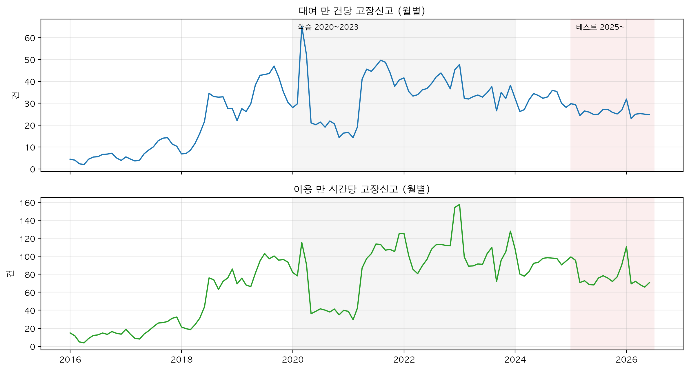
테스트 구간 자료는 레짐 점검용 월별 수준 추이만 봤다. 요일·날씨 패턴 분석과 변수 선택에는 2025년 이후 자료를 쓰지 않았다. 04b(레짐 원인 분석)는 테스트 구간 자료를 쓴다. 다만 1C 테스트가 끝난 2026-10-07에 시작한 사후 분석이고, 결과를 예측 모형의 선택과 변수에 쓰지 않는다고 계획 문서 첫머리에 적어 두었다. docs/reference/04b_레짐_원인_분석.md
2.7사람과 AI의 역할 분담
규칙은 한 줄이다. AI(Claude Code)는 실행, 검증, 제안을 하고 사람은 결정, 해석, 책임을 맡는다. 이렇게 나눈 이유는 둘이다. 결과의 근거를 사람이 자기 말로 설명할 수 있어야 한다. 그리고 AI는 그럴듯한 기본값을 고르기 쉬운데, 이 프로젝트에서 얻은 것은 그 기본값을 의심한 지점에서 나왔다(날짜 하나에 30일치를 돌려주는 API, 한 행이 신고 한 건이 아닌 자료 구조). docs/WORKFLOW_사람-AI_역할분담.md
| AI가 한 일 | 사람이 한 일 |
|---|---|
| 코드 작성과 수정, 오류 해결 | 문제 정의, 분석 범위 |
| 반복 실행, 대용량 처리, 파일 변환 | 임계값과 판정 기준(헛대여를 몇 분 안 반납으로 볼지, 중복 신고를 48시간으로 묶을지 등) |
| 검증 계산(행 수, 결측, 매칭률, 런북에 적어 둔 값과 비교) | 자료의 포함과 제외, 이상치 처리 |
| 결과 요약, 표와 그림 생성 | 변수와 모형 선택, 체크포인트 판정 |
| 선택지 2 ~ 3개와 장단점, 추천안 제시 | 결과 해석, 보고서 문장 |
| 결정 로그 초안 작성 | 결정 로그 확정, 테스트 구간 승인, 커밋과 푸시 승인 |
절차 하나마다 지키기로 한 순서는 같다. AI가 계획을 내고 사람의 승인을 기다린다. 표본이나 파일 하나로 작게 먼저 돌린 뒤 전체를 돌린다. 숫자를 런북에 적어 둔 값과 나란히 보고한다. 결정이 필요한 지점에서는 멈춘다. 사람이 정하면 결정 로그에 한 줄을 남긴다. 끝나면 사람이 답해야 할 질문을 낸다. 이 순서는 명령 다섯 개(/next, /checkpoint, /decide, /quiz, /wrapup)로 만들어 두었다. CLAUDE.md README.md
런북에는 사람이 정할 곳에 [결정] 표시가 있고, AI는 그 지점에서 아래 형식으로 묻고 멈춘다.
- 배경: 지금까지 나온 수치 2 ~ 3개
- 선택지 2 ~ 3개와 각각의 장단점
- AI의 추천과 이유 한 줄
- 결정하면 바뀌는 파일과 단계
체크포인트는 [결정] 가운데 다음 단계의 방향을 가르는 큰 판정이고, 판단 기준을 런북에 미리 적어 두었다. 런북의 A ~ H 여덟 개와 04b의 R-A, R-B 두 개로 모두 열 개다. docs/WORKFLOW_사람-AI_역할분담.md docs/decision_log.md
| 이름 | 단계, 날짜 | 물은 것 | 사람의 판정 |
|---|---|---|---|
| A | 1A, 2026-10-05 | 2025 ~ 2026년이 2023 ~ 2024년과 같은 레짐인가. 학습을 언제부터 할 것인가 | 다른 레짐으로 본다. 모든 예측 모형에 최근 4주 신고율을 넣고 테스트를 반기별로 보고한다. 학습은 2021-04-08부터(2.6) |
| B | 1A, 2026-10-05 | 어떤 변수를 넣고 뺄 것인가 | 변수 목록을 확정했다. 한파는 두 형태를 만들어 1B에서 비교한다. 신고가 덜 잡힌 2023-09-07 ~ 10-10은 학습에서 뺀다 |
| C | 1B, 2026-10-05 | 노출을 무엇으로 할 것인가. 날씨 효과가 HAC 표준오차로도 남는가. 부품별 차이가 뚜렷한가 | 노출은 대여건수(작을수록 좋은 적합도 지표인 AIC가 이용시간보다 194.0, 이동거리보다 197.6 낮음). 단계 0의 "노출 = 이동거리"를 바꿨다. 효과가 뚜렷해 1C를 줄이지 않고 부품별 모형을 유지한다 |
| D | 1C, 2026-10-05 ~ 10-07 | 검증에서 기준값을 5% 이상 이긴 부품이 넷 중 셋 이상인가. 어떤 모형을 고를 것인가 | 통과했다. 음이항 회귀로 통일하고 선택을 파일로 고정했다 |
| E | 1C, 2026-10-07 | 테스트에서도 선택 모형이 기준값보다 나은가 | 안장만 뚜렷하게 낫다. 결과를 그대로 주 결과로 보고한다. 테스트 뒤 개선안은 참고치로만 둔다 |
| F | 1C, 2026-10-07 | 단계 2에 들어갈 것인가 | 들어간다. 04b도 함께 시작한다 |
| R-A | 04b, 2026-10-07 | 2021-04 급증과 2025-03 하락은 고장의 변화인가 신고의 변화인가 | 2021-04는 신고가 절반만 잡히던 상태에서 돌아온 것으로 본다. 헛대여율은 전년 같은 반기의 0.933배(2025년 상반기)와 0.971배(하반기)였는데 신고율은 0.831배와 0.795배였다. 타이어와 페달은 신고가 줄어든 것으로 보고 체인과 안장은 열어 둔다 |
| R-B | 04b, 2026-10-07 | 남은 가설(빠른 수거, 직원의 선제 수거, 부품 조치)을 가를 수 있는가 | 2025-03 하락의 주 원인은 신고 성향·경로의 변화로 본다(헛대여 뒤 이틀 안 신고 확률이 전년 같은 반기의 0.65 ~ 0.70배). 보고서에는 2021-04를 "확인됨", 2025-03을 "강하게 시사됨, 원인 불명"으로 쓴다 |
| G | 2A, 2026-10-07 | 패널 점검표가 기대 범위 안인가. 미래 정보가 섞이지 않았나 | 확정했다(5,477,654행, 47,783대, 130주) |
| H | 2B, 2026-10-07 | 위험 점수를 서비스에 쓸 것인가(표 2-4 셋째 줄의 기준) | '조금 낫다' 칸이다. 공단용 화면에만 쓴다 |
결정 로그는 날짜, 단계, 결정, 근거 수치, 버린 대안의 다섯 칸으로 적었다. 2026-09-29부터 2026-10-10까지 90건(표의 줄 수)이다. 한 줄에 화면 수정 여러 개가 묶인 경우가 있어 낱개 결정의 수는 이보다 많다. 테스트 구간 승인이 두 건(주간 예측, 위험 모형. 둘 다 2026-10-07)이다. docs/decision_log.md
| 단계 칸 | 건수 |
|---|---|
| 0 사전검증 | 9 |
| 1A | 17 |
| 1B | 6 |
| 1C | 12 |
| 04b | 4 |
| 2A | 2 |
| 2B | 3 |
| 3A | 6 |
| 3B | 19 |
| 여러 단계에 걸친 것, 정리, 배포 | 12 |
| 합계 | 90 |
사람의 판단이 분석의 방향을 바꾼 대목을 결정 로그와 메모에서 골랐다.
- 1A(2026-10-05): "새 자전거가 대량으로 들어와 신고율이 내려갔다"는 사람의 가설을 확인하려고 자전거를 들어온 해별 묶음으로 나눠 신고율을 봤다. 2020년 하락은 신고율이 낮은 묶음의 비중이 커진 탓이었고, 2021-04 급등은 같은 묶음 안에서 일어난 변화였다. 이 구분이 학습 시작일의 근거가 됐다. docs/notes/02_EDA_메모.md
- 1A(2026-10-05): "결국 사용량을 예측하는 것 아닌가"라는 사람의 질문에서 주간 건수를 대여량과 신고율로 나눠 보는 계산이 나왔다. 예측을 "대여량 예측 × 신고율 예측"으로 나눠 설계하기로 했고, 운영에 쓰는 방식도 이 구조다. docs/notes/02_EDA_메모.md
- 1C(2026-10-07): 예보 오차를 가정으로 흉내 내던 것을, 실제 운영에서 쓸 예보와 같은 출처여야 한다는 사람의 판단으로 기상청의 과거 예보로 바꿔 학습과 평가를 다시 했다. 예보 파일은 사람이 포털에서 내려받았다. docs/decision_log.md
- 04b(2026-10-07): 계획 문서의 권장안(12개월 대 12개월 비교) 대신 사람이 "반기 단위로 전년 같은 반기와 비교"를 제안했다. 12개월 비교는 낮아진 수준이 이어진 2026년 상반기를 빠뜨린다. docs/decision_log.md
- 3A(2026-10-10): 운영 원자료를 언제까지 둘지에서 사람은 AI 추천(첫 반기 대사 뒤에 정하기)과 다르게 두 번째 반기 대사(2027-07)까지 두기로 했다. 반기 대사는 반기마다 나오는 공식 파일과 API로 모은 자료를 맞춰 보는 일이다. docs/decision_log.md
결정 말고 사람이 직접 한 일도 있다. 인증키 관리(AI는 .env를 읽지 않는다), 예약 실행 등록(2026-10-09), 경보를 받을 슬랙 주소 설정, 서버와 주소 선택(2026-10-10)이다. 커밋은 모두 24개이고 단계 결과를 사람이 확정한 뒤에 하는 것이 규칙이다. CLAUDE.md git log(커밋 기록)
2.8참고한 문헌과 사례
사전 검토에서 본 문헌과 사례의 이름만 적는다. 내용과 이 프로젝트와의 차이는 14절에 있다. docs/reference/01_전체-타당성-검토-요소별.md docs/reference/04_설계쟁점-7개-답변-및-문헌정리.md
- 자전거 단위 예측 정비: Grau-Escolano·Bassolas·Vicens(2024, 바르셀로나 공공자전거). 주행거리를 기준으로 삼는 설계와 변수 기여도 해석을 참고했다.
- 대여 패턴으로 고장 자전거 찾기: Kaspi·Raviv·Tzur(2016), Delassus 외(2016), Zhou 외(2023), Alhussam 외(2024), Huang 외(2025). 헛대여 신호의 배경이다.
- 정비 배정과 수리 수요: Lu 외(2022), Yu 외(2026), 임희종·정광헌(2020).
- 수리 뒤의 상태를 다루는 이론: Kijima(1989).
- 드문 수요와 계층 예측: Croston(1972), Syntetos·Boylan(2005), Teunter 외(2011), Wickramasuriya 외(2019). 센터 단위 예측을 하지 못해 저장소 코드에는 쓰이지 않았다. docs/reference/01_전체-타당성-검토-요소별.md
- 해외와 국내 운영 사례: Citi Bike(점검 기한 규정), Santander·YouBike·nextbike·Vélib'(신고 즉시 차단), Lime·Hellobike(자가진단), Capital Bikeshare(이용 횟수 기준 교체), Ecobici(부품 부족), 대전 타슈.
- 국내 선례와 유사 서비스: 박원빈(2020, GitHub 분석 프로젝트), RIDEY(연속 헛대여 경보와 자전거번호 조회).
2026-09-27 조사에서는 날씨와 이용량으로 정비나 신고 수량을 예측한 연구를 찾지 못했고, 자전거별 고장신고를 공개하는 도시도 서울 말고는 찾지 못했다. 조사 범위 안에서의 이야기이므로 보고서에는 "찾지 못했다"로 쓴다. docs/reference/01_전체-타당성-검토-요소별.md
설명할 수 있어야 할 것
- 따릉이 고장신고 건수를 고장 대수라고 부르면 안 되는 이유를, 자료의 한 행이 뜻하는 것과 신고 경로의 변화 두 가지로 설명해 보라.
- 1차 분석의 LSTM은 하루 단위 과제에서 직전 7일 평균보다 34.5% 나았는데, 7일 합계에서는 기준값을 꾸준히 이기지 못했다. 왜 그런가.
- 학습 시작을 2020-01에서 2021-04-08로 옮긴 근거는 무엇인가. "2020-01부터 쓰고 더미로 구분"과 "2022-03부터"를 택하지 않은 이유를 자기 말로 설명해 보라.
- 테스트 구간을 한 번만 열었다는 것을 무엇으로 보일 수 있는가. 테스트 뒤에 바뀐 것(점검 등급의 기준, 운영 예측 방식의 선택)은 기준을 바꾼 것과 어디가 다르고 어디가 같은가.
근거 파일: docs/PROJECT_OVERVIEW.md, docs/WORKFLOW_사람-AI_역할분담.md, docs/reference/01 ~ 06, docs/reference/04b_레짐_원인_분석.md, docs/runbook/00 ~ 06, docs/report_stage1.md, docs/decision_log.md, docs/phase0_result.md, docs/notes/02_EDA_메모.md, docs/STATUS.md, CLAUDE.md, output/tables/yearly_summary.csv, validation.csv, fc_naive_valid.csv, fc_valid.csv, fc_test.csv, fc_test_vs_valid.csv, fc_test_dm.csv, fc_ops_replay_valid.csv, regime_monthly.csv, regime_part_h1.csv, rc_4a_ratios.csv, reg_start_valid.csv, reg_exposure.csv, reg_irr_by_part.csv, eda_corr.csv, eda_weekly_decomp.csv, risk_eval_test.csv, risk_eval_valid.csv, risk_alert_valid.csv, rb_6_train_start_valid.csv, rb_17_train_start_live.csv, output/models/selection.csv, output/models/risk_spec.json, data/raw/external/fleet.csv
3자료와 전처리
서울 열린데이터광장의 따릉이 자료 네 가지에 기상과 공휴일 자료를 붙여 2016-01-01 ~ 2026-06-30의 일별 마스터(하루를 한 줄로 정리한 분석용 표) 3,834일 × 75열을 만들었다. 고장신고 파일의 한 행은 신고 1건 × 고장유형 1개여서 행 수(1,019,964)가 신고 건수(894,972)보다 14.0% 많고, 전체 신고는 신고 건수로 세되 서울시 공표치와 맞출 때만 행 수를 썼다(2024년 파일 161,846행, 공표 162,058). 자료의 구멍은 추정하지 않고 다른 공개 자료의 실제 값으로 메웠는데, 고장신고 파일에서 마지막 날이 통째로 빠진 6일은 API의 1,372행으로, 이용정보 요약 파일의 구멍 564일은 대여이력 2.77억 건에서 다시 합산한 값으로 채웠다. 실제 값이 없는 곳은 비우거나 뺐다. 기록이 깨진 이동거리 561일은 비워 두었고, 운영이 멈춘 3일은 보간하지 않고 신고율(이용량 대비 고장신고 건수) 분석에서 뺐다. data/processed/daily_master_v2.csv output/tables/yearly_summary.csv output/tables/validation.csv data/raw/failure_api/failure_gap_days.csv
3.1쓴 자료 한눈에
분석에 쓴 자료는 모두 공개 자료다. 따릉이 자료 네 가지는 서울 열린데이터광장에서 파일로 받았고, 날씨와 공휴일은 공공데이터포털 API로 받았다. 받은 원본은 data/raw/에 그대로 두고 고치지 않는다. 가공한 것은 data/interim/(중간 산출물)과 data/processed/(분석 입력)에 따로 둔다. 원본을 손으로 고치면 같은 결과를 다시 만들 수 없어서, 고칠 일이 생기면 코드에 규칙으로 넣었다.
| 자료 | 출처 | 기간 | 규모 | 한 행이 뜻하는 것 | 쓴 곳 |
|---|---|---|---|---|---|
| 고장신고 내역 | 서울 열린데이터광장 OA-15644(파일). 빠진 6일만 Open API tbCycleFailureReport | 2015-12-04 ~ 2026-06-30 | 파일 14개(엑셀 1개, CSV 13개) 1,018,597행과 API 1,372행. 합쳐 1,019,969행, 자전거번호 72,466개 data/processed/fail_std.parquet | 신고 1건 × 고장유형 1개(자전거번호, 등록일시, 고장구분) | 신고율의 분자. 자전거별 분석에서 맞히려는 값(→ 9절, 10절) |
| 일별 대여건수 | 서울 열린데이터광장의 '공공자전거 일별 대여건수'와 2015 ~ 2017년 '대여소별 대여내역'. 런북(단계별 실행 절차 문서)에는 "OA-14994 등"으로 적혀 있다 docs/runbook/02_단계1A_데이터_재구축과_EDA.md | 2015-09-19 ~ 2026-06-30 | 파일 23개 가운데 20개 사용(반납내역 3개 제외) notebooks/1A_Build_master.ipynb | 2018년부터는 하루 1행(서울 전체 대여건수). 2015 ~ 2017년은 대여소 × 날짜 | 노출(신고율의 분모가 되는 이용량) rentals. 최종으로 고른 분모다 |
| 이용정보(일별) | 서울 열린데이터광장 OA-15246 | 2017-01-01 ~ 2026-06-30(2016년과 2022-05 파일은 없다) | 파일 82개, 129,072,428행 data/interim/use_daily_agg/use_daily_files.csv | 날짜 × 대여소 × 이용권 × 성별 × 연령대별 이용건수·이동거리·이용시간(11열) | 이용시간 use_hours, 이동거리 dist_km(노출 후보) |
| 대여이력 | 서울 열린데이터광장 OA-15182 | 2015-09-19 ~ 2026-06-30 | 월 파일 130개(연도 ZIP 11개 안의 124개, 2026년 CSV 6개) docs/load_log.csv, 277,295,195건 data/interim/rent_hist_daily/rent_hist_daily.parquet | 대여 1건(17열. 2026년 파일은 자전거구분이 빠진 16열) | 이용정보의 구멍 메우기, 거리 기록 점검, 운영 자전거 수. 자전거 × 주 패널(→ 9절) |
| 기상 관측(ASOS 일자료) | 기상청 종관기상관측 서울(108) 지점. 공공데이터포털 API | 2015-01-01 ~ 2026-06-30 | 4,199행 × 62열. 16개 항목 사용 data/raw/weather/asos_daily_108_2015_202606.csv | 하루 1행 | 기온·강수·적설 변수, 한파 변수 |
| 공휴일 | 한국천문연구원 특일 정보 API(getRestDeInfo) | 2016 ~ 2026년 | 205행(날짜로는 203일) data/raw/calendar/holidays_2016_2026.csv | 공휴일 하루(대체·임시공휴일 포함) | 공휴일, 쉬는 날 다음 첫 근무일 같은 달력 변수 |
| 외부 사건 표 | 서울시 보도자료와 기사를 찾아 직접 정리. 행마다 출처를 적었다 | 2016-08-01 ~ 2026-09-04 | 56행 × 7열 data/raw/external/events.csv | 사건 1건(시작일, 끝일, 수치, 출처, 메모) | 운영 중단일 확정, 레짐(신고율 수준이 계단처럼 바뀐 구간) 해석(→ 4절, 8절) |
| 공식 운영 대수 | 서울시설공단과 서울시 자료를 정리 | 2015 ~ 2025년 연말 | 11행 × 8열 data/raw/external/fleet.csv | 연말 1행(운영 대수, 신규, 폐기, 대여소 수) | 참고용. 모형에는 넣지 않았다(→ 3.10) |
대여이력은 2015 ~ 2025년 연도 ZIP이 압축 상태로 약 11.9GB, 풀면 약 48.5GB이고 2026년 상반기 CSV가 3.2GB다. docs/phase0_result.md 그래서 연도 ZIP을 디스크에 풀지 않고 한 달치씩 바로 읽어 날짜별·자전거별로 줄였다.
뒤 단계에서 더 받은 자료도 있다. 기상청 과거 예보(→ 6절), 시간별 기상 관측 26,304행(2023-07-01 ~ 2026-06-30) data/raw/weather/asos_hourly_108_202307_202606.csv, 대여소 표 3,431곳 data/interim/station_master.csv이다. 뒤의 둘은 9절에서 다룬다.
3.2단계 0 사전검증: 큰 작업 전에 확인한 일곱 가지
단계 0은 본 작업을 시작하기 전에 계획 전체를 좌우하는 사실 일곱 가지를 직접 확인한 단계다(2026-09-29 ~ 10-01). 고장신고와 대여이력이 자전거번호로 이어지지 않으면 자전거별 분석(→ 9절, 10절)은 시작할 수 없다. 이런 사실을 몇 주 작업한 뒤에 알게 되는 일을 막으려고 가장 먼저 확인했다. 판정 기준은 재기 전에 정해 두었다. 매칭률(고장신고의 자전거번호가 대여이력에도 있는 비율)이 90% 이상이면 진행, 70 ~ 90%면 번호 정규화를 고쳐 다시 재고, 70% 미만이면 범위를 줄이기로 했다. docs/runbook/01_단계0_사전검증.md
| 확인하려던 것 | 결과 | 그래서 정한 것 |
|---|---|---|
| Q1. 고장신고 API가 어제 날짜까지 나오는가 | 2026-09-29에 전날 날짜로 조회해 값을 받았다. 시차 0 ~ 1일. 날짜 하나를 주면 그날부터 약 30일치가 온다(20260701을 주면 07-01 00:19 ~ 07-31 23:48의 8,346행). 2026-06은 API 11,548행과 파일 11,548행이 자전거번호·등록일시·유형까지 전부 같았다 | 대시보드는 매일 갱신을 가정한다. 과거는 파일, 파일 이후는 API로 잇는다. 수집은 한 번 부른 뒤 등록일시로 거른다 |
| Q2. 대여이력 API는 과거 어디까지 조회되는가 | 2018년 6월까지 값이 나왔다. 시 단위로 부르면 정확히 그 한 시간이 온다. 2021-06-15 08시는 API 2,538건, 파일 2,437건이었다 | 과거 분석은 파일 기준으로 한다. API는 파일 이후 구간에만 쓴다 |
| Q3. 고장신고의 자전거번호가 대여이력과 이어지는가 | 2026-01-15 ~ 31 신고 3,076행 가운데 99.87%가 1월 대여이력에 있는 번호였다. 1월에 대여된 자전거 36,290대, 신고된 자전거 4,461대, 양쪽에 다 있는 자전거 4,452대 | 자전거별 분석(단계 2)을 진행한다 |
| Q4. 연도별 파일의 열과 형식이 같은가 | 고장신고는 CSV 13개가 모두 3열이다. 유형 열 이름이 '구분'과 '고장구분'으로 섞여 있고 등록일시 형식이 세 가지다. 대여이력은 2015-09 ~ 2025-12의 월 파일 124개가 같은 17열, 2026년 6개가 16열이다 | 열 이름 대응표(docs/schema_map.csv)를 만든다(→ 3.11) |
| Q5. 이용거리 기록을 믿을 수 있는가 | 2026-01 대여 1,640,582건에서 결측 0%, 거리 0이 3.5%(같은 대여소 반납 2.5%, 다른 대여소 반납 1.0%). 거리 중앙값 1,142m, 평균 속도 중앙값 8.7km/h, 35km/h를 넘는 대여는 1만 건에 6건꼴 | 노출을 이동거리로 한다. 이 결정은 뒤에 대여건수로 바뀐다(→ 3.7) |
| Q6. 고장신고 등록일시에 시각이 있는가 | 2021-02 ~ 12의 두 파일만 날짜만 있다. 나머지는 시각이 있다 | 중복 병합 규칙을 행마다 고른다(→ 3.4) |
| Q7. 기상·공휴일 API가 작동하는가 | 시간별 기상 관측 24시간분, 단기예보, 특일정보 모두 정상 응답 | 계획대로 쓴다 |
일곱 질문을 확인하다가 더 알게 된 것이 있다. 고장신고 한 행이 신고 1건 × 유형 1개라는 것(→ 3.3)과, API가 주는 유형이 여섯 가지이고 기타가 가장 많다는 것이다(2026-07의 8,346행 가운데 기타 2,722행, 2,722 ÷ 8,346 = 32.6%). 헛대여(빌린 대여소에 몇 분 안에 그대로 반납한 대여)가 고장 신호가 될 수 있는지도 미리 봤다. 2026-09-28 08시 한 시간의 대여 13,933건 가운데 3분 이하·같은 대여소 반납·300m 이하인 대여가 386건(2.8%)이었다. 그 시간에 헛대여가 2번 이상 있었던 자전거 35대는 40.0%가 최근 7일 안에 신고된 자전거였고, 헛대여가 없던 9,471대에서는 5.6%였다(40.0 ÷ 5.6 = 7.1배). 신고 기간이 헛대여 앞뒤를 모두 포함해서 순서는 가르지 못한 예비 수치다(→ 9절, 10절). notebooks/00_사전검증.ipynb
단계 0의 결과로 계획이 여섯 군데 바뀌었다. docs/phase0_result.md
- 고장신고 API를 날짜마다 부르지 않는다. 날짜마다 부르면 같은 신고가 최대 30번 겹친다.
- 전체 신고의 기준을 신고 건수로 바꾼다. 행 수는 공표치와 비교할 때만 쓴다.
- 중복 병합 규칙을 파일 단위에서 행 단위로 바꾼다.
- 대여이력은 연도 ZIP을 통째로 풀지 않고 한 달치씩 처리한다. 상세 기간의 용량 추정을 17GB에서 23GB로 고쳤다.
- 2026년 대여이력에 없는 자전거구분은 과거 기록과 API로 채운다.
- 거리 기록이 이상한 행을 표시하고 보정하는 규칙을 더한다(→ 9절).
3.3고장신고: 한 행의 뜻과 세는 기준
고장신고 파일은 세 열이다. 자전거번호, 등록일시, 고장구분. 한 행은 신고 1건 × 고장유형 1개다. 이용자가 한 번 신고하면서 타이어와 체인을 함께 고르면 자전거번호와 등록일시가 같은 행이 두 개 생긴다. API 응답에서 SPB-49509의 2026-07-01 00:33:30 신고가 타이어 행과 체인 행으로 나뉘어 있었다. notebooks/00_사전검증.ipynb
그래서 "몇 건인가"를 세는 기준이 셋 생긴다. 셋을 모두 마스터에 넣고 쓰임을 나눴다. 아래에서 주 타깃은 전체 신고를 분석하고 예측할 때 맞히려는 값을 가리킨다.
| 기준 | 마스터의 열 | 세는 법 | 합계 | 쓰는 곳 |
|---|---|---|---|---|
| 행 수 | fail_*, total_rows | 파일의 행을 그대로 센다 | 1,019,964 | 유형별 집계, 서울시 공표치와 대조 |
| 신고 건수 | reports(= total_faults) | 자전거번호와 등록일시가 같은 행을 1건으로 센다 | 894,972 | 전체 신고의 주 타깃 |
| 중복 병합 건수 | faild_* | 같은 자전거·같은 유형이 48시간 안에 다시 신고되면 뒤의 행을 뺀다 | 988,365 | 민감도 분석, 자전거별 위험 모형이 맞히려는 값(→ 10절) |
행 수는 신고 건수보다 14.0% 많다(1,019,964 ÷ 894,972 = 1.140). 2024년만 보면 161,846행, 141,337건이다(161,846 ÷ 141,337 = 1.145). 연도별로는 신고 건수 ÷ 행 수가 2018 ~ 2020년 0.902 ~ 0.908, 2021년부터 0.867 ~ 0.876이다. 2021년부터 한 번 신고에 고르는 유형이 조금 늘었다. 다만 2021-02 ~ 12는 등록일시에 시각이 없어 같은 날 같은 자전거의 신고가 한 건으로 묶이므로(→ 3.4) 2021년 값에는 그 영향도 섞여 있다. output/tables/yearly_summary.csv
서울시가 발표하는 연간 고장신고 건수는 파일의 행 수와 맞는다. 2024년은 파일 행 합계 161,846, 공표 162,058로 212건(0.1%) 차이다. 2025년은 파일 112,879, 공표 112,970으로 91건(0.1%) 차이다. 신고 건수(2024년 141,337)는 공표치와 맞지 않는다. 그래서 공표치는 행 기준이라고 판단했고, 보고서에서 공표치와 견줄 때는 행 수를 쓴다. output/tables/validation.csv output/tables/yearly_summary.csv
| 유형 | 마스터의 열 | 행 수 | 비중(%) |
|---|---|---|---|
| 기타 | fail_etc | 280,472 | 27.5 |
| 체인 | fail_chain | 204,562 | 20.1 |
| 타이어 | fail_tire | 186,844 | 18.3 |
| 안장 | fail_saddle | 163,581 | 16.0 |
| 페달 | fail_pedal | 98,347 | 9.6 |
| 단말기 | fail_terminal | 85,278 | 8.4 |
| 파손 | fail_broken | 629 | 0.1 |
| 잠금장치 불량 | fail_lock | 251 | 0.0 |
유형은 여덟 가지를 모두 따로 둔다. 파손과 잠금장치 불량은 2016 ~ 2018년 파일에만 있고 2019년부터는 여섯 유형뿐이다. data/processed/fail_std.parquet 1차 분석은 단말기·파손·잠금장치를 기타에 합쳤다. 이번에는 부품별 분석이 목적이어서 합치지 않았다. 유형 비중은 해마다 달라서 2024년에는 기타 26.8%, 체인 23.3%, 타이어 18.2%, 안장 15.2%, 페달 12.2%, 단말기 4.3%다(2024년 161,846행 기준). data/processed/daily_master_v2.csv
3.4고장신고: 등록일시 형식, 중복 병합, 빠진 6일
등록일시 형식은 파일마다 다르다. 2021-02 ~ 12의 두 파일(53,843행, 95,689행)은 날짜만 있고 시각이 없다. 나머지는 시:분 또는 시:분:초까지 있다. 유형 열의 이름도 '고장구분'과 '구분' 두 가지다. docs/schema_map.csv data/interim/failure_utf8/ 읽을 때 열 이름을 표준 이름으로 맞추고, 날짜는 섞인 형식을 그대로 받아들이는 방식으로 읽었다. 유형 이름 뒤에 공백이 붙은 값('기타 ')이 있어서 공백을 정리한 뒤 셌다. notebooks/1A_Build_master.ipynb 읽은 뒤 날짜가 빈 행과 자전거번호가 빈 행은 0개였다. data/processed/fail_std.parquet
더 자세히: 파일별 행 수와 등록일시 형식
| 파일(기간) | 행 수 | 등록일시 형식 | 유형 열 이름 |
|---|---|---|---|
| 2015 ~ 2020.10(엑셀) | 181,592 | 시:분:초 | 고장구분 |
| 2020.11 ~ 2021.01 | 6,749 | 시:분 | 고장구분 |
| 21.02 ~ 21.06 | 53,843 | 날짜만 | 고장구분 |
| 21.7 ~ 21.12 | 95,689 | 날짜만 | 고장구분 |
| 22.01 ~ 06 | 74,924 | 시:분 | 고장구분 |
| 22.07 ~ 12(이름만 csv인 엑셀) | 105,550 | 시:분:초 | 고장구분 |
| 23.1 ~ 6 | 83,734 | 시:분 | 구분 |
| 23.7 ~ 10 | 67,328 | 시:분:초 | 고장구분 |
| 23.11 ~ 12 | 21,851 | 시:분:초 | 고장구분 |
| 2401 ~ 2406 | 76,464 | 시:분:초 | 구분 |
| 2407 ~ 2412 | 85,382 | 시:분:초 | 구분 |
| 2501 ~ 2506 | 53,574 | 시:분:초 | 구분 |
| 2507 ~ 2512 | 59,305 | 시:분:초 | 구분 |
| 2601 ~ 2606 | 52,612 | 시:분:초 | 구분 |
| 합계 | 1,018,597 |
같은 고장을 여러 사람이 신고하는 경우를 걸러 보려고 중복 표시(keep)를 만들었다. 같은 자전거의 같은 유형에서 바로 앞 신고와의 간격이 48시간 이하이면 뒤의 행을 중복으로 표시한다. 시각이 없는 행은 48시간을 잴 수 없어서 같은 날과 다음 날의 신고를 중복으로 본다. 2021-02 ~ 12 파일만 시각이 없으므로 전체에 한 규칙을 쓰면 한쪽이 틀린다. 그래서 행마다 시각이 있는지 보고 규칙을 고른다. 이렇게 하면 2021-06-30처럼 API로 채워 시각이 있는 행도 맞는 규칙을 받는다. 중복으로 표시된 행은 31,599행, 전체의 3.1%다(31,599 ÷ 1,019,969). data/processed/fail_std.parquet
병합판은 민감도 분석에 쓰고 주 타깃인 신고 건수에는 적용하지 않는다. 48시간은 설계 단계에서 정한 기준값이다. 이 값을 고른 근거 수치는 문서에서 찾지 못했다. 시각이 없는 2021-02 ~ 12의 신고 건수는 같은 날 같은 자전거의 신고가 한 건으로 묶여 실제보다 조금 적다. 이 문제는 회귀 단계에서 따로 확인했다. 2024년 일별 오차율이 2021-04-08부터 학습하면 10.1%, 시각 없는 기간에 더미를 넣으면 10.6%, 2022-03부터 학습하면 11.8%여서 더미 없이 2021-04-08부터 학습하기로 했다(→ 5절). output/tables/reg_start_valid.csv
고장신고 파일은 몇 달 단위로 나뉘어 올라온다. 2019년 이후 신고가 0건인 날을 찾으니 6일이었고 모두 파일의 마지막 날이었다. 앞뒤 날은 수십 ~ 수백 행이다(2021-06-29 605행, 2021-07-01 821행). 하루 동안 신고가 한 건도 없었다고 보기 어려워, 파일을 만들 때 마지막 날이 잘린 것으로 판단했다. Open API에는 이 날들의 신고가 있었고 6일 합계가 1,372행이다. API와 파일이 같은 자료인지는 함께 받은 다음 날 행 수로 확인했다. 6일 모두 API의 다음 날 행 수가 파일의 그 날 행 수와 같았다.
| 빠진 날 | 그 날이 들어 있어야 할 파일 | API로 채운 행 | 다음 날 행 수(API) | 다음 날 행 수(파일) |
|---|---|---|---|---|
| 2020-10-31 | 2015 ~ 2020.10 | 139 | 56 | 56 |
| 2021-01-31 | 2020.11 ~ 2021.01 | 61 | 74 | 74 |
| 2021-06-30 | 21.02 ~ 21.06 | 690 | 821 | 821 |
| 2021-12-31 | 21.7 ~ 21.12 | 289 | 136 | 136 |
| 2022-06-30 | 22.01 ~ 06 | 21 | 752 | 752 |
| 2022-12-31 | 22.07 ~ 12 | 172 | 129 | 129 |
| 합계 | 1,372 |
2022-06-30은 21행뿐이다. 그 날은 강수량 176.2mm, 대여 8,796건으로 폭우 때문에 이용 자체가 적었다. data/processed/daily_master_v2.csv 채운 뒤에는 2019년 이후 신고가 0건인 날이 운영 중단일을 빼면 하루도 없다. output/tables/validation.csv
확장자만 csv인 엑셀 파일도 있었다. 고장신고의 22.07 ~ 12 파일(시트 1개, 105,550행 × 3열)과 일별 대여건수 파일 2개(2019-12-01 ~ 2020-05-31, 2020-06-01 ~ 06-30)다. CSV로 읽으면 깨진다. py/prep.py의 sniff()가 파일의 첫 두 바이트가 PK(엑셀과 압축 파일의 표지)인지 보고 가려낸다. 가려낸 파일은 CSV 대신 엑셀로 읽었다. 고장신고 폴더를 일괄 변환 함수로 다시 돌리면 이 파일이 .xlsx로 한 번 더 복사돼 같은 기간이 두 번 들어가므로 다시 돌리지 않는다. notebooks/00_사전검증.ipynb docs/runbook/02_단계1A_데이터_재구축과_EDA.md
3.5노출의 첫째 후보: 일별 대여건수
노출은 신고율의 분모가 되는 이용량이다. 신고율은 신고 건수를 노출로 나눈 값이고, 분석 표에서는 대여 1만 건당 신고 건수로 적었다(화면에서는 대여 1,000건당으로 보여 준다). 노출 후보는 대여건수(rentals), 이용시간(use_hours), 이동거리(dist_km) 셋이다. 셋을 모두 마스터에 넣었고, 어느 것을 쓸지는 회귀 단계에서 비교해 정했다(→ 3.7, 5절).
일별 대여건수 파일 23개는 파일마다 날짜 범위, 한 날짜당 행 수, 앞 파일과의 간격을 표로 만들어 점검했다. 해마다 파일 이름과 열 이름이 달라서(날짜 열이 '대여일자', '대여일시', '대여 일자 / 월'의 세 가지) 겹치거나 비는 기간이 생기기 쉽다. 점검에서 나온 것은 네 가지다. notebooks/1A_Build_master.ipynb
- 2015 ~ 2017년에는 '대여소별 대여내역'과 '대여소별 반납내역' 두 종류가 있다. 같은 이용을 빌린 쪽과 반납한 쪽에서 각각 센 것이어서 연 합계가 세 해 모두 같다(2015년 113,708, 2016년 1,611,635, 2017년 5,031,031). 둘 다 읽으면 대여건수가 2배가 된다. data/interim/rent_daily_utf8/
- 2015 ~ 2017년 파일은 대여소 × 날짜 단위다(한 날짜당 평균 119.9행, 272.8행, 672.5행). 날짜별로 더해야 하루 합계가 된다. 2018년부터는 하루 1행이다.
- 숫자에 쉼표가 든 파일(
"105,196")과 끝에 빈 줄이 붙은 파일(2021-02 ~ 2022-12의 네 파일에 26 ~ 65줄)이 있다. 그대로 읽으면 값이 빈칸이 되거나 날짜 없는 행이 생긴다. 쉼표를 지우고 날짜 없는 줄을 버렸다. - 2016-01-01 이후 빠진 날은 2019-09-07 하루다. 태풍으로 운영이 멈춘 날이다(→ 3.9).
이렇게 읽은 연 합계는 2016년 1,611,635건에서 2023년 44,905,293건까지 늘었다가 2024년 43,849,586건, 2025년 37,373,092건이다. output/tables/yearly_summary.csv 마스터는 2016-01-01부터 만든다. 2015년 자료는 09-19부터 104일이다. notebooks/1A_Build_master.ipynb
3.6노출의 둘째·셋째 후보: 이용시간과 이동거리
이용시간과 이동거리의 기본 출처는 이용정보(일별) 82개 파일이다. 서울시가 대여소·이용권·성별·연령대별로 미리 더해 둔 요약본이어서 건별 원본인 대여이력보다 훨씬 가볍다. 파일마다 머리줄이 달라 열 이름으로는 읽을 수 없었다. 머리줄이 없는 파일, 글자가 깨진 파일, 값을 작은따옴표로 감싼 파일이 있고 같은 열을 '이동거리(M)'와 '이용거리(M)'로 다르게 부른다. 열 순서(11열)는 82개가 모두 같아서 위치로 읽었다. 0번째가 대여일자, 6번째 이용건수, 9번째 이동거리(m), 10번째 이용시간(분)이다. data/interim/use_daily_agg/use_daily_files.csv py/build/use_daily.py
이 요약본에는 구멍이 있다.
- 2016년 전체와 2022-05 파일이 없다.
- 2021-04, 2021-05, 2021-06, 2025-02 파일은 자료가 1,048,575행에서 끝난다. 머리줄까지 1,048,576줄이고 엑셀 한 시트의 최대 줄 수와 같다. 엑셀로 저장하면서 뒤가 잘린 것으로 보인다. 2021-06 파일은 06-24에서 끝난다. data/interim/use_daily_agg/use_daily_files.csv
- 2021-01 ~ 05 파일은 이용건수가 일별 대여건수보다 달마다 2.4 ~ 9.2% 적다. data/interim/use_daily_agg/use_daily_by_file.parquet
- 파일 안에서 하루씩 빠진 날이 있다(2018-04-11, 2018-05-10, 2019-02-22). py/build/rent_history_daily.py
메우는 규칙은 이렇다. 이용정보에 그 날이 없거나 이용정보의 이용건수가 일별 대여건수와 1% 넘게 다르면, 그 날의 이용건수·거리·시간을 대여이력에서 날짜별로 더한 값으로 바꾼다. 어느 출처를 썼는지는 use_src 열에 남겼다. 바뀐 날은 564일이다.
| 기간 | 일수 | 바꾼 이유 |
|---|---|---|
| 2016-01-01 ~ 2016-12-31 | 366 | 이용정보 파일이 없다 |
| 2018-04-11, 2018-05-10, 2019-02-22 | 3 | 파일 안에서 그 날이 빠져 있다 |
| 2018-04-18, 2018-04-19 | 2 | 이용건수가 1% 넘게 다르다 |
| 2020-12-28 ~ 2020-12-31 | 4 | 이용건수가 1.0 ~ 1.5% 적다 |
| 2021-01-01 ~ 2021-05-31 | 151 | 이용건수가 달마다 2.4 ~ 9.2% 적다(04월·05월 파일은 줄 수 한계에서 잘렸다) |
| 2021-06-25 ~ 2021-06-30 | 6 | 파일이 06-24에서 끝난다 |
| 2022-05-01 ~ 2022-05-31 | 31 | 이용정보 파일이 없다 |
| 2025-02-28 | 1 | 파일이 줄 수 한계에서 잘렸다 |
| 합계 | 564 |
나머지 3,269일은 이용정보 값을 그대로 썼고, 운영이 멈춘 2019-09-07 하루는 두 출처 모두 값이 없다. 2018-04-18과 04-19는 대여이력으로 바꾼 뒤에도 일별 대여건수보다 2.1%, 1.0% 적다(22,996 ÷ 23,499, 20,191 ÷ 20,400). data/processed/daily_master_v2.csv
두 출처를 섞어 써도 되는지는 두 가지로 확인했다. 두 출처에 모두 있고 이용건수가 똑같은 1,174일을 보면, 거리 합계는 그 가운데 98.2%, 시간 합계는 98.9%의 날에서 상대 차이가 0.01% 미만이다(직접 대조). data/interim/use_daily_agg/use_daily_by_file.parquet data/interim/rent_hist_daily/rent_hist_daily.parquet 대여이력을 연도별로 더한 건수는 2016 ~ 2025년에 일별 대여건수의 0.9990 ~ 1.0001배다(직접 대조). data/interim/rent_hist_daily/rent_hist_daily.parquet output/tables/yearly_summary.csv 2026년 상반기만 1.030배로 3.0% 많다(18,511,943 ÷ 17,978,991). docs/load_log.csv 2026년 대여이력 파일에만 1분 이하 대여 기록이 많이 들어 있기 때문으로 보인다(1분 이하 비율이 2023 ~ 2025년 1.1 ~ 1.2%, 2026년 4.0%). output/tables/panel_2a2_by_year.csv 2026년에는 대여이력으로 바꾼 날이 없어 마스터에는 영향이 없다(→ 9절).
이동거리에는 메울 수 없는 문제가 하나 더 있다. 대여 한 건마다 기록되는 이용거리가 0(또는 빈칸)으로 찍힌 비율이 시기에 따라 크게 다르다. 평소에는 달마다 1.4 ~ 4.2%다(2016-01 ~ 2019-10). 2020-03-04부터 10%를 넘고, 2020-08 ~ 12에는 달마다 83.0 ~ 95.1%가 0이다. 2021-01-04에 42.3%였다가 다음 날 7.3%로 돌아온다. 2021-08 ~ 2022-03에도 달마다 11.0 ~ 22.3%다. 원본 기록이 0이어서 이용정보로도 대여이력으로도 복구되지 않는다. data/processed/daily_master_v2.csv
그래서 거리는 네 열로 나눠 두었다. dist_km_raw는 기록된 그대로의 합이다. dist_zero_share는 그날 대여 가운데 거리가 0인 비율이다. dist_ok는 그 비율이 10% 미만이면 참이다. dist_km은 dist_ok인 날에만 값이 있다. dist_km이 빈 날은 561일이다. output/tables/validation.csv 2020-03-04 ~ 2021-01-04의 307일과 2021-08 ~ 2022-04의 229일이 대부분이다. dist_ok가 거짓인 날은 562일인데, 그 가운데 운영 중단일 2019-09-07은 거리를 0으로 채워서 빈칸으로 세지 않는다. data/processed/daily_master_v2.csv 이용시간은 거리가 깨진 기간에도 전 기간 빈칸이 0일이다. output/tables/validation.csv
더 자세히: 달마다 본 거리 0 비율(2020-01 ~ 2022-04)
| 달 | 비율 | 달 | 비율 |
|---|---|---|---|
| 2020-01 | 7.2 | 2021-03 | 9.1 |
| 2020-02 | 7.6 | 2021-04 | 10.2 |
| 2020-03 | 12.5 | 2021-05 | 7.1 |
| 2020-04 | 36.6 | 2021-06 | 6.4 |
| 2020-05 | 62.2 | 2021-07 | 6.7 |
| 2020-06 | 75.0 | 2021-08 | 11.0 |
| 2020-07 | 49.6 | 2021-09 | 17.7 |
| 2020-08 | 88.9 | 2021-10 | 19.1 |
| 2020-09 | 88.5 | 2021-11 | 21.0 |
| 2020-10 | 92.8 | 2021-12 | 21.7 |
| 2020-11 | 95.1 | 2022-01 | 22.3 |
| 2020-12 | 83.0 | 2022-02 | 18.2 |
| 2021-01 | 11.5 | 2022-03 | 12.8 |
| 2021-02 | 6.6 | 2022-04 | 4.3 |
3.7건당 이용시간의 변화와 최종 노출
대여 한 건의 길이는 해마다 다르다. 연 합계로 계산한 건당 이용시간은 2020년 30.5분에서 2023년 20.9분으로 줄었다. 2020년의 대여 한 건은 2023년보다 1.46배 길다(30.52 ÷ 20.94). 같은 "대여 1만 건"이 해마다 다른 이용량을 뜻한다. 그래서 대여건수 기준 신고율은 이용시간 기준 신고율과 나란히 놓고 확인했다(→ 4절).
| 연도 | 행 수 | 신고 건수 | 신고 ÷ 행 | 대여건수 | 대여 만 건당 신고 | 건당 이용시간(분) | 건당 이동거리(km) |
|---|---|---|---|---|---|---|---|
| 2016 | 1,095 | 909 | 0.830 | 1,611,635 | 5.6 | 26.4 | 3.38 |
| 2017 | 6,491 | 5,372 | 0.828 | 5,031,031 | 10.7 | 28.6 | 3.62 |
| 2018 | 29,149 | 26,285 | 0.902 | 10,124,874 | 26.0 | 27.5 | 4.54 |
| 2019 | 81,549 | 74,075 | 0.908 | 19,071,949 | 38.8 | 25.7 | 5.03 |
| 2020 | 68,783 | 62,228 | 0.905 | 23,705,020 | 26.3 | 30.5 | 2.85 |
| 2021 | 151,980 | 131,725 | 0.867 | 32,054,693 | 41.1 | 25.7 | 2.80 |
| 2022 | 180,667 | 158,009 | 0.875 | 40,950,815 | 38.6 | 22.4 | 2.57 |
| 2023 | 172,913 | 151,528 | 0.876 | 44,905,293 | 33.7 | 20.9 | 2.41 |
| 2024 | 161,846 | 141,337 | 0.873 | 43,849,586 | 32.2 | 20.9 | 2.36 |
| 2025 | 112,879 | 97,838 | 0.867 | 37,373,092 | 26.2 | 20.7 | 2.30 |
| 2026(상반기) | 52,612 | 45,666 | 0.868 | 17,978,991 | 25.4 | 21.2 | 2.38 |
표의 2020 ~ 2022년 건당 이동거리는 거리가 0으로 기록된 대여가 섞인 값이어서 그대로 읽으면 안 된다. 대여 만 건당 신고가 해마다 크게 다른 것(2019년 38.8, 2020년 26.3, 2021년 41.1, 2025년 26.2)은 4절과 8절에서 다룬다.
세 노출은 같이 움직인다. 운영 중단일을 뺀 전 기간의 상관계수는 대여건수와 이용시간 0.949, 대여건수와 이동거리 0.905, 이용시간과 이동거리 0.960이다(거리는 dist_ok인 날만). 2021-01-05 이후로 좁히면 이용시간과 이동거리가 0.996이다. data/processed/daily_master_v2.csv
최종 노출은 대여건수다. 노출을 offset(계수를 1로 고정해 넣는 항. 신고 건수가 노출에 비례한다고 두는 것)으로 넣은 음이항 회귀에서 대여건수 모형의 AIC가 이용시간보다 194.0, 이동거리보다 197.6 낮았다. output/tables/reg_exposure.csv 2024년 일별 오차율도 대여건수 11.2%, 이용시간 14.8%, 이동거리 13.7%였다. output/tables/reg_exposure_valid.csv 단계 0의 "노출 = 이동거리"를 바꾼 것이다(체크포인트 C, 2026-10-05. 체크포인트는 소유자가 결과를 보고 다음 방향을 정하는 지점이다). 비교 과정은 5절에 있다.
3.8기상, 공휴일, 한파 변수
날씨는 기상청 종관기상관측(ASOS) 서울(108) 지점의 일자료를 썼다. API가 주는 62개 항목 가운데 16개를 골랐다. 평균·최고·최저기온, 일강수량, 1시간 최다강수량, 강수 계속시간, 평균·최소 상대습도, 일사량, 일조시간, 평균·최대 풍속, 평균 지면온도, 최저 초상온도, 그날 새로 온 눈, 쌓인 눈이다. data/raw/weather/asos_daily_108_2015_202606.csv
빈칸의 뜻이 항목마다 달라서 처리도 나눴다. 강수와 적설의 빈칸은 비나 눈이 없었다는 뜻이어서 0으로 채웠다. 기온·습도·일사·일조·바람의 빈칸은 관측이 빠진 진짜 결측이어서 앞뒤 날 값을 직선으로 이어 채우고(선형 보간) wx_imputed로 표시했다. 채운 날은 27일이다. output/tables/validation.csv 항목별로는 일사량 18일, 일조시간 17일, 평균 풍속 8일, 최대 풍속 6일, 최저 초상온도 2일, 최고기온·최저기온·최소 습도 각 1일이다. notebooks/1A_Build_master.ipynb 1차 분석은 빈칸을 모두 0으로 바꿔서 기온 0℃와 결측이 섞였다. 강수는 mm 값을 그대로 둔다(rain_mm). 1차 분석은 0 ~ 3의 네 범주로 나눠 정보가 줄었다.
달력 변수는 공휴일 표에서 만들었다. dow는 요일(1 = 월, 7 = 일), is_holiday는 공휴일(마스터에서 193일), is_off는 주말 또는 공휴일이다. after_off는 쉬는 날 다음 첫 근무일(595일), bridge는 쉬는 날 사이에 낀 근무일(30일)이다. data/processed/daily_master_v2.csv 쉬는 날 다음 첫 근무일을 따로 둔 것은 밀린 신고가 그 날 몰리는지 보려는 것이다(→ 4절).
날씨에서 만든 변수는 비 온 날(rain_any, 1mm 이상), 어제와 그제 강수량(rain_lag1, rain_lag2), 마지막 비 이후 며칠째(days_since_rain, 최대 14), 일교차(temp_range), 얼었다 녹은 날(freeze_thaw, 최저 0℃ 미만이고 최고 0℃ 초과), 더운 날(hot, 최고 30℃ 이상), 추운 날(cold, 최저 −5℃ 이하)이다. 계절은 1년 주기와 반년 주기의 사인·코사인 네 열(fs1, fc1, fs2, fc2)로 넣었다.
| 열 | 정의 | 만든 이유 |
|---|---|---|
tavg_normal | 평년 기온. 2016 ~ 2023년 평균기온에 1년·반년 주기 사인·코사인을 최소제곱으로 맞춘 곡선. 날짜만으로 정해진다(−2.0 ~ 27.0℃) | "그 계절치고 추운 날인가"를 재는 기준 |
tavg_anom | 그날 평균기온 − 평년 기온 | 평년보다 몇 ℃ 높은지(추우면 음수) |
cold_wave | 평균기온이 −4℃ 이하면 참. 마스터 전체에서 205일 | 단순하고 설명하기 쉽다. −3℃와 −12℃를 구분하지 못한다 |
winter_anom | 12 ~ 2월에는 tavg_anom, 그 밖의 달은 0 | 추위의 정도와 겨울에 유난히 따뜻한 날까지 잡는다 |
한파 변수를 이렇게 만든 근거는 탐색 단계의 결과다. 평균기온이 −4℃ 이하인 날의 신고율은 앞뒤 2주 중앙값의 1.33배였고(60일), −4 ~ 0℃ 구간은 1.02배였다. output/tables/eda_rel_temp.csv 겨울에 평년보다 6℃ 넘게 추운 날은 1.52배, 3 ~ 6℃ 따뜻한 날은 0.90배, 6℃ 넘게 따뜻한 날은 0.86배였다. 겨울이 아닌 달은 0.97 ~ 1.02배로 차이가 없었다. output/tables/eda_rel_temp_anom.csv 기온 효과가 겨울의 추위에만 있어서 평균기온을 그대로 넣는 대신 추위를 잡는 변수를 두 형태로 만들었다. 회귀에서 둘을 다 넣은 모형이 더미만 넣은 모형보다 AIC가 93.8 낮아 둘 다 쓴다(→ 5절). output/tables/reg_cold.csv
평년 계산에 2024년 이후 기온을 쓰지 않은 것은 검증·테스트 구간의 정보가 변수에 들어가지 않게 하려는 것이다. cold는 cold_wave로 대체했다. 더위와 얼었다 녹은 날은 탐색 단계에서 효과가 보이지 않았다(평균기온 28℃ 이상인 날 1.01배, 얼었다 녹은 날 0.99배). output/tables/eda_rel_parts.csv 그래도 hot과 freeze_thaw를 마스터에 남겨 두고 모형 단계에서 판단했다(→ 5절).
3.9운영이 멈춘 날과 신고가 덜 잡힌 기간
운영이 멈춘 날은 두 종류로 표시했다. 하루 종일 사실상 운영하지 않은 날(no_service)이 3일, 일부 시간만 운영한 날(partial_service)이 10일이다. 서울시 공지와 기사에 나온 중단 시각을 대여이력의 시간대별 대여건수와 맞춰 보고 확정했다. 공지에 재개 시각이 없는 경우(태풍 바비, 2022년 폭우)는 대여이력에서 찾았다. data/raw/external/events.csv
| 날짜 | 표시 | 사건 | 대여건수 | 신고 건수 |
|---|---|---|---|---|
| 2017-07-05 | 일부 운영 | 시스템 개편(07-05 12시 ~ 07-07 12시 중단) | 5,222 | 8 |
| 2017-07-06 | 운영 중단 | 시스템 개편 | 9 | 0 |
| 2017-07-07 | 일부 운영 | 시스템 개편 | 3,245 | 5 |
| 2019-09-06 | 일부 운영 | 태풍 링링(09-06 12시 중단, 09-08 11시 재개) | 16,631 | 98 |
| 2019-09-07 | 운영 중단 | 태풍 링링 | 0 | 2 |
| 2019-09-08 | 일부 운영 | 태풍 링링 | 52,055 | 260 |
| 2020-08-26 | 일부 운영 | 태풍 바비(08-26 18시 중단, 08-27 14시대 재개) | 40,169 | 64 |
| 2020-08-27 | 일부 운영 | 태풍 바비 | 32,745 | 52 |
| 2022-08-08 | 일부 운영 | 폭우(12시대부터 대여 급감) | 21,616 | 70 |
| 2022-08-09 | 운영 중단 | 폭우(08-10 07시대 재개) | 482 | 1 |
| 2023-09-07 | 일부 운영 | 앱 접속 장애(08 ~ 10시대 대여 거의 없음) | 131,889 | 328 |
| 2024-06-29 | 일부 운영 | DDoS 공격 기간(06-29 19시 ~ 06-30 오전 대여 급감, 비도 왔다) | 100,000 | 317 |
| 2024-06-30 | 일부 운영 | DDoS 공격 기간 | 95,582 | 236 |
운영 중단 3일은 신고율 분석과 모형 학습에서 뺀다. 대여가 거의 없어서 신고율을 계산할 수 없거나 극단값이 된다. 값을 채우지도 않았다. 2019-09-07은 대여건수 파일에 그 날 행이 없다. 실제로 대여가 없던 날이어서 0으로 두었다. 전후 평균으로 채우면 없던 대여를 만들어 넣게 된다. 표시 없이 그대로 두면 모형이 날씨 효과를 잘못 배운다. 2022-08-09는 강수량 123.1mm에 대여 482건인데, 이틀 전(08-07)은 97,939건, 다음 날(08-10)은 108,151건이다. 이 날을 학습에 넣으면 "비가 많이 오면 대여가 0에 가까워진다"로 배운다. 일부 운영 10일은 대여가 실제로 있었으므로 값을 그대로 두고 표시만 했다. data/processed/daily_master_v2.csv
대여는 정상인데 신고만 적은 기간도 하나 있다. 2023-09-07 ~ 10-10의 34일이고 report_anomaly로 표시했다. 09-07의 앱 접속 장애 직후에 시작된다. 주 단위로 보면 대여 만 건당 신고가 장애 전 두 주(08-21 ~ 09-03)에 36.7, 38.4였고, 09-11부터 세 주는 23.2 ~ 23.5, 10-09 주는 38.3이다(23.3 ÷ 38.4 = 0.61, 직접 집계). data/processed/daily_master_v2.csv 전년 같은 달과 견줘도 2023-09는 0.61배다. output/tables/regime_yoy.csv 원인을 밝힌 공지는 찾지 못했다. 장애 뒤 한동안 신고가 덜 접수된 것으로 보인다. 이 기간을 넣으면 9월의 월별 지수가 116에서 106으로 내려간다. output/tables/eda_anomaly_month.csv 34일이어서 빼도 잃는 자료가 적다. 소유자가 학습에서 빼기로 정했다(체크포인트 B, 2026-10-05).
3.10자전거번호 재부여와 운영 자전거 수
대여이력에서 자전거번호마다 처음 나타난 달을 세면 2020년에 새 번호가 19,462개 나타난다. 그 전 5년(2015 ~ 2019년)의 합계가 24,853개다. 2021년에 11,637개, 2022년에 9,234개가 더 나타난다. 같은 때에 옛 번호(2019년까지 처음 나타난 번호)는 대여 기록에서 사라진다. 옛 번호의 대여 비중은 2020-02에 99.9%, 2020-05에 43.2%, 2020-10에 6.9%, 2020-12에 2.5%이고 2021-08이 마지막이다. 2024년 이후 한 번이라도 대여된 번호 47,796개 가운데 2019년 이전 번호는 0개다(직접 집계). data/interim/bike_month/bike_month.parquet
공식 자료에는 2020-10 ~ 2022-02에 기존 LCD 단말기를 QR 단말기로 바꿨고 자전거는 그대로 썼다고 나온다. data/raw/external/events.csv 그런데 2020 ~ 2022년에 나타난 새 번호 40,333개(19,462 + 11,637 + 9,234)는 공식 신규 투입 약 22,000대(2020년 약 13,000대, 2021년 순증 3,000대, 2022년 6,000대)보다 약 18,300개 많다. data/interim/bike_month/bike_month.parquet data/raw/external/fleet.csv 이 차이는 2019년 말을 넘겨 살아 있던 옛 번호 16,528개와 비슷하다. data/interim/bike_month/bike_month.parquet 단말기를 바꾸면서 번호를 새로 붙인 것으로 보인다. 서울시나 공단의 공식 확인은 받지 못했다. 공식 자료의 교체 시작(2020-10)과 데이터에서 옛 번호가 줄기 시작한 때(2020-04)가 맞지 않는 점도 풀지 못했다. docs/reference/09_조사자료-검증과-시사점.md
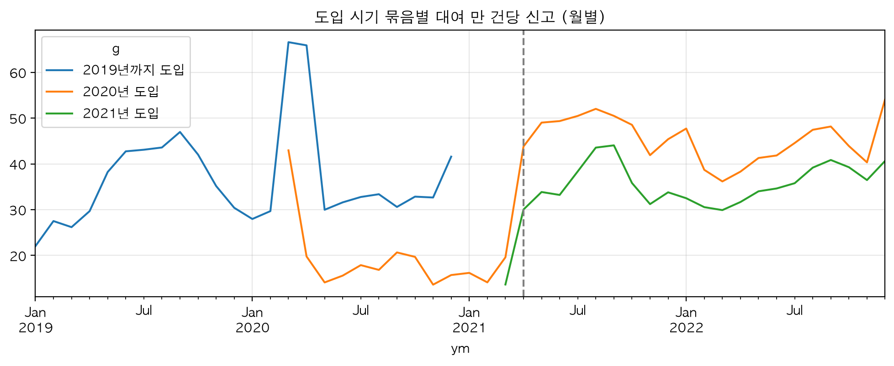
번호가 새로 붙은 것은 분석 세 군데에 영향을 준다.
- 자전거 나이를 모른다. "번호가 처음 나타난 날 = 도입일"은 2022-03 이후에 처음 나타난 번호에서만 믿는다. 2024년에 대여된 44,288대 가운데 29,335대(66.2%)가 2020-01 ~ 2022-02에 처음 나타난 번호다. data/interim/bike_month/bike_month.parquet 자전거 × 주 패널에서 실제 나이를 아는 행은 35.7%다(→ 9절). output/tables/panel_2a9_checks.csv
- 도입 시기 묶음별 분석에서 "새 자전거"는 "새 번호"로 읽어야 한다. 2020-05에 신고율이 내려간 것을 새 자전거가 덜 고장 나서라고 단정할 수 없다(→ 4절, 8절).
- 자전거 대수를 번호 수로 세면 실물 대수와 다르다. 아래의
bikes_active는 번호를 센 값이다.
고장신고와 대여이력을 잇는 데에는 영향이 없었다. 2026-01의 매칭률이 99.87%였다(표 3-2).
자전거 대수 변수는 공식 운영 대수 대신 데이터에서 센 값을 넣었다. bikes_active는 그 달에 한 번이라도 대여된 자전거번호 수이고(py/build/bike_month.py), bikes_active_prev는 전달 값이다. 6월 기준으로 2016년 1,745, 2019년 19,040, 2022년 34,593, 2025년 39,584, 2026년 38,743이다. data/processed/daily_master_v2.csv bikes_active는 그 달이 끝나야 알 수 있는 값이어서 예측에는 전달 값을 쓴다. 이 변수는 환경 변수 후보로 예측 모형에 넣어 비교했고, 넣은 모형은 채택하지 않았다(→ 6절).
3.11인코딩과 열 이름 대응
원본 CSV는 대부분 CP949(한글 윈도우 인코딩)다. 고장신고 CSV 13개 가운데 12개가 CP949였고(깨진 글자 0개) 1개는 엑셀이었다. 대여이력 월 파일 130개도 모두 CP949다. notebooks/00_사전검증.ipynb 원본은 그대로 두고 data/interim/<폴더>_utf8/에 UTF-8 사본을 만든 뒤 사본만 읽는다. 큰 CSV를 SQL로 처리하는 데 쓴 DuckDB가 UTF-8만 읽기 때문이다. docs/runbook/01_단계0_사전검증.md
공통 함수는 py/prep.py에 있다.
sniff(): 파일 앞부분으로 형식과 인코딩을 추정한다. 첫 바이트가PK면 엑셀·압축 파일,<면 다운로드가 실패해 저장된 오류 페이지로 본다.to_utf8(): UTF-8 사본을 만들고 깨진 글자 수를 돌려준다.make_utf8_folder(): 폴더 전체를 사본 폴더로 옮긴다. 이름만 csv인 엑셀은 .xlsx로 복사한다.data_files(): 폴더의 CSV·엑셀만 이름순으로 준다(맥의 .DS_Store 같은 숨김 파일 제외).read_any(): CSV와 엑셀을 같은 방식으로 읽는다. 시트가 여러 개면 합친다.std_name(): 후보 이름 가운데 맞는 열을 표준 이름으로 바꾼다.
열 이름 대응은 docs/schema_map.csv에 22행으로 적어 두었다. 고장신고 4행, 대여이력 17열, 2026년 파일(16열)에 대한 1행이다. 자전거번호는 'SPB-12345' 형식의 문자열인데 고장신고와 대여이력을 맞출 때는 숫자 부분만 정수로 뽑아 쓴다. 대여소 번호는 두 체계가 있다. 5자리 번호(01729)와 'ST-'로 시작하는 ID이고, 대여이력에는 둘 다 들어 있다. docs/schema_map.csv 날짜와 시각은 한국 시간 그대로 시간대 정보 없이 다룬다. docs/runbook/02_단계1A_데이터_재구축과_EDA.md
더 자세히: 열 이름 대응표
| 자료 | 원래 열 이름 | 표준 이름 | 비고 |
|---|---|---|---|
| 고장신고 | 자전거번호 | bike_no | 전 기간 SPB-xxxxx |
| 고장신고 | 등록일시 | reg_dt | 형식 세 가지(표 3-5) |
| 고장신고 | 구분, 고장구분 | kind | '구분'은 23.1 ~ 6과 2024 ~ 2026년 파일 |
| 대여이력 | 자전거번호 | bike_no | |
| 대여이력 | 대여일시, 반납일시 | rent_dt, rtn_dt | 초 단위 |
| 대여이력 | 대여 대여소번호, 반납대여소번호 | rent_st, rtn_st | 5자리 번호(01729) |
| 대여이력 | 대여 대여소명, 반납대여소명 | rent_st_nm, rtn_st_nm | |
| 대여이력 | 대여거치대, 반납거치대 | rent_hold, rtn_hold | |
| 대여이력 | 이용시간(분) | use_min | |
| 대여이력 | 이용거리(M) | use_m | 미터. 소수점 있음 |
| 대여이력 | 생년, 성별, 이용자종류 | birth_year, sex, user_type | 생년은 빈칸 있음 |
| 대여이력 | 대여대여소ID, 반납대여소ID | rent_st_id, rtn_st_id | ST-xxx |
| 대여이력 | 자전거구분 | bike_type | 예: LCD자전거. 2026년 파일에는 없어 빈값으로 둔다 |
3.12일별 마스터 daily_master_v2
일별 마스터는 하루를 한 줄로 정리한 분석용 표다. 2016-01-01 ~ 2026-06-30의 모든 날짜를 한 줄씩 깔고 날짜를 기준으로 노출, 기상, 고장신고를 붙였다. 3,834일 × 75열이고 날짜 중복은 0이다. output/tables/validation.csv data/processed/daily_master_v2.csv 1차 분석의 마스터를 고쳐 쓰지 않고 원본에서 스크립트로 처음부터 다시 만들었다. 만드는 코드는 notebooks/1A_Build_master.ipynb와 py/build/에 있다. 노트북의 2 ~ 4번째 셀(기상·공휴일 API 호출, UTF-8 사본 만들기)은 받아 둔 결과가 있어 다시 돌리지 않는다. 마스터 파일(parquet과 csv)은 원본과 달리 저장소에 들어 있어서, 원본을 받지 않아도 회귀와 예측 단계는 다시 돌릴 수 있다.
| 묶음 | 열 수 | 열 | 내용 |
|---|---|---|---|
| 날짜 | 1 | date | 하루 한 줄의 기준 |
| 노출 | 8 | rentals, n_use, use_hours, dist_km, dist_km_raw, dist_zero_share, dist_ok, use_src | 대여건수, 이용정보의 이용건수, 이용시간, 이동거리와 그 품질 표시, 출처 |
| 기상 관측 | 16 | tavg, tmax, tmin, rain_mm, rain_1h_max, rain_dur_h, humidity, hum_min, solar, sunshine, wind_avg, wind_max, ground_temp, grass_tmin, snow_cm, snow_depth_cm | ASOS 서울 지점의 16개 항목 |
| 유형별 행 수 | 8 | fail_tire, fail_chain, fail_saddle, fail_pedal, fail_terminal, fail_etc, fail_lock, fail_broken | 그날 유형별 신고 행 수 |
| 유형별 중복 병합 건수 | 8 | faild_*(위와 같은 여덟 유형) | 48시간 중복을 뺀 행 수 |
| 신고 합계 | 3 | reports, total_faults, total_rows | 신고 건수(앞의 둘은 같은 값), 행 수 합계 |
| 품질·운영 표시 | 4 | wx_imputed, no_service, partial_service, report_anomaly | 기상값을 채운 날, 운영 중단, 일부 운영, 신고가 덜 잡힌 기간 |
| 달력 | 9 | year, month, doy, dow, is_weekend, is_holiday, is_off, after_off, bridge | 연, 월, 1월 1일부터 며칠째, 요일, 쉬는 날 관련 표시 |
| 날씨에서 만든 변수 | 8 | rain_any, rain_lag1, rain_lag2, days_since_rain, temp_range, freeze_thaw, hot, cold | 비 온 날, 어제·그제 비, 일교차, 얼었다 녹은 날, 더운 날, 추운 날 |
| 계절 항 | 4 | fs1, fc1, fs2, fc2 | 1년·반년 주기 사인·코사인 |
| 한파 | 4 | tavg_normal, tavg_anom, cold_wave, winter_anom | 표 3-10 |
| 자전거 수 | 2 | bikes_active, bikes_active_prev | 그 달과 전달에 대여된 자전거번호 수 |
빈칸이 있는 열은 넷뿐이다. dist_km 561일, dist_zero_share 1일(2019-09-07), rain_lag1 1일과 rain_lag2 2일(시작일이라 전날 값이 없다). data/processed/daily_master_v2.csv 마스터와 함께 정리한 고장신고 원자료 fail_std.parquet(자전거, 등록일시, 유형, 중복 표시)도 저장했다. 자전거별 분석에서 다시 쓴다(→ 9절).
마스터는 2016년부터 있지만 분석 구간은 더 좁다. 학습 2021-04-08 ~ 2023, 검증 2024, 테스트 2025 ~ 2026-06이다. 신고율 수준이 2021-04 초에 계단처럼 바뀌어서 학습 시작을 2021-04-08로 잡았다(→ 4절). 2025-01-01 이후는 테스트 구간이어서 변수와 모형을 고를 때 보지 않았다.
3.13외부 사건 표와 공식 운영 대수
data/raw/external/events.csv는 따릉이 운영과 신고에 영향을 줄 만한 사건을 날짜와 출처와 함께 모은 표다. 56행이고 열은 사건 이름, 시작일, 끝일, 수치, 단위, 출처, 메모의 일곱 개다. 모든 행의 출처 칸을 채웠고 대부분 보도자료나 기사 주소다. 아래 묶음은 이 문서에서 읽기 쉽게 나눈 것이다.
| 묶음 | 행 수 | 들어 있는 사건(시작일) |
|---|---|---|
| 운영 중단과 장애 | 6 | 시스템 개편(2017-07-05), 태풍 링링(2019-09-06), 태풍 바비(2020-08-26), 폭우(2022-08-08), 앱 접속 장애(2023-09-07), DDoS 공격(2024-06-28) |
| 대여소 단위 중지 | 6 | 불꽃축제 4회, 광화문 집회(2025-03-13), 탄핵 선고 전후(2025-04-03) |
| 앱과 신고 경로 | 5 | 새 앱과 그림에서 고장 부위를 고르는 신고(2018-06-15), 24시간 콜센터(2019-11-01), 앱 1차 리뉴얼(2021-02-26), 앱 전면 리뉴얼(2021-03-15), 비회원 간편 이용(2017-07-07) |
| 단말기와 자전거 교체 | 4 | QR형 시범 500대(2020-03-01), LCD 단말기를 QR로 교체(2020-10-01 ~ 2022-02-28), QR형 신규 8,000대(2020-11-05), 탑튜브형 프레임 적용 완료(2025-11-12까지 누적 32,000대) |
| 정비와 부품 | 8 | 동네 자전거점포 정비 위탁(2019-03-01), 현장 단순정비(2021-02-01), 체인가드 누적 대수 3행(2021-04-01 시범 300대, 2025-02-28 11,000대, 2025-12-31 계획 16,000대), 부품 재활용(2023-03-01, 2024-03-01), 재배치 마일리지(2023-07-17) |
| 코로나 거리두기 | 5 | 전체 기간(2020-03-22 ~ 2022-04-17)과 단계별 3행, 해제(2022-04-18) |
| 요금과 이용 조건 | 7 | 2시간권(2016-08-01, 2017-05-01), 제로페이 할인(2019-09-26), 이용 연령 만 13세(2020-11-30), 무료 이용 행사(2024-04-20), 가족권(2025-04-23), 3시간권(2025-11-13) |
| 대중교통과 다른 이동수단 | 9 | 킥보드 규제(2021-05-13, 2021-07-15), 청계천 자전거도로(2021-05-31), 버스 요금 인상(2023-08-12), 지하철 요금 인상(2023-10-07, 2025-06-28), 기후동행카드(2024-01-27, 2024-07-01), 버스 파업(2026-01-13) |
| 민간 앱 연계 | 3 | 티머니(2020년), 토스(2024-02-06), 쏘카(2025-04-16) |
| 데이터에서 찾은 변화 | 3 | 신고율 약 2배(2021-04-05), 신고율 약 40% 저하(2023-09-07 ~ 10-10), 신고율 약 20% 감소(2025-03-01) |
마지막 묶음의 세 행은 외부 자료가 아니고 데이터에서 찾은 변화다. 출처 칸에 '데이터에서 발견'이라고 적어 외부 사건과 구분했다. 이 표는 운영 중단일을 확정하는 근거(→ 3.9), 신고율 수준 변화를 해석하는 자료(→ 4절, 8절), 개입 변수 후보의 날짜(→ 5절, 6절)로 썼다.
fleet.csv는 2015 ~ 2025년 연말의 공식 운영 대수(2,000대에서 45,000대), 신규·폐기 대수, 대여소 수(150곳에서 2,800곳)를 적은 11행짜리 표다. 폐기 대수는 2022 ~ 2025년에 2,105, 4,500, 1,400, 2,000대, 신규는 6,000, 6,100, 1,300, 2,000대로 적혀 있다. data/raw/external/fleet.csv
3.14검증 계산
만든 마스터가 기대와 맞는지 열 가지를 숫자로 확인해 표로 저장했다.
| 확인한 것 | 값 | 뜻 |
|---|---|---|
| 행 수(기대 3,834) | 3,834 | 2016-01-01 ~ 2026-06-30의 날짜 수와 같다 |
| 날짜 중복(기대 0) | 0 | 같은 날이 두 번 들어가지 않았다 |
| 대여건수 빈칸 일수(기대 0) | 0 | 2019-09-07은 0으로 채웠다 |
| 운영 중단일(no_service) | 3 | 표 3-11 |
| 이용시간 빈칸 일수 | 0 | 구멍 564일을 대여이력으로 메운 결과 |
| 이동거리 빈칸 일수 | 561 | 거리 0 비율이 10% 이상인 날은 비워 두었다 |
| 기상값을 채운 일수(wx_imputed) | 27 | 선형 보간한 날 |
| 신고가 0건인 날(2019년 이후, 운영 중단일 제외) | 0 | 빠진 6일을 채운 뒤 남은 0건인 날이 없다 |
| 2024년 행 합계(공표 162,058) | 161,846 | 공표치보다 212건(0.1%) 적다 |
| 2025년 행 합계(공표 112,970) | 112,879 | 공표치보다 91건(0.1%) 적다 |
이 표 말고도 서로 다른 자료끼리 맞춰 본 것이 있다.
- 파일과 API: 2026-06의 고장신고는 API와 파일이 11,548행 모두 같다(→ 3.2). 빠진 6일은 다음 날 행 수가 6일 모두 같다(표 3-6).
- 대여건수의 두 출처: 대여이력을 연도별로 더한 건수가 2016 ~ 2025년에 일별 대여건수의 0.9990 ~ 1.0001배다(→ 3.6).
- 대여와 반납: 2015 ~ 2017년의 대여내역과 반납내역은 연 합계가 같다(→ 3.5).
- 신고 건수와 행 수: 2021년 이후 신고 건수가 행 수보다 12.4 ~ 13.3% 적다(신고 ÷ 행 0.867 ~ 0.876, 표 3-9). 신고당 유형 1.14개에서 기대한 크기(1 ÷ 1.14 = 0.877)와 맞는다.
- 반기 경계일: 파일이 반기 단위여서 06-30과 12-31의 건수를 앞뒤 7일 중앙값과 견줬다. 채운 뒤에는 0건인 날이 없다. notebooks/1A_Build_master.ipynb
설명할 수 있어야 할 것
- 전체 신고를 행 수로 세지 않고 신고 건수로 센 이유는 무엇인가? 그런데도 행 수를 따로 남겨 둔 이유는 무엇인가?
- 고장신고가 0건이던 6일을 전후 평균으로 채우지 않고 API 값으로 채워도 된다고 판단한 근거는 무엇인가?
- 운영이 멈춘 날을 보간하지 않고 분석에서 뺐다. 보간했거나 그대로 두었다면 모형이 무엇을 잘못 배웠겠는가?
- 단계 0에서 노출을 이동거리로 정했다가 대여건수로 바꿨다. 처음 확인이 놓친 것은 무엇이고, 같은 실수를 막으려면 무엇을 다르게 해야 하나?
근거 파일: docs/phase0_result.md, docs/notes/01_데이터전처리_메모.md, docs/notes/02_EDA_메모.md, docs/schema_map.csv, docs/load_log.csv, docs/runbook/01_단계0_사전검증.md, docs/runbook/02_단계1A_데이터_재구축과_EDA.md, docs/variables_v1.md, docs/decision_log.md, docs/reference/09_조사자료-검증과-시사점.md, notebooks/00_사전검증.ipynb, notebooks/1A_Build_master.ipynb, py/prep.py, py/build/*.py, data/raw/external/events.csv, data/raw/external/fleet.csv, data/processed/daily_master_v2.csv, data/processed/fail_std.parquet, output/tables/validation.csv, output/tables/yearly_summary.csv, output/tables/reg_exposure*.csv, output/tables/eda_rel_temp*.csv
4탐색적 분석: 신고율, 레짐, 계절·날씨·요일
하루 신고 건수와 대여 건수의 상관은 0.89였지만, 신고를 대여로 나눈 신고율과 대여 건수의 상관은 0.05였다. 주 단위 신고 건수 변동의 70 ~ 85%는 대여량만으로 설명됐고, 지난주 건수를 그대로 쓰는 단순 예측(기준값)의 오차 22.3%는 지난주 신고율에 그 주의 실제 대여량을 곱하면 7.9%로 줄었다. 신고율 쪽에서 크게 움직인 것은 계단처럼 바뀌는 수준(2021-04에 약 2배, 2025년 상반기는 전년 상반기의 0.83배), 타이어의 계절성(월 지수 66 ~ 158, 2.4배), 한파(평균기온 −4℃ 이하인 날 1.33배)였다. 요일 효과(월 1.10, 토 0.87)는 기간을 둘로 나눠도 같았고, 더위(1.01)와 전날 비(1.01 ~ 1.04)는 계절을 걷어 내면 거의 남지 않았다. 이 결과를 보고 사람이 2026-10-05에 구간(학습 2021-04-08 ~ 2023, 검증 2024, 테스트 2025 ~ 2026-06)과 변수 목록을 정했고, 테스트 구간을 수준이 다른 구간(레짐)으로 판정해 모든 예측 모형에 최근 4주 신고율을 넣기로 했다. output/tables/eda_corr.csv output/tables/regime_monthly.csv output/tables/eda_weekly_decomp.csv output/tables/eda_weekly_naive_vs_rate.csv output/tables/regime_part_h1.csv output/tables/eda_month_index.csv output/tables/eda_rel_temp.csv output/tables/eda_rel_dow.csv output/tables/eda_rel_rain_lag1.csv docs/decision_log.md
4.1신고율의 정의와 건수 대신 비율로 보는 이유
신고율은 이용자 고장신고를 이용량으로 나눈 값이다. 이 절에서 따로 밝히지 않은 신고율은 모두 대여 1만 건당 신고 건수다. 계산은 그룹의 신고 합계 ÷ 그 그룹의 대여 합계 × 10,000이다. 일별 비율의 평균을 쓰지 않은 것은 대여가 적은 날의 튀는 값이 평균을 흔들기 때문이다. 대시보드 홈의 '대여 1,000건당 고장 신고'와는 단위가 10배 다르다(→ 13절). notebooks/1A_eda.ipynb
고장신고는 이용자가 넣은 신고이고 확인된 고장이 아니다. 신고율이 움직였다면 고장이 변했을 수도 있고, 같은 고장이 신고로 잡히는 정도가 변했을 수도 있다. 이 구분이 4.3 ~ 4.7과 8절의 주제다.
분자는 두 가지로 센다. 전체 신고율의 분자는 신고 건수(같은 자전거와 같은 등록일시를 한 건으로 센 값. 일별 마스터의 열 total_faults)다. 타이어나 체인 같은 유형별 신고율의 분자는 그 유형이 찍힌 행 수(fail_tire 등)다. 원자료는 한 행이 신고 한 건 × 고장유형 하나여서, 한 번 신고하면서 유형을 둘 고르면 두 행이 된다. 2021 ~ 2026년에 신고 1건당 유형 수는 1.14 ~ 1.15개였다(행 수 ÷ 신고 건수). 그래서 유형별 신고율을 모두 더하면 전체 신고율보다 크다. output/tables/yearly_summary.csv
분모는 노출(신고율의 분모가 되는 이용량)이다. 이 절에서는 대여 건수(rentals)를 쓰고, 이용시간으로 나눈 값을 옆에 같이 놓았다. 노출을 대여 건수로 확정한 것은 회귀 단계의 결정이다(→ 5절).
건수를 그대로 보면 이용량이 보인다. 분석 구간에서 그날 신고 건수와 그날 대여 건수의 상관은 0.887이었다. 신고를 대여로 나눈 신고율과 대여 건수의 상관은 0.050이었다. 1차 분석(수업 팀 프로젝트)이 신고 건수를 대여량으로 설명해 얻은 높은 설명력은 이용량 자체였다는 뜻이다(→ 2절). 신고율로 바꾸면 이용량이 늘어난 몫이 빠지고, 신고가 더 많이 나오는 조건만 남는다. output/tables/eda_corr.csv
| 무엇과 무엇의 상관인가 | 상관계수 | 읽는 법 |
|---|---|---|
| 그날 신고 건수와 그날 대여 건수 | 0.887 | 많이 타는 날 신고도 많다 |
| 두 값의 전날 대비 변화끼리 | 0.919 | 추세와 계절을 걷어 내도 같이 움직인다 |
| 신고율(대여 건수 기준)과 대여 건수 | 0.050 | 대여로 나누면 이용량과의 관계가 사라진다 |
| 신고율(이용시간 기준)과 이용시간 | −0.244 | 이용시간으로 나누면 음의 관계가 생긴다 |
해마다 따로 계산해도 신고 건수와 대여 건수의 상관은 0.882 ~ 0.965였다(2021년 0.938, 2022년 0.941, 2023년 0.882, 2024년 0.965). notebooks/1A_eda.ipynb 표의 마지막 줄은 분모를 이용시간으로 바꾼 경우다. 이용시간으로 나누면 이용시간이 긴 날의 신고율이 낮게 나와 음의 상관(−0.244)이 생긴다. 한 번 빌려 오래 타는 주말에는 시간이 늘어도 신고가 그만큼 늘지 않기 때문으로 보인다(표 4-12에서 건당 이용시간은 주말 25 ~ 27분, 평일 약 21분이다).
분석 구간은 2021-04-08 ~ 2024-12-31이고, 운영이 멈춘 2022-08-09 하루를 뺀 1,363일이다(요일별 일수의 합). output/tables/eda_dow.csv 이 구간 전체의 신고율은 대여 1만 건당 36.55건이었고, 부품별로는 타이어 7.82, 체인 8.54, 안장 7.37, 페달 4.29였다. notebooks/1A_eda.ipynb 2021-04-07 이전은 신고가 잡히는 정도가 달랐던 기간이라 뺐다(4.7). 2025-01-01 이후는 테스트 구간(고른 모형을 마지막에 한 번 채점하는 자료, → 2절)이라 요일과 날씨 패턴을 보는 데 쓰지 않았다. 테스트 구간을 보고 변수를 고르면 성능이 실제보다 좋게 나온다. 레짐 점검(4.3 ~ 4.5)만 예외로 2026-06까지의 수준을 봤다.
값을 보는 방법은 두 가지다.
- 그룹별 신고율: 그룹(요일, 기온 구간 등)의 신고 합계 ÷ 대여 합계. 직관적이지만 날씨 효과에 계절과 추세가 섞인다.
- 그 무렵 수준 대비: 그날 신고율 ÷ 그날 앞뒤 2주(29일) 신고율의 중앙값. 1.10이면 그 무렵 평소보다 10% 높은 날이다. 그룹의 값은 그 그룹에 속한 날들의 중앙값으로 잡았다.
둘째 값을 만든 이유는 날씨와 계절이 붙어 다니기 때문이다. 추운 날은 모두 겨울이고, 더운 날은 타이어 신고가 많은 여름이다. 그룹별 신고율만 보면 계절 차이가 날씨 효과로 읽힌다. 계절과 레짐은 29일 안에서 거의 같으므로 나눗셈으로 사라지고, 요일이나 날씨처럼 날마다 달라지는 것만 남는다. 요일과 날씨 효과는 이 값으로 판단했다. docs/notes/02_EDA_메모.md
같은 계산을 기간을 둘로 나눠 되풀이했다(2021-04 ~ 2022-12, 2023 ~ 2024). 두 기간의 값이 비슷하면 수준이 달라도 상대 효과는 유지된다는 뜻이다. 이 확인은 테스트 구간처럼 수준이 다른 기간에서도 모형이 쓸모 있는지를 가리는 근거가 된다. 모형이 '최근 수준 × 학습한 상대 효과'로 예측하기 때문이다.
4.2주 단위 신고 건수는 대부분 이용량이 정한다
주간 신고 건수의 변동 가운데 대여량만으로 설명되는 비율은 전체 80%, 페달 85%, 타이어와 체인 74%, 안장 70%였다. output/tables/eda_weekly_decomp.csv
계산은 이렇게 했다. 신고 건수 = 대여량 × 신고율이므로 로그를 취하면 log(건수) = log(대여량) + log(신고율)로 덧셈이 된다. 월요일부터 일요일까지를 한 주로 묶어, 2021-04-12 ~ 2024-12-29의 194주(1,358일 ÷ 7)에서 log(주간 건수)와 log(주간 대여량)의 상관계수를 제곱했다(R²). 주 단위로 본 이유는 둘이다. 요일 효과는 일주일을 더하면 서로 지워진다. 그리고 이 프로젝트의 예측 과제가 앞으로 7일의 합계다. notebooks/1A_eda.ipynb
| 부품 | 대여량만으로 설명되는 비율(R²) | 주간 신고율 하위 5% | 주간 신고율 상위 5% | 기준값(지난주 건수) 오차율(%) | 지난주 신고율 × 실제 대여량 오차율(%) |
|---|---|---|---|---|---|
| 전체 | 0.80 | 27.29 | 49.24 | 22.3 | 7.9 |
| 타이어 | 0.74 | 4.50 | 12.10 | 21.4 | 8.1 |
| 체인 | 0.74 | 5.75 | 12.72 | 25.0 | 11.9 |
| 안장 | 0.70 | 4.41 | 10.13 | 26.1 | 8.7 |
| 페달 | 0.85 | 2.70 | 5.92 | 27.7 | 12.6 |
단순한 예측 두 가지로 같은 것을 다시 확인했다. 첫째는 기준값(지난주 값이 다음 주에도 그대로라고 보는 단순 예측. 분석 문서와 표에서는 '나이브'라고 불렀다)이다. 둘째는 지난주 신고율에 그 주의 실제 대여량을 곱한 값이다. 2022-07 ~ 2024-12의 131주에서 평균 오차율(실제 대비 절대 오차의 평균, MAPE)은 전체 신고가 22.3%에서 7.9%로 줄었다. 부품별로도 21.4 ~ 27.7%에서 8.1 ~ 12.6%로 줄었다. output/tables/eda_weekly_naive_vs_rate.csv
둘째 값은 대여량을 미리 정확히 안다고 가정한 상한선이다. 실제로는 대여량도 예측해야 하므로 대여량 예측 오차만큼 나빠진다. 두 값의 차이가 크다는 것은 기준값을 이기는 힘의 대부분이 이용량을 아는 데서 나온다는 뜻이다.
그렇다고 신고율이 늘 같은 것은 아니다. 주간 신고율의 하위 5%와 상위 5%는 전체 신고가 27.29와 49.24로 1.80배 차이가 났고(49.24 ÷ 27.29), 타이어는 4.50과 12.10으로 2.69배였다(12.10 ÷ 4.50). 이 폭을 만드는 것이 뒤에 나오는 수준 변화, 계절, 한파다. output/tables/eda_weekly_decomp.csv
| 주(끝나는 날) | 실제 ÷ 예측 − 1 | 주 평균기온(℃) | 신고 건수 |
|---|---|---|---|
| 2023-01-22 | +1.15 | −2.7 | 2,710 |
| 2023-12-24 | +1.04 | −7.3 | 2,470 |
| 2023-12-31 | −0.56 | 1.1 | 1,296 |
| 2022-12-04 | +0.55 | 0.6 | 2,561 |
| 2023-10-15 | +0.36 | 16.8 | 4,694 |
| 2022-12-18 | +0.29 | −4.8 | 1,511 |
| 2023-01-29 | −0.29 | −6.8 | 1,158 |
| 2023-12-17 | +0.28 | 2.8 | 1,378 |
대여량을 알아도 크게 틀린 주가 표 4-3이다. 2023-01-22에 끝난 주는 실제가 예측의 2.15배(1 + 1.15), 2023-12-24에 끝난 주는 2.04배였다. 두 주의 평균기온은 −2.7℃와 −7.3℃였다. output/tables/eda_weekly_big_errors.csv 주 평균기온이 0℃ 이하인 12주는 실제가 예측보다 평균 16% 많았고, 그 밖의 주는 평균 오차가 0%였다. notebooks/1A_eda.ipynb
표에서 값이 음수인 두 주(2023-12-31, 2023-01-29)는 급등한 주의 바로 다음 주다. 지난주 신고율을 그대로 쓰는 방법이라 급등 다음 주에는 예측이 실제보다 커진다. 2023-10-15에 끝난 주(+0.36, 16.8℃)는 추위와 무관하다. 신고가 덜 잡힌 기간(2023-09-07 ~ 10-10, 4.3)이 끝난 직후여서 지난주 신고율이 낮았던 경우다.
정리하면 평소의 주에는 신고율 모형이 더해 줄 것이 작다. 신고율 쪽에서 크게 움직이는 것은 수준 변화, 타이어의 계절성, 한파다. 요일 효과는 주 단위에서 지워지므로 일 단위 인력 배치에 쓰인다. docs/notes/02_EDA_메모.md
이 결과가 예측의 비교 기준을 정했다. docs/notes/03_모델설계_메모.md
- 모든 예측 결과표의 첫 줄에 기준값(지난주 건수)을 둔다. 지난주 건수에는 최근 수준이 이미 들어 있어 수준이 바뀌어도 따라간다. 이것을 못 이기면 모형을 쓸 이유가 없다.
- 예측을 대여량 예측 × 신고율 예측으로 나눈다. 대여량을 맞혀서 얻는 이득과 신고율을 맞혀서 얻는 이득을 따로 볼 수 있다.
- 신고율을 '최근 수준 그대로'로 둔 단순한 구조(최근 신고율 × 대여량 예측)를 둘째 기준으로 둔다. 요일, 계절, 날씨를 넣은 모형은 이 구조보다 나아야 값이 있다. 예측 모형 비교 단계(1C)에서는 이것을 '구조 나이브'라고 불렀고 테스트 구간에서 가장 안정적이었다(→ 6절). 운영 주간 예측도 이 구조다(→ 7절).
4.3레짐: 신고율 수준이 계단처럼 바뀐 시점
신고율의 수준은 날씨나 계절로 설명되지 않는 크기로 여러 번 바뀌었다. 레짐은 신고율의 평균 수준이 유지되는 기간을 말한다. 레짐이 바뀌면 수준이 계단처럼 달라진다. 모형은 학습 구간의 수준을 배운다. 테스트 구간의 수준이 다르면 요일과 날씨 효과를 잘 맞혀도 예측이 통째로 높거나 낮게 나온다. 그래서 요일과 날씨를 보기 전에 레짐부터 점검했다(notebooks/1A_regime.ipynb).
수준 변화는 네 가지 방법으로 봤다.
- 월별 신고율. 분모를 이용시간으로 바꾼 값도 같이 그렸다. 두 선의 모양이 같으면 노출을 무엇으로 쓰든 수준 변화가 있다는 뜻이다(그림 4-1).
- 최근 12개월 신고율. 언제나 사계절이 한 번씩 들어 있어 계절이 지워진다. 12개월 평균이라 실제 변화보다 늦고 완만하게 움직인다(그림 4-2).
- 전년 같은 달 대비 비율. 어느 달부터 비율이 계단처럼 바뀌면 그 무렵이 경계다(표 4-6).
- 구조변화 탐지 알고리즘(
ruptures의 Binseg, 구간은 6개월 이상). 2020-01 이후 월별 신고율을 평균이 다른 구간으로 나누는 경계를 찾는다.
| 시점·기간 | 월별 신고율 | 바뀐 크기 | 같은 시기에 알려진 사건 | 이 프로젝트의 처리 |
|---|---|---|---|---|
| 2016-01 ~ 2018-06 | 2.0 ~ 21.6 | 서비스 초기. 연간 5.6(2016) → 10.7(2017) → 26.0(2018)으로 해마다 올랐다 | 2017-07-07 비회원·외국인 간편 이용 시작 | 학습에 쓰지 않는다 |
| 2018-06-20 급등 | 2018-05 16.1 → 2018-07 34.5 | 약 2배. 월 단위로 2.14배(2018-07 ÷ 2018-05), 계절을 뺀 전후 12주 평균으로는 2.51배. 일 단위로는 06-19까지 14 안팎, 06-20부터 35 안팎 docs/notes/02_EDA_메모.md | 2018-06-15 새 앱 출시(본인인증 폐지, 그림에서 고장 부위를 골라 신고). 급등은 5일 뒤 | 학습 구간 밖. 앱이 바뀌면 신고가 잡히는 정도가 바뀐다는 근거로 쓴다 |
| 2018-07 ~ 2020-04 | 22.0 ~ 47.0(2018-07 ~ 2020-02). 2020-03은 65.2, 2020-04는 52.0 | 2021-04 이후와 비슷한 수준. 2019년 연간 38.8 | 2019-11-01 콜센터 24시간 운영(전후 신고율 변화 없음), 2020-03-01 QR형 단말기 시범 500대(자전거의 대여 단말기를 LCD형에서 QR 코드형으로 바꾸기 시작) | 학습에 쓰지 않는다. 단말기와 자전거번호가 지금과 달라 이어 쓰기 어렵다 |
| 2020-05 ~ 2021-03 | 14.3 ~ 21.9 | 전년 같은 달의 0.41 ~ 0.60배(2020-05 ~ 2021-02)로 내려가 11개월 유지 | QR 단말기 전환기(2020-03-01 시범, 기사 기준 2020-10부터 전면 교체, 2022-02 완료), 코로나19 거리두기(2020-03-22 ~ 2022-04-17), 새 번호 자전거의 대여 비중이 커진 시기(4.5) | 학습에서 뺀다. 신고가 잡히는 정도가 달랐던 기간으로 판단 |
| 2021-04-05 ~ 08 급등 | 2021-03 19.1 → 2021-04 41.0 → 2021-05 45.6 | 약 2배. 월 단위로 2.15배(2021-04 ÷ 2021-03), 전년 같은 달 대비 2.14 ~ 2.63배(2021-05 ~ 2022-02). 월 신고 건수 4,171건 → 12,473건. 일 단위로는 며칠 사이에 25 → 45 docs/notes/02_EDA_메모.md | 2021-02-26 앱 1차 리뉴얼, 2021-03-15 앱 전면 리뉴얼(고장 신고를 '고객센터' 메뉴로 통합, iOS판은 3월 말 예정). 급등은 전면 리뉴얼 3주 뒤 | 학습 시작일(2021-04-08)의 기준 |
| 2021-04 ~ 2024-12 | 26.2 ~ 49.6 | 3년에 걸쳐 완만히 하락. 연간 41.1(2021) → 38.6 → 33.7 → 32.2(2024) | 2022-02 QR 단말기 전수 교체 완료, 2022-04-18 거리두기 해제 | 학습(2021-04-08 ~ 2023-12-31)과 검증(2024). 구간 안의 하락은 최근 4주 신고율(4.7)로 따라간다 |
| 2023-09-07 ~ 10-10 | 2023-08 37.5 → 2023-09 26.5 → 2023-10 34.9 | 34일 동안 약 −40%(일 단위로 40 안팎 → 22 안팎) docs/notes/02_EDA_메모.md. 2023-09의 전년 같은 달 대비 0.61배 | 2023-09-07 오전 앱 접속 장애(07:50 이후, DB 최적화 작업 뒤). 신고가 줄어든 이유를 밝힌 공지는 찾지 못했다 | report_anomaly로 표시하고 학습에서 뺀다 |
| 2025-03 ~ 2026-06 | 22.9 ~ 31.9(2026-01만 31.9, 나머지 15개월은 22.9 ~ 27.2) | 상반기끼리 2025 ÷ 2024 = 0.83배, 2026 ÷ 2025 = 0.97배. 전년 같은 달 대비 0.73 ~ 0.84배(2025-04 ~ 11). 메모는 이것을 약 −20%로 불렀다 docs/notes/02_EDA_메모.md | 2025-02-28 기준 체인가드(체인 덮개) 누적 약 11,000대, 2025-04-16 쏘카 앱 대여 시작, 2025-04-23 가족권. 이 시점에는 원인을 확인하지 못했다 | 테스트 구간. 다른 레짐으로 판정(4.7) |
표의 '약 2배'는 재는 방법에 따라 값이 다르다. 2021-04의 급등은 월 단위로 2.15배, 전년 같은 달 대비로 2.14 ~ 2.63배지만, 계절을 빼고 전후 12주 평균을 견준 값은 1.65배다. 3월에서 4 ~ 6월로 가며 오르는 계절 몫이 빠지기 때문으로 보인다. 보고서에서는 어느 값인지 밝혀 적는다(→ 8절). output/tables/rc_1_changepoints.csv output/tables/regime_monthly.csv output/tables/regime_yoy.csv
알고리즘이 고른 경계도 눈으로 본 것과 같았다. 월별 신고율에서는 변화를 1개로 두면 2021-04, 2개면 2021-04와 2023-05, 3개면 2021-04, 2023-05, 2025-01이 나왔다. 전년 같은 달과의 차이에 같은 방법을 쓰면 2021-04, 2022-02, 2023-05 순으로 나왔다. notebooks/1A_regime.ipynb 2021-04는 어느 쪽에서도 첫째다. 변화 지점을 몇 개로 볼지는 알고리즘이 정해 주지 않아서 그림과 함께 사람이 골랐다. 2022-02는 2021-04 급등의 1년 뒤에 전년 차이가 다시 0 근처로 돌아오는 자리로 보인다(전년 같은 달 대비가 2022-02 2.48배에서 2022-04 0.83배로 바뀐다). 단계별 메모(docs/notes/02_EDA_메모.md)에는 이 점에 대한 설명이 없다. output/tables/regime_yoy.csv
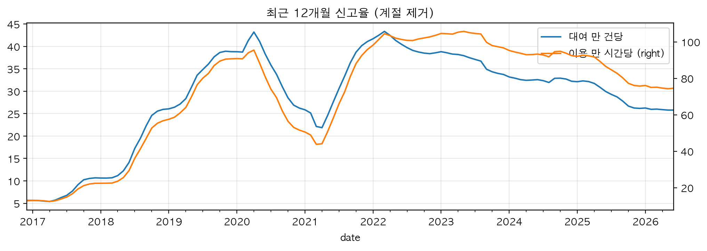
| 연도 | 대여 1만 건당 신고 | 이용 1만 시간당 신고 | 건당 이용시간(분) | 신고 1건당 유형 수 | 대여 건수의 전년 대비(배) |
|---|---|---|---|---|---|
| 2016 | 5.6 | 12.8 | 26.4 | 1.20 | |
| 2017 | 10.7 | 22.4 | 28.6 | 1.21 | 3.12 |
| 2018 | 26.0 | 56.7 | 27.5 | 1.11 | 2.01 |
| 2019 | 38.8 | 90.7 | 25.7 | 1.10 | 1.88 |
| 2020 | 26.3 | 51.6 | 30.5 | 1.11 | 1.24 |
| 2021 | 41.1 | 95.8 | 25.7 | 1.15 | 1.35 |
| 2022 | 38.6 | 103.6 | 22.4 | 1.14 | 1.28 |
| 2023 | 33.7 | 96.7 | 20.9 | 1.14 | 1.10 |
| 2024 | 32.2 | 92.4 | 20.9 | 1.15 | 0.98 |
| 2025 | 26.2 | 75.8 | 20.7 | 1.15 | 0.85 |
| 2026 상반기 | 25.4 | 72.0 | 21.2 | 1.15 |
연간 값은 레짐이 섞인 평균이다. 2020년의 26.3에는 1 ~ 4월의 높은 수준과 5 ~ 12월의 낮은 수준이 섞여 있고, 2021년의 41.1에는 1 ~ 3월의 낮은 수준이, 2025년의 26.2에는 하락 전인 1 ~ 2월이 들어 있다. 수준의 크기를 말할 때는 표 4-4의 월별 범위나 상반기끼리의 비교(4.4)가 더 정확하다.
분모를 이용시간으로 바꿔도 계단의 자리는 같다. 2025년의 하락은 대여 건수 기준 0.81배, 이용시간 기준 0.82배로 거의 같다(연간 2025 ÷ 2024). 달라지는 것은 2021 ~ 2024년의 완만한 하락이다. 대여 건수 기준으로는 41.1에서 32.2로 0.78배가 됐는데, 이용시간 기준으로는 95.8에서 92.4로 0.96배에 그친다. 건당 이용시간이 2021년 25.7분에서 2024년 20.9분으로 줄었기 때문이다(2020년은 30.5분). output/tables/yearly_summary.csv 같은 대여 1만 건이라도 해마다 탄 시간이 다르다는 뜻이다. 회귀에서는 대여 건수가 더 맞는 노출로 나왔으므로(→ 5절) 이 프로젝트는 대여 건수 기준의 하락을 수준 변화로 다룬다. 이 하락이 대여 한 건이 짧아진 결과인지, 신고가 덜 잡히게 된 결과인지는 이 표로 가를 수 없다. 메모에는 이용시간 기준으로 2021 ~ 2024년 하락이 거의 없다는 점이 적혀 있지 않다.
신고 누락 기간(report_anomaly, 2023-09-07 ~ 10-10의 34일)은 레짐보다 짧은 구멍이다. 2023-09-07 오전의 앱 접속 장애 직후부터 신고율이 낮았고 10-11부터 원래 수준으로 돌아왔다. 대여는 정상이었다. data/raw/external/events.csv 월별 신고율은 2023-08 37.5, 2023-09 26.5, 2023-10 34.9로 움직였고 유형별로도 같이 내렸다. 체인은 7.9 → 6.0 → 8.2, 기타는 10.4 → 6.9 → 10.0이다(그 유형의 행 수 ÷ 대여 건수 × 10,000). output/tables/regime_monthly.csv 2024-09의 전년 같은 달 대비가 1.35배로 튀는 것도 1년 전 값이 눌려 있었기 때문이다. output/tables/regime_yoy.csv 처음에는 표시만 하고 탐색적 분석(EDA, 4.8 ~ 4.12)에 포함해서 본 뒤, 체크포인트 B에서 학습에서 빼기로 했다(4.12, 4.14).
그림 4-1의 2020년 초 봉우리는 2020-03(65.2)과 2020-04(52.0)다. 이 두 달은 단말기 신고가 가장 크게 늘었다(대여 1만 건당 2020-02 8.7 → 2020-03 28.1 → 2020-04 21.1). output/tables/regime_monthly.csv 원인은 메모에 정리돼 있지 않아 확인하지 못했다. 학습 구간 밖이라 모형에는 영향이 없다.
더 자세히: 전년 같은 달 대비 신고율(표 4-6)
| 월 | 2020년 | 2021년 | 2022년 | 2023년 | 2024년 | 2025년 | 2026년 |
|---|---|---|---|---|---|---|---|
| 1월 | 1.27 | 0.60 | 2.49 | 1.15 | 0.67 | 0.93 | 1.07 |
| 2월 | 1.08 | 0.48 | 2.48 | 0.91 | 0.81 | 1.12 | 0.78 |
| 3월 | 2.49 | 0.29 | 1.74 | 0.96 | 0.85 | 0.90 | 1.02 |
| 4월 | 1.75 | 0.79 | 0.83 | 0.97 | 0.95 | 0.84 | 0.96 |
| 5월 | 0.55 | 2.17 | 0.79 | 0.94 | 1.02 | 0.75 | 0.96 |
| 6월 | 0.47 | 2.21 | 0.82 | 0.89 | 1.02 | 0.74 | 1.00 |
| 7월 | 0.50 | 2.20 | 0.83 | 0.89 | 0.93 | 0.78 | |
| 8월 | 0.44 | 2.61 | 0.85 | 0.89 | 0.88 | 0.83 | |
| 9월 | 0.47 | 2.23 | 0.90 | 0.61 | 1.35 | 0.76 | |
| 10월 | 0.49 | 2.14 | 0.92 | 0.86 | 1.02 | 0.73 | |
| 11월 | 0.41 | 2.63 | 0.97 | 0.88 | 0.93 | 0.84 | |
| 12월 | 0.54 | 2.49 | 1.11 | 0.84 | 0.74 | 0.95 |
읽는 법. 2020-05부터 2021-02까지 0.41 ~ 0.60배가 이어지고, 2021-05부터 2022-02까지 2.14 ~ 2.63배가 이어진다. 뒤쪽의 2배는 1년 전이 절반 수준이었기 때문에 생긴 값이다. 2025-04부터 11월까지는 0.73 ~ 0.84배다. 2025-12와 2026-01은 0.95배와 1.07배로 1에 가깝다. 2020-03과 2020-04의 2.49배, 1.75배는 위에서 말한 2020년 초 봉우리다.
4.4유형별로 본 수준 변화와 신고 방식의 흔적
2025년의 하락은 체인과 안장에 몰려 있었다. 상반기끼리 비교하면 2025년은 2024년의 0.83배였고, 유형별로는 체인 0.68배, 안장 0.72배, 페달 0.86배, 타이어 0.95배, 단말기 0.97배, 기타 0.99배였다. 2026년 상반기는 2025년 상반기의 0.97배로 낮은 수준이 이어졌고, 페달만 0.79배로 더 내렸다. output/tables/regime_part_h1.csv
상반기끼리 비교한 이유는 2026년 자료가 상반기뿐이기 때문이다. 연간 값끼리 비교하면 계절 구성이 달라 비율이 왜곡된다.
| 연도 | 타이어 | 체인 | 안장 | 페달 | 단말기 | 기타 | 전체 |
|---|---|---|---|---|---|---|---|
| 2021 | 5.87 | 9.43 | 7.98 | 3.68 | 2.17 | 11.80 | 35.53 |
| 2022 | 6.40 | 7.48 | 7.75 | 3.36 | 2.16 | 13.58 | 35.75 |
| 2023 | 6.54 | 7.40 | 7.35 | 3.42 | 1.89 | 12.06 | 33.92 |
| 2024 | 5.28 | 8.60 | 6.31 | 3.79 | 1.50 | 10.23 | 31.52 |
| 2025 | 5.04 | 5.81 | 4.53 | 3.27 | 1.47 | 10.11 | 26.20 |
| 2026 | 4.95 | 5.68 | 4.30 | 2.58 | 1.47 | 10.28 | 25.40 |
| 2025 ÷ 2024 | 0.95 | 0.68 | 0.72 | 0.86 | 0.97 | 0.99 | 0.83 |
| 2026 ÷ 2025 | 0.98 | 0.98 | 0.95 | 0.79 | 1.00 | 1.02 | 0.97 |
유형별로 나눠 본 것은 변화의 모양이 원인을 가르는 단서가 되기 때문이다. 런북(단계별 실행 절차를 적은 문서)에 적어 둔 해석 기준은 이렇다. 모든 부품이 비슷한 비율로 변하면 신고 경로나 집계 방식, 이용자 구성이 바뀐 쪽이다. 체인에 몰리면 체인가드, 타이어나 안장에 몰리면 부품 교체나 정비 강화 쪽이다. docs/runbook/02_단계1A_데이터_재구축과_EDA.md
이 기준으로 보면 변화마다 모양이 달랐다. 2021년의 급등은 네 부품과 기타가 함께 움직였다(연간 2021 ÷ 2020: 타이어 2.40배, 체인 1.80배, 안장 2.59배, 페달 1.98배, 기타 1.92배). 단말기만 0.31배로 반대였다. LCD 단말기를 QR 단말기로 바꾼 시기와 겹친다(단말기 신고율 2019년 11.09 → 2021년 2.24). output/tables/regime_part_by_year.csv 2025년의 하락은 체인과 안장에 몰렸다. 체크포인트 A 시점의 메모는 모든 부품이 같이 내린 것이 아니므로 신고 방식 변화보다는 특정 부품에 대한 조치(체인가드, 안장 교체 등)일 가능성이 있다고 적었다. docs/notes/02_EDA_메모.md 이 해석은 뒤의 원인 분석에서 바뀌었다(→ 8절).
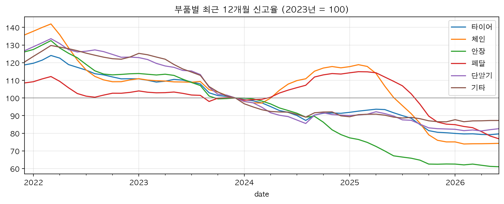
신고 화면이나 집계 방식이 바뀌었다면 달라졌을 지표 두 가지도 봤다(그림 4-4). 신고 1건당 유형 수는 2021년 이후 연평균 1.14 ~ 1.15로 일정했다(2019년 1.09, 2020년 1.11). 2025년에도 1.15로 그대로였다. '기타' 유형의 비중은 2019년 16.9%에서 2021년 이후 27.8 ~ 35.7%로 높아졌다(월별 값의 연평균). 2024년 27.8%에서 2025년 32.1%로 다시 오른 것은 체인과 안장이 줄고 기타는 그대로였던 것(표 4-7)과 맞는다. notebooks/1A_regime.ipynb 2021-02 ~ 12는 신고에 시각이 없어 같은 날 같은 자전거의 신고가 한 건으로 묶인다. 그 기간의 유형 수는 실제보다 높게 나온다.
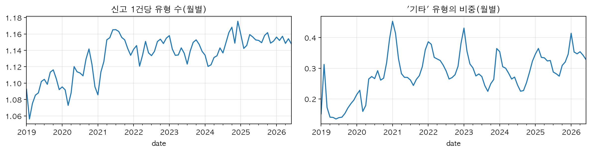
더 자세히: 연도별·유형별 신고율(표 4-8)
| 연도 | 타이어 | 체인 | 안장 | 페달 | 단말기 | 기타 | 전체 |
|---|---|---|---|---|---|---|---|
| 2019 | 8.32 | 9.12 | 4.67 | 2.96 | 11.09 | 6.60 | 38.84 |
| 2020 | 3.64 | 5.54 | 3.44 | 2.17 | 7.30 | 6.92 | 26.25 |
| 2021 | 8.73 | 9.97 | 8.90 | 4.30 | 2.24 | 13.27 | 41.09 |
| 2022 | 8.16 | 8.09 | 8.03 | 4.09 | 2.17 | 13.58 | 38.59 |
| 2023 | 7.35 | 7.34 | 7.06 | 3.96 | 1.76 | 11.02 | 33.74 |
| 2024 | 6.72 | 8.60 | 5.59 | 4.50 | 1.59 | 9.91 | 32.23 |
| 2025 | 5.91 | 5.52 | 4.42 | 3.38 | 1.45 | 9.53 | 26.18 |
| 2026 상반기 | 4.95 | 5.68 | 4.30 | 2.58 | 1.47 | 10.28 | 25.40 |
연간 2020 ÷ 2019는 타이어 0.44배, 체인 0.61배, 안장 0.74배, 페달 0.73배, 단말기 0.66배, 기타 1.05배다. 2020년 값에는 하락 전인 1 ~ 4월이 섞여 있다. 연간 2025 ÷ 2024는 전체 0.81배, 체인 0.64배, 안장 0.79배, 페달 0.75배, 타이어 0.88배다. 상반기끼리의 비율(표 4-7)과 값이 다른 것은 하반기가 들어가기 때문이다.
4.5자전거가 바뀌어서인가: 도입 연도 묶음별 신고율
수준 변화가 자전거 교체 때문인지 확인했다. 사람이 세운 가설은 이랬다. 새 자전거가 대량으로 들어와 덜 고장 나서 2020 ~ 2021년 신고율이 내려갔고, 2016 ~ 2018년이 낮은 것도 새 자전거라서다. docs/notes/02_EDA_메모.md
전체 평균 대신 같은 해에 들어온 자전거 묶음별로 신고율을 따로 봤다. 도입 시기는 대여이력에 그 번호가 처음 나타난 해로 잡았다(py/build/bike_month.py). 새 자전거 때문이라면 기존 묶음의 신고율은 그대로이고, 신고율이 낮은 새 묶음의 비중이 커져 평균만 내려간다. 이것을 구성 효과라고 부른다. 신고 방식 때문이라면 같은 묶음의 신고율이 어느 날 갑자기 바뀐다.
| 달력 연도 | 2020년 도입 | 2021년 도입 | 2022년 도입 | 2023년 도입 | 2024년 도입 | 2025년 도입 |
|---|---|---|---|---|---|---|
| 2020 | 17.4 | |||||
| 2021 | 43.0 | 35.6 | ||||
| 2022 | 43.2 | 35.7 | 31.9 | |||
| 2023 | 37.1 | 35.0 | 32.4 | 24.6 | ||
| 2024 | 35.2 | 34.5 | 30.5 | 26.6 | 14.0 | |
| 2025 | 29.5 | 28.6 | 26.2 | 21.4 | 20.2 | 18.7 |
| 2026 상반기 | 27.2 | 25.6 | 24.2 | 19.5 | 21.2 | 25.7 |
- 2020년 한 해에 새 번호 19,462개가 나타났다. 그 전 5년(2015 ~ 2019)의 합계가 24,853개다. 2019년까지 도입된 묶음이 대여에서 차지한 비중은 2020-02 100%, 2020-05 43%, 2020-12 2%로 줄었다. notebooks/1A_regime.ipynb
- 2020-05의 하락은 대부분 구성 효과였다. 기존 묶음은 2020-05 ~ 11에도 30 ~ 33이었고 2020년 도입 묶음은 14 ~ 21이었다. 신고율이 낮은 묶음이 대여의 대부분을 차지하면서 평균이 내려갔다. notebooks/1A_regime.ipynb
- 2021-04의 급등은 구성 효과가 아니었다. 같은 2020년 도입 묶음이 2021-03 20에서 2021-04 44, 2021-05 49가 됐다. notebooks/1A_regime.ipynb 연간으로도 2020년 17.4에서 2021년 43.0으로 2.47배다. output/tables/regime_cohort_by_year.csv
- 2016 ~ 2018년이 낮았던 것도 새 자전거라서가 아니었다. 갓 들어온 묶음의 첫해 신고율이 2017년 도입분 10.8, 2018년 도입분 23.0, 2019년 도입분 41.1로 해마다 올랐다. 신고 기능이 자리 잡는 과정으로 본다. output/tables/regime_cohort_by_year.csv
- 2025년의 하락도 구성 효과가 아니었다. 모든 묶음이 같이 내렸다. 2024년에서 2025년으로 가며 2020년 도입분은 35.2 → 29.5, 2021년 도입분은 34.5 → 28.6, 2022년 도입분은 30.5 → 26.2, 2023년 도입분은 26.6 → 21.4로 내렸다(네 묶음 모두 0.81 ~ 0.86배). output/tables/regime_cohort_by_year.csv
- 새 묶음일수록 신고율이 낮은 것은 사실이다. 2024년 기준으로 2020년 도입분 35.2, 2021년 34.5, 2022년 30.5, 2023년 26.6, 2024년 도입분 14.0 순이었다. output/tables/regime_cohort_by_year.csv
정리하면 2021-04의 급등, 2016 ~ 2018년의 상승, 2025년의 하락은 같은 번호 묶음 안에서 수준이 바뀐 것이라 자전거 나이로는 설명되지 않는다. 이 결론이 체크포인트 A의 근거가 됐다. 무엇이 바뀌었는지는 헛대여(빌린 대여소에 몇 분 안에 그대로 반납한 대여. 화면에서는 '대여 직후 반납')와 신고를 견줘 따로 분석했다(→ 8절).
자전거 구성이 신고율에 영향을 주므로 그 달에 실제로 대여된 자전거 수(bikes_active)를 변수 후보로 만들었다. 공식 운영 대수는 2021년까지 실제 대여된 수와 차이가 커서 쓰지 않았다(→ 3절).
더 자세히: 2019년까지 도입된 묶음(표 4-10)
| 달력 연도 | 2015년 도입 | 2016년 도입 | 2017년 도입 | 2018년 도입 | 2019년 도입 | 2020년 도입 |
|---|---|---|---|---|---|---|
| 2016 | 5.4 | 5.8 | ||||
| 2017 | 12.8 | 9.9 | 10.8 | |||
| 2018 | 49.4 | 29.7 | 26.3 | 23.0 | ||
| 2019 | 86.7 | 42.2 | 36.0 | 37.2 | 41.1 | |
| 2020 | 53.5 | 38.1 | 37.1 | 54.3 | 17.4 |
가로로 읽으면 같은 해에 묶음끼리의 차이가 보인다. 2019년에는 2016 ~ 2019년 도입 묶음이 36.0 ~ 42.2로 비슷했다. 세로로 읽으면 같은 묶음의 신고율이 해마다 올랐다. 2016년 도입 묶음은 5.8 → 9.9 → 29.7 → 42.2였다.
4.6외부 요인을 나누는 틀
수준 변화의 원인을 찾으려고 서울시와 서울시설공단의 보도자료, 공지, 기사를 조사했다(2026-10-05). 날짜와 출처는 data/raw/external/events.csv에 56행으로 정리했다. 조사한 사건을 곧바로 변수로 넣지 않고 종류부터 나눴다. 신고율 = 신고 건수 ÷ 노출이므로, 외부 요인이 분자와 분모의 어디를 건드리느냐에 따라 위험과 대응이 달라진다. docs/reference/10_외부요인-정리.md
| 종류 | 무엇을 바꾸나 | 분석에 주는 위험 | 대응 | 예 |
|---|---|---|---|---|
| 가. 이용량 | 분모(노출)만 | 낮다. 노출로 나누면 대부분 걸러진다 | 노출로 처리한다. 따로 변수를 넣지 않아도 된다 | 서비스 확대(연간 대여 2016년 1,611,635건 → 2023년 44,905,293건), 코로나19 거리두기(대여는 2020년 +24%, 2021년 +35%로 늘었다), 기후동행카드(2024-01-27), 2025년 대여 −15% |
| 나. 이용 방식 | 대여 한 건의 길이, 이용자 구성 | 중간. '대여 1건'의 뜻이 달라져 대여 건수 기준 신고율이 흔들린다 | 노출을 이용시간으로 바꿔 비교한다(→ 5절) | 건당 이용시간 변화(표 4-5), 이용 연령 13세로 확대(2020-11-30), 가족권(2025-04-23), 3시간권(2025-11-13) |
| 다. 실제 고장 | 분자(진짜 고장) | 설명하고 싶은 대상이다 | 날짜와 수치가 있으면 개입 변수(그 조치가 시작된 뒤를 표시하는 변수)로 넣는다 | LCD → QR 단말기(단말기 신고율 2019년 11.09 → 2021년 2.24), 체인가드(2025-02-28 기준 누적 약 11,000대), 폐자전거 부품 재활용(2023-03 시범, 2024-03 확대) |
| 라. 신고가 잡히는 정도 | 분자(같은 고장이 신고로 기록되는 비율) | 가장 높다. 고장은 그대로인데 신고율만 계단처럼 바뀐다. 노출로도 날씨로도 설명되지 않는다 | 학습 구간을 자르거나 최근 수준을 따라가는 변수(수준 적응 변수, 4.7)를 넣는다 | 새 앱(2018-06-15), 앱 전면 리뉴얼(2021-03-15), QR형 도입기(2020-03 ~ 2021-03), 접속 장애 뒤 신고 누락(2023-09-07 ~ 10-10), 민간 앱 대여(토스 2024-02-06, 쏘카 2025-04-16) |
큰 갈래는 이용량, 실제 고장, 신고가 잡히는 정도의 셋이다. 정리 문서는 이용량 쪽을 양(가)과 방식(나)으로 한 번 더 나눠 네 줄로 적었다(문서의 소제목은 '세 종류'다).
이 틀에서 두 가지 판단이 나왔다. 첫째, 이용량을 바꾸는 요인은 노출로 나누면 걸러지므로 개입 변수로 만들 필요가 작다. 코로나19 기간에 대여가 오히려 늘었다는 사실도 노출에 이미 들어 있다. 둘째, 표 4-4의 계단은 대부분 '라'에 해당한다. 앱이 바뀐 직후에 신고율이 뛴 일이 2018-06과 2021-04 두 번 있었다. 이런 변화는 원인을 모르면 변수로 설명할 수 없다. 그래서 대응은 학습 구간을 자르는 것과 수준 적응 변수를 넣는 것이었고, 이것이 그대로 체크포인트 A의 두 결정이 됐다.
조사에 인용한 링크 29개는 모두 열어 인용이 맞는지 확인했다. 태풍 링링의 중단·재개 시각이나 연간 대여 건수처럼 원자료와 맞춰 볼 수 있는 값은 일치했다. docs/reference/09_조사자료-검증과-시사점.md 다만 원문 확인이 요약 도구를 거쳤으므로 보고서에 인용할 숫자는 링크를 직접 열어 다시 확인한다. 사건 표의 report_jump_2021, report_dip_2023, report_drop_2025 세 행은 외부 자료가 아니고 이 프로젝트의 자료에서 찾은 변화다. 외부 근거처럼 인용하면 안 된다.
조사에서 얻은 사실 가운데 계절 해석에 쓸 것이 하나 있다. 서울시 발표로 1 ~ 4월 이용 비중이 2019년 17.5%에서 2023년 26.2%로 늘었다. 겨울 이용이 늘면 계절 효과의 크기가 시기마다 다를 수 있다. docs/reference/08_외부환경-종합-타임라인.md
4.7체크포인트 A: 구간 확정과 수준 적응 변수
체크포인트는 런북에서 사람이 판정하도록 정해 둔 결정 지점이다. 체크포인트 A는 레짐 점검 결과로 구간을 정하는 자리였다. 처음 계획은 학습 2020 ~ 2023, 검증 2024, 테스트 2025 ~ 2026 상반기였다(구간 표는 → 2절).
학습 시작이 4월 8일인 이유는 자료에 있다. 급등은 2021-04-05 ~ 08의 며칠 사이에 일어났고 4월 8일부터 새 수준이 자리 잡았다. QR형 도입(2020-03) 같은 외부 날짜를 쓰지 않고 자료에서 수준이 바뀐 날을 기준으로 잡았다. docs/notes/03_모델설계_메모.md
수준 적응 변수를 넣은 이유는 기준값과의 비교에 있다. 기준값(지난주 건수)은 수준이 바뀌어도 저절로 따라간다. 모형에 최근 수준을 알려 주는 변수가 없으면 수준이 바뀐 구간에서 기준값에 지기 쉽다. 원인을 알았다면 그 날짜의 개입 변수로 설명할 수 있었겠지만 2025-03의 원인은 이 시점에 확인되지 않았다. docs/notes/03_모델설계_메모.md
레짐이 달라도 분석이 의미 있다고 본 이유도 이때 적어 두었다. 바뀐 것은 신고율의 수준이다. 요일이나 날씨에 따른 상대적 차이가 수준이 달랐던 기간들에서도 비슷하게 유지되는지를 EDA에서 확인하기로 했다. 유지되면 모형은 '최근 수준 × 학습한 상대 효과'로 예측할 수 있다. 확인 결과는 4.8 ~ 4.11에 있다. docs/notes/02_EDA_메모.md
두 비교의 결과는 뒤 단계에서 나왔다. 학습 시작은 2021-04-08로 확정됐다. 2023년까지 학습해 2024년을 맞힌 일별 오차율이 2021-04-08 시작은 10.1%, 2022-03-01 시작은 11.8%였고, 시각 없는 신고 더미를 넣으면 10.6%로 나빠졌다(→ 5절). output/tables/reg_start_valid.csv 테스트 구간이 다른 레짐이라는 판정은 테스트에서 그대로 확인됐다. 다만 최근 4주 신고율을 넣은 모형도 하락을 다 따라가지 못했다(→ 6절).
4.8요일과 쉬는 날
요일 효과는 가장 뚜렷하고 안정적이었다. 그 무렵 수준 대비로 월요일 1.10, 화요일 1.06, 수요일 1.05, 목요일 1.02, 금요일 1.00, 토요일 0.87, 일요일 0.90이었다. 기간을 둘로 나눠도 요일마다 차이가 0.04 이내였다. output/tables/eda_rel_dow.csv
| 요일 | 일수 | 대여 1만 건당 신고 | 이용 1만 시간당 신고 | 건당 이용시간(분) | 수준 대비: 전체 기간 | 수준 대비: 2021-04 ~ 2022 | 수준 대비: 2023 ~ 2024 |
|---|---|---|---|---|---|---|---|
| 월 | 195 | 40.0 | 114.4 | 21.0 | 1.10 | 1.10 | 1.10 |
| 화 | 194 | 38.5 | 112.8 | 20.5 | 1.06 | 1.05 | 1.07 |
| 수 | 194 | 38.4 | 110.3 | 20.9 | 1.05 | 1.05 | 1.05 |
| 목 | 195 | 37.6 | 109.2 | 20.6 | 1.02 | 1.01 | 1.02 |
| 금 | 195 | 36.1 | 102.7 | 21.1 | 1.00 | 1.00 | 0.99 |
| 토 | 195 | 31.4 | 74.4 | 25.3 | 0.87 | 0.87 | 0.88 |
| 일 | 195 | 32.3 | 73.0 | 26.6 | 0.90 | 0.87 | 0.91 |
주말에 신고율이 낮은 것이 짧게 타서인지 확인하려고 분모를 이용시간으로 바꿨다. 구간 전체를 100으로 둔 지수로 보면 주말은 대여 건수 기준 86(토)과 88(일)에서 이용시간 기준 75와 73으로 더 낮아졌다(지수는 표 4-12에 싣지 않았다). 건당 이용시간은 평일 20.5 ~ 21.1분, 토요일 25.3분, 일요일 26.6분이다. 주말에는 더 오래 타는데도 신고가 적다. 이용자나 이용 목적이 평일과 다르거나 주말에는 신고를 덜 하는 것으로 보인다. 어느 쪽인지는 이 자료로 가를 수 없다. output/tables/eda_dow.csv
주말에 낮아지는 정도는 부품마다 다르다. 토·일의 그 무렵 수준 대비는 안장 0.80, 페달 0.86, 체인 0.91, 타이어 0.92였다. 월요일은 네 부품 모두 1.07 ~ 1.12로 높았다. output/tables/eda_rel_parts.csv
| 구분 | 일수 | 대여 1만 건당 신고 | 지수 | 수준 대비: 전체 기간 | 수준 대비: 2021-04 ~ 2022 | 수준 대비: 2023 ~ 2024 |
|---|---|---|---|---|---|---|
| 그 밖의 평일 | 711 | 37.7 | 100 | 1.03 | 1.03 | 1.03 |
| 쉬는 날 다음 첫 근무일 | 212 | 40.4 | 107 | 1.11 | 1.11 | 1.11 |
| 주말 | 390 | 31.8 | 84 | 0.88 | 0.87 | 0.90 |
| 평일 공휴일 | 50 | 32.3 | 85 | 0.87 | 0.86 | 0.89 |
평일 공휴일은 0.87로 주말(0.88)과 같았다. 요일은 평일이어도 쉬는 날이면 주말처럼 움직인다. 쉬는 날 다음 첫 근무일(after_off)은 1.11로 높았다. 쉬는 동안 생긴 고장이 다음 근무일에 몰려 신고되는 것으로 본다. 두 기간의 값도 같았다(쉬는 날 다음 첫 근무일 1.11과 1.11, 평일 공휴일 0.86과 0.89). output/tables/eda_rel_dayoff.csv
쉬는 날 다음 첫 근무일은 대부분 월요일이다. 공휴일이 아닌 월요일은 정의상 모두 여기에 든다. 그래서 월요일 1.10과 쉬는 날 다음 날 1.11은 대부분 같은 날을 두 번 본 값이다. 두 효과를 떼어 보는 일은 회귀에서 했다(→ 5절).
요일 효과는 일주일을 더하면 서로 지워지므로 주간 합계 예측에는 거의 영향이 없다. 쓰임은 일 단위 인력 배치 쪽이다.
더 자세히: 부품별 요일 지수(표 4-14)
| 요일 | 타이어 | 체인 | 안장 | 페달 | 전체 |
|---|---|---|---|---|---|
| 월 | 111 | 109 | 110 | 111 | 109 |
| 화 | 103 | 104 | 109 | 107 | 105 |
| 수 | 103 | 105 | 109 | 108 | 105 |
| 목 | 101 | 103 | 107 | 104 | 103 |
| 금 | 97 | 98 | 100 | 97 | 99 |
| 토 | 89 | 87 | 78 | 83 | 86 |
| 일 | 94 | 92 | 80 | 86 | 88 |
그룹별 값이라 표 4-12의 '그 무렵 수준 대비'와 정의가 다르다. 토요일 지수는 안장 78, 페달 83, 체인 87, 타이어 89다.
4.9계절: 월 지수와 부품별 차이
계절을 타는 정도는 부품마다 달랐다. 월별 신고율을 그 부품의 열두 달 평균 = 100으로 맞추면 타이어는 2월 66에서 8월 158로 2.4배다(158 ÷ 66 = 2.39). 페달은 70에서 132로 1.89배, 체인은 75에서 113으로 1.51배였다. 안장은 93 ~ 107로 거의 평평했다(1.15배). output/tables/eda_month_index.csv
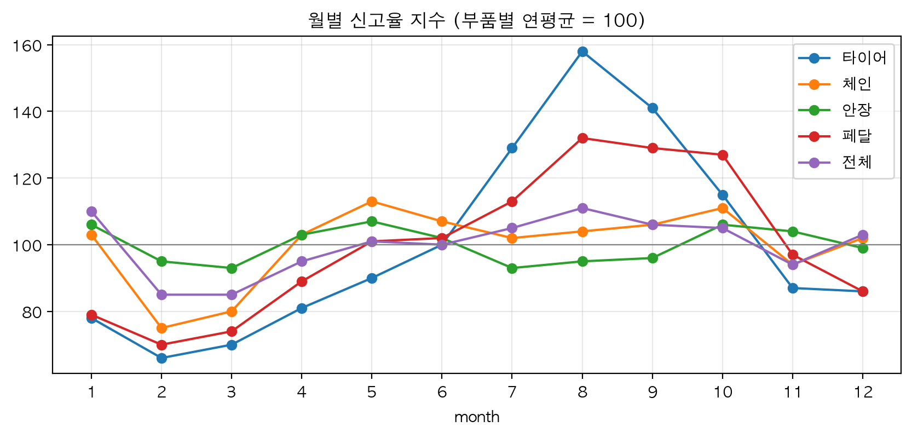
| 월 | 타이어 | 체인 | 안장 | 페달 | 전체 | 전체(누락 기간 제외) |
|---|---|---|---|---|---|---|
| 1월 | 78 | 103 | 106 | 79 | 110 | 109 |
| 2월 | 66 | 75 | 95 | 70 | 85 | 84 |
| 3월 | 70 | 80 | 93 | 74 | 85 | 84 |
| 4월 | 81 | 103 | 103 | 89 | 95 | 94 |
| 5월 | 90 | 113 | 107 | 101 | 101 | 100 |
| 6월 | 100 | 107 | 102 | 102 | 100 | 99 |
| 7월 | 129 | 102 | 93 | 113 | 105 | 104 |
| 8월 | 158 | 104 | 95 | 132 | 111 | 109 |
| 9월 | 141 | 106 | 96 | 129 | 106 | 116 |
| 10월 | 115 | 111 | 106 | 127 | 105 | 107 |
| 11월 | 87 | 94 | 104 | 97 | 94 | 93 |
| 12월 | 86 | 102 | 99 | 86 | 103 | 102 |
전체 지수는 1월에 110으로 높은데 네 부품의 1월 지수는 78 ~ 106이다. 네 부품 밖의 유형이 겨울에 많이 신고된다는 뜻으로 보인다. 그림 4-4에서 '기타' 비중이 해마다 겨울에 높아지는 것과 맞는다. 한파 효과(4.10)도 1월에 들어 있다.
모형에는 두 가지로 반영했다. 계절은 월 더미 대신 1년 주기와 반년 주기의 사인·코사인 네 개(fs1, fc1, fs2, fc2)로 넣는다. 12월과 1월이 이어지고, 학습 자료가 2년 9개월뿐이라 변수 수를 줄이는 편이 낫기 때문이다. docs/notes/03_모델설계_메모.md 그리고 진폭이 부품마다 다르므로 부품별로 모형을 따로 맞춘다(→ 5절).
4.10기온: 한파는 뚜렷하고 더위는 계절이었다
기온 효과는 겨울의 추위에만 있었다. 평균기온 −4℃ 이하인 60일의 신고율은 그 무렵 평소의 1.33배였다(2021-04 ~ 2022년 1.33배, 2023 ~ 2024년 1.49배). 28℃를 넘는 날은 1.01배였다. output/tables/eda_rel_temp.csv
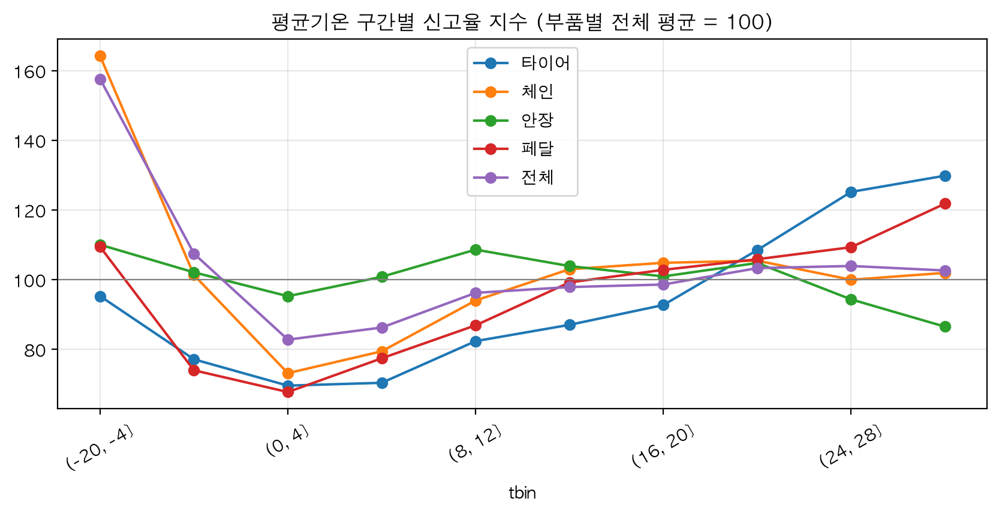
그림 4-7처럼 그룹별로만 보면 더운 날에도 신고율이 높아 보인다. 평균기온 28℃ 초과인 날의 타이어 신고율은 10.2로 구간 전체(7.82)의 1.30배다(10.2 ÷ 7.82). output/tables/eda_temp.csv notebooks/1A_eda.ipynb 거의 같은 조건(평균기온 28℃ 이상)을 그 무렵 수준과 견주면 타이어 1.02, 페달 1.05, 전체 1.01이다. output/tables/eda_rel_parts.csv 더운 날은 타이어 신고가 많은 여름에 몰려 있을 뿐이고, 여름 안에서 더 더운 날이라고 신고율이 더 높지는 않았다. 1차 분석이 본 U자형의 더운 쪽은 계절이었다.
| 평균기온 | 일수 | 수준 대비: 전체 기간 | 수준 대비: 2021-04 ~ 2022 | 수준 대비: 2023 ~ 2024 |
|---|---|---|---|---|
| −4℃ 이하 | 60 | 1.33 | 1.33 | 1.49 |
| −4 초과 ~ 0℃ | 88 | 1.02 | 1.00 | 1.03 |
| 0 초과 ~ 4℃ | 135 | 0.93 | 0.90 | 0.95 |
| 4 초과 ~ 12℃ | 227 | 1.00 | 1.00 | 0.99 |
| 12 초과 ~ 20℃ | 328 | 1.00 | 1.00 | 1.00 |
| 20 초과 ~ 24℃ | 204 | 1.00 | 1.00 | 0.99 |
| 24 초과 ~ 28℃ | 207 | 1.00 | 1.01 | 1.00 |
| 28℃ 초과 | 114 | 1.01 | 1.00 | 1.03 |
기온이 그 무렵 평균보다 얼마나 높거나 낮았는지로 나누면 더 분명하다. 겨울(12 ~ 2월)에는 그 무렵보다 6℃ 이상 추운 날 1.52, 3 ~ 6℃ 추운 날 1.26이고, 3 ~ 6℃ 따뜻한 날 0.90, 6℃ 넘게 따뜻한 날 0.86으로 한 방향이다. 겨울이 아닌 달에는 0.97 ~ 1.02로 차이가 없다. output/tables/eda_rel_temp_anom.csv 그래서 평균기온을 그대로 넣기보다 겨울의 추위를 잡는 형태가 맞다고 봤고, 한파 변수를 두 형태로 만들었다(4.14).
| 기온 편차 | 일수 | 겨울(12 ~ 2월) | 그 밖의 달 |
|---|---|---|---|
| −6℃ 이하 | 37 | 1.52 | 1.02 |
| −6 초과 ~ −3℃ | 146 | 1.26 | 0.97 |
| −3 초과 ~ −1℃ | 260 | 1.02 | 1.00 |
| −1 초과 ~ +1℃ | 429 | 1.00 | 1.01 |
| +1 초과 ~ +3℃ | 321 | 0.93 | 1.00 |
| +3 초과 ~ +6℃ | 138 | 0.90 | 0.99 |
| +6℃ 초과 | 32 | 0.86 | 0.97 |
한파 효과는 부품마다 다르다. 평균기온 −4℃ 이하인 날 체인은 1.50, 페달은 1.38, 타이어는 1.22였고 안장은 0.98로 변화가 없었다. output/tables/eda_rel_parts.csv
| 조건 | 일수 | 타이어 | 체인 | 안장 | 페달 | 전체 |
|---|---|---|---|---|---|---|
| 월요일 | 195 | 1.11 | 1.07 | 1.12 | 1.11 | 1.10 |
| 토·일 | 390 | 0.92 | 0.91 | 0.80 | 0.86 | 0.88 |
| 전날 비 5mm 이상(당일은 비 없음) | 65 | 1.02 | 1.03 | 1.01 | 1.05 | 1.02 |
| 당일 비 10mm 이상 | 133 | 0.94 | 0.85 | 0.83 | 0.80 | 0.87 |
| 평균기온 −4℃ 이하 | 60 | 1.22 | 1.50 | 0.98 | 1.38 | 1.33 |
| 평균기온 28℃ 이상 | 118 | 1.02 | 1.01 | 1.01 | 1.05 | 1.01 |
| 얼었다 녹은 날 | 234 | 0.99 | 0.96 | 1.01 | 0.97 | 0.99 |
| 눈 온 날(새로 쌓인 눈 1cm 이상) | 25 | 1.00 | 0.90 | 0.86 | 0.84 | 0.92 |
사람이 "더위 효과가 안 보이는 것은 더운 날 이용량이 줄어서가 아닌가"라고 물어 이것도 확인했다. 비가 오지 않은 날만 골라 최고기온 구간별로 대여량과 신고율이 그 무렵 평소의 몇 배인지 봤다. 최고기온 33℃ 초과인 62일은 대여량 1.03배, 신고율 1.03배였다. 더운 날 이용량은 줄지 않았고 신고율도 같았다. 한파는 달랐다. 최고기온 0℃ 이하인 44일은 대여량 0.77배, 신고율 1.38배였다. output/tables/eda_heat_usage.csv
| 최고기온 | 일수 | 대여량 | 신고율 |
|---|---|---|---|
| 0℃ 이하 | 44 | 0.77 | 1.38 |
| 0 초과 ~ 5℃ | 85 | 1.00 | 1.03 |
| 5 초과 ~ 25℃ | 470 | 1.05 | 1.01 |
| 25 초과 ~ 30℃ | 185 | 1.06 | 1.01 |
| 30 초과 ~ 33℃ | 103 | 1.05 | 1.01 |
| 33℃ 초과 | 62 | 1.03 | 1.03 |
눈 온 날(새로 쌓인 눈 1cm 이상)은 0.92였지만 구간 안에 25일뿐이었다. 얼었다 녹은 날(최저기온 0℃ 미만이고 최고기온 0℃ 초과, 234일)은 0.99로 효과가 보이지 않았고 부품별로도 0.96 ~ 1.01이었다. output/tables/eda_rel_parts.csv
한파는 주 단위로도 크게 보인다. 메모에는 2023-01-22에 끝난 주의 신고율이 73(그 무렵 평소 38), 2023-12-24에 끝난 주가 74(평소 32)로 적혀 있다. docs/notes/02_EDA_메모.md 표 4-3에서 대여량을 알아도 가장 크게 틀린 두 주가 이 두 주다.
더 자세히: 평균기온 구간별 신고율, 그룹별 값(표 4-20)
| 평균기온 | 일수 | 타이어 | 체인 | 안장 | 페달 | 전체 |
|---|---|---|---|---|---|---|
| −4℃ 이하 | 60 | 7.5 | 14.0 | 8.1 | 4.7 | 57.6 |
| −4 초과 ~ 0℃ | 88 | 6.0 | 8.7 | 7.5 | 3.2 | 39.3 |
| 0 초과 ~ 4℃ | 135 | 5.4 | 6.2 | 7.0 | 2.9 | 30.3 |
| 4 초과 ~ 8℃ | 113 | 5.5 | 6.8 | 7.4 | 3.3 | 31.5 |
| 8 초과 ~ 12℃ | 114 | 6.4 | 8.0 | 8.0 | 3.7 | 35.2 |
| 12 초과 ~ 16℃ | 161 | 6.8 | 8.8 | 7.7 | 4.3 | 35.8 |
| 16 초과 ~ 20℃ | 167 | 7.3 | 9.0 | 7.4 | 4.4 | 36.0 |
| 20 초과 ~ 24℃ | 204 | 8.5 | 9.0 | 7.7 | 4.5 | 37.8 |
| 24 초과 ~ 28℃ | 207 | 9.8 | 8.5 | 7.0 | 4.7 | 38.0 |
| 28℃ 초과 | 114 | 10.2 | 8.7 | 6.4 | 5.2 | 37.5 |
−4℃ 이하인 날의 전체 신고율 57.6은 구간 전체(36.55)의 1.58배다(57.6 ÷ 36.55). 그 무렵 수준 대비 1.33배보다 크다. 그룹별 값에는 겨울이라는 계절 몫이 같이 들어 있기 때문이다. output/tables/eda_temp.csv output/tables/eda_rel_temp.csv notebooks/1A_eda.ipynb
4.11비: 당일 비와 전날 비
비가 많이 온 날은 대여도 줄지만 신고율도 낮았다. 당일 강수량이 10mm 초과 30mm 이하인 날은 그 무렵 평소의 0.90배, 30mm 초과인 날은 0.84배였다. output/tables/eda_rel_rain_today.csv 신고율은 이미 대여로 나눈 값이다. 비 오는 날에는 대여가 줄어든 것보다 신고가 더 많이 줄었다는 뜻이다.
| 당일 강수량 | 일수 | 하루 평균 대여(건) | 대여 1만 건당 신고 | 수준 대비: 전체 기간 | 수준 대비: 2021-04 ~ 2022 | 수준 대비: 2023 ~ 2024 |
|---|---|---|---|---|---|---|
| 없음 | 949 | 125,961 | 36.8 | 1.02 | 1.01 | 1.02 |
| 0 초과 ~ 1mm | 107 | 105,754 | 36.4 | 0.98 | 0.95 | 0.98 |
| 1 초과 ~ 10mm | 174 | 98,900 | 35.8 | 0.97 | 0.99 | 0.95 |
| 10 초과 ~ 30mm | 71 | 75,975 | 35.6 | 0.90 | 0.92 | 0.86 |
| 30mm 초과 | 62 | 54,832 | 32.0 | 0.84 | 0.87 | 0.83 |
하루 평균 대여는 비가 없는 날 125,961건에서 30mm 초과인 날 54,832건으로 0.44배가 된다(54,832 ÷ 125,961). output/tables/eda_rain_today.csv 부품별로는 10mm 이상 온 날 페달 0.80, 안장 0.83, 체인 0.85, 타이어 0.94였다. output/tables/eda_rel_parts.csv 메모는 비가 오면 신고할 여유가 없는 것으로 보인다고 해석했다. 근거 자료가 따로 있는 해석은 아니다. docs/notes/02_EDA_메모.md
전날 비는 비를 맞은 자전거가 다음 날 더 많이 신고되는지를 보려는 것이다. 당일 비의 영향이 섞이지 않게 당일에 비가 오지 않은 949일만 골라 전날 강수량으로 나눴다. 그 무렵 수준 대비는 전날 0 초과 5mm 이하 1.04, 5 초과 20mm 이하 1.03, 20mm 초과 1.01이었다. 전날에도 비가 없던 날이 1.01이므로 차이는 0 ~ 0.03이다. 그룹별 지수로는 102 ~ 105였다. output/tables/eda_rel_rain_lag1.csv output/tables/eda_rain_lag1.csv 1차 분석이 본 +10 ~ 16%보다 훨씬 작다. docs/notes/02_EDA_메모.md
| 전날 강수량 | 일수 | 대여 1만 건당 신고 | 지수 | 수준 대비: 전체 기간 | 수준 대비: 2021-04 ~ 2022 | 수준 대비: 2023 ~ 2024 |
|---|---|---|---|---|---|---|
| 없음 | 729 | 36.5 | 100 | 1.01 | 1.00 | 1.02 |
| 0 초과 ~ 5mm | 155 | 38.3 | 105 | 1.04 | 1.06 | 1.03 |
| 5 초과 ~ 20mm | 42 | 37.3 | 102 | 1.03 | 1.07 | 1.02 |
| 20mm 초과 | 23 | 37.2 | 102 | 1.01 | 1.01 | 1.01 |
전날 비는 변수 후보로 남기고 기대를 낮췄다. 회귀에서는 전체 모형에서 1.00배(p = 0.79)로 효과가 없었고 부품별로 방향이 갈렸다(→ 5절). output/tables/reg_m4_irr.csv
4.12반기별 수준과 신고 누락 기간의 영향
분석 구간 안에서도 수준은 계속 내려갔다. 상반기끼리 44.8(2021) → 35.7(2022) → 33.9(2023) → 31.5(2024)다. output/tables/eda_half_year.csv 학습 구간 안에서도 수준을 따라갈 장치가 필요하다는 뜻이고, 체크포인트 A에서 넣기로 한 최근 4주 신고율이 그 역할을 한다. 요일과 날씨를 통제한 회귀에서도 2024년 수준은 2021년의 0.73배였다(→ 5절). output/tables/reg_m4_irr.csv
| 반기 | 일수 | 타이어 | 체인 | 안장 | 페달 | 전체 |
|---|---|---|---|---|---|---|
| 2021년 상반기 | 84 | 7.8 | 12.6 | 10.2 | 4.8 | 44.8 |
| 2021년 하반기 | 184 | 10.9 | 10.4 | 9.6 | 4.8 | 45.2 |
| 2022년 상반기 | 181 | 6.4 | 7.5 | 7.7 | 3.4 | 35.7 |
| 2022년 하반기 | 183 | 9.6 | 8.6 | 8.3 | 4.7 | 40.9 |
| 2023년 상반기 | 181 | 6.5 | 7.4 | 7.4 | 3.4 | 33.9 |
| 2023년 하반기 | 184 | 8.1 | 7.3 | 6.8 | 4.5 | 33.6 |
| 2024년 상반기 | 182 | 5.3 | 8.6 | 6.3 | 3.8 | 31.5 |
| 2024년 하반기 | 184 | 8.1 | 8.6 | 4.9 | 5.2 | 32.9 |
표를 읽을 때 알아 둘 것이 있다. 2021년 상반기는 04-08 ~ 06-30의 84일뿐이다. 타이어는 하반기 값이 늘 상반기보다 높다. 여름과 가을이 하반기에 들어 있기 때문이다(4.9). 부품별로는 안장이 10.2에서 4.9로 가장 많이 내려갔다.
신고 누락 기간(34일)을 넣을 때와 뺄 때를 견줬다. 넣으면 9월의 월 지수가 116에서 106으로 10포인트 눌리고 10월도 107에서 105로 내려간다. output/tables/eda_anomaly_month.csv 2023년 연간 신고율은 34.9에서 33.7로 내려간다. 요일별 '그 무렵 수준 대비'는 넣으나 빼나 소수 둘째 자리까지 같았다. 앞뒤 2주로 나누는 값이기 때문이다. 누락 기간 안에서도 요일 패턴은 남아 있었다(월요일 26.1, 토요일 21.7). notebooks/1A_eda.ipynb
정리하면 이 기간은 수준과 계절을 추정할 때만 문제가 되고 요일과 날씨 효과의 추정에는 영향이 없다. 34일이라 빼도 잃는 자료가 적다. 이 근거로 학습에서 빼기로 했다(4.14).
더 자세히: 1차 분석의 값과 나란히 보기(표 4-24)
| 항목 | 1차 자료 기준(런북) | 이번 결과 | 달라진 점 |
|---|---|---|---|
| 신고율과 대여 건수의 상관 | 0.20 | 0.050 | 대여로 나눈 뒤 남는 관계가 더 작다 |
| 요일별 신고율 | 월 45.3, 토 35.1, 일 36.0 | 월 40.0, 토 31.4, 일 32.3 | 모양이 같다(월요일이 가장 높고 주말이 낮다) |
| 타이어 월 지수 | 2월 60, 8월 161 | 2월 66, 8월 158 | 모양이 같다 |
| 기온 구간별 신고율 | 0℃ 이하 49.9, 28℃ 이상 43.1, 전체 41.3(U자형) | −4℃ 이하 57.6, 28℃ 초과 37.5, 구간 전체 36.55 | 그 무렵 수준과 견주면 한파만 남는다(1.33과 1.01) |
| 전날 비(당일은 비 없음) | 41.2 → 45.5, +10% 안팎 | 36.5 → 37.2 ~ 38.3, 지수 102 ~ 105 | 효과가 훨씬 작다 |
| 반기별 신고율 | 2021 하반기 52.2 → 2024 상반기 35.7 | 2021 하반기 45.2 → 2024 상반기 31.5 | 구간 안에서 내려가는 모양이 같다 |
메모가 정리한 차이는 셋이다. 기온의 U자형은 한파 효과만 남고 더위 효과는 계절이었다. 전날 비는 +10 ~ 16%에서 +2 ~ 5%로 작아졌다. 요일 패턴과 부품별 계절 진폭(타이어가 크고 안장이 작다)은 그대로 재현됐다. docs/notes/02_EDA_메모.md
4.13변수 사이의 상관과 겹침
노출 후보 세 가지는 강하게 같이 움직이지만 완전히 같지는 않았다. 일별 값의 상관은 전체 기간에서 대여 건수와 이용시간 0.949, 이용시간과 이동거리 0.960, 대여 건수와 이동거리 0.905였다(이동거리는 기록을 믿을 수 있는 날만). 2021-01-05 이후로는 0.933, 0.996, 0.934다. notebooks/1A_Build_master.ipynb 이용시간과 이동거리는 사실상 같은 정보이고 대여 건수는 둘과 조금 다르다. 어느 것을 노출로 쓸지는 회귀에서 모형 적합도와 검증 오차로 비교했다(→ 5절).
설명변수끼리는 뜻이 겹치는 것이 많다. EDA는 변수를 하나씩 따로 봤다. 겹치는 변수를 같이 넣었을 때 어느 쪽이 효과를 가져가는지는 EDA로 알 수 없다.
- 평균기온과 계절. 추운 날은 모두 겨울이다. 평균기온을 계절 변수, 한파 변수와 같이 넣으면 계수를 해석하기 어렵다.
- 더위와 계절. 더운 날의 높은 타이어 신고율은 여름의 계절 효과였다(4.10).
- 눈과 한파. 변수 목록은 눈 온 날이 한파와 겹친다고 적었다.
- 징검다리 근무일과 쉬는 날 다음 첫 근무일. 징검다리 근무일(쉬는 날 사이에 낀 근무일)은 정의상 쉬는 날 다음 첫 근무일에 포함된다.
- 월요일과 쉬는 날 다음 첫 근무일. 대부분 같은 날이다(4.8).
- 당일 비와 대여량. 비는 분모인 대여를 크게 줄이면서 신고율도 낮춘다(4.11).
설명변수끼리의 상관계수를 저장한 표는 없다. 겹치는 변수의 처리는 모형에서 정하기로 했다. 뺀 모형과 넣은 모형의 적합도와 검증 오차를 비교하는 방식이다(4.14, → 5절). docs/variables_v1.md
4.14체크포인트 B: 변수 목록 확정
EDA 결과로 사람이 변수 목록을 확정했다(2026-10-05, docs/variables_v1.md). 판단 기준은 하나였다. 그 변수가 노출의 다른 모습이면 빼고, 노출로 나눈 뒤에도 남는 요인이면 넣는다. 최종적으로 맞히려는 값은 신고 건수이고 신고율은 중간 단계다. 모형의 종속변수는 건수이고 대여량은 offset(계수를 1로 고정해 넣는 log 노출 항)으로 들어간다. 그래서 아래 변수의 효과는 '신고율을 몇 배로 만드는가'로 읽는다. docs/variables_v1.md
| 변수 | 일별 자료의 열 | EDA 근거 | 넣는 형태 | 예측 시점에 미래 값을 아는가 |
|---|---|---|---|---|
| 요일 | dow | 월 1.10 ~ 토 0.87. 두 기간에서 같다 | 더미 6개 | 안다 |
| 공휴일 | is_holiday | 평일 공휴일 0.87(주말 0.88과 같다) | 더미 | 안다 |
| 쉬는 날 다음 첫 근무일 | after_off | 1.11 | 더미 | 안다 |
| 계절 | fs1, fc1, fs2, fc2 | 월 지수 타이어 66 ~ 158, 안장 93 ~ 107 | 사인·코사인(1년, 반년 주기). 부품별로 따로 추정 | 안다 |
| 한파 | cold_wave, winter_anom | 평균기온 −4℃ 이하 1.33(체인 1.50, 페달 1.38, 안장 0.98) | 더미와 연속값 두 형태 | 예보로 안다 |
| 당일 강수 | rain_mm | 10 초과 30mm 이하 0.90, 30mm 초과 0.84 | log(1 + mm) | 예보로 안다 |
| 전날 강수 | rain_lag1 | 0 초과 5mm 이하 1.04, 5 초과 20mm 이하 1.03 | log(1 + mm). 효과가 작아 유의하지 않으면 뺀다 | 안다(지난 값) |
| 노출 | rentals | 신고율과 대여 건수의 상관 0.050 | offset. 대여 건수로 정한 것은 회귀 단계다(→ 5절) | 모른다. 따로 예측해야 한다 |
| 최근 4주 신고율 | 새로 만든다 | 상반기 수준 44.8 → 31.5, 테스트 구간은 다른 레짐 | 연속값(log) | 안다(지난 값) |
| 변수 | 일별 자료의 열 | EDA에서 본 것 |
|---|---|---|
| 더위 | hot(최고기온 30℃ 이상) | 평균기온 28℃ 이상인 날 1.01. 비가 오지 않은 날 최고기온 33℃ 초과에서도 신고율 1.03, 대여량 1.03. 계절 변수와 겹친다 |
| 얼었다 녹은 날 | freeze_thaw | 0.99(234일). 부품별로도 0.96 ~ 1.01 |
| 평균기온 | tavg | 겨울이 아닌 달에는 평소보다 덥거나 추워도 0.97 ~ 1.02. 효과가 겨울의 추위에만 있어 한파 변수가 그 몫을 가져간다 |
| 징검다리 근무일 | bridge | 따로 추정하기에는 일수가 적고, 쉬는 날 다음 첫 근무일(1.11)에 포함된다 |
| 눈 | snow_cm | 눈 온 날 0.92지만 25일뿐이다. 한파와 겹친다 |
이 결정들의 결과는 뒤 단계에 있다. 한파는 두 형태를 다 넣은 모형이 더미만 넣은 모형보다 AIC(모형 적합도 지표. 작을수록 좋다)가 94 낮아 둘 다 넣었다. output/tables/reg_cold.csv 평균기온, 눈, 징검다리 근무일은 남겼고, 더위는 안장 모형에만, 얼었다 녹은 날은 타이어 모형에만 넣었다(→ 5절). 개입·환경 변수를 넣은 예측 모형은 고르지 않았다(→ 6절).
설명할 수 있어야 할 것
- 신고 건수와 대여 건수의 상관이 0.89인데 대여 건수를 설명변수로 넣지 않고 노출로 둔 이유는 무엇인가. 신고율과 대여 건수의 상관 0.05는 무엇을 보여 주는가.
- '그 무렵 수준 대비'는 어떻게 계산하는가. 그룹별 신고율로는 더운 날이 높아 보이는데 이 값으로는 1.01이 되는 이유는 무엇인가.
- 학습을 2021-04-08부터 시작한 근거 세 가지는 무엇인가. 테스트 구간을 다른 레짐으로 판정한 뒤 모형 설계에서 달라진 것은 무엇인가.
- 주간 신고 건수 변동의 80%를 대여량이 설명한다면 신고율 모형은 어떤 주에 값을 더하는가. 예측의 비교 기준을 둘로 둔 이유는 무엇인가.
근거 파일: docs/notes/02_EDA_메모.md, docs/variables_v1.md, docs/decision_log.md, docs/reference/07_신고율-변화-원인-조사.md, docs/reference/08_외부환경-종합-타임라인.md, docs/reference/09_조사자료-검증과-시사점.md, docs/reference/10_외부요인-정리.md, docs/runbook/02_단계1A_데이터_재구축과_EDA.md, data/raw/external/events.csv, notebooks/1A_regime.ipynb, notebooks/1A_eda.ipynb, notebooks/1A_Build_master.ipynb, output/tables/eda_*.csv, output/tables/regime_*.csv, output/tables/yearly_summary.csv, output/tables/reg_start_valid.csv, output/tables/reg_cold.csv, output/tables/reg_m4_irr.csv, output/tables/rc_1_changepoints.csv, output/figures/regime_*.png, output/figures/eda_*.png
5회귀 분석(1B): 무엇이 신고율을 움직이나
이 단계는 다음 주 건수를 맞히는 단계가 아니라, 이용량을 걷어 낸 신고율(대여 건수 대비 고장신고 건수. 이 절의 표는 대여 1만 건당으로 적는다)이 요일·계절·날씨에 따라 몇 배씩 달라지는지를 재는 단계다. 2021-04-08 ~ 2024-12-31의 1,329일에 대여건수를 노출(신고율의 분모가 되는 이용량)로 둔 음이항 회귀를 맞췄고, 노출은 이용시간·이동거리보다 대여건수가 맞아서(AIC가 194 ~ 198 낮고 2024년 일별 오차율이 11.2% 대 14.8%·13.7%) 단계 0에서 정한 "노출 = 이동거리"를 바꿨다. 다른 조건이 같을 때 평균기온 −4℃ 이하인 날의 신고율은 1.41배(95% 신뢰구간 1.27 ~ 1.58), 토요일은 월요일 기준의 0.83배, 비가 10mm 온 날은 0.90배였고, 전날 비는 전체 신고에서 효과가 없었다(1.00배, p = 0.79). 부품마다 반응이 달라서(한파에 체인 1.62배·안장 1.09배, 연중 곡선은 타이어 0.71 ~ 1.63·안장 0.97 ~ 1.03) 부품별로 모형을 따로 맞추기로 했다. 이 배수들은 2021-04 ~ 2024년의 수준 안에서 잰 값이고, 같은 기간에 연도 수준 자체가 2021년의 0.73배까지 내려가 어떤 요일 효과보다 크게 움직였다. output/tables/reg_m4_irr.csv output/tables/reg_irr_by_part.csv output/tables/reg_exposure.csv output/tables/reg_exposure_valid.csv
5.1이 단계가 답하려는 질문
맞히려는 값은 하루 신고 건수다. 그런데 건수는 대부분 이용량이 정한다. 신고 건수와 대여건수의 상관계수는 0.887이다. 건수를 대여건수로 나눈 신고율과 대여건수의 상관계수는 0.05다. output/tables/eda_corr.csv 건수를 그대로 회귀하면 "많이 타는 날 신고가 많다"를 다시 확인하는 데 그친다. 1차 분석(이 프로젝트의 출발점이 된 수업 팀 프로젝트)의 선형회귀가 그랬고, 거기서는 대여량이 가장 강한 변수였다(→ 2절).
그래서 이 단계는 "신고 건수 = 대여량 × 신고율"로 나눠 놓고 신고율 쪽만 설명한다. 묻는 것은 하나다. 이용량이 같다면 어떤 날 신고가 더 많이 들어오고, 그 차이는 몇 배인가. 고장신고는 이용자가 앱으로 넣은 신고이고 확인된 고장이 아니므로, 아래의 배수는 모두 신고율의 배수다.
이 단계의 답은 다음 단계(6절의 예측)의 설계를 정한다. 노출을 무엇으로 둘지, 날씨 변수로 무엇을 쓸지, 부품별로 모형을 나눌지가 여기서 정해졌다. 노트북 notebooks/1B_regression.ipynb는 아래 여섯 질문에 답한다.
- 1차 분석의 선형회귀에서 지금 모형까지 한 단계씩 바꾸면 무엇이 달라지나(5.5)
- 노출은 대여건수, 이용시간, 이동거리 가운데 무엇이 맞나(5.6)
- 한파 변수는 어떤 형태가 낫나(5.7)
- 탐색적 분석(4절)에서 뺄 가능성이 높게 나온 변수 다섯 개는 넣으면 나아지나(5.8)
- 부품마다 효과가 어떻게 다른가(5.10)
- 학습을 2021-04-08부터 할 때와 2022-03-01부터 할 때 결과가 같나(5.11)
5.2표본: 쓴 날과 뺀 날
표본은 2021-04-08 ~ 2024-12-31에서 35일을 뺀 1,329일이다. output/tables/reg_start_coef.csv 학습 구간(2021-04-08 ~ 2023-12-31)과 검증 구간(2024년)을 함께 썼다. 요인의 크기를 재는 설명 모형이라 날이 많을수록 추정이 정확해지기 때문이다. 다만 변수를 넣을지 뺄지 비교할 때는 2023년까지로만 맞추고 2024년을 맞혀 보는 오차도 같이 봤다(5.3). 2025년 이후는 테스트 구간이라 이 단계에서 쓰지 않았다.
| 연도 | 달력 일수 | 쓴 날 | 뺀 날 | 뺀 이유 | 이동거리가 있는 날 |
|---|---|---|---|---|---|
| 2021(04-08부터) | 268 | 268 | 0 | 116 | |
| 2022 | 365 | 364 | 1 | 운영 중단일 2022-08-09 | 270 |
| 2023 | 365 | 331 | 34 | 신고 누락 기간 2023-09-07 ~ 2023-10-10 | 331 |
| 2024 | 366 | 366 | 0 | 366 | |
| 합계 | 1,364 | 1,329 | 35 | 1,083 |
뺀 날은 두 종류다.
- 운영 중단일(
no_service) 1일. 2022-08-09는 폭우로 대여가 멈춘 날이고 대여가 482건뿐이었다(평소 약 10만 건). 분모가 사실상 없어서 신고율을 정의하기 어렵다. docs/notes/01_데이터전처리_메모.md - 신고 누락 기간(
report_anomaly) 34일. 앱 접속 장애(2023-09-07) 직후 대여는 정상인데 신고율만 약 40% 낮았고 2023-10-11에 회복했다. docs/decision_log.md 이 기간을 넣으면 9월의 월별 지수(연평균을 100으로 둔 월별 신고율)가 116에서 106으로 눌린다. output/tables/eda_anomaly_month.csv 2023년 신고율도 대여 1만 건당 34.9건에서 33.7건으로 내려간다. output/tables/yearly_summary.csv 요일·날씨 효과에는 영향이 없었다. 수준과 계절 추정만 흐리는 34일이라 학습에서 빼기로 했다(소유자 결정, 2026-10-05). docs/decision_log.md
일부 시간만 운영한 날(partial_service)은 표시만 하고 빼지 않았다. 대여가 실제로 있었기 때문이다.
시작을 2021-04-08로 둔 이유는 신고율의 수준이다. 2020-05 ~ 2021-03은 신고율이 절반 수준이던 기간이고, 2021-04-05 ~ 2021-04-08에 며칠 만에 2배로 뛰었다. 같은 자전거들의 신고율이 그렇게 움직였으므로 고장이 늘었다기보다 신고가 잡히는 정도가 바뀐 것으로 판단했다(→ 4절, 8절). docs/notes/03_모델설계_메모.md 이 판단은 체크포인트 A(2026-10-05)에서 내렸다. 체크포인트는 단계가 끝날 때 소유자가 결과를 보고 다음 방향을 정하는 지점이다. 이 절에는 A(구간 나누기), B(변수 목록), C(이 단계의 판정)가 나오고 셋 다 2026-10-05에 있었다. 시작일 선택이 결과를 좌우하는지는 2022-03-01 시작과 비교해 확인했다(5.11).
5.3모형: 음이항 회귀에 대여건수를 노출로
식은 한 줄이다. 공용 함수는 py/nbreg.py에 있다.
log(기대 신고 건수) = log(대여건수) + b0 + b1·x1 + b2·x2 + …
offset은 계수를 1로 고정해 넣는 항이다. 위 식의 log(대여건수)가 offset이다. 이 항을 왼쪽으로 넘기면 log(기대 신고 건수 ÷ 대여건수) = b0 + b1·x1 + …가 된다. 모형이 설명하는 대상이 신고율로 바뀌는 것이다. 대여건수를 식에서 빼면 날씨 변수의 계수가 "날씨가 좋아서 많이 탄 몫"까지 떠안는다. offset으로 내리면 그 몫이 빠지고 나머지 계수가 신고율의 배수가 된다(5.5에서 숫자로 보인다). 대신 "노출이 2배면 신고도 2배"라는 비례 가정이 따라온다. 이 가정은 5.6에서 따로 확인했다.
계수는 IRR(발생률비. 계수에 지수함수를 씌운 값)로 읽는다. IRR 1.41은 "다른 변수가 같을 때 신고율이 1.41배", 0.83은 "0.83배, 곧 17% 낮다"는 뜻이다. 읽는 규칙은 셋이다. output/tables/reg_m4_irr.csv
- 효과는 서로 곱한다. 로그 척도에서 더해지는 모형이기 때문이다. 수요일(1.009배)이 공휴일(0.886배)이면 기준의 0.894배다(1.009 × 0.886 = 0.894). output/tables/reg_m4_irr.csv
- 연속 변수의 IRR은 1단위당 배수다. 여러 단위는 거듭제곱한다. 겨울 기온 편차가 1℃당 0.980배면 5℃는 0.904배다(0.980의 5제곱).
- 비처럼
log(1 + mm)로 넣은 변수의 IRR은 그대로 읽기 어렵다. 비가 r mm일 때의 배수는 IRR을 ln(1 + r)번 거듭제곱한 값이다. 당일 비의 IRR 0.959는 10mm에서 0.904배가 된다(ln 11 = 2.398, 0.959의 2.398제곱). output/tables/reg_m4_irr.csv
분포는 포아송 대신 음이항을 썼다. 포아송은 분산이 평균과 같다고 가정하는데 이 자료는 그 가정에서 크게 벗어난다. 대여건수를 노출로 넣은 포아송 모형에서 과산포 비율(피어슨 카이제곱 ÷ 잔차 자유도. 포아송이 맞으면 1)이 20.9였다. 분산이 포아송 가정의 약 21배라는 뜻이고, 그대로 두면 표준오차를 약 4.6배 작게 잡는다(√20.9 = 4.57). 음이항은 분산을 "평균 + alpha × 평균²"으로 두고 alpha를 자료에서 추정한다. 포아송을 음이항으로 바꾸자 AIC가 35,157.0에서 15,649.2로 내려갔다. output/tables/reg_ladder.csv 변수 비교를 AIC로 하는 이 단계에서는 이 점이 더 무겁다. 우도가 자료의 흩어짐을 담지 못하면 AIC 차이가 부풀어, 쓸모없는 변수도 도움이 되는 것처럼 보인다.
alpha는 로그우도가 가장 큰 값을 1차원 탐색으로 찾고 그 alpha로 모형을 다시 맞춘다. 런북(단계별 실행 절차 문서, docs/runbook/)은 이산형 음이항 모형으로 alpha를 먼저 추정하는 방식이었는데 수렴이 더 안정적인 쪽으로 바꿨다.
표준오차는 HAC(이분산과 자기상관을 감안한 표준오차. 뉴이-웨스트 방식) 14일로 구했다. 일별 자료는 어제와 닮는다. 최종 모형의 잔차도 하루 간격 자기상관이 0.53이다. notebooks/1B_regression.ipynb 이를 무시하면 서로 독립인 날이 실제보다 많다고 보는 셈이라 표준오차가 작게 나온다. HAC는 계수는 그대로 두고 표준오차, 신뢰구간, p값만 바꾼다. 14일은 런북이 정해 둔 길이이고, 7일과 28일로 바꿔도 결론이 같은지 확인했다(5.11).
종속변수는 두 가지다. 전체 모형은 신고 건수(total_faults. 같은 자전거의 같은 등록일시는 1건)를, 부품별 모형은 유형이 붙은 행 수(fail_tire 등)를 쓴다. 고장신고 자료의 한 행이 "신고 1건 × 고장유형 1개"이기 때문이다(→ 3절).
해마다 다른 수준은 연도 더미(C(year), 2021년 기준)로 받았다. 레짐(신고율 수준이 계단처럼 바뀐 구간)의 변화, 정비 방식, 자전거 구성처럼 해마다 달라지는 것을 한꺼번에 흡수하는 장치다. 설명에는 쓸모가 있지만 미래 연도의 값은 알 수 없으므로 예측에는 쓸 수 없다. 그래서 아래의 검증 오차와 6절의 예측 모형에서는 연도 더미 자리에 최근 4주 신고율(어제까지 28일의 신고 합계 ÷ 대여건수 합계)을 넣는다.
모형끼리 비교하는 잣대는 둘이다.
- AIC: 같은 자료에 맞춘 모형끼리 얼마나 잘 설명하는지 비교하는 값이다. 작을수록 좋다. 변수를 늘리면 벌점이 붙어서 쓸모없는 변수를 넣으면 오히려 커진다. 차이가 2 미만이면 사실상 같고 10 이상이면 뚜렷한 차이로 봤다. 음이항의 AIC에는 alpha도 추정한 값 하나로 세어 벌점에 넣었다.
- 검증 오차: 2023년까지의 자료로만 모형을 맞추고 2024년의 하루 신고 건수를 맞혀 본 평균 오차율이다(실제와 예측의 차이를 실제로 나눈 값의 평균). 주 단위로 합친 건수의 오차율도 같이 적었다.
5.4모형에 넣기 전의 변환
음이항 회귀에 넣는 변수는 표준화하지 않고 원래 단위로 뒀다. 추정 결과가 단위에 따라 달라지지 않고, 계수를 "1단위당 몇 배"로 읽으려면 원래 단위가 낫기 때문이다. 바꾼 것은 로그 변환과 범주형·주기 변수의 표현뿐이다. 표준화는 신경망처럼 학습 방식이 요구하는 모형에서만 했다(→ 6절).
| 변수 | 마스터의 열 | 넣는 형태 | 정의와 이유 |
|---|---|---|---|
| 노출 | rentals | offset(로그) | 식의 구조상 로그로 들어간다 |
| 요일 | dow | 월요일 기준 더미 6개 | "화요일은 월요일 기준의 1.02배"처럼 읽힌다 |
| 공휴일 | is_holiday | 0/1 | 탐색적 분석에서 평일 공휴일의 신고율은 주말과 같은 수준이었다 |
| 쉬는 날 다음 첫 근무일 | after_off | 0/1 | 주말이나 공휴일 다음에 오는 근무일. 쉬는 동안 밀린 신고가 몰리는지 본다 |
| 징검다리 근무일 | bridge | 0/1 | 쉬는 날 사이에 낀 근무일 하루 |
| 계절 | fs1, fc1, fs2, fc2 | 1년·반년 주기의 사인·코사인 4개 | 월 더미 11개보다 변수가 적고, 12월과 1월이 이어지며, 부품별 곡선이 매끄럽게 나온다 |
| 당일 강수 | rain_mm | log(1 + mm) | 0이 대부분이고 가끔 100mm를 넘는다. "0 → 10mm"의 차이를 "10 → 20mm"보다 크게 본다는 뜻이 된다 |
| 전날 강수 | rain_lag1 | log(1 + mm) | 같은 이유 |
| 한파 더미 | cold_wave | 0/1 | 평균기온 −4℃ 이하 |
| 겨울 기온 편차 | winter_anom | 연속(℃) | 12 ~ 2월에 그날 평균기온이 평년보다 몇 ℃ 높은가(추우면 음수). 겨울이 아니면 0 |
| 평균기온 | tavg | 연속(℃) | 선형으로 넣었다 |
| 눈 온 날 | snow_cm | 0/1 | 새로 쌓인 눈 1cm 이상 |
| 연도 수준 | year | 2021년 기준 더미 3개 | 설명 모형에만 넣는다(5.3) |
| 더위 | hot | 0/1 | 최고기온 30℃ 이상. 안장 모형에만 넣었다(5.8) |
| 얼었다 녹은 날 | freeze_thaw | 0/1 | 최저기온 0℃ 미만이고 최고기온 0℃ 초과. 타이어 모형에만 넣었다(5.8) |
| 고장 유형 | fail_tire 등 | 변수로 넣지 않는다 | 모형을 나누는 기준으로 쓴다(5.10) |
평년 기온은 날짜(1년 중 며칠째)만으로 정해지는 매끄러운 곡선이다. 2016 ~ 2023년 평균기온에 위와 같은 사인·코사인을 맞춰 구했다. 검증·테스트 구간의 기온은 평년 계산에 쓰지 않았다. 미래 정보를 쓰지 않기 위해서다. notebooks/1A_Build_master.ipynb
넣지 않은 것도 정해 두었다.
- 누적 대여량, 대여량 이동평균: 이용량의 다른 모습이다. 넣으면 1차 분석처럼 이용량만 배우게 되므로 탐색 결과와 상관없이 원칙으로 뺐다.
- 개입·환경 변수(운영 자전거 수, 거리두기 기간, 체인가드 장착 비율, 요금 인상 등): 대부분 날짜만 알고 효과가 확인되지 않았다. 설명 모형의 기본 식에는 넣지 않고, 예측 모형에서 넣은 것과 뺀 것을 비교하기로 했다(→ 6절). 변수 목록에는 설명 모형에서도 민감도 분석으로 넣어 본다고 적혀 있지만 그 결과는 노트북과 표에 없다.
- 코로나 더미: 학습 구간 대부분이 거리두기 기간과 겹쳐 연도 수준과 구분되지 않는다.
- 기온 스플라인(곡선): 런북의 계획이었지만 한파 변수 두 형태의 비교로 바꿨다(5.7).
- 습도, 일사: 1차 분석과 식을 맞추려고 5.5의 M0 ~ M3에만 넣었다. 체크포인트 B에서 확정한 변수 목록에 없어서 최종 모형에는 들어가지 않았다. 최종 모형에 넣어 본 비교는 자료에 없다.
5.5모형 사다리: 1차 분석의 모형에서 한 단계씩
최종 모형으로 바로 가지 않고 계단을 하나씩 올라갔다. 단계마다 무엇이 달라지는지 보면 "왜 이 모형인가"가 결과로 나오기 때문이다. M0 ~ M3의 날씨 변수는 1차 분석과 비슷한 묶음(평균기온, 당일 비, 눈 온 날, 습도, 일사)으로 고정했다. 모형의 틀만 바뀔 때 같은 변수의 계수가 어떻게 달라지는지 보려는 것이다.
| 단계 | 바꾼 것 | AIC | 기온 계수(1℃당) | 당일 비 계수 | 함께 나온 값 |
|---|---|---|---|---|---|
| M0 | 선형회귀. 대여건수를 설명변수로(1차 분석의 방식) | 15,689.1 | 1.3916 | −12.4252 | R² 0.812 |
| M1 | 포아송. 노출 없음 | 74,507.8 | 0.0281 | −0.1973 | |
| M2 | 포아송. 대여건수를 노출로 | 35,157.0 | 0.0024 | −0.0269 | 과산포 비율 20.9 |
| M3 | 음이항. 대여건수를 노출로 | 15,649.2 | 0.0002 | −0.0319 | alpha 0.0532 |
| M4 | M3의 날씨 묶음을 요일·공휴일·첫 근무일·계절·당일 비·전날 비·한파 더미·연도 수준으로 교체 | 14,221.2 | 한파 더미로 대체 | −0.0433 | alpha 0.0149 |
단계별로 읽으면 다음과 같다.
- M0: R²가 0.812로 높다. 그런데 날씨를 모두 빼고 대여건수만 넣어도 0.808이다. 대여 1만 건이 늘 때 신고는 34.7건 늘었다(t = 41.0). 설명력의 거의 전부가 이용량이다. notebooks/1B_regression.ipynb
- M0 → M1: 건수 자료에 맞는 포아송으로 바꾸고(음수 예측이 나오지 않는다) 대여건수를 뺐다. 기온 계수가 0.0281이다. 기온이 1℃ 오르면 신고 건수가 2.8% 늘고(exp(0.0281) = 1.028), 10℃ 오르면 1.32배가 된다(exp(0.281) = 1.324). 비가 10mm 오면 0.62배다(exp(−0.1973 × ln 11) = 0.623). 날씨 계수가 "날씨가 좋으면 많이 탄다"를 대신 떠안은 결과다. output/tables/reg_ladder.csv
- M1 → M2: 대여건수를 노출로 내렸다. 기온 계수가 0.0024로 줄어 10℃에 1.02배가 되고(exp(0.024) = 1.024), 비 10mm는 0.94배가 된다(exp(−0.0269 × ln 11) = 0.938). 이용량 몫이 빠지고 신고율에 대한 효과만 남았다. AIC는 74,507.8에서 35,157.0으로 내려갔다.
- M2 → M3: 과산포 비율이 20.9여서 음이항으로 바꿨다. AIC가 35,157.0에서 15,649.2로, 절반 아래로 내려갔다(15,649.2 ÷ 35,157.0 = 0.45). output/tables/reg_ladder.csv
- M3 → M4: 체크포인트 B에서 확정한 변수로 바꿨다. AIC가 1,428 내려갔다(15,649.2 − 14,221.2). alpha는 0.0532에서 0.0149로 줄었다. alpha의 제곱근은 포아송의 흩어짐을 넘는 날마다의 출렁임 크기(변동계수)로 읽을 수 있다. 23.1%에서 12.2%로 줄어든 셈이다(√0.0532 = 0.231, √0.0149 = 0.122). output/tables/reg_ladder.csv
M0의 AIC(15,689.1)는 M3(15,649.2)와 40밖에 차이 나지 않는다(15,689.1 − 15,649.2 = 39.9). 적합도가 나빠서 선형회귀를 버린 것은 아니라는 뜻이다. 버린 이유는 계수의 뜻에 있다. 선형회귀의 날씨 계수는 "대여건수가 같을 때 신고가 몇 건 다른가"이고, 대여가 많은 날에도 적은 날에도 같은 건수를 더하고 빼므로 신고율의 배수로 읽을 수 없다. 건수가 큰 날일수록 흩어짐이 커지는 건수 자료의 성질(1차 분석이 겪은 이분산)도 담지 못한다. M0은 정규분포를 가정한 모형이므로 건수 모형의 AIC와 나란히 놓을 때는 참고로만 본다. output/tables/reg_ladder.csv
표의 M4는 한파를 더미 하나로만 넣은 중간 단계다. 이후 비교(5.7, 5.8)를 거쳐 한파 두 형태와 평균기온·눈·징검다리를 넣은 최종 묶음의 AIC는 약 14,111이다. 최종 묶음의 AIC를 직접 저장한 표는 없어서 저장된 차이들로 계산했다(14,127.399 − 17.635 − 1.995 + 3.356 = 14,111.1. 한파 둘 다 넣은 모형에서 다섯 변수를 모두 넣고, 얼었다 녹은 날을 빼고, 더위를 뺀 순서). output/tables/reg_cold.csv output/tables/reg_tentative.csv output/tables/reg_hot_freeze_by_part.csv 최종 전체 모형의 alpha는 0.0134다. output/tables/reg_irr_by_part.csv
더 자세히: 1차 분석의 회귀와 달라진 점(표 5-4)
런북은 1차 분석의 원자료에 1차의 식을 그대로 다시 맞춰 계수가 같은지부터 확인하려 했다. 그 원자료 파일이 프로젝트에 없어서 하지 못했고, 새 자료에 같은 형태의 식을 적용한 것이 M0이다. 아래 표는 노트북 9절의 정리다(→ 2절).
| 항목 | 1차 분석(선형회귀) | 이번(음이항 + 노출) | 이유 |
|---|---|---|---|
| 대여건수 | 설명변수. 가장 강한 변수 | 노출(offset) | 이용량은 원인이 아니라 신고가 생길 기회의 양이다 |
| 종속변수 | 일별 건수(행 수) | 신고 건수(전체), 행 수(부품별) | 한 행이 신고 × 유형이다 |
| 흩어짐 | 이분산 문제 | 음이항으로 처리 | 건수 자료의 성질에 맞는 모형 |
| 불확실성 | 일반 표준오차 | HAC | 일별 자료는 어제와 닮는다 |
| 기온 | 선형 | 한파 변수 | 효과가 겨울의 추위에만 있다 |
| 요일·쉬는 날 | 없음 | 포함 | 신고율이 요일에 따라 10% 넘게 다르다 |
5.6노출 고르기: 대여건수, 이용시간, 이동거리
노출은 대여건수로 정했다. 단계 0(2026-10-01)에서는 이동거리를 노출로 정해 두었다. 그때 점검한 자료에서는 거리 결측이 0%, 거리가 0으로 기록된 대여가 3.5%여서 쓸 수 있다고 봤다. docs/decision_log.md 그 뒤 자료를 전 기간으로 다시 만들면서 2020-03 ~ 2021-01-04의 이동거리가 대부분 0으로 기록됐다는 것이 드러났고(→ 3절), 노출 선택을 이 단계로 미뤄 세 후보를 자료로 비교했다. docs/notes/01_데이터전처리_메모.md
비교가 필요했던 이유가 하나 더 있다. 건당 이용시간이 해마다 짧아졌다. 2021년 25.7분, 2022년 22.4분, 2023년 20.9분, 2024년 20.9분이다(이용시간 ÷ 대여건수 × 60). output/tables/yearly_summary.csv 한 번 빌려 타는 시간이 달라지면 대여건수 기준 신고율의 뜻도 해마다 달라질 수 있다. 세 노출은 서로 상관이 높다(대여건수와 이용시간 0.95, 이용시간과 이동거리 0.96). docs/notes/02_EDA_메모.md 그래도 아래에서 보듯 모형의 적합은 뚜렷이 갈렸다.
본 것은 두 가지다.
- 비례성. offset은 "노출이 2배면 신고도 2배"라는 가정이다. 확인하려고 log(노출)을 offset 대신 설명변수로 넣어 계수를 추정했다. 계수가 1이면 비례 가정이 맞는다.
- 어느 노출이 잘 맞는가. 세 노출을 각각 offset으로 넣고 AIC와 검증 오차를 비교했다.
이동거리는 기록이 깨진 날에 값이 없다. 공정하게 비교하려고 세 노출이 모두 있는 1,083일만 썼다. notebooks/1B_regression.ipynb 식은 표 5-3의 M4와 같다(한파 변수의 형태를 정하기 전이라 한파는 더미만 넣었다).
| 노출 | log(노출) 계수 | 95% 신뢰구간 | offset일 때 AIC | AIC 차이 | 2024년 일별 오차율 | 2024년 주별 오차율 |
|---|---|---|---|---|---|---|
| 대여건수 | 1.097 | 1.056 ~ 1.139 | 11,646.8 | 0.0 | 11.2% | 7.2% |
| 이용시간 | 0.900 | 0.853 ~ 0.948 | 11,840.8 | +194.0 | 14.8% | 11.0% |
| 이동거리 | 0.873 | 0.826 ~ 0.919 | 11,844.4 | +197.6 | 13.7% | 9.8% |
대여건수의 AIC가 이용시간보다 194.0, 이동거리보다 197.6 낮다. 뚜렷하다고 보는 기준(10)의 약 20배다. 2024년 일별 오차율도 3.6%p, 2.4%p 낮다(14.79 − 11.21, 13.65 − 11.21). 두 잣대가 같은 쪽을 가리켰다.
비례성은 세 후보 모두 엄밀히는 성립하지 않는다. 어느 후보도 95% 신뢰구간이 1을 포함하지 않는다. 대여건수는 1보다 조금 크다. 대여가 10% 늘면 신고는 11.0% 늘고(1.1의 1.097제곱 = 1.110), 대여가 2배인 날은 신고율이 약 7% 높다는 뜻이다(2의 0.097제곱 = 1.070). 이용시간과 이동거리는 반대로 1보다 작다. 런북의 판정 기준은 "구간이 1을 포함하면 offset으로 쓴다"였으므로 글자 그대로는 충족하지 않는다. 메모의 판단은 "offset으로 써도 큰 무리는 없지만 완전한 비례는 아니다"이다. 세 후보가 1에서 벗어난 정도는 비슷하다(0.097, 0.100, 0.127). 선택을 가른 것은 AIC와 검증 오차다. output/tables/reg_exposure.csv
왜 대여건수가 더 잘 맞는지에 대해 메모는 이렇게 추정한다. 신고는 탄 거리나 시간보다 대여 횟수에 비례한다. 고장을 발견하고 신고하는 일이 대여 한 번마다 일어나기 때문으로 보인다. docs/notes/03_모델설계_메모.md 이 추정을 직접 확인한 분석은 없다.
실무상의 이유도 있다. 대여건수는 빈 날이 없다. 이동거리를 노출로 쓰면 1,329일 가운데 246일을 잃는다(1,329 − 1,083). 잃는 날은 2021년 152일(268 − 116)과 2022년 94일(364 − 270)에 몰려 있다. output/tables/reg_start_coef.csv output/tables/rb_3_exposure_distok.csv data/processed/daily_master_v2.csv
노출을 바꾸면 달라지는 결과가 하나 있다. 토요일의 배수가 대여건수 기준 0.831에서 이용시간 기준 0.706으로 더 낮아진다. output/tables/reg_robust.csv 주말에는 한 번 빌려 더 오래 타기 때문이다(주말 건당 25 ~ 27분, 평일 21분). docs/notes/02_EDA_메모.md 주말에 신고율이 낮다는 방향은 같고 크기가 노출의 정의에 따라 달라진다.
이동거리가 "정상"인 날을 고르는 기준(그날 거리 0 기록의 비율 10% 미만)은 임시 기준이었다. 이 기준을 5%, 20%, 30%로 바꿔도 대여건수가 가장 나았다(→ 11절). output/tables/rb_3_exposure_distok.csv
5.7한파 변수: 더미와 연속값을 둘 다
한파는 두 변수로 넣었다. 한파 더미(cold_wave. 평균기온 −4℃ 이하인 날이 1)와 겨울 기온 편차(winter_anom. 겨울에 평년보다 몇 ℃ 높은가)다. 기온을 곡선(스플라인)으로 넣지 않은 이유는 탐색적 분석에 있다. 기온 효과가 겨울의 추위에만 있었다. 겨울에 평년보다 6℃ 넘게 추운 날의 신고율은 그 무렵 평소(앞뒤 2주 중앙값)의 1.52배, 3 ~ 6℃ 추운 날은 1.26배, 3 ~ 6℃ 따뜻한 날은 0.90배였고, 겨울이 아닌 때는 평년보다 덥든 춥든 0.97 ~ 1.02배였다(→ 4절). output/tables/eda_rel_temp_anom.csv
두 형태는 장단점이 다르다. 더미는 단순하고 설명하기 쉽지만 −4℃라는 경계가 임의이고 −5℃와 −12℃를 구분하지 못한다. 연속값은 추위의 정도와 겨울에 유난히 따뜻한 날까지 담지만 설명이 한 단계 더 필요하다. 체크포인트 B에서 둘 다 만들어 이 단계에서 비교하기로 했다.
| 넣은 한파 변수 | AIC | AIC 차이 | 2024년 일별 오차율 | 2024년 주별 오차율 | 한파 더미 IRR | 겨울 기온 편차 IRR(1℃당) |
|---|---|---|---|---|---|---|
| 없음 | 14,795.0 | +667.6 | 12.7% | 9.4% | ||
| 더미만 | 14,221.2 | +93.8 | 10.6% | 6.6% | 1.687 | |
| 연속값만 | 14,290.7 | +163.3 | 10.6% | 6.8% | 0.954 | |
| 둘 다 | 14,127.4 | 0.0 | 10.3% | 6.5% | 1.415 | 0.975 |
한파 변수가 없으면 2024년 일별 오차율이 12.7%이고, 둘 다 넣으면 10.3%다. 2.4%p 차이다(12.661 − 10.255). 이 절에서 넣고 빼며 비교한 변수 가운데 오차를 가장 크게 줄였다. 둘 다 넣은 모형은 더미만 넣은 모형보다 AIC가 93.8, 연속값만 넣은 모형보다 163.3 낮다. 검증 오차로는 둘 다 넣은 쪽이 더미만 넣은 쪽보다 0.4%p 낮다(10.630 − 10.255).
둘 다 넣으면 더미의 배수가 1.687에서 1.415로 내려가고 연속값의 1℃당 배수는 0.954에서 0.975로 1에 가까워진다. 두 변수가 같은 추위를 나눠 설명한다는 뜻이다. 더미는 −4℃ 아래에서 신고율이 계단처럼 뛰는 부분을, 연속값은 추위의 정도와 따뜻한 겨울날의 낮은 신고율을 맡는다. 위의 탐색 결과(추운 쪽은 가파르고 따뜻한 쪽은 완만하다)가 이 모양과 맞는다. 그래서 한파의 크기를 말할 때는 더미 하나만 읽지 않고 두 변수를 곱해 읽는다(5.9).
5.8탐색에서 빠질 뻔한 변수 다섯 개
탐색적 분석에서는 더위, 얼었다 녹은 날, 평균기온, 징검다리 근무일, 눈이 모두 효과가 작거나 표본이 적게 나왔다. 그래도 처음부터 빼지 않았다. 탐색은 변수를 하나씩 따로 본 것이라, 다른 변수와 함께일 때만 드러나는 효과를 놓쳤을 수 있기 때문이다. 일단 넣고 뺀 모형과 비교해 정하기로 했다(소유자 결정, 2026-10-05, 체크포인트 B).
방법은 이렇다. 한파 두 형태까지 넣은 모형에 다섯 변수를 모두 넣는다. 그 모형에서 하나씩 뺀 모형, 다섯 개를 모두 뺀 모형과 비교한다. 모두 넣은 모형은 AIC 14,109.8, 2024년 일별 오차율 10.1%, 주별 6.5%였다. 모두 뺀 모형은 AIC 14,127.4, 일별 10.3%, 주별 6.5%였다. notebooks/1B_regression.ipynb
| 변수 | IRR | 95% 신뢰구간 | p값 | 뺐을 때 AIC 변화 | 뺐을 때 일별 오차 변화(%p) | 뺐을 때 주별 오차 변화(%p) | 결정 |
|---|---|---|---|---|---|---|---|
| 더위(최고 30℃ 이상) | 0.968 | 0.937 ~ 1.000 | 0.047 | +3.4 | −0.019 | −0.040 | 안장 모형에만 |
| 얼었다 녹은 날 | 1.001 | 0.950 ~ 1.055 | 0.966 | −2.0 | −0.004 | −0.060 | 타이어 모형에만 |
| 평균기온(1℃당) | 0.996 | 0.992 ~ 1.000 | 0.070 | +3.1 | +0.075 | +0.055 | 남김 |
| 징검다리 근무일 | 0.939 | 0.866 ~ 1.017 | 0.122 | +0.1 | −0.030 | +0.007 | 일단 남김 |
| 눈 온 날 | 0.908 | 0.811 ~ 1.016 | 0.092 | +6.9 | +0.113 | +0.024 | 남김 |
| 다섯 개 모두 | +17.6 | +0.131 | +0.001 |
다섯 개를 모두 빼면 AIC가 17.6 나빠진다. 뚜렷한 차이다. 반면 2024년 오차는 일별 0.131%p, 주별 0.001%p밖에 달라지지 않는다. 설명에는 조금 보탬이 되지만 2024년을 맞히는 데는 넣으나 빼나 거의 같다는 것이 정직한 요약이다.
변수별로 보면 판단의 근거가 다르다.
- 눈 온 날: 빼면 AIC가 6.9 나빠지고 검증 오차도 커진다. output/tables/reg_tentative.csv 다만 눈 온 날은 25일뿐이고 신뢰구간이 1을 포함한다. output/tables/eda_rel_parts.csv
- 평균기온: 빼면 AIC가 3.1 나빠지고 검증 오차도 일별·주별 모두 커진다. 탐색적 분석에서 본 것과 달리 조금 도움이 됐다.
- 더위: AIC로는 평균기온과 비슷하게 도움이 됐다(+3.4). 그런데 빼면 검증 오차가 오히려 조금 줄었다(일별 −0.019%p, 주별 −0.040%p). 전체 모형에는 넣지 않고 부품별로 다시 봤다.
- 얼었다 녹은 날: 배수가 1.001이고 빼는 편이 AIC가 낮다. 전체 모형에는 넣지 않고 부품별로 다시 봤다.
- 징검다리 근무일: 빼도 AIC가 0.1밖에 달라지지 않고 신뢰구간이 1을 포함한다. 숫자로는 남길 근거가 약하다. "효과가 불확실하지만 일단 둔다"는 것이 결정이었다.
더위와 얼었다 녹은 날은 전체에서는 안 보여도 특정 부품에서만 효과가 있을 수 있다. 그래서 최종 묶음(한파 두 형태 + 평균기온·눈·징검다리)에 둘 중 하나를 더 넣어, 전체와 네 부품의 다섯 모형에서 각각 나아지는지 봤다. 조합은 10개다.
더 자세히: 더위와 얼었다 녹은 날을 다섯 모형에 하나씩 넣은 결과(표 5-8)
| 넣은 변수 | 모형 | IRR | 95% 신뢰구간 | p값 | AIC 변화 | 일별 오차 변화(%p) | 주별 오차 변화(%p) |
|---|---|---|---|---|---|---|---|
| 더위 | 전체 | 0.968 | 0.937 ~ 1.000 | 0.049 | −3.4 | +0.025 | +0.040 |
| 더위 | 타이어 | 0.995 | 0.958 ~ 1.033 | 0.794 | +1.9 | −0.108 | −0.142 |
| 더위 | 체인 | 0.980 | 0.938 ~ 1.024 | 0.368 | +0.9 | +0.019 | +0.041 |
| 더위 | 안장 | 0.932 | 0.883 ~ 0.985 | 0.012 | −12.1 | −0.015 | −0.024 |
| 더위 | 페달 | 0.992 | 0.942 ~ 1.044 | 0.749 | +1.8 | +0.028 | +0.009 |
| 얼었다 녹은 날 | 전체 | 1.000 | 0.949 ~ 1.054 | 0.997 | +2.0 | +0.010 | +0.059 |
| 얼었다 녹은 날 | 타이어 | 1.072 | 1.015 ~ 1.131 | 0.012 | −8.2 | +0.021 | +0.028 |
| 얼었다 녹은 날 | 체인 | 0.993 | 0.919 ~ 1.073 | 0.867 | +1.9 | +0.010 | +0.129 |
| 얼었다 녹은 날 | 안장 | 1.013 | 0.958 ~ 1.072 | 0.644 | +1.7 | −0.027 | −0.110 |
| 얼었다 녹은 날 | 페달 | 1.005 | 0.936 ~ 1.079 | 0.891 | +2.0 | +0.123 | +0.176 |
10개 조합 가운데 AIC가 낮아진 것은 셋이다. 안장 모형의 더위(−12.1, 0.932배), 타이어 모형의 얼었다 녹은 날(−8.2, 1.072배), 전체 모형의 더위(−3.4)다. 나머지 일곱은 0.9 ~ 2.0 나빠졌다. 더운 날 안장 신고가 6.8% 적고 얼었다 녹은 날 타이어 신고가 7.2% 많다는 결과다. output/tables/reg_hot_freeze_by_part.csv
5.9최종 설명 모형: 전체 신고
최종 묶음은 요일, 공휴일, 첫 근무일, 징검다리, 계절 4개 항, 당일 비, 전날 비, 한파 더미, 겨울 기온 편차, 평균기온, 눈 온 날, 연도 수준이다. 상수를 빼고 계수가 22개다. 2023년까지로 맞춰 2024년을 맞힌 오차율은 일별 10.1%, 주별 6.4%였다. output/tables/reg_start_valid.csv
| 요인 | IRR | 95% 신뢰구간 | p값 | 읽는 법 |
|---|---|---|---|---|
| 화요일(월요일 기준) | 1.018 | 0.981 ~ 1.057 | 0.341 | 기준과 구분되지 않는다 |
| 수요일 | 1.009 | 0.972 ~ 1.047 | 0.640 | 기준과 구분되지 않는다 |
| 목요일 | 0.980 | 0.945 ~ 1.017 | 0.284 | 기준과 구분되지 않는다 |
| 금요일 | 0.950 | 0.913 ~ 0.989 | 0.012 | 5.0% 낮다 |
| 토요일 | 0.831 | 0.799 ~ 0.863 | < 0.001 | 16.9% 낮다 |
| 일요일 | 0.856 | 0.825 ~ 0.888 | < 0.001 | 14.4% 낮다 |
| 공휴일 | 0.886 | 0.852 ~ 0.921 | < 0.001 | 같은 요일의 평일보다 11.4% 낮다 |
| 쉬는 날 다음 첫 근무일 | 1.069 | 1.032 ~ 1.107 | < 0.001 | 6.9% 높다 |
| 징검다리 근무일 | 0.941 | 0.867 ~ 1.022 | 0.150 | 신뢰구간이 1을 포함한다 |
| 한파 더미(평균기온 −4℃ 이하) | 1.413 | 1.266 ~ 1.576 | < 0.001 | 41.3% 높다 |
| 겨울 기온 편차(평년보다 1℃ 따뜻할 때) | 0.980 | 0.969 ~ 0.990 | < 0.001 | 겨울에 1℃ 추울 때마다 2.0% 높다(1 ÷ 0.980) |
| 평균기온(1℃당) | 0.995 | 0.992 ~ 0.999 | 0.010 | 1℃ 오르면 0.5% 낮다 |
| 눈 온 날 | 0.906 | 0.808 ~ 1.015 | 0.089 | 신뢰구간이 1을 포함한다 |
| 당일 비, log(1 + mm) | 0.959 | 0.952 ~ 0.966 | < 0.001 | 10mm에 0.904배, 30mm에 0.866배 |
| 전날 비, log(1 + mm) | 0.999 | 0.992 ~ 1.006 | 0.788 | 10mm에 0.998배. 효과가 없다 |
| 2022년 수준(2021년 대비) | 0.851 | 0.819 ~ 0.885 | < 0.001 | |
| 2023년 수준 | 0.803 | 0.762 ~ 0.845 | < 0.001 | |
| 2024년 수준 | 0.727 | 0.696 ~ 0.759 | < 0.001 | 2021년보다 27.3% 낮다 |
요인별로 읽을 때 조심할 점을 적는다.
- 요일: 주말이 낮다. 토요일 0.831배, 일요일 0.856배이고 금요일도 0.950배로 조금 낮다. 화 ~ 목요일은 기준과 구분되지 않는다. 여기서 "월요일 기준"의 뜻을 정확히 알아야 한다. 이 기준은 첫 근무일 효과를 뺀 월요일이다. 그런데 공휴일이 아닌 월요일은 전날이 일요일이므로 정의상 언제나 첫 근무일이다. 그래서 평범한 월요일의 신고율은 기준의 1.069배이고, 토요일은 평범한 월요일의 0.78배다(0.831 ÷ 1.069 = 0.777). 화요일은 평범한 월요일의 0.95배다(1.018 ÷ 1.069 = 0.952). output/tables/reg_m4_irr.csv 탐색적 분석의 지수(그 무렵 평소 대비 월요일 1.10, 토요일 0.87)로 계산해도 토요일은 월요일의 0.79배로 같은 크기다(0.87 ÷ 1.10). output/tables/eda_rel_dow.csv
- 공휴일과 첫 근무일: 평일 공휴일은 0.886배로 주말(0.831 ~ 0.856배)에 가까운 수준까지 내려간다. 쉬는 날 다음 첫 근무일은 1.069배다. 쉬는 동안 밀린 신고가 근무일에 몰리는 것으로 해석했다. 두 효과 모두 신고가 그날 더 들어오거나 덜 들어왔다는 뜻으로 읽는다. 그날 고장이 더 났는지는 이 자료로 알 수 없다.
- 한파: 한파 더미만 읽으면 추위의 효과를 작게 본다. 모형에는 기온이 세 군데 들어 있다. 한파 더미 1.413배, 겨울 기온 편차 1℃당 0.980배, 평균기온 1℃당 0.995배다. 겨울에는 기온이 1℃ 내려가면 뒤의 두 변수가 함께 움직여 신고율이 2.6% 오른다(1 ÷ (0.980 × 0.995) = 1.026). 예를 들어 평균기온이 평년보다 5℃ 낮고 −4℃ 이하인 겨울날은, 기온이 평년과 같은 겨울날보다 신고율이 약 1.60배로 계산된다(1.413 × 1.0255의 5제곱 = 1.603). 모형의 식을 따른 계산이고 그런 날만 모아 따로 확인한 값은 아니다. output/tables/reg_m4_irr.csv
- 비와 눈: 당일 비는 뚜렷하다. 10mm에 0.904배, 30mm에 0.866배다. 비가 많이 오는 날은 대여도 줄지만 신고는 그보다 더 줄어든다는 뜻이다. 탐색적 분석은 신고할 여유가 없기 때문으로 추정했다. 전날 비는 전체 신고에서 0.998배(p = 0.788)로 효과가 없다. 1차 분석이 본 "비 온 다음 날 10 ~ 16% 증가"는 재현되지 않았다. docs/notes/02_EDA_메모.md 눈 온 날(0.906배)과 징검다리 근무일(0.941배)은 신뢰구간이 1을 포함한다.
- 계절: 계절 4개 항을 합친 곡선은 8월 17일 무렵 연평균의 1.20배로 가장 높고 1월 18일 무렵 0.87배로 가장 낮다. notebooks/1B_regression.ipynb 이 값은 평균기온으로 설명되는 몫을 뺀 나머지 계절성이다. 평균기온 효과까지 합쳐 평년 기온인 해의 연중 곡선으로 그리면 8월에 1.12배, 2월에 0.93배다. output/tables/reg_irr_by_part.csv 보고서에는 뒤의 값을 쓰는 편이 낫다. 실제 한 해의 움직임에 가깝기 때문이다.
- 연도 수준: 2024년은 2021년의 0.727배다. 달력과 날씨를 맞춘 뒤에도 3년 동안 수준이 27.3% 내려갔다는 뜻이고, 표의 어떤 요일 효과보다 크다. 연도 수준은 "그 해에 설명되지 않고 남은 수준"이다. 원인을 말해 주지 않는다. 2021년 수준에는 그해 신고 자료에 시각이 없던 영향도 섞여 있다(5.11). 수준이 왜 움직였는지는 4절과 8절에서 다룬다.
- 남은 것: 최종 모형의 잔차 자기상관은 1일 0.53, 7일 0.12, 14일 0.17, 28일 0.08이다. notebooks/1B_regression.ipynb 모형이 설명하지 못한 수준의 출렁임이 며칠씩 이어진다는 뜻이다. 예측 모형에 최근 4주 신고율을 넣어야 하는 이유가 여기서 나온다.
더 자세히: 표본 안에 그런 날이 며칠인가(표 5-10)
배수의 신뢰구간이 넓은 변수는 대개 해당하는 날이 적다. 아래는 일별 마스터에서 1,329일을 직접 센 값이다. output/tables/에 저장된 표가 아니므로 보고서에 쓰려면 스크립트로 표를 먼저 만든다.
| 변수 | 일수 | 비고 |
|---|---|---|
| 한파 더미 | 60 | 2021년 7일, 2022년 29일, 2023년 17일, 2024년 7일 |
| 눈 온 날 | 25 | |
| 얼었다 녹은 날 | 234 | |
| 더위(최고 30℃ 이상) | 222 | |
| 공휴일 | 63 | 그중 월요일 17일 |
| 쉬는 날 다음 첫 근무일 | 207 | 그중 월요일 173일, 그 밖의 평일 34일 |
| 징검다리 근무일 | 9 | 모두 첫 근무일이기도 하다 |
첫 근무일 207일 가운데 173일이 월요일이다. "월요일이라서"와 "쉬고 난 뒤라서"를 가르는 근거는 연휴 뒤의 평일 34일과 공휴일인 월요일 17일 정도다. 징검다리 근무일은 9일뿐이라 신뢰구간이 넓을 수밖에 없다. 징검다리 근무일은 정의상 첫 근무일이기도 하므로, 그날의 배수는 둘을 곱한 1.006배다(1.069 × 0.941). 첫 근무일의 상승이 거의 사라지는 날이라는 뜻이 되지만 9일로 내린 추정이라 믿을 만한 크기는 아니다. output/tables/reg_m4_irr.csv data/processed/daily_master_v2.csv
5.10부품별 결과와, 부품별로 모형을 나눈 이유
같은 변수로 타이어, 체인, 안장, 페달, 단말기의 모형을 따로 맞췄다. 종속변수는 그 유형이 붙은 행 수다. 안장 모형에는 더위를, 타이어 모형에는 얼었다 녹은 날을 더 넣었다(5.8). 6절의 예측은 이 가운데 타이어·체인·안장·페달과 전체를 대상으로 한다.
| 요인 | 전체 | 타이어 | 체인 | 안장 | 페달 | 단말기 |
|---|---|---|---|---|---|---|
| 토요일(월요일 기준) | 0.83 (0.80 ~ 0.86) | 0.83 (0.79 ~ 0.87) | 0.84 (0.80 ~ 0.88) | 0.76 (0.71 ~ 0.80) | 0.77 (0.73 ~ 0.81) | 0.90 (0.82 ~ 0.98) |
| 공휴일 | 0.89 (0.85 ~ 0.92) | 0.92 (0.88 ~ 0.96) | 0.88 (0.83 ~ 0.92) | 0.80 (0.75 ~ 0.86) | 0.82 (0.78 ~ 0.86) | 0.95 (0.89 ~ 1.01) |
| 쉬는 날 다음 첫 근무일 | 1.07 (1.03 ~ 1.11) | 1.07 (1.03 ~ 1.12) | 1.06 (1.01 ~ 1.11) | 1.08 (1.03 ~ 1.13) | 1.05 (1.00 ~ 1.10) | 0.99 (0.93 ~ 1.05) |
| 한파 더미(평균기온 −4℃ 이하) | 1.41 (1.27 ~ 1.58) | 1.33 (1.19 ~ 1.49) | 1.62 (1.40 ~ 1.88) | 1.09 (0.97 ~ 1.21) | 1.53 (1.32 ~ 1.78) | 1.09 (0.94 ~ 1.25) |
| 겨울에 평년보다 1℃ 따뜻할 때 | 0.98 (0.97 ~ 0.99) | 0.99 (0.97 ~ 1.00) | 0.97 (0.96 ~ 0.98) | 1.02 (1.00 ~ 1.03) | 0.99 (0.97 ~ 1.00) | 0.99 (0.97 ~ 1.00) |
| 눈 온 날 | 0.91 (0.81 ~ 1.02) | 1.01 (0.92 ~ 1.11) | 0.84 (0.73 ~ 0.97) | 0.98 (0.86 ~ 1.12) | 0.83 (0.69 ~ 0.99) | 1.05 (0.83 ~ 1.33) |
| 당일 비 10mm | 0.90 | 0.96 | 0.89 | 0.88 | 0.85 | 0.94 |
| 전날 비 10mm(괄호는 p값) | 1.00 (0.788) | 1.03 (0.001) | 0.96 (< 0.001) | 0.97 (0.003) | 1.02 (0.19) | 1.11 (< 0.001) |
| 연중 최고 | 1.12 (8월) | 1.63 (8월) | 1.11 (6월) | 1.03 (5월) | 1.45 (9월) | 1.11 (2월) |
| 연중 최저 | 0.93 (2월) | 0.71 (1월) | 0.82 (1월) | 0.97 (1월) | 0.68 (1월) | 0.92 (5월) |
| 2024년 수준(2021년 대비) | 0.73 (0.70 ~ 0.76) | 0.73 (0.70 ~ 0.77) | 0.79 (0.74 ~ 0.85) | 0.58 (0.53 ~ 0.62) | 1.00 (0.93 ~ 1.06) | 0.68 (0.64 ~ 0.73) |
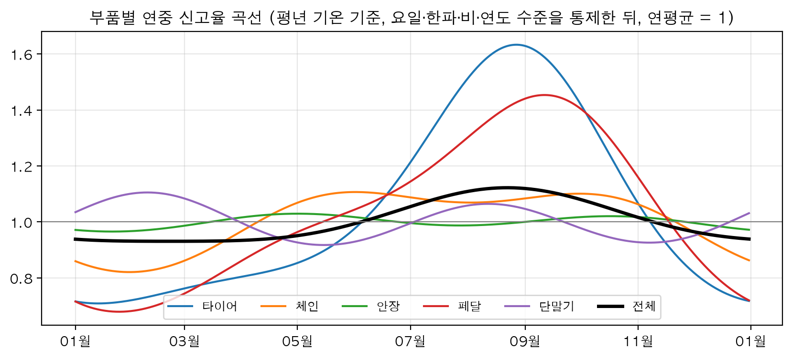
부품마다 반응이 다르다.
- 한파: 체인 1.62배, 페달 1.53배, 타이어 1.33배다. 안장과 단말기는 1.09배이고 신뢰구간이 1을 포함한다. 탐색적 분석의 순서(체인 1.50, 페달 1.38, 타이어 1.22, 안장 0.98)와 같다. output/tables/eda_rel_parts.csv output/tables/reg_irr_by_part.csv
- 계절: 타이어는 가장 높은 때가 가장 낮은 때의 2.3배다(1.63 ÷ 0.71). 페달은 2.1배다(1.45 ÷ 0.68). 안장은 0.97 ~ 1.03으로 계절이 거의 없다. output/tables/reg_irr_by_part.csv
- 주말과 공휴일: 안장(토요일 0.76, 공휴일 0.80)과 페달(0.77, 0.82)이 타이어(0.83, 0.92)와 체인(0.84, 0.88)보다 더 낮다.
- 전날 비: 타이어 1.03배와 단말기 1.11배는 늘고, 체인 0.96배와 안장 0.97배는 준다. 네 부품 모두 p값이 0.003 이하다. 페달은 1.02배(p = 0.19)로 구분되지 않는다. 부호가 갈리는 효과가 섞여 전체에서는 1.00배(p = 0.788)가 됐다.
- 눈 온 날: 체인 0.84배와 페달 0.83배만 신뢰구간이 1 아래에 있다.
- 장기 수준: 2024년이 2021년의 몇 배인지가 안장 0.58, 단말기 0.68, 타이어 0.73, 체인 0.79, 페달 1.00으로 갈린다.
안장은 날씨와 계절에 거의 반응하지 않고 요일과 장기 하락만 크다. 1차 분석과 견주면, 기온의 "U자형"은 한파 쪽만 남았고 더위 쪽은 계절이었다. 요일 패턴과 타이어의 큰 계절 진폭은 그대로 재현됐다. docs/notes/02_EDA_메모.md
부품별로 모형을 나눈 이유는 이 차이에 있다. 한 모형으로 묶으면 전날 비처럼 부호가 다른 효과가 상쇄돼 "효과 없음"으로 보인다. 계절 곡선, 한파의 크기, 장기 수준도 부품마다 다르다. 따로 맞추면 모든 계수와 흩어짐(alpha는 타이어 0.0089 ~ 단말기 0.0205)이 부품마다 달라질 수 있다. 전날 비를 전체 모형에서 효과가 없는데도 변수로 남긴 것도 부품별 모형을 쓰기 때문이다. docs/variables_v1.md
더 자세히: 표 5-11에서 뺀 행(표 5-12)
| 요인 | 전체 | 타이어 | 체인 | 안장 | 페달 | 단말기 |
|---|---|---|---|---|---|---|
| 평균기온 1℃당 | 1.00 (0.99 ~ 1.00) | 1.00 (1.00 ~ 1.01) | 1.00 (0.99 ~ 1.00) | 0.99 (0.99 ~ 1.00) | 1.00 (1.00 ~ 1.01) | 0.99 (0.99 ~ 1.00) |
| 징검다리 근무일 | 0.94 (0.87 ~ 1.02) | 0.96 (0.88 ~ 1.05) | 0.92 (0.85 ~ 1.01) | 0.88 (0.81 ~ 0.96) | 1.00 (0.91 ~ 1.11) | 1.04 (0.90 ~ 1.20) |
| 더위(안장 모형에만) | 0.93 (0.88 ~ 0.98) | |||||
| 얼었다 녹은 날(타이어 모형에만) | 1.07 (1.02 ~ 1.13) | |||||
| alpha | 0.0134 | 0.0089 | 0.0202 | 0.0157 | 0.0141 | 0.0205 |
전체는 신고 건수, 부품별은 행 수여서 부품을 더해도 전체가 되지 않는다. 한 신고에 유형이 여러 개 붙으면 부품별로는 각각 세기 때문이다. 이 단계에는 "기타" 유형의 모형이 없다.
5.11점검: 조건을 바꿔도 결론이 같은가
세 가지를 바꿔 봤다. 표준오차를 구하는 방식, 학습을 시작하는 날, 그 밖의 사양이다. 프로젝트 전체의 강건성 점검은 11절에 모았다.
첫째는 표준오차다. HAC가 감안하는 자기상관의 길이를 7일, 14일, 28일로 바꾸고, 자기상관을 아예 무시한 경우와 견줬다.
| 변수 | HAC 7일 | HAC 14일(기본) | HAC 28일 | 자기상관 무시 |
|---|---|---|---|---|
| 한파 더미 | < 0.0001 | < 0.0001 | < 0.0001 | < 0.0001 |
| 겨울 기온 편차 | 0.0001 | 0.0001 | 0.0002 | < 0.0001 |
| 평균기온 | 0.0062 | 0.0096 | 0.0165 | 0.0008 |
| 눈 온 날 | 0.0943 | 0.0891 | 0.0853 | 0.0022 |
| 징검다리 근무일 | 0.1450 | 0.1498 | 0.1406 | 0.1651 |
| 당일 비 | < 0.0001 | < 0.0001 | < 0.0001 | < 0.0001 |
| 전날 비 | 0.7929 | 0.7878 | 0.7843 | 0.7844 |
| 쉬는 날 다음 첫 근무일 | 0.0002 | 0.0002 | 0.0001 | 0.0011 |
| 공휴일 | < 0.0001 | < 0.0001 | < 0.0001 | < 0.0001 |
HAC의 길이를 바꿔도 결론이 같다. 한파, 겨울 기온 편차, 당일 비, 공휴일, 첫 근무일은 어느 길이에서도 뚜렷하다. 평균기온은 0.006 ~ 0.017로 길이에 따라 조금 움직이지만 0.05 아래에 머문다. 눈, 징검다리, 전날 비는 어느 길이에서도 0.05를 넘는다. HAC를 쓴 이유는 눈 온 날에서 드러난다. 자기상관을 무시하면 p값이 0.0022로 뚜렷한 효과처럼 보이는데 HAC로는 0.09 안팎이다.
둘째는 학습 시작 시점이다. 체크포인트 A에서 정해 둔 비교다. 2021-04 ~ 2022-02에는 단말기 종류가 섞여 있었고 2021-02 ~ 2021-12의 신고에는 시각이 없다는 문제가 남아 있었다. 그래서 그 기간을 뺀 2022-03-01 시작과 결과가 같은지 봤다.
| 요인 | 2021-04-08부터(1,329일) | 2022-03-01부터(1,002일) |
|---|---|---|
| 토요일(월요일 기준) | 0.831 (0.80 ~ 0.86) | 0.818 (0.78 ~ 0.86) |
| 공휴일 | 0.886 (0.85 ~ 0.92) | 0.861 (0.82 ~ 0.90) |
| 쉬는 날 다음 첫 근무일 | 1.069 (1.03 ~ 1.11) | 1.054 (1.01 ~ 1.10) |
| 한파 더미 | 1.413 (1.27 ~ 1.58) | 1.525 (1.32 ~ 1.77) |
| 겨울 기온 편차(1℃당) | 0.980 (0.97 ~ 0.99) | 0.979 (0.97 ~ 0.99) |
| 평균기온(1℃당) | 0.995 (0.99 ~ 1.00) | 0.995 (0.99 ~ 1.00) |
| 눈 온 날 | 0.906 (0.81 ~ 1.02) | 0.889 (0.79 ~ 1.01) |
| 당일 비, log(1 + mm) | 0.959 (0.95 ~ 0.97) | 0.955 (0.95 ~ 0.96) |
| 전날 비, log(1 + mm) | 0.999 (0.99 ~ 1.01) | 0.999 (0.99 ~ 1.01) |
| 학습 구간 | 학습 일수 | 2024년 일별 오차율 | 2024년 주별 오차율 |
|---|---|---|---|
| 2021-04-08부터 | 963 | 10.1% | 6.4% |
| 2021-04-08부터 + 시각 없는 신고 더미 | 963 | 10.6% | 6.8% |
| 2022-03-01부터 | 636 | 11.8% | 8.0% |
따로 맞춘 배수는 비슷하다. 모든 요인에서 두 신뢰구간이 겹친다. 검증 오차는 2021-04-08부터 쓴 쪽이 일별 1.7%p 낮다(11.81 − 10.09). 학습 일수가 963일 대 636일로 더 많고 겨울을 한 번 더(2021-12 ~ 2022-02) 포함한다. 오차가 줄어든 이유를 따로 나눠 본 분석은 없다.
시각 없는 신고 더미는 넣지 않았다. 표본에서 시각이 없는 날은 2021-04-08 ~ 2021-12-31 전체다. "2021년"과 완전히 같은 날들이라 연도 수준이 들어간 설명 모형에서는 따로 추정할 수 없다. 연도 더미 대신 최근 4주 신고율을 쓰는 검증용 식에 넣어 보면 일별 오차율이 10.1%에서 10.6%로 나빠졌다.
셋째는 그 밖의 사양이다. 네 가지를 바꿨다. 노출을 이용시간으로, 신고 누락 기간을 넣어서, 기간을 둘로 나눠서, 종속변수를 중복 병합 건수(같은 자전거·같은 유형의 48시간 안 재신고를 1건으로 본 값)로 맞췄다. docs/notes/01_데이터전처리_메모.md
| 사양 | 토요일 | 첫 근무일 | 한파 더미 | 겨울 기온 편차(1℃당) | 평균기온(1℃당) | 당일 비 10mm | 전날 비 10mm |
|---|---|---|---|---|---|---|---|
| 기본(전체, 대여건수) | 0.831 | 1.069 | 1.413 | 0.980 | 0.995 | 0.904 | 0.998 |
| 노출을 이용시간으로 | 0.706 | 1.087 | 1.462 | 0.974 | 0.991 | 0.972 | 0.982 |
| 신고 누락 기간 포함 | 0.829 | 1.065 | 1.396 | 0.978 | 0.996 | 0.902 | 0.999 |
| 2021-04 ~ 2022년만 | 0.835 | 1.074 | 1.341 | 0.980 | 0.995 | 0.930 | 0.998 |
| 2023 ~ 2024년만 | 0.824 | 1.054 | 1.539 | 0.975 | 0.998 | 0.884 | 1.000 |
| 타이어(행 수) | 0.829 | 1.072 | 1.332 | 0.989 | 1.003 | 0.956 | 1.033 |
| 타이어(중복 병합) | 0.833 | 1.078 | 1.349 | 0.989 | 1.004 | 0.957 | 1.040 |
| 체인(행 수) | 0.841 | 1.060 | 1.624 | 0.968 | 0.995 | 0.893 | 0.957 |
| 체인(중복 병합) | 0.841 | 1.068 | 1.629 | 0.968 | 0.994 | 0.896 | 0.970 |
- 신고 누락 기간을 넣어도 거의 같다(한파 더미 1.396, 토요일 0.829). 요일·날씨 효과에는 영향이 없다는 탐색 결과와 맞는다. 이 기간을 뺀 이유는 수준과 계절 추정에 있다(5.2).
- 기간을 둘로 나눠도 방향이 같다. 크기는 조금 다르다. 한파 더미가 앞 기간 1.341, 뒤 기간 1.539이고 당일 비 10mm가 0.930, 0.884다.
- 중복 신고를 병합해도 거의 같다(타이어의 한파 1.332 → 1.349, 체인 1.624 → 1.629).
- 노출을 이용시간으로 바꾸면 방향은 같고 크기가 달라진다. 토요일이 0.706으로 더 낮아지고 당일 비 10mm는 0.972로 1에 가까워진다.
5.12체크포인트 C: 정한 것 전체
런북이 이 지점에서 답하도록 정한 질문은 넷이다. 노출 변수는 무엇인가. 날씨 효과가 HAC 기준으로 살아남았는가. 부품별 차이가 뚜렷한가. 예측에서 맞힐 값을 어떤 구조로 둘 것인가. 소유자가 2026-10-05에 내린 결정은 아래 여섯 줄이다. 근거 수치와 버린 이유는 각 소절의 "결정과 이유"에 적었다.
| 무엇을 | 어떻게 정했나 | 버린 대안 | 근거가 있는 곳 |
|---|---|---|---|
| 노출 | 대여건수. 단계 0의 "노출 = 이동거리"를 바꿈 | 이동거리, 이용시간 | 5.6, 표 5-5 |
| 한파 변수 | 더미와 연속값을 둘 다 | 더미만, 연속값만 | 5.7, 표 5-6 |
| 평균기온, 눈 온 날, 징검다리 근무일 | 남긴다. 징검다리는 효과가 불확실하지만 일단 둔다 | 전부 제외 | 5.8, 표 5-7 |
| 더위, 얼었다 녹은 날 | 더위는 안장 모형에만, 얼었다 녹은 날은 타이어 모형에만. 우연일 가능성과 작은 효과를 함께 적는다. 예측에서는 넣은 것과 뺀 것을 비교한다 | 둘 다 제외, 전부 포함 | 5.8, 표 5-8 |
| 학습 시작 | 2021-04-08. 시각 없는 신고 더미는 넣지 않는다 | 2022-03-01부터 | 5.11, 표 5-14, 표 5-15 |
| 다음 단계 | 예측 비교는 전부 진행. 부품별 모형 유지. "대여량 예측 × 신고율 예측" 구조를 주력 후보로 | 예측 단계 축소 | 5.10, 표 5-11 |
더 자세히: 런북의 계획과 다르게 한 것
- 자료 기간. 런북은 2020-01부터였다. 체크포인트 A에 따라 2021-04-08 ~ 2024-12-31로 하고 운영 중단일과 신고 누락 기간을 뺐다.
- 1차 분석의 재현. 1차의 원자료 파일이 프로젝트에 없어 그대로 재현하지 못했다. 새 자료에 같은 형태의 식을 적용했다.
- alpha 추정. 이산형 음이항으로 먼저 추정하는 대신 로그우도가 가장 큰 alpha를 1차원 탐색으로 찾았다.
- 기온. 스플라인 대신 한파 변수 두 형태를 비교했다. 코로나 더미는 넣지 않았다.
- 비교 잣대. AIC에 더해 검증 오차를 썼다.
- 산출물. 런북이 적은
reg_ols_vs_nb.csv(1차 선형회귀와 새 모형의 비교표)와 기온 효과 곡선 그림은 만들어지지 않았다. 비교는 노트북 9절의 표(표 5-4)가, 그림은 연중 곡선(그림 5-1)이 대신한다.
5.13이 결과가 뒤 단계에 넘긴 것
6절의 음이항 예측 모형은 이 단계의 최종 변수 묶음을 그대로 쓴다. 바뀐 것은 연도 수준 자리에 최근 4주 신고율이 들어간 것 하나다(py/fc_models.py). 노출을 대여건수로 정했으므로 미래의 대여건수를 따로 예측하는 모형이 필요해졌다(→ 6절, 7절).
그 뒤의 결과도 적어 둔다. 이 변수들로 만든 음이항 예측 모형은 2025년 이후의 테스트 구간에서 안장을 빼면 기준값(지난주 값이 다음 주에도 그대로라고 보는 단순 예측. 분석 문서에서는 "나이브"라고 불렀다)보다 뚜렷이 낫지 않았다. 테스트 구간은 신고율 수준이 한 단계 내려간 다른 레짐이었다. 그래서 운영 예측에는 이 신고율 모형을 쓰지 않는다(→ 6절, 7절). 이 절의 배수가 틀렸다는 뜻은 아니다. 2021-04 ~ 2024년의 수준 안에서 잰 값이고, 수준이 바뀌는 자료에서는 요일·날씨 효과보다 수준을 따라가는 일이 먼저였다. 표 5-9의 연도 수준(2024년 0.727배)이 이미 같은 사정을 보여 준다.
설명할 수 있어야 할 것
- 대여건수를 뺀 모형(M1)과 offset으로 넣은 모형(M2)에서 기온 계수가 0.0281과 0.0024로 갈린 이유는 무엇인가.
- log(대여건수)의 계수가 1이 아닌 1.097로 나왔는데도 이동거리 대신 대여건수를 offset으로 쓴 근거는 무엇인가.
- 한파 더미의 1.41배를 "추우면 자전거가 더 고장 난다"로 옮기면 안 되는 이유는 무엇인가.
- 전날 비가 전체 모형에서 1.00배인데도 변수로 남기고 부품별로 모형을 나눈 이유는 무엇인가.
근거 파일: docs/notes/03_모델설계_메모.md, docs/variables_v1.md, docs/runbook/03_단계1B_고장률_회귀모형.md, docs/report_stage1.md(4절), docs/decision_log.md, docs/notes/01_데이터전처리_메모.md, docs/notes/02_EDA_메모.md, py/nbreg.py, py/fc_models.py, notebooks/1B_regression.ipynb, notebooks/1A_Build_master.ipynb, output/tables/reg_*.csv(12개), output/tables/eda_corr.csv, output/tables/eda_anomaly_month.csv, output/tables/eda_rel_dow.csv, output/tables/eda_rel_parts.csv, output/tables/eda_rel_temp_anom.csv, output/tables/eda_heat_usage.csv, output/tables/rb_3_exposure_distok.csv, output/tables/yearly_summary.csv, output/figures/reg_season_by_part.png, data/processed/daily_master_v2.csv
6예측 모형 비교(1C)와 테스트 결과
검증 구간(2024년)에서는 부품별로 고른 음이항 회귀가 기준값(지난 7일 합계가 다음 7일에도 그대로라고 보는 단순 예측. 분석 문서에서는 '나이브'라고 불렀다)보다 오차를 31.6 ~ 40.8% 줄였다. 사람이 승인한 뒤 한 번만 연 테스트 구간(2025-01-01 ~ 2026-06-24, 원점 540개)에서는 안장만 27.6% 줄였고, 타이어 2.8%, 전체 −2.4%, 체인 −17.2%, 페달 −19.4%로 나머지는 기준값을 넘지 못했다. 같은 테스트에서 '최근 4주 신고율 × 대여량 예측'만 쓰는 구조 나이브는 다섯 대상 모두에서 오차를 15.0 ~ 26.6% 줄였다. 사후 진단으로 찾은 원인은 수준 변수(최근 4주 신고율)의 계수가 0.60 ~ 0.97로 1보다 작아, 신고율이 한 단계 내려간 테스트 구간을 끝까지 따라가지 못하고 6.6 ~ 20.4% 많게 예측한 것이다. 테스트를 본 뒤의 진단이므로 모형은 고치지 않았고, 운영 주간 예측은 구조 나이브 방식으로 정했다(→ 7절). output/tables/fc_valid.csv output/tables/fc_test.csv output/tables/fc_posthoc_lvl1.csv
6.1예측 과제: 무엇을, 언제 기준으로, 어떤 정보로
과제는 하나다. 예측을 내는 날 아침에, 그날부터 7일 동안 들어올 고장신고 건수의 합계를 타이어·체인·안장·페달과 전체에 대해 맞힌다. 예측을 내는 날을 원점(예측의 기준일. 아래에서 t로 적는다)이라고 부른다. 원점 t의 예측 대상은 t일부터 t+6일까지 7일의 합계다. 7일 합계로 잡은 것은 정비 부품 발주와 인력 배치에 쓰는 단위로 보았기 때문이다. 공단이 실제로 어떤 주기로 발주하는지는 확인하지 못했다. notebooks/1C_forecast.ipynb
세는 방법은 대상마다 다르다. 전체는 신고 건수(같은 자전거, 같은 등록일시는 한 건)이고, 부품별은 그 유형이 붙은 행 수다. 고장신고 자료는 한 신고에 유형이 여러 개 붙으면 행이 여러 개가 되므로 네 부품을 더해도 전체가 되지 않는다(→ 3절). 고장신고는 이용자가 앱으로 넣은 신고이지 확인된 고장이 아니다. 이 절의 숫자는 모두 신고 건수에 대한 것이다.
예측의 뼈대는 "신고 건수 = 대여량 × 신고율"이다. 신고율(신고 건수를 대여건수로 나눈 값. 이 절에서는 표 파일에 맞춰 대여 만 건당 건수로 적는다)과 노출(신고율의 분모가 되는 이용량. 1B에서 대여건수로 정했다 → 5절)을 따로 예측해 곱한다. 이렇게 나눈 근거는 탐색 단계의 두 숫자다. 주간 신고 건수 변동의 70 ~ 85%가 대여량만으로 설명됐다(대상별 R² 0.70 ~ 0.85). output/tables/eda_weekly_decomp.csv 한 주 앞을 맞힐 때 기준값의 오차율은 전체 기준 22.3%였는데, '지난주 신고율 × 그 주의 실제 대여량'으로 바꾸면 7.9%로 줄었다. output/tables/eda_weekly_naive_vs_rate.csv 대여량을 알면 오차의 대부분이 사라진다. 그래서 미래 대여량을 얼마나 잘 맞히느냐가 이 과제의 성패를 가른다(→ 4절).
모형을 맞추는 구간, 고르는 구간, 평가하는 구간은 날짜로 나눴다(체크포인트 A, 사람, 2026-10-05).
| 구간 | 원점 날짜 | 원점 수 | 쓰임 |
|---|---|---|---|
| 학습 | 2021-05-06 ~ 2023-12-25 | 861 | 모형을 맞춘다. 이 가운데 2023-03-01 이후 232개는 LightGBM과 GRU가 학습을 멈출 시점을 정하는 데 쓴다 |
| 검증 | 2024-01-01 ~ 2024-12-25 | 360 | 모형을 비교하고 고른다 |
| 테스트 | 2025-01-01 ~ 2026-06-24 | 540 | 고른 모형을 한 번 평가한다 |
검증 360개와 테스트 540개는 표 파일의 n 열에서, 학습 861개와 232개는 노트북 출력에서 확인했다. 하루 단위로 맞추는 모형(음이항 신고율 모형, 대여량 모형)은 2021-04-08 ~ 2023-12-31의 날짜를 학습에 쓴다. py/fc.py
학습을 2021-04-08부터 잡은 이유는 그 앞(2020-05 ~ 2021-03)이 신고율이 절반 수준이던 다른 레짐(신고율 수준이 계단처럼 바뀐 구간)이기 때문이다(→ 4절, 8절). 학습 원점이 2021-05-06부터인 것은 과거 4주 값이 모두 2021-04-08 이후에 들게 하려는 것이다. 각 구간의 끝을 6일 당긴 것(12-25, 06-24)은 7일 합계가 다음 구간으로 넘어가지 않게 하려는 것이다.
원점은 매일 하나씩 둔다. 주 1회만 두면 검증 구간의 표본이 52개뿐이라 모형 사이의 차이를 가리기 어렵다. 대신 이웃한 원점은 7일 가운데 6일이 겹치므로 360개, 540개가 서로 독립인 표본은 아니다. 그래서 통계 검정에서는 겹침을 반영했고(6.8), 실제 운영처럼 월요일 원점만 골라 따로 채점했다. notebooks/1C_forecast.ipynb
원점 t에서 쓸 수 있는 정보는 세 가지로 한정했다. t−1일까지의 모든 관측값, t ~ t+6일의 달력(요일과 공휴일은 미리 정해져 있다), t ~ t+6일의 날씨 예보다. t일 이후의 대여량과 신고 건수는 쓸 수 없다. 이 원칙이 코드에서 깨지지 않게 둔 장치는 다음과 같다.
- 수준 변수는 7일 전에서 끊는다. 날짜 d의 최근 4주 신고율과 최근 대여 수준은 d−34일부터 d−7일까지 28일로 계산한다. 그러면 원점 t에서 가장 먼 t+6일 행도 t−1일까지만 보게 된다. py/fc.py
- 미래 대여량은 실제 값을 쓰지 않고 따로 예측한 값을 쓴다(6.4). 실제 대여량을 넣으면 기준값보다 오차가 54.8 ~ 60.1%까지 줄어들므로(예측한 대여량으로는 31.6 ~ 40.8%), 실수로 실제 값이 들어가면 성적이 그만큼 부풀려진다. output/tables/fc_valid.csv
- 미래 7일의 날씨는 그 원점 아침에 실제로 볼 수 있던 예보를 쓴다(6.3). 전날 비 변수는 원점 당일에만 실제 어제 값을 쓰고, 그 뒤 6일은 예보의 전날 값을 쓴다.
- 예보가 나오지 않는 날씨 변수(일사량, 일조시간, 지면온도)는 예측 모형에 넣지 않는다. docs/runbook/04_단계1C_예측모형_비교와_보고서.md
- 학습 원점은 앞 28일부터 뒤 6일까지 운영 중단일이나 신고 누락 기간(2023-09-07 ~ 10-10)이 하루도 끼지 않은 것만 쓴다. py/fc.py
- LightGBM과 GRU가 학습을 멈출 시점은 학습 구간 뒤쪽 원점의 오차로 정하고(검증 구간은 보지 않는다), 정한 횟수만큼 학습 구간 전체로 다시 맞춘다. 처음에는 검증 구간을 보고 멈췄다가 고쳤고, 고치자 GRU의 개선율이 1 ~ 4%p 내려갔다. docs/notes/03_모델설계_메모.md
- GRU 입력을 표준화하는 평균과 표준편차, 기상청 예보의 보정값은 학습 구간에서만 구한다.
- 대여량 모형 후보도 학습 구간 뒤쪽 원점으로 고른다(6.4).
- 테스트 원점은 기본 설정으로는 만들어지지 않는다(
make_base()의include_test=False). 테스트는 별도 노트북에서, 선택을 파일로 고정해 커밋한 뒤에 열었다(6.8).
더 자세히: 런북의 처음 계획과 달라진 점
1C는 런북(docs/runbook/04)의 절차를 따랐지만 앞 단계의 결정과 진행 중에 알게 된 것 때문에 달라진 곳이 있다. docs/runbook/04_단계1C_예측모형_비교와_보고서.md
- 학습 시작일: 런북은 2020-01-01이었다. 체크포인트 A에 따라 2021-04-08로 했다.
- 노출: 런북은 이동거리였다. 체크포인트 C에 따라 대여건수로 했다(→ 5절).
- 날씨 변수: 런북의 기온 곡선(스플라인)과 코로나 더미 대신 1B에서 정한 묶음(한파 두 형태, 평균기온, 눈, 당일 비, 전날 비)을 썼다.
- 시나리오 D: 런북은 월별 평년값을 넣는 방식이었다. 날씨 변수를 뺀 모형으로 바꿨다(6.3).
- 구조 나이브와 실제 대여량 참고선을 추가했다. 개선이 대여량 쪽과 신고율 쪽 가운데 어디서 나오는지 보려는 것이다(6.7).
- ARIMAX는 실측 날씨로만 돌렸다.
- LightGBM과 GRU의 멈춤 시점: 런북은 검증 구간으로 멈추는 방식이었다. 학습 구간 뒤쪽 원점으로 바꿨다.
- 기준 시나리오: 런북은 과거 예보를 구하면 B, 못 구하면 C였다. C로 시작했다가 B로 바꿨다(6.3).
- 런북에 있는데 결과를 찾지 못한 것이 둘 있다. 예측 구간의 다른 지표(분위수 손실)와, 노출 없이 최근 4주 평균 건수를 넣은 음이항과의 비교다. 계산한 표가 저장돼 있지 않다.
6.2평가: 오차 지표와 기준값
모든 모형을 같은 원점, 같은 정보, 같은 지표로 채점한다. 채점 함수(py/fc.py의 score())는 대상마다 모든 모형이 예측을 낸 원점만 남겨서 계산한다. 지표는 네 가지다.
- MAE(예측과 실제의 차이를 절댓값으로 평균한 값. 단위는 건/주).
- MAE%(MAE를 실제 주간 평균으로 나눈 오차율). 부품마다 건수 규모가 달라서 비율로 본다. 원점마다 오차율을 구해 평균하는 방식(MAPE)은 실제값이 작을 때 값이 튀어서 쓰지 않았다.
- 개선율(1 − 모형의 MAE ÷ 기준값의 MAE. 표 파일의 skill 열). 양수면 그만큼 기준값보다 오차가 작다는 뜻이고, 음수면 기준값보다 나쁘다. 이 문서에서는 %로 적는다. 표 파일과 그림에는 같은 값이 소수로 들어 있다(이 문서의 40%가 표 파일의 0.40이다).
- 치우침(예측 − 실제의 평균을 실제 평균으로 나눈 값. 표 파일의 bias 열을 비율로 바꾼 것). 양수면 많게 예측한 것(과대예측)이다.
넘어야 할 선으로 단순 예측 네 가지를 만들었다. 모형 없이 과거 값만으로 내는 예측이다.
| 이름 | 방법 | 타이어 | 체인 | 안장 | 페달 | 전체 |
|---|---|---|---|---|---|---|
| B1 | 지난 7일 합계 그대로 | 17.8 | 19.1 | 20.2 | 19.8 | 17.3 |
| B2 | 최근 4주의 주 평균 | 20.4 | 22.1 | 21.7 | 22.8 | 19.8 |
| B3 | 작년 같은 주(요일을 맞추려고 364일 전) | 25.4 | 24.5 | 36.6 | 21.1 | 21.8 |
| B4 | 작년 같은 주 × 최근 4주의 전년 대비 증감 | 22.0 | 24.0 | 24.7 | 26.1 | 23.0 |
검증 구간에서 네 가지 가운데 B1의 오차가 다섯 대상 모두에서 가장 작았다. 그래서 B1을 기준값으로 삼고 개선율의 분모로 쓴다. 가장 강한 단순 예측을 기준으로 잡아야 개선율이 부풀지 않는다. 작년 같은 주(B3)는 안장에서 36.6%로 크게 틀렸다. 안장 신고율이 2023년 대여 만 건당 7.1건에서 2024년 5.6건으로 내려가서, 작년 값을 그대로 가져오면 29.8% 많게 나온다. output/tables/regime_part_by_year.csv output/tables/fc_valid.csv 수준이 해마다 바뀌는 자료에서는 최근 값을 쓰는 예측이 강하다는 것이 여기서 이미 보인다.
B1의 검증 오차율은 과제를 맞게 짰는지 확인하는 데도 썼다. 런북에 미리 적어 둔 2024년 B1 오차율(타이어 17.8%, 체인 19.1%, 안장 20.2%, 페달 19.8%)과 네 부품이 모두 같았다. 전체는 17.3%로 런북의 17.7%와 다르다. 런북의 값은 전체를 행 수로 센 것이고 이 과제는 전체를 신고 건수로 세기 때문이다(행 수로 다시 세면 17.7%가 나오는 것을 일별 마스터로 이번에 확인했다 data/processed/daily_master_v2.parquet). output/tables/fc_naive_valid.csv docs/runbook/04_단계1C_예측모형_비교와_보고서.md
6.3날씨 시나리오와 예보 오차
미래 7일의 날씨는 원점에서 알 수 없다. 1차 분석은 이 자리에 실제 관측값을 넣었고 그만큼 성적이 부풀었다. 이번에는 "미래 날씨를 얼마나 아는가"를 네 가지 조건으로 나눠 같은 모형을 채점했다.
| 시나리오 | 미래 7일의 날씨 | 뜻과 쓰임 |
|---|---|---|
| A 실측 | 실제 관측값 | 완벽한 예보가 있다고 가정한 상한. 1차 분석이 쓴 방식 |
| B 기상청 예보 | 그 원점 아침에 실제로 볼 수 있던 기상청 단기예보(0 ~ 2일 뒤)와 중기예보(3 ~ 6일 뒤) | 실제 운영과 같은 조건. 모형 선택과 테스트의 기준 |
| C 오차 가정 | 실측에 가정한 예보 오차를 섞은 값. 기온 오차의 표준편차는 당일 1.0℃에서 6일 뒤 2.5℃까지, 비 유무를 틀릴 확률은 10%에서 28%까지 커진다고 두었다 | 과거 예보 자료를 구하기 전에 쓰던 조건. 비교용으로 남겼다 |
| D 날씨 없음 | 쓰지 않는다. 날씨 변수를 뺀 모형을 따로 맞춘다 | 날씨 정보가 전혀 없을 때 |
D에서 평년값을 넣지 않고 날씨 변수를 아예 뺀 이유가 있다. 평년값을 넣으면 "매일 평균 강수량만큼 비가 온다"는 입력이 되어 대여량을 29% 적게 예측했다. docs/notes/03_모델설계_메모.md
기준 시나리오는 도중에 C에서 B로 바뀌었다. 처음(2026-10-05)에는 과거 예보 자료가 없어서 C를 기준으로 삼았다. C의 오차 크기는 가정이라, 같은 날 일본 기상청(JMA) 전지구 모형의 과거 예보를 받아 가정과 견줘 봤다. 그 뒤 사람이 기상자료개방포털에서 기상청 단기예보(서울 관측소 근처 격자, 2021-03 ~ 2026-10)와 중기예보(서울, 2021-01 ~ 2026-10)를 내려받았고, 2026-10-07에 기준을 B로 바꿔 검증 비교를 처음부터 다시 했다. docs/notes/03_모델설계_메모.md
더 자세히: 기상청 과거 예보를 원점별 표로 정리한 방법
원점 t 아침에 볼 수 있는 가장 새 예보는 t−1일 23시에 발표된 단기예보와 t−1일 18시에 발표된 중기예보다. 이 둘만 써서 원점마다 앞으로 7일(0 ~ 6일 뒤)의 날씨 표를 만들었다(py/forecast/kma_forecast.py. 결과는 data/interim/weather_forecast/kma_by_origin.parquet).
- 0 ~ 2일 뒤: 단기예보의 시간별 값을 날짜별로 요약한다(평균·최고·최저기온, 강수량 합, 적설 합, 비 유무). 그날 기온 예보가 18시간 이상 덮일 때만 단기예보를 쓴다. 단기예보는 2023년까지 발표 뒤 79시간, 2024년부터 103시간까지만 나온다.
- 3 ~ 6일 뒤: 중기예보를 쓴다. 최고·최저기온은 그대로 쓴다. 평균기온은 (최고 + 최저) ÷ 2를 학습 구간 관측값에 맞춰 보정한다(평균기온 = −0.30 + 0.99 × (최고 + 최저) ÷ 2). 중기예보에는 강수량이 없고 강수확률만 있어서, 강수확률 구간마다 학습 구간에 실제로 온 비의 평균을 넣는다(15% 이하 0.1mm, 15 ~ 35% 1.1mm, 35 ~ 55% 5.2mm, 55 ~ 75% 10.3mm, 75% 초과 20.9mm). 비 유무 자리에는 강수확률(0 ~ 1)을 넣는다. output/models/kma_calibration.json
- 기온의 계통 오차: 격자값과 관측소 값의 차이를 며칠 뒤인지별 평균 편향으로 구해 뺀다. 평균기온 편향은 당일 +0.50℃였고 1 ~ 6일 뒤는 −0.05 ~ +0.05℃로 작았다. output/models/kma_calibration.json
- 발표가 빠진 칸: 하루 전 원점이 본 같은 날의 예보로 채운다(181행, 1.2%). docs/notes/03_모델설계_메모.md
- 2021-03 ~ 06은 옛 형식(3시간 기온, 6시간 강수량)이라 같은 방식으로 따로 읽는다. 2021-06-30 이후 파일의 시각은 UTC라 9시간을 더한다.
보정값은 모두 학습 구간(2021-04-08 ~ 2023-12-31)에서만 구했다. 검증과 테스트 구간의 관측은 쓰지 않았다. 운영에서 실시간 예보를 같은 방식으로 보정하려고 이 값을 파일로 남겼다(→ 7절). output/models/kma_calibration.json docs/notes/03_모델설계_메모.md
| 며칠 뒤 | 쓴 예보 | 기온 오차 표준편차(℃) | C의 가정(℃) | 비 유무를 틀린 비율 | C의 가정 | 비 온 날을 놓친 비율 | 강수량 상관(로그) |
|---|---|---|---|---|---|---|---|
| 0 | 단기 | 0.82 | 1.00 | 13.9% | 10% | 17.1% | 0.68 |
| 1 | 단기 | 0.91 | 1.25 | 15.0% | 13% | 20.7% | 0.62 |
| 2 | 단기 | 1.08 | 1.50 | 16.4% | 16% | 37.8% | 0.62 |
| 3 | 중기 | 1.25 | 1.75 | 16.4% | 19% | 32.9% | 0.62 |
| 4 | 중기 | 1.50 | 2.00 | 16.7% | 22% | 46.3% | 0.57 |
| 5 | 중기 | 1.66 | 2.25 | 18.6% | 25% | 56.1% | 0.51 |
| 6 | 중기 | 1.85 | 2.50 | 20.5% | 28% | 67.1% | 0.46 |
기온은 가정보다 정확했다. 비 유무를 틀린 비율은 13.9 ~ 20.5%로 가정과 비슷한 크기였다. 다만 틀리는 방향이 한쪽으로 쏠려 있다. 비가 온 날 가운데 예보가 놓친 비율이 당일 17.1%에서 6일 뒤 67.1%까지 올라간다. 3일 뒤부터는 중기예보의 강수확률만 있어서, 확률이 50%에 못 미치는 날을 '비 없음'으로 친 영향이 크다. 강수량도 먼 날일수록 거칠다(로그 강수량의 상관 0.68 → 0.46). 그래서 예보를 관측값처럼 그대로 믿는 모형은 틀린다. 이 문제는 대여량 모형에서 크게 드러났다(6.4). output/tables/fc_forecast_error_kma.csv
JMA 예보는 참고 자료로만 남겼다. JMA를 고른 이유는 2021-03부터 기온·강수·눈의 1 ~ 7일 전 예보가 모두 있어 학습, 검증, 테스트를 한 출처로 덮기 때문이다. py/forecast/weather_forecast.py 학습·검증 구간에서 잰 JMA 예보의 오차는 C의 가정과 거의 같았다. 기온 오차 표준편차가 1일 전 예보 1.46℃(학습) / 1.23℃(검증), 7일 전 예보 2.43℃ / 2.19℃였고(가정 1.00 → 2.50℃), 비 유무를 틀린 비율이 11.1% / 9.8%에서 27.9% / 26.8%였다(가정 10% → 28%). 전지구 모형의 격자값이라 서울 관측소보다 평균기온이 1.0 ~ 1.8℃ 낮게 나오는 계통 오차가 있었다. output/tables/fc_forecast_error.csv 같은 검증 구간에서 기상청 예보의 기온 오차(0.82 ~ 1.85℃)가 JMA(1.23 ~ 2.19℃)보다 작았다. output/tables/fc_forecast_error_kma.csv
6.4대여량(노출) 모형
신고 건수 = 대여량 × 신고율이므로 앞으로 7일의 대여량을 먼저 맞혀야 한다. 대여량 예측이 얼마나 큰 몫인지는 참고선 하나로 알 수 있다. 음이항 신고율 모형에 실제 날씨와 실제 대여량을 넣으면(쓸 수 없는 조건이다) 검증 개선율이 54.8 ~ 60.1%다. 실제 날씨는 그대로 두고 대여량만 예측값으로 바꾸면 36.6 ~ 43.0%로 내려간다. 대여량 예측 오차의 몫이 12.2 ~ 20.7%p라는 뜻이다. output/tables/fc_valid.csv 남은 오차의 가장 큰 덩어리가 여기에 있으므로 대여량 모형은 따로 후보를 세워 골랐다.
후보는 여덟 개다. 모형의 종류(음이항 회귀, LightGBM)와 학습에 쓴 날씨(실측, 가정한 오차를 섞은 실측, 기상청 과거 예보)를 엇갈려 만들었다. 음이항 대여량 모형의 처음 식(E0)은 최근 대여 수준(34 ~ 7일 전 28일의 하루 평균 대여건수, 로그), 요일, 공휴일, 쉬는 날 다음 첫 근무일, 징검다리 근무일, 계절(1년·반년 주기 사인·코사인 4개), 평균기온과 그 제곱, 한파, 비 유무, 강수량(로그), 눈이다. E2는 여기에 평년 대비 기온 편차와 그 제곱, 편차와 계절의 상호작용을 더했다. LightGBM은 최근 수준(4주, 1주), 달력, 날씨, 며칠 뒤인지를 입력으로 받는다. py/fc.py py/fc_expo.py
| 후보 | 모형 | 학습에 쓴 날씨 | 학습 뒤쪽, B | 학습 뒤쪽, C | 검증, A | 검증, B | 검증, C |
|---|---|---|---|---|---|---|---|
| E0 | 음이항(처음 식) | 실측 | 12.79 | 11.08 | 6.87 | 12.89 | 10.23 |
| E2 | 음이항 + 기온 편차·계절 상호작용 | 실측 | 12.40 | 10.83 | 6.84 | 12.54 | 10.20 |
| E5 | LightGBM | 실측 | 13.70 | 11.46 | 7.47 | 10.84 | 9.07 |
| N2 | 음이항(E2 식) | 오차를 섞은 실측 | 12.41 | 9.96 | 8.43 | 12.50 | 9.92 |
| N5 | LightGBM | 오차를 섞은 실측 | 10.65 | 9.14 | 7.77 | 9.91 | 8.26 |
| N7 | N2와 N5의 기하평균 | 오차를 섞은 실측 | 10.56 | 8.95 | 7.37 | 10.46 | 8.49 |
| K2 | 음이항(E2 식) | 기상청 과거 예보 | 9.17 | 10.92 | 8.35 | 8.53 | 10.12 |
| K5 | LightGBM | 기상청 과거 예보 | 10.56 | 11.51 | 7.68 | 9.13 | 9.41 |
고르는 기준은 학습 구간 뒤쪽 원점(2023-03-01 ~ 12-25. 그 앞까지만 학습한 모형으로 예측)의 주간 오차율이고, 날씨는 B를 넣는다. 검증 구간은 확인용으로만 본다. 신고 모형을 고르는 데 쓸 검증 구간을 대여량 모형 고르는 데까지 쓰지 않으려는 것이다.
K2(기상청 과거 예보로 학습한 음이항)를 골랐다. 기준 칸(학습 뒤쪽, B)에서 9.17%로 가장 낮고, 검증(B)에서도 8.53%로 가장 낮다. 같은 조건의 LightGBM(K5)은 10.56%와 9.13%다. output/tables/fc_expo_candidates.csv
이 표에서 차이가 가장 크게 갈리는 축은 학습에 쓴 날씨다. 실측 날씨로 학습한 음이항(E0, E2)에 기상청 예보를 넣으면 주간 오차율이 12.40 ~ 12.89%다. 같은 식을 기상청 예보로 학습하면(K2) 8.53 ~ 9.17%로 내려간다. 식을 다듬은 효과(E0 → E2)는 0.35 ~ 0.39%p에 그친다. 실측으로 학습한 모형은 날씨 입력을 관측값처럼 그대로 믿기 때문이다. 검증에서 E0에 기상청 예보를 넣자 대여량을 평균 9.37% 적게 예측했다. output/tables/fc_expo_candidates.csv output/tables/fc_expo_valid.csv 중기예보 구간에는 거의 모든 날에 0보다 큰 비 확률과 작은 강수량이 들어가는데, 실측으로 학습한 모형이 이것을 "매일 비가 조금 온다"로 받아들인 것으로 보인다. 예보로 학습하면 모형이 '예보된 비'가 실제 대여량을 얼마나 줄이는지를 자료에서 배운다.
| 조건 | 대여량 모형 | 검증 MAE% | 검증 bias% | 테스트 MAE% | 테스트 bias% |
|---|---|---|---|---|---|
| 지난주 대여량 그대로 | 모형 없음 | 15.17 | 0.00 | 14.33 | −0.91 |
| A 실측 | E0 | 6.87 | −0.37 | 7.48 | +2.64 |
| B 기상청 예보 | K2(선택) | 8.53 | −0.32 | 10.25 | +6.53 |
| C 오차 가정 | N5 | 8.26 | −0.93 | 9.17 | +2.99 |
| D 날씨 없음 | 날씨 변수를 뺀 음이항 | 12.53 | −2.12 | 11.82 | +3.70 |
검증에서 K2의 주간 오차율은 8.53%로, 지난주 대여량을 그대로 쓰는 방법(15.17%)의 절반을 조금 넘는다. 테스트에서는 10.25%였다(지난주 그대로 14.33%). 치우침은 검증 −0.32%에서 테스트 +6.53%로 바뀌었다. 테스트 구간에서는 대여량을 많게 예측했다. 대여량 자체가 2024년 4,385만 건에서 2025년 3,737만 건으로 14.8% 줄었고(37,373,092 ÷ 43,849,586 = 0.852), K2의 최근 대여 수준 계수가 0.65로 1보다 작다. output/tables/fc_expo_valid.csv output/tables/fc_expo_test.csv output/tables/yearly_summary.csv output/models/expo_ops.json 내려간 수준을 다 따라가지 못한 것으로 보이며, 신고율 쪽에서 생긴 문제와 같은 종류다(6.9).
더 자세히: 대여량 모형을 고치는 동안 생긴 일
- 처음 모형(E0)을 쓴 첫 비교에서 실제 대여량을 넣은 참고선과의 차이가 크게 나와, 테스트를 열기 전에 대여량 모형부터 고치기로 했다(2026-10-05).
- 대여 수준 변수에 실수가 있었다. 운영 중단일과 신고 누락 기간(2023-09-07 ~ 10-10)을 한꺼번에 뺐는데, 신고 누락 기간의 대여는 정상이었다. 그 기간의 대여 수준이 비어 2023년 10월 원점의 대여량 예측이 무너졌다. 대여 수준은 운영 중단일만 빼도록 고쳤다. 검증·테스트 구간에는 영향이 없었다.
- N5를 쓰던 때에는 LightGBM과 GRU 신고 모형을 학습시킬 때 넣는 대여량 예측을 교차 예측으로 만들었다(기간을 5토막으로 나눠 각 토막을 그 토막 없이 학습한 모형으로 예측). 대여량 모형이 자기가 학습한 날을 예측하면 실제보다 잘 맞아서, 신고 모형이 "대여량 예측은 정확하다"고 잘못 배우기 때문이다. K2로 바꾼 뒤에는 학습 원점의 주간 오차율이 7.79%로 검증(8.53%)과 큰 차이가 없어 그대로 썼다. notebooks/1C_forecast.ipynb output/tables/fc_expo_valid.csv
- K2의 식에는 선형 종속이 있다. 평년 대비 기온 편차는 평균기온에서 평년기온을 뺀 값인데, 평년기온이 계절 항(사인·코사인 4개)으로 만든 값이라 평균기온, 기온 편차, 계절 항이 서로 묶인다. 예측값에는 영향이 없지만 계수 하나는 따로 정해지지 않는다. 선택을 고정한 뒤에 발견해서 고치지 않았고 다음 판에서 고친다.
docs/notes/03_모델설계_메모.md notebooks/1C_forecast.ipynb
6.5신고 모형 후보
대여량 예측이 정해지면 신고율 쪽을 어떻게 예측하느냐가 남는다. 통계 모형부터 딥러닝까지 다섯 종류를 같은 조건에 올렸다.
| 모형 | 무엇인가 | 왜 넣었나 |
|---|---|---|
| 구조 나이브(S1_B) | 최근 4주 신고율 × 대여량 예측을 7일치 더한 값. 추정하는 계수가 없다. 요일이나 날씨가 신고율에 주는 효과는 쓰지 않는다 | 기준값에 대여량 예측만 더했을 때 얼마나 나아지는지 보는 눈금. 신고율 모형이 그 위에 얼마를 더하는지 재는 기준이 된다 |
| 음이항 회귀(GLM_B, GLMk_B) | 하루씩 신고율을 예측해 대여량 예측과 곱하고 7일을 더한다. 설명변수는 최근 4주 신고율(로그), 요일, 공휴일, 쉬는 날 다음 첫 근무일, 징검다리 근무일, 계절, 한파, 겨울 기온 편차, 평균기온, 눈, 당일 비, 전날 비. 대여건수는 노출로 둔다. GLM_B는 실측 날씨로, GLMk_B는 기상청 예보로 학습했다 | 1B 회귀 모형의 예측판이다(→ 5절). 계수로 설명되고 통계 모형 가운데 가장 단순하다 |
| LightGBM(LGB_B) | 나무 모형을 여러 개 이어 붙이는 방법. 원점마다 한 행을 만들어 7일 합계를 바로 맞힌다. 입력은 지난주·최근 4주·작년 같은 주 건수, 지난주 대여량, 최근 4주 신고율, 달력, 목표 주의 날씨 요약, 대여량 예측 합계 | 1차 분석 노트북에서 나무 모형이 LSTM보다 나았다(아래). 표 형태 자료에서 흔히 가장 강한 후보다 |
| ARIMAX(ARIMAX_A) | 자기상관을 쓰는 전통 시계열 모형에 달력과 날씨를 바깥 변수로 붙인 것. 차수는 학습 구간의 AIC로 고른다 | 시계열 분석의 표준 기준 모형. 실측 날씨로만 돌려 참고용이다 |
| GRU(GRU_B, GRUn_B) | 순환 신경망의 한 종류(LSTM과 같은 계열). 과거 28일의 흐름과 앞으로 7일의 달력·날씨·대여량 예측을 받아, 구조 나이브에 곱할 배수를 낸다. GRUn_B는 학습 입력의 날씨도 기상청 예보로 바꾼 것 | 1차 분석이 LSTM과 GRU를 썼다. 같은 조건에서 딥러닝이 단순한 구조에 얼마를 더하는지 확인한다 |
후보와 별도로 조건을 바꿔 보는 판도 함께 채점했다. 음이항의 날씨 조건을 바꾼 것(GLM_A, GLM_C, GLM_D), 실제 대여량을 넣은 참고선(GLM_oracle), 처음 대여량 모형을 쓴 것(GLM0_B), 변수를 더 넣은 것(GLMx_B, LGBx_B, GRUx_B)이다.
모든 모형에 수준 변수(최근 4주 신고율. 정확히는 그날 기준 34 ~ 7일 전 28일의 신고 합계 ÷ 대여 합계)를 넣었다. 1B 회귀는 연도별 수준 차이를 연도 더미로 받았지만, 예측에서는 미래 연도의 더미를 알 수 없으므로 최근 수준으로 대신한다. 체크포인트 A(사람, 2026-10-05)에서 테스트 구간을 다른 레짐으로 보고 정한 것이다. 기준값은 지난주 값을 그대로 쓰므로 수준을 저절로 따라간다. 수준 변수가 없는 모형은 수준이 바뀐 구간에서 기준값에 지기 쉽다. 이 변수를 넣고도 충분히 따라가지 못했다는 것이 테스트의 결론이다(6.9). docs/notes/03_모델설계_메모.md
GRU는 목표값을 따로 설계했다. 건수를 직접 맞히게 하지 않고 "구조 나이브의 몇 배인가"(로그 배수)를 맞히게 했다. 학습 원점이 861개뿐이라 건수를 그대로 맞히게 하면 신경망이 수준을 외우는 데 용량을 다 쓴다. 수준과 이용량은 구조 나이브에 맡기고 신경망은 날씨와 요일에 따른 편차만 배우게 한 것이다. 분석 메모는 이것을 GRU 결과에 가장 큰 영향을 준 선택으로 본다. docs/notes/03_모델설계_메모.md
더 자세히: 모형별 입력 변환과 설정
자료 전처리는 모든 모형이 같은 일별 마스터를 쓴다. 모형에 넣기 직전의 변환은 모형이 배우는 방식에 맞춰 다르게 했다.
| 모형 | 스케일링 | 로그 변환 | 요일 | 설정 |
|---|---|---|---|---|
| 음이항 회귀 | 안 함. 계수를 "1단위당 몇 배"로 읽으려고 원래 단위로 둔다 | 노출, 최근 신고율, 강수량 | 월요일 기준 더미 6개 | 흩어짐 모수(alpha) 추정값 0.007 ~ 0.016. 모형이 내는 80% 구간은 음이항 분포에서 7일 합계를 1,000번 뽑아 만든다 |
| LightGBM | 안 함. 나무 모형은 값의 순서만 쓴다 | 안 함 | 숫자 1 ~ 7 그대로 | 포아송 목적함수, 학습률 0.03, 잎 15개, 잎당 최소 40행. 나무 개수는 대상별 227 ~ 3,077개. 이 값을 검증 구간으로 조정한 기록은 찾지 못했다 |
| ARIMAX | 안 함 | 안 함 | 더미 | 차수 (p, d, q)를 p·q 0 ~ 2, d 0 ~ 1에서 고른다. 타이어·체인·안장·전체 (0, 1, 2), 페달 (2, 1, 2). 계수는 학습 구간에서 한 번 추정하고 원점마다 전날까지의 실제 값으로 상태만 갱신한다 |
| GRU | 학습 원점의 평균·표준편차로 표준화 | 신고율, 대여량, 강수량 | 사인·코사인 2개 | 과거 28일 × 특성 7개를 16차원으로 요약하고, 미래 7일 × 특성 9개와 계절 4개를 붙인다. 절댓값 손실, 학습률 0.003, 최대 300회, 20회 연속 나아지지 않으면 멈춤, 시드 3개의 평균 |
계절은 월 범주 12개 대신 사인·코사인으로 넣었다(음이항·ARIMAX·GRU는 1년·반년 주기 4개, LightGBM은 1년 주기 2개). 12월과 1월이 이어지고, 학습 자료가 2년 9개월뿐이라 변수 수를 줄이는 편이 낫다고 보았다. 변환 방식끼리 비교하는 일은 하지 않았다. 그것도 검증 구간을 보고 고르는 일이기 때문이다.
1차 분석(수업 팀 프로젝트)은 LSTM으로 하루 단위 고장신고 건수를 예측했다. 재분석을 시작하기 전(2026-09-20)에 그 노트북을 다시 읽고 세 가지를 확인했다. docs/reference/06_LSTM-노트북-검토.md
- 코드 셀 28개 가운데 24개가 신고가 아니라 대여량을 예측하고 있었다. 전체 신고 건수를 목표로 한 셀은 없었다. 그래서 1차 보고서에 실린 전체 건수 LSTM 결과(MAE 84.6, MAPE 29.8%, R² 0.74)는 그 노트북으로 다시 만들 수 없다. docs/reference/06_LSTM-노트북-검토.md
- 대여량 예측에서 XGBoost의 오차율이 18.50%로 LSTM의 28.13%보다 낮았는데 보고서에는 빠져 있었다. docs/reference/06_LSTM-노트북-검토.md
- 부품별 예측에서 안장은 LSTM의 MAE가 30.8로 7일 이동평균(28.3)보다 나빴다. 체인·타이어·페달은 단순 예측보다 17 ~ 29% 나았다. docs/reference/06_LSTM-노트북-검토.md
그 밖에 설정(탐색 격자, 입력 길이)을 테스트 구간 성적으로 골랐고, 네 부품을 한 모형이 한꺼번에 내게 했으며, 단순 예측과 견준 줄이 없었다. 이번 1C의 설계는 이 검토에서 나온 지침을 따랐다. 결과표 첫 줄에 기준값을 둔다. 학습·검증·테스트 세 구간으로 나누고 테스트는 한 번만 본다. 부품마다 모형을 따로 맞춘다. 나무 모형을 반드시 넣는다. 표준화 기준은 학습 구간에서만 구한다. 1차 분석의 수치는 하루 단위 예측이고 기간도 달라서 이번 표와 직접 견줄 수 없다.
이번 비교에는 LSTM을 따로 넣지 않고 같은 계열의 GRU 하나만 넣었다. LSTM과 XGBoost처럼 같은 계열의 모형을 더 넣지 않기로 정한 것은 2026-10-05다(사람). 병목이 모형의 종류가 아니라 자료의 양과 대여량 예측이라고 보았기 때문이다. docs/decision_log.md
6.6검증(2024) 결과와 모형 선택
검증 원점 360개를 기상청 예보(B) 조건으로 채점한 결과다. 아래 표의 위 여섯 줄이 선택 후보이고, 아래 세 줄은 조건이 달라 후보가 아닌 참고선이다.
| 모형 | 타이어 | 체인 | 안장 | 페달 | 전체 |
|---|---|---|---|---|---|
| 구조 나이브(S1_B) | 20.4 | 23.2 | 32.2 | 24.3 | 31.6 |
| 음이항, 실측으로 학습(GLM_B) | 40.8 | 31.6 | 38.4 | 32.3 | 36.1 |
| 음이항, 예보로 학습(GLMk_B) | 39.9 | 29.8 | 37.0 | 34.4 | 32.0 |
| LightGBM(LGB_B) | 9.0 | 23.8 | −6.0 | 24.3 | 18.9 |
| GRU(GRU_B) | 44.0 | 30.0 | 40.7 | 22.5 | 37.1 |
| GRU, 예보로 학습(GRUn_B) | 40.7 | 33.1 | 41.3 | 32.0 | 38.8 |
| 참고: 음이항, 날씨 실측(GLM_A) | 40.7 | 36.6 | 42.0 | 43.0 | 38.6 |
| 참고: ARIMAX, 날씨 실측(ARIMAX_A) | 31.9 | 37.2 | 36.4 | 34.5 | 39.1 |
| 참고: 음이항, 실제 날씨와 실제 대여량(GLM_oracle) | 54.8 | 55.0 | 60.1 | 55.2 | 59.3 |
- 음이항(GLM_B)은 다섯 대상 모두에서 기준값보다 오차가 31.6 ~ 40.8% 작았다. 오차율로는 10.5 ~ 13.4%이고 기준값은 17.3 ~ 20.2%다. output/tables/fc_valid.csv
- GRU는 타이어 44.0%, 안장 40.7%, 전체 37.1%로 음이항보다 1.0 ~ 3.3%p 높았고, 체인 30.0%, 페달 22.5%로 1.6%p, 9.8%p 낮았다. 같은 GRU라도 학습 입력의 날씨를 예보로 바꾸면(GRUn_B) 페달이 22.5%에서 32.0%로, 타이어가 44.0%에서 40.7%로 움직인다. output/tables/fc_valid.csv
- LightGBM은 타이어 9.0%, 안장 −6.0%로 구조 나이브(20.4%, 32.2%)보다 낮았다. 타이어 11.6%, 안장 18.7%, 전체 10.9% 많게 예측했다. output/tables/fc_valid.csv 분석 메모는 원점 861개로는 나무 모형이 수준 변화를 따라가지 못한 것으로 해석했다. docs/notes/03_모델설계_메모.md
- ARIMAX는 실측 날씨라는 가장 유리한 조건에서 31.9 ~ 39.1%였다. 같은 조건의 음이항(GLM_A)보다 타이어·안장·페달에서 5.6 ~ 8.9%p 낮고 체인·전체에서 0.5 ~ 0.6%p 높다. output/tables/fc_valid.csv 원점마다 다른 예보를 넣으려면 원점 수만큼 다시 계산해야 해서 B 조건으로는 돌리지 않았고, 그래서 후보에 넣지 않았다.
- 런북이 미리 정해 둔 체크포인트 D의 기준은 "기준값을 5% 이상 이긴 부품이 넷 가운데 셋 이상인가"였다. 선택한 모형은 네 부품 모두 31.6% 이상이었다. docs/runbook/04_단계1C_예측모형_비교와_보고서.md output/models/selection.csv
선택 규칙은 런북에 미리 적어 두었다. 검증 개선율이 가장 높은 모형을 고른다. 가장 높은 값이 3%에 못 미치면 기준값을 그대로 채택한다. 1위와의 차이가 2%p 안인 모형 가운데서는 더 단순한 것을 고른다(단순한 순서: 구조 나이브, 음이항, 예보로 학습한 음이항, LightGBM, GRU). docs/runbook/04_단계1C_예측모형_비교와_보고서.md 이 규칙을 그대로 적용하면 타이어·안장·전체는 GRU, 체인은 음이항(GLM_B), 페달은 예보로 학습한 음이항(GLMk_B)이 된다. 사람은 다섯 대상 모두 음이항으로 통일하기로 정했다.
| 대상 | 선택 | 검증 개선율 | 검증 MAE(건) | 검증 MAE% | 기준값 MAE% | 규칙대로였다면 | 80% 구간 보정 |
|---|---|---|---|---|---|---|---|
| 타이어 | GLM_B | 40.8% | 59.8 | 10.5% | 17.8% | GRU_B | −22.2% ~ +9.7% |
| 체인 | GLM_B | 31.6% | 95.1 | 13.1% | 19.1% | GLM_B | −18.0% ~ +32.4% |
| 안장 | GLM_B | 38.4% | 58.8 | 12.5% | 20.2% | GRU_B | −26.5% ~ +18.3% |
| 페달 | GLMk_B | 34.4% | 49.6 | 13.0% | 19.8% | GLMk_B | −15.9% ~ +27.4% |
| 전체 | GLM_B | 36.1% | 301.2 | 11.1% | 17.3% | GRU_B | −22.1% ~ +15.6% |
더 자세히: 선택이 바뀐 경위(2026-10-05 ~ 10-07)
검증 구간 비교는 세 번 돌았고 선택은 두 번 바뀌었다. 앞의 두 번은 날씨 C 조건의 결과라 지금 표 파일에는 남아 있지 않다. 아래 숫자는 결정 로그에 적힌 값이다. docs/decision_log.md
- 2026-10-05, 첫 비교(날씨 C, 대여량 모형 E0). 검증 개선율이 GRU 26 ~ 31%, 음이항 21 ~ 26%, 구조 나이브 17 ~ 26%, LightGBM −17 ~ 20%였다. 런북 규칙대로 다섯 대상 모두 GRU로 정했다. docs/decision_log.md
- 같은 날, 대여량 모형을 N5로 바꾼 뒤. 음이항이 34.4 / 29.6 / 35.0 / 29.8 / 30.3%로 오르고 GRU는 26.1 / 23.5 / 31.2 / 21.4 / 23.8%에 머물렀다(타이어 / 체인 / 안장 / 페달 / 전체). 앞에서 본 GRU의 우위가 설정에 따른 흔들림 범위 안이었다고 보고 음이항으로 통일했다. 검증 구간을 보고 고치는 일은 여기서 멈추기로 했다. docs/decision_log.md
- 2026-10-07, 기상청 과거 예보(B)로 처음부터 다시. 대여량 모형은 K2, 선택은 타이어·체인·안장·전체 GLM_B와 페달 GLMk_B. 이 선택을
output/models/selection.csv에 적어 커밋했다(b8f2f00).
2024년 검증 구간을 여러 번 봤으므로 검증 점수는 처음보다 낙관적일 수 있다. 분석 메모도 그렇게 적고, 최종 숫자는 테스트에서만 말한다고 했다. 세 번째 실행은 예보의 출처를 바꾼 것이고 결과를 보고 모형을 고친 것은 없다. 그래도 검증 구간을 한 번 더 본 것은 사실이다. docs/notes/03_모델설계_메모.md
변수를 더 넣으면 나아지는지도 검증 구간에서 견줘 봤다. 더 넣은 것은 개입·환경 변수 11개(거리두기 기간, QR 단말기 전환 완료, 킥보드 규제 2개, 폐자전거 부품 재활용 2개, 버스·지하철 요금 인상, 기후동행카드, 토스 앱 대여, 활동 자전거 수)와 더운 날·얼었다 녹은 날이다. 음이항에는 뒤의 둘만 넣었다. py/fc.py py/fc_models.py
| 모형과 넣은 것 | 타이어 | 체인 | 안장 | 페달 | 전체 |
|---|---|---|---|---|---|
| 음이항 + 더운 날·얼었다 녹은 날 | −0.66 | −1.05 | +0.62 | −0.47 | −0.46 |
| LightGBM + 13개 | −1.60 | +0.59 | −8.01 | +2.59 | −1.12 |
| GRU + 13개 | +2.09 | −1.13 | −17.99 | +5.11 | +3.61 |
음이항은 ±1%p 안팎으로 달라지는 것이 없다. output/tables/fc_extra_vars.csv LightGBM은 더 넣은 13개의 중요도 합이 0.4 ~ 1.1%로 거의 쓰이지 않았다. notebooks/1C_forecast.ipynb GRU는 안장에서 18.0%p 나빠졌다. output/tables/fc_extra_vars.csv 개입 변수는 대부분 "어느 날짜 이후 1"인 계단 변수라, 신경망이 학습 구간의 시기를 외우는 데 쓰고 2024년에는 맞지 않는다는 것이 분석 메모의 해석이다. 2024년에 처음 켜지는 변수(기후동행카드, 토스, 재활용 확대)는 학습 구간에서 값이 바뀌지 않아 배울 수도 없다. docs/notes/03_모델설계_메모.md
예측 구간도 검증에서 손봤다. 음이항이 스스로 낸 80% 구간에 검증 실제값이 든 비율은 대상별 33.1 ~ 43.9%에 그쳤다(GLM_B). output/tables/fc_valid.csv 대여량 예측의 오차와 계수의 불확실성이 구간에 들어 있지 않아 너무 좁다. 그래서 모형의 구간을 버리고 검증 구간에서 실제로 틀린 정도로 구간을 다시 만들었다. 상대오차 (실제 − 예측) ÷ 예측의 10% 지점과 90% 지점을 구해, 새 예측에 곱한다. 타이어라면 "예측의 22.2% 아래부터 9.7% 위까지"가 80% 구간이다(표 6-10의 마지막 열). 비율로 만들었기 때문에 수준이 달라져도 덜 흔들릴 것으로 보았다. 실제로 80%를 덮는지는 테스트에서 확인하기로 했다(6.8). output/models/selection.csv
월요일 원점 52개만 따로 채점하면 음이항과 GRU의 순서가 타이어와 전체에서 뒤집힌다. 음이항(GLM_B)이 39.3 / 34.0 / 38.1 / 38.4 / 36.2%, GRU가 38.3 / 31.9 / 40.8 / 31.4 / 33.5%, 구조 나이브가 18.7 / 24.5 / 32.9 / 27.5 / 31.1%다(타이어 / 체인 / 안장 / 페달 / 전체). 두 모형의 차이는 원점을 어떻게 고르느냐에 따라 달라질 만큼 작았다. 구조 나이브가 그 아래라는 것은 같다. output/tables/fc_valid_monday.csv notebooks/1C_forecast.ipynb
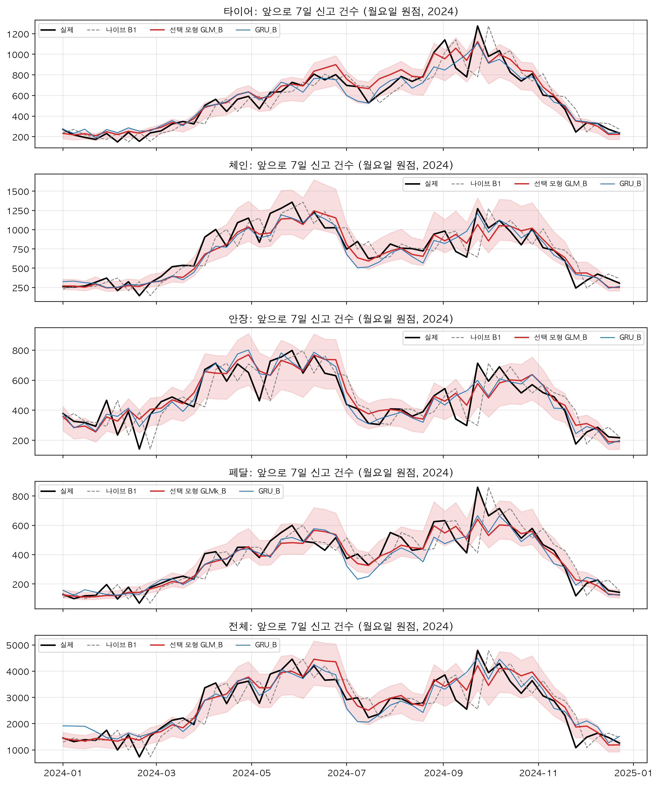
더 자세히: 검증 구간의 모든 모형
| 모형 | 타이어 | 체인 | 안장 | 페달 | 전체 |
|---|---|---|---|---|---|
| B2 최근 4주 평균 | −15.1 | −15.9 | −7.5 | −15.2 | −14.3 |
| B3 작년 같은 주 | −42.9 | −28.2 | −81.2 | −6.6 | −26.3 |
| B4 작년 같은 주 × 증감 | −23.9 | −25.8 | −22.1 | −31.5 | −33.0 |
| S1_B | 20.4 | 23.2 | 32.2 | 24.3 | 31.6 |
| GLM_B | 40.8 | 31.6 | 38.4 | 32.3 | 36.1 |
| GLMk_B | 39.9 | 29.8 | 37.0 | 34.4 | 32.0 |
| GLMx_B | 40.1 | 30.5 | 39.0 | 31.9 | 35.6 |
| GLM0_B(처음 대여량 모형) | 35.4 | 10.6 | 27.9 | 6.1 | 25.0 |
| LGB_B | 9.0 | 23.8 | −6.0 | 24.3 | 18.9 |
| LGBx_B | 7.4 | 24.4 | −14.0 | 26.8 | 17.8 |
| GRU_B | 44.0 | 30.0 | 40.7 | 22.5 | 37.1 |
| GRUn_B | 40.7 | 33.1 | 41.3 | 32.0 | 38.8 |
| GRUx_B | 46.1 | 28.8 | 22.7 | 27.6 | 40.7 |
| GLM_C | 34.4 | 29.6 | 34.9 | 29.9 | 30.3 |
| GLM_D | 22.8 | 16.7 | 17.9 | 17.2 | 19.0 |
| LGB_D | 3.0 | 4.0 | −31.6 | 13.6 | −2.2 |
| GLM_A | 40.7 | 36.6 | 42.0 | 43.0 | 38.6 |
| ARIMAX_A | 31.9 | 37.2 | 36.4 | 34.5 | 39.1 |
| GLM_oracle | 54.8 | 55.0 | 60.1 | 55.2 | 59.3 |
6.7오차를 대여량 쪽과 신고율 쪽으로 나눠 보기
검증에서 얻은 개선이 어디서 나왔는지를 단계를 하나씩 더해 가며 봤다. 표의 값은 MAE(건/주)이고 괄호 안은 기준값 대비 개선율이다.
| 단계 | 더한 것 | 타이어 | 체인 | 안장 | 페달 | 전체 |
|---|---|---|---|---|---|---|
| 기준값(B1) | 없음 | 100.9 | 139.0 | 95.4 | 75.6 | 471.4 |
| 구조 나이브(S1_B) | 대여량 예측(K2) | 80.3 (20.4%) | 106.7 (23.2%) | 64.7 (32.2%) | 57.3 (24.3%) | 322.3 (31.6%) |
| 음이항(GLM_B) | 신고율에 요일·계절·날씨 효과 | 59.8 (40.8%) | 95.1 (31.6%) | 58.8 (38.4%) | 51.2 (32.3%) | 301.2 (36.1%) |
| 음이항, 날씨 실측(GLM_A) | 예보가 완벽하다면 | 59.8 (40.7%) | 88.1 (36.6%) | 55.3 (42.0%) | 43.1 (43.0%) | 289.3 (38.6%) |
| 참고선(GLM_oracle) | 대여량까지 안다면 | 45.6 (54.8%) | 62.6 (55.0%) | 38.0 (60.1%) | 33.9 (55.2%) | 191.8 (59.3%) |
| 비교: 처음 대여량 모형(GLM0_B) | 음이항에 E0의 대여량 예측 | 65.2 (35.4%) | 124.2 (10.6%) | 68.8 (27.9%) | 71.0 (6.1%) | 353.5 (25.0%) |
- 기준값에서 구조 나이브로 가면 20.4 ~ 32.2% 나아진다. 더한 것은 대여량 예측 하나다. output/tables/fc_valid.csv
- 구조 나이브에서 음이항으로 가면 타이어는 20.4%p, 나머지는 4.5 ~ 8.3%p 더 나아진다. 신고율에 요일·계절·한파·비 효과를 얹은 몫이다. 계절 진폭이 큰 타이어에서만 크다. output/tables/fc_valid.csv
- 예보가 완벽하다면 페달 10.6%p, 체인 5.0%p, 안장 3.6%p, 전체 2.5%p가 더 붙고 타이어는 그대로다. 예보 오차의 비용이다. output/tables/fc_valid.csv
- 대여량까지 정확히 안다면 12.2 ~ 20.7%p가 더 붙는다. 남은 오차에서 가장 큰 덩어리가 대여량 예측 오차다. output/tables/fc_valid.csv
- 대여량 모형을 처음 것(E0)에서 K2로 바꾼 것만으로 5.4 ~ 26.3%p가 달라졌다. 처음 대여량 모형을 쓴 음이항(GLM0_B)은 체인·안장·페달·전체에서 구조 나이브(K2 사용)보다도 낮다. output/tables/fc_valid.csv
위 다섯 줄의 %p는 표 6-13의 개선율끼리 뺀 값이다. 반올림 오차를 줄이려고 같은 표의 MAE 열로 계산했다.
정리하면 검증에서 얻은 개선의 큰 몫은 대여량 예측에서 왔고, 신고율 모형이 그 위에 얹은 것은 타이어를 빼면 한 자릿수 %p였다. 탐색 단계에서 본 "주 단위 신고 건수는 대부분 이용량이 정한다"와 같은 결론이다(→ 4절). 이 구조는 테스트 결과를 읽을 때 다시 쓰인다. 신고율 모형이 얹는 몫이 작다면, 그 모형이 수준을 조금만 잘못 잡아도 얹은 몫보다 큰 손해가 난다.
6.8테스트 결과(2025-01-01 ~ 2026-06-24, 한 번)
테스트는 다음 순서로 한 번 실행했다(notebooks/1C_test.ipynb, 2026-10-07).
- 대상별 선택과 예측 구간 보정값을
output/models/selection.csv에 적어 커밋했다(커밋 b8f2f00, 2026-10-07 11:47). 테스트 결과 표는 그 뒤에 만들어 같은 날 16:40에 커밋했다(b8050c5). 선택이 테스트보다 먼저 고정됐다는 기록이 깃에 남아 있다. - 사람이 고정된 선택을 보고 테스트를 열어도 된다고 승인했다.
- 선택 모형과 함께 보고할 모형(기준값, 구조 나이브, 음이항 두 판, GRU)을 학습 + 검증 구간으로 다시 맞췄다. 원점 단위 모형은 2024-12-25까지의 원점 1,221개, 하루 단위 모형은 2024-12-31까지의 날짜를 쓴다. 변수와 설정은 검증에서 정한 그대로 두었다. notebooks/1C_test.ipynb
- 테스트 원점 540개를 기상청 예보(B) 조건으로 예측하고 채점했다. 반기별, 월요일 원점만, 예측 구간 적중, 통계 검정, 날씨 시나리오별 비교를 같은 실행에서 냈다.
- 결과를 보고 모형이나 선택을 바꾸지 않았다.
notebooks/1C_test.ipynb
| 모형 | 타이어 | 체인 | 안장 | 페달 | 전체 |
|---|---|---|---|---|---|
| 선택한 음이항(주 결과) | 2.8 | −17.2 | 27.6 | −19.4 | −2.4 |
| 구조 나이브(S1_B) | 25.7 | 15.0 | 23.8 | 26.6 | 22.4 |
| GRU(GRU_B) | 7.9 | 18.9 | 33.0 | 1.9 | 6.1 |
| 음이항, 실측으로 학습(GLM_B) | 2.8 | −17.2 | 27.6 | −8.9 | −2.4 |
| 음이항, 예보로 학습(GLMk_B) | 3.8 | −26.1 | 25.3 | −19.4 | −4.8 |
| B2 최근 4주 평균 | −5.6 | 2.2 | 0.5 | 0.7 | 0.3 |
| B3 작년 같은 주 | −83.2 | −256.1 | −115.7 | −168.3 | −124.8 |
| B4 작년 같은 주 × 증감 | −11.9 | −31.4 | −15.3 | −11.9 | −18.1 |
선택한 음이항은 안장에서만 기준값보다 뚜렷이 나았다(27.6%). 타이어는 2.8%로 차이가 거의 없었고, 전체 −2.4%, 체인 −17.2%, 페달 −19.4%로 기준값보다 오차가 컸다. 구조 나이브는 다섯 대상 모두에서 15.0 ~ 26.6% 나았다. 검증에서는 음이항과 GRU에 밀렸던 모형이다. GRU는 체인(18.9%)과 안장(33.0%)에서 가장 좋았지만 타이어 7.9%, 페달 1.9%, 전체 6.1%에 그쳤다. 사람이 규칙 대신 음이항으로 통일한 결정이 결론을 바꾸지는 않았다. 규칙대로 타이어·안장·전체에 GRU를 썼어도 타이어와 전체는 구조 나이브(25.7%, 22.4%)에 한참 못 미쳤다. output/tables/fc_test.csv
| 모형 | 지표 | 타이어 | 체인 | 안장 | 페달 | 전체 |
|---|---|---|---|---|---|---|
| 실제 | 주간 평균(건) | 396.7 | 395.4 | 311.0 | 221.4 | 1,840.9 |
| 기준값(B1) | MAE(건) | 65.2 | 71.4 | 58.6 | 42.1 | 300.2 |
| 기준값(B1) | MAE% | 16.4 | 18.1 | 18.8 | 19.0 | 16.3 |
| 선택한 음이항 | MAE(건) | 63.3 | 83.7 | 42.4 | 50.3 | 307.4 |
| 선택한 음이항 | MAE% | 16.0 | 21.2 | 13.6 | 22.7 | 16.7 |
| 선택한 음이항 | 치우침(%) | +12.8 | +18.5 | +6.6 | +20.4 | +15.0 |
| 구조 나이브 | MAE(건) | 48.4 | 60.7 | 44.6 | 30.9 | 232.8 |
| 구조 나이브 | MAE% | 12.2 | 15.4 | 14.3 | 13.9 | 12.6 |
| 구조 나이브 | 치우침(%) | +5.6 | +7.2 | +7.2 | +7.1 | +6.8 |
| GRU | MAE% | 15.1 | 14.6 | 12.6 | 18.6 | 15.3 |
| GRU | 치우침(%) | +10.6 | +7.8 | +1.5 | +14.0 | +11.9 |
세 모형 모두 많게 예측했다. 선택한 음이항이 6.6 ~ 20.4%, 구조 나이브가 5.6 ~ 7.2%, GRU가 1.5 ~ 14.0%다. output/tables/fc_test.csv 검증에서 선택 모형의 치우침은 −5.2 ~ +5.0%, 구조 나이브는 −1.1 ~ +2.1%였다. output/tables/fc_valid.csv 구조 나이브의 주간 오차는 타이어 48.4건(실제 주간 평균의 12.2%), 체인 60.7건(15.4%), 안장 44.6건(14.3%), 페달 30.9건(13.9%), 전체 232.8건(12.6%)이다. output/tables/fc_test.csv
| 모형 | 구간 | 타이어 | 체인 | 안장 | 페달 | 전체 |
|---|---|---|---|---|---|---|
| 선택한 음이항 | 검증 | 40.8 | 31.6 | 38.4 | 34.4 | 36.1 |
| 선택한 음이항 | 테스트 | 2.8 | −17.2 | 27.6 | −19.4 | −2.4 |
| 선택한 음이항 | 검증 − 테스트 | 38.0 | 48.8 | 10.8 | 53.8 | 38.5 |
| 구조 나이브 | 검증 − 테스트 | −5.4 | 8.2 | 8.3 | −2.3 | 9.2 |
| GRU | 검증 − 테스트 | 36.1 | 11.0 | 7.7 | 20.6 | 30.9 |
검증에서 테스트로 가며 선택 모형의 개선율은 10.8 ~ 53.8%p 내려갔다. output/tables/fc_test_vs_valid.csv 구조 나이브는 −5.4 ~ +9.2%p 범위에서 움직였고 타이어와 페달은 테스트에서 오히려 높았다. output/tables/fc_valid.csv output/tables/fc_test.csv 선택 모형의 하락에는 검증 구간을 여러 번 보며 고른 데서 오는 낙관과 레짐이 달라진 효과가 섞여 있다. 둘을 정확히 나눈 수치는 없고, 가늠할 단서만 있다. 추정할 계수가 없는 구조 나이브는 거의 내려가지 않았다. 수준 변수의 계수만 1로 고정한 판(표 6-20)은 같은 비교에서 5.1 ~ 23.5%p 내려갔고, 계수를 추정한 원래 판은 10.8 ~ 48.8%p 내려갔다. 내려간 폭의 큰 부분이 수준 변수에서 온 것으로 보인다. 타이어는 계수를 고정한 뒤에도 23.5%p가 남는다(6.9). output/tables/fc_posthoc_lvl1.csv
| 반기 | 원점 수 | 모형 | 타이어 | 체인 | 안장 | 페달 | 전체 |
|---|---|---|---|---|---|---|---|
| 2025 상반기 | 181 | 선택한 음이항 | 2.5 | −5.5 | 37.2 | 19.1 | 10.5 |
| 2025 상반기 | 181 | 구조 나이브 | 27.7 | 17.4 | 35.9 | 39.0 | 26.3 |
| 2025 상반기 | 181 | GRU | 8.8 | 34.5 | 46.5 | 21.0 | 15.8 |
| 2025 하반기 | 184 | 선택한 음이항 | 3.7 | −4.1 | 25.8 | −17.1 | 2.3 |
| 2025 하반기 | 184 | 구조 나이브 | 17.1 | 21.7 | 17.3 | 22.0 | 24.5 |
| 2025 하반기 | 184 | GRU | 9.5 | 18.9 | 25.2 | 7.8 | 21.8 |
| 2026 상반기 | 175 | 선택한 음이항 | 1.6 | −50.4 | 17.3 | −85.7 | −23.9 |
| 2026 상반기 | 175 | 구조 나이브 | 38.7 | 2.7 | 16.9 | 17.1 | 15.1 |
| 2026 상반기 | 175 | GRU | 4.2 | −0.5 | 26.1 | −41.3 | −26.9 |
선택 모형은 뒤로 갈수록 나빠졌다. 페달은 2025 상반기 19.1%에서 하반기 −17.1%, 2026 상반기 −85.7%가 됐고, 체인은 −5.5%, −4.1%, −50.4%였다. 과대예측도 2025 상반기 6.1 ~ 16.6%에서 2026 상반기 9.6 ~ 26.2%로 커졌다. 구조 나이브는 15칸 모두 양수였다(2.7 ~ 39.0%). GRU는 2026 상반기에 체인 −0.5%, 페달 −41.3%, 전체 −26.9%로 내려갔다. 2026 상반기의 큰 음수에는 분모도 한몫한다. 기준값의 오차율이 2025 하반기 17.9 ~ 22.2%에서 2026 상반기 14.7 ~ 16.2%로 작아졌다. 수준이 평평한 구간에서는 지난주 값이 잘 맞기 때문으로 보인다. output/tables/fc_test_half.csv
월요일 원점 77개만 채점해도 결론이 같다. 선택한 음이항이 1.8 / −16.4 / 25.1 / −17.0 / −2.6%, 구조 나이브가 28.7 / 14.9 / 23.3 / 31.1 / 22.3%, GRU가 11.7 / 13.8 / 33.6 / 4.7 / 2.1%다(타이어 / 체인 / 안장 / 페달 / 전체). output/tables/fc_test_monday.csv notebooks/1C_test.ipynb
| 대상 | DM 통계량 | p값 | 판정 | 구간 안 | 구간 아래로 벗어남 | 구간 위로 벗어남 |
|---|---|---|---|---|---|---|
| 타이어 | −0.27 | 0.790 | 차이가 유의하지 않다 | 77.0% | 14.1% | 8.9% |
| 체인 | +1.70 | 0.090 | 유의하지 않다(방향은 기준값이 더 정확) | 58.7% | 39.8% | 1.5% |
| 안장 | −3.97 | 0.0001 | 선택 모형이 유의하게 정확하다 | 84.6% | 7.2% | 8.1% |
| 페달 | +1.62 | 0.106 | 유의하지 않다(방향은 기준값이 더 정확) | 51.5% | 47.8% | 0.7% |
| 전체 | +0.25 | 0.805 | 차이가 유의하지 않다 | 79.3% | 18.9% | 1.9% |
통계 검정은 DM 검정(Diebold-Mariano 검정. 두 예측의 오차 크기가 같은지를 본다)으로 했다. 통계량이 음수면 선택 모형이 더 정확하다. 7일 합계가 이웃 원점끼리 겹치므로 겹침 길이 7을 반영하고 소표본 보정을 했다. 선택 모형이 유의하게 정확한 것은 안장뿐이다. 타이어와 전체는 차이가 없다고 봐야 한다. 체인과 페달은 기준값 쪽이 정확한 방향이지만 5% 수준에서는 유의하지 않다. output/tables/fc_test_dm.csv
검증 구간의 상대오차로 보정한 80% 예측 구간에 테스트 실제값이 든 비율은 타이어 77.0%, 안장 84.6%, 전체 79.3%로 목표에 가까웠다. 체인은 58.7%, 페달은 51.5%였다. 벗어난 쪽은 거의 다 아래쪽이다. 많게 예측했기 때문에 실제가 구간 아래로 떨어졌다. 구간의 폭은 문제가 없었고 구간의 중심이 틀렸다. 보정하기 전에 모형이 스스로 낸 구간은 테스트에서도 26.1 ~ 42.0%만 덮었다. output/tables/fc_test_coverage.csv output/tables/fc_test.csv
다른 단순 예측 가운데 최근 4주 평균(B2)은 −5.6 ~ +2.2%로 기준값과 사실상 같았다. 작년 같은 주(B3)는 −83.2 ~ −256.1%로 무너졌다. 수준이 내려간 구간에서 작년 값을 가져오면 체인은 56.2% 많게 예측한다. output/tables/fc_test.csv
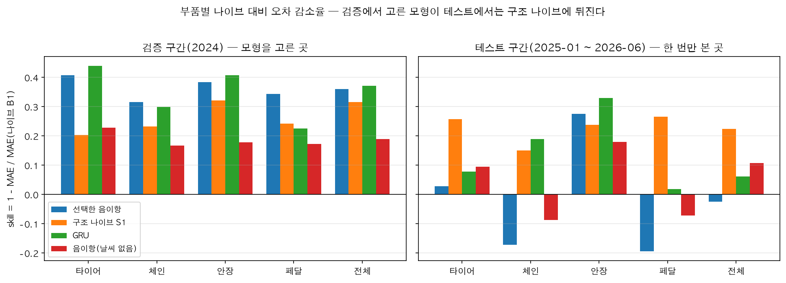
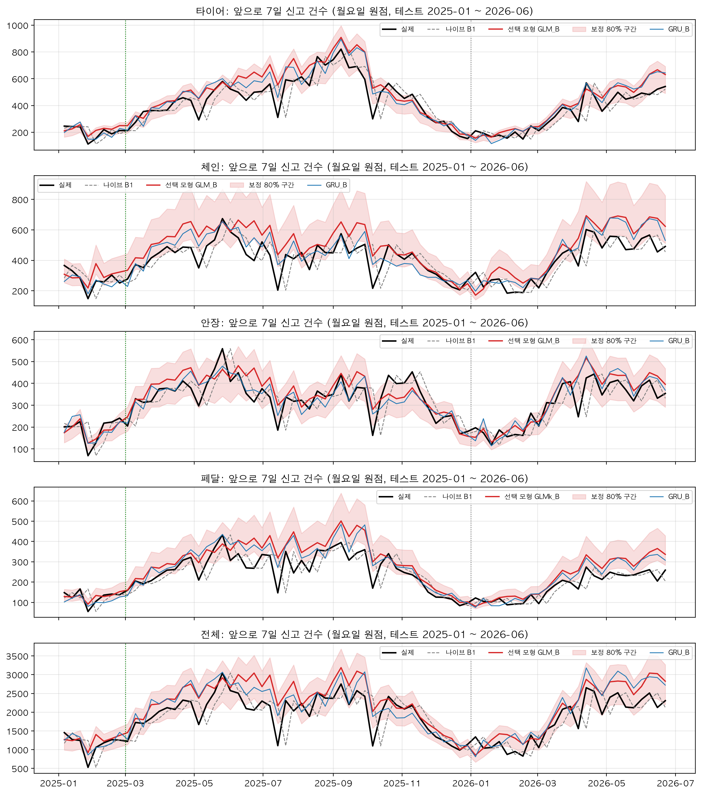
6.9테스트에서 나빠진 이유: 사후 진단
아래 내용은 테스트 결과를 본 뒤에 원인을 찾은 것이다. 모형은 고치지 않았고 선택(selection.csv)도 그대로 두었다.
첫째, 테스트 구간은 신고율 수준이 다른 구간이었다. 테스트용 모형을 맞춘 범위(2021-04-08 ~ 2024-12-31)의 신고율은 대여 만 건당 36.6건이다. docs/notes/03_모델설계_메모.md 테스트 구간은 25.9건이다((97,838 + 45,666) ÷ (37,373,092 + 17,978,991) × 10,000). output/tables/yearly_summary.csv 0.71배, 29% 낮다. 연도별로는 2023년 33.7건, 2024년 32.2건, 2025년 26.2건, 2026년 상반기 25.4건이다. 검증 구간(2024)은 학습 구간에서 이어지는 완만한 내림 위에 있었고, 테스트 구간만 한 단계 아래다. 이 하락은 체크포인트 A에서 이미 알고 있었고, 원인은 그때 확인되지 않았다(→ 8절).
둘째, 음이항의 수준 변수 계수가 1보다 작았다.
| 대상 | 계수(2023년까지 학습, 검증 때) | 계수(2024년까지 학습, 테스트 때) | 테스트 치우침 | 테스트 개선율 |
|---|---|---|---|---|
| 타이어 | 0.693 | 0.815 | +12.8% | 2.8% |
| 체인 | 0.789 | 0.739 | +18.5% | −17.2% |
| 안장 | 0.914 | 0.969 | +6.6% | 27.6% |
| 페달 | 0.621 | 0.602 | +17.9% | −8.9% |
| 전체 | 0.689 | 0.746 | +15.0% | −2.4% |
이 계수는 "최근 4주 신고율이 1% 달라질 때 예측이 몇 % 달라지는가"다. 1이면 최근 수준이 내린 만큼 예측도 내린다. 1보다 작으면 덜 내린다. 전체의 계수 0.746으로 어림하면, 수준이 0.71배가 됐을 때 예측은 0.71의 0.746제곱인 0.77배까지만 내려가고, 실제보다 약 9% 많게 남는다(0.71^(0.746 − 1) ≈ 1.09). 계수가 1에 가까운 안장(0.969)만 테스트에서 살아남았고, 가장 작은 페달(0.602)과 그다음인 체인(0.739)이 가장 나빴다. 진단과 결과의 순서가 맞는다. 이 과대예측은 수준이 낮은 동안 계속 남는다. 반기가 지나도 치우침이 줄지 않은 이유다(표 6-17 아래). output/tables/fc_posthoc_lvl1.csv
부품마다 수준이 내린 폭도 달랐다. 연간 값으로 체인은 2024년 대여 만 건당 8.6건에서 2025년 5.5건으로 가장 크게 내렸다(0.64배). 안장은 5.6 → 4.4건, 페달은 4.5 → 3.4건, 타이어는 6.7 → 5.9건이다. output/tables/regime_part_by_year.csv 체인의 과대예측이 계수에 비해 큰 것은 이 때문으로 보인다(→ 8절).
셋째, 구조 나이브는 계수가 1로 고정된 모형과 같다. 최근 4주 신고율에 대여량 예측을 곱하기만 하므로 수준이 내리면 예측도 같은 비율로 내린다. 요일이나 날씨 효과를 쓰지 않아 검증에서는 음이항에 밀렸지만, 수준이 바뀐 구간에서는 이 성질이 다른 모든 것보다 크게 작용했다.
넷째, 대여량 예측도 같은 방향으로 틀렸다. K2의 치우침이 검증 −0.32%에서 테스트 +6.53%가 됐다(6.4). 구조 나이브의 과대예측 5.6 ~ 7.2%는 이 값과 거의 같다. 구조 나이브에 남은 치우침은 대부분 대여량 쪽에서 온 것으로 보인다. 음이항의 과대예측(전체 15.0%)은 수준 변수 쪽 약 9%와 대여량 쪽 6.5%가 겹친 크기와 비슷하다(1.09 × 1.065 ≈ 1.16. 크기를 가늠하는 어림 계산이다). output/tables/fc_expo_test.csv output/tables/fc_test.csv
다섯째, 검증 구간은 이 약점을 드러낼 수 없었다. 2024년은 학습 구간과 같은 레짐이었다(직전 해 33.7건, 2024년 32.2건). 수준이 크게 바뀌지 않으면 계수가 0.75여도 문제가 생기지 않는다. 수준 적응이 불완전한 모형이 검증에서 걸러지지 않았고, 오히려 요일·날씨 효과를 잘 맞춘 덕에 1등이 됐다. 보고서 초안은 이것을 "틀린 것은 모형이 아니라 모형을 고르는 절차(검증 구간의 설계)였다"고 적었다. docs/report_stage1.md
진단이 맞는지는 실제로 계수를 1로 고정한 모형을 만들어 확인했다(보고서 부록 B, py/forecast/fc_posthoc.py). 선택 모형과 같은 식에서 log(최근 4주 신고율)을 설명변수에서 빼고, 노출과 함께 계수가 1로 고정되는 자리(offset)에 넣는다. 그러면 모형은 "구조 나이브 × 요일·계절·날씨에 따른 배수"가 된다. 대여량 예측은 K2 그대로다.
| 구간 | 모형 | 타이어 | 체인 | 안장 | 페달 | 전체 |
|---|---|---|---|---|---|---|
| 검증 개선율 | 원래 판(계수 추정) | 40.8 | 31.6 | 38.4 | 32.3 | 36.1 |
| 검증 개선율 | 계수 1 고정 | 42.2 | 29.6 | 37.4 | 35.0 | 33.1 |
| 테스트 개선율 | 원래 판(계수 추정) | 2.8 | −17.2 | 27.6 | −8.9 | −2.4 |
| 테스트 개선율 | 계수 1 고정 | 18.8 | 16.5 | 30.7 | 26.5 | 27.9 |
| 테스트 개선율 | 구조 나이브 | 25.7 | 15.0 | 23.8 | 26.6 | 22.4 |
| 테스트 치우침 | 원래 판(계수 추정) | +12.8 | +18.5 | +6.6 | +17.9 | +15.0 |
| 테스트 치우침 | 계수 1 고정 | +7.6 | +7.0 | +4.9 | +7.6 | +5.9 |
| 테스트 치우침 | 구조 나이브 | +5.6 | +7.2 | +7.2 | +7.1 | +6.8 |
- 검증에서는 두 판의 차이가 −3.0 ~ +2.6%p다. 검증 구간으로는 이 둘을 가를 수 없었다는 뜻이다. output/tables/fc_posthoc_lvl1.csv
- 테스트에서는 계수를 고정한 판이 다섯 대상 모두에서 기준값을 이겼다(16.5 ~ 30.7%). 과대예측은 4.9 ~ 7.6%로 내려와 구조 나이브와 같은 수준이 됐다. 진단이 맞았다. output/tables/fc_posthoc_lvl1.csv
- 고정한 판은 구조 나이브보다 체인 1.5%p, 전체 5.5%p, 안장 6.9%p 높고 페달은 같다(−0.1%p). 타이어만 7.0%p 낮다. output/tables/fc_posthoc_lvl1.csv 타이어는 계절 진폭이 커서 4주 전 수준에 이미 계절이 담겨 있는데 계절 곡선을 또 얹어 지나치게 반응한 것으로 분석 메모는 보았다. 사후 분석이라 더 고치지 않았다. docs/notes/03_모델설계_메모.md
- 남은 4.9 ~ 7.6%의 과대예측은 K2의 테스트 치우침(+6.53%)과 비슷한 크기다. 다음에 고칠 곳은 대여량 모형의 수준 적응이다. output/tables/fc_posthoc_lvl1.csv output/tables/fc_expo_test.csv
- 반기별로 보면 고정한 판도 2026 상반기에는 체인 −0.2%, 페달 1.9%로 기준값과 같은 수준까지 밀렸다(타이어 22.8%, 안장 23.4%, 전체 18.5%). 원래 판의 같은 반기(체인 −50.4%, 페달 −74.6%)보다는 훨씬 낫다. output/tables/fc_posthoc_lvl1_half.csv
6.10날씨 정보의 가치
같은 음이항 모형을 날씨 조건만 바꿔 채점하면 날씨 정보가 얼마나 보태는지를 볼 수 있다. A − B가 예보 오차의 비용, B − D가 날씨 정보의 가치다.
| 구간 | 시나리오 | 타이어 | 체인 | 안장 | 페달 | 전체 |
|---|---|---|---|---|---|---|
| 검증 | A 실측(상한) | 40.7 | 36.6 | 42.0 | 43.0 | 38.6 |
| 검증 | B 기상청 예보 | 40.8 | 31.6 | 38.4 | 32.3 | 36.1 |
| 검증 | C 오차 가정 | 34.4 | 29.6 | 34.9 | 29.9 | 30.3 |
| 검증 | D 날씨 없음 | 22.8 | 16.7 | 17.9 | 17.2 | 19.0 |
| 테스트 | A 실측(상한) | 24.3 | 2.0 | 42.4 | 3.9 | 18.9 |
| 테스트 | B 기상청 예보 | 2.8 | −17.2 | 27.6 | −8.9 | −2.4 |
| 테스트 | C 오차 가정 | 17.2 | 2.9 | 35.3 | 3.9 | 14.2 |
| 테스트 | D 날씨 없음 | 9.6 | −8.6 | 18.0 | −7.1 | 10.7 |
검증에서는 읽기가 쉽다. 날씨 정보의 가치(B − D)는 14.9 ~ 20.5%p였다. 예보 오차의 비용(A − B)은 타이어 0, 전체 2.5%p, 안장 3.6%p, 체인 5.0%p, 페달 10.6%p였다. 기상청 예보는 타이어와 전체에서 완벽한 예보와 거의 같은 값을 냈고, 남은 차이는 체인과 페달에 있었다. output/tables/fc_scenarios_valid.csv 분석 메모는 이 차이가 주로 비 예보를 놓치는 데서 온다고 보았다. docs/notes/03_모델설계_메모.md
테스트에서는 완벽한 예보(A)를 넣어도 체인 2.0%, 페달 3.9%로 기준값과 같은 수준이다. 날씨 예보의 오차는 테스트에서 나빠진 원인의 일부일 뿐이고 주된 원인이 아니다. 주된 원인은 6.9의 수준 적응이다. output/tables/fc_scenarios_test.csv
6.11이 결과가 운영 방식을 정한 과정
테스트 다음 날(2026-10-08) 사람이 운영 주간 예측을 "최근 4주 신고율 × 대여량 예측"으로 정했다. 1C의 구조 나이브(S1_B)와 같은 방식이다. 검증에서 고른 신고율 음이항은 운영에 쓰지 않는다. 근거는 이 절의 테스트 결과다. 구조 나이브는 다섯 대상 모두에서 기준값을 이겼고(15.0 ~ 26.6%), 반기를 나눠도 한 번도 기준값 아래로 내려가지 않았다. output/tables/fc_test.csv output/tables/fc_test_half.csv 운영 코드로 2024년 검증 구간을 다시 예측하면 전체 오차율이 11.83%로 1C 노트북의 값과 같고, 기준값은 17.30%다. output/tables/fc_ops_replay_valid.csv 대여량 모형은 K2(예보판)와 날씨 없는 음이항(달력판) 두 개를 함께 운영하고, 80% 예측 구간은 1C가 테스트 전에 고정해 둔 구조 나이브의 보정값을 쓴다. output/models/interval_calibration.csv 자세한 내용은 7절에 있다.
런북은 기준값을 충분히 넘지 못하는 경우를 미리 적어 두었다. "주 단위 수준 예측에서는 기준값이 강하다"를 결론으로 적고 단계 2로 일찍 넘어간다는 갈림길이다. 이 갈림길은 검증 결과를 두고 쓴 것인데, 런북의 결과 메모는 테스트 결과가 여기에 해당한다고 적었다. 프로젝트 규칙도 같은 방향이다. 결과를 좋게 보이려고 기준을 바꾸지 않고, 기준값을 못 이기면 그대로 보고한다. 테스트 당일 체크포인트 F에서 단계 2 착수를 정했다(6.9의 결정 상자). docs/runbook/04_단계1C_예측모형_비교와_보고서.md
계수를 1로 고정한 음이항(부록 B)은 운영에 올리지 않았다. 테스트를 본 뒤에 만든 모형이라 성능을 주장할 수 없다. 다음 판의 후보로 남겼다. 다음 판에서 할 일은 두 가지로 적혀 있다. 검증 구간을 레짐 변화가 들어 있는 기간으로 다시 설계하는 것(예: 2020 ~ 2021, 2023-09), 대여량 모형의 수준 적응을 고치는 것이다(→ 15절). docs/report_stage1.md
설명할 수 있어야 할 것
- 검증에서 31.6 ~ 40.8% 나았던 모형이 테스트에서 안장 말고는 기준값을 넘지 못했다. 수준 변수의 계수가 1보다 작다는 것이 무슨 뜻이고, 그것이 어떻게 과대예측으로 이어지는지 숫자를 넣어 설명해 보라.
- 계수를 1로 고정한 모형은 테스트에서 다섯 대상 모두 기준값을 이겼다. 그런데도 이 숫자를 최종 성능이라고 부르지 않은 이유는 무엇인가. 그렇다면 운영에 쓰는 구조 나이브의 성능은 무엇으로 확인하고 있는가.
- 미래 정보가 예측에 새지 않게 한 장치를 세 가지 들고, 각각이 없었다면 어떤 숫자가 얼마나 부풀었을지 말해 보라.
- 대여량 모형을 "실측 날씨로 학습"한 것과 "예보로 학습"한 것의 주간 오차율이 12.8%와 9.2%로 갈린 이유는 무엇인가.
근거 파일: docs/notes/03_모델설계_메모.md, docs/report_stage1.md, docs/runbook/04_단계1C_예측모형_비교와_보고서.md, docs/reference/06_LSTM-노트북-검토.md, docs/decision_log.md, notebooks/1C_forecast.ipynb, notebooks/1C_test.ipynb, py/fc.py, py/fc_models.py, py/fc_dl.py, py/fc_expo.py, py/forecast/kma_forecast.py, py/forecast/weather_forecast.py, py/forecast/fc_posthoc.py, output/tables/fc_*.csv(fc_ops_ 제외), output/tables/eda_weekly_decomp.csv, output/tables/eda_weekly_naive_vs_rate.csv, output/tables/yearly_summary.csv, output/tables/regime_part_by_year.csv, output/models/selection.csv, output/models/interval_calibration.csv, output/models/kma_calibration.json, output/models/expo_ops.json, output/models/test_predictions.parquet, output/figures/fc_valid_selected.png, output/figures/fc_skill_bars.png, output/figures/fc_test_selected.png
7운영 주간 예측: 최근 4주 신고율 × 대여량 예측
운영에서는 매주 월요일 아침에 서울 전체의 이번 주(월 ~ 일) 유형별 고장신고 건수를 "날짜별 (최근 4주 신고율 × 그날 대여량 예측)을 7일 더한 값"으로 낸다. 1C(예측 모형 비교, → 6절)에서 검증 성적으로 고른 신고율 음이항 모형은 테스트 구간에서 안장(27.6%)과 타이어(2.8%)를 빼면 기준값(지난주 건수가 이번 주에도 그대로 나온다고 보는 단순 예측)을 이기지 못했고, 이 구조는 네 부품과 전체 모두에서 기준값보다 오차가 15.0 ~ 26.6% 작았다. output/tables/fc_test.csv output/tables/fc_test_vs_valid.csv
전체 신고의 오차는 2024년 검증 구간에서 예보판(기상청 예보를 넣은 대여량 모형) 11.8%, 달력판(날씨 없이 요일·공휴일·계절만 넣은 대여량 모형) 13.7%, 기준값 17.3%였고, 테스트 구간이 끝난 뒤 13주(2026-07-06 ~ 09-28 주)에서는 12.3%, 15.4%, 21.0%였다. output/tables/fc_ops_replay_valid.csv output/tables/fc_ops_compare_live.csv
예측 구간은 2024년 검증 구간 상대오차의 10%·90% 분위수로 만들었고(전체 −20.8% ~ +20.2%), 그 13주 가운데 전체는 12주, 타이어는 13주, 체인·안장·페달은 10주씩 구간 안에 들었다. output/models/fc_ops_spec.json output/tables/rb_5_coverage_live.csv 대여량 모형은 2021-04-08 ~ 2024-12-31로 맞춘 계수를 고정해 쓰며, 최근 12주 오차가 기준값보다 커지면 재학습을 검토하고 그렇지 않아도 해마다 1월에 다시 맞춘다. docs/pipeline.md
7.1예측하는 값과 계산식
예측하는 값은 서울 전체에서 한 주(월요일 ~ 일요일) 동안 접수되는 고장신고 건수다. 고장신고는 이용자가 따릉이 앱으로 넣은 신고이고, 확인된 고장과는 다르다. 예측은 일곱 칸으로 낸다. 전체, 타이어, 체인, 안장, 페달, 단말기, 기타다. 전체는 신고 건수(같은 자전거와 같은 등록 시각이면 한 건)로 세고, 유형별은 유형이 붙은 행 수로 센다. 한 신고에 유형이 여러 개 붙을 수 있어서 유형별 숫자를 모두 더하면 전체보다 많다(7.8). py/jobs/actuals.py
계산식은 하나다.
이번 주 유형별 신고 예측 = (월요일 신고율 × 월요일 대여량 예측) + … + (일요일 신고율 × 일요일 대여량 예측)
- 신고율은 대여 1건당 신고 건수다(다른 절에서는 읽기 쉽게 대여 1,000건당으로 적는다). 유형마다 그날의 34 ~ 7일 전 28일 동안의 신고 합계를 같은 28일의 대여 합계로 나눈다. 모형을 맞추지 않고 실적을 그대로 쓴다. 문서와 화면에서는 줄여서 "최근 4주 신고율"이라고 부른다(7.3). py/fc_ops.py
- 대여량 예측은 그날 서울 전체 대여 건수의 예측값이고, 음이항 회귀 모형이 낸다(7.4). 일곱 칸이 모두 같은 대여량 예측을 쓴다.
분석 문서와 결과 표에서는 이 계산 방식을 구조 나이브(S1)라고 부른다. 지난주 값을 그대로 쓰는 기준값(표에서는 '나이브' 또는 B1)에 "신고 = 대여량 × 신고율"이라는 구조만 더했다는 뜻이다. 이 절에서는 구조 방식이라고 줄여 쓴다.
대여량 예측은 두 가지를 같이 낸다.
- 예보판: 최근 대여 수준, 요일·공휴일, 계절에 기상청 예보(기온·비·눈)를 더한 모형이다. 운영 표에서는 S1_kma, 1C의 표에서는 S1_B로 나온다. 화면에 보여 주는 값이다.
- 달력판: 날씨 없이 최근 대여 수준, 요일·공휴일, 계절만 넣은 모형이다. 표에서는 S1_cal이다. 앞으로 7일 가운데 하루라도 예보가 비면 화면 값을 이것으로 대신하고, 예보가 있는 주에도 같이 기록해 둔다(7.9).
한 주의 계산은 예약 작업 세 개가 순서대로 한다. docs/pipeline.md
- 매일 05:20, 날씨 예보 수집(
py/jobs/collect_wx.py): 05시에 발표된 단기예보와 전날 18시에 발표된 중기예보를 발표 시각과 함께 쌓는다. - 매일 07:00, 매일 작업(
py/jobs/daily.py)이 실적 갱신(py/jobs/actuals.py)을 부른다. 어제까지의 날짜별 대여 건수와 신고 건수를 다시 계산한다. 지난주 7일이 다 차면 지난 예측을 실제와 맞춰 기록하고(forecast_track), 재학습 조건과 예보판·달력판 비교도 여기서 확인한다. - 월요일 07:30, 주간 예측(
py/jobs/weekly.py): 신고율과 최근 대여 수준을 계산하고, 이번 주 7일의 달력 변수를 만들고, 예보를 날짜별 날씨로 정리한 뒤, 두 대여량 모형으로 날짜별 대여량을 예측한다. 유형별로 곱해 더하고 예측 구간을 붙여forecast_weekly에 저장한 다음 화면용 파일로 내보낸다.
원점(예측을 내는 기준일)은 그 주 월요일이다. 작업을 다른 요일에 다시 돌려도 원점은 그 주 월요일이고, 월요일 전날까지의 실적과 월요일 07시까지 나온 예보만 쓴다. py/jobs/weekly.py py/fc_ops.py
| 유형 | 예보판 예측(건) | 예측 구간(건) | 달력판 예측(건) |
|---|---|---|---|
| 전체 | 3,151 | 2,497 ~ 3,789 | 2,800 |
| 타이어 | 910 | 707 ~ 1,107 | 809 |
| 체인 | 599 | 447 ~ 770 | 532 |
| 안장 | 443 | 318 ~ 528 | 394 |
| 페달 | 325 | 251 ~ 411 | 289 |
| 단말기 | 181 | 144 ~ 224 | 161 |
| 기타 | 1,213 | 914 ~ 1,499 | 1,078 |
이 주에는 예보판이 달력판보다 전체 기준으로 351건, 12.5% 많다(3,151 − 2,800 = 351, 351 ÷ 2,800 = 0.125). serving/forecast_weekly.parquet 두 모형의 달력 계수는 거의 같으므로(표 7-3) 이 차이는 대부분 날씨 항에서 온다. serving/의 파일은 화면용 스냅샷이라 발행할 때마다 바뀐다. 보고서에 쓸 숫자는 output/tables/의 표에서 가져온다.
7.21C에서 고른 모형을 운영에 쓰지 않는 이유
1C에서 고른 신고율 음이항 모형은 한 번만 연 테스트 구간(2025-01 ~ 2026-06)에서 안장을 빼면 기준값을 뚜렷하게 넘지 못했고(타이어는 2.8%로 비슷했고 체인·페달·전체는 기준값보다 나빴다), 구조 방식은 다섯 칸 모두에서 이겼다. 잣대는 6절과 같은 개선율(1 − 모형의 평균 절대 오차 ÷ 기준값의 평균 절대 오차. 표 파일의 skill 열을 %로 적은 것. 20%면 기준값보다 오차가 20% 작고, 음수면 기준값보다 나쁘다)이다.
- 고른 음이항 모형(신고율을 요일·계절·한파·비·최근 4주 신고율로 설명한다): 검증(2024) 31.6 ~ 40.8%, 테스트는 타이어 2.8%, 체인 −17.2%, 안장 27.6%, 페달 −19.4%, 전체 −2.4%. output/tables/fc_test_vs_valid.csv
- 구조 방식(예보판, 표의 S1_B): 검증 20.4 ~ 32.2%, 테스트는 타이어 25.7%, 체인 15.0%, 안장 23.8%, 페달 26.6%, 전체 22.4%(표의 MAE 열로 계산: 1 − MAE ÷ 기준값 MAE). output/tables/fc_valid.csv output/tables/fc_test.csv
검증에서는 음이항 모형이 모든 칸에서 앞섰고, 테스트에서는 안장을 뺀 네 칸에서 구조 방식이 앞섰다. 운영은 월요일 원점만 쓰는데, 월요일 원점만 따로 채점한 표에서도 구조 방식의 테스트 개선율은 14.9 ~ 31.1%로 결론이 같다. output/tables/fc_test_monday.csv
검증과 테스트의 개선율을 나란히 그린 막대 그림은 6절에 있다(output/figures/fc_skill_bars.png).
이유는 6절에서 자세히 다루고, 여기에는 운영 방식을 고르는 데 쓴 부분만 적는다. 테스트 구간은 2025-03부터 신고율이 약 20% 낮아진 다른 레짐(신고율 수준이 계단처럼 바뀐 구간)이었다. data/raw/external/events.csv 음이항 모형은 최근 4주 신고율의 로그를 설명변수로 넣었고, 그 계수는 0.60 ~ 0.97로 1보다 작았다. 계수가 1이면 최근 수준이 내려간 만큼 예측도 내려간다. 1보다 작으면 덜 내려가서 과대예측이 남는다. 테스트에서 음이항 모형의 치우침((예측 − 실제)의 평균 ÷ 실제의 평균. +면 과대예측)은 +6.6 ~ +18.5%였고 구조 방식은 +5.6 ~ +7.2%였다. output/tables/fc_posthoc_lvl1.csv 구조 방식은 최근 신고율을 그대로 곱하므로 계수를 1로 고정한 것과 같다. 2024년 검증 구간은 학습 구간과 같은 레짐이어서 이 차이가 드러나지 않았다.
3A(운영 파이프라인, → 12절)의 첫 구현은 이 구조를 잘못 줄여 옮겼다. 2026-10-08까지 운영 코드는 "최근 4주 신고율 × 지난주 대여량"을 썼다. 대여량을 앞으로 예측하지 않고 지난주 값을 그대로 넣은 형태다. 이 형태는 1C에서 평가한 적이 없었다. 2024년 검증 구간에서 다시 재 보니 전체 오차가 18.7%로 기준값 17.3%보다 컸다(표 7-6). output/tables/fc_ops_replay_valid.csv 기준값은 지난주 신고 건수이고, 그 안에는 지난주의 신고율이 이미 들어 있다. 그전 방식은 그보다 오래된 1 ~ 5주 전 신고율에 지난주 대여량을 곱하므로, 가장 최근의 신고율을 버리고 얻는 것이 없다. 구조 방식의 이득은 대여량을 앞으로 예측하는 데서 나온다. docs/notes/03_모델설계_메모.md
구조 방식은 테스트 결과를 본 뒤에 골랐다. 그래서 테스트 개선율(15.0 ~ 26.6%)은 이 방식을 고른 근거이고, 고른 뒤에 따로 확인한 성적으로 쓸 수는 없다. 고른 뒤의 확인은 테스트 구간 뒤 13주(7.10)와 2026-10-12 주부터 쌓이는 운영 기록이 맡는다.
테스트 뒤에 만든 "계수 1 고정" 음이항(→ 6절)은 운영에 쓰지 않는다. 테스트 결과를 본 뒤에 고친 모형이라 그 성적을 최종 성능으로 말할 수 없고, 문서에서도 참고치로만 다루기로 정했다(2026-10-07). docs/decision_log.md
7.3신고율: 34 ~ 7일 전 28일을 쓰는 이유
신고율은 유형마다 "그날의 34일 전부터 7일 전까지 28일 동안의 신고 합계 ÷ 같은 28일의 대여 합계"다. 코드로는 28일 이동합을 7일 뒤로 민 값이다(rolling(28).sum().shift(7)). py/fc_ops.py
창은 날짜마다 하루씩 움직인다. 2026-10-05(월) 원점을 예로 들면, 월요일(10-05)의 신고율은 09-01 ~ 09-28의 실적이고 일요일(10-11)의 신고율은 09-07 ~ 10-04의 실적이다. 일곱 날짜의 창을 합치면 5주 전부터 원점 전날까지에 걸친다.
7일을 띄우는 이유는 월요일 아침에 쓸 수 있는 실적이 전날(일요일)까지뿐이기 때문이다. 이번 주 일요일의 신고율까지 같은 정의로 계산하려면 "그날의 7일 전"에서 끊어야 한다. 덜 띄우면 주 뒤쪽 날짜의 창에 아직 오지 않은 날이 들어간다. 이 정의는 1C에서 날짜별 모형을 학습할 때 쓴 것과 같다. 학습과 예측이 같은 정의를 써야 미래 정보가 섞이지 않고, 운영 코드가 1C의 숫자를 그대로 내는지도 확인할 수 있다(7.6). 이 규칙은 자동 시험으로 지킨다. 마지막 7일의 신고를 바꿔도 신고율이 달라지지 않는지를 본다(tests/test_ops.py).
대가도 있다. 주 앞쪽 날짜는 쓸 수 있는 가장 최근 일주일을 창에 넣지 못한다. 신고율이 계절에 따라 빠르게 움직이는 타이어에서 이 지연이 오차로 나타난다(7.11).
창 길이 4주는 2026-10-05에 정했다. 테스트 구간이 신고율 수준이 다른 레짐이고 원인을 모르므로, 예측이 최근 수준을 스스로 따라가게 한다는 취지였다. 그때 창 길이를 서로 비교하지는 않았고, 비교는 나중에 강건성 점검에서 했다(7.11). docs/decision_log.md docs/notes/07_강건성_메모.md
신고율과 대여 수준을 계산할 때 지키는 규칙은 다음과 같다. py/fc_ops.py py/jobs/actuals.py
- 운영 중단일(no_service)과 신고 누락 기간(report_anomaly, 2023-09-07 ~ 10-10)은 신고와 대여를 모두 창에서 뺀다. 남은 날이 14일 이상이면 그 날들만으로 계산한다.
- 2021-04-08 이전은 신고율 수준이 다른 레짐이라 계산에서 뺀다.
- 대여량 모형에 넣는 최근 대여 수준(expo_lvl)도 같은 34 ~ 7일 전 28일의 하루 평균 대여다. 이쪽은 운영 중단일만 뺀다. 신고 누락 기간에는 신고만 덜 잡혔고 대여는 정상이었다.
- 운영에서 대여 건수는 대여이력을 날짜별로 세되, 같은 대여소에 1분 이하로 반납한 대여는 뺀다. 2026년 파일과 실시간 API에만 있는 기록이라, 넣으면 분모가 과거와 달라진다.
7.4대여량 모형: 식, 변수, 학습 기간
대여량 예측은 하루 대여 건수를 맞히는 음이항 회귀 두 개가 낸다. 음이항 회귀는 건수 자료에 쓰는 회귀이고, 분산이 평균보다 큰 자료를 받아 준다. 로그 연결을 쓰므로 계수에 지수를 씌우면 "몇 배"로 읽는다. 식은 다음과 같다. output/models/expo_ops.json
달력판: rentals ~ np.log(expo_lvl) + C(dow) + is_holiday + after_off + bridge + fs1 + fc1 + fs2 + fc2
예보판: 달력판의 식에 tavg + I(tavg**2) + cold_wave + tavg_anom + I(tavg_anom**2) + tavg_anom:fs1 + tavg_anom:fc1 + rain_any + np.log1p(rain_mm) + snow_any를 더한다.
| 구분 | 식에 쓰인 이름 | 뜻 | 달력판 | 예보판 |
|---|---|---|---|---|
| 최근 수준 | np.log(expo_lvl) | 그날의 34 ~ 7일 전 28일 하루 평균 대여 건수의 로그 | 넣음 | 넣음 |
| 요일 | C(dow) | 월요일을 기준으로 한 요일 더미 6개 | 넣음 | 넣음 |
| 공휴일 | is_holiday | 공휴일이면 1 | 넣음 | 넣음 |
| 쉬는 날 다음 첫 근무일 | after_off | 전날이 주말이나 공휴일이고 그날은 근무일 | 넣음 | 넣음 |
| 징검다리 근무일 | bridge | 앞날과 뒷날이 모두 쉬는 날인 근무일 | 넣음 | 넣음 |
| 계절 | fs1, fc1, fs2, fc2 | 1년 주기와 반년 주기의 사인·코사인 | 넣음 | 넣음 |
| 기온 | tavg, I(tavg**2) | 예보 평균기온과 그 제곱 | 없음 | 넣음 |
| 평년 대비 기온 | tavg_anom과 제곱, 계절과의 곱 | 예보 평균기온 − 평년기온. 평년기온은 2016 ~ 2023년 평균기온에 계절 곡선을 맞춘 값 | 없음 | 넣음 |
| 한파 | cold_wave | 예보 평균기온이 −4℃ 이하 | 없음 | 넣음 |
| 비 | rain_any, np.log1p(rain_mm) | 비 여부(중기예보 구간은 강수확률 0 ~ 1)와 강수량의 log(1 + mm) | 없음 | 넣음 |
| 눈 | snow_any | 적설 1cm 이상 | 없음 | 넣음 |
| 항목 | 달력판 | 예보판 |
|---|---|---|
| 토요일(월요일 대비) | 0.872 | 0.867 |
| 일요일(월요일 대비) | 0.794 | 0.787 |
| 공휴일 | 0.722 | 0.745 |
| 쉬는 날 다음 첫 근무일 | 1.015 | 1.013 |
| 징검다리 근무일 | 1.115 | 1.079 |
| 최근 대여 수준 탄력성 | 0.663 | 0.647 |
| 비 예보 있음 | 없음 | 0.783 |
| 비 10mm 예보 | 없음 | 0.624 |
| 눈 예보 | 없음 | 0.824 |
최근 대여 수준의 계수(탄력성)는 예보판 0.647, 달력판 0.663이다. 최근 수준이 10% 높으면 예측은 약 6% 높아진다(1.10의 0.647제곱 = 1.064). 1보다 작으므로 대여 수준이 계단처럼 내려가면 예측은 그만큼 내려가지 않는다. 7.2에서 본 신고율 음이항의 약점과 같은 종류이고, 대여량 쪽에는 지금도 남아 있다(7.13). output/models/expo_ops.json
학습은 다음과 같이 했다. py/forecast/fc_ops_fit.py output/models/fc_ops_spec.json
- 학습 기간은 2021-04-08 ~ 2024-12-31이고 운영 중단일은 뺀다. 1C 테스트 때 다시 맞춘 범위와 같다. 테스트 구간(2025-01 이후)은 학습에 쓰지 않았다.
- 달력판은 하루가 한 행이다.
- 예보판은 원점마다 앞으로 7일의 행을 만든다. 날씨 칸에는 그 원점에서 볼 수 있던 기상청 과거 예보가 들어간다. 같은 날짜가 "며칠 뒤 예보인가"만 달리해 최대 7번 들어간다.
예보판은 실측 날씨 대신 과거 예보로 학습했다. 운영에서 넣을 수 있는 날씨가 예보뿐이기 때문이다. 실측으로 학습한 모형은 날씨 값을 그대로 믿는다. 그 모형에 예보를 넣으면 예보가 빗나간 날 대여량 예측도 크게 빗나간다. 2024년 검증 구간에 기상청 예보를 넣었을 때 주간 대여량 오차는 실측으로 학습한 모형이 12.9%, 예보로 학습한 모형이 8.5%였다. output/tables/fc_expo_candidates.csv 무엇으로 학습하느냐가 어떤 모형을 쓰느냐보다 차이가 컸다(→ 6절).
대여량 예측 자체의 주간 오차율은 2024년 검증 구간에서 예보판 8.5%, 달력판 12.5%, 지난주 대여량 그대로 15.2%였다. output/tables/fc_expo_valid.csv 테스트 구간에서는 예보판 10.3%(치우침 +6.5%), 달력판 11.8%(치우침 +3.7%), 지난주 대여량 그대로 14.3%였다. output/tables/fc_expo_test.csv 검증 값은 2023년까지, 테스트 값은 2024년까지로 맞춘 모형(운영 계수와 같다)의 것이다. 표 파일에서 예보판은 K2, 달력판은 "D: 음이항, 날씨 없음"으로 나온다(→ 6절).
테스트 구간에서 예보판은 오차율이 가장 작지만 대여량을 6.5% 많게 예측했다. 2025년에 대여량 수준이 내려갔는데(문서에는 15% 감소로 적혀 있다) 탄력성이 1보다 작아 덜 따라간 결과로 보인다. docs/notes/03_모델설계_메모.md
두 모형의 식, 계수, 과산포 모수는 output/models/expo_ops.json에 저장한다. 운영 코드는 통계 패키지를 부르지 않고 저장된 계수로 직접 계산한다. 저장할 때 직접 계산한 값이 통계 패키지의 예측과 같은지 확인한다. 운영 작업은 모형을 다시 맞추지 않으므로, 같은 입력에는 늘 같은 예측이 나온다.
더 자세히: 두 대여량 모형의 계수 전체
| 항 | 예보판 | 달력판 |
|---|---|---|
| Intercept | 2.1167 | 3.9298 |
| C(dow)[T.2] 화 | 0.0358 | 0.0246 |
| C(dow)[T.3] 수 | 0.0657 | 0.0653 |
| C(dow)[T.4] 목 | 0.0513 | 0.0529 |
| C(dow)[T.5] 금 | 0.0740 | 0.0690 |
| C(dow)[T.6] 토 | −0.1424 | −0.1373 |
| C(dow)[T.7] 일 | −0.2400 | −0.2301 |
| np.log(expo_lvl) | 0.6466 | 0.6632 |
| is_holiday | −0.2948 | −0.3255 |
| after_off | 0.0134 | 0.0145 |
| bridge | 0.0764 | 0.1085 |
| fs1 | 0.6900 | 0.0421 |
| fc1 | 1.8315 | −0.1777 |
| fs2 | 0.0615 | 0.0016 |
| fc2 | 0.2032 | −0.2073 |
| tavg | 0.1928 | 없음 |
| I(tavg ** 2) | −0.0015 | 없음 |
| cold_wave | 0.0448 | 없음 |
| tavg_anom | −0.1268 | 없음 |
| I(tavg_anom ** 2) | −0.0013 | 없음 |
| tavg_anom:fs1 | −0.0054 | 없음 |
| tavg_anom:fc1 | −0.0151 | 없음 |
| rain_any | −0.2443 | 없음 |
| np.log1p(rain_mm) | −0.0945 | 없음 |
| snow_any | −0.1939 | 없음 |
| 과산포 모수(alpha) | 0.0908 | 0.1226 |
예측에는 평균만 쓰므로 과산포 모수는 예측값에 들어가지 않는다. 평년기온 곡선의 계수 다섯 개는 output/models/fc_ops_spec.json의 normal_coef에 따로 저장돼 있다.
7.5기상청 예보를 모형 입력으로 바꾸는 규칙과 보정값
예보판 모형은 날짜별 평균·최고·최저기온, 강수량, 비 여부, 적설을 입력으로 받는다. 기상청 예보는 이 모양으로 오지 않으므로 날짜별로 요약하고 보정한다. 학습에 쓴 과거 예보에 한 것과 같은 처리를 운영의 실시간 예보에도 한다. 모형이 보정을 거친 예보로 학습됐으므로, 입력도 같은 방식으로 만들어야 계수가 맞는다. 보정값은 output/models/kma_calibration.json에 고정해 두었다.
쓰는 예보는 두 가지다. 단기예보는 서울 관측소 근처 격자(60, 127)의 시간별 기온·강수량·강수형태·적설이다. 중기예보는 서울의 일 최고·최저기온과 수도권의 강수확률·날씨 문구다. 날짜마다 어느 예보를 쓸지는 다음 규칙으로 정한다. py/fc_ops.py
- 원점(월요일) 07시까지 나온 발표만 쓴다. 3일보다 오래된 발표는 쓰지 않는다.
- 단기예보가 그날을 18시간 이상 덮으면 그 가운데 가장 최근 발표를 쓴다. 그렇지 않으면 가장 최근 중기예보를 쓴다.
- 7일 가운데 하루라도 채우지 못하면 예보판을 내지 않는다. 그 주는 달력판을 화면에 보여 주고 경보를 보낸다.
단기예보는 시간별 값을 날짜별로 요약한다. 평균기온은 시간별 기온의 평균이고, 최고·최저기온은 일 최고·최저 예보가 있으면 그 값을 쓴다. 강수량과 적설은 합계다. 비 여부는 강수형태가 하루 중 한 번이라도 있으면 1이다. 3일째부터는 3시간 간격으로 오므로 값 하나를 3시간으로 센다. 강수량과 적설은 "강수없음", "1mm 미만", "30.0~50.0mm" 같은 글자로 온다. 없음은 0, "미만"은 기준의 절반, 범위는 가운데 값으로 바꾼다.
중기예보는 모형이 받는 모양과 더 다르다. 강수량이 없고 강수확률만 있으며 평균기온도 없다. 그래서 세 가지를 바꿔 넣는다. output/models/kma_calibration.json
- 평균기온 = −0.30 + 0.99 × (최고기온 + 최저기온) ÷ 2. 과거 중기예보와 관측 평균기온 사이에서 구한 직선이다.
- 강수량은 "강수확률이 그 구간일 때 실제로 온 비의 평균"을 넣는다. 강수확률 15% 이하 0.15mm, 15 ~ 35% 1.12mm, 35 ~ 55% 5.18mm, 55 ~ 75% 10.31mm, 75% 초과 20.90mm다.
- 비 여부 칸에는 강수확률(0 ~ 1)을 그대로 넣고, 눈은 날씨 문구에 "눈"이 있으면 1로 둔다.
마지막으로 기온의 계통 오차를 뺀다. 격자 예보와 관측소 값 사이에는 며칠 뒤 예보냐에 따라 일정한 차이가 있다. 며칠 뒤별 평균 차이(예보 − 관측)를 구해 예보에서 뺀다(표 7-5). 평균기온은 당일의 차이(+0.50℃)만 크고 나머지는 ±0.05℃ 안이다. 학습에 쓴 전날 23시 발표의 당일 값은 05시부터 시작해 새벽 시간이 빠지므로(py/forecast/kma_forecast.py의 주석), 하루 평균이 높게 나오는 것으로 보인다.
| 기온 | 당일 | 1일 뒤 | 2일 뒤 | 3일 뒤 | 4일 뒤 | 5일 뒤 | 6일 뒤 |
|---|---|---|---|---|---|---|---|
| 평균 | 0.50 | −0.04 | 0.00 | 0.05 | 0.01 | −0.01 | −0.05 |
| 최고 | 1.57 | −0.53 | −0.60 | −0.21 | −0.25 | −0.30 | −0.33 |
| 최저 | −1.00 | 0.27 | 0.39 | 0.41 | 0.37 | 0.38 | 0.32 |
보정값은 2021-04-08 ~ 2023-12-31의 과거 예보와 관측으로 구했다. 검증과 테스트 구간은 쓰지 않았다. py/forecast/kma_forecast.py
예보 자체가 얼마나 맞는지는 6절에서 다룬다. 한 가지만 적으면, 2024년에 6일 뒤 예보는 실제로 비가 온 날의 67.1%를 비 없음(강수확률 50% 미만) 쪽으로 냈다. output/tables/fc_forecast_error_kma.csv 주 뒤쪽 날짜의 비는 예보판도 대부분 반영하지 못한다는 뜻이다.
7.62024년 검증 구간 재현 결과
운영 코드로 2024년 검증 구간을 다시 예측하면 전체 신고의 오차는 예보판 11.8%, 달력판 13.7%, 기준값 17.3%다. 이 절에서 오차는 원점별 |예측 − 실제|의 평균을 원점별 실제의 평균으로 나눈 값이다(6절의 오차율과 같고 표 파일에서는 MAE%).
이 표는 계수를 고정하는 스크립트(py/forecast/fc_ops_fit.py)가 만든다. 순서는 다음과 같다.
- 운영 코드의 달력·평년기온·신고율·대여 수준 계산이 분석용 일별 마스터의 값과 같은지 확인한다.
- 두 대여량 모형을 2023-12-31까지로 맞춘다.
- 2024년 검증 원점 360개(2024-01-01 ~ 12-25의 매일)를 운영 함수(
fc_ops.forecast)로 예측한다. - 같은 원점의 오차를 1C의 결과와 맞춰 본다. 예보판은 1C 노트북이 저장한 S1_B의 오차와, 달력판은 1C의 계산 경로로 따로 낸 오차와 비교한다. 다섯 칸 가운데 하나라도 소수 둘째 자리에서 다르면 계수를 저장하지 않고 멈춘다.
- 통과하면 두 모형을 2024-12-31까지로 다시 맞춰 계수를 저장한다.
이렇게 한 이유는 운영 코드가 분석 코드와 따로 쓰였기 때문이다. 첫 구현이 1C와 다른 것을 계산하고 있었던 일(7.2)을 되풀이하지 않으려면, 운영 코드가 1C의 숫자를 그대로 내는지를 저장 전에 확인해야 한다. 표에서 운영 코드의 예보판 줄(S1_kma)은 1C의 S1_B 줄과, 달력판 줄(S1_cal)은 1C 방식 달력판 줄과 소수 둘째 자리까지 같다. output/tables/fc_ops_replay_valid.csv
| 방식(표의 줄 이름) | 전체 | 타이어 | 체인 | 안장 | 페달 | 단말기 | 기타 |
|---|---|---|---|---|---|---|---|
| 기준값(B1 나이브) | 17.3 | 17.8 | 19.1 | 20.2 | 19.8 | 18.7 | 18.0 |
| 그전 운영 방식(S1 지난주 대여량) | 18.7 | 22.0 | 21.4 | 20.5 | 22.9 | 재지 않음 | 재지 않음 |
| 달력판(S1_cal) | 13.7 | 14.0 | 15.6 | 16.7 | 15.5 | 14.7 | 16.6 |
| 예보판(S1_kma) | 11.8 | 14.1 | 14.7 | 13.7 | 15.0 | 12.3 | 14.6 |
- 예보판은 일곱 칸 모두에서 기준값보다 오차가 3.4 ~ 6.5%p 작다(기타 17.99 − 14.60 = 3.39, 안장 20.22 − 13.72 = 6.50). 전체는 기준값의 오차보다 31.6% 작다(1 − 11.83 ÷ 17.30 = 0.316). output/tables/fc_ops_replay_valid.csv
- 달력판도 일곱 칸 모두 기준값보다 낫다. 예보판과 견주면 타이어만 달력판이 0.2%p 낮고(13.96 대 14.14), 나머지 여섯 칸은 예보판이 0.5 ~ 3.0%p 낮다(페달 15.45 − 15.00 = 0.45, 안장 16.71 − 13.72 = 2.99).
- 그전 운영 방식은 다섯 칸 모두 기준값보다 나쁘다. 전체는 1.4%p(18.66 − 17.30 = 1.36), 타이어는 4.2%p(21.97 − 17.76 = 4.21) 크다. output/tables/fc_ops_replay_valid.csv
7.7예측 구간: 만드는 법, 폭, 실제 적중 기록
예측 구간은 2024년 검증 구간에서 이 방법이 실제로 빗나간 폭을 그대로 가져와 만든다. 2023년까지로 맞춘 모형으로 검증 원점 360개를 예측하고, 원점마다 상대오차 (실제 − 예측) ÷ 예측을 구한다. 유형별로 그 값의 10% 분위수와 90% 분위수를 잡는다. 이번 주 예측에 (1 + 10% 분위수)와 (1 + 90% 분위수)를 곱한 범위가 예측 구간이다. 2024년에는 정의상 실제값의 80%가 이 범위 안에 들었다. py/forecast/fc_ops_fit.py
모형이 계산해 주는 구간을 쓰지 않은 이유는 둘이다. 구조 방식은 실적 평균과 대여량 예측을 곱한 값이라 확률 모형이 주는 구간이 없다. 그리고 1C에서 음이항 모형(표의 GLM_B)이 낸 80% 구간은 2024년 검증에서 실제값의 33.1 ~ 43.9%만 담았다. output/tables/fc_valid.csv 대여량 예측의 오차와 계수의 불확실성이 그 구간에 들어 있지 않았다. 과거에 실제로 빗나간 폭을 쓰면 이런 오차가 모두 포함된다.
구간 값은 1C가 테스트를 열기 전(2026-10-07)에 구조 방식용으로 고정해 둔 값과 같다. 운영으로 옮기면서 새로 고르지 않았다. output/models/interval_calibration.csv 2026-10-08 전의 운영 코드는 운영에서 계산한 과거 52주 오차로 구간을 잡았다. docs/notes/03_모델설계_메모.md
| 유형 | 예보판 아래 | 예보판 위 | 예보판 폭 | 달력판 아래 | 달력판 위 | 달력판 폭 |
|---|---|---|---|---|---|---|
| 전체 | −20.8 | +20.2 | 41.0 | −22.0 | +20.8 | 42.8 |
| 타이어 | −22.4 | +21.7 | 44.0 | −21.3 | +27.7 | 49.0 |
| 체인 | −25.2 | +28.7 | 54.0 | −24.5 | +29.7 | 54.2 |
| 안장 | −28.3 | +19.2 | 47.5 | −32.0 | +23.2 | 55.2 |
| 페달 | −22.7 | +26.4 | 49.1 | −20.6 | +30.9 | 51.5 |
| 단말기 | −20.5 | +23.4 | 43.9 | −23.2 | +27.8 | 51.0 |
| 기타 | −24.7 | +23.6 | 48.2 | −25.4 | +28.3 | 53.7 |
- 예보판에서는 전체가 가장 좁고(41.0%p) 체인이 가장 넓다(54.0%p).
- 구간은 대칭이 아니다. 안장은 아래쪽이 넓고(−28.3%, +19.2%) 체인과 페달은 위쪽이 넓다. 2024년에 안장은 예측보다 적게 나온 쪽으로, 체인과 페달은 많게 나온 쪽으로 더 멀리 벗어났다는 뜻이다.
- 달력판의 구간은 일곱 칸 모두 예보판보다 넓다. 예보가 비어 달력판으로 낸 주에는 달력판의 구간을 붙인다.
구간이 지금도 맞는지는 매주 기록한다. 2026-10-10부터 forecast_track에 그 주에 보여 준 구간(lo80, hi80)과 실제가 그 안에 들었는지(in80)를 쌓는다. 테스트 구간 뒤 13주(2026-07-06 ~ 09-28 주)의 기록은 표 7-8과 같다.
| 유형 | 실제가 나온 주 | 구간 안 | 구간보다 많음 | 구간보다 적음 |
|---|---|---|---|---|
| 전체 | 13 | 12 | 0 | 1 |
| 타이어 | 13 | 13 | 0 | 0 |
| 체인 | 13 | 10 | 0 | 3 |
| 안장 | 13 | 10 | 1 | 2 |
| 페달 | 13 | 10 | 0 | 3 |
| 단말기 | 13 | 11 | 0 | 2 |
| 기타 | 13 | 12 | 0 | 1 |
- 일곱 칸 × 13주 = 91칸 가운데 78칸이 구간 안이었다(78 ÷ 91 = 85.7%). 80%를 겨냥한 구간으로 무리가 없는 수준이지만, 13주로는 80%와 다르다고도 같다고도 말하기 어렵다. serving/forecast_track.parquet
- 벗어난 13칸 가운데 12칸이 실제가 구간보다 적은 쪽이다. 같은 기간 예보판의 치우침이 다섯 칸을 합쳐 +5.9%였던 것과 방향이 같다. output/tables/rb_17_train_start_live.csv
- 벗어난 칸은 몰려 있다. 2026-07-06 주 한 주에 전체, 체인, 안장, 페달, 기타 다섯 칸이 함께 아래로 벗어났다. 일곱 칸이 같은 대여량 예측을 쓰므로, 대여량 예측이 빗나가면 여러 칸이 같은 방향으로 함께 빗나간다. 이 주의 원인이 대여량이었는지는 따로 확인하지 않았다. serving/forecast_track.parquet
이 구간의 한계는 셋이다. 폭이 주마다 같은 비율이라 연휴나 장마가 낀 주에도 넓어지지 않는다. 2024년 한 해의 오차로 맞춘 값이라 수준이 바뀌는 시기에는 한쪽으로 벗어나기 쉽다. 같은 방식으로 보정한 음이항 모형의 구간은 테스트 구간에서 실제값의 51.5 ~ 84.6%를 담았고, 과대예측이 컸던 체인(58.7%)과 페달(51.5%)에서 낮았다. output/tables/fc_test_coverage.csv 마지막으로, 구조 방식의 구간을 테스트 구간에서 잰 표는 저장돼 있지 않다. 이 구간에 대한 학습 밖 근거는 지금으로서는 위 13주뿐이다.
7.8유형을 일곱 칸으로 늘린 경위
처음 운영 예측은 다섯 칸(전체와 타이어·체인·안장·페달)이었다. 1C의 예측 과제가 이 다섯 칸이었다. 2026-10-10에 단말기와 기타를 따로 더해 일곱 칸이 됐다. 고장신고 자료의 유형은 여섯 가지(타이어, 체인, 안장, 페달, 단말기, 기타)이고, 일곱 칸은 이 여섯과 전체다. py/jobs/actuals.py
늘린 이유는 화면에서 빠진 신고가 많았기 때문이다. 결정 로그에는 기타가 신고의 34%, 단말기가 5%로 적혀 있다(어느 기간의 값인지는 적혀 있지 않다). docs/decision_log.md 2026-10-05 주 예측값으로 보면 여섯 유형 합계 가운데 기타가 33.0%, 단말기가 4.9%다(1,213 ÷ 3,671, 181 ÷ 3,671). serving/forecast_weekly.parquet 네 부품만 보여 주면 이만큼이 화면 어디에도 없고, 네 부품을 더해도 전체가 되지 않는 이유도 설명되지 않았다.
방법은 다른 칸과 같다. 대여량 예측은 유형과 무관하므로 새로 맞춘 모형은 없고, 유형별 신고율과 예측 구간만 더 계산한다. 2024년 검증 구간의 오차는 단말기 12.3%(기준값 18.7%), 기타 14.6%(기준값 18.0%)다(표 7-6). 기존 다섯 칸의 숫자, 고정 계수, 예측 구간은 그대로다. output/tables/fc_ops_replay_valid.csv
코드에서는 두 유형을 따로 묶어 둔다(fc_ops.EXTRA). 1C 숫자를 재현하는 확인(7.6)은 1C에 있던 다섯 칸으로만 하고, 운영 예측·실적·화면은 일곱 칸(fc_ops.ALL)을 쓴다. 두 유형은 테스트 구간에서 채점한 적이 없다. 근거는 2024년 검증과 테스트 뒤 13주의 구간 적중(표 7-8)뿐이다.
전체와 유형 합계가 다른 이유는 세는 단위가 다르기 때문이다. 전체는 신고 건수이고 유형별은 행 수라서, 한 신고에 유형이 둘 붙으면 유형 쪽에서는 두 번 센다. 2026-10-05 주 예측값으로는 여섯 유형의 합이 전체보다 16.5% 많다(3,671 ÷ 3,151 = 1.165). serving/forecast_weekly.parquet 화면에는 이 설명을 한 문장으로 적어 두었다(→ 13절).
7.9예보판을 보여 주고 달력판을 같이 기록하는 이유
화면에는 예보판을 보여 준다. 2024년 검증에서 전체 오차가 더 작았고(11.8% 대 13.7%), 1C 테스트 구간에서 기준값을 이긴 것으로 확인된 쪽도 예보판이다. 달력판으로 만든 신고 예측은 1C 테스트에서 채점한 적이 없다.
달력판을 같이 두는 이유는 둘이다.
- 예보가 끊길 때의 대안이다. 예보 수집이 실패하거나 발표가 빠지면 예보판을 낼 수 없다. 모형을 하나만 두면 그 주는 예측이 없다.
- 어느 쪽이 운영에서 더 나은지 아직 모른다. 대여량 모형만 보면 테스트 구간에서 예보판이 오차는 작았지만(10.3% 대 11.8%) 과대예측은 더 컸다(+6.5% 대 +3.7%). output/tables/fc_expo_test.csv 테스트 뒤 13주의 신고 예측에서도 오차는 예보판이 작고(12.3% 대 15.4%) 치우침은 달력판이 작았다(다섯 칸을 합쳐 +5.9% 대 −1.8%). output/tables/rb_17_train_start_live.csv
그래서 두 값을 매주 같이 기록하고(forecast_weekly의 pred_kma와 pred_cal), 운영 주로 12주를 비교하기로 했다. py/jobs/actuals.py
- 비교 대상은 2026-10-12 주부터의 운영 주 가운데 실제가 나온 최근 12주다.
- 잣대는 전체 신고의 오차다.
- 교체 검토 조건은 12주가 차고 달력판의 오차가 예보판보다 3%p 넘게 낮은 것이다. 조건이 맞으면 경보가 간다. 교체 여부는 사람이 정한다.
- 첫 판정은 12번째 주(2026-12-28 주)가 끝나는 2027-01 초다. docs/STATUS.md
12주, 3%p, 전체 기준은 AI가 제안한 값을 사람이 그대로 받아들였다(2026-10-08). 3%p를 고른 근거 숫자는 문서에 적혀 있지 않다. 참고로 두 판의 전체 오차 차이는 2024년 검증에서 1.8%p(13.65 − 11.83 = 1.82), 테스트 뒤 13주에서 3.1%p(15.41 − 12.28 = 3.13)였고 둘 다 예보판이 낮았다. docs/decision_log.md
7.10테스트 구간 뒤 13주의 비교 결과
테스트 구간(2026-06까지)이 끝난 뒤 실제 결과가 나온 13주(2026-07-06 ~ 09-28 주)에서 전체 오차는 예보판 12.3%, 달력판 15.4%, 기준값 21.0%였다. output/tables/fc_ops_compare_live.csv
이 13주는 모형이 본 적 없는 기간이다. 대여량 모형은 2024-12-31까지로 학습했고 예측 구간은 2024년으로 맞췄다. 다만 운영 중에 실시간으로 낸 예측은 아니다. 지금 방식의 운영 예측은 2026-10-08에 시작했고, 그 앞의 주는 각 주 월요일 전날까지의 실적만 써서 나중에 다시 계산했다. 예보판의 날씨는 그 월요일에 볼 수 있던 기상청 과거 예보 파일의 값이다. py/jobs/actuals.py
| 방식(표의 줄 이름) | 전체 | 타이어 | 체인 | 안장 | 페달 |
|---|---|---|---|---|---|
| 기준값(나이브) | 21.0 | 16.7 | 28.5 | 25.9 | 28.3 |
| 그전 운영 방식(× 지난주 대여량) | 20.5 | 18.2 | 28.8 | 23.1 | 24.3 |
| 달력판 | 15.4 | 11.9 | 23.6 | 17.7 | 20.3 |
| 예보판 | 12.3 | 6.7 | 20.1 | 18.5 | 17.0 |
- 예보판은 다섯 칸 모두 기준값보다 오차가 작다. 전체는 기준값보다 8.7%p 낮고(20.99 − 12.28 = 8.71), 비율로는 41.5% 작다(1 − 12.28 ÷ 20.99 = 0.415). output/tables/fc_ops_compare_live.csv
- 달력판도 다섯 칸 모두 기준값보다 낫다. 예보판과 견주면 안장만 달력판이 낮고(17.7% 대 18.5%) 나머지는 예보판이 낮다.
- 그전 운영 방식은 전체 20.5%로 기준값과 사실상 같다. 타이어와 체인에서는 기준값보다 나쁘다.
- 유형별로는 타이어가 가장 잘 맞고(6.7%) 체인이 가장 안 맞는다(20.1%).
- 이 기간에는 주별 신고가 크게 움직였다. 전체 신고는 2026-07-20 주 1,391건에서 2026-09-14 주 3,189건까지 올랐다(표 7-10). 지난주 값을 그대로 쓰는 기준값에 불리한 조건이고, 기준값의 오차가 2024년(17.3%)보다 큰 21.0%로 나왔다. serving/forecast_track.parquet output/tables/fc_ops_replay_valid.csv output/tables/fc_ops_compare_live.csv
단말기와 기타는 이 표에 없다. 비교 스크립트(py/forecast/fc_ops_compare.py)가 1C의 다섯 칸만 돌기 때문이다. 보고서에 일곱 칸을 쓰려면 스크립트를 일곱 칸으로 늘려 다시 실행해 표로 저장해야 한다.
더 자세히: 13주의 주별 예측과 실제(전체 신고)
| 주(월요일) | 예보판 | 달력판 | 기준값 | 실제 | 예측 구간 | 구간 안 |
|---|---|---|---|---|---|---|
| 2026-07-06 | 2,028 | 2,093 | 2,076 | 1,479 | 1,607 ~ 2,439 | 아니오 |
| 2026-07-13 | 1,810 | 1,879 | 1,479 | 1,566 | 1,435 ~ 2,177 | 예 |
| 2026-07-20 | 1,715 | 1,842 | 1,566 | 1,391 | 1,359 ~ 2,062 | 예 |
| 2026-07-27 | 2,073 | 1,737 | 1,391 | 1,973 | 1,643 ~ 2,492 | 예 |
| 2026-08-03 | 2,103 | 1,730 | 1,973 | 1,825 | 1,667 ~ 2,529 | 예 |
| 2026-08-10 | 2,142 | 1,771 | 1,825 | 2,272 | 1,697 ~ 2,575 | 예 |
| 2026-08-17 | 2,232 | 1,978 | 2,272 | 1,894 | 1,769 ~ 2,684 | 예 |
| 2026-08-24 | 2,505 | 2,257 | 1,894 | 2,496 | 1,985 ~ 3,012 | 예 |
| 2026-08-31 | 2,412 | 2,418 | 2,496 | 2,130 | 1,911 ~ 2,900 | 예 |
| 2026-09-07 | 2,812 | 2,493 | 2,130 | 3,135 | 2,229 ~ 3,381 | 예 |
| 2026-09-14 | 2,983 | 2,702 | 3,135 | 3,189 | 2,364 ~ 3,587 | 예 |
| 2026-09-21 | 2,869 | 2,581 | 3,189 | 2,367 | 2,274 ~ 3,450 | 예 |
| 2026-09-28 | 2,903 | 2,877 | 2,367 | 3,166 | 2,300 ~ 3,490 | 예 |
기준값은 지난주의 실제다. 이 표의 열로 오차를 다시 계산하면 표 7-9의 전체 열(12.3%, 15.4%, 21.0%)과 같다.
7.11강건성 점검의 결론
운영 설정(학습 2021-04-08부터, 신고율 창 4주)을 바꾸면 결과가 어떻게 달라지는지를 2026-10-08에 점검했다. 자세한 표는 11절에 있고, 여기에는 운영 설정에 영향을 준 결론만 적는다. 테스트 구간(2025-01 ~ 2026-06)은 어느 점검에도 쓰지 않았다. 학습 시작 시점 점검만 테스트 뒤 13주를 한 번 더 봤다. py/forecast/robustness.py
| 점검 | 바꿔 본 것 | 결과 | 운영 설정 |
|---|---|---|---|
| 대여량 모형의 해마다 계수 | 두 모형을 2021-04 ~ 12, 2022, 2023, 2024에 따로 맞춤 | 비 예보의 효과는 해마다 0.761 ~ 0.840배로 비슷하다. 달력 효과는 해에 따라 다르다. 예보판에서 토요일은 2021 ~ 2022년 0.955 ~ 0.961, 2023 ~ 2024년 0.734 ~ 0.837이고, 공휴일은 2021년 1.062, 2022 ~ 2024년 0.643 ~ 0.711이다 | 전체 기간으로 맞춘 운영 모형은 토요일 0.867, 공휴일 0.745다. 최근 해 기준으로는 주말·공휴일의 감소를 덜 잡는다. 바꾸지 않음 |
| 신고율 창 길이 | 2주, 4주, 8주, 12주 | 2024년 검증 전체 오차(예보판)가 11.2%, 11.8%, 13.0%, 13.5%로 짧을수록 낫다. 타이어에서 차이가 가장 크다(12.0%, 14.1%, 18.8%, 22.3%) | 4주 유지 |
| 예측 오차의 자기상관 | 2024년 월요일 원점 52주의 상대오차 | 평균 상대오차는 −2.7 ~ +3.4%로 한쪽으로 쏠리지 않는다. 예보판의 1주 자기상관은 0.221 ~ 0.483이고, 타이어는 1 ~ 3주가 0.417 ~ 0.483이다(Ljung-Box 검정 p < 0.001) | 한 번 틀리면 몇 주 같은 방향으로 틀릴 수 있다. 한계로 적음(7.13) |
| 모형 나이 | 학습 끝을 2022-12와 2023-12로 두고 2024년 분기별 전체 오차 | 1년 더 묵은 모형의 오차가 달력판에서 0.1 ~ 1.9%p 크다. 예보판은 분기마다 엇갈린다(묵은 모형 대 새 모형이 1분기 15.6% 대 16.2%, 3분기 14.2% 대 12.0%). 8개월(2022-05 ~ 12)만 학습한 예보판은 2023년과 2024년의 1분기 오차가 34.6 ~ 36.9%다 | 재학습은 해마다 한 번, 학습 기간은 계절을 한 바퀴 넘게(7.12) |
| 학습 시작 시점 | 2021-04-08 대신 2022-05-01 | 2024년 검증에서는 좋아졌다(예보판 전체 11.8% → 10.6%, 달력판 13.7% → 11.4%). 테스트 뒤 13주에서는 예보판이 나빠졌다(12.3% → 16.2%, 다섯 칸을 합친 치우침 +5.9% → +15.7%). 달력판은 13주에서도 오차가 줄었지만(15.4% → 13.2%) 치우침이 −1.8% → +8.1%로 커졌다 | 2021-04-08 유지 |
타이어의 자기상관은 7.3의 지연과 같은 현상이다. 타이어 신고율은 계절에 따라 크게 움직이는데 1 ~ 5주 전 신고율을 쓰니, 오르는 철과 내리는 철에 늦게 따라간다. 창을 줄이면 타이어가 가장 좋아지는 것도 같은 이유로 보인다. 달력 효과가 초기와 그 뒤에 다른 이유를 메모는 거리두기 기간에 평일 통근 이용이 적어 주말·공휴일과의 차이가 작았던 것으로 추정한다. docs/notes/07_강건성_메모.md
검증에서 더 좋았던 설정 두 가지(2주 창, 2022-05 학습 시작)를 운영에 쓰지 않은 이유는 같다. 둘 다 2024년 검증 구간 하나로 비교한 것이라, 여러 조합 가운데 가장 좋은 것을 고르면 검증 성적은 낙관적으로 나온다. 지금 설정은 1C 테스트로 평가한 설정과 같고, 바꾸면 테스트로 평가하지 않은 설정이 된다. 학습 시작은 실제로 테스트 뒤 13주에서 반대 결과가 나왔다. 신고율 창을 바꿀지에 대한 결정은 결정 로그에 따로 없고, 운영 코드는 4주 그대로다. docs/notes/07_강건성_메모.md
7.12재학습 기준과 그렇게 정한 이유
대여량 모형의 계수는 고정돼 있고, 다시 맞추는 때는 두 가지로 정했다(사람, 2026-10-10). docs/decision_log.md
- 조건: 실제가 나온 최근 12주의 전체 신고 오차가 기준값의 오차보다 크면 재학습을 검토한다. 실적을 갱신할 때 계산하고(
actuals.retrain_check), 조건이 맞으면 월요일에 경보를 보낸다. 12주가 안 차면 판정하지 않는다. - 정기: 조건에 걸리지 않아도 해마다 1월에 다시 맞춘다. 1월 첫 월요일에 알림이 간다.
이유는 다음과 같다.
- 조건의 근거는 "기준값도 못 이기는 모형은 쓸 이유가 없다"이다. 분석 단계에서 모든 결과표의 첫 줄에 기준값을 둔 것과 같은 잣대다. 12주는 예보판·달력판 교체 규칙과 같은 길이다.
- 1월 정기 재학습은 새해 공휴일 표를 어차피 넣어야 하고, 한 해 자료가 더 쌓이면 계절·요일 효과가 조금씩 달라지기 때문이다. 모형 나이 점검(표 7-11)에서 1 ~ 2년 묵은 모형이 뚜렷이 나빠지지 않았으므로 해마다 한 번이면 된다고 봤다.
- 버린 대안은 셋이다. 오차가 18%를 넘으면 재학습(2024년 검증 오차의 1.5배), 4주 연속으로 기준값보다 나쁘면 재학습, 조건에 걸릴 때만 재학습.
참고로 테스트 뒤 13주에서는 예측 12.3%, 기준값 21.0%였다(표 7-9). 지금은 조건과 거리가 멀다. 조건 자체는 최근 12주로 따로 계산한다.
다시 맞추는 절차는 다음과 같다. docs/pipeline.md
- 예보 보정값을 다시 만든다(
py/forecast/kma_forecast.py). - 학습 끝 날짜(
fc_ops_fit.py의 TEST_REFIT_END)를 늘려 실행한다. 1C 숫자 재현 확인을 통과해야 계수가 저장된다. - 과거 주의 예보판 값을 다시 계산한다(
actuals.py track_hist).
바꾸기 전에 확인할 것도 정해 두었다. 최근 26주를 빼고 맞춘 모형으로 그 26주를 예측해, 같은 26주에 대한 지금 계수의 오차보다 작은지 본다. 작으면 26주까지 넣어 다시 맞춰 교체하고, 작지 않으면 바꾸지 않는다. 학습에 넣은 주로 성적을 재면 늘 좋아 보이므로 빼고 잰다. 다시 맞춘 모형은 버전을 올리고 결정 로그에 남긴다. 이 확인은 절차로만 적혀 있고 전용 스크립트는 없다.
7.13알려진 한계와 보류한 것
- 비 여부 대체 규칙이 작동하지 않는다. 단기예보에 강수형태 값이 빠진 날은 비 여부(rain_any)가 0이 된다. 코드에는 "강수량이 1mm 이상이면 비로 본다"는 대체 규칙이 있지만, 그 앞에서 빈 값이 이미 0으로 바뀌어 한 번도 쓰이지 않는다. 학습 자료와 운영 입력이 같은 방식이라 지금 계수와는 맞는다. 한쪽만 고치면 학습 때와 입력이 달라지므로, 두 파일(
py/fc_ops.py,py/forecast/kma_forecast.py)을 같이 고치고 다시 맞출 때 반영하기로 적어 두었다. 이 처리는 AI의 판단이고 사람의 확인이 남아 있다. docs/decision_log.md - 전체를 "신고 건수"로 셀지 "신고된 자전거 수"로 셀지는 보류했다. 지금은 신고 건수다. 한 자전거가 한 주에 여러 번 신고되면 여러 건으로 센다. 2026-09-28 주는 신고 3,166건에 자전거 2,955대였다(3,166 ÷ 2,955 = 1.07). 바꾸려면 신고율, 예측 구간, 검증을 모두 다시 계산해야 한다. docs/notes/03_모델설계_메모.md
- 체인은 가장 덜 맞는 칸이다. 테스트 뒤 13주에서 오차가 20.1%로 다섯 칸 가운데 가장 컸고, 구간을 벗어난 3주는 모두 실제가 구간보다 적은 쪽이었다. output/tables/fc_ops_compare_live.csv output/tables/rb_5_coverage_live.csv 체인은 2025-03 하락에서 크게 줄어든 유형이다(체인 0.68배, 안장 0.72배). data/raw/external/events.csv 위험 모형의 학습 기간(2024-01 ~ 2025-06)에는 체인 신고가 타이어보다 많았다가(48,411건 대 38,794건) 2025년 3분기부터 뒤집힌 것도 확인돼 있다(→ 10절). 이 건수는 터미널에서 계산한 값이라 저장된 표가 없다. docs/handoff_2026-10-09.md 유형 사이의 비중이 움직이는 동안에는 28일 창이 그 변화를 늦게 따라간다. 체인의 오차가 큰 이유를 따로 분석한 자료는 없다.
- 대여량 모형이 수준 변화를 덜 따라간다. 탄력성이 0.647 ~ 0.663이라 대여 수준이 내려가면 과대예측이 남는다. 테스트 구간의 대여량 치우침은 예보판 +6.5%, 달력판 +3.7%였고(7.4), 테스트 뒤 13주의 신고 예측 치우침은 예보판이 다섯 칸을 합쳐 +5.9%였다(표 7-11). 테스트 구간에서 구조 방식에 남은 치우침(+5.6 ~ +7.2%)은 대여량 모형의 치우침(+6.5%)과 크기가 거의 같다. output/tables/fc_posthoc_lvl1.csv output/tables/fc_expo_test.csv output/models/expo_ops.json output/tables/rb_17_train_start_live.csv 신고율 쪽은 실적을 그대로 곱하므로 수준이 바뀌어도 몇 주 안에 따라간다. 대여량 쪽의 수준 적응이 다음 판의 개선 과제로 적혀 있다. docs/notes/03_모델설계_메모.md
- 계절이 빠르게 바뀌는 유형은 늦게 따라간다. 타이어의 예측 오차는 몇 주씩 같은 방향으로 이어진다(표 7-11).
- 운영 중단일과 신고 누락 기간의 표시는 일별 마스터(2026-06-30까지)에서 읽는다. 그 뒤 날짜는 표시가 없는 것으로 본다(
fc_ops.master_flags). 2023-09 같은 신고 누락이 운영 중에 다시 생기면 자동으로 빠지지 않는다. 신고율이 그대로 내려갔다가 몇 주 뒤에 돌아온다. - 예측은 서울 전체로만 낸다. 자치구별 예측은 없다(7.1).
- 달력 변수는 공휴일 표에 기댄다. 공휴일 표는 2027년까지 받아 두었고, 표가 예측할 주를 덮지 않으면 경보가 간다. docs/pipeline.md
- 예측하는 값은 신고 건수다. 고장 대수와는 다르다. 신고 경로나 방법이 바뀌면 신고율이 갑자기 달라질 수 있고(→ 8절), 이 방식은 그 변화를 몇 주 뒤에야 따라간다.
7.14화면에 나가는 정확도 숫자의 출처
화면에서 정확도를 어떤 말로 보여 주는지는 13절에서 다룬다. 여기에는 그 숫자가 어느 파일에서 오는지만 적는다. 화면은 운영 DB를 열지 않고 serving/의 스냅샷만 읽는다.
| 화면 항목 | 화면이 읽는 파일 | 그 파일을 만드는 곳 |
|---|---|---|
| 일곱 칸의 예측 건수와 예측 구간 | serving/forecast_weekly.parquet | py/jobs/weekly.py. 구간 비율은 fc_ops_spec.json |
| "과거 기록으로 확인한 정확도" 표(2024년, 2026년 7월 이후) | serving/forecast_accuracy.parquet | 발행 작업이 fc_ops_replay_valid.csv의 전체 열(S1_kma, B1 나이브)과 fc_ops_compare_live.csv의 전체 열(예보판, 나이브)과 주 수를 읽어 만든다 |
| "예측 정확도(최근 8주)" 표의 평균 차이 | serving/forecast_track.parquet | py/jobs/actuals.py. 실제가 나온 최근 8주의 예측과 실제 |
| 같은 표의 "구간 적중" | serving/forecast_track.parquet의 in80 | 2026-07-06 주부터 실제가 나온 주 |
| 제목 줄의 예측 정확도 등급(높음, 보통, 낮음) | serving/forecast_track.parquet | 최근 8주의 기준값 대비 개선율. 20% 이상이면 높음, 0% 이상이면 보통, 0% 미만이면 낮음 |
정확도 표의 숫자는 화면 문구에 적어 두지 않고 결과 파일에서 읽는다(사람, 2026-10-09: "파일에서 읽는 거로"). 숫자를 손으로 옮기지 않는다는 프로젝트 원칙에 맞추려는 것이다. 테스트 뒤 주의 비교 표는 다시 돌리면 주 수와 값이 바뀌기도 한다. docs/decision_log.md

설명할 수 있어야 할 것
- 검증에서 더 좋았던 음이항 모형 대신 더 단순한 방식을 운영에 올린 이유를, 최근 4주 신고율의 계수와 레짐 변화로 설명할 수 있는가.
- 신고율을 어제까지의 4주로 재지 않고 34 ~ 7일 전 28일로 재는 이유는 무엇이고, 그 대가는 어디에서 나타나는가.
- 2024년 검증에서 더 좋았던 설정(2주 창, 2022-05 학습 시작)을 운영에 쓰지 않은 근거는 무엇인가.
- 예측 구간 80%는 무엇으로 만들었고, 13주의 적중 기록은 어디까지 믿을 수 있는가.
근거 파일: docs/notes/03_모델설계_메모.md, docs/notes/07_강건성_메모.md, docs/decision_log.md, docs/pipeline.md, docs/STATUS.md, docs/handoff_2026-10-09.md, py/fc_ops.py, py/forecast/fc_ops_fit.py, py/forecast/fc_ops_compare.py, py/forecast/kma_forecast.py, py/forecast/robustness.py, py/forecast/train_start_check.py, py/jobs/weekly.py, py/jobs/actuals.py, py/jobs/collect_wx.py, py/jobs/publish.py, app/common/texts.py, app/admin/components.py, tests/test_ops.py, output/models/expo_ops.json, output/models/fc_ops_spec.json, output/models/kma_calibration.json, output/models/interval_calibration.csv, output/tables/fc_ops_replay_valid.csv, output/tables/fc_ops_compare_live.csv, output/tables/fc_valid.csv, output/tables/fc_test.csv, output/tables/fc_test_vs_valid.csv, output/tables/fc_posthoc_lvl1.csv, output/tables/fc_expo_*.csv, output/tables/fc_forecast_error_kma.csv, output/tables/rb_1_*.csv ~ rb_7_*.csv, output/tables/rb_17_train_start_live.csv, serving/forecast_weekly.parquet, serving/forecast_track.parquet
8신고율 수준 변화(레짐)의 원인 분석
신고율이 계단처럼 바뀐 까닭을 "고장이 변했나, 신고가 잡히는 정도가 변했나"로 나눠 따졌다. 2025년의 신고율은 전년 같은 반기의 0.83배(상반기), 0.80배(하반기)로 내렸는데, 신고와 상관없이 대여이력에 남는 고장 신호인 헛대여(빌린 대여소에 2 ~ 3분 안에 그대로 반납한 대여)의 비율은 0.93배, 0.97배였다. 헛대여가 난 자전거가 그날이나 다음 날 신고된 비율은 0.133 → 0.087(0.65배), 0.127 → 0.089(0.70배)로 내렸고 2026년 상반기에도 0.093이다. 그래서 2025-03부터의 감소는 고장이 줄었다기보다 신고 성향이 낮아진 것으로 보이며, 무엇이 성향을 낮췄는지는 확인하지 못했다. 2021-04의 급증은 네 부품이 같은 주에 1.67 ~ 1.98배 올랐고 같은 비율이 0.061 → 0.150(2.45배)이 되어, 신고 경로가 바뀐 것으로 판정했다(사람, 2026-10-07). output/tables/rc_4a_ratios.csv output/tables/rc_456_periods.csv output/tables/rc_1_changepoints.csv
8.1질문과 그것을 따진 이유
신고율은 고장신고 건수를 이용량으로 나눈 값이고, 이 절의 표는 모두 대여 만 건당 건수로 적는다. 신고율은 날씨나 계절로는 설명되지 않는 크기로 수준이 여러 번 바뀌었다. 수준이 계단처럼 달라진 구간 하나하나를 레짐이라고 부른다(언제 얼마나 바뀌었는지는 → 4절). 이 절이 묻는 것은 하나다. 수준이 바뀐 것이 자전거가 실제로 덜(더) 고장 나서인지, 같은 고장이 신고로 덜(더) 잡혀서인지다.
| 변화 | 시기 | 크기 | 이 절에서 한 일 |
|---|---|---|---|
| 급증 | 2021-04-05 ~ 08 | 월 신고율 19.1(2021-03) → 41.0(2021-04). 직전 6개월 대비 2.64배, 전년 같은 달(2020-04 ~ 09) 대비 1.82배, 2019년 같은 달 대비 1.12배 | 2025년과 같은 방법으로 모두 분석 |
| 일시 저하 | 2023-09-07 ~ 10-10 | 2023-09 한 달 신고율 26.5(전년 같은 달의 0.61배). 날짜 단위로는 대여 만 건당 40 안팎 → 22 안팎, 약 40% 낮았다고 적혀 있다 docs/notes/01_데이터전처리_메모.md | 외부 사건과 시점만 맞춰 봄(8.9) |
| 감소 | 2025-03 ~ | 전년 같은 반기 대비 0.83배(2025 상), 0.80배(2025 하). 12개월 비교 0.80배. 2026년 상반기는 2025년 상반기의 0.97배 | 모두 분석 |
2021-04의 크기는 무엇과 견주느냐에 따라 1.12배에서 2.64배까지 달라진다(표 8-1). 직전 6개월(2020-10 ~ 2021-03)은 신고율이 절반으로 내려가 있던 기간이면서 겨울이다. 그래서 2.64배에는 낮은 수준에서 돌아온 몫과 계절 차이가 함께 들어 있다. 보고서에 '2배'라고 쓸 때는 어느 비교인지 같이 적는다.
이 질문을 따진 이유는 둘이다. 첫째, 수준이 바뀌면 과거 수준으로 학습한 예측 모형이 통째로 높거나 낮게 예측한다. 주간 예측의 테스트 구간(2025-01-01 이후)이 바로 그런 구간이었다(→ 6절). 둘째, 같은 "신고율 20% 감소"라도 뜻이 다르다. 고장이 줄어서라면 자전거 상태가 나아진 것이고, 신고가 덜 잡혀서라면 고장은 그대로인데 보이는 숫자만 줄어든 것이다. 뒤의 경우에 신고 건수만 보고 정비 수요가 줄었다고 판단하면 틀린다.
| 종류 | 무엇을 바꾸나 | 신고율에 주는 영향 | 대응 |
|---|---|---|---|
| 가. 이용량 | 분모(대여 건수) | 이용량으로 나누면 대부분 걸러진다 | 이용량으로 나눈 신고율을 쓴다 |
| 나. 이용 방식 | 대여 한 건의 길이, 이용자 구성 | '대여 1건'의 뜻이 달라져 조금 흔들린다 | 이용시간으로 나눈 신고율과 견준다 |
| 다. 실제 고장 | 분자(실제로 난 고장) | 설명하고 싶은 대상이다 | 날짜와 수치가 있으면 변수로 넣는다 |
| 라. 신고가 잡히는 정도 | 분자(같은 고장이 신고로 남는 비율) | 고장은 그대로인데 신고율만 계단처럼 바뀐다. 이용량으로도 날씨로도 설명되지 않는다 | 학습 구간을 자르거나 최근 수준을 따라가게 한다 |
이 분석 전에(1A 단계, 2026-10-05) 한 가지는 이미 가려 두었다. 수준 변화는 자전거가 새것으로 바뀌어서 생긴 일이 아니었다. 자전거번호가 대여이력에 처음 나타난 해로 자전거를 묶어 보면, 2020년에 처음 나타난 묶음의 신고율이 2020년 17.4에서 2021년 43.0으로 올랐다(같은 묶음이 2.47배 = 43.0 ÷ 17.4). 2025년에는 모든 묶음이 같이 내렸다. 2024 → 2025년에 2020년 묶음 35.2 → 29.5, 2021년 묶음 34.5 → 28.6, 2022년 묶음 30.5 → 26.2, 2023년 묶음 26.6 → 21.4다. output/tables/regime_cohort_by_year.csv 같은 자전거들의 신고율이 바뀐 것이므로, 남는 질문이 "실제 고장인가 신고인가"였다. 다만 2020 ~ 2022-02에 처음 나타난 번호에는 대여 단말기를 LCD형에서 QR형으로 바꾸면서 새로 붙인 번호가 섞여 있어, '처음 나타난 해'를 도입 연도로 읽으면 안 된다(→ 3절).
8.2가설과 미리 정한 것
분석 계획은 결과를 보기 전에 문서로 적어 두었다(docs/reference/04b_레짐_원인_분석.md). 주간 예측의 테스트 구간을 연 2026-10-07에, 단계 2 착수를 정한 체크포인트(사람이 결과를 보고 다음 방향을 정하는 지점)에서 사람이 함께 시작하기로 정했다. 계획 문서는 절차에 R1 ~ R9 번호를, 가설에 H 번호를 붙였고 이 절도 그 번호를 그대로 쓴다.
계획 문서가 먼저 못 박은 것은 네 가지다.
- 사후 해석 분석이다. 테스트 구간(2025-01-01 이후)의 자료를 쓴다. 그래서 여기서 나온 어떤 결과도 예측 모형의 선택, 변수, 기준에 쓰지 않는다. 테스트 성능은 6절에 적은 그대로 둔다. 표와 그림 제목에는 '사후 분석'을 붙였다.
- 질문은 "실제 고장이 변했나, 신고(기록)가 변했나" 하나다.
- 헛대여를 고장 그 자체로 쓰지 않는다. 수준은 해석하지 않고 전후 변화만 본다.
- 비교에 계절을 섞지 않는다. 2021년 비교는 6개월씩이라 계절이 다르므로 전년 같은 달, 2019년 같은 달과도 견준다.
| 가설 | 바뀐 것 | 이렇게 나오면 지지 | 확인 절차 |
|---|---|---|---|
| H1 체인가드(체인 덮개) 등 하드웨어 개선 | 실제 고장 | 체인만 서서히 감소, 특정 코호트에 집중, 헛대여율도 감소 | R1, R4, R7 |
| H5 중복 신고 감소(신고된 자전거의 대여 차단, 빠른 수거) | 신고 | 신고된 서로 다른 자전거 수는 그대로이고 자전거당 신고 수만 감소 | R2, R5 |
| H6 직원의 선제 수거 확대 | 신고 | 신고 없는 운행 중단 증가, 신고 뒤 공백 단축 | R5, R6 |
| H4 외부 앱 대여(그 앱에 신고 메뉴가 없을 가능성) | 신고 | 외부 앱 대여 직후 신고율이 낮고, 그 비중이 하락 시점에 커짐 | R8 |
| H7 공개 자료의 집계 범위나 형식 변경 | 기록 | 모든 부품이 같은 날 계단형, 신고당 유형 수 변화 | R1, R2 |
| (공통) 신고 성향 변화 | 신고 | 헛대여율은 그대로인데 신고율만 변함, 헛대여 뒤 신고 확률 하락 | R4 |
판정 기준도 미리 적었다. 헛대여율과 신고율을 나란히 놓는 R4a에서는 "신고율 전년비가 0.80 안팎이고 헛대여율 전년비가 1.0 안팎이면 고장 신호는 그대로이고 신고만 줄었다, 둘이 비슷하게 줄면 실제 고장이 줄었다"로 읽기로 했다. 자전거 단위로 재는 R4b에서는 "헛대여 뒤 신고 확률이 2025-03 전후로 약 30% 떨어지면 신고 성향 하락의 직접 증거"로 보기로 했다. docs/reference/04b_레짐_원인_분석.md
순서는 새 자료 없이 할 수 있는 것부터였다. R1(부품별 변화점), R2(신고 행의 분해), R4a(헛대여율 대 신고율)를 먼저 하고 사람이 중간 판정(체크포인트 R-A)을 했다. 그다음 대여이력 상세를 적재하고(R3) 자전거 단위 분석(R4b, R5, R6)과 코호트 분석(R7)을 한 뒤 종합 판정(체크포인트 R-B)을 했다. 모두 2026-10-07에 했고, 2026-10-09에 R4b의 집계 오류 하나를 고쳐 다시 돌렸다(8.7).
더 자세히: 계획과 다르게 한 것
- R1: 계획은 '전년 같은 주 대비 로그 비'에서 변화점을 찾는 것이었다. 실제로는 계절을 회귀로 뺀 잔차에서 찾고, 전년 같은 주 대비는 보조로 내렸다(이유는 8.3).
- R2: 계획의 뼈대는 주 단위였고 '신고된 자전거 수'를 세는 단위를 정하지 않았다. 기간 전체의 고유 자전거 수로 세면 결론이 뒤집혀서 달마다 세어 더하는 것으로 고쳤다(8.4).
- R4b: 계획은 '헛대여 뒤 24시간 안 신고'였다. 2021-02 ~ 12의 신고에는 시각이 없어 두 기간 모두 '같은 날 또는 다음 날'로 바꿨다.
- R7: 폐기 기준에 닿은 자전거와 닿지 않은 자전거를 견주려 했으나 하지 못했다(8.8).
- R8(대여 채널): 대여이력에 외부 앱 대여를 구분하는 값이 없어 "식별 불가"로 한 줄 처리했다(8.9).
- 계획 문서가 산출물로 적은 노트북
notebooks/1D_regime_cause.ipynb은 만들지 않았다. 결과는 모두py/regime/의 스크립트가 표로 저장했다.
8.3R1. 부품별 변화점: 네 부품이 같은 주에 움직였는지
질문: 타이어, 체인, 안장, 페달의 신고율이 같은 주에 바뀌었는지를 봤다. 같은 주라면 부품과 상관없는 공통 원인(앱, 신고 경로)을 가리키고, 한 부품만 먼저 또는 서서히 바뀌었다면 그 부품에 대한 조치(체인가드 등)를 가리킨다.
방법은 다음과 같다(py/regime/rc_changepoint.py).
- 주(월요일 시작) 단위로 부품별 신고율을 만든다. 운영이 멈춘 날과 2023-09-07 ~ 10-10의 신고 누락 기간은 뺀다(→ 3절).
- 로그 신고율에서 52주 주기의 계절(사인·코사인 두 쌍)을 회귀로 빼고, 남은 잔차에서 평균이 달라지는 지점 한 곳을 찾는다(
ruptures의 Binseg, 비용 l2, 구간 최소 8주). - 찾은 주의 앞 12주와 뒤 12주에서 계절을 뺀 신고율의 평균을 구해 비를 내고, 주 단위 재표집 2,000회로 95% 구간을 붙인다.
- 변화점을 찾는 기간(창)은 둘이다. 2020-07 ~ 2022-06(2021-04 급증)과 2024-01 ~ 2026-06(2025-03 감소).
방법이 계단을 제대로 찾는지는 원인을 아는 사건으로 먼저 확인했다. 2018-06-15에 새 앱이 나왔고 신고율은 06-20부터 약 2배가 됐다. 같은 방법을 2017-07 ~ 2019-06 창에 쓰면 타이어, 체인, 안장, 전체가 모두 2018-06-18 주를 가리키고 페달만 3주 뒤(2018-07-09)를 가리킨다. 전체의 전후 12주 비는 2.506(2.268 ~ 2.771)이다. output/tables/rc_1_changepoints.csv
| 창 | 부품 | 변화 주 | 앞 12주 | 뒤 12주 | 뒤 ÷ 앞 | 95% 구간 |
|---|---|---|---|---|---|---|
| 2021-04 급증 | 타이어 | 2021-04-12 | 3.01 | 5.42 | 1.802 | 1.466 ~ 2.212 |
| 2021-04 급증 | 체인 | 2021-04-12 | 4.64 | 9.20 | 1.984 | 1.641 ~ 2.431 |
| 2021-04 급증 | 안장 | 2021-04-12 | 4.26 | 7.11 | 1.670 | 1.418 ~ 1.982 |
| 2021-04 급증 | 페달 | 2021-04-12 | 1.93 | 3.30 | 1.711 | 1.452 ~ 2.039 |
| 2021-04 급증 | 전체 | 2021-04-12 | 21.22 | 34.99 | 1.649 | 1.411 ~ 1.923 |
| 2025-03 감소 | 타이어 | 2025-05-05 | 5.84 | 5.18 | 0.887 | 0.827 ~ 0.954 |
| 2025-03 감소 | 체인 | 2025-02-24 | 7.56 | 5.65 | 0.748 | 0.677 ~ 0.834 |
| 2025-03 감소 | 안장 | 2024-11-11 | 5.39 | 4.39 | 0.816 | 0.755 ~ 0.881 |
| 2025-03 감소 | 페달 | 2025-06-09 | 3.55 | 2.98 | 0.839 | 0.778 ~ 0.904 |
| 2025-03 감소 | 전체 | 2025-02-24 | 29.70 | 26.57 | 0.895 | 0.820 ~ 0.972 |
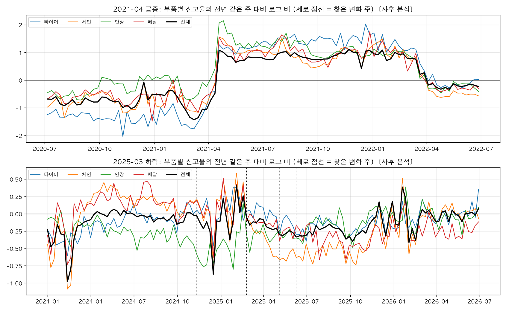
읽는 법은 다음과 같다(숫자는 표 8-4).
- 2021-04는 네 부품과 전체가 모두 2021-04-12 주를 가리킨다(실제로 뛴 날은 그 앞 주인 04-05 ~ 08). 크기도 1.67 ~ 1.98배로 비슷하다. 원인을 아는 2018-06 앱 개편과 같은 모양이다. 한 부품에 대한 조치로는 네 부품이 같은 주에 같이 뛸 수 없다.
- 2025년은 부품마다 시점이 다르다. 안장은 2024-11부터, 체인은 2025-02-24 주에 가장 뚜렷하게(0.748배), 타이어와 페달은 2025년 5 ~ 6월에 작게(0.887배, 0.839배) 내렸다. 전체가 가리키는 주는 체인과 같다. 2021-04나 2018-06과는 다른 종류의 변화이고, "체인의 계단에 여러 부품의 완만한 하락이 겹친 모양"으로 읽었다.
- 전체의 전후 12주 비 0.895는 12개월 비교의 0.80배보다 작은 하락이다. 변화 주 직후 12주만 보기 때문이다. 월별 전년 같은 달 대비로는 2025-03 0.90, 04 0.84, 05 0.75, 06 0.74로 석 달에 걸쳐 더 내려갔다. output/tables/regime_yoy.csv output/tables/rc_1_changepoints.csv output/tables/rc_4a_ratios.csv
처음 계획한 '전년 같은 주 대비'에서 변화점을 찾는 방법은 2025 창에서 타이어, 체인, 페달, 전체가 2024-03-11 주를, 안장이 2024-06-24 주를 가리켜 쓸 수 없었다. output/tables/rc_1_changepoints.csv 1년 전 값이 튀면(한파 주간, 2023-09의 신고 누락) 그것이 1년 뒤에 그대로 되비치기 때문이다. 그래서 이 값은 그림 8-2처럼 '옮겨 간 수준이 그대로 머무는지'를 눈으로 확인하는 데만 썼다.
8.4R2. 신고 행의 분해: 줄어든 것이 자전거 수인지 중복인지
질문: 신고 행 수가 줄었을 때 줄어든 것이 신고되는 자전거 수인지, 같은 자전거에 거듭 들어오는 신고인지, 한 신고에 고르는 유형 수인지를 봤다.
방법: 고장신고 자료의 한 행은 신고 1건 × 고장유형 1개다(→ 3절). 그래서 행 수를 세 조각의 곱으로 쓸 수 있다(py/regime/rc_duplicates.py).
- 행 수 = (월별 신고된 자전거 수) × (자전거당 신고 건수) × (신고당 유형 수). 로그를 씌우면 합이 되고, 두 기간(앞 기간 P0, 뒤 기간 P1)의 로그 변화에서 각 조각이 차지하는 몫을 낸다. 신고 1건은 고유한 (자전거, 등록일시)다.
- 자전거 수가 줄었으면 고장 난 자전거가 줄었거나 신고하는 사람이 줄어든 것이다(이 분해만으로는 못 가른다). 자전거당 신고가 줄었으면 같은 고장에 여러 명이 신고하던 중복이 줄어든 것이다(H5). 신고당 유형 수가 변했으면 앱의 입력 방식이나 집계가 바뀐 것이다(H7).
- 48시간 중복(같은 자전거·같은 유형이 48시간 안에 다시 신고된 행)의 비율은 따로 본다.
| 비교 | 행 ÷ 대여 | 자전거 ÷ 대여 | 자전거당 신고 | 신고당 유형 | 48시간 중복 P0 → P1 | 행 수 로그 변화의 몫(자전거 / 자전거당 / 유형) |
|---|---|---|---|---|---|---|
| 2025 상 vs 2024 상 | 0.846 | 0.907 | 0.916 | 1.018 | 3.3% → 2.5% | 0.81 / 0.25 / −0.05 |
| 2025 하 vs 2024 하 | 0.793 | 0.855 | 0.929 | 0.998 | 3.1% → 2.4% | 0.79 / 0.20 / 0.01 |
| 2026 상 vs 2025 상 | 0.968 | 0.974 | 0.996 | 0.999 | 2.5% → 2.3% | 변화가 작아 읽지 않는다 |
| 2026 상 vs 2024 상(2년) | 0.819 | 0.883 | 0.912 | 1.017 | 3.3% → 2.3% | 0.80 / 0.25 / −0.04 |
| 2025-03 ~ 08 vs 2024-03 ~ 08 | 0.807 | 0.872 | 0.912 | 1.014 | 3.6% → 2.6% | 0.79 / 0.25 / −0.04 |
| 2025-03 ~ 2026-02 vs 직전 12개월 | 0.809 | 0.874 | 0.919 | 1.006 | 3.2% → 2.4% | 0.78 / 0.24 / −0.02 |
| 2021-04 ~ 09 vs 2020-10 ~ 2021-03 | 2.725 | 2.080 | 1.268 | 1.033 | 1.6% → 3.8% | 0.84 / 0.14 / 0.02 |
| 2021-04 ~ 09 vs 2019-04 ~ 09 | 1.179 | 1.009 | 1.108 | 1.054 | 2.7% → 3.8% | 0.76 / 0.16 / 0.08 |
2021-04 ~ 09의 48시간 중복 비율은 표에 0.0385로 저장돼 있다. 월별 표의 행 수로 다시 계산하면 3.846%(1 − 102,068 ÷ 106,150)여서 3.8%로 적었다. output/tables/rc_2_monthly.csv
읽는 법은 다음과 같다(숫자는 표 8-5).
- 2025년: 계절을 맞춘 다섯 비교 모두에서 행 수 로그 변화의 78 ~ 81%가 '월별 신고된 자전거 수'의 몫이고 20 ~ 25%가 '자전거당 신고'의 몫이다. 신고당 유형 수는 0.998 ~ 1.018배로 그대로다. 한 신고에 고르는 유형 수가 변하지 않았으므로 앱 입력 방식이나 집계 형식이 바뀌었다는 가설(H7)은 버렸다.
- 2026년 상반기는 2025년 상반기의 0.968배다. 더 내려가지 않고 낮은 수준에 머물렀다.
- '신고되는 자전거가 줄었다'가 고장 난 자전거가 줄어서인지 신고하는 사람이 줄어서인지는 이 분해로 가를 수 없다. 그것을 가르는 것이 R4다.
- 2021-04: 직전 6개월과 견주면 행 ÷ 대여가 2.725배지만 2019년 같은 달과 견주면 1.179배이고, 대여당 신고되는 자전거 수는 1.009배로 2019년과 같다. 급증 폭의 대부분은 2020-05 ~ 2021-03의 낮은 수준에서 2019년 수준으로 돌아온 것이다.
- 2021-02 ~ 12의 신고에는 시각이 없어 같은 자전거의 같은 날 신고 여러 건이 한 건으로 합쳐진다. 그래서 2021년 비교의 '자전거당 신고'는 날짜 단위 근사이고 방향만 본다.
8.5R4a. 헛대여율 대 신고율: 고장 신호도 같이 움직였는지
질문: 신고율이 바뀐 시점에, 신고와 무관한 고장 신호도 같이 움직였는지를 봤다.
헛대여는 빌린 대여소에 몇 분 안에 그대로 반납한 대여다(대시보드에서는 '대여 직후 반납'이라고 부른다). 자전거를 뽑았다가 고장을 보고 바로 돌려놓는 경우가 여기에 많이 들어 있다. 이 기록은 이용자가 신고를 하든 말든 대여이력에 남는다. 그래서 신고율이 바뀐 시점에 헛대여율이 그대로라면 고장은 그대로이고 신고 쪽이 바뀐 것이고, 같이 움직였다면 실제 고장이 바뀐 것으로 읽을 수 있다. 헛대여에는 마음이 바뀐 대여와 잘못 뽑은 자전거도 섞여 있으므로 수준은 해석하지 않고 전후 변화만 본다.
방법: 대여이력 130개 월 파일(2015-09 ~ 2026-06) 전체를 한 번 훑어 날짜별로 헛대여를 센다(py/build/day_signal.py). 월별 헛대여율(대여 천 건당)과 신고율(대여 만 건당)을 만들고, 비교 기간마다 대여 수로 가중한 월 평균의 비(P1 ÷ P0)를 낸다(py/regime/rc_sham.py). 운영이 멈춘 날과 신고 누락 기간은 두 지표 모두에서 뺀다.
기준의 아래쪽을 2분에서 자른 데는 이유가 있다. 2025년까지의 파일에는 같은 대여소에 2분 미만으로 반납한 기록이 없는데 2026년 파일에는 0 ~ 1분 기록이 들어 있다. docs/notes/04_레짐원인_메모.md 표로도 확인된다. 같은 대여소 반납(시간 조건 없음)은 대여 천 건당 59.9건(2025-12)에서 85.7건(2026-01)으로 한 달 만에 뛰고, 이용시간 1분 이하인 대여의 비율은 2025년 1.2%에서 2026년 4.0%가 된다. output/tables/rc_4a_monthly.csv output/tables/panel_2a2_by_year.csv 그대로 '3분 이하'로 세면 2026년 헛대여율만 부풀어 연도 비교가 안 된다. 그래서 아래쪽을 2분으로 잘라 2 ~ 3분을 주 기준으로 삼았다.
| 비교 | 헛대여율 | 신고율 전체 | 타이어 | 체인 | 안장 | 페달 |
|---|---|---|---|---|---|---|
| 2025 상 vs 2024 상 | 0.933 | 0.831 | 0.953 | 0.675 | 0.718 | 0.864 |
| 2025 하 vs 2024 하 | 0.971 | 0.795 | 0.828 | 0.611 | 0.879 | 0.670 |
| 2026 상 vs 2025 상 | 0.959 | 0.969 | 0.983 | 0.978 | 0.949 | 0.789 |
| 2026 상 vs 2024 상(2년) | 0.894 | 0.806 | 0.937 | 0.660 | 0.681 | 0.682 |
| 2021-04 ~ 09 vs 2020-10 ~ 2021-03 | 0.760 | 2.639 | 5.304 | 2.823 | 2.866 | 3.124 |
| 2021-04 ~ 09 vs 2020-04 ~ 09 | 0.554 | 1.816 | 2.997 | 2.128 | 3.206 | 2.334 |
| 2021-04 ~ 09 vs 2019-04 ~ 09 | 0.935 | 1.118 | 1.143 | 1.196 | 1.981 | 1.643 |
더 자세히: 헛대여 기준과 비교 기간을 바꾼 민감도
| 비교 | 정확히 2분 | 2 ~ 3분 | 2 ~ 5분 | 시간 조건 없음 | 신고율 전체 |
|---|---|---|---|---|---|
| 2025 상 vs 2024 상 | 0.886 | 0.933 | 0.971 | 1.035 | 0.831 |
| 2025 하 vs 2024 하 | 0.958 | 0.971 | 0.996 | 1.011 | 0.795 |
| 2026 상 vs 2025 상 | 1.009 | 0.959 | 0.929 | 1.359 | 0.969 |
| 2026 상 vs 2024 상(2년) | 0.895 | 0.894 | 0.903 | 1.407 | 0.806 |
| 2025-03 ~ 08 vs 2024-03 ~ 08 | 0.919 | 0.952 | 0.993 | 1.039 | 0.796 |
| 2025-03 ~ 2026-02 vs 직전 12개월 | 0.931 | 0.956 | 0.984 | 1.053 | 0.804 |
| 2025-03 ~ 08 vs 2024-09 ~ 2025-02(계절 다름) | 1.022 | 1.012 | 1.038 | 1.072 | 0.790 |
| 2021-04 ~ 09 vs 2020-10 ~ 2021-03 | 0.730 | 0.760 | 0.805 | 0.997 | 2.639 |
| 2021-04 ~ 09 vs 2020-04 ~ 09 | 0.541 | 0.554 | 0.592 | 0.818 | 1.816 |
| 2021-04 ~ 09 vs 2019-04 ~ 09 | 0.953 | 0.935 | 0.928 | 1.058 | 1.118 |
'시간 조건 없음'이 2026년에 1.359배로 뛰는 것은 위에서 말한 0 ~ 1분 기록 때문이다. 시간 조건을 둔 세 기준에는 영향이 없다.
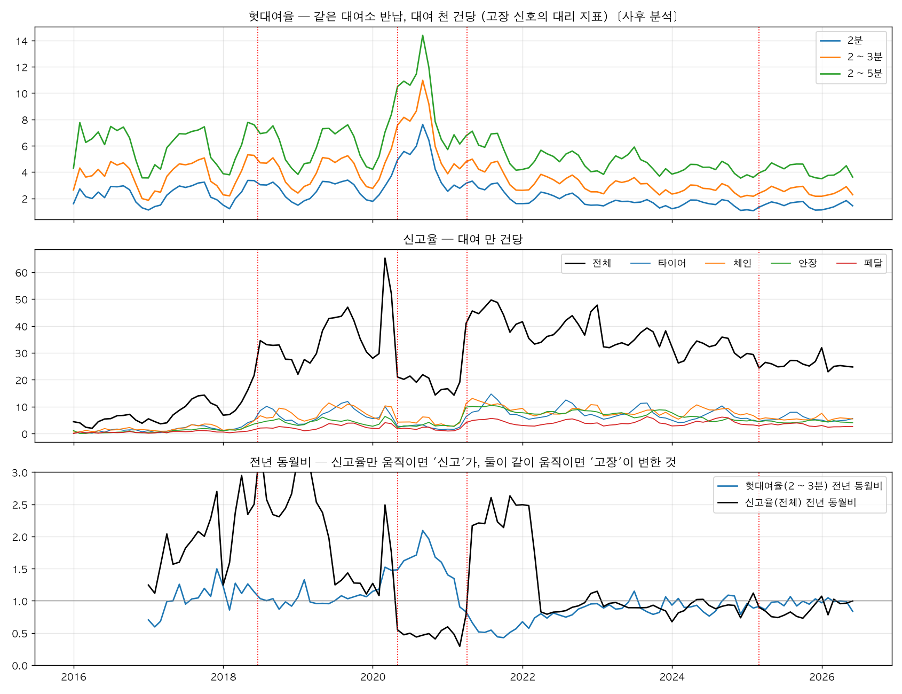
읽는 법은 다음과 같다(숫자는 표 8-6과 표 8-7).
- 2025년: 헛대여율은 0.933배, 0.971배(−6.7%, −2.9%)이고 신고율은 0.831배, 0.795배(−16.9%, −20.5%)다. 고장 신호는 조금 내렸고 신고는 그보다 훨씬 많이 내렸다. 미리 적어 둔 기준으로는 "고장 신호는 그대로, 신고만 줄었다"에 가깝다. 기준을 바꿔도(정확히 2분 0.886·0.958, 2 ~ 5분 0.971·0.996), 기간을 바꿔도(12개월 0.956 대 0.804, 3 ~ 8월 0.952 대 0.796) 같다.
- 2026년 상반기는 2025년 상반기와 같은 수준이다(헛대여율 0.959배, 신고율 0.969배). 2년 전과 견주면 헛대여율 0.894배, 신고율 0.806배로 벌어진 간격이 그대로다.
- 부품별로는 체인(0.675, 0.611)이 유난히 많이 내렸다. 헛대여는 어느 부품 때문인지 구분하지 못하므로, 체인만 따로 더 내린 몫은 헛대여로 설명되지 않는다. 체인에 한해서는 부품 조치가 겹쳤을 가능성을 남겼다.
- 2021-04: 신고율이 2.639배가 되는 동안 헛대여율은 0.760배였다. 고장 신호는 오르지 않았다. 2019년 같은 달과 견주면 헛대여율 0.935배, 신고율 1.118배로 두 지표 모두 2019년 수준 근처다.
2020-05 ~ 2021-03의 '절반' 기간에는 두 지표가 반대로 움직였다. 헛대여율(2 ~ 3분)의 전년 같은 달 대비 비는 2020-05 ~ 12에 1.48 ~ 2.09였고(월 값 ÷ 12개월 전 값), 가장 높았던 2020-09에는 대여 천 건당 11.0건으로 2019-09의 5.2건의 2.09배였다. 같은 기간 신고율은 전년의 절반 안팎이었다(전년 같은 달 대비 0.41 ~ 0.55). output/tables/rc_4a_monthly.csv output/tables/regime_yoy.csv 고장이 절반으로 줄었다가 두 배가 됐다면 헛대여도 같이 줄었다가 늘어야 하는데 그 반대였다. 그래서 이 기간은 이용자가 고장을 신고하기 어려웠던 기간으로 읽었다. 다만 두 지표의 시점이 딱 맞지는 않는다. 헛대여율은 QR 단말기 시범이 시작된 2020-03에 이미 전년의 1.52배였고, 2021년 1 ~ 3월에는 전년 대비 1.40, 1.35, 0.90으로 내려왔다. 2021-03 → 04에는 4.25 → 4.78건으로 2019년의 같은 달 사이 변화(3.09 → 3.92건)보다 작게 올랐는데, 신고율은 그 한 달에 19.1 → 41.0이 됐다. output/tables/rc_4a_monthly.csv output/tables/regime_monthly.csv 또 이 기간의 헛대여 증가가 고장 때문인지 새 단말기에 익숙하지 않아서인지는 이 자료로 가르지 못한다. 그래서 2021-04의 판정은 R4a보다 자전거 단위의 R4b(8.7)에 더 기댄다.
헛대여가 모든 고장을 같은 정도로 잡지는 못한다. 뽑자마자 탈 수 없는 고장(타이어 바람 빠짐, 페달 헛돎, 단말기)에는 민감하고, 타고 갈 수는 있는 고장(체인 소음, 안장 흔들림)은 잘 잡지 못할 것으로 봤다(따로 재 보지는 않은 추론이다). 그래서 R4a의 판별력은 타이어와 페달에서 강하고 체인과 안장에서는 약하다. 체인 0.675배, 안장 0.718배가 "신고만 줄었다"인지 "타고 갈 수 있는 고장이 실제로 줄었다"인지는 헛대여로 가를 수 없다.
직원의 선제 수거(H6)로 설명할 수 있는지도 따졌다(사람의 질문, 2026-10-07). 직원이 신고되지 않은 자전거도 상태가 나빠 보이면 수거해 간다면 신고는 줄 수 있다. 하지만 수거가 빨라지면 이용자가 고장 난 자전거를 마주칠 기회 자체가 줄어 헛대여와 신고가 같은 비율로 줄어야 한다. 헛대여율 0.956배 대 신고율 0.804배(12개월, 표 8-7)는 "마주친 뒤에 신고하는 정도"가 내린 쪽을 가리킨다. 예외는 수거 대상이 헛대여를 만들지 않는 종류(체인, 안장)에 몰린 경우다. 그래서 체인과 안장에 한해서는 H6도 남겨 두고 R5, R6에서 직접 쟀다.
헛대여율 자체는 길게 보면 내려왔다. 연간으로 2019년 대여 천 건당 4.47건, 2025년 2.61건이다(0.58배. 계산: 월 헛대여율을 월 대여 수로 가중 평균). output/tables/rc_4a_monthly.csv 자전거 교체, QR 전환, 이용자 숙련 같은 여러 이유가 섞였을 것이어서 이 수준 차이는 해석하지 않았다.
8.6R3. 자전거 단위로 보려고 대여이력 상세를 적재했다
R4a는 총량끼리의 비교다. 고장 난 자전거를 마주친 사람이 신고하는 정도를 직접 재려면 "이 헛대여가 난 그 자전거가 신고됐는가"를 한 건씩 맞춰 봐야 한다. 그래서 대여이력 월 파일 130개 가운데 2020-10 ~ 2021-09의 12개(30,121,923행)와 2023-07 ~ 2026-06의 36개(122,984,623행)를 한 건 단위로 적재했다. 날짜를 읽지 못한 행은 없었다. docs/load_log.csv 단계 2A의 첫 절차를 이 분석 때문에 앞당겨 한 것이고, 적재 방법과 정제는 9절에 있다(→ 9절).
8.7R4b·R5·R6. 자전거 단위로 잰 신고 성향, 수거 속도, 신고 없는 중단
세 지표 모두 py/regime/rc_bike_level.py가 만든다. 2021-02 ~ 12의 신고에는 시각이 없어(0시로 기록) 두 기간을 같은 잣대로 재려고 모두 날짜 단위로 맞췄다.
- R4b 헛대여 뒤 신고 확률: 헛대여(같은 대여소 반납, 2 ~ 3분) 한 건마다, 그 자전거에 대한 신고가 헛대여 당일이나 다음 날에 한 건이라도 있으면 1로 센 비율이다. 고장 신호가 같은 자전거를 두고 사람들이 얼마나 신고하는지를 재므로 신고 성향(고장 난 자전거를 마주친 사람이 신고하는 정도)을 가장 직접 보는 지표다.
- R5 수거 속도: 신고 다음 날 이후 첫 대여까지의 공백이다. '신고 다음 날 다시 대여된 비율'(신고됐는데 계속 운행)과 '3일 이상 공백 비율'(수거·정비 추정. 다시 나타나지 않은 경우 포함)을 본다. 공백이 짧아졌다면 고장 자전거를 더 빨리 뺀다는 뜻이고 중복 신고 감소(H5)로 이어진다.
- R6 신고 없는 운행 중단: 7일(또는 14일) 이상 대여가 없다가 직전 반납 대여소와 다른 대여소에서 다시 대여됐고, 공백 시작 3일 전부터 다시 나타난 날 3일 뒤까지 신고가 없는 경우다. 직원이 신고 없이 수거·정비했을 가능성(H6)으로 보고, 그 달에 대여된 자전거 천 대당 월 건수로 센다. 재배치 트럭 이동이나 장기 보관과 섞인다.
먼저 2025-03 감소다(2023-07 ~ 2026-06 자료).
| 지표 | 2024 상 → 2025 상 | 2024 하 → 2025 하 | 2025 상 → 2026 상 | 2024 상 → 2026 상 |
|---|---|---|---|---|
| R4b 헛대여 뒤 신고 확률 | 0.1332 → 0.0869 (0.652) | 0.1271 → 0.0895 (0.704) | 0.0869 → 0.0932 (1.073) | 0.700 |
| R5 신고 다음 날 다시 대여된 비율 | 0.3646 → 0.3262 (0.895) | 0.3381 → 0.3325 (0.984) | 0.3262 → 0.3320 (1.018) | 0.911 |
| R5 신고 뒤 3일 이상 공백 비율 | 0.5181 → 0.5515 (1.065) | 0.5490 → 0.5419 (0.987) | 0.5515 → 0.5501 (0.997) | 1.062 |
| R6 신고 없는 7일 중단(천 대당, 월) | 171.3 → 212.4 (1.240) | 199.9 → 251.0 (1.256) | 212.4 → 210.6 (0.992) | 1.229 |
| R6 신고 없는 14일 중단(천 대당, 월) | 58.2 → 81.8 (1.407) | 83.5 → 98.9 (1.183) | 81.8 → 71.3 (0.872) | 1.227 |
| 참고: 7일 이상 중단 가운데 신고가 없는 비율 | 67.1% → 75.9% | 67.1% → 79.1% | 75.9% → 79.6% |
참고 줄은 월별 표의 건수를 반기로 더해 계산했다(신고 없는 7일 중단 건수 ÷ 7일 중단 전체 건수. 2024 상 38,354 ÷ 57,202, 2025 상 47,577 ÷ 62,691). 2026년 상반기의 R6은 자료 끝이라 다시 나타나는 것을 볼 수 없는 6월을 빼고 1 ~ 5월로 센 값이다. output/tables/rc_6_monthly.csv
- R4b: 신고 성향이 내렸다. 헛대여가 난 자전거가 그날이나 다음 날 신고된 비율이 2025년 상반기에 34.8%, 하반기에 29.6% 내렸다(1 − 0.652, 1 − 0.704). 계획 문서가 "약 30% 떨어지면 직접 증거"로 적어 둔 기준에 닿는다. 2026년 상반기는 0.0932로 2025년 상반기보다 7% 높지만 2024년 상반기의 0.700배다. 반기마다 헛대여가 4.6만 ~ 6.1만 건이어서 표본은 충분하다. output/tables/rc_4b_monthly.csv output/tables/rc_456_periods.csv
- R5: 수거 속도는 거의 변하지 않았다. 신고 다음 날 다시 대여된 비율은 0.895 ~ 1.018배, 3일 이상 공백 비율은 0.987 ~ 1.065배다. 2025년 상반기에 다음 날 재대여가 10.5% 줄었지만 하반기와 2026년에는 변화가 없고, 그 상반기에는 대여 자체가 17% 줄어(대여 비 0.828) 다시 대여될 기회도 줄었다. output/tables/rc_456_periods.csv output/tables/rc_2_decomp.csv "고장 자전거를 더 빨리 빼서 중복 신고가 줄었다"(H5)는 지지되지 않는다. R2에서 본 자전거당 신고의 감소(0.916, 0.929)는 같은 신고 성향 하락의 결과로 봤다. 한 고장에 여러 명이 신고할 확률도 같이 내렸다는 뜻이다.
- R6: 신고 없는 운행 중단은 늘었다. 7일 기준으로 2025년에 1.240배, 1.256배이고 2026년 상반기에도 그 수준이다(0.992배). 직원이 신고 없이 수거·정비하는 일이 늘었다는 것(H6)과 맞는 방향이다. 다만 두 가지가 섞여 있다. 2025년에는 대여가 줄어 자전거가 그냥 오래 쉬는 일이 늘었을 수 있고, 신고 자체가 줄면 '신고 없는' 중단의 몫은 저절로 오른다(67.1% → 75.9%). 14일 기준은 2026년 상반기에 0.872배로 내려와 방향이 흔들린다. 그래서 H6은 "가능성 있음, 크기 미정"에 두었다. output/tables/rc_456_periods.csv output/tables/rc_6_monthly.csv
더 자세히: 헛대여 뒤 신고 확률을 달별로 보면
| 월 | 2023 | 2024 | 2025 | 2026 | 2025 ÷ 2024 | 2026 ÷ 2025 |
|---|---|---|---|---|---|---|
| 1 | 0.0777 | 0.0640 | 0.0691 | 0.824 | 1.080 | |
| 2 | 0.0756 | 0.0648 | 0.0606 | 0.857 | 0.935 | |
| 3 | 0.1033 | 0.0789 | 0.0834 | 0.764 | 1.057 | |
| 4 | 0.1453 | 0.0883 | 0.1000 | 0.608 | 1.133 | |
| 5 | 0.1584 | 0.0974 | 0.0996 | 0.615 | 1.023 | |
| 6 | 0.1528 | 0.0949 | 0.1081 | 0.621 | 1.139 | |
| 7 | 0.1100 | 0.1256 | 0.0949 | 0.756 | ||
| 8 | 0.1263 | 0.1342 | 0.0950 | 0.708 | ||
| 9 | 0.1237 | 0.1409 | 0.0975 | 0.692 | ||
| 10 | 0.1467 | 0.1368 | 0.0832 | 0.608 | ||
| 11 | 0.1069 | 0.1093 | 0.0828 | 0.758 | ||
| 12 | 0.1037 | 0.0806 | 0.0697 | 0.865 |
이 확률은 겨울에 낮고 봄 ~ 가을에 높은 계절을 탄다. 그래서 같은 달끼리 견준다. 전년 같은 달 대비 비는 2024-07 ~ 11에 0.93 ~ 1.14로 1 안팎이다가 2024-12에 0.777(0.0806 ÷ 0.1037), 2025-01 ~ 02에 0.824와 0.857, 03에 0.764, 04 ~ 06에 0.608 ~ 0.621로 내려간다. 메모는 "3월에 계단처럼"이라고 적었지만 달별로 보면 2024-12부터 낮아지기 시작해 2025-04에 바닥에 닿은 모양이다. 겨울에는 헛대여가 월 3,500 ~ 4,800건으로 적어 값이 더 흔들린다는 점은 감안한다. 2026-03 ~ 06은 1.023 ~ 1.139로 2025년보다 조금 높다. output/tables/rc_4b_monthly.csv
다른 스크립트가 만든 표에서도 같은 크기가 나온다. 단계 2B의 헛대여 경보 검증은 시각 순서를 지켜 "헛대여 한 번 뒤 24시간 안에 신고된 비율"을 연도별로 셌는데 2024년 9.4%, 2025년 6.5%다(0.69배 = 0.0647 ÷ 0.0939). output/tables/risk_alert_by_year.csv 경보의 쓰임새는 10절에 있다(→ 10절).
다음은 2021-04 급증이다(2020-10 ~ 2021-09 자료).
| 월 | 헛대여 건수 | 헛대여 뒤 신고 확률 | 신고 다음 날 다시 대여 | 신고 뒤 3일 이상 공백 | 신고 없는 7일 중단(천 대당) |
|---|---|---|---|---|---|
| 2020-10 | 26,556 | 0.0811 | 0.6622 | 0.2714 | 265.0 |
| 2020-11 | 11,844 | 0.0568 | 0.5854 | 0.3042 | 239.9 |
| 2020-12 | 5,551 | 0.0382 | 0.4385 | 0.4297 | 342.2 |
| 2021-01 | 3,143 | 0.0280 | 0.3217 | 0.5419 | 381.3 |
| 2021-02 | 5,711 | 0.0280 | 0.4049 | 0.4730 | 184.6 |
| 2021-03 | 9,287 | 0.0560 | 0.4867 | 0.3829 | 128.6 |
| 2021-04 | 14,560 | 0.1260 | 0.5341 | 0.3489 | 88.3 |
| 2021-05 | 14,711 | 0.1506 | 0.4993 | 0.3780 | 100.1 |
| 2021-06 | 14,585 | 0.1585 | 0.5282 | 0.3573 | 82.0 |
| 2021-07 | 13,529 | 0.1580 | 0.5333 | 0.3582 | 89.8 |
| 2021-08 | 15,257 | 0.1540 | 0.5246 | 0.3593 | 78.3 |
| 2021-09 | 18,018 | 0.1541 | 0.5100 | 0.3952 | (자료 끝이라 비움) |
- R4b가 2021-04의 성격을 정했다. 헛대여 뒤 신고 확률은 2020-10 ~ 2021-03 평균 0.0613에서 2021-04 ~ 09 평균 0.1503으로 2.452배가 됐다. output/tables/rc_456_periods.csv 달별로는 2021-03 0.0560 → 04 0.1260으로 한 달 사이에 2.25배다(0.1260 ÷ 0.0560). output/tables/rc_4b_monthly.csv 같은 고장 신호를 두고 사람들이 더 신고하게 된 것이다. 앱 1차 리뉴얼(2021-02-26)과 전면 리뉴얼(03-15)이 있던 3월부터 오르기 시작해 4월에 자리 잡는다.
- 계절 몫을 빼고 읽는다. 6개월 비교는 겨울 대 여름이다. 다른 해의 같은 계절 차이는 1.27배였다(2024-04 ~ 09의 0.1442 ÷ 2023-10 ~ 2024-03의 0.1138. 헛대여 건수 가중 평균). 그러니 2.452배가 모두 경로 변화의 크기는 아니다. 같은 달끼리 3년 뒤와 견주면 더 분명하다. 급증 전 6개월(0.0613)은 3년 뒤 같은 달(0.1138)의 0.54배였고, 급증 뒤 6개월(0.1503)은 3년 뒤 같은 달(0.1442)의 1.04배다. 급증 전이 낮았고 급증 뒤가 평소 수준이다. output/tables/rc_4b_monthly.csv output/tables/rc_456_periods.csv
- R5: 수거 속도는 변하지 않았다. 신고 다음 날 다시 대여된 비율 0.5342 → 0.5214(0.976배), 3일 이상 공백 0.3597 → 0.3672(1.021배)다. 2021-04 전후로 정비 방식이 바뀐 흔적은 없다. 2020-12 ~ 2021-02에 재대여 비율이 0.32 ~ 0.44로 낮은 것은 겨울에 대여가 줄어서다. output/tables/rc_456_periods.csv output/tables/rc_5_monthly.csv
- R6은 판단에 쓰지 않았다. 254.1 → 87.7건(0.345배)으로 크게 줄었지만 앞 기간이 겨울이라 자전거가 오래 쉬는 계절 효과가 섞여 있다. output/tables/rc_456_periods.csv
8.8R7. 코호트: 오래된 자전거가 빠져서 줄어든 것인지
질문: 2025년의 감소가 특정 코호트(자전거번호가 처음 나타난 시기로 묶은 자전거 묶음)에 몰려 있는지를 봤다. 몰려 있으면 하드웨어 교체나 폐기에 따른 구성 변화이고, 모든 코호트에서 비슷하게 줄었으면 신고 쪽의 변화다.
코호트로 나눈 이유는 프레임이다. 따릉이 프레임은 L자형에서 탑튜브형으로 바뀌어 왔다. 프레임은 차종 자체라 기존 자전거에 달 수 없고 새로 사는 속도로만 바뀐다. 그러니 도입 시기가 대략 프레임 형태다. L자형은 안장 기둥이 꽂히는 부분에 균열이 생기기 쉬웠다고 알려져 있고, 고장구분에 프레임 항목이 없어서 이용자가 이것을 '안장'으로 신고했을 수 있다(추정). 그래서 안장을 코호트별로 따로 봤다. docs/reference/04b_레짐_원인_분석.md
방법: 코호트별로 반기마다 대여 만 건당 부품별 신고 행 수를 구하고 전년 같은 반기와 견준다(py/regime/rc_cohort.py). 코호트는 2020 ~ 2022-02(QR 단말기로 바꾸며 번호를 새로 붙인 자전거가 섞여 실제 나이를 모름), 2022-03 ~ 12, 2023, 2024, 2025로 나눴다. 2024년과 2025년 코호트는 도입 첫 반기의 대수가 작아 전년비에 뜻이 없어 아래 표에서 뺐다.
분석을 시작하자마자 알게 된 것이 있다. 2024년 이후 대여된 자전거 가운데 2019년 이전 번호는 하나도 없다. 표에 그 코호트의 행 자체가 없다. output/tables/rc_7_cohort_half.csv QR 단말기 교체(2020 ~ 2022-02) 때 번호가 모두 새로 붙었다는 1A의 추정이 자료로 확인된 셈이다(공단의 공식 확인은 아직 없다). 그 결과 2024년에 대여된 44,286대 가운데 29,335대(66%)가 나이를 모르는 코호트다. output/tables/rc_7_cohort_exit.csv 공단의 폐기 기준은 도입 6년이 지나고 대여 3,000회 이상 또는 운행 6,000km 이상인 자전거를 정밀 점검해 폐기하는 것인데 docs/reference/04b_레짐_원인_분석.md, 이 기준에 닿은 자전거를 가려낼 수 없어서 폐기 기준 분석은 하지 못했다. 나이를 아는 2022-03 이후 코호트는 아직 6년이 안 됐고, 저장된 표에도 기준에 닿지 않은 행만 있다. output/tables/rc_7_scrap_rule.csv
| 비교 | 코호트 | 대수(뒤 반기) | 타이어 | 체인 | 안장 | 페달 | 전체 행 |
|---|---|---|---|---|---|---|---|
| 2024 상 → 2025 상 | 2020 ~ 2022-02(나이 모름) | 27,201 | 0.988 | 0.726 | 0.724 | 0.873 | 0.870 |
| 2024 상 → 2025 상 | 2022-03 ~ 12 | 8,472 | 0.889 | 0.767 | 0.847 | 0.999 | 0.900 |
| 2024 상 → 2025 상 | 2023 | 4,262 | 1.121 | 0.572 | 0.647 | 0.886 | 0.833 |
| 2024 하 → 2025 하 | 2020 ~ 2022-02(나이 모름) | 26,991 | 0.887 | 0.651 | 0.825 | 0.698 | 0.819 |
| 2024 하 → 2025 하 | 2022-03 ~ 12 | 8,577 | 0.788 | 0.752 | 0.874 | 0.803 | 0.838 |
| 2024 하 → 2025 하 | 2023 | 4,306 | 0.922 | 0.526 | 1.025 | 0.729 | 0.804 |
| 2025 상 → 2026 상 | 2020 ~ 2022-02(나이 모름) | 25,547 | 1.026 | 0.836 | 0.802 | 0.752 | 0.916 |
| 2025 상 → 2026 상 | 2022-03 ~ 12 | 8,334 | 0.945 | 0.926 | 0.862 | 0.832 | 0.949 |
| 2025 상 → 2026 상 | 2023 | 4,293 | 0.963 | 0.754 | 0.816 | 0.779 | 0.921 |
읽는 법은 다음과 같다(숫자는 표 8-11).
- 2025년의 하락은 세 코호트 모두에서 일어났다. 전체 행 기준으로 상반기 0.833 ~ 0.900배, 하반기 0.804 ~ 0.838배다. 전체의 하락폭(상반기 0.846배, 하반기 0.793배, 표 8-5)과 코호트 안의 하락폭이 거의 같다.
- 체인과 안장의 하락은 가장 새 코호트(2023년 도입, 탑튜브형일 가능성이 가장 높은 쪽)에서 오히려 가장 컸다(상반기 체인 0.572배, 안장 0.647배). 오래된 자전거가 폐기돼서라거나 프레임 형태 때문이라면 새 코호트에서는 덜 줄어야 한다. 그래서 구성 효과와 프레임 효과는 버렸다.
- 구성 변화 자체가 작다. 2024년에 대여된 자전거 가운데 2020 ~ 2022-02 코호트의 7.0%는 2025년부터, 14.6%는 2026년부터 대여이력에 나타나지 않는다. 그 코호트의 신고율(2024년 상반기 39.2)이 젊은 코호트(32.4, 28.4)보다 높긴 해도, 7%가 빠져서 전체에 주는 영향은 1% 안팎이라고 메모는 봤다. output/tables/rc_7_cohort_exit.csv output/tables/rc_7_cohort_half.csv docs/notes/04_레짐원인_메모.md
- 체인가드는 코호트와 상관없이 기존 자전거에 다는 장치라 "모든 코호트에서 체인이 같이 줄었다"와 어긋나지는 않는다. 다만 안장도 같은 모양으로 줄었으므로, 부품 하나의 조치보다 신고 쪽의 공통 요인이 더 단순한 설명이라고 봤다.
더 자세히: 코호트별 수준과 구성 변화 몫의 검산
| 코호트 | 2024 상 | 2024 하 | 2025 상 | 2025 하 | 2026 상 |
|---|---|---|---|---|---|
| 2020 ~ 2022-02(나이 모름) | 39.20 | 41.70 | 34.11 | 34.14 | 31.23 |
| 2022-03 ~ 12 | 32.36 | 36.08 | 29.13 | 30.24 | 27.63 |
| 2023 | 28.41 | 30.23 | 23.65 | 24.30 | 21.77 |
| 2024 | 10.91 | 16.82 | 19.87 | 26.53 | 23.82 |
| 2025 | 36.72 | 19.22 | 28.45 |
새 코호트는 도입 첫해에 낮고 몇 해에 걸쳐 올라간다(2024년 코호트의 상반기 값 10.91 → 19.87 → 23.82). 자전거별 위험 모형의 나이 변수와 이어지는 모양이다(→ 10절).
검산(이 문서를 쓰면서 위 표의 값으로 다시 계산한 것이다. 스크립트가 저장한 값이 아니므로 보고서에 쓰려면 스크립트로 옮겨야 한다). 세 코호트의 2024년 상반기 대여 수를 그대로 두고 코호트별 신고율만 2025년 상반기 값으로 바꾸면 35.86 → 31.22(0.871배)가 된다(Σ 코호트 신고율 × 2024 상 대여 수 ÷ Σ 대여 수). 새 코호트까지 모두 넣고 비중 변화도 반영한 실제 값은 35.69 → 30.21(0.847배)이다. 둘의 차이 0.972배(0.847 ÷ 0.871)가 구성 변화의 몫이고, 나머지는 같은 코호트 안에서 내린 것이다. 하반기는 0.821배 대 0.793배(구성 몫 0.966배)다. 메모의 "1% 안팎"은 옛 코호트가 빠진 것만 본 값이고, 신고율이 낮은 새 코호트가 들어온 것까지 더하면 3% 안팎이다. 어느 쪽이든 15 ~ 20%의 하락을 설명할 크기가 못 된다. output/tables/rc_7_cohort_half.csv
8.9외부 요인 검토: 그 무렵 있었던 일
자료 분석과 따로, 수준이 바뀐 시기에 무슨 일이 있었는지를 서울시와 서울시설공단의 보도자료, 언론 기사에서 찾았다(2026-10-05). 날짜와 출처 링크는 data/raw/external/events.csv에 56행으로 정리돼 있다. 이 가운데 report_jump_2021, report_dip_2023, report_drop_2025 세 행은 이 프로젝트의 자료에서 찾은 변화를 적어 둔 것이다. 외부 근거처럼 인용하지 않는다.
| 날짜 | 사건(출처) | 자료에서 본 것 | 판단 |
|---|---|---|---|
| 2018-06-15 | 새 앱 출시. 본인인증 폐지, 그림에서 고장 부위를 골라 신고(내 손안에 서울, 서울시 보도자료) | 06-20부터 신고율이 약 2배(대여 만 건당 14 안팎 → 35 안팎). R1도 2018-06-18 주를 찾음 | 앱이 바뀌면 신고가 잡히는 정도가 바뀐다는 선례. R1 방법의 검증에 썼다 |
| 2019-11-01 | 콜센터 24시간 운영(그 전에는 07 ~ 22시)(서울시 보도자료) | 전후 신고율 변화 없음 | 수준 변화의 원인 후보에서 뺐다 |
| 2020-03-01 ~ 2022-02 | QR 단말기 시범 500대로 시작해 2022-02에 전수 교체 완료(서울시 2020-02-28, 머니투데이 2022-03-03) | 2020-05부터 신고율이 절반, 같은 기간 헛대여율은 상승(8.5) | 신고가 덜 잡힌 기간으로 읽었다. 왜 덜 잡혔는지는 확인하지 못했다 |
| 2020-03-22 ~ 2022-04-17 | 코로나 거리두기(고강도 2020-03-22 ~ 04-05, 2.5단계 2020-12-08 ~ 2021-02-14, 4단계 2021-07-12 ~ 10-31)(fnnews, 내 손안에 서울) | 대여는 오히려 늘었다. 분모를 이용시간으로 바꿔도 계단은 그대로다 | 이용량과 이용 방식 쪽 요인(표 8-2의 가, 나)으로 분류했다. 왼쪽에 적은 단계 변경일 가운데 2021-04-05 ~ 08에 걸리는 것도 없다 |
| 2021-02-26, 03-15 | 앱 1차 리뉴얼, 전면 리뉴얼. 고장 신고를 '고객센터' 메뉴로 통합. iOS판은 3월 말 예정이라고만 돼 있고 실제 출시일은 미확인(서울시 2021-03-11, 내 손안에 서울 2021-03-29) | 2021-04-05 ~ 08에 신고율 2배. 헛대여 뒤 신고 확률 2021-03 0.0560 → 04 0.1260 | 가장 가까운 사건이다. 신고 경로 변화로 판정했다. 어떤 기능이 바꿨는지는 확인하지 못했다 |
| 2021-02 ~ 03 | 배송 직원의 현장 단순 정비(2월 ~), 간이정비소 3곳(3월 ~)(아시아경제 2021-04-29) | 신고 뒤 공백은 전후로 같다(R5 0.976배, 1.021배) | 정비 방식 변화로는 급증을 설명하지 못한다 |
| 2023-09-07 | 앱 접속 장애. 오전 7:50 이후, DB 최적화 작업 뒤(내 손안에 서울) | 그날부터 10-10까지 모든 부품의 신고율이 약 40% 낮고 대여는 정상, 10-11부터 회복 | 신고 누락으로 보고 report_anomaly로 표시해 학습에서 뺐다(→ 4절). 원인 공지는 찾지 못했다 |
| 2020년, 2024-02-06, 2025-04-16 | 민간 앱에서 대여 가능: 티머니(월·일 미확인), 토스, 쏘카(서울시 2025-04-17, 토스) | 대여이력의 이용자 종류는 내국인, 비회원, 외국인뿐이다 | 외부 앱 대여를 자료로 구분할 수 없어 H4는 검증하지 못했다. 시점도 딱 맞지 않는다(토스는 1년 앞, 쏘카는 한 달 반 뒤) |
| 2025-02-28 | 체인가드 약 11,000대 설치(전체 45,000대의 24%), 2025년 말 16,000대는 계획치(경향신문 2025-02-28, 서울시 2025-11-12) | 체인만 2025-02-24 주에 계단(0.748배) | 시기는 겹치지만 조금씩 늘린 조치여서 계단을 다 설명하지 못한다. 체인에 한해 작은 가능성으로 남겼다 |
| ~ 2025-11-12 | 탑튜브형 프레임 누적 32,000대. 연도별 시점은 자료에 없음(서울시 2025-11-12) | 새 코호트에서 하락이 더 크다(R7) | 프레임 효과는 버렸다 |
| 2025-04-23 | 가족권 도입(경향신문 2025-04-21) | 3월의 하락보다 뒤다 | 원인 후보로 보지 않았다 |
표에서 이용자 종류가 세 가지뿐이라는 것은 정제 단계의 점검표로 확인된다. output/tables/panel_2a2_types.csv 분모를 이용시간으로 바꾼 신고율(이용 만 시간당)은 2020-04 90.7 → 05 36.2, 2021-03 42.3 → 04 87.0, 2025-02 95.5 → 03 70.8로 대여 건수 기준과 같은 자리에서 꺾인다. output/tables/regime_monthly.csv 대여는 2019년 19,071,949건에서 2020년 23,705,020건, 2021년 32,054,693건으로 늘었다. output/tables/yearly_summary.csv
2025-03에 대해서는 찾지 못한 것이 더 많다. 앱스토어의 버전 기록(2024 ~ 2025)에는 고장·신고와 관련된 변경이 없었고, 안장에 대한 조치도 찾지 못했다. 공단은 2025년 접수 감소의 이유를 밝히지 않았다. docs/reference/07_신고율-변화-원인-조사.md
8.10결론과 확신의 정도
| 가설 | 근거 | 판정 |
|---|---|---|
| (공통) 신고 성향·경로 변화 | R4a 헛대여율 0.933·0.971 대 신고율 0.831·0.795, R4b 헛대여 뒤 신고 확률 0.652·0.704가 2026년 상반기까지 유지, R2 신고되는 자전거 수 감소 | 지지(2025-03 감소의 주 원인) |
| H5 중복 신고 감소(빠른 수거) | R2 자전거당 신고 0.916·0.929, R5 수거 속도 변화 없음 | 기각. 중복 감소는 성향 하락의 결과로 봄 |
| H6 직원의 선제 수거 확대 | R6 신고 없는 7일 중단 1.240·1.256, 대여 감소·신고 감소와 섞임 | 가능성 있음, 크기 미정(작음) |
| H1 체인가드·프레임 등 부품 조치 | R1 체인만 2025-02-24 주에 계단 0.748, R7 모든 코호트에서 같이 감소하고 새 코호트가 더 큼 | 구성·프레임 효과는 기각. 체인가드는 체인에 한해 작은 가능성 |
| H7 집계·입력 방식 변화 | R1 부품별 시점이 다름, R2 신고당 유형 0.998 ~ 1.018 | 기각 |
| H4 외부 앱(신고 메뉴가 없을 가능성) | 대여 채널을 자료로 구분할 수 없음 | 검증 불가. 성향 하락의 원인일 수는 있음 |
| 2021-04 급증 | R1 네 부품 같은 주, R2 2019년 수준으로 복귀, R4a 헛대여율 0.760 대 신고율 2.639, R4b 2.452배, R5 수거 속도 변화 없음 | 신고 경로 변화로 확정(앱 리뉴얼 직후) |
세 변화에 대해 말할 수 있는 범위는 서로 다르다. 자료가 보여 준 것, 사람이 정한 표현, 확인하지 못한 것을 나눠 적는다.
| 변화 | 자료가 보여 준 것 | 사람이 정한 표현(2026-10-07) | 확인하지 못한 것 |
|---|---|---|---|
| 2021-04 급증 | 같은 번호 묶음 안에서 일어났다. 네 부품이 같은 주에 올랐다. 고장 신호는 오르지 않았다. 헛대여 뒤 신고 확률이 한 달 사이 0.0560 → 0.1260이 됐다. 수거 속도는 같다. 2019년과 견주면 전체 수준이 비슷하다 | "데이터로 확인됨". 2020-05 ~ 2021-03에 신고가 절반만 잡히던 상태가 앱 리뉴얼 직후 정상으로 돌아온 것, 경로 변화로 추정 | 4월 5 ~ 8일에 구체적으로 무엇이 바뀌었나. 2020-05 ~ 2021-03에 왜 덜 잡혔나 |
| 2025-03 감소 | 고장 신호는 3 ~ 7% 내렸고 신고율은 17 ~ 20% 내렸다. 헛대여 뒤 신고 확률이 30 ~ 35% 내려 2026년 상반기까지 그대로다. 수거 속도는 같다. 모든 코호트에서 내렸다. 한 신고의 유형 수는 같다 | "신고 성향 하락이 데이터로 강하게 시사됨, 그 원인은 불명" | 성향을 낮춘 것이 무엇인가(앱, 민간 앱, 정비 방식). 체인과 안장에서 실제 고장 감소가 차지하는 몫. 선제 수거의 크기 |
| 2023-09 ~ 10 저하 | 앱 접속 장애가 난 날 시작해 34일 뒤 회복했다. 모든 부품이 같이 낮았고 대여는 정상이었다 | "신고 누락으로 본다" | 왜 5주나 이어졌나. 원인 공지를 찾지 못했다. 원인 분석(R1 ~ R7)의 대상도 아니었다 |
이 결론이 프로젝트에 주는 뜻은 네 가지다.
- 예측 대상인 신고가 2025년부터 고장을 전보다 덜 반영한다. 종속변수를 '고장' 대신 '이용자 신고'라고 부르는 이 프로젝트의 전제가 숫자로 확인된 셈이다. 현장 기사에는 실제 수거가 접수의 2배쯤이라는 진술도 있다. docs/reference/09_조사자료-검증과-시사점.md
- 예측 모형은 이 결과로 바꾸지 않았다. 수준이 바뀌는 자료에서는 최근 수준을 그대로 따라가는 구조가 버틴다는 것은 테스트 결과에서 따로 나온 결론이고, 운영 예측이 최근 4주 신고율을 쓰는 이유다(→ 6절, 7절).
- 자전거별 위험 모형의 검증·테스트 기간은 모두 2025년의 낮은 신고 수준 안에 있다. 그래서 절대 확률은 검증에서 다시 보정하고 주 지표를 순위 지표로 두었다(→ 10절).
- 서울시 제안에는 "신고 건수만으로는 자전거 상태를 알 수 없다, 헛대여 같은 신고와 무관한 신호를 함께 본다"를 한계와 제언으로 넣기로 했다(→ 14절).
8.11한계와 확인할 것
- 사후 분석이다. 테스트 구간을 본 뒤에, 그 구간의 자료로 한 해석이다. 가설과 판정 기준은 미리 적었지만 방법은 하면서 고친 곳이 있다(8.2). 예측 성능의 근거로 쓸 수 없다.
- 직접 원인은 확인하지 못했다. 자료가 말해 주는 것은 "신고 쪽이 바뀌었다"까지다. 2025년에 무엇이 신고를 줄였는지, 2021-04에 앱의 어떤 기능이 신고를 늘렸는지는 공개 자료에 없다.
- 헛대여는 대리 지표다. 마음이 바뀐 대여가 섞여 있고, 타고 갈 수 있는 고장은 잘 잡지 못한다. 2019년에서 2025년 사이에 0.58배가 될 만큼 수준이 달라졌고, 2026년 파일에는 0 ~ 1분 기록이 새로 들어와 반납 행동의 기록 방식 자체가 달라졌을 수 있다.
- '신고 성향 0.65 ~ 0.70배'와 '신고율 0.80 ~ 0.83배'는 크기가 다르다. 헛대여 직후의 신고가 전체 신고보다 더 많이 줄었다는 뜻인데, 왜 그런지는 분석하지 않았다.
- 유형마다 내린 폭이 크게 다르다. 2025년 상반기에 체인 0.675배, 안장 0.718배인 동안 단말기는 0.975배, 기타는 0.989배였다(하반기는 0.860배, 0.938배. 월별 표의 건수를 반기로 더해 계산). output/tables/regime_part_h1.csv output/tables/regime_monthly.csv 신고 성향이 모든 유형에서 같이 내렸다면 기타와 단말기도 비슷하게 줄어야 한다. 이 차이는 "신고 성향 하락" 하나로 풀리지 않고, 유형별 헛대여 뒤 신고 확률 같은 분석은 하지 않았다.
- 비율은 기준 연도에 좌우된다. 체인은 2024년 상반기가 유난히 높았다(대여 만 건당 2023 상 7.40, 2024 상 8.60, 2025 상 5.81). 2025년 상반기를 2023년 상반기와 견주면 0.79배(5.81 ÷ 7.40)로, 2024년과 견준 0.675배보다 작은 하락이다. output/tables/regime_part_h1.csv
- 2021-04 급증을 "2019년 수준으로 복귀"라고 할 때는 전체에 한한다. 유형 구성은 다르다. 2019년 → 2021년에 단말기는 대여 만 건당 11.09 → 2.24로 줄고 안장은 4.67 → 8.90, 기타는 6.60 → 13.27로 늘었다. output/tables/regime_part_by_year.csv
- 2021년 비교는 날짜 단위이고 6개월씩이다. 신고에 시각이 없는 기간이 끼어 있고, 앞 기간이 겨울이다(8.7에서 계절 몫을 따로 봤다).
- R6의 크기, 그리고 R5·R6·R7의 2026년 값은 8.7과 8.8의 주의대로 다시 확인할 것이 남아 있다.
- 2023-09 ~ 10의 저하를 신고 누락으로 본 근거는 시점과 모양(모든 부품이 같이 낮았고, 대여는 정상이었고, 5주 뒤 회복)뿐이다. 이 절의 방법으로 따로 확인하지는 않았다. 달별 표에서 2023-09의 헛대여 뒤 신고 확률은 0.1237로 8월(0.1263)과 비슷하고 2024-09(0.1409)의 0.88배다. 신고율이 약 40% docs/notes/01_데이터전처리_메모.md 낮았던 것에 견주면 작은 차이인데, 달 단위 값이라 누락 기간만 떼어 보지는 못했고 이유도 확인하지 않았다. output/tables/rc_4b_monthly.csv
공단에 문의하거나 정보공개청구로 확인할 항목은 문서 여러 곳에 흩어져 있다. 이 절과 관련된 것만 모으면 다음과 같다. docs/notes/04_레짐원인_메모.md docs/reference/10_외부요인-정리.md
- 2025년 고장 접수 감소의 원인에 대한 공단 내부 분석
- 2025-02 ~ 03 무렵 앱의 고장 신고 메뉴 변경 이력
- 민간 앱(티머니, 토스, 쏘카)으로 빌린 대여의 연도별 비중, 그 앱에서 고장 신고가 되는지, 그 신고가 공개 자료에 들어가는지
- 2025년의 선제 수거·정비 건수
- 공개 고장신고 자료에 들어가는 신고 채널(앱, 콜센터, 직원 등록)과 고장구분 코드의 정의
- 2021년 4월 초의 신고 시스템·앱 변경 이력(iOS 리뉴얼판 출시일 포함)
- 월별 체인가드 장착 대수, 안장·타이어 개선 부품의 적용 시점
- 단말기 교체 때 자전거번호를 새로 붙였는지(자료로는 확인했고 공식 확인이 남았다)
설명할 수 있어야 할 것
- 헛대여율이 4% 내리고 신고율이 20% 내렸다는 사실에서 "고장은 그대로다"로 가려면 어떤 가정이 필요한가. 그 가정이 깨지는 경우는 무엇이고, 그 경우를 어떤 분석으로 확인했나.
- 2021-04 급증을 "2.64배"라고 쓸 때와 "1.12배"라고 쓸 때 각각 무엇과 견준 값인가. 보고서에는 어느 숫자를 왜 쓸 것인가.
- "감소분의 약 80%가 신고되는 자전거 수"는 무엇을 나눈 몫인가. 신고율 기준으로 다시 말하면 어떻게 달라지나.
- 이 분석의 결과를 예측 모형의 선택이나 변수에 쓰지 않은 까닭은 무엇인가.
근거 파일: docs/notes/04_레짐원인_메모.md, docs/reference/04b_레짐_원인_분석.md, docs/reference/07_신고율-변화-원인-조사.md, docs/reference/08_외부환경-종합-타임라인.md, docs/reference/09_조사자료-검증과-시사점.md, docs/reference/10_외부요인-정리.md, docs/notes/02_EDA_메모.md, docs/decision_log.md, data/raw/external/events.csv, py/regime/rc_*.py, py/build/day_signal.py, notebooks/1A_regime.ipynb, output/tables/rc_*.csv, output/tables/regime_*.csv, output/tables/risk_alert_by_year.csv, output/figures/rc_1_yoy.png, output/figures/rc_4a_sham_vs_report.png, output/figures/regime_cohort_monthly.png
9자전거 × 주 패널 만들기(2A)
대여이력 월 파일 130개 가운데 2023-07 ~ 2026-06의 36개월, 122,984,623건을 한 건씩 적재하고 대여소 좌표·고도, 시간별 날씨, 통행 구분, 고장신고를 차례로 붙여 자전거 한 대의 한 주를 한 행으로 하는 표(패널)를 만들었다. docs/load_log.csv 패널은 5,477,654행(자전거 47,783대, 130주, 2024-01 ~ 2026-06)이고 다음 주에 신고가 1건 이상 들어온 행은 4.8%다. output/tables/panel_2a9_checks.csv 설명변수는 모두 그 주 끝까지의 정보로만 계산했고, 사람이 2026-10-07에 점검표를 보고 패널을 확정했다. 만드는 동안 2020 ~ 2022-02에 처음 나타난 자전거번호는 단말기를 QR형으로 바꿀 때 새로 붙은 것으로 보여 패널 행의 64.3%는 자전거의 실제 나이를 모른다는 것을 확인했다. output/tables/panel_2a9_checks.csv 2026년 파일에만 0 ~ 1분 기록이 있어 그해 상세 행 수가 일별 대여건수보다 3.0% 많다는 것도 이 단계에서 드러났다. docs/load_log.csv output/tables/yearly_summary.csv
9.1목적: 자전거 한 대를 한 주 단위로 본다
단계 1은 서울 전체의 주간 신고 건수를 다뤘다. 그 변동은 대여량만으로 70 ~ 85%가 설명됐다(부품별 R² 0.70 ~ 0.85). output/tables/eda_weekly_decomp.csv 합계 자료로는 "많이 탄 주에 신고가 많다"보다 깊이 들어가기 어렵다(→ 4절). 남은 질문은 같은 만큼 탔을 때 어떤 자전거가 더 자주 신고되느냐이다. 이 질문에는 자전거를 한 대씩 따로 본 자료가 있어야 답할 수 있다.
그래서 패널(같은 대상을 일정한 간격으로 되풀이해 기록한 표)을 만들었다. 한 행은 자전거 한 대의 한 주(월요일 시작)다. 행마다 세 가지가 들어간다.
- 그 주에 얼마나, 어떻게 탔나: 대여 수, 주행거리, 출퇴근·여가 비중, 오르막·내리막, 비·더위·추위 속 주행 비중
- 지금까지 얼마나 닳았나: 마지막 신고 이후 누적 주행거리와 대여 수, 최근 13주 신고 수, 번호가 나타난 뒤 지난 날수
- 다음 주에 신고가 들어왔나: 라벨(모형이 맞혀야 하는 값)
위험 모형(→ 10절)은 이 표 하나만 읽는다. 타당성 검토 문서는 모형이 답할 질문을 "앞으로 7일 안에 신고될 가능성"으로 정의했고 자전거 × 주 패널을 주력안으로 적었다. docs/reference/01_전체-타당성-검토-요소별.md 런북(단계별 실행 절차를 적은 문서, docs/runbook/)은 그대로 주 단위를 택했다. 설계 원안은 자전거 × 월이었다. docs/reference/05_개체단위-확장-설계안.md
처음에 사람이 보고 싶어 한 요소는 주행거리, 수리 이력, 주행 구분, 지형, 날씨였다. 공개 자료로 어디까지 만들 수 있었는지를 표 9-1에 정리했다. 수리 이력과 지나간 길은 자료에 없어 대리 지표로 대신했다.
| 요소 | 설계 때 판단 | 2A에서 만든 것 | 남은 한계 |
|---|---|---|---|
| 주행거리 | 가능 | 이용거리 합(km). 거리 기록이 잘못된 행은 직선거리 × 우회율로 채웠다 | 2023-06 이전은 자전거별 연간 합계만 있다 |
| 수리 이력 | 불가(비공개) | 신고 뒤 48시간 이상 대여가 없으면 수거·정비된 것으로 추정(repaired_likely, last_repaired) | 실제 정비 기록과는 다르다 |
| 주행 구분 | 대리 지표로 가능 | 통행마다 출퇴근·여가 표시, 출발 대여소 군집 비중 | 이용 목적을 직접 본 값이 없다 |
| 언덕 | 부분 가능 | 출발·도착 대여소의 고도차로 오르막·내리막 합 | 실제로 지나간 길은 모른다 |
| 노면 | 거의 불가 | 만들지 않았다 | 서울 전역의 노면 자료가 없다 |
| 날씨 | 가능 | 대여 시각의 기온·강수로 비, 젖은 노면, 더위, 추위 속 주행 비중 | 서울 관측 지점 한 곳의 값이다 |
도구는 DuckDB(서버 없이 파일 하나로 쓰는 분석용 데이터베이스)와 Parquet(열 단위로 압축해 저장하는 파일 형식)이다. 16GB 맥북에서 1억 건이 넘는 자료를 SQL로 돌리려고 골랐다. 메모리 한도를 8GB로 두고 넘치는 중간 결과는 디스크의 임시 폴더로 내리게 했다(py/db.py). DB 파일은 한 번에 한 스크립트만 열 수 있어 단계를 동시에 돌리지 않는다. 작업은 아홉 단계이고 단계마다 스크립트 하나가 표를 만든다.
| 단계 | 스크립트(py/panel/) | 만든 것 | 확인한 숫자 |
|---|---|---|---|
| 2A-1 적재 | 21_rent_to_parquet.py | 자전거별 연간 요약 bike_year, 상세 Parquet rent/와 rent_2021/ | 월 파일 130개, 상세 122,984,623행, 날짜를 읽지 못한 행 0 |
| 2A-2 정제·표시 | 22_trips_clean.py | trips | 122,971,118행. 완전 중복 13,244건 제거 |
| 2A-3 대여소·고도 | 23_station.py | station | 3,244곳. 좌표 없는 비율 대여 0.0005%, 반납 0.48% |
| 2A-4 출발·도착 쌍 | 24_od.py | od | 1,644,682쌍 docs/notes/05_개체패널_메모.md |
| 2A-5 시간별 날씨 | 25_weather_hourly.py | wx_h | 26,304시간, 빠진 시간 0 |
| 2A-6 대여소 군집 | 26_station_clusters.py | station_cluster.csv | 2,850곳을 5개 군집으로 |
| 2A-7 통행 테이블 | 27_trips_x.py | trips_x, trips_seq | 출퇴근 32.1%, 여가 33.3%, 재배치 4.3% |
| 2A-8 신고 붙이기 | 28_fail_join.py | fail, fail_loc, fail_gap | 신고 행 404,475개. 신고 위치를 찾은 비율 99.4% |
| 2A-9 패널 | 29_panel.py, py/panel_sql.py | bike_week.parquet | 5,477,654행, 47,783대, 130주 |
단계별 기록을 적은 메모(docs/notes/05)의 날짜로는 아홉 단계를 모두 2026-10-07에 마쳤다. 런북은 2A 전체를 2 ~ 3주, 그 가운데 적재를 2 ~ 3일로 잡았는데 적재는 약 1시간에 끝났다. docs/runbook/05_단계2A_대여이력_적재와_개체패널.md
9.2적재(2A-1): 36개월은 한 건씩, 나머지는 요약만
원본은 서울 열린데이터광장의 공공자전거 대여이력(OA-15182)이다. 2015-09 ~ 2025-12는 연도별 ZIP 11개 안에 월별 CSV 124개로, 2026-01 ~ 06은 월별 CSV 6개로 있다. 합쳐 월 파일 130개다. docs/load_log.csv 인코딩은 CP949이고 2025년까지는 17열, 2026년 파일은 자전거구분이 빠진 16열이다. ZIP은 약 11.9GB이고 풀면 약 48.5GB다. docs/phase0_result.md
기간을 셋으로 나눠 다르게 저장했다. 가운데 구간은 신고율(대여 1,000건당 고장신고 건수)이 2021-04에 급증한 원인을 보는 분석에 쓴다(→ 8절).
| 구간 | 기간 | 월 파일 | 원본 행 수 | 저장한 것 | 쓰임 |
|---|---|---|---|---|---|
| 요약만 | 2015-09 ~ 2020-09, 2021-10 ~ 2023-06 | 82 | 124,177,046 | bike_year | 번호가 처음 나타난 날, 2023-06 이전 누적 대여 수와 km |
| 요약 + 상세(별도 폴더) | 2020-10 ~ 2021-09 | 12 | 30,121,923 | bike_year, data/processed/rent_2021/ | 신고율 수준 변화의 원인 분석(→ 8절) |
| 상세 | 2023-07 ~ 2026-06 | 36 | 122,984,623 | data/processed/rent/ | 패널 |
| 합계 | 2015-09 ~ 2026-06 | 130 | 277,283,592 |
'요약만' 구간의 행 수에는 첫 파일(2015-09)이 빠져 있다. 적재 기록에서 이 파일만 행 수 칸이 비어 있고, 이유는 기록에서 확인하지 못했다.
- 상세를 2023-07부터 둔 이유: 분석은 2024-01부터 하고 앞의 6개월은 준비 기간으로 쓴다. '마지막 신고 이후 누적 주행거리' 같은 변수는 앞선 기록이 있어야 값이 생긴다. 준비 기간이 없으면 2024년 1월의 모든 자전거가 누적 0에서 출발한다.
- 그 앞을 요약으로만 둔 이유: 2023-06 이전에서 필요한 것은 자전거별로 번호가 처음 나타난 날과 누적 사용량뿐이다. 자전거·연도마다 처음 대여일, 대여 수, km 합만 남겼다.
- 2020-10 ~ 2021-09 상세를 다른 폴더에 둔 이유: 같은 폴더에 두면 패널을 만드는 SQL이 2021-10 ~ 2023-06의 빈 기간을 '대여 없는 주가 이어진 것'으로 읽어 누적 계산이 틀어진다(
py/panel/21_rent_to_parquet.py머리말).
방법은 한 달치씩이다. 연도 ZIP에서 한 달 CSV만 꺼내 UTF-8로 바꾸고, DuckDB가 모든 열을 문자로 읽어 표준 이름과 형식으로 바꾼 뒤 연·월 폴더의 Parquet로 저장하고, 꺼낸 CSV는 지운다. ZIP을 통째로 풀면 디스크를 48.5GB 쓰기 때문에 2026-10-01에 이렇게 정했다. docs/decision_log.md 문자로 읽은 뒤 바꾸는 방식이라 형식이 어긋난 값이 있어도 적재가 멈추지 않고 빈 값이 된다. 대여일시를 읽지 못한 행은 싣지 않고 그 수만 센다. 처리한 파일은 docs/load_log.csv에 한 줄씩 남긴다. 중간에 멈춰도 다시 실행하면 기록에 없는 달부터 이어 가고, 같은 원본이 두 번 들어가는 일을 막는다.
17열 가운데 9열만 실었다. 자전거번호(SPB-12345에서 숫자만 뽑아 bike_id), 대여·반납 일시, 대여·반납 대여소번호, 이용시간(분), 이용거리(m), 자전거구분, 이용자종류다. 대여소 이름, 거치대 번호, 생년, 성별, 대여소 ID는 싣지 않았다. docs/schema_map.csv
검증은 세 가지로 했다.
- 파일마다 날짜를 읽지 못한 행을 셌다. 기록이 있는 129개 파일 모두 0이다. docs/load_log.csv
- 상세 36개 파일의 행 수 합(122,984,623)이 다음 단계가 읽은 원본 행 수와 같다. 빠지거나 두 번 들어간 달이 없다는 뜻이다. output/tables/panel_2a2_checks.csv
- 연도별 행 수를 1A(일별 자료를 만든 단계)의 일별 마스터(날짜마다 한 행인 표, → 3절)에 있는 대여건수와 맞춰 봤다. 마스터의 대여건수는 대여이력과 다른 자료(일별 대여건수 파일)에서 만든 값이라 서로 다른 출처끼리의 대조다. 2016 ~ 2025년은 차이가 −0.10% ~ +0.01%이고 2026년만 +2.96%다(표 9-4). docs/load_log.csv output/tables/yearly_summary.csv
| 연도 | 적재 행 수 | 일별 대여건수 합 | 차이(건) | 차이(%) |
|---|---|---|---|---|
| 2023 | 44,905,158 | 44,905,293 | −135 | 0.00 |
| 2024 | 43,851,938 | 43,849,586 | +2,352 | +0.01 |
| 2025 | 37,372,654 | 37,373,092 | −438 | 0.00 |
| 2026(1 ~ 6월) | 18,511,943 | 17,978,991 | +532,952 | +2.96 |
더 자세히: 2016 ~ 2022년의 비교
| 연도 | 적재 행 수 | 일별 대여건수 합 | 차이(건) | 차이(%) |
|---|---|---|---|---|
| 2016 | 1,611,534 | 1,611,635 | −101 | −0.01 |
| 2017 | 5,030,577 | 5,031,031 | −454 | −0.01 |
| 2018 | 10,114,295 | 10,124,874 | −10,579 | −0.10 |
| 2019 | 19,074,622 | 19,071,949 | +2,673 | +0.01 |
| 2020 | 23,705,064 | 23,705,020 | +44 | 0.00 |
| 2021 | 32,053,322 | 32,054,693 | −1,371 | 0.00 |
| 2022 | 40,950,393 | 40,950,815 | −422 | 0.00 |
표 9-4의 2023년은 1 ~ 6월 요약 파일과 7 ~ 12월 상세 파일의 행 수를 더한 값이다. 2015년은 일별 마스터가 2016-01-01부터라 비교하지 않았다. 2018년의 −0.10%가 왜 다른 해보다 큰지는 확인하지 못했다.
2026년의 차이는 9.13에서 다룬다. 저장 크기는 상세 기간 CSV 약 23GB가 Parquet 36개 파일 2.5GB로, 2020-10 ~ 2021-09 상세가 12개 파일 575MB로 줄었다. CSV 크기는 문서의 값이고 docs/phase0_result.md Parquet 크기는 2026-10-10에 폴더 크기를 직접 잰 값이다. 표·문서에 없음(폴더 크기 실측)
9.3정제와 표시(2A-2): 지우지 않고 표시한다
지운 것은 자전거번호가 없는 261행과 완전 중복 13,244건(같은 자전거, 같은 대여일시, 같은 대여 대여소. 전체의 0.01%, 계산: 13,244 ÷ 122,984,623)뿐이다. 남은 trips는 122,971,118행이다. output/tables/panel_2a2_checks.csv 나머지 이상한 행은 지우지 않고 열로 표시했다. 몇 분 만에 반납한 대여는 이상치처럼 보이지만 자전거에 문제가 있어 바로 돌려놓은 경우가 섞여 있어서, 버리면 신호를 잃는다.
| 열 | 정의 | 비율 |
|---|---|---|
bad_time | 반납 시각이 없거나 대여보다 앞선다 | 1건 |
sham | 같은 대여소에 반납했고 이용시간이 2 ~ 3분 | 0.27% |
sham_wide | 같은 대여소에 반납했고 이용시간이 2 ~ 5분(민감도 확인용) | 0.44% |
round_trip | 같은 대여소에 반납했고 이용시간이 3분 초과(왕복) | 6.8% |
dist_bad | 다른 대여소에 반납했는데 거리가 0이거나, 속도가 35km/h를 넘는다 | 1.6% |
bad_time의 1건은 표의 비율에 행 수를 곱한 값이다(계산: 8.13 × 10⁻⁹ × 122,971,118). output/tables/panel_2a2_checks.csvsham이 헛대여(빌린 대여소에 몇 분 안에 그대로 반납한 대여. 화면에서는 '대여 직후 반납') 후보다. 표시끼리는 겹칠 수 있다. 같은 대여소에 4 ~ 5분 만에 반납한 대여는 sham_wide이면서 round_trip이다. 속도(speed_kmh)는 이용거리 ÷ 이용시간으로 따로 계산해 두었다.
| 연도 | 행 수 | 이용시간 중앙값(분) | 이용거리 중앙값(m) | 속도 중앙값(km/h) | dist_bad | sham | 이용시간 1분 이하 |
|---|---|---|---|---|---|---|---|
| 2023(7 ~ 12월) | 23,244,473 | 11 | 1,405 | 8.58 | 1.7% | 0.31% | 1.1% |
| 2024 | 43,847,652 | 11 | 1,408 | 8.56 | 2.2% | 0.27% | 1.1% |
| 2025 | 37,369,571 | 11 | 1,370 | 8.52 | 1.0% | 0.26% | 1.2% |
| 2026(1 ~ 6월) | 18,509,422 | 11 | 1,373 | 8.57 | 0.9% | 0.25% | 4.0% |
이용시간, 이용거리, 속도의 중앙값은 네 해가 거의 같다. 적재와 형 변환에 연도별 문제가 없었다는 확인이다. dist_bad는 2024년에 2.2%로 가장 높다. 거의 전부가 '다른 대여소인데 거리 0'이고(2024년 2.15%) 35km/h 초과는 해마다 0.06 ~ 0.08%다. output/tables/panel_2a2_by_year.csv 이 행들의 거리는 9.8에서 채운다. 맨 오른쪽 열은 2026년에만 4.0%로 뛴다. 이 차이는 9.13에서 다룬다.
더 자세히: 99% 값과 나머지 표시의 연도별 값
| 연도 | 이용시간 99%(분) | 이용거리 99%(m) | 속도 99%(km/h) | 다른 대여소인데 거리 0 | 35km/h 초과 | sham_wide | round_trip |
|---|---|---|---|---|---|---|---|
| 2023 | 116 | 15,122 | 19.8 | 1.59% | 0.08% | 0.50% | 6.6% |
| 2024 | 117 | 15,315 | 19.7 | 2.15% | 0.08% | 0.43% | 6.8% |
| 2025 | 117 | 14,938 | 19.5 | 0.94% | 0.06% | 0.43% | 6.9% |
| 2026 | 117 | 14,916 | 19.6 | 0.81% | 0.07% | 0.39% | 6.7% |
이용자종류는 내국인 99.0%, 비회원 0.8%, 외국인 0.2%다(계산: 종류별 행 수 ÷ 122,971,118). output/tables/panel_2a2_types.csv 값이 이 세 가지뿐이라 직원이 옮기거나 정비하면서 생긴 대여를 가려낼 코드가 없다. 민간 앱으로 빌린 대여도 구분되지 않는다. docs/notes/05_개체패널_메모.md 자전거구분은 일반자전거와 새싹자전거 두 가지이고 2026년 파일에는 이 열이 없어 18,509,422행이 모두 비어 있다. output/tables/panel_2a2_types.csv 패널에서는 자전거별 최빈값으로 채우므로 2025년까지 한 번이라도 대여된 자전거는 값이 있다. 대수는 일반 43,530대, 새싹 5,042대다. docs/notes/05_개체패널_메모.md
9.4대여소 마스터와 고도(2A-3)
대여이력에는 대여소 번호만 있고 좌표가 없다. 직선거리, 고도차, 자치구 집계를 하려면 대여소 표가 있어야 한다. 서울 열린데이터광장 API 두 개를 받아 합쳤다. 대여소 정보(tbCycleStationInfo, OA-13252)에는 번호, ID, 이름, 자치구, 좌표, 거치대 수가 있고 대여소 마스터(bikeStationMaster, OA-21235)에는 ID, 주소, 좌표가 있다. 대여이력의 대여소번호는 앞 표의 번호와 같은 체계이고 ST-로 시작하는 ID와는 다른 체계라 둘을 섞지 않았다.
| 항목 | 값 |
|---|---|
| 대여소 정보(번호 있음) | 3,244곳 |
| 대여소 마스터 | 3,431곳 |
| 마스터에만 있는 ID(번호 없음) | 187곳 |
| 서울 범위 밖이거나 빈 좌표(비움) | 77곳 |
| 대여이력에 대여 대여소로 나온 번호 | 2,935개 |
| 대여 대여소번호 가운데 좌표 없는 비율 | 0.0005% |
| 반납 대여소번호 가운데 좌표 없는 비율 | 0.48% |
| 고도 중앙값 | 27m |
| 고도 99% 값 | 81.5m |
마스터에만 있는 187곳은 번호가 없어 대여이력에 붙일 수 없으므로 쓰이지 않는다. 좌표가 서울 범위(위도 37.4 ~ 37.72, 경도 126.75 ~ 127.2)를 벗어나면 오류로 보고 비웠다. 77곳은 두 표를 합친 3,431행 기준이고, 번호가 있는 3,244곳 가운데 좌표가 빈 곳은 3곳이다. data/interim/station_master.csv
좌표를 못 찾은 대여는 644건(계산: 0.000005237 × 122,971,118), 반납은 585,311건(계산: 0.00475974 × 122,971,118)이다. output/tables/panel_2a3_station_checks.csv output/tables/panel_2a2_checks.csv 런북의 목표는 1% 미만이었고 둘 다 충족한다. 메모는 좌표 없는 번호가 거의 전부 9980이고 정비센터나 임시 코드로 추정된다고 적었다. 2023-07 이후만 쓰기 때문에 폐쇄된 옛 대여소가 목록에 없는 문제는 생기지 않았다. 좌표 없는 0.48%는 그대로 두었다. docs/notes/05_개체패널_메모.md
고도는 OpenTopoData가 제공하는 SRTM(지구 표면을 약 30m 격자로 잰 공개 고도 자료) 값을 대여소 좌표로 조회해 붙였다. 요청 한 번에 100지점, 초당 1회 제한이 있어 100곳씩 나눠 받았다. 높은 곳은 종로구 일성아파트 117m, 용산구 남산도서관 앞 112m, 성북청소년문화의집과 관악구 봉천고개 육교 110m다. 이름에 '한강버스 선착장'이 든 대여소 7곳은 5 ~ 16m다. 가장 낮은 값은 −1m다. data/interim/station_master.csv 남산·관악·성북이 높고 강변이 낮다는 점은 상식과 맞는다.
9.5출발·도착 쌍의 직선거리와 고도차(2A-4)
자전거가 실제로 지나간 길은 자료에 없다. 아는 것은 출발 대여소와 도착 대여소뿐이다. 그래서 대여이력에 실제로 나온 출발·도착 쌍마다 직선거리와 고도차를 계산해 표(od)로 만들었다. 직선거리는 하버사인(지구를 구로 보고 두 좌표 사이의 거리를 구하는 공식) 거리이고 고도차는 도착 대여소 고도 − 출발 대여소 고도다. 가능한 모든 쌍(코드 주석의 어림으로 약 800만)을 만들지 않고 나온 쌍만 만들었다.
쌍은 1,644,682개다. docs/notes/05_개체패널_메모.md 지형 정보가 붙은 대여는 122,385,790건으로 전체의 99.5%다(계산: 122,971,118 × (1 − 0.00475988)). output/tables/panel_2a7_checks.csv 붙지 않은 0.48%는 거의 전부 9.4의 좌표 없는 반납이다. 쌍 기준 직선거리 중앙값은 4.9km로 적혀 있다. docs/notes/05_개체패널_메모.md 대여 한 건의 이용거리 중앙값(1.37 ~ 1.41km, 표 9-7)보다 훨씬 큰 것은 드물게 나온 먼 쌍도 한 번씩 세기 때문이다. 대여 건수로 가중한 값이 아니므로 '평균 통행 거리'로 읽으면 안 된다.
고도차에서 변수 둘을 만들었다. 오르막은 고도차가 양수일 때의 값, 내리막은 음수일 때의 크기다. 둘을 합쳐 하나로 두지 않았다. 오르막은 체인과 페달에 힘이 걸리고 내리막은 제동과 타이어 쪽에 부담이 간다는 가설이 달라서, 합치면 부품별로 볼 정보가 사라진다. 왕복은 고도차가 0이어도 평지를 달렸다는 뜻이 아니다. 그래서 왕복 표시(round_trip)를 따로 두었다.
우회율(이용거리 ÷ 직선거리)의 중앙값은 1.18이다. output/tables/panel_2a7_checks.csv 2024년의 거리 기록이 정상인 행 가운데 왕복을 빼고 직선거리가 200m를 넘는 대여로 구했다. 런북이 어림한 1.2 ~ 1.5보다 조금 낮다. docs/runbook/05_단계2A_대여이력_적재와_개체패널.md 이 값은 9.8에서 거리 오류 행을 채울 때 쓴다.
자치구별 검증은 메모에만 있다. 대여 한 건당 평균 내리막이 중구 16m, 관악 15m, 종로 15m, 서대문 13m, 강북 12m로 크고 강서 2.5m, 동대문 2.7m로 작다. 평균 오르막은 동대문·마포·성동이 8 ~ 9m로 크다. 언덕 동네에서는 대여소에서 내려가는 통행이 많고 강변이나 천변에서는 올라가는 통행이 많다는 해석이다. docs/notes/05_개체패널_메모.md 이 SQL은 2026-10-10까지 런북 문서에만 있다가 py/panel/24_od.py로 옮겼다. 패널을 처음부터 다시 만들 때 이 단계가 빠질 수 있었기 때문이다. docs/decision_log.md
9.6시간별 날씨(2A-5)
서울(108) 지점의 ASOS(기상청 종관기상관측) 시간자료를 공공데이터포털 API로 받았다. 2023-07-01 ~ 2026-06-30의 26,304시간이 모두 있고 빠진 시간은 0이다. output/tables/panel_2a5_wx_checks.csv 강수 칸이 빈 시간은 0mm로 읽었다. 기상청 자료는 비가 오지 않은 시간의 칸을 비워 두기 때문이다. 직전 3시간(1 ~ 3시간 전)의 강수 합(rain_prev3h)을 따로 만들었다. 비가 그친 직후의 젖은 노면을 잡으려는 변수다.
2024년 강수량 합은 1,311.4mm다. output/tables/panel_2a5_wx_checks.csv 1A 일별 마스터의 2024년 강수 합도 1,311.4mm로 같다. data/processed/daily_master_v2.csv 메모가 '비교해 확인할 것'으로 남긴 항목이라 이번에 직접 더해 봤다.
| 조건 | 시간 기준(26,304시간 가운데) | 대여 기준(대여를 시작한 시각) |
|---|---|---|
| 비가 오는 중(그 시간 강수 0 초과) | 6.7% | 2.1% |
| 젖은 노면(직전 3시간 강수 0 초과) | 표에 없음 | 5.4% |
| 기온 30℃ 이상 | 5.7% | 8.8% |
| 기온 0℃ 이하 | 12.3% | 5.4% |
비가 오는 시간은 전체의 6.7%인데 그 시간에 시작한 대여는 2.1%다. 추운 시간도 12.3% 대 5.4%로 대여가 적다. 더운 시간은 반대로 대여 비중이 더 크다. 낮과 여름에 대여가 몰리기 때문으로 보인다. 날씨가 통행에 어긋나지 않게 붙었는지 보는 확인으로 쓸 수 있다.
런북은 자치구별 방재기상관측(AWS)으로 바꾸는 것을 선택 항목으로 두었는데 쓰지 않았다. 서울 한 지점의 값이 모든 대여에 붙으므로 한 동네에만 내린 비는 구분하지 못한다. 패널의 주 단위 날씨(강수일, 동결융해일)는 이 시간자료를 쓰지 않고 1A 일별 마스터에서 만든다(9.10). docs/runbook/05_단계2A_대여이력_적재와_개체패널.md
9.7대여소 군집(2A-6)
대여소가 어떤 곳인지(업무지구인지 주거지인지)를 변수로 넣으려고 대여소를 이용 시간대 모양으로 묶었다. 대여소마다 요일 7 × 시간 24 = 168칸의 대여 비율과 168칸의 반납 비율을 만들어 336개 숫자로 나타내고 K-평균(미리 정한 K개 묶음으로 나누되 같은 묶음 안의 차이가 가장 작아지게 하는 군집 방법)으로 묶었다. 비율은 표준화하지 않고 그대로 썼고 난수 씨앗을 42로 고정했다(py/panel/26_station_clusters.py). 대여와 반납을 합쳐 1,000건이 안 되는 대여소는 모양이 들쭉날쭉해서 뺐고 2,850곳이 남았다. 군집 수는 4, 5, 6을 모두 만들어 저장했다. output/tables/panel_2a6_cluster_profile.csv
통행은 2025-06-30까지만 썼다. 군집은 패널의 설명변수로 들어가는데, 위험 모형의 검증·테스트 기간(2025-07 이후) 통행으로 군집을 만들면 예측 시점에 알 수 없는 정보가 설명변수에 섞인다. 그래서 위험 모형의 학습 구간 끝에 맞췄다.
| 군집(붙인 이름) | 대여소 수 | 평일 아침 대여 | 평일 아침 반납 | 평일 저녁 대여 | 평일 저녁 반납 | 주말 | 왕복 |
|---|---|---|---|---|---|---|---|
| 0 여가·주거 혼합 | 1,201 | 5.7% | 4.9% | 9.0% | 9.5% | 26.9% | 6.9% |
| 1 업무(강) | 150 | 4.9% | 22.2% | 18.5% | 5.1% | 13.2% | 6.0% |
| 2 업무·상업 | 600 | 6.9% | 11.0% | 11.8% | 8.1% | 20.5% | 5.4% |
| 3 유출형·역세권 | 156 | 12.1% | 2.4% | 11.8% | 5.2% | 26.0% | 3.0% |
| 4 주거 | 743 | 11.3% | 3.7% | 7.2% | 11.4% | 24.6% | 7.5% |
아침은 평일 07 ~ 09시대, 저녁은 평일 17 ~ 19시대다. 업무(강) 150곳은 평일 아침에 반납이 몰리고(22.2%) 저녁에 대여가 몰린다(18.5%). 주말 비중은 13.2%로 가장 낮다. 주거 743곳은 반대로 아침에 빌려 가고(11.3%) 저녁에 돌아온다(11.4%). 유출형 156곳은 아침에도 저녁에도 대여가 반납보다 많고 왕복이 3.0%로 가장 적다. 빌려 가기만 하는 곳이다. 여가·주거 혼합 1,201곳은 시간대 치우침이 없고 주말 비중이 26.9%로 가장 높다. output/tables/panel_2a6_cluster_profile.csv 이름은 이 모양을 보고 붙였다. '역세권'은 지하철역 옆인지 확인하지 않고 붙인 이름이다.
자전거는 여러 대여소를 옮겨 다니므로 군집은 통행에 붙는다. 패널에는 '그 주 대여 가운데 출발 대여소가 군집 i인 비중'(sh_cl0 ~ sh_cl4)으로 들어간다. 건수가 모자라 군집이 없는 대여소나 2025-07 이후에 생긴 대여소에서 출발한 대여는 다섯 비중 어디에도 들지 않는다. 그래서 다섯 값의 합이 1보다 작을 수 있다.
9.8통행 테이블(2A-7): 통행 구분, 재배치, 쉰 시간, 거리 채우기
대여 한 건마다 통행 구분, 지형, 대여 시각의 날씨를 붙이고(trips_x) 자전거별로 시간순 앞뒤를 이어 재배치와 쉰 시간을 만들었다(trips_seq).
| 항목 | 값 |
|---|---|
| 출퇴근 | 32.1% |
| 여가 | 33.3% |
| 기타(둘 다 아님) | 35.2% |
| 지형 정보가 없는 행(좌표 없는 대여소) | 0.48% |
| 날씨가 없는 행 | 0 |
| 재배치(직전 반납과 다른 대여소에서 대여됨) | 4.3% |
| 직전 반납 뒤 쉰 시간 중앙값 | 1시간 |
| 7일 이상 쉰 뒤의 대여 | 0.5% |
채운 뒤 이용거리 중앙값(use_m_fixed) | 1,390m |
| 채운 뒤에도 거리가 빈 행 | 0 |
통행 구분은 대여소에 붙이지 않고 통행 하나하나에 붙였다. 같은 대여소라도 평일 아침에는 출근길이고 주말에는 나들이다.
- 출퇴근(
commute): 공휴일이 아닌 평일 07:00 ~ 09:59 또는 17:00 ~ 19:59에 시작했고 왕복이 아닌 대여 - 여가(
leisure): 주말·공휴일의 대여이거나, 왕복이거나, 한강 대여소에서 출발했거나 도착한 대여 - 기타: 둘 다 아닌 대여
세 비율을 더하면 100.5%다. 평일 출퇴근 시간에 한강 대여소를 오간 통행은 출퇴근과 여가 둘 다로 표시되기 때문이다(겹침 0.5%p, 계산: 32.08 + 33.27 + 35.17 − 100). output/tables/panel_2a7_checks.csv 메모는 이 비율이 연도별로 거의 같고 2026년 상반기만 여가가 35%라고 적었다. docs/notes/05_개체패널_메모.md
재배치(이용자 없이 자전거가 옮겨진 것)는 대여 순서에서 찾았다. 자전거는 누가 빌리지 않으면 움직이지 않는다. 그러니 같은 자전거의 직전 반납 대여소와 이번 대여 대여소가 다르면 그 사이에 이용자 없이 옮겨진 것이다. 이런 대여가 4.3%, 약 527만 건이다(계산: 0.042896 × 122,971,118). 36개월 합계이므로 한 해로는 약 176만 건이다(계산: 527만 ÷ 3). output/tables/panel_2a7_checks.csv 메모는 2023년 4.0%에서 2026년 4.7%로 조금씩 늘었다고 적었다. docs/notes/05_개체패널_메모.md
쉰 시간(idle_h)은 직전 반납부터 이번 대여까지의 시간이다. 중앙값이 1시간이고 7일 이상 쉰 뒤의 대여는 0.5%다. output/tables/panel_2a7_checks.csv 자전거 대부분은 반납된 뒤 한 시간쯤이면 다시 나간다는 뜻이다. 이 값은 신고 뒤의 공백이 평소와 얼마나 다른지 볼 때 견줄 기준이 된다(9.9).
거리 기록이 잘못된 행(dist_bad, 1.6%)의 거리는 버리지 않고 채워 use_m_fixed라는 새 열에 두었다. 원래 값(use_m)은 그대로 남겼다. 채우는 값은 직선거리 × 우회율 중앙값 1.18이다. output/tables/panel_2a7_checks.csv 좌표가 없어 직선거리를 모르면 이용시간 × 8.6km/h로 채운다. 8.6은 연도별 속도 중앙값(8.52 ~ 8.58, 표 9-7)에 맞춘 값으로 보인다. output/tables/panel_2a2_checks.csv output/tables/panel_2a2_by_year.csv 정상인 행은 원래 거리를 그대로 쓴다. 주행거리는 패널의 주별 km, 마지막 신고 이후 누적 km, 위험 모형의 분모(→ 10절)로 쓰이므로 1.6%를 0으로 두면 누적이 그만큼 깎인다. 단계 0의 결정(2026-10-01: 오류 행은 dist_bad로 표시한 뒤 보정)을 따랐다. docs/decision_log.md
9.9고장신고 붙이기(2A-8): 신고 위치와 신고 뒤 간격
고장신고 원자료에는 자전거번호, 등록일시, 고장유형만 있고 어디서 신고됐는지가 없다. 대여이력과 이으면 두 가지를 만들 수 있다. 신고 직전에 그 자전거가 마지막으로 반납된 대여소(신고 위치의 대리)와, 신고 뒤 다음 대여까지의 간격(수거·정비됐는지의 대리)이다.
신고 표는 1A에서 만든 표준 표를 그대로 읽었다(→ 3절). 한 행은 신고 1건 × 고장유형 1개이고, 같은 자전거·같은 유형이 48시간 안에 다시 신고되면 뒤의 것을 중복으로 표시해 둔 표다. 2023-07-01 이후의 중복 아닌 행은 404,475개, 신고 건수(자전거와 등록일시가 같은 것을 1건으로)로는 352,443건이다. 신고 한 건에 유형이 평균 1.15개 붙는다(계산: 404,475 ÷ 352,443). output/tables/panel_2a8_checks.csv
결합은 ASOF 결합(시각이 정확히 같지 않아도 조건에 맞는 가장 가까운 행을 붙이는 결합)을 두 번 썼다. 신고 시각 이전의 마지막 반납을 붙이고, 신고 시각 이후의 첫 대여를 붙였다. 등록일시는 시간대 표시가 없는 한국 시간이라 대여 기록과 그대로 비교된다. 날짜만 있고 시각이 없는 신고(2021-02 ~ 12 파일)는 이 기간에 없다.
- 신고 위치를 찾은 비율은 99.4%다. 그 가운데 97.0%는 마지막 반납이 신고 전 24시간 안에 있었다. 자전거가 세워진 자리에서 신고됐다고 볼 근거다.
- 신고 뒤 다음 대여가 있는 비율은 98.5%다. 나머지 1.5%는 자료가 끝날 때까지 다시 대여되지 않았다.
- 다음 대여까지의 간격은 중앙값이 64시간이다. 평소 쉰 시간의 중앙값이 1시간이었으므로(9.8) 신고된 자전거는 평소보다 훨씬 오래 선다.
- 다음 대여가 있는 행 가운데 24시간 안에 다시 대여된 것이 30.3%, 48시간 이상 빈 것이 56.1%다.
위 비율은 모두 신고 행(자전거 × 유형) 기준이다. output/tables/panel_2a8_checks.csv
| 간격 | 행 수 | 비율 |
|---|---|---|
| 1시간 미만 | 4,219 | 1.0% |
| 1 ~ 6시간 | 37,131 | 9.2% |
| 6 ~ 24시간 | 79,290 | 19.6% |
| 1 ~ 2일 | 54,143 | 13.4% |
| 2 ~ 7일 | 119,758 | 29.6% |
| 7 ~ 30일 | 81,371 | 20.1% |
| 30일 이상 | 22,521 | 5.6% |
| 다음 대여 없음 | 6,042 | 1.5% |
분포는 두 덩어리로 갈린다. 하루 안에 다시 대여된 쪽이 29.8%(계산: 1.0 + 9.2 + 19.6), 2 ~ 7일이 29.6%이고 그 사이 1 ~ 2일이 13.4%로 낮다. 표 9-13의 비율은 다음 대여가 없는 행까지 넣은 전체가 분모라서 위 목록의 30.3%, 56.1%(다음 대여가 있는 행이 분모)와 조금 다르다. output/tables/panel_2a8_gap_hist.csv output/tables/panel_2a8_checks.csv
| 자치구 | 2023(7 ~ 12월) | 2024 | 2025 | 2026(1 ~ 6월) |
|---|---|---|---|---|
| 강서구 | 9,493 | 16,860 | 11,551 | 5,321 |
| 송파구 | 7,510 | 14,599 | 10,293 | 4,848 |
| 영등포구 | 7,124 | 13,457 | 9,619 | 4,708 |
| 양천구 | 4,934 | 9,133 | 6,018 | 2,889 |
| 마포구 | 4,526 | 8,292 | 5,685 | 2,678 |
| 강북구 | 996 | 1,801 | 2,600 | 730 |
| 25개 구 합계 | 85,776 | 155,833 | 109,260 | 51,052 |
강서, 송파, 영등포, 양천, 마포 순서가 네 기간 모두 같고 이 다섯 구가 전체의 39.2 ~ 40.0%를 차지한다(계산: 다섯 구 합 ÷ 그해 합계). 메모는 이 순위가 대여량 순위와 같다고 적었다. docs/notes/05_개체패널_메모.md 신고에 자치구가 붙었으므로 대시보드의 구별 집계가 가능해졌다(→ 13절).
더 자세히: 25개 자치구 전체
| 자치구 | 2023(7 ~ 12월) | 2024 | 2025 | 2026(1 ~ 6월) |
|---|---|---|---|---|
| 강서구 | 9,493 | 16,860 | 11,551 | 5,321 |
| 송파구 | 7,510 | 14,599 | 10,293 | 4,848 |
| 영등포구 | 7,124 | 13,457 | 9,619 | 4,708 |
| 양천구 | 4,934 | 9,133 | 6,018 | 2,889 |
| 마포구 | 4,526 | 8,292 | 5,685 | 2,678 |
| 노원구 | 4,053 | 8,177 | 5,654 | 2,620 |
| 구로구 | 3,991 | 6,995 | 4,601 | 2,188 |
| 강동구 | 3,510 | 6,668 | 5,055 | 2,490 |
| 광진구 | 3,397 | 6,353 | 4,445 | 2,256 |
| 강남구 | 3,227 | 6,016 | 4,501 | 2,182 |
| 성동구 | 3,387 | 6,259 | 4,196 | 2,069 |
| 서초구 | 3,161 | 5,920 | 4,291 | 1,900 |
| 동대문구 | 3,147 | 5,450 | 3,647 | 1,802 |
| 종로구 | 2,724 | 4,384 | 3,046 | 1,301 |
| 은평구 | 2,302 | 3,963 | 2,679 | 1,299 |
| 중랑구 | 2,158 | 4,057 | 2,777 | 1,199 |
| 관악구 | 2,306 | 3,932 | 2,541 | 1,020 |
| 중구 | 2,215 | 3,446 | 2,466 | 1,079 |
| 성북구 | 2,212 | 3,347 | 2,371 | 1,139 |
| 금천구 | 1,857 | 3,515 | 2,364 | 1,048 |
| 동작구 | 2,042 | 3,499 | 2,020 | 1,137 |
| 서대문구 | 1,910 | 3,258 | 2,318 | 1,038 |
| 용산구 | 1,942 | 3,301 | 2,167 | 1,013 |
| 도봉구 | 1,652 | 3,151 | 2,355 | 1,098 |
| 강북구 | 996 | 1,801 | 2,600 | 730 |
9.10자전거 × 주 패널 조립(2A-9)
앞에서 만든 표들을 자전거 × 주로 모았다. 순서는 여섯 걸음이다. SQL은 py/panel_sql.py 한곳에 두었고 운영 파이프라인도 같은 SQL을 쓴다(→ 12절). 분석 패널과 운영 패널의 정의가 어긋나지 않게 하려는 것이다.
- 주별 이용 요약(
bw_usage): 자전거·주마다 대여 수, km, 분, 통행 구분 비중, 날씨 조건별 주행 비중, 오르막·내리막 합, 속도 중앙값과 표준편차, 재배치 수, 헛대여 수, 출발 대여소 군집 비중. 반납 시각이 이상한 행과 같은 대여소에 1분 이하로 반납한 기록은 빼고 센다. - 주별 신고(
bw_fail): 중복이 아닌 신고 행만 쓴다. 신고 건수(n_rep)는 그 주에 들어온 서로 다른 등록일시의 수이고 부품별(n_tire등)은 행 수다. 단계 0에서 정한 세는 법과 같다(→ 3절). - 주별 날씨(
wx_w): 1A 일별 마스터에서 그 주의 강수일(하루 강수 1mm 이상) 수와 동결융해일(최저기온이 영하이고 최고기온이 영상인 날) 수를 센다. - 격자(
panel0): 자전거마다 처음 대여된 주부터 마지막으로 대여된 주까지 모든 주를 행으로 만든다. 대여가 없던 주도 행이 있다. - 누적과 라벨(
panel): 마지막 신고 이후 누적, 최근 13주·4주·2주 합, 다음 주 라벨을 붙인다. - 자전거 속성을 붙여 저장: 차종(최빈값), 번호가 처음 나타난 날, 2023-06 이전 누적 km와 대여 수를 붙이고 2024-01-01 이후이면서 라벨이 있는 행만
data/processed/panel/bike_week.parquet로 쓴다.
대여가 없던 주를 행으로 남긴 이유는 둘이다. 최근 13주 합이나 다음 주 라벨은 '앞뒤 몇 번째 행'으로 계산하므로 빈 주가 빠지면 실제 주와 어긋난다. 세워져 있는 동안에도 비와 얼었다 녹는 날씨를 맞으므로 그 기간의 날수도 세려는 것이다.
'마지막 신고 이후' 누적은 이렇게 만든다. 신고가 들어온 주마다 구간 번호(seg)를 1씩 올리고 같은 구간 안에서 더한다. 신고가 들어온 주의 값은 빼서 그다음 주부터 세게 했다. 관측을 시작한 2023-07 이후 아직 신고가 없는 구간(seg = 0)은 그전에 언제 신고됐는지 모른다. 이것이 좌측 절단(관측을 시작하기 전의 이력을 모르는 것)이고 left_censored = 1로 표시했다. 이 구간의 누적은 2023-07부터 센 값이다.
| 묶음 | 변수 | 계산 범위 | 비고 |
|---|---|---|---|
| 식별 | bike_id, wk | wk는 주의 시작일(월요일) | |
| 그 주 이용량 | n_trips, km, minutes | 그 주 | 대여 없는 주는 0. km는 채운 거리의 합 |
| 타는 방식 | sh_commute, sh_leisure, sh_round, speed_med, speed_sd | 그 주 | 대여 없는 주는 빈 값 |
| 날씨 | sh_rain, sh_wet, sh_hot, sh_cold, rain_days, freeze_days | 그 주 | 앞의 넷은 대여 기준 비중, 뒤의 둘은 그 주의 날수 |
| 지형 | climb_m, descent_m | 그 주 | 출발·도착 대여소 고도차의 합 |
| 출발 대여소 성격 | sh_cl0 ~ sh_cl4 | 그 주 | 군집 다섯 개의 비중 |
| 사건 | n_reloc, n_sham | 그 주 | 재배치 수, 헛대여 수 |
| 그 주 신고 | n_rep, n_tire, n_chain, n_saddle, n_pedal | 그 주 | 다음 주로 밀면 라벨이 된다 |
| 마지막 신고 이후 누적 | km_since_rep, trips_since_rep, climb_since_rep, rain_days_since_rep, freeze_days_since_rep, days_since_rep | 신고 다음 주 ~ 그 주 | 신고 이력이 없으면 2023-07부터. days_since_rep는 빈 값 |
| 최근 창 | rep_13w, km_4w, sham_2w | 그 주를 넣은 최근 13·4·2주 | |
| 이력 표시 | seg, left_censored, last_repaired | 누적 | last_repaired는 9.11 |
| 자전거 속성 | bike_type, age_known, age_days, days_since_number, km_cum, km_total, trips_pre | 나이 관련 열은 9.13 | |
| 라벨 | y_next, y_tire_next, y_chain_next, y_saddle_next, y_pedal_next | 다음 주 | |
| 라벨 쪽 정보 | km_next, repaired_likely | 다음 주 / 신고 뒤 | 설명변수로 쓰지 않는다(9.11) |
열 수 56은 py/panel_sql.py와 py/panel/29_panel.py의 SELECT 목록을 센 값이다. 파일을 열어 확인하지는 않았다. 변수마다의 정의, 단위, 빈 값의 뜻은 docs/panel_dictionary.md에 있다(→ 17절).
패널은 5,477,654행, 자전거 47,783대, 130주다. output/tables/panel_2a9_checks.csv 주 시작일로는 2024-01-01부터 2026-06-22까지다(계산: 2024-01-01 + 129주). 모든 자전거가 130주 내내 있지는 않다. 행 수는 47,783 × 130의 88.2%이고(계산: 5,477,654 ÷ 6,211,790) 자전거 한 대에 평균 114.6주다(계산: 5,477,654 ÷ 47,783). 새로 들어온 자전거와 중간에 사라진 자전거가 있어서다. 파일 크기는 400MB다. 표·문서에 없음(파일 크기 실측)
9.11라벨의 정의와 누수 점검
라벨 y_next는 다음 주(월 ~ 일)에 그 자전거에 들어온 신고 건수다. 48시간 안의 같은 유형 재신고는 뺀 뒤 서로 다른 등록일시를 센다. 부품별 라벨(y_tire_next 등)은 다음 주의 그 부품 신고 행 수다. 격자가 빈 주 없이 이어져 있으므로 '다음 행'이 곧 '다음 주'다. 다음 주에 신고가 1건 이상 들어온 행은 4.8%, 약 26만 3천 행이다(계산: 0.04795 × 5,477,654). output/tables/panel_2a9_checks.csv 무엇을 점수로 삼고 어떻게 평가할지는 따로 정했다(→ 10절).
누수(예측하는 시점에는 알 수 없는 정보가 설명변수에 섞여 성능이 실제보다 좋게 나오는 것)는 구조로 막았다.
- 누적과 최근 창은 모두 창 함수(행마다 앞뒤 일정 범위의 행을 모아 계산하는 SQL 기능)로 만들었고 범위가 전부 '그 주'에서 끝난다.
- 다음 주 값을 가져오는 열은 라벨 다섯 개와
km_next뿐이다. - 대여소 군집은 2025-06-30까지의 통행으로만 만들었다(9.7).
패널에는 있지만 설명변수로 쓰지 않는 열이 둘 있다.
km_next(다음 주 주행거리): 다음 주가 지나야 아는 값이다. 패널에 둔 것은 위험 모형이 주행거리당 신고를 맞히도록 다음 주 주행거리를 노출(신고율의 분모가 되는 이용량)로 쓰기 위해서다(→ 10절). 라벨과 한 묶음인 값이라 설명변수에 넣으면 누수다.repaired_likely(그 주 신고 뒤 48시간 이상 대여 없음): 신고가 들어온 뒤의 일로 정해진다. 신고가 들어온 주의 행에서는 아직 모르는 정보다.
repaired_likely 대신 쓸 수 있게 last_repaired를 만들었다. 직전 신고의 수리 추정값인데, 그 자전거가 신고 뒤 다시 대여된 주부터만 값이 있고 그전에는 비어 있다. 다시 대여됐다는 것은 공백이 끝났다는 뜻이므로 그때는 공백의 길이를 이미 안다.
9.12체크포인트 G: 점검표와 그 뒤 수정
런북이 적어 둔 기대값과 결과를 맞춰 본 표다. 판정은 사람이 했다.
| 점검 | 런북의 기대값 | 결과 |
|---|---|---|
| 행 수 | 약 4만 ~ 4.5만 대 × 약 130주 ≈ 550만 | 5,477,654행, 47,783대, 130주 |
| 다음 주 신고가 1건 이상인 행 | 약 3 ~ 8% | 4.8% |
| 패널에 들어간 2024년 이후 신고 비율 | 단계 0의 매칭률(99.87%)과 비슷 docs/phase0_result.md | 98.1% |
| 마지막 신고 이후 누적 km | 오른쪽으로 긴 꼬리, 음수 없음 | 최소 0, 중앙값 465km, 99% 값 4,059km |
| 대여가 0인 주 | 10 ~ 20% 안팎 | 20.2% |
| 좌측 절단 행 | 2024년 초에 높고 줄어듦 | 전체 10.0% |
| 차종이 빈 행 | 기대값 없음 | 0.007% |
- 자전거 대수(47,783대)는 런북이 어림한 4만 ~ 4.5만 대보다 많다. 2년 반 동안 한 번이라도 패널에 든 번호를 모두 센 값이라 어느 한 시점의 대수보다 큰 것으로 보인다. 행 수는 기대와 같다.
- 메모는 연도별 값을 이렇게 적었다. 다음 주 신고 비율은 2024년 5.8%, 2025년 4.1%, 2026년 4.1%이고 좌측 절단은 2024년 14%, 2025년 8%, 2026년 5%다. docs/notes/05_개체패널_메모.md 신고 비율이 2025년부터 낮은 것은 신고율 수준이 내려간 시기와 겹친다(→ 8절). 위험 모형의 구간별 표에서도 학습 구간 5.2%, 검증 구간 4.1%로 같은 방향이다. output/tables/risk_split_info.csv
- 패널에 들어가지 않은 신고 1.9%(계산: 100 − 98.1)는 격자 밖의 신고다. 자전거의 마지막 대여 주(라벨이 없어 행이 빠진다)나 그 뒤에 들어온 신고, 상세 기간에 대여 기록이 없는 자전거의 신고가 여기에 든다. SQL의 정의로 따진 설명이고 메모는 "그 주에 대여가 없던 자전거의 신고 등"이라고만 적었다.
- 대여가 0인 주 20.2%는 기대 범위의 위쪽 끝이다. 정비나 보관으로 서 있던 주와 겨울이 섞인 값으로 봤다.
- 차종이 빈 0.007%는 2026년에 새로 들어온 자전거다. 2026년 파일에 자전거구분 열이 없어서다.
위험 모형은 이 패널을 주 기준으로 셋으로 나눠 쓴다. 학습 2024-01 ~ 2025-06은 3,351,477행(79주), 검증 2025-07 ~ 12는 1,119,920행(26주)이다. output/tables/risk_split_info.csv 나머지 1,006,257행(25주)이 테스트 구간이다(계산: 5,477,654 − 3,351,477 − 1,119,920, 130 − 79 − 26). output/tables/panel_2a9_checks.csv 분할의 이유와 평가는 10절에 있다.
9.13이 단계에서 확인한 자료 사실 둘
첫째, 자전거번호는 2020 ~ 2022-02에 새로 붙은 것으로 보인다. 2015년부터의 요약과 2023-07 이후 상세를 자전거번호로 이어 보니 2024년 이후 한 번이라도 대여된 자전거 가운데 2019년 이전에 처음 나타난 번호가 하나도 없었다. 번호가 처음 나타난 시기로 자전거를 묶는 스크립트는 2019년 이전 묶음도 나누게 되어 있는데, 2024 ~ 2026년의 다섯 반기 어디에도 그 묶음의 행이 없다. output/tables/rc_7_cohort_half.csv 공식 자료는 기존 자전거를 폐기하지 않고 단말기만 QR형으로 바꿨고 전수 교체가 2022년 2월에 끝났다고 한다. docs/reference/09_조사자료-검증과-시사점.md 자전거는 그대로인데 옛 번호가 하나도 남지 않았으므로 단말기를 바꾸면서 번호를 새로 붙인 것으로 판단했다. 공단에 직접 확인하지는 못했다.
notebooks/1A_regime.ipynb). 주황 선(2020년에 처음 나타난 번호)은 2020년 봄에, 초록 선(2021년)은 2021년 봄에 시작한다. 점선은 2021-04다. 선의 높이가 바뀌는 이유는 4절과 8절에서 다룬다.영향은 자전거 나이다. '번호가 처음 나타난 날 = 도입일'은 2022-03 이후 번호에서만 성립한다. 2024년에 대여된 자전거 44,286대 가운데 29,335대(66.2%)가 2020 ~ 2022-02 번호다(계산: 29,335 ÷ (29,335 + 8,530 + 4,339 + 2,082)). output/tables/rc_7_cohort_exit.csv 패널 행으로는 64.3%가 나이를 모른다(계산: 1 − 0.3574). output/tables/panel_2a9_checks.csv 그래서 열을 셋으로 나눴다.
age_known: 번호가 2022-03 이후에 처음 나타났으면 1. 패널 행의 35.7%age_days: 실제 나이(일).age_known= 1인 행에만 값이 있고 나머지는 빈 값. 값이 있는 행의 중앙값은 818일days_since_number: 번호가 처음 나타난 뒤 지난 날수. 모든 행에 있다. 번호가 새로 붙은 자전거에서는 나이로 읽을 수 없다
2023-06 이전 누적(trips_pre, km_total의 앞부분)도 번호가 새로 붙은 자전거는 번호가 나타난 뒤의 값만 담는다. 문서들은 "자전거의 64%"라고 적었는데 표에 저장된 0.3574는 행 기준 비율이다. 자전거 기준으로 쓰려면 66.2%(2024년에 대여된 자전거 기준)를 쓰거나 패널에서 다시 세어야 한다. output/tables/panel_2a9_checks.csv output/tables/rc_7_cohort_exit.csv docs/notes/05_개체패널_메모.md
둘째, 2026년 파일에만 0 ~ 1분 기록이 있다. 표로 확인되는 것은 두 가지다. 이용시간이 1분 이하인 기록의 비율이 2023 ~ 2025년 1.1 ~ 1.2%에서 2026년 4.0%로 뛴다. output/tables/panel_2a2_by_year.csv 2026년 1 ~ 6월의 상세 행 수는 18,511,943건으로 일별 대여건수 합 17,978,991건보다 532,952건, 3.0% 많다. docs/load_log.csv output/tables/yearly_summary.csv 2024년과 2025년은 두 값의 차이가 0.01% 안이다(표 9-4). 1분 이하 기록이 늘어난 폭(2.8%p, 계산: 4.0 − 1.2)과 행 수 차이(3.0%)가 비슷해서 같은 기록이 원인으로 보인다. 메모는 2025년까지 파일에는 같은 대여소에 2분 미만으로 반납한 기록이 아예 없고(시스템이 취소로 처리한 것으로 추정) 2026년 파일부터 들어온다고 적었다. docs/notes/04_레짐원인_메모.md 이 차이는 1A에서 먼저 눈에 띄었고(메모는 약 2.8%로 적었다) 원인 확인을 이 단계로 넘겼던 것이다. docs/notes/01_데이터전처리_메모.md
이 기록을 그대로 두면 2026년만 대여 수와 헛대여 수가 부풀어 2025년과 비교할 수 없다. 처리는 세 곳에서 했다.
- 헛대여 기준의 아래쪽을 2분으로 잘랐다(9.3).
- 패널의 주별 이용 요약에서 같은 대여소에 1분 이하로 반납한 기록을 뺐다(9.10).
- 운영 파이프라인도 같은 규칙을 쓴다. 실시간 API에도 0 ~ 1분 대여가 그대로 들어오기 때문이다(→ 12절). docs/pipeline.md
9.14한계와 남은 일
- 수리 추정은 거친 근사다. 뒤에 신고 44,954건(계산: 표의 신고 수 합)으로 한 점검에서 신고 뒤 24 ~ 48시간 만에 다시 대여된 경우의 49.3%만 같은 대여소에서 시작했다. 나머지 절반은 48시간이 되기 전에 이미 옮겨졌다는 뜻이다. 2 ~ 7일 만에 다시 대여된 경우도 19.6%는 같은 자리에서 시작했다. output/tables/rb_13_after_report.csv 48시간이라는 경계로는 수거됐는지를 깔끔하게 가르지 못한다. 다음 판에서는 '신고 뒤 첫 대여가 다른 대여소에서 시작했나'로 바꿀 후보다(→ 11절, 15절).
- 24시간 안에 다시 대여된 30%가 무엇을 뜻하는지는 열려 있다. 메모는 처음에 '신고됐는데 계속 운행'으로 읽었다. 현장에서 바로 고친 것인지, 신고가 대여를 막지 않는 것인지는 대여 기록만으로 알 수 없다(→ 11절).
- 격자는 자전거의 마지막 대여 주에서 끝난다. 마지막으로 대여된 주 뒤에는 행이 없다. 그래서 '대여가 0인 주'는 나중에 다시 대여된 자전거의 쉰 주만 잡힌다. 운행에서 빠진 채 끝난 자전거의 마지막 공백은 패널에 없다.
- 마지막 주의 라벨은 이틀치다. 자료가 2026-06-30(화요일)에 끝나므로 패널의 마지막 주(2026-06-22 주)의 라벨은 06-29와 06-30 이틀의 신고만 센다. 그 주의 행도 이 이틀에 대여된 자전거에만 있다. 코드의 정의와 달력으로 따진 것이고 표로 확인하지는 못했다. 테스트 구간 25주 가운데 한 주에 해당한다.
- 지형은 고도차뿐이다. 지나간 길과 노면 상태는 모른다. 고도는 30m 격자 값이다(9.4).
- 한강 대여소 표시가 이름 규칙이다. 여가 통행 구분에 쓰이는데 지도 검수를 하지 않았다(9.4).
- 날씨는 서울 한 지점의 값이다(9.6).
- 이용자를 가를 수 없다. 직원의 이동이나 민간 앱 대여가 일반 대여와 섞여 있다(9.3).
- 표로 저장되지 않은 숫자가 있다. 출발·도착 쌍의 수와 직선거리 중앙값, 자치구별 오르막·내리막, 실루엣 점수, 연도별 재배치 비율, 연도별 라벨 비율과 좌측 절단 비율, 차종별 대수는 스크립트가 화면에만 출력했거나 문서에만 적혀 있다.
- 런북 점검 항목 가운데 기록이 없는 것이 있다. 군집이 선행 연구(김희수·김영호 2020)의 결과와 맞는지, 간격 분포와 자치구별 신고의 그림, 원본 ZIP·CSV를 언제 지울지의 결정은 문서에서 찾지 못했다. 원본은 지금도
data/raw/rent_history/에 있다.
설명할 수 있어야 할 것
- 설명변수와 라벨의 시점을 어떻게 나눴나.
km_next와repaired_likely를 설명변수에서 뺀 이유는 각각 무엇인가. - 헛대여 기준을 런북의 '3분 이하·300m 이하'에서 '같은 대여소 2 ~ 3분'으로 바꾼 이유는 무엇인가. 패널의 대여 수에서 같은 대여소 1분 이하 기록을 뺀 이유는 무엇인가.
- 상세 적재는 2023-07부터 하고 패널은 2024-01부터 저장한 이유는 무엇인가. 그래도 남는 좌측 절단은 어떻게 다뤘나.
- 패널 행의 64.3%에서 자전거 나이를 모르는 이유는 무엇이고, 그 때문에 변수를 어떻게 바꿨나.
근거 파일: docs/notes/05_개체패널_메모.md, docs/panel_dictionary.md, docs/runbook/05_단계2A_대여이력_적재와_개체패널.md, docs/reference/05_개체단위-확장-설계안.md, docs/reference/01_전체-타당성-검토-요소별.md, docs/decision_log.md, docs/load_log.csv, py/db.py, py/panel_sql.py, py/panel/21_rent_to_parquet.py ~ 29_panel.py, output/tables/panel_2a*.csv, output/tables/yearly_summary.csv, output/tables/risk_split_info.csv, output/tables/rc_7_cohort_*.csv, output/tables/rb_13_after_report.csv, data/interim/station_master.csv
10자전거별 신고 위험 모형(2B)
자전거 한 대마다 다음 주에 고장신고가 들어올 가능성을 점수로 내고, 그 순위로 점검 권장 목록을 만들었다. 한 번만 연 테스트(2026-01 ~ 06)에서 모형이 고른 상위 1,000대 가운데 12.4%가 다음 주에 실제로 신고됐다. 같은 조건에서 무작위는 4.1%, 최근 4주 주행거리가 긴 순으로 고른 단순 기준은 11.2%였다. 모형은 무작위의 3.0배이지만 주행량만 본 기준보다는 10% 높은 데 그쳤고, 주 1,000대로 치면 약 11대 차이다. 1km당 신고율로 보면 모형의 위험률 순 상위 5%가 전체의 3.2배여서 많이 달린 자전거와 상태가 나쁜 자전거를 구분하는 능력은 뚜렷했다. 사람은 이 결과를 "단순 기준보다 조금 낫다"로 판정했고(2026-10-07), 점수는 공단 담당자용 화면에만 쓴다.
10.1목표와 문제 정의
7절까지의 예측은 서울 전체에서 다음 주에 유형별 신고가 몇 건 들어올지를 다뤘다. 이 절의 모형은 단위가 자전거 한 대다. 묻는 것은 "다음 주에 신고가 들어올 가능성이 높은 자전거는 어느 것인가"이고, 산출물은 주마다 새로 만드는 점검 권장 순위다. 입력은 9절에서 만든 자전거 × 주 패널(data/processed/panel/bike_week.parquet) 하나뿐이다.
이 점수는 고장 판정이 아니다. 정답으로 쓴 것이 이용자가 앱으로 넣은 고장신고이기 때문이다. 신고는 확인된 고장이 아니고, 고장이 나도 신고되지 않는 경우가 있다. 그래서 문서와 화면에서는 '신고 가능성', '점검 권장'이라고 쓰고, 신고가 없는 자전거를 '안전'이라고 표시하는 등급은 두지 않았다. docs/risk_model_card.md
- 라벨(모형이 맞히려는 정답): 그 주의 다음 주(월요일 시작)에 그 자전거에 들어온 고장신고 건수. 같은 자전거의 48시간 안 신고는 하나로 합쳤다(→ 3절). 전체 신고와 부품별(타이어·체인·안장·페달) 신고를 따로 센다. output/models/risk_spec.json
- 위험률: 다음 주 1,000km당 기대 신고 수. 자전거의 상태를 나타내는 점수다.
- 기대 신고 수: 위험률 × 최근 4주 평균 주행 km. 다음 주에 그 자전거에서 실제로 신고가 나올 양을 나타내는 점수다. output/models/risk_spec.json
10.2구간 나누기와 행 수
패널을 시간 순서로 세 구간으로 나눴다. 학습 구간으로 모형을 맞추고, 검증 구간으로 설정을 고르고 수준을 보정하고, 테스트 구간은 설정을 모두 고정한 뒤 한 번만 채점했다. 9절에서 정한 분할 그대로다.
| 구간 | 기간 | 행(자전거 × 주) | 자전거 | 주 수 | 다음 주 신고가 있는 행 | 주당 신고 자전거 |
|---|---|---|---|---|---|---|
| 학습 | 2024-01-01 ~ 2025-06-30 | 3,351,477 | 45,619 | 79 | 5.2% | 2,219 |
| 검증 | 2025-07-01 ~ 2025-12-31 | 1,119,920 | 44,705 | 26 | 4.1% | 1,779 |
| 테스트 | 2026-01-01 ~ 2026-06-30 | 1,006,257 | 표에 없음 | 25 | 4.1% | 1,644 |
테스트 행 수 1,006,257 docs/notes/06_위험모형_메모.md은 패널 전체 5,477,654행에서 학습과 검증 행을 뺀 값과 같다(5,477,654 − 3,351,477 − 1,119,920). 테스트의 4.1%는 무작위로 고른 1,000대의 적중률 0.041에서 확인했다. output/tables/risk_eval_test.csv 패널 전체 행 수는 docs/decision_log.md
검증과 테스트는 둘 다 2025-03 이후 신고율이 한 단계 낮아진 구간(레짐 → 4절, 8절)에 들어 있다. 학습 구간의 라벨 비율(5.2%)이 검증(4.1%)보다 높은 것도 그 때문이다. 그래서 절대 수준은 검증 구간으로 다시 맞추고(→ 10.7), 평가는 수준과 무관한 순위 지표로 했다.
10.3평가 지표와 그렇게 고른 이유
평가는 주마다 한다. 그 주의 모든 자전거를 점수 순으로 세우고 아래 값을 구한 뒤 주 평균을 낸다. py/risk/risk_eval.py 머리말
- 상위 K대 적중률(precision@K): 점수 상위 K대 가운데 다음 주에 실제로 신고된 자전거의 비율. K는 500, 1,000, 2,000이고 주 지표는 1,000이다.
- 무작위 대비 배수: 상위 K대 적중률을 무작위로 K대를 골랐을 때의 적중률로 나눈 값. 이 절의 배수는 표의 적중률 두 값을 나눠 계산했다.
- 재현율(recall@K): 그 주에 신고된 자전거 가운데 상위 K대 안에 든 비율.
- 상위 5%의 km당 신고 배수(lift@5%): 점수 상위 5% 자전거의 1km당 신고율을 전체의 1km당 신고율로 나눈 값. 다음 주에 실제로 탄 자전거만 본다.
상위 K대 적중률을 주 지표로 둔 이유는 쓰임새가 "한 주에 점검할 수 있는 대수만큼 고른다"이기 때문이다. 정비 인력이 한 주에 몇 대를 볼 수 있는지 공단 자료가 없어서 K는 런북의 가정(주 500 ~ 2,000대)을 썼다. docs/decision_log.md
km당 신고 배수를 함께 본 이유는 적중률만으로는 "많이 타서 신고가 많은 자전거"와 "같은 거리를 달려도 신고가 잦은 자전거"를 가를 수 없기 때문이다. 적중률은 주행량이 큰 자전거를 고르기만 해도 올라간다. km당 배수는 주행량 효과를 뺀 뒤에도 모형이 무엇인가를 가려내는지를 보여 준다.
재현율은 모든 방법에서 작다. 검증에서 모형의 상위 1,000대가 잡은 것은 그 주 신고 자전거의 6.3%였다. 점검 대수(1,000대)가 주당 신고 자전거(1,779대)보다 적으므로 다 잡는 것은 처음부터 불가능하다. 이 과제는 고른 자전거 가운데 얼마나 맞았는지를 본다. output/tables/risk_eval_valid.csv output/tables/risk_split_info.csv
10.4단순 기준(베이스라인)과 검증 결과
모형이 쓸모가 있으려면 한 줄짜리 규칙보다 나아야 한다. 그래서 변수 하나로 줄 세우는 단순 기준 다섯 개를 먼저 채점했다.
| 줄 세우는 기준 | 상위 5% km당 배수 | 상위 500대 적중률 | 상위 1,000대 적중률 | 무작위 대비 배수 | 상위 2,000대 적중률 | 재현율(1,000대) |
|---|---|---|---|---|---|---|
| B0 무작위 | 1.03 | 4.1% | 4.2% | 1.00 | 4.2% | 2.3% |
| B1 최근 4주 주행 km(주행량만 본 기준) | 0.55 | 6.9% | 6.9% | 1.64 | 6.6% | 4.1% |
| B2 마지막 신고 이후 주행 km | 0.80 | 5.1% | 4.7% | 1.13 | 4.6% | 2.6% |
| B3 최근 13주 신고 횟수 | 1.45 | 9.2% | 8.2% | 1.96 | 7.2% | 4.6% |
| B4 최근 2주 헛대여 횟수 | 1.42 | 9.0% | 7.9% | 1.89 | 7.1% | 4.5% |
| 모형, 위험률 순 | 3.52 | 10.5% | 9.1% | 2.19 | 7.9% | 5.1% |
| 모형, 기대 신고 수 순 | 1.58 | 12.4% | 11.1% | 2.65 | 9.4% | 6.3% |
표 10-2에서 읽을 것은 세 가지다.
- 검증에서 가장 강한 단순 기준은 "최근에 신고된 자전거"(B3)였다. 상위 1,000대 적중률 8.2%로 무작위의 약 2배다. 헛대여(빌린 대여소에 몇 분 안에 그대로 반납한 대여. 화면에서는 '대여 직후 반납')가 최근에 있던 자전거(B4)도 7.9%로 비슷했다. 모형이 넘어야 할 선은 적중률 0.082, km당 배수 1.45였다.
- 많이 달린 자전거(B1)는 1km당으로 보면 평균보다 신고가 적었다(0.55배). 건수는 많지만 거리로 나누면 낮다. 상태가 좋아서 계속 대여되는 자전거가 많이 달리는 쪽에 모이는 것으로 보인다. 위험률(offset) 설계의 근거가 이 숫자다.
- 마지막 신고 이후 달린 거리(B2)만으로는 무작위와 거의 같았다(4.7%). "오래 달렸으니 닳았을 것"이라는 한 가지 생각으로는 다음 주 신고를 고르지 못했다.
모형은 두 점수 모두 B3을 넘었다. 위험률 순은 상위 1,000대 적중률이 B3보다 약 12% 높고(0.0913 ÷ 0.0816 = 1.12) km당 배수는 3.52였다. 기대 신고 수 순은 적중률이 B3보다 35% 높았다(0.1105 ÷ 0.0816 = 1.35). output/tables/risk_eval_valid.csv
10.5모형: LightGBM 포아송 + 주행거리 offset
모형은 LightGBM(결정 나무를 여러 개 이어 붙이는 부스팅 모형)으로 다음 주 신고 건수를 포아송 분포로 학습한다. 다음 주 주행거리의 로그를 offset으로 준다. 이렇게 하면 "신고 건수 = 1km당 신고율 × 주행 km"에서 주행 km 부분은 주어진 값이 되고, 모형은 1km당 신고율만 배운다. 예측할 때는 다음 주 주행거리를 모르므로 offset 없이 모형의 원래 출력(1km당 신고율의 로그)을 꺼내 10.1의 두 점수로 바꾼다. output/models/risk_spec.json
- 학습 행은 다음 주에 주행이 있는 행만 쓴다. offset이 log(km)라서 주행이 0인 행은 넣을 수 없다. 순위 채점은 그 주의 모든 자전거로 한다. py/risk/risk_lgb.py 머리말
- 전체 신고 모형 하나와 부품별 모형 넷(타이어, 체인, 안장, 페달)을 같은 설정으로 만든다.
- 나무를 몇 개 쌓을지(조기 종료), 설정, 보정 배율은 검증 구간으로만 정했다. 테스트 행은 읽지 않았다.
- 다음 주 주행거리(
km_next)와 다음 주에 수리됐는지 추정한 값(repaired_likely)은 정답 쪽 정보라서 설명변수에서 뺐다(→ 9절).
| 묶음 | 변수 | 개수 |
|---|---|---|
| 이번 주 이용량 | km, n_trips, minutes | 3 |
| 어떻게 탔나 | 속도 중앙값과 흩어짐(speed_med, speed_sd), 출퇴근·여가·왕복 비중, 비 오는 중·젖은 노면·더운 날·추운 날 주행 비중, km당 오르막·내리막, 대여당 재배치 횟수(reloc_per_trip) | 12 |
| 출발 대여소 군집 비중 | sh_cl0 ~ sh_cl4 | 5 |
| 마지막 신고 이후 누적 | km, 대여 수, 오르막, 날 수, 비 온 날 수, 얼었다 녹은 날 수 | 6 |
| 나이와 누적 거리 | age_days, age_known(나이를 아는 번호인지), km_total | 3 |
| 이력과 신호 | 최근 13주 신고(rep_13w), 최근 4주 km(km_4w), 최근 2주 헛대여(sham_2w), 관측 시작 전 이력을 모르는 자전거 표시(left_censored), 직전 신고 뒤 48시간 넘게 대여가 없었는지(last_repaired, 수리 추정) | 5 |
| 차종과 달 | bike_type, month | 2 |
설정은 나무의 잎 수(31, 63, 127)와 잎 하나에 필요한 최소 행 수(200, 500, 2,000)를 바꾼 아홉 조합을 전체 모형으로 비교했다. 아홉 조합의 검증 상위 1,000대 적중률이 0.0897 ~ 0.0913, km당 배수가 3.48 ~ 3.53으로 거의 같았다. 설정에 따라 결과가 달라지지 않는다는 뜻이므로 더 넓게 탐색하지 않았고, 가장 높은 값을 낸 잎 63, 최소 2,000(나무 739개)을 채택했다. 부품별 모형도 같은 값을 쓴다. 학습률은 0.05, 변수와 행은 나무마다 80%씩 뽑는다. output/tables/risk_grid_all.csv output/models/risk_spec.json
| 부품 | 가장 높은 단순 기준 | 모형, 위험률 순 | 모형, 기대 신고 수 순 | 위험률 순의 상위 5% km당 배수 | 보정 배율 |
|---|---|---|---|---|---|
| 타이어 | 2.0% (B4) | 2.6% | 3.3% | 4.73 | 0.78 |
| 체인 | 2.7% (B3) | 3.5% | 3.3% | 4.06 | 0.77 |
| 안장 | 1.5% (B4) | 2.2% | 2.3% | 5.20 | 0.90 |
| 페달 | 1.5% (B3) | 2.3% | 2.1% | 4.50 | 0.62 |
부품별 적중률이 낮아 보이는 것은 부품 하나의 신고가 드물기 때문이다. 검증에서 네 부품 모두 표에 있는 단순 기준을 넘었고, km당 배수는 4.1 ~ 5.2로 전체 모형(3.52)보다 컸다.
10.6무엇이 위험을 높이나
예측 모형이 어느 변수를 많이 쓰는지와, 변수 하나가 신고율을 몇 배로 바꾸는지는 다른 질문이다. 앞의 것은 SHAP으로, 뒤의 것은 계수를 읽을 수 있는 해석 모형으로 봤다.
SHAP은 예측값을 변수별 기여로 나눈 값이다. 검증 구간에서 기여 크기(절댓값)의 평균을 변수마다 구했다. 전체 모형의 상위는 마지막 신고 이후 km 0.154, 최근 4주 km 0.154, 이번 주 km 0.134, 달 0.120, 속도 중앙값 0.081, 대여 수 0.077, 수리 추정 0.059, 차종 0.057 순이었다. output/tables/risk_shap_valid.csv
| 모형 | 1위 | 2위 | 3위 | 4위 | 5위 |
|---|---|---|---|---|---|
| 전체 | 마지막 신고 이후 km 0.154 | 최근 4주 km 0.154 | 이번 주 km 0.134 | 달 0.120 | 속도 중앙값 0.081 |
| 타이어 | 달 0.271 | 최근 4주 km 0.219 | 이번 주 km 0.149 | 속도 중앙값 0.143 | 신고 이후 비 온 날 0.120 |
| 체인 | 마지막 신고 이후 km 0.194 | 이번 주 km 0.137 | 최근 4주 km 0.113 | 수리 추정 0.108 | 달 0.105 |
| 안장 | 최근 4주 km 0.218 | 누적 km 0.195 | 이번 주 km 0.147 | 마지막 신고 이후 km 0.133 | 차종 0.117 |
| 페달 | 마지막 신고 이후 km 0.215 | 달 0.198 | 나이 0.166 | 최근 4주 km 0.153 | 누적 km 0.140 |
주행량 변수(최근 4주 km, 이번 주 km)가 상위에 있다고 해서 모형이 "많이 타면 신고가 많다"를 배운 것은 아니다. 모형은 offset 때문에 1km당 신고율만 배운다. 따라서 주행량 변수가 하는 일은 "많이 달리는 자전거는 1km당 신고가 적다"(표 10-2의 B1 0.55배)를 반영하는 것으로 해석했다. 타이어에서 달이 1위인 것은 타이어 신고의 계절성(→ 4절)과 맞는다.
해석 모형은 자전거 4,993대 표본의 346,151행(학습 + 검증, 다음 주 주행이 있는 행)으로 두 가지를 맞췄다. docs/notes/06_위험모형_메모.md 하나는 주행거리 offset을 둔 음이항 회귀이고 결과는 IRR(변수가 한 단위 커질 때 1km당 신고율이 몇 배가 되는지)로 읽는다. 다른 하나는 Cox 비례위험 모형으로, 시간축을 달력 대신 마지막 신고 이후 주행거리로 두고 HR(같은 거리를 달렸을 때의 상대 위험)을 읽는다. 같은 자전거의 여러 주는 서로 닮았으므로 표준오차는 자전거 단위로 묶어 계산했다. 나이 항은 나이를 아는 자전거(2022-03 이후 번호)만으로 따로 맞췄다. py/risk/risk_interpret.py 머리말
| 가설(기대한 방향) | 전체 IRR | 타이어 | 체인 | 안장 | 페달 | Cox HR(전체) | 판정 |
|---|---|---|---|---|---|---|---|
| H1 마지막 신고 이후 km, 로그 1단위(+) | 0.87* (0.86 ~ 0.87) | 0.90* | 0.83* | 0.84* | 0.83* | 시간축 | 기대와 반대 |
| H2 km당 오르막, 1 표준편차(+) | 1.01* (1.00 ~ 1.02) | 1.00 | 1.00 | 1.00 | 1.00 | 1.01 | 효과 없음 |
| H3 비 오는 중 주행 비중 0 → 1(+) | 0.97 | 1.05 | 0.66 | 0.65 | 0.56 | 1.01 | 유의하지 않음 |
| H3 젖은 노면 주행 비중 0 → 1(+) | 1.12 | 1.17 | 1.37 | 1.02 | 1.31 | 1.10 | 방향은 맞으나 유의하지 않음 |
| H4 출퇴근 비중 0 → 1 | 1.14* (1.00 ~ 1.29) | 1.24 | 1.29* | 1.06 | 1.30 | 1.12* | 출퇴근 쪽이 높음 |
| H5 대여당 재배치, 1 표준편차(+) | 1.07* (1.05 ~ 1.09) | 1.11* | 1.00 | 1.22* | 1.10* | 1.06* | 지지(안장이 가장 큼) |
| H6 직전 신고 뒤 수리 추정(−) | 0.89* (0.87 ~ 0.92) | 0.97 | 0.75* | 0.98 | 0.87* | 0.89* | 지지(체인, 페달) |
| H7 나이, 1 표준편차(+) | 1.15* (1.12 ~ 1.19) | 1.27* | 1.04 | 1.03 | 1.38* | 넣지 않음 | 지지(타이어, 페달) |
H1이 반대로 나온 것이 이 분석에서 가장 조심해서 읽을 결과다. 마지막 신고 뒤 오래 달린 자전거일수록 1km당 신고가 적었다(로그 1단위당 0.87배). "오래 달렸다 = 닳았다"가 아니었다. 두 가지가 섞인 것으로 보인다. 하나는 오래 신고 없이 달린 자전거가 원래 상태가 좋은 자전거라는 점이다(생존 효과). 다른 하나는 신고 직후에는 같은 문제가 다시 신고되기 쉽다는 점이다. 11절의 점검에서 대여 1,000건당으로 다시 세어도 같은 방향이었다(→ 11절). 변수 이름은 '누적 거리'지만 이 자료에서는 정비 기록이 없어 신고 시점으로 거리를 0으로 되돌렸으므로, 정비 기록으로 되돌린 누적 거리와는 뜻이 다르다. SHAP 1위가 이 변수인 것도 "값이 작을수록 위험"이라는 방향으로 쓰인 것이다.
나머지는 이렇게 읽었다. 오르막과 비는 1km당 신고율을 거의 바꾸지 않았다. 출퇴근 시간대 주행 비중이 높은 자전거는 전체 1.14배, 체인 1.29배였고, 여가 비중은 Cox에서 0.94배(p 0.02)였다. 트럭 재배치가 잦을수록 안장 1.22배, 타이어 1.11배, 페달 1.10배였다. 직전 신고 뒤 48시간 넘게 대여가 없던(수거·수리로 추정한) 자전거는 전체 0.89배, 체인 0.75배였다. 나이는 타이어 1.27배, 페달 1.38배에서 뚜렷했고 체인과 안장에서는 차이가 없었다. 이 값들은 방향과 크기를 보여 줄 뿐 원인을 확정하지 않는다. output/tables/risk_irr_nb.csv output/tables/risk_hr_cox.csv
10.7헛대여 경보의 검증
위험 점수는 주 단위다. 그보다 빠른 신호로, 같은 자전거가 같은 대여소에 2 ~ 3분 만에 반납되는 일이 연속으로 생기면 경보로 보는 규칙을 따로 검증했다. 빌린 사람이 타 보려다 문제를 알고 바로 돌려놓았을 것이라는 가정이다. 같은 자전거의 24시간 안 중복 경보는 첫 번째만 남겼다. 적중은 경보 뒤 7일 안에 그 자전거에 신고가 들어온 경우이고, 비교 대상은 아무 대여나 하나 고른 뒤 7일 안에 신고가 들어온 비율이다. py/risk/risk_alert.py 머리말
| 기준 | 경보 수 | 7일 안 신고 | 1일 안 신고 | 아무 대여 뒤 7일 안 신고 | 배수 | 경보에서 신고까지(중앙값, 시간) |
|---|---|---|---|---|---|---|
| 2 ~ 3분, 1회 | 275,831 | 18.1% | 8.3% | 8.7% | 2.09 | 29.7 |
| 2 ~ 3분, 연속 2회 | 7,817 | 46.0% | 30.0% | 8.9% | 5.16 | 10.6 |
| 2 ~ 3분, 연속 3회 | 1,093 | 56.5% | 39.3% | 9.0% | 6.25 | 7.3 |
| 2 ~ 5분, 1회 | 436,228 | 15.6% | 6.5% | 8.6% | 1.80 | 37.9 |
| 2 ~ 5분, 연속 2회 | 13,342 | 39.6% | 24.9% | 8.9% | 4.45 | 12.4 |
| 2 ~ 5분, 연속 3회 | 1,920 | 54.2% | 37.9% | 9.1% | 5.96 | 7.4 |
2 ~ 3분 헛대여가 연속 2회 나온 경보 7,817건 가운데 46.0%가 7일 안에 실제 신고로 이어졌다. 아무 대여 뒤의 비율 8.9%의 5.2배다. 30.0%는 하루 안에 신고됐고, 경보가 신고보다 중앙값 10.6시간 앞섰다. 연속 3회는 적중률이 56.5%로 더 높지만 경보 수가 1,093건으로 2회 기준의 7분의 1 수준이어서(1,093 ÷ 7,817 = 0.14) 2회를 기본 규칙으로 뒀다. 2회 경보는 주당 약 60건이다. output/tables/risk_alert_valid.csv 주당 건수는 docs/notes/06_위험모형_메모.md
연도별로 보면 2회 경보의 7일 안 신고 비율은 2023년 39.3%, 2024년 55.3%, 2025년 40.7%였고, 테스트 기간인 2026년(1 ~ 6월, 707건)은 31.7%였다. 배수로는 3.8, 5.9, 6.3, 4.7이다. 2026년에 낮아진 이유는 확인하지 못했다. 신고율 수준이 내려간 것, 2026년 대여이력 파일에만 0 ~ 1분 기록이 있는 것(→ 3절)이 겹쳤을 수 있다고 본다. output/tables/risk_alert_by_year.csv
10.8확률 보정
순위를 내는 데는 점수의 크기가 정확하지 않아도 된다. 그러나 "다음 주에 1,000km당 몇 건"이라는 숫자를 쓰려면 수준이 맞아야 한다. 학습 구간은 신고율이 높던 때를 포함하므로 모형을 그대로 쓰면 검증 구간에서 예측이 실제보다 크다. 그래서 검증 구간에서 예측 합이 실제 합과 같아지도록 모형마다 배율 하나를 곱했다. 배율은 전체 0.82, 타이어 0.78, 체인 0.77, 안장 0.90, 페달 0.62다. 페달이 가장 많이 내려갔다. 배율은 모든 자전거에 똑같이 곱하므로 순위는 바뀌지 않는다. output/models/risk_spec.json
보정한 뒤 예측 위험률로 10등분해 비교하면 검증에서는 거의 대각선이었다. 전체 모형에서 가장 낮은 10%는 예측 0.48, 실제 0.56(1,000km당)이었고 가장 높은 10%는 예측 3.13, 실제 3.39였다. 양 끝에서 예측이 실제보다 덜 벌어져 있다. output/tables/risk_calibration_valid.csv
테스트에서는 같은 배율을 그대로 썼고, 전체 모형의 예측 합이 실제의 0.94배였다(39,515 ÷ 42,208). 10분위별로는 예측이 실제보다 2.0% ~ 13.5% 낮았다(가장 낮은 10%는 0.51 대 0.59, 가장 높은 10%는 2.54 대 2.84). 부품별 예측 합 ÷ 실제 합은 타이어 0.81, 체인 0.90, 페달 0.93, 안장 1.01이었다. 타이어가 가장 크게 어긋났다. output/tables/risk_calibration_test.csv
이 결과는 "수준은 기간에 따라 흔들리고 순위는 유지된다"로 정리된다. 화면에 % 대신 평균 대비 배수만 보여 주기로 한 결정(→ 10.9)의 근거 가운데 하나다.
10.9테스트 결과(2026-10-07, 사람 승인 뒤 한 번)
설정을 output/models/risk_spec.json에 고정해 커밋한 뒤, 사람의 승인을 받아 테스트 구간을 한 번 채점했다. 학습과 검증을 합친 2024-01 ~ 2025-12로 모형을 다시 맞췄고, 나무 수와 설정은 검증에서 정한 값 그대로다. 결과를 본 뒤 설정을 바꾸지 않았다. 스크립트는 결과 표가 이미 있으면 테스트 실행을 거부하게 돼 있다. py/risk/risk_freeze.py 머리말 docs/decision_log.md
| 줄 세우는 기준 | 상위 5% km당 배수 | 상위 500대 적중률 | 상위 1,000대 적중률 | 무작위 대비 배수 | 상위 2,000대 적중률 | 재현율(1,000대) |
|---|---|---|---|---|---|---|
| 모형, 기대 신고 수 순 | 1.32 | 14.3% | 12.4% | 2.98 | 10.8% | 7.5% |
| 모형, 위험률 순 | 3.17 | 11.4% | 9.7% | 2.35 | 8.1% | 6.0% |
| B1 최근 4주 주행 km(주행량만 본 기준) | 0.75 | 11.3% | 11.2% | 2.71 | 9.3% | 6.7% |
| B3 최근 13주 신고 횟수 | 1.44 | 10.9% | 9.4% | 2.28 | 8.3% | 5.7% |
| B4 최근 2주 헛대여 횟수 | 1.47 | 9.9% | 8.1% | 1.95 | 7.2% | 5.0% |
| B2 마지막 신고 이후 주행 km | 0.73 | 4.1% | 4.2% | 1.00 | 4.3% | 2.5% |
| B0 무작위 | 1.00 | 4.4% | 4.1% | 1.00 | 4.1% | 2.5% |
표 10-8에서 확인한 것은 다음과 같다.
- 가장 강한 단순 기준이 바뀌었다. 검증(7 ~ 12월)에서 6.9%였던 주행량만 본 기준(B1)이 테스트(1 ~ 6월)에서 11.2%로 단순 기준 가운데 가장 높았다. 테스트 기간의 앞쪽이 겨울이라 거의 타지 않는 자전거가 많고, 신고는 그래도 타는 자전거에서 나온다. 그래서 최근 4주 주행거리가 "다음 주에 신고가 나올 수 있는 자전거"를 가리키는 표시가 된 것으로 보인다.
- 기대 신고 수 순은 주행량 기준보다 10% 높았다(0.1235 ÷ 0.1124 = 1.10). 최근 13주 신고 기준(B3)보다는 31% 높다(0.1235 ÷ 0.0943 = 1.31). 상위 500대에서는 27% 높고(0.1431 ÷ 0.1126), 상위 2,000대에서는 16% 높다(0.1077 ÷ 0.0930).
- 위험률 순은 상위 1,000대 적중률에서 주행량 기준에 13% 뒤졌다(0.0973 ÷ 0.1124 = 0.87). 위험률은 "1km당 신고가 잦지만 요즘 거의 타지 않는 자전거"를 위로 올리는데, 타지 않는 자전거에서는 다음 주에 신고가 나오지 않는다.
- 위험률 순의 km당 배수는 3.17로 검증(3.52)과 비슷하게 유지됐다. 1km당 신고가 잦은 자전거를 가려내는 능력 자체는 테스트에서도 그대로였다.
- 검증에서 테스트로 가며 성적이 떨어지지 않았다. 상위 1,000대 적중률이 위험률 순 0.091 → 0.097, 기대 신고 수 순 0.111 → 0.124였다. 다만 무작위 대비 배수로는 기대 신고 수 순이 2.65 → 2.98로 올랐고, 같은 기간 주행량 기준은 1.64 → 2.71로 더 크게 올랐다. output/tables/risk_eval_valid.csv output/tables/risk_eval_test.csv
| 부품 | B1 주행량 | B3 최근 신고 | B4 최근 헛대여 | 모형, 위험률 순 | 모형, 기대 신고 수 순 | 기대 신고 수 순 ÷ 가장 높은 단순 기준 | 위험률 순의 km당 배수 |
|---|---|---|---|---|---|---|---|
| 타이어 | 1.0% | 1.6% | 1.7% | 1.8% | 2.0% | 1.21 (B4) | 4.03 |
| 체인 | 4.0% | 3.1% | 2.4% | 3.8% | 5.0% | 1.25 (B1) | 3.65 |
| 안장 | 3.4% | 1.4% | 1.6% | 2.3% | 2.9% | 0.87 (B1) | 4.97 |
| 페달 | 1.0% | 1.2% | 0.9% | 1.5% | 1.5% | 1.22 (B3) | 3.96 |
부품별로는 타이어, 체인, 페달에서 모형이 가장 높은 단순 기준보다 21 ~ 25% 높았다. 안장은 모형(2.9%)이 주행량 기준(3.4%)에 13% 못 미쳤다. 안장 모형은 단순 기준을 이기지 못했다.
더 자세히: 테스트 월별 비교와 검증 구간 달별 성적
테스트 월별로 보면 기대 신고 수 순이 여섯 달 가운데 다섯 달에서 주행량 기준을 이겼고, 1월에 42% 높아 차이가 가장 컸으며 5월만 1% 낮았다. 이 월별 값은 메모에만 있고 저장된 표에서는 찾지 못했다. docs/notes/06_위험모형_메모.md
검증 구간에서는 위험률 순의 상위 1,000대 적중률이 달마다 0.056 ~ 0.114였다. 2025-07 ~ 10에는 B3보다 0.014 ~ 0.021 높았고, 11월은 0.074 대 0.069, 12월은 0.056 대 0.054로 차이가 거의 없었다. 겨울에는 신고 자체가 줄어(12월 다음 주 신고 비율 2.6%) 모형이 더 가려낼 것이 적다. 강건성 점검 전체는 11절에서 다룬다. output/tables/rb_8_risk_month.csv
10.10설정 고정과 테스트 뒤에 바꾼 것
output/models/risk_spec.json에는 설명변수 36개, 하이퍼파라미터, 모형별 나무 수(전체 739, 타이어 662, 체인 827, 안장 669, 페달 663), 보정 배율, 등급 기준, 경보 규칙, 화면 문구가 들어 있다. 운영 파이프라인은 이 파일과 output/models/risk_*_final.txt(학습 + 검증으로 다시 맞춘 최종 모형)를 읽어 매주 점수를 낸다. output/models/risk_spec.json
테스트 뒤에 바꾼 것은 점수를 어떻게 줄 세우고 보여 주느냐뿐이다. 모형, 계수, 보정 배율은 그대로다.
- 등급과 순위의 기준(2026-10-08, 사람): 1,000km당 위험률 순에서 다음 주 신고 확률(1 − exp(−기대 신고 수), 다음 주에 한 번이라도 신고될 확률) 순으로 바꿨다. 기대 신고 수와 순서가 같다. 등급은 그 주 백분위로 나눈다: 95% 이상 '점검 권장', 80% 이상 '주의', 50% 이상 '보통'. 최근 4주 주행이 0인 자전거는 순위에서 빼고 '산정 제외'로 둔다.
- 화면 표시(2026-10-08, 사람: "%는 그냥 쓰지 말고 배수로"): 확률을 %로 보여 주지 않고 그 주 평균 대비 배수만 보여 준다.
- 이유 문구(2026-10-08): 자전거마다 SHAP 기여가 양수인 변수 상위 3개를 사람이 읽을 수 있는 문구로 보여 준다. 주행량 변수(
km,km_4w,n_trips,minutes)는 이유로 보여 주지 않는다. 문구 두 개를 사람이 고쳤다('느리게 달린 기록이 많음(바퀴·체인·안장 상태 확인)', '최근 신고 뒤 수리되지 않았을 가능성 높음').
output/models/risk_spec.json docs/decision_log.md
| 등급을 나눈 기준 | 점검 권장 | 주의 | 보통 | 낮음 | 주당 상위 1,000대 적중률 |
|---|---|---|---|---|---|
| 위험률(1,000km당) 백분위 | 10.0% | 6.5% | 5.3% | 5.3% | 11.7% |
| 다음 주 신고 확률 백분위 | 12.6% | 7.9% | 5.9% | 3.9% | 14.3% |
순위 기준을 바꾸자 자치구별 치우침도 줄었다. 검증 구간에서 자치구가 상위 1,000대에 배정된 비율을 그 구의 신고 비율로 나눈 값이 위험률 순에서는 0.64 ~ 1.94였고 확률 순에서는 0.76 ~ 1.31이었다(위치를 모르는 자전거 제외). 위험률은 1,000km당이라 적게 달리는 자전거가 많은 구가 위로 올라오는 문제가 있었다(→ 11절). output/tables/rb_9_risk_district.csv

10.11모델 카드 요약과 운영에서 지켜보기
모델 카드는 모형을 쓰는 사람이 용도와 한계를 한 장에서 확인하도록 만든 문서다(docs/risk_model_card.md). 요약하면 아래와 같다.
- 용도: 예방 점검의 우선순위 제안. 공단 담당자용 화면에서 쓴다.
- 쓰면 안 되는 용도: 개별 자전거의 안전 보증, 이용자 개인 추적, 신고가 없는 자전거를 '안전'으로 표시하는 것.
- 라벨의 한계: 정답이 이용자 신고다. 실제 고장보다 적게 잡힌다.
- 자료의 한계: 수리 기록이 없어 신고 뒤 48시간 대여 공백으로 수리를 추정했다. 주행 경로와 노면은 관측되지 않고 출발·도착 대여소의 고도 차이만 안다. 자전거의 64%는 QR 단말기 교체 때 번호가 새로 붙어 나이를 모른다(→ 3절, 9절). 2026년 대여이력 파일에만 0 ~ 1분 기록이 있다.
- 계절의 한계: 겨울에는 주행량이 적어 위험률 순의 적중률이 떨어진다.
- 부품별 점수의 한계: 학습 기간(2024-01 ~ 2025-06)에는 체인 신고가 타이어보다 많았는데 2025년 3분기부터 순서가 바뀌었다. 부품별 모형은 바뀌기 전 기간으로 학습해 상위 자전거의 부품별 점수가 체인으로 쏠린다. 그래서 화면의 '의심 고장 부품'은 배수 없이 이름만 보여 준다.
docs/risk_model_card.md
운영에서는 2026-10-10부터 모형이 계속 맞는지 주마다 채점한다. 그전에는 점수 표가 매주 덮어쓰여 과거에 무엇을 추천했는지 남지 않았다.
- 점수 이력:
py/jobs/risk_track.py가 매주 점수를 운영 DB의risk_history에 그대로 쌓는다. 이력은 2026-09-28 주 점수부터 있다. - 주별 채점: 그다음 주가 다 지나면 실제 신고로 채점해
risk_eval에 한 줄을 쓴다. 전체 신고 비율, 상위 1,000대의 신고 비율과 무작위 대비 배수, 화면의 점검 권장 목록의 신고 비율, 부품별 신고 비중이다. 첫 채점은 2026-10-12다. - 재학습 기준(2026-10-10, 사람이 AI 제안대로 정함): 채점이 8주 쌓일 때까지는 숫자만 모은다. 처음 8주 평균이 무작위 대비 2.7배 이상이면 "최근 8주 평균이 2.5배 아래로 내려가면 재학습 검토"를 기준으로 쓰고, 2.7배보다 낮으면 기준을 다시 정한다. 확정 시점은 2026-12 초다.
docs/notes/06_위험모형_메모.md docs/STATUS.md
2.7과 2.5라는 숫자는 테스트 결과에서 왔다. 테스트에서 모형은 무작위의 2.98배, 주행량만 본 기준은 2.71배였다(표 10-8). 모형이 주행량 기준 수준인 2.7배에도 못 미치면 쓸 이유가 약해진다는 생각이다. 곧바로 2.5배로 못 박지 않은 이유는 운영 채점이 테스트와 집계 방식이 달라 처음부터 낮게 나올 수 있기 때문이다. docs/decision_log.md
10.12다음 판(v2)에서 바꿀 것
지금 모형은 테스트를 이미 열었으므로 고치지 않는다. 고치면 결과를 보고 기준을 바꾼 것이 된다. 다시 만들 때 바꿀 것을 적어 뒀다. docs/STATUS.md
- offset을 다음 주 주행 km에서 다음 주 대여 수로. 강건성 점검에서 신고는 주행거리보다 대여 횟수에 비례하는 것으로 나왔다(→ 11절).
- 수리 추정 변수를 바꾼다. 지금의 "신고 뒤 48시간 넘게 대여 없음"은 수거 여부를 잘 가리지 못한다. "신고 뒤 첫 대여가 다른 대여소에서 시작했나"로 바꾼다. 자전거는 빌리지 않으면 움직이지 않으므로 다른 대여소에서 다시 나타났다면 그사이 트럭으로 옮겨진 것이다(→ 11절).
- 처음부터 다음 주 신고 확률을 목표로 맞춘다. 확률 보정은 최근 주로 다시 맞춘다.
- 정답 주가 테스트 구간에 걸치는 검증 주를 뺀다. 지금 판은 검증 마지막 주(2025-12-29 주)의 정답이 테스트 구간(2026-01-05 ~ 11)의 신고에서 온다. 코드 검토에서 발견했고, 사람이 지금 판에서는 고치지 않기로 했다(2026-10-10). 테스트를 연 뒤에 검증 구간을 바꾸면 결과를 보고 기준을 바꾼 것이 되기 때문이다. docs/decision_log.md
- 부품별 모형을 다시 맞춘다. 체인으로 쏠리는 부품별 점수를 바로잡는다. docs/risk_model_card.md
- 겨울의 주행량 비중. 테스트 뒤에 떠오른 계절별 혼합 점수는 다음 판 과제로만 남겼다. docs/decision_log.md
새 판에는 아직 열지 않은 테스트 구간이 없다. 그래서 2026-07 이후 자료와 운영에서 쌓이는 주별 채점으로 평가한다. docs/STATUS.md
설명할 수 있어야 할 것
- 신고 건수를 그대로 맞히지 않고 주행거리를 offset으로 둔 이유는 무엇인가. 그렇게 만든 위험률 순이 테스트의 상위 1,000대 적중률에서 주행량만 본 기준에 뒤진 이유는 무엇인가.
- 테스트에서 모형 12.4%, 주행량 기준 11.2%, 무작위 4.1%가 나왔다. 이 결과로 모형을 쓰기로 한 근거와, 시민 화면에는 쓰지 않기로 한 근거는 각각 무엇인가.
- 테스트를 연 뒤에 등급·순위 기준을 위험률에서 다음 주 신고 확률로 바꿨다. 이것이 "결과를 보고 기준을 바꾼 것"에 해당하지 않는다고 말할 수 있는 이유는 무엇이고, 어디까지가 그 주장의 한계인가.
- "마지막 신고 뒤 오래 달린 자전거일수록 1km당 신고가 적다"(IRR 0.87)를 어떻게 해석하는가. 정비 기록이 있었다면 무엇이 달라졌겠는가.
근거 파일: docs/notes/06_위험모형_메모.md, docs/risk_model_card.md, docs/decision_log.md(2026-10-07 ~ 10의 2B 줄), docs/STATUS.md, docs/notes/07_강건성_메모.md(R8 ~ R12, R19, R20), output/models/risk_spec.json, output/tables/risk_split_info.csv, risk_eval_valid.csv, risk_eval_test.csv, risk_grid_all.csv, risk_shap_valid.csv, risk_irr_nb.csv, risk_hr_cox.csv, risk_alert_valid.csv, risk_alert_by_year.csv, risk_calibration_valid.csv, risk_calibration_test.csv, rb_8_risk_month.csv, rb_9_risk_district.csv, rb_19_prob_by_grade.csv, rb_19_prob_calibration.csv, impact_scenario.csv, py/risk/*.py의 머리말
11강건성 점검
앞 절의 결과가 사양·기간·정의를 바꿔도 유지되는지 본 점검을 모았다. 회귀의 효과 크기(토요일 0.835 / 0.824배, 한파 1.341 / 1.539배)와 노출 선택(대여건수가 AIC 144 ~ 262 차이로 가장 나음)은 기간과 기준을 바꿔도 유지됐다. 운영 주간 예측은 2024 검증에서 학습 시작을 2022-05로 늦추면 오차가 11.83%에서 10.64%로 줄었지만, 테스트 뒤 13주에서는 12.28%에서 16.23%로 늘어 사람이 변경을 철회했다(2026-10-08). 위험 모형은 순위 기준을 1,000km당 위험률에서 다음 주 신고 확률로 바꿨다(2026-10-08). 테스트 뒤 12주에서 상위 1,000대 적중이 0.117에서 0.143으로 올랐고, 등급별 실제 신고 비율이 12.6 / 7.9 / 5.9 / 3.9%로 갈렸기 때문이다. 대부분 테스트를 연 뒤에 한 사후 점검이어서 모형과 계수는 바꾸지 않았고, 모형을 바꾸는 개선은 다음 판으로 미뤘다.
11.1이 절의 역할과 점검의 종류
강건성 점검은 분석에서 사람이 정한 기준(기간, 변수 정의, 임계값)을 다른 값으로 바꿔도 결론이 같은지 다시 계산해 보는 일이다. 결론이 기준 하나에 기대고 있으면 그 결론은 약하다. 이 절은 그런 점검을 한곳에 모으고, 점검마다 질문, 방법, 결과, 그래서 무엇을 바꿨는지를 적는다.
점검은 세 묶음이다.
- 먼저 한 점검(2026-10-05 ~ 10-07): 회귀(1B), 헛대여 기준, 경보 규칙, 예측 비교의 유의성. 각 단계의 본문에 이미 있으므로 여기서는 짧게 적는다(→ 5절, 6절, 8절, 10절).
- 예측 쪽 새 점검 R1 ~ R7, R17(2026-10-08):
py/forecast/robustness.py,py/forecast/train_start_check.py. 운영 주간 예측(최근 4주 신고율 × 대여량 예측, → 7절)을 대상으로 한다. - 위험 모형 쪽 새 점검 R8 ~ R16b, R18 ~ R20(2026-10-08):
py/risk/risk_stability.py,after_report.py,speed_hypothesis.py,report_block.py,prob_calibration.py. 자전거별 신고 위험 모형(→ 10절)을 대상으로 한다.
이 절에서 쓰는 용어는 다음과 같다. 신고율은 대여 1,000건당 고장신고 건수다. 고장신고는 이용자가 앱으로 넣은 신고이지 확인된 고장이 아니다. 노출은 신고율의 분모가 되는 이용량이다. 기준값은 지난주 값이 다음 주에도 그대로라고 보는 단순 예측이다(분석 문서에서는 '나이브'라고 불렀다). 레짐은 신고율 수준이 계단처럼 바뀐 구간이다. 헛대여는 빌린 대여소에 몇 분 안에 그대로 반납한 대여다(화면에서는 '대여 직후 반납'). MAE%는 예측과 실제의 차이(절댓값)의 평균을 실제 평균으로 나눈 값이다. 예보판은 기상청 예보를 넣은 대여량 모형으로 만든 주간 예측이고, 달력판은 요일·공휴일만 넣은 대여량 모형으로 만든 주간 예측이다.
구간 사용 원칙은 지켰다. 주간 예측의 테스트 구간(2025-01 ~ 2026-06)은 새 점검에서 쓰지 않았다. 위험 모형 점검은 검증 구간(2025-07 ~ 12)과 검증 단계 모형으로 했고 테스트 구간(2026-01 ~)은 보지 않았다. R5, R17, R19의 운영 확인만 테스트 구간이 끝난 뒤의 새 자료(2026-07 ~ 09)를 썼다. docs/notes/07_강건성_메모.md
11.2점검 전체 요약
| 번호 | 질문 | 결과 | 조치 |
|---|---|---|---|
| 먼저 1 | 회귀의 효과가 기간을 둘로 나눠도 같은가 | 토요일 0.835 / 0.824, 한파 1.341 / 1.539. 방향과 크기 유지 | 그대로 |
| 먼저 2 | 회귀 시작일(2021-04-08 / 2022-03-01)을 바꾸면 | 주요 효과의 신뢰구간이 겹친다(문서 기록) | 그대로 |
| 먼저 3 | 노출 정의, 신고 누락 기간 포함, 중복 병합 여부를 바꾸면 | 결론 같음. 한파 1.396 ~ 1.462 | 그대로 |
| 먼저 4 | 표준오차의 자기상관 보정 시차(7·14·28일)를 바꾸면 | 한파·겨울 기온 편차는 모두 유의, 평균기온만 p 0.006 ~ 0.017 | 그대로 |
| 먼저 5 | 헛대여 기준(2분 / 2 ~ 3분 / 2 ~ 5분 / 시간 무관)을 바꾸면 | 2025-03 하락에서 헛대여율 비 0.92 ~ 1.05, 신고율 비 0.80(문서 기록) | 그대로(→ 8절) |
| 먼저 6 | 헛대여 경보 규칙(시간 기준, 연속 횟수)을 바꾸면 | 연속 2회일 때 7일 안 신고 46.0% / 39.6%(문서 기록) | 그대로(→ 10절) |
| 먼저 7 | 예측 비교가 우연이 아닌가(DM 검정, 반기별, 월요일 원점) | 1C 테스트에서 함께 계산 | → 6절 |
| R1 | 대여량 모형의 계수가 해마다 같은가 | 날씨 효과는 비슷. 토요일 0.93(2021) → 0.76(2023), 공휴일 0.96 → 0.63 | R6으로 이어서 확인 |
| R2 | 신고율 창 '최근 4주'가 가장 나은가 | 2024 검증 MAE% 2주 11.20 / 4주 11.83 / 8주 12.98 / 12주 13.45 | 4주 유지 |
| R3 | 노출 = 대여건수가 이동거리 정상 기준에 기대는가 | 기준 5 ~ 30% 어디서나 대여건수가 AIC 144 ~ 262 차이로 가장 나음 | 그대로 |
| R4 | 예측 오차가 주마다 이어지는가 | 치우침 없음(−2.7 ~ +3.4%). 타이어 예보판만 1 ~ 3주 자기상관 0.42 ~ 0.48 | 한계로 기록 |
| R5 | 80% 예측 구간이 새 자료에서도 맞는가 | 13주 중 전체 12, 타이어 13, 체인·안장·페달 10 | 매주 자동 기록으로 바꿈 |
| R6 | 대여량 모형 학습을 2022-05부터 하면 | 2024 검증 예보판 11.83 → 10.64 | 변경을 정했다가 R17로 철회 |
| R7 | 모형이 묵으면 나빠지는가 | 1 ~ 2년 안에서는 뚜렷하지 않음. 겨울 없는 학습은 1분기 34 ~ 37% | 해마다 1월 재학습 |
| R8 | 위험 모형이 달마다 고른가 | 상위 1,000대 적중 0.056 ~ 0.114. 11 ~ 12월은 비교 대상과 거의 같음 | 한계로 기록 |
| R9 | 자치구별로 치우치는가 | 배정 ÷ 신고 비 0.64 ~ 1.94(금천 1.94, 광진 0.64) | R20에서 줄임 |
| R10 | 치우침이 어느 변수에서 오는가 | 이번 주 km(0.073)와 최근 4주 km(0.066). 속도는 아님 | R20의 근거 |
| R11 | '느리게 달림'이 무엇을 잡는가 | 느린 10%는 여가 비중 0.45. 대여 1,000건당 신고 3.62 대 2.43 | R14 ~ R16으로 이어서 확인 |
| R12 | '지난 신고 이후'가 무엇을 잡는가 | 신고 뒤 1주 안 대여 1,000건당 4.23, 3개월 넘음 2.50 | 이유 문구 변경 |
| R13 | 신고 뒤 자전거는 어떻게 되는가 | 29.9%가 24시간 안에 다시 대여. 2 ~ 7일 뒤 대여의 80.4%는 다른 대여소 | 화면의 신고 후 상태 세 가지 |
| R14 ~ R16b | 느린 자전거가 더 신고되는 이유 | 조건을 맞춰도 1.33배, 같은 자전거가 20% 넘게 느려진 주 1.28배 | 이유 문구 유지·수정 |
| R17 | R6의 변경이 테스트 뒤 자료에서도 나은가 | 예보판 12.28 → 16.23(나빠짐) | 2021-04-08 유지(사람, 2026-10-08) |
| R18 | 신고가 대여를 막는 구조인가 | 횟수·시간대·유형과 무관하게 약 30%가 24시간 안에 다시 대여 | 공단 확인 필요로 기록 |
| R19 | 다음 주 신고 확률이 실제와 맞는가 | 순서는 맞음. 전체 4.5% 예측, 5.5% 실제 | R20 |
| R20 | 확률 기준으로 바꾸면 | 자치구 비 0.76 ~ 1.31, 등급별 실제 12.6 / 7.9 / 5.9 / 3.9% | 등급·순위 변경(사람, 2026-10-08) |
11.3먼저 한 점검: 회귀와 기준값들
회귀 분석(→ 5절)의 효과는 기간, 노출, 타깃 정의를 바꿔도 유지됐다. 기간을 2021-04 ~ 2022와 2023 ~ 2024로 나눠 따로 맞추면 토요일(월요일 대비)은 0.835와 0.824배, 쉬는 날 다음 첫 근무일은 1.074와 1.054배다. 한파는 1.341과 1.539배로 뒤 기간이 더 크지만 방향은 같다. output/tables/reg_robust.csv
| 사양 | 토요일 | 쉬는 날 다음 첫 근무일 | 한파 | 겨울 기온 편차 1℃ | 당일 비 10mm | 전날 비 10mm |
|---|---|---|---|---|---|---|
| 기본(전체 기간, 대여건수) | 0.831 | 1.069 | 1.413 | 0.980 | 0.904 | 0.998 |
| 노출을 이용시간으로 | 0.706 | 1.087 | 1.462 | 0.974 | 0.972 | 0.982 |
| 신고 누락 기간 포함 | 0.829 | 1.065 | 1.396 | 0.978 | 0.902 | 0.999 |
| 2021-04 ~ 2022만 | 0.835 | 1.074 | 1.341 | 0.980 | 0.930 | 0.998 |
| 2023 ~ 2024만 | 0.824 | 1.054 | 1.539 | 0.975 | 0.884 | 1.000 |
| 타이어(행 수) | 0.829 | 1.072 | 1.332 | 0.989 | 0.956 | 1.033 |
| 타이어(중복 병합) | 0.833 | 1.078 | 1.349 | 0.989 | 0.957 | 1.040 |
| 체인(행 수) | 0.841 | 1.060 | 1.624 | 0.968 | 0.893 | 0.957 |
| 체인(중복 병합) | 0.841 | 1.068 | 1.629 | 0.968 | 0.896 | 0.970 |
표에서 눈에 띄게 달라지는 칸은 노출을 이용시간으로 바꿨을 때의 토요일(0.831 → 0.706)과 당일 비(0.904 → 0.972)다. 주말에는 한 번 빌려 오래 타므로 분모가 커져 토요일 배수가 더 내려가는 것으로 보인다. 요일 효과의 크기를 보고서에 쓸 때는 어느 노출 기준인지 같이 적어야 한다. 같은 48시간 안의 신고를 하나로 합친 '중복 병합' 버전은 타이어와 체인 모두 행 수 기준과 소수 둘째 자리까지 거의 같다.
표준오차는 날짜가 이어지는 자료라서 자기상관을 보정한 값(HAC)을 쓴다. 보정에 넣는 시차를 7, 14, 28일로 바꾸거나 보정을 아예 하지 않아도 한파와 겨울 기온 편차는 p가 0.0002 이하다. 평균기온만 시차에 따라 0.0062, 0.0096, 0.0165로 움직인다. 눈은 보정을 하지 않으면 p 0.0022로 유의해 보이지만 보정하면 0.085 ~ 0.094로 유의하지 않다. output/tables/reg_hac_sensitivity.csv
나머지 먼저 한 점검은 숫자가 다른 표에 있다. 헛대여 기준을 네 가지로 바꿔도 2025-03 하락에서 헛대여율의 비는 0.92 ~ 1.05이고 전체 신고율의 비는 0.80이었다(→ 8절). 헛대여 경보는 연속 2회를 기준으로 했을 때 7일 안 신고가 2 ~ 3분 기준 46.0%, 2 ~ 5분 기준 39.6%였다(→ 10절). 이 숫자들은 이번에 표를 열어 확인하지 않고 메모에서 옮겼다. docs/notes/07_강건성_메모.md
11.4예측 쪽 점검: 창 길이, 노출, 오차의 성질, 예측 구간
R2 신고율 창 길이. 운영 주간 예측은 최근 4주 신고율에 대여량 예측을 곱한다. '4주'는 레짐 때문에 최근 수준을 넣기로 한 체크포인트 A에서 정해졌고, 다른 길이와 비교한 적이 없었다. 창을 2, 4, 8, 12주로 바꿔 2024 검증 구간에서 다시 채점했다. 짧을수록 오차가 작았다.
| 창 | 타이어 | 체인 | 안장 | 페달 | 전체 |
|---|---|---|---|---|---|
| 2주 | 12.01 | 12.99 | 13.90 | 13.82 | 11.20 |
| 4주(운영) | 14.14 | 14.65 | 13.72 | 15.00 | 11.83 |
| 8주 | 18.75 | 16.73 | 14.53 | 18.13 | 12.98 |
| 12주 | 22.33 | 17.84 | 16.02 | 19.96 | 13.45 |
차이는 타이어에서 가장 크다(2주 12.01, 12주 22.33). 타이어 신고율은 계절에 따라 연중 2.4배 움직이므로 오래된 주를 많이 넣을수록 지금 수준에서 멀어진다. 전체로는 2주와 4주의 차이가 0.63%p(11.83 − 11.20)로 작고, 안장은 4주가 오히려 낫다(13.72 대 13.90). 달력판도 같은 방향이다(전체 2주 13.62, 4주 13.65, 12주 15.58).
R4 예측 오차의 자기상관. 2024년 월요일 원점 52주(7일 합계가 서로 겹치지 않게 월요일만)의 상대오차를 봤다. 평균 상대오차는 −2.7 ~ +3.4%로 한쪽으로 치우치지 않았다. 다만 예보판 타이어는 1, 2, 3주 자기상관이 0.483, 0.440, 0.417이고 Ljung-Box 검정 p가 0.001 미만이다. 한 번 틀리면 몇 주 동안 같은 방향으로 틀린다는 뜻이다. 나머지(체인·페달·안장·전체)의 1주 자기상관은 0.221 ~ 0.332이고 4주까지 묶은 검정은 유의하지 않다(p 0.061 ~ 0.263). output/tables/rb_4_error_acf.csv 타이어 신고율이 오르는 철과 내리는 철에 1 ~ 5주 전 신고율이 늦게 따라가기 때문으로 보인다. R2에서 창을 줄이면 타이어가 가장 좋아지는 것과 같은 현상이다.
R3 노출 정의. 노출을 대여건수로 정한 체크포인트 C(→ 5절)는 이동거리가 정상인 날만 골라서 한 비교였다. 그날 거리 0 기록 비율이 10% 미만이면 정상으로 본다는 기준은 임시였으므로 5, 10, 20, 30%로 바꿔 같은 비교를 다시 했다. 쓰는 날 수는 955일에서 1,329일로 달라지지만 네 경우 모두 대여건수가 가장 낫다. 이용시간은 AIC가 150.9 ~ 241.4, 이동거리는 144.0 ~ 262.0 더 크다. output/tables/rb_3_exposure_distok.csv 노출 선택은 임시 기준에 기대지 않는다.
R5 예측 구간 적중. 운영 화면은 예측값과 함께 80% 예측 구간을 보여 준다. docs/notes/03_모델설계_메모.md 테스트 구간이 끝난 뒤인 2026-07 ~ 09의 13주에서 실제 값이 구간 안에 든 주는 전체 12주, 타이어 13주, 체인·안장·페달 각 10주였다. 구간을 벗어난 주는 대부분 실제가 구간보다 적은 쪽이다(체인 3, 페달 3, 안장 2, 전체 1). 실제가 구간보다 많았던 주는 안장 1주뿐이다. output/tables/rb_5_coverage_live.csv 13주로는 80%와 다르다고 말할 수 없다. 2026-10-10부터는 구간 적중 여부를 주마다 자동으로 기록하고 화면의 예측 정확도 표에 '구간 적중' 칸으로 보여 준다(→ 12절, 13절). docs/decision_log.md
참고로 1C에서 고른 음이항 모형(→ 6절)의 구간은 테스트 구간에서 부품마다 달랐다. 실제가 구간 안에 든 비율은 전체 0.793, 타이어 0.770, 안장 0.846이고 체인 0.587, 페달 0.515였다. 체인과 페달은 벗어난 경우가 거의 모두 아래쪽이다(아래로 0.398, 0.478 / 위로 0.015, 0.007). 과대예측이 구간 적중률로 드러난 것이다. output/tables/fc_test_coverage.csv 이 표의 구간은 검증 구간 상대오차의 10 ~ 90% 범위로 보정한 80% 구간이다(→ 6절). docs/notes/03_모델설계_메모.md
11.5예측 쪽 점검: 대여량 모형의 학습 기간(R1, R6, R17, R7)
R1 해마다 따로 맞춘 계수. 대여량 모형 두 개를 2021-04 ~ 12, 2022, 2023, 2024에 따로 맞췄다. 날씨 효과는 해마다 비슷했다. 비 예보가 있으면 0.761 ~ 0.840배, 비 10mm 예보는 0.595 ~ 0.675배다. 요일·공휴일 효과는 2021년과 그 뒤가 달랐다.
| 모형 | 항목 | 2021-04 ~ 12 | 2022 | 2023 | 2024 | 전체(운영 모형) |
|---|---|---|---|---|---|---|
| 달력판 | 토요일(월 대비) | 0.932 | 0.973 | 0.759 | 0.832 | 0.872 |
| 달력판 | 일요일(월 대비) | 0.877 | 0.864 | 0.685 | 0.766 | 0.794 |
| 달력판 | 공휴일 | 0.957 | 0.697 | 0.628 | 0.639 | 0.722 |
| 예보판 | 토요일(월 대비) | 0.955 | 0.961 | 0.734 | 0.837 | 0.867 |
| 예보판 | 공휴일 | 1.062 | 0.711 | 0.643 | 0.645 | 0.745 |
| 예보판 | 비 예보(있음) | 0.840 | 0.840 | 0.763 | 0.761 | 0.783 |
| 예보판 | 비 10mm 예보 | 0.660 | 0.675 | 0.595 | 0.652 | 0.624 |
| 예보판 | 눈 예보 | 0.782 | 0.821 | 0.992 | 0.733 | 0.824 |
2021년에는 공휴일 대여가 평일의 0.957배였는데 2023 ~ 2024년에는 0.63 ~ 0.64배다. 거리두기 기간에는 평일 통근 이용이 적어 주말·공휴일과의 차이가 작았던 것으로 보인다. 운영 모형은 전체 기간으로 맞춰 그 평균(토요일 0.872, 공휴일 0.722)을 쓰므로 지금 기준으로는 주말·공휴일 감소를 덜 잡는다. 최근 대여 수준 탄력성은 한 해 안에서 −0.932 ~ 0.155로 흔들린다. 한 해 안에서는 수준 변화가 계절 항과 겹쳐 따로 추정되지 않기 때문이다. 전체 모형의 0.647 ~ 0.663은 해 사이의 차이에서 나온 값이다.
R6 학습 시작을 2022-05로 늦추면. R1의 차이가 실제 예측 오차로 이어지는지 보려고, 거리두기가 풀린 뒤인 2022-05-01부터 2023년까지로 대여량 모형을 맞춰 2024 검증 구간을 채점했다. 전체 MAE%는 예보판 11.83 → 10.64, 달력판 13.65 → 11.41로 줄었다. 창을 2주로 줄인 조합은 예보판 10.33이었다. output/tables/rb_6_train_start_valid.csv 이 결과를 보고 사람이 학습 시작을 2022-05로 바꾸기로 정했다.
R17 테스트 뒤 자료로 한 번 더 확인. 변경을 적용하기 전에, 테스트 구간 뒤의 13주(2026-07-06 ~ 09-28 월요일 원점)에서 두 설정을 한 번 비교했다. 2024 검증과 반대로 나왔다.
| 모형 | 학습 시작 | 2024 검증 전체 | 테스트 뒤 13주 전체 | 13주 타이어 | 13주 치우침%(+는 과대) |
|---|---|---|---|---|---|
| 예보판 | 2021-04-08(운영) | 11.83 | 12.28 | 6.73 | +5.93 |
| 예보판 | 2022-05-01 | 10.64 | 16.23 | 12.91 | +15.70 |
| 달력판 | 2021-04-08(운영) | 13.65 | 15.41 | 11.92 | −1.77 |
| 달력판 | 2022-05-01 | 11.41 | 13.17 | 10.20 | +8.09 |
화면에 쓰는 예보판은 오차가 12.28%에서 16.23%로 늘고 과대예측이 +5.9%에서 +15.7%로 커졌다. 달력판은 오차가 줄었지만 치우침은 −1.8%에서 +8.1%로 커졌다. 13주는 장마와 폭염이 낀 한 계절이라 표본이 작다.
R7 모형 나이. 학습을 2022-12까지 한 모형과 2023-12까지 한 모형으로 2024년의 같은 분기를 채점해, 학습 뒤 시간이 지날수록 나빠지는지 봤다.
| 학습 기간 | 2024Q1 | 2024Q2 | 2024Q3 | 2024Q4 |
|---|---|---|---|---|
| 2021-04 ~ 2022-12(1 ~ 2년 묵음) | 15.63 | 9.51 | 14.22 | 11.68 |
| 2021-04 ~ 2023-12 | 16.24 | 9.42 | 11.98 | 12.28 |
| 2022-05 ~ 2022-12(겨울 없음) | 34.55 | 11.69 | 9.94 | 13.49 |
| 2022-05 ~ 2023-12(20개월) | 13.90 | 6.96 | 9.98 | 14.84 |
- 1 ~ 2년 안에서는 뚜렷하게 나빠지지 않는다. 예보판은 분기마다 방향이 엇갈린다(Q3은 새 모형이 낫고 Q1과 Q4는 묵은 모형이 낫다). 달력판은 새 모형이 네 분기 모두 낫지만 차이가 0.1 ~ 1.9%p다(15.81 − 13.94, 13.57 − 13.46, 14.69 − 14.32, 13.08 − 12.85).
- 학습 기간에 겨울이 없으면 다음 1분기가 크게 틀린다. 2022-05 ~ 2022-12로 맞춘 예보판은 2023Q1 36.91, 2024Q1 34.55다. 학습 기간은 계절을 한 바퀴 이상 담아야 한다.
- 2023Q4는 어느 모형이든 18.12 ~ 20.68%로 나쁘다. 2023-09-07 ~ 10-10 신고 누락 직후라 신고율 수준이 흔들린 때다.
이 결과는 재학습 주기를 정하는 근거가 됐다. 대여량 모형은 조건에 걸리지 않아도 해마다 1월에 다시 맞추고, 그와 별도로 최근 12주 오차가 기준값보다 크면 검토한다(사람, 2026-10-10. → 12절). docs/decision_log.md
11.6위험 모형 쪽 점검: 달·자치구별 안정성과 확률 기준(R8 ~ R10, R19, R20)
위험 모형(→ 10절)은 매주 자전거마다 점수를 매겨 점검 대상 순위를 만든다. 평균 성적이 좋아도 특정 달에만 맞거나 특정 자치구에 몰리면 현장에서 쓰기 어렵다. 그래서 검증 구간(2025-07 ~ 12)에서 달별, 자치구별로 나눠 봤다. 성적은 상위 1,000대 적중(그 주 점수 상위 1,000대 가운데 다음 주에 실제로 신고된 비율)으로 본다.
R8 달별. 상위 1,000대 적중은 달마다 0.056 ~ 0.114였다. 가장 나은 비교 대상(최근 13주 신고 수로 줄 세우기)보다 모든 달에서 높다. 다만 11월은 0.074 대 0.069, 12월은 0.056 대 0.054로 차이가 거의 없다. 겨울에는 신고 자체가 줄어(다음 주 신고 비율 11월 0.038, 12월 0.026. 8월은 0.050) 모형이 더 골라낼 것이 적다. output/tables/rb_8_risk_month.csv
R9 자치구별 치우침. 자치구마다 상위 1,000대에 배정된 비율을 그 구의 다음 주 신고 비율로 나눴다. 1이면 신고가 나오는 만큼 배정된 것이다. 금천 1.94, 중구 1.58, 종로 1.52, 구로 1.44, 서초 1.40은 많이 배정됐고 광진 0.64, 서대문 0.71, 강동 0.72, 노원 0.73은 적게 배정됐다. 많이 배정된 구일수록 상위 안 적중률이 낮았다(금천 0.054, 구로 0.071 / 서대문 0.119, 송파 0.119, 강북 0.120). 모형이 일부 구의 자전거를 실제보다 위험하게 본 것이다. output/tables/rb_9_risk_district.csv
R10 치우침의 원인. 많이 배정되는 다섯 구와 적게 배정되는 네 구의 변수별 기여도(SHAP, 모형 점수를 변수별로 나눈 값)를 비교했다. 두 묶음의 차이 합은 약 0.14이고 그 대부분이 이번 주 주행거리(0.073)와 최근 4주 주행거리(0.066)에서 나온다(구별 값을 단순 평균해 뺀 값). 속도의 기여 차이는 0.004로 작다. output/tables/rb_10_risk_shap_district.csv 많이 배정되는 구의 자전거는 덜 달린다. 주 주행거리 중앙값이 24.9km 대 43.2km, 최근 4주가 132.1km 대 177.1km이고 속도 중앙값은 8.44와 8.47km/h로 같다. output/tables/rb_10_risk_group_usage.csv 당시 순위 기준은 1,000km당 위험률이었다. 분모가 주행거리라서 적게 달린 자전거가 높게 나오고, 그런 자전거가 많은 구가 상위를 차지했다.
R19 다음 주 신고 확률의 보정. 순위를 '다음 주에 한 번이라도 신고될 확률'(1 − exp(−기대 신고 수))로 바꾸면 주행거리가 많은 자전거도 제대로 올라온다. 이 확률이 실제와 맞는지 최종 모형을 테스트 뒤 12주(2026-07-06 ~ 09-21, 465,726 자전거-주)에 적용해 확인했다. 모형이 처음 보는 자료다.
- 순서는 맞는다. 예측 확률이 높은 구간일수록 실제 신고 비율도 높다.
- 위쪽 30%(70 ~ 99 백분위)는 실제 ÷ 예측이 1.00 ~ 1.07로 거의 맞는다. 최상위 1%는 조금 높게 예측한다(예측 0.193, 실제 0.168).
- 아래쪽은 낮게 예측한다. 최하위 10%는 예측 0.15%, 실제 1.36%다. 최근 4주 주행이 거의 없어 기대 신고 수가 0에 가까운 자전거가 다음 주에 다시 타이면서 신고되기 때문이다.
- 전체로는 예측 4.5%, 실제 5.5%다.
- 참고로 검증 단계 모형을 2025-07 ~ 12에 적용하면 위쪽 구간(90 백분위 이상)에서 실제가 예측보다 19 ~ 27% 낮다(실제 ÷ 예측 0.81 ~ 0.73). 절대 수준은 계절과 레짐에 따라 흔들린다.
output/tables/rb_19_prob_calibration.csv
| 등급 | 위험률 기준: 실제 비율 | 위험률 기준: 최근 4주 km 중앙 | 확률 기준: 실제 비율 | 확률 기준: 예측 확률 | 확률 기준: 최근 4주 km 중앙 |
|---|---|---|---|---|---|
| 점검 권장 | 10.0% | 73.4 | 12.6% | 13.1% | 413.8 |
| 주의 | 6.5% | 94.9 | 7.9% | 7.7% | 301.5 |
| 보통 | 5.3% | 140.8 | 5.9% | 5.3% | 237.3 |
| 낮음 | 5.3% | 254.3 | 3.9% | 2.3% | 79.4 |
| 주당 상위 1,000대 적중 | 0.117 | 0.143 |
위험률 기준 등급은 보통과 낮음의 실제 신고 비율이 5.3%로 같아 두 등급을 가르지 못했다. 확률 기준은 네 등급이 단계마다 갈린다. 주행거리 열을 보면 이유가 드러난다. 위험률 기준의 점검 권장은 최근 4주에 73km를 달린 자전거들이고, 확률 기준의 점검 권장은 414km를 달린 자전거들이다. 다음 주에 신고가 실제로 나오는 곳은 많이 달리는 자전거다.
R20 확률 기준 적용. 검증 구간의 자치구 배정을 확률 순으로 다시 계산하면 배정 ÷ 신고 비가 0.64 ~ 1.94에서 0.76 ~ 1.31로 좁아진다. 1에서 벗어난 정도(로그 비의 절댓값 평균, 위치 미상 제외)는 0.228에서 0.131로 줄고, 구별 상위 안 적중률의 최저값은 0.054(금천)에서 0.078(은평)로 오른다. output/tables/rb_9_risk_district.csv
더 자세히: 확률 기준을 적용한 뒤 화면에서 손본 것
적용한 주(2026-09-28 주 점수)의 점검 권장은 1,758대였다. 평균 대비 배수의 중앙값은 2.5(범위 2.09 ~ 11.07), 최근 4주 주행 중앙값은 515km, 다음 신고까지의 예측 거리 중앙값은 702km(약 5.9주)였다. 확률 기준에서는 주행량이 큰 요인이라서 처음에 '최근 많이 달림'을 첫 이유로 붙였는데, 1,758대 중 1,063대의 첫 이유가 그것이 됐다. 점검할 곳을 알려 주지 못하는 문구여서 이유에서 빼고 '주 평균 주행'을 따로 보여 주기로 했다. 이 문단의 숫자는 표로 저장되지 않아 메모에서 옮겼다. docs/notes/07_강건성_메모.md
검증 구간에는 '위치 미상'으로 묶인 자전거-주가 198,219개 있다. 그 주에 한 번도 대여되지 않은 자전거다. 다음 주 신고의 5.4%가 여기서 나오지만 상위 배정은 1.1%였다. output/tables/rb_9_risk_district.csv 운영 화면은 마지막 반납 대여소를 기간 제한 없이 붙이므로 위치가 있다.
11.7'느리게 달린 자전거'는 무엇을 뜻하나(R11, R14 ~ R16b)
위험 모형에서 속도(이용거리 ÷ 이용시간. 대여 중 세워 둔 시간이 포함된다)는 예측에 도움이 되는 변수였고, 화면의 선정 사유에도 '느리게 달림'이 나왔다. 의심한 것은 이 변수가 자전거의 상태가 아니라 이용 방식을 잡는 것일 수 있다는 점이다. 쉬어 가며 타는 여가 이용이 많으면 속도가 낮게 나오기 때문이다.
R11 속도 10분위별 모습. 가장 느린 10%는 가장 빠른 10%보다 여가 통행 비중(0.446 대 0.277), 왕복 비중(0.147 대 0.046), 건당 이용시간(24.7분 대 17.5분)이 크다. 의심한 대로 이용 방식이 다르다. 자전거 한 대당 다음 주 신고 비율은 오히려 가운데(3분위 0.057)가 가장 높고 가장 느린 10%는 0.041이다. 그런데 대여 한 번당으로 보면 느린 쪽이 더 자주 신고된다. 다음 주 대여 1,000건당 신고는 가장 느린 10%가 3.62, 가장 빠른 10%가 2.43, 가장 낮은 8분위가 2.16이다(느린 10% ÷ 빠른 10% = 3.62 ÷ 2.43 = 1.49). output/tables/rb_11_risk_speed.csv
속도가 모형에 주는 도움은 두 가지로 나뉜다. 첫째, 모형의 분모는 주행거리인데 신고는 대여 횟수에 더 가깝게 늘어난다. 느린 자전거는 대여 한 번의 거리가 짧아 km당 신고가 높게 나오고(1,000km당 1.87 대 1.01), 속도가 이 차이를 바로잡는다. 둘째, 대여당으로 봐도 약 1.5배 차이가 남는다. 이 남는 차이가 무엇인지 세 가설로 나눠 봤다.
- 가설 A: 바퀴 바람이 빠졌거나 체인이 뻑뻑해 실제로 느리게 달린다.
- 가설 B: 쉬어 가는 여가 이용자가 시간이 있어 신고를 더 한다.
- 가설 C: 자전거 나이, 차종, 계절, 지난 신고 이력이 속도와 같이 움직인다.
| 비교 | 전체 | 타이어 | 체인 | 안장 | 페달 |
|---|---|---|---|---|---|
| T1 가장 느린 10% ÷ 가운데(5 ~ 6분위), 조건 없이 | 1.48 | 1.70 | 1.50 | 1.69 | 1.61 |
| T1 가장 느린 10% ÷ 가장 빠른 10% | 1.47 | 2.13 | 1.62 | 1.40 | 1.61 |
| T2 가장 느린 5분위 ÷ 가운데, 조건을 맞춘 회귀 | 1.33 | 1.68 | 1.35 | 1.43 | 1.38 |
| T2 여가 비중 0 → 1 | 0.94 | 0.92 | 0.95 | 0.88 | 1.04 |
| T3 같은 자전거가 평소보다 20% 넘게 느려진 주 | 1.28 | 1.33 | 1.32 | 1.55 | 1.36 |
| T3 같은 자전거가 10 ~ 20% 느려진 주 | 1.11 | 1.16 | 1.15 | 1.15 | 1.15 |
T2 조건 맞추기. 다음 주 신고 수를 대여당으로 보는 포아송 회귀에 여가·왕복·출퇴근 비중, 차종, 나이, 달, 지난 신고 뒤 기간, 오르막·내리막, 출발 대여소 군집을 넣었다. 표준오차는 같은 자전거의 주들이 닮아 있으므로 자전거 단위로 묶었다. 그래도 가장 느린 5분위는 가운데보다 1.33배(95% 신뢰구간 1.29 ~ 1.37)다. 여가 비중 자체는 대여당 신고를 높이지 않았다(0.94배, 0.89 ~ 0.99). 가설 B와 반대 방향이다. output/tables/rb_15_speed_glm.csv
T3 같은 자전거끼리. 자전거마다 직전 4주 평균 속도와 이번 주를 비교했다. 같은 자전거이므로 나이, 차종, 주로 다니는 곳이 같다. 20% 넘게 느려진 주는 평소와 비슷한 주(±3%)보다 다음 주 대여 1,000건당 신고가 3.02 대 2.40이다. output/tables/rb_16_speed_within.csv 여가 비중 변화까지 넣은 회귀에서도 1.28배(1.23 ~ 1.34, p 0.0001 미만)이고, 10 ~ 20% 느려진 주는 1.11배(1.07 ~ 1.15), 3 ~ 10%는 1.02배(유의하지 않음), 빨라진 주는 평소와 차이가 없다. 느려진 정도에 비례해 커진다. output/tables/rb_16b_speed_within_glm.csv
판단. 가설 B(여가 이용자가 신고를 더 한다)는 지지되지 않았다. 가설 A(자전거에 문제가 있어 느려진다)를 지지한다. 다만 가설 A라면 타이어와 체인에서만 높아야 하는데 안장(1.55배)과 페달(1.36배)도 함께 높다. "어느 부품이든 문제가 있으면 타기 불편해 느려진다"에 가까운 모습이다. 안장은 10% 넘게 빨라진 주도 1.20배로 높아 해석을 보류했다. 관측 자료여서 원인을 확정하지는 않는다.
11.8신고 뒤 자전거와 '신고가 대여를 막는가'(R12, R13, R18)
R12 지난 신고 이후. 위험 모형의 선정 사유 1위는 '지난 신고 뒤 달린 거리가 짧음'이었다. 처음에는 분모가 주행거리라서 생긴 착시일 수 있다고 봤다. 대여당으로 다시 계산하니 착시가 아니었다. 다음 주 대여 1,000건당 신고는 지난 신고 뒤 0 ~ 10km 4.81, 10 ~ 50km 4.59, 50 ~ 150km 3.27, 150 ~ 400km 2.52, 400km 넘음 2.31이다. 기간으로는 1주 안 4.23, 1 ~ 4주 2.87, 1 ~ 3개월 2.35, 3개월 넘음 2.50이고 신고 기록이 없는 자전거는 1.57이다. 자전거당 다음 주 신고 비율도 같은 방향이다(1주 안 0.074, 3개월 넘음 0.036). output/tables/rb_12_risk_since_rep.csv 이 변수는 닳음이 아니라 최근에 신고된 자전거가 다시 신고된다는 신호다. 정답은 48시간 안 중복을 합친 것이므로 같은 날 겹친 신고는 아니다.
신고 뒤 48시간 넘게 대여가 없었던 자전거(수거·수리로 추정)와 48시간 안에 다시 대여된 자전거로 나누면 차이가 난다. 신고 뒤 1주 안인 자전거 가운데 48시간 안에 다시 대여된 쪽은 대여 1,000건당 4.22(자전거당 0.089)이고, 48시간 넘게 쉰 쪽은 3.03이다. 쉰 쪽은 1 ~ 4주 2.56, 1 ~ 3개월 2.18, 3개월 넘음 2.46으로 한 달 안에 평소 수준으로 돌아온다. 두 쪽의 수는 16,120과 17,783으로 비슷하다. output/tables/rb_12_risk_since_rep.csv
R13 신고 뒤 자전거는 어떻게 되나. 2025-07 ~ 11의 신고 44,954건(48시간 중복 병합 뒤)을 30일 뒤까지 따라갔다. 자전거는 빌리지 않으면 움직이지 않는다. 그래서 다음 대여가 마지막 반납 대여소가 아닌 곳에서 시작했으면 그사이 트럭으로 옮겨진 것(수거·재배치)으로 본다. output/tables/rb_13_after_report.csv docs/notes/07_강건성_메모.md
| 다음 대여까지 | 신고 수 | 비율 | 누적 | 같은 대여소에서 시작 | 7일 안 재신고: 같은 대여소 | 7일 안 재신고: 옮겨진 뒤 |
|---|---|---|---|---|---|---|
| 1시간 안 | 983 | 2.2% | 2.2% | 96.0% | 14.7% | 17.9% |
| 1 ~ 6시간 | 3,779 | 8.4% | 10.6% | 83.8% | 15.6% | 15.1% |
| 6 ~ 24시간 | 8,680 | 19.3% | 29.9% | 74.8% | 15.6% | 12.9% |
| 24 ~ 48시간 | 6,031 | 13.4% | 43.3% | 49.3% | 17.3% | 10.9% |
| 2 ~ 7일 | 13,480 | 30.0% | 73.3% | 19.6% | 18.8% | 8.7% |
| 7 ~ 30일 | 10,026 | 22.3% | 95.6% | 3.1% | 13.5% | 8.8% |
| 30일 넘게 없음 | 1,975 | 4.4% | 100.0% |
- 신고의 29.9%는 24시간 안에 다시 대여됐고 그 대부분은 그 자리에서 다시 빌려졌다. 1시간 안 재대여의 96.0%가 같은 대여소다.
- 2일 넘게 지나 다시 대여된 자전거는 대부분 다른 곳에서 나온다(2 ~ 7일 80.4%, 7 ~ 30일 96.9%. 100% − 같은 대여소 비율). 수거·수리 뒤 재배치로 보인다.
- 옮겨진 뒤 다시 대여된 자전거는 같은 자리에서 다시 대여된 자전거보다 7일 안 재신고가 낮다(2 ~ 7일 구간 8.7% 대 18.8%).
- 위험 모형의
last_repaired(신고 뒤 48시간 넘게 대여 없음 = 수리 추정)는 거친 근사다. 24 ~ 48시간 구간의 절반(50.7%)은 이미 옮겨졌고, 48시간이 지난 2 ~ 7일 구간에서도 19.6%는 그 자리에서 다시 대여됐다. '다음 대여가 다른 대여소에서 시작했나'가 수거·수리를 더 직접 가리킨다.
R18 신고가 대여를 막는 구조인가. 같은 날(2026-10-08) 화면을 만들면서는 "신고되면 대체로 대여가 막힌다"고 봤다. 2026-09 신고 13,779건에서 1시간 안 재대여가 2.5%이고 다음 대여까지 중앙값이 약 40시간이었기 때문이다. docs/decision_log.md R13에서 24시간 안 재대여가 약 30%로 나오자 '한 번 신고로 바로 막힌다' 대신 가능한 구조 세 가지를 2025-07 ~ 11의 원래 신고 45,666건(병합 전)으로 가려 봤다.
| 가설 | 맞다면 보여야 할 것 | 24시간 안 재대여 비율 | 판정 |
|---|---|---|---|
| 1. 몇 번 이상 신고돼야 막힌다 | 72시간 안 신고 횟수가 늘면 재대여가 뚝 떨어진다 | 1번째 0.298, 2번째 0.310, 3번째 0.392, 4번째 0.507 | 지지되지 않음(오히려 늘어남) |
| 2. 담당자가 확인해야 막힌다 | 근무 시간 밖 신고에서 재대여가 더 많다 | 평일 9 ~ 18시 0.286, 평일 22 ~ 24시 0.295, 주말 0 ~ 6시 0.298 | 지지되지 않음(거의 같음) |
| 3. 고장 종류에 따라 막는다 | 유형별로 재대여가 크게 다르다 | 단말기 0.451, 기타 0.330, 체인 0.320, 페달 0.277, 타이어 0.255, 안장 0.243 | 차이는 있으나 막히는 유형은 없음 |
신고가 여러 번 쌓이는 자전거는 계속 대여되고 있는 자전거여서 재대여 비율이 오히려 높다. 6시간 안 같은 곳 재대여는 밤에 낮지만(평일 22 ~ 24시 0.7%, 주말 22 ~ 24시 0.4%, 평일 0 ~ 6시 2.9%) 밤에는 대여 자체가 적기 때문이다. 대여 중에 접수된 신고 306건은 86.6%가 24시간 안에 다시 대여됐다(다음 대여까지 중앙값 1.5시간). 반납 뒤 신고 45,360건의 다음 대여까지 중앙값은 64.4시간이다.
정리하면 신고 횟수, 접수 시간, 유형과 상관없이 약 30%는 24시간 안에 다시 대여되고 그 가운데 78.6%는 같은 자리에서다. 나머지는 며칠 동안 대여가 없다가 대개 다른 곳에서 나온다. '신고 자체가 대여를 막는다'보다 '수거되면 운행에서 빠진다'에 맞는 모습이다. 대여 기록만으로는 앱의 차단 상태를 볼 수 없다. 실제 절차는 서울시설공단에 문의하거나 정보공개청구로 확인해야 한다(→ 15절).
11.9점검으로 바뀐 것과 다음 판으로 미룬 것
| 구분 | 내용 | 근거 점검 |
|---|---|---|
| 바꿈 | 점검 등급·순위를 다음 주 신고 확률 백분위로, 화면에는 평균 대비 배수만(2026-10-08) | R9, R10, R19, R20 |
| 바꿈 | 선정 사유 문구 두 개(느리게 달린 기록, 최근 신고 뒤 수리되지 않았을 가능성) | R11 ~ R16b |
| 바꿈 | 최근 신고 목록에 신고 후 상태 세 가지 표시 | R13, R18 |
| 바꿈 | 예측 구간 적중을 매주 자동 기록(2026-10-10) | R5 |
| 바꿈 | 대여량 모형은 해마다 1월에 재학습, 최근 12주 오차가 기준값보다 크면 검토(2026-10-10) | R7 |
| 그대로 | 대여량 모형 학습 시작 2021-04-08, 신고율 창 4주 | R2, R6, R17 |
| 그대로 | 노출 = 대여건수, 회귀의 변수 구성 | R3, 먼저 한 점검 |
| 그대로 | 위험 모형과 계수, risk_spec.json의 설정(표시 문구 제외) | 테스트를 연 뒤여서 |
| 다음 판 | 위험 모형의 분모를 주행거리에서 다음 주 대여 수로 바꾼 모형 | R11 |
| 다음 판 | last_repaired를 '다음 대여가 다른 대여소에서 시작했나'로 바꾸기 | R13 |
| 다음 판 | 검증 마지막 주(2025-12-29 주)를 검증 구간에서 빼기. 그 주의 정답이 테스트 구간에서 온다 | 코드 검토(2026-10-10) |
| 확인 필요 | 신고 뒤 앱에서 대여가 실제로 차단되는 절차 | R18 |
위험 모형을 지금 고치지 않는 이유는 하나다. 위험 모형의 테스트 구간은 2026-10-07에 한 번 열었다. 그 뒤에 모형이나 검증 구간을 바꾸면 결과를 보고 기준을 바꾼 것이 된다. 그래서 순위를 매기는 방식과 표시 문구만 바꾸고, 모형 구조를 바꾸는 개선은 다음 판으로 미뤘다(→ 15절).
설명할 수 있어야 할 것
- 2024 검증에서는 학습 시작을 2022-05로 늦춘 쪽이 나았는데 왜 바꾸지 않았는가. 검증 구간 하나로 설정을 고를 때 생기는 문제는 무엇인가.
- 1,000km당 위험률로 순위를 매기면 왜 적게 달린 자전거와 특정 자치구가 위로 올라오는가. 확률 기준으로 바꾸면서 화면에 %를 쓰지 않은 이유는 무엇인가.
- 느린 자전거가 더 신고되는 이유로 세운 세 가설을 각각 어떤 비교로 가려냈는가. 같은 자전거끼리 비교한 것이 왜 더 강한 근거인가.
- "신고하면 대여가 막힌다"는 생각을 데이터의 어떤 숫자가 바꿨는가. 대여 기록만으로는 끝내 알 수 없는 것은 무엇인가.
근거 파일: docs/notes/07_강건성_메모.md, docs/decision_log.md(2026-10-08 ~ 10-10), py/forecast/robustness.py, py/forecast/train_start_check.py, py/risk/risk_stability.py, py/risk/after_report.py, py/risk/speed_hypothesis.py, py/risk/report_block.py, py/risk/prob_calibration.py, output/tables/rb_*.csv, output/tables/fc_test_coverage.csv, output/tables/reg_robust.csv, output/tables/reg_hac_sensitivity.csv
12운영 파이프라인(3A)과 배포
분석에서 만든 주간 예측과 자전거별 점검 권장 순위를 사람 손 없이 갱신되게 만든 부분이다. 공개 API에서 대여이력·고장신고·날씨·대여소를 받아 운영 DB에 넣고, 매시·매일·매주 작업이 계산한 결과를 스냅샷 파일 10개로 내보내며, 화면은 그 파일만 읽는다. 작업은 두 번 돌려도 결과가 같게 만들었고, 실패·자료 이상·안 도는 작업은 슬랙으로 알린다. 모형은 고정해 두고 매주 채점한다. 2026-07 이후 운영 13주에서 주간 예측(전체)의 오차는 12.28%로 기준값 20.99%보다 작았고, 80% 예측 구간에는 13주 가운데 12주가 들어왔다. 2026-10-10에 AWS Lightsail 서울 서버 한 대에 올려 https://ttareungi-care.duckdns.org로 공개했다. 2주 연속 무중단 수집 확인과 반기 파일 대사는 아직 하지 않았다.
12.1전체 구조
자료가 흐르는 순서는 다음과 같다.
- 공개 API: 서울 열린데이터광장의 시간대별 대여이력(
tbCycleRentData), 고장신고(tbCycleFailureReport), 대여소 정보 2종과 공공데이터포털의 기상 관측(ASOS 시간자료), 단기예보, 중기예보. - 수집 작업(
py/jobs/collect_*.py): 받은 응답을 문자열 그대로 운영 DB의raw_*표에 넣는다. 형 변환과 열 이름 통일은 뷰(trips_live,fail_live)에서 한다. 원자료를 그대로 두면 API 필드가 바뀌었을 때 원자료를 잃지 않고 뷰만 고치면 된다. - 운영 DB(
data/db/ops.duckdb): 수집분, 자전거별 주간 요약, 패널, 점수, 예측, 실행 기록(job_runs), 품질 기록(quality_log)이 한 파일에 있다. - 갱신 작업: 매시(
hourly.py)는 최근 신고 목록과 자전거 위치, 매일(daily.py)은 패널·품질 점검·실적, 매주(weekly.py)는 위험 점수와 주간 예측을 다시 만든다. - 스냅샷(
serving/*.parquet):publish.py가 화면에 필요한 작은 표만 Parquet 파일로 내보낸다. - 화면(
app/admin/): 스냅샷 파일만 읽는다. DB에는 연결하지 않는다(→ 13절).
운영 DB는 분석용 DB(data/db/dareungi.duckdb)와 따로 둔다. 이유는 세 가지다. 첫째, DuckDB 파일은 한 번에 한 프로세스만 쓸 수 있어서 분석 스크립트와 매시 수집이 같은 파일을 쓰면 서로 막는다. 둘째, 분석 DB는 약 20GB(코드 주석에는 19GB, 배포 안내에는 22GB로 적혀 있다)라 서버로 옮기기 무겁다. py/common.py, deploy/README.md 운영에는 그 가운데 자전거별 주간 요약(수백만 행)만 필요해서 init_ops.py가 그 부분만 복사한다. 셋째, 분석 DB는 공식 반기 파일로 만든 확정 자료이고 운영 DB는 API로 받은 잠정 자료다. 둘을 섞지 않아야 반기마다 맞춰 볼 수 있다(→ 12.6).
분석과 운영이 다른 정의로 계산하면 화면의 점수가 검증한 모형과 달라진다. 그래서 자전거 × 주 패널을 만드는 SQL은 py/panel_sql.py 한곳에 두고 분석(2A-9)과 운영(daily.py)이 같이 쓴다(→ 9절). 주간 예측 계산도 py/fc_ops.py 하나를 운영(weekly.py)과 과거 재현(py/forecast/fc_ops_fit.py)이 같이 쓴다(→ 7절).
12.2작업표
작업은 13개 파일이고 예약은 맥북 cron 기준 9줄, 서버 systemd 타이머 기준 8개다(예보 수집 두 번이 서버에서는 타이머 하나). deploy/setup.sh 매시 작업의 15분·20분·25분 간격은 앞 작업의 결과를 뒤 작업이 읽기 때문이다.
| 작업 | 주기 | 읽는 것 | 만드는 것 | 하는 일 |
|---|---|---|---|---|
collect_rent | 매시 15분 | 대여이력 API | raw_rent, rent_hours_done, 뷰 trips_live | 직전에 끝난 시간대와 빠진 시간대를 모두 받는다. 3시간 전과 24시간 전 시간대를 한 번 더 받는다 |
detect_sham | 매시 20분 | trips_live | alerts_live | 같은 자전거가 같은 대여소에 2 ~ 3분 만에 반납되는 일이 두 번 연속이면 경보 목록에 넣는다. 24시간 안 중복은 첫 번째만 남긴다 |
hourly | 매시 25분 | 고장신고 API, trips_live, bike_risk_latest | reported_recent, 점수 표의 위치 열, 스냅샷 4개 | 최근 7일 신고를 다시 받고, 최근 신고 목록과 자전거의 마지막 반납 대여소를 갱신한다. 점수·등급은 건드리지 않는다 |
collect_fail | hourly가 매시 부름 | 고장신고 API | raw_fail, 뷰 fail_live | 최근 7일을 지우고 다시 넣는다. 응답이 비면 실패로 처리한다 |
collect_wx | 관측 06:30, 예보 05:20·17:20 | ASOS, 단기예보, 중기예보 | wx_hourly_live, fcst_archive | 관측은 최근 7일을 다시 받는다. 예보는 발표 시각과 함께 쌓는다 |
collect_station | 월요일 05:00 | 대여소 API 2종 | station_hist, station_live | 대여소 목록을 날짜별로 쌓고 새 대여소만 고도를 받는다 |
daily | 매일 07:00 | 위 표 전부 | trips_live_x, bw_usage·bw_fail, panel, panel_latest, bike_card, quality_log | 이번 주와 지난주의 자전거별 주간 요약을 다시 만들고 패널을 다시 계산한다. 품질 점검을 하고 실적을 갱신한 뒤 발행한다 |
actuals | daily가 부름 | 분석 DB(과거), trips_live·fail_live(이후) | daily_district, weekly_actual, daily_reports, forecast_track, fc_compare | 날짜 × 자치구 실적을 만들고 주간 예측을 실제와 맞춰 기록한다 |
weekly | 월요일 07:30 | panel_latest, 고정 모형, daily_district, fcst_archive | bike_risk_latest, forecast_weekly, risk_history, risk_eval | 완결된 지난주 패널로 위험 점수를 내고, 그 주 월 ~ 일 유형 7칸의 신고 건수를 예측한다 |
risk_track | weekly가 부름 | bike_risk_latest, fail_live | risk_history, risk_eval | 그 주 점수를 그대로 쌓고, 다음 주가 다 지난 주를 실제 신고로 채점한다 |
publish | daily·weekly 끝, 4개는 매시 | 운영 DB의 표, output/tables의 정확도 표 | serving/*.parquet 10개 | 임시 파일에 쓴 뒤 이름을 바꿔 교체한다 |
init_ops | 처음 한 번, 반기 대사 뒤 | 분석 DB | bw_usage, bw_fail, bike_info, station_base, wx_w, station_cluster | 과거 주간 요약을 복사해 '마지막 신고 이후 누적' 변수가 2023-07부터 이어지게 한다 |
backfill_rent | 필요할 때 손으로 | 대여이력 API | raw_rent | 반기 파일과 수집 시작 사이의 공백을 채운다 |
용어 몇 개를 풀어 둔다. 헛대여는 빌린 대여소에 몇 분 안에 그대로 반납한 대여이고 화면에서는 '대여 직후 반납'이라고 부른다. 2 ~ 3분 헛대여가 두 번 연속이면 7일 안에 신고된 비율이 46.0%로 기준선 8.9%의 5.2배였다(검증 구간, 경보 7,817건). output/tables/risk_alert_valid.csv 이 규칙이 detect_sham의 근거다(→ 10절). 유형 7칸은 전체, 타이어, 체인, 안장, 페달, 단말기, 기타다. 스냅샷 10개는 bike_risk_latest, forecast_weekly, bike_card, alerts_live, weekly_actual, daily_reports, forecast_track, reported_recent, data_status, forecast_accuracy다. py/jobs/publish.py
12.3설계에서 지킨 것
자동으로 도는 작업에서 가장 위험한 일은 오류 없이 자료가 조용히 망가지는 것이다. 아래 여섯 가지는 그 경로를 막으려고 넣었다. 대부분 2026-10-09 외부 검토와 2026-10-10 코드 검토에서 찾은 문제를 고친 결과다.
- 같은 작업을 두 번 돌려도 결과가 같다(멱등). 수집은 받은 범위(시간대 또는 날짜)를 먼저 지우고 다시 넣는다. 지우기와 넣기는 한 트랜잭션이라 넣다가 실패하면 지운 것도 되돌린다. py/common.py 그래서 작업이 중간에 죽으면 그냥 다시 실행하면 된다. 2026-10-08에 2026-10-07 10시 시간대를 두 번 받아 행 수와 내용 해시가 같은 것을 확인했다. docs/pipeline.md
- 빈 응답에는 아무것도 지우지 않는다. API가 잠깐 빈 응답을 주면 '지우고 다시 넣기'가 이미 받은 행만 지우고 끝난다.
upsert_rows는 받은 표가 비어 있으면 지우기 전에 돌아간다. 고장신고는 하루치가 0건일 수 없으므로 빈 응답을 실패로 기록하고 경보를 보낸다. docs/handoff_2026-10-09.md - 빠진 시간대를 따라잡는다. 받은 시간대는
rent_hours_done에 적는다. 다음 실행은 마지막으로 받은 시간대 다음부터 지금까지를 모두 받는다. 처음 돌릴 때는 최근 3일을 받는다. 맥북이 잠들거나 서버가 꺼졌다 켜져도 손으로 채울 필요가 없다. 2026-10-08에 수집을 17시간 멈췄다가 한 번 실행해 빠진 17시간대(95,510건)와 신고·기상이 채워지는 것을 확인했다. docs/pipeline.md - 늦게 들어오는 자료를 다시 받는다. 대여 기록은 반납한 뒤에야 API에 나온다. 그래서 오래 빌린 대여는 그 시간대를 처음 받을 때 빠진다. 3시간 전과 24시간 전 시간대를 매번 한 번 더 받는 이유다. 고장신고는 늦게 등록되는 건이 있어 최근 7일을 겹쳐 받고, 기상 관측도 최근 7일을 다시 받는다. 자전거별 주간 요약은 이번 주와 지난주를 매일 다시 만든다(처음에는 월요일에만 만들어 지난주 끝에 늦게 들어온 기록이 빠질 수 있었다).
- 한 번에 한 작업만 DB를 쓴다(잠금). 모든 작업은
data/db/.ops.lock을 잡고 들어가며, 못 잡으면 2초 간격으로 150번(5분) 기다린 뒤 경보를 보내고 건너뛴다. py/common.py 처음에는 잠금 파일을 만들어 두는 방식이었던 것으로 보인다(2026-10-09 수정 기록이 '잠금 파일 원자적 생성, 죽은 프로세스 잠금만 정리'다). 이 방식은 작업이 죽으면 파일이 남아 다음 작업을 막고, 남은 파일을 지우는 처리가 따로 필요하다. 2026-10-09에 파일 생성을 원자적으로 바꾸고 죽은 프로세스가 남긴 잠금만 지우게 고쳤고, 2026-10-10에 운영체제의 파일 잠금(flock)으로 바꿨다.flock은 잡은 프로세스가 죽으면 운영체제가 풀어 주므로 정리 코드가 필요 없다. 잠금 파일 자체는 지우지 않는다. 지우면 기다리던 작업과 새로 시작한 작업이 서로 다른 파일을 잡을 수 있기 때문이다. - 화면은 스냅샷만 읽는다. 화면이 DB를 열면 수집 작업과 잠금을 다투게 된다. 그래서 화면 코드(
app/)에는 DB 연결이 없다. 스냅샷은 임시 파일에 다 쓴 뒤os.replace로 이름을 바꿔 교체하므로 화면이 반쯤 쓰인 파일을 읽지 않는다. py/jobs/publish.py
더 자세히: 그 밖의 안전장치
- 인증키 가리기: API 호출이 실패하면 오류 메시지에 키가 든 주소가 그대로 찍힌다.
mask_keys가 키와 그 URL 인코딩 형태를***로 바꾼 뒤에만 실행 기록·경보·예외에 남긴다. 2026-10-08에 깃 기록, 로그, 스냅샷 어디에도 키가 없는 것을 확인했다. docs/pipeline.md - API의 두 가지 특이한 응답: 자료가 없는 시간대는
INFO-200코드만 오고, 키 오류는 JSON을 요청해도 XML(INFO-100)로 온다.fetch가 앞의 것은 0건으로, 뒤의 것은 오류로 처리한다. 호출은 한 번에 1,000건씩이고 실패하면 1초, 2초, 4초 간격으로 네 번까지 시도한다. py/common.py - API 필드가 바뀌면 멈춘다: 넣을 때 열 이름으로 맞추므로(
INSERT BY NAME) 새 필드가 생기면 오류가 난다. 조용히 열이 밀려 들어가는 것보다 멈추고 알리는 쪽을 골랐다. - 주간 점수는 지난주 패널일 때만 낸다:
panel_latest가 지난주가 아니면weekly가 실패하고 경보를 보낸다. 매일 작업이 밀린 채로 주간 작업이 돌면 2주 전 자료로 낸 점수가 이번 주 점수처럼 보이기 때문이다. - 주간 예측의 원점은 그 주 월요일이다: 월요일이 아닌 날 따라잡기로 돌려도 월요일 아침까지의 자료와 예보만 쓴다. 나중에 돌린 주가 더 많은 정보를 쓰면 예측 성적이 실제보다 좋아 보인다.
12.4경보와 자료 점검
작업이 실패하면 job_runs에 fail로 남기고 경보를 보낸 뒤 멈춘다. 경보는 로그에 찍고, .env에 ALERT_WEBHOOK이 있으면 슬랙이나 디스코드로도 보낸다. 2026-10-10에 슬랙 채널 #dareungi-alert에 연결했고 시험 알림이 도착했다. docs/pipeline.md 그전까지는 웹훅이 없어 경보가 로그 파일에만 남았고, 맥북 cron에서는 아무도 보지 못했다. 전송이 실패해도 조용히 넘어갔다. 지금은 전송 실패를 로그에 적고, py/common.py alert-test로 연결을 확인할 수 있다.
| 점검 | 기준 | 뜻과 대응 |
|---|---|---|
| 시간대별 대여 건수 급감 | 지난주 같은 시간의 30% 미만 | API가 일부만 준 경우다. 3시간 전 재수집이 자동으로 다시 받는다. 계속되면 API 장애다 |
| 작업 실패 | job_runs에 fail | 로그를 보고 다시 실행한다 |
| 안 도는 작업 | 수집은 마지막 성공이 26시간 이상 전, weekly는 8일 이상 전 | 실패는 기록이 남지만 아예 안 돈 작업은 기록이 없다. 그래서 '마지막 성공 시각'을 본다. 예약 설정과 절전을 확인한다 |
| 고장신고 0건인 날 | 0건 | API 지연이다. 다음 7일 재수집에서 채워진다 |
| 새 신고 유형 | 여섯 가지(타이어·체인·안장·페달·단말기·기타) 밖의 이름 | 유형이 생기면 유형별 집계에서 조용히 빠진다 |
| 읽지 못한 신고 | 번호나 시각을 읽지 못한 행이 1% 초과 | 형식이 바뀐 것이다 |
| 이상한 대여 기록 | 반납이 대여보다 이름, 이용 시간 음수, 미래 시각 | API 쪽 기록 오류다 |
| 공휴일 표 없음 | 다음 해 파일이 없음 | py/build/holidays.py로 받는다. 2027년까지 받아 두었다 |
위 네 줄은 건수를 보는 점검이고, '새 신고 유형'부터 세 줄은 2026-10-10에 넣은 내용 점검(daily.data_checks)이다. 건수가 정상이어도 내용이 바뀌면 집계가 틀어지기 때문에 따로 넣었다. 결과는 모두 quality_log에 남는다. 주간 예측에서는 앞으로 7일 가운데 하루라도 예보가 비면 달력만 쓰는 판으로 대신하고 경보를 보낸다(→ 7절).
12.5모형 감시와 재학습 기준
운영 모형 두 개는 고정돼 있다. 주간 예측의 대여량 모형은 2021-04-08 ~ 2024-12-31로 맞췄고 output/models/fc_ops_spec.json, 위험 모형은 2024-01-01 ~ 2025-06-30으로 맞췄다. output/models/risk_spec.json 고정한 모형은 시간이 지나면 낡는다. 그래서 매주 실제 값으로 채점해 기록하고, 기록이 정해 둔 조건에 걸리면 알린다. 재학습 여부는 사람이 정한다.
주간 예측. forecast_track에 주 × 유형마다 예측, 실제, 기준값(지난주 값이 다음 주에도 그대로라고 보는 단순 예측. 분석 문서에서는 '나이브'라고 불렀다), 80% 예측 구간의 아래·위, 구간 안에 들었는지를 적는다. 날씨 예보를 쓰는 판(예보판)과 요일·공휴일만 쓰는 판(달력판)의 값도 매주 같이 남긴다. 저장된 표의 값은 다음과 같다.
| 방법 | 2024 검증 · 전체 | 13주 · 전체 | 13주 · 타이어 | 13주 · 체인 | 13주 · 안장 | 13주 · 페달 |
|---|---|---|---|---|---|---|
| 예보판(화면에 보이는 값) | 11.83 | 12.28 | 6.73 | 20.06 | 18.47 | 17.03 |
| 달력판 | 13.65 | 15.41 | 11.92 | 23.55 | 17.68 | 20.27 |
| 기준값 | 17.30 | 20.99 | 16.74 | 28.53 | 25.93 | 28.30 |
| 그전 운영 방식(신고율 × 지난주 대여량) | 18.66 | 20.52 | 18.17 | 28.76 | 23.14 | 24.31 |
13주에서 안장은 달력판(17.68)이 예보판(18.47)보다 조금 나았다. 나머지 유형은 예보판이 가장 작았다. output/tables/fc_ops_compare_live.csv 2024 검증 구간에서 단말기는 12.28(기준값 18.71), 기타는 14.60(기준값 17.99)이었다. output/tables/fc_ops_replay_valid.csv
80% 예측 구간은 2024 검증 구간의 상대 오차 10%·90% 분위로 고정했다. 예보판 전체는 예측값의 −20.8% ~ +20.2%다. output/models/fc_ops_spec.json 2026-07 이후 13주에서 구간에 들어온 주는 전체 12주(92.3%), 타이어 13주, 체인·안장·페달 각 10주(76.9%)였다. output/tables/rb_5_coverage_live.csv 단말기 11주, 기타 12주는 결정 로그에만 있다. docs/decision_log.md 체인과 페달은 벗어난 3주가 모두 구간보다 적은 쪽이었다.
위험 모형. 점수 표(bike_risk_latest)는 매주 덮어쓰여서 '그때 누구를 추천했는지'가 남지 않았다. 순위가 운영에서도 맞는지는 2B 테스트(2026-10-07) 뒤로 본 적이 없었다. 2026-10-10부터 risk_track.py가 두 표를 쌓는다. risk_history는 매주 점수를 그대로 쌓고(같은 주를 다시 돌리면 그 주만 바꿔 넣는다), risk_eval은 다음 주가 다 지난 주마다 한 줄을 쓴다. 한 줄에는 순위를 매긴 자전거 전체의 신고 비율, 상위 1,000대의 신고 비율과 둘의 비(무작위 대비 배수), 화면의 점검 권장 목록의 신고 비율, 그 주 신고의 부품별 비중이 들어간다. 이력은 2026-09-28 주 점수부터 있고 첫 채점은 2026-10-12 실행에서 나온다. docs/pipeline.md 그래서 이 문서를 쓰는 시점에는 운영 채점 숫자가 아직 없다.
| 모형 | 보는 것 | 다시 맞출 조건 | 바꾸기 전 확인 |
|---|---|---|---|
| 주간 예측의 대여량 모형 | forecast_track의 전체 신고 오차 | 최근 12주 오차가 기준값보다 크면 검토(매주 월요일 자동 확인). 조건에 걸리지 않아도 해마다 1월에 다시 맞춘다 | 최근 26주를 빼고 맞춘 모형으로 그 26주를 예측해, 같은 26주에 대한 지금 계수의 오차보다 작을 때만 교체한다 |
| 예보판과 달력판 | fc_compare(2026-10-12부터 12주) | 12주 누적 오차가 달력판이 3%p 넘게 낮으면 교체 검토 | 사람이 정한다 |
| 위험 모형 | risk_eval의 상위 1,000대 무작위 대비 배수 | 채점 8주가 쌓일 때까지는 숫자만 쌓는다. 처음 8주 평균이 2.7배 이상이면 '최근 8주 평균 2.5배 아래'를 기준으로 쓰고, 낮으면 기준을 다시 정한다 | 테스트 구간을 이미 열었으므로 2026-07 이후 자료와 운영 주로 평가한다 |
12.6반기 파일 대사와 백필
반기 파일 대사는 서울시가 반기마다 올리는 공식 대여이력 파일과 그 기간에 API로 받아 둔 수집분을 맞춰 보는 일이다. 1월과 7월에 한다. 하는 이유는 두 자료가 같다는 보장이 없기 때문이다. API는 반납 뒤에야 기록이 나오고 일부 시간대가 빠질 수 있다. 분석과 모형 학습은 공식 파일로 했으므로 운영 자료도 반기마다 공식 파일로 바꿔 끼워야 학습 때와 같은 자료가 된다. 절차는 네 단계다. docs/pipeline.md
- 새 반기 파일을 Parquet에 추가하고 패널 단계(
py/panel/21~29)를 다시 돌린다. - 같은 기간 API 수집분과 날짜·시간대별 건수, 자전거별 건수를 비교해
docs/reconcile_YYYYH.md에 적는다. - 그 기간을 공식 파일로 덮어쓴다(
init_ops.py). 이어서daily.py --rebuild-from으로 공식 파일이 끝난 다음 첫 월요일부터의 주를 API 자료로 다시 채운다. 이 단계를 빼면 '마지막 신고 이후 누적' 변수가 끊긴다. - 새 자료로 다시 맞춘 모형이 기존 모형보다 나을 때만 교체한다.
대사는 아직 한 번도 하지 않았다. 첫 대사는 2027-01이다. 3단계의 --rebuild-from은 2026-10-10 코드 검토에서 절차에 빠져 있던 것을 찾아 넣었다.
백필은 지나간 기간을 뒤늦게 받아 채우는 일이다. 공식 반기 파일은 2026-06-30까지 있고 매시 수집은 2026-10-04에 시작했다. 그 사이 96일(7월 31일 + 8월 31일 + 9월 30일 + 10월 4일), 2,304시간대(96 × 24)가 비어 있었다. 이 기간이 비면 자전거별 누적 주행과 '마지막 신고 이후 누적'이 적게 잡혀 위험 점수가 틀어진다. 대여이력 API는 과거 날짜도 조회되므로 backfill_rent.py 2026-07-01 2026-10-04로 받았다. API 호출은 스레드 4개로 동시에 하고 DB 저장은 잠금 안에서 순서대로 한다. 8시간대 묶음마다 잠금을 풀고 3초 쉬어 매시 작업이 사이에 들어올 수 있게 했다. py/jobs/backfill_rent.py 2026-10-07 밤에 시작해 약 10시간이 걸렸고, 2026-10-08에 2026-07-01 이후 빠진 시간대가 0인 것을 확인했다. docs/pipeline.md 고장신고의 과거 구간은 collect_fail.py range로 28일씩 나눠 받게 돼 있다(날짜를 주면 그날부터 약 30일치가 오는 API라서다). 이 명령을 실제로 돌린 기록은 읽은 자료에서 확인하지 못했다.
12.7시험
시험은 네 종류다. 앞의 둘은 자료와 인증키 없이 메모리 DB와 임시 파일만으로 돌기 때문에 깃허브에서 푸시마다 자동으로 돈다.
| 시험 | 개수 | 언제 | 막는 것 |
|---|---|---|---|
운영 회귀 시험 tests/test_ops.py | 10 | 푸시·PR마다 | 검토에서 찾아 고친 문제가 다시 생기는 것 |
분석 정의 시험 tests/test_analysis.py | 3 | 푸시·PR마다 | 신고와 대여를 세는 방법, 인코딩 변환이 바뀌는 것 |
| 문법 검사 pyflakes | 해당 없음 | 푸시·PR마다 | 안 쓰는 import, 없는 이름 |
화면 시험 tests/smoke_app.py | 화면 4개 | 손으로 | 화면을 그리다 나는 예외 |
화면 캡처 tests/screens.py | 해당 없음 | 손으로 | Streamlit 버전을 올렸을 때 화면 모양이 기대는 내부 이름표가 사라지는 것 |
운영 회귀 시험 10개가 각각 확인하는 것은 다음과 같다.
- 빈 응답이면 기존 행을 지우지 않고, 넣다가 실패하면 지운 것도 되돌린다.
- 잠금은 한 번에 하나만 잡히고, 끝난 프로세스가 남긴 잠금 파일은 막지 않는다.
- 받을 시간대 목록이 처음에는 최근 3일, 그 뒤에는 빠진 시간대와 3시간 전, 24시간 전이다.
- 단기예보 강수량 문자열 네 가지('강수없음', '1mm 미만', '30.0~50.0mm', '50.0mm 이상')를 숫자로 바르게 읽는다.
- 어떤 날의 신고율은 그날보다 7일 이전 자료만 쓴다. 마지막 7일의 값을 바꿔도 결과가 같아야 한다(미래 정보가 섞이는 것을 막는다).
- 매시 위치 갱신은 점수 표의 위치 열만 바꾸고 점수는 그대로 둔다.
- 자료 내용 점검이 새 신고 유형과 이상한 대여 기록을 잡고, 정상 자료에는 아무것도 알리지 않는다.
- 위험 점수 이력은 같은 주를 다시 넣어도 줄이 늘지 않고, 다음 주가 다 지난 주만 채점한다.
- 대여량 모형 재학습 알림은 12주가 차고 예측 오차가 기준값보다 클 때만 나온다.
- 위험 모형 재학습 알림은 8주 전에는 조용하고, 8주째에 한 번 알리고, 그 뒤에는 기준 아래로 내려갈 때만 알린다.
분석 정의 시험 3개는 이 프로젝트의 숫자가 기대는 정의를 지킨다. 첫째, CP949 원본을 UTF-8 사본으로 만들 때 원본은 그대로 두고, 확장자만 .csv인 엑셀은 변환하지 않는다(→ 3절). 둘째, 열 이름 표준화는 후보 가운데 처음 맞는 것을 쓴다. 셋째, 신고 건수는 고유한 (자전거, 등록 시각)으로 세고 유형별은 행 수로 세며, 같은 대여소에 1분 이하로 반납한 대여는 대여 건수에서 뺀다. 셋째 정의가 조용히 바뀌면 신고율(대여 1,000건당 고장신고 건수)의 분자와 분모가 모두 달라진다.
화면 시험은 스냅샷 파일이 있어야 해서 깃허브에서는 돌리지 않는다. 네 화면을 한 번씩 그리고, 자전거 조회 화면은 빈 화면, 점검 권장 1위 번호, 없는 번호의 세 경우를 본다. 깃허브 자동 시험은 시험이 실제로 불러오는 패키지 여섯 개만 requirements.txt와 같은 버전으로 설치한다(전체 설치는 torch 때문에 몇 분이 걸린다). 첫 푸시에서 23초에 통과했다. docs/handoff_2026-10-09.md
12.82026-10-10 코드 검토에서 고친 것
배포 전에 코드 전체를 검토해 10개 항목을 찾았고, 사람이 항목마다 처리 방법을 골랐다. docs/decision_log.md
| 번호 | 문제 | 처리 |
|---|---|---|
| 1 | 신고 뷰가 날짜가 깨진 한 줄 때문에 통째로 죽을 수 있었다 | fail_live의 날짜를 TRY_CAST로 읽는다. 못 읽은 행은 '읽지 못한 신고' 점검이 센다 |
| 2 | 매일 작업이 밀리면 주간 점수가 오래된 패널로 나올 수 있었다 | panel_latest가 지난주가 아니면 weekly가 실패하고 경보를 보낸다 |
| 3 | 반기 대사 뒤 공식 파일 이후의 주가 비었다 | 절차 3단계에 daily.py --rebuild-from을 적었다 |
| 4 | 대여이력 적재를 다시 실행하면 같은 달이 두 번 들어갔다 | 달마다 전에 남긴 것을 지우고 다시 쓴다(→ 9절) |
| 5 | 위험 모형 검증 마지막 주(2025-12-29 주)의 정답이 테스트 구간(2026-01-05 ~ 11)에서 온다 | 지금 판은 고치지 않고 다음 판에서 그 주를 뺀다 |
| 6 | 운영 원자료가 계속 쌓인다 | 보존 기간 결정(→ 12.10) |
| 7 | 단기예보에 강수형태가 빠진 날은 '비 없음'이 되고, 강수량 1mm 이상이면 비로 보는 대체 규칙이 한 번도 쓰이지 않는다 | 코드를 고치지 않고 다음 재학습 때 학습·운영 두 파일을 같이 고친다 |
| 8 | 잠금 파일 방식 | flock으로 바꿨다(→ 12.3) |
| 9 | 고장신고 수집이 06:10에 따로, 매시 hourly에서 또 돌았다 | 06:10 예약을 지웠다 |
| 10 | 안 쓰는 옵션, 빠진 스크립트 | --no-elev 삭제, 24_od.py 추가 |
5번과 7번은 고치지 않은 이유가 있다. 5번은 테스트를 이미 한 번 열었기 때문이다. 지금 검증 구간을 바꿔 다시 맞추면 결과를 보고 기준을 바꾼 것이 된다. 7번은 학습 자료와 운영 입력이 같은 방식으로 만들어져 있어서 지금 계수와는 맞는다. 운영 쪽만 고치면 고정한 모형과 입력이 어긋난다. 7번 처리는 AI의 판단이고 결정 로그에 '사람 확인 필요'로 적혀 있다. 또 4번(21_rent_to_parquet.py)과 10번의 24_od.py는 고친 뒤 실제로 돌려 보지 않았다. docs/handoff_2026-10-09.md
하루 전인 2026-10-09에는 외부 검토 보고서의 지적을 반영했다. 빈 응답 처리, 지난주 요약 매일 재계산, 공휴일 연도별 파일 전부 읽기, 24시간 전 재수집, weekly 8일 미실행 경보, 테스트 재실행 거부(risk_freeze), 분석용 API의 오류 검사가 그때 들어갔다. 이때 이미 보고한 숫자 두 곳도 바로잡았고 결론은 같았다(→ 8절, 11절).
12.9배포
2026-10-10에 AWS Lightsail 서울 리전의 서버 한 대(Ubuntu 24.04, 메모리 4GB, x86, 월 24달러)에 올렸다. docs/decision_log.md, deploy/README.md 수집 작업, 운영 DB, 스냅샷, 화면 서버가 모두 이 한 대에 있다.
- 예약 실행: cron 대신 systemd 타이머 8개를 쓴다. 주기는 맥북 cron과 같다. 타이머에
Persistent=true를 두어 서버가 꺼져 있던 동안 놓친 실행을 켜진 뒤에 한 번 돌린다. deploy/setup.sh - 화면 서버: Streamlit 관리자 앱 하나가 8501 포트에서 서버 안쪽 주소(127.0.0.1)로만 열려 있고, 죽으면 자동으로 다시 뜬다. deploy/setup.sh
- HTTPS: Caddy가 인증서를 자동으로 받고 들어온 요청을 8501로 넘긴다. 밖으로 연 포트는 22, 80, 443이다. deploy/README.md
- 주소:
https://ttareungi-care.duckdns.org. DuckDNS의 무료 서브도메인을 서버의 고정 IP에 연결했다. - 옮긴 것: 코드는 깃에서 받는다(비공개 저장소라 서버에서 만든 공개 키를 읽기 전용 Deploy key로 등록). 깃에 없는 운영 DB, 스냅샷, 대여소 표 2개, 과거 예보 파일은 맥북에서 복사했다. 분석 DB는 옮기지 않는다. 모형 파일과 공휴일 표는 깃에 있다.
| 겪은 문제 | 원인 | 해결 |
|---|---|---|
서버에서 운영 DB가 열리지 않았다(Failed to load metadata pointer) | 예약 작업이 쓰는 중인 DB 파일을 그대로 복사했다 | 잠금을 잡고 CHECKPOINT를 한 뒤 사본을 만들어 그 사본을 보낸다. 양쪽의 md5 값을 비교한다 |
| Caddy 공식 저장소가 402로 거절됐다 | 저장소 쪽 사정(2026-10-10) | 우분투 기본 저장소의 Caddy(24.04는 2.6.2)를 쓴다. 이 판에서는 비밀번호 블록 이름이 basicauth다 |
| 설치 스크립트를 다시 실행하면 넣어 둔 주소와 비밀번호가 지워졌다 | 스크립트가 Caddy 설정을 예시 파일로 매번 덮어썼다 | 스크립트는 Caddy 설정을 건드리지 않고, 주소는 손으로 넣는다 |
| 빈 운영 DB가 생기거나, 옮기는 중에 DB가 깨질 수 있었다 | 설치하자마자 타이머가 돌았다 | 타이머는 등록만 하고, .env와 운영 DB를 넣은 뒤 이름을 하나씩 주어 켠다(*로는 멈춘 타이머가 켜지지 않는다) |
| 리눅스에서 lightgbm이 뜨지 않는다 | 시스템 라이브러리 libgomp1이 필요하다 | 설치 스크립트에 넣었다 |
| 맥북 cron이 프로젝트 폴더를 읽지 못한다 | macOS는 ~/Documents 아래를 cron이 읽지 못하게 막는다 | 폴더를 홈 바로 아래(~/dareungi)에 둔다 |
알아 둘 것이 둘 더 있다. 서울 열린데이터 API는 8088 포트의 평문 HTTP라서 서버의 바깥 연결이 그 포트를 막지 않는지 확인해야 한다. 그리고 서버가 정상으로 도는 것을 본 뒤 맥북의 예약을 꺼야 한다(crontab -r). 끄지 않으면 두 곳에서 수집하고 경보도 두 번 온다. 맥북 예약 끄기와 과금 확인은 2026-10-10 기준 남은 일로 적혀 있다. docs/STATUS.md
12.10알려진 차이와 한계, 점검표, 보존 기간
- 자전거 위치는 실제보다 1 ~ 2시간 늦다. 대여 기록은 반납한 뒤, 그 시간대가 끝난 뒤에야 API에 나온다. 공개 API에는 자전거별 현재 위치가 없어서 '마지막으로 반납된 대여소'가 가장 가까운 값이다.
- 실시간 API에는 0 ~ 1분 대여가 그대로 들어온다. 2025년까지의 공식 파일에는 없는 기록이다. 패널 규칙대로 같은 대여소에 1분 이하로 반납한 대여는 이용 요약과 대여 건수에서 뺀다(→ 3절, 9절).
- 중기예보는 4일 뒤부터 나온다. 단기예보는 약 4일(+103시간)까지이고 3일째부터 3시간 간격이라 값 하나를 3시간으로 센다. 과거 예보 파일(1C)과 같은 규칙이다.
- 비 여부 대체 규칙이 쓰이지 않는다(표 12-6의 7번). 다음 재학습 때 고친다.
- 대여소 API의 번호 없는 ID 187곳은 대여이력에 번호로만 기록되어 쓰이지 않는다. docs/pipeline.md
- 화면 모양이 Streamlit의 비공식 내부 이름표에 기댄다. 버전을 1.65.0으로 고정했고, 올릴 때는 화면 시험과 화면 캡처로 확인한다(→ 13절).
- 위험 모형 운영 채점은 아직 숫자가 없다. 첫 채점이 2026-10-12, 기준 확정은 8주가 쌓이는 2026-12 초다.
- 서버 한 대에 모두 있다. 서버가 죽으면 수집과 화면이 같이 멈춘다. 빠진 시간대는 다시 켜면 따라잡지만, 운영 DB 백업은 보류한 항목이다. docs/decision_log.md
| 항목 | 상태 | 확인한 방법 |
|---|---|---|
| 멱등 | 통과(2026-10-08) | 같은 시간대를 두 번 받아 행 수와 내용 해시 비교 |
| 따라잡기 | 통과(2026-10-08) | 수집을 17시간 멈춘 뒤 한 번 실행, 17시간대 95,510건 채움 |
| 실패 시험 | 통과(2026-10-08) | 잘못된 키로 실행 → fail 기록과 경보, 기존 자료는 그대로 |
| 스냅샷만으로 화면이 뜸 | 통과 | 화면 코드에 DB 연결이 없음 |
| 인증키가 깃·로그·스냅샷에 없음 | 통과(2026-10-08) | 커밋 기록과 파일 검색 |
| 2주 연속 무중단 수집 로그 | 미완 | 수집 시작이 2026-10-04라 아직 기간이 차지 않았다 |
서버용 점검표(deploy/README.md)는 일곱 항목이 모두 빈칸이다. 맥북에서 통과한 다섯 항목을 서버에서 다시 확인한 기록은 없다. 'HTTPS 주소로 접속, 스냅샷이 48시간 넘으면 경고' 항목도 기록으로는 확인되지 않았다.
설명할 수 있어야 할 것
- 대여이력을 받을 때 직전 시간대만 받지 않고 3시간 전과 24시간 전 시간대를 다시 받는 이유는 무엇인가. 그렇게 해도 결과가 두 배가 되지 않는 이유는 무엇인가.
- 화면이 운영 DB를 직접 읽지 않고 스냅샷 파일만 읽게 한 이유는 무엇인가. 그 대가로 잃는 것은 무엇인가.
- 위험 모형의 재학습 기준을 지금 정하지 않고 채점 8주 뒤로 미룬 이유는 무엇인가. 2.7배와 2.5배는 어디에서 온 숫자인가. 담당자가 화면을 쓰기 시작하면 이 기준에 무슨 일이 생기나.
- 코드 검토에서 찾은 문제 가운데 검증 마지막 주와 비 여부 대체 규칙을 고치지 않고 둔 이유는 각각 무엇인가.
근거 파일: docs/pipeline.md, deploy/README.md, deploy/setup.sh, deploy/Caddyfile, py/common.py, py/jobs/*.py, tests/test_ops.py, tests/test_analysis.py, tests/smoke_app.py, .github/workflows/tests.yml, docs/handoff_2026-10-09.md, docs/decision_log.md, docs/notes/06_위험모형_메모.md, docs/STATUS.md, output/tables/fc_ops_replay_valid.csv, output/tables/fc_ops_compare_live.csv, output/tables/rb_5_coverage_live.csv, output/tables/risk_eval_test.csv, output/tables/risk_alert_valid.csv, output/models/fc_ops_spec.json, output/models/risk_spec.json
13대시보드(3B)
대시보드는 정비 담당자가 두 가지를 정할 때 보는 화면이다. 이번 주에 고장신고가 유형별로 얼마나 들어올지, 어느 자전거부터 볼지다. 화면은 네 개(한눈에 보기, 유형별 고장 신고 예측, 점검 대상, 자전거 조회)이고, 운영 작업이 내보낸 스냅샷 파일 10개만 읽는다. 운영 DB와 인증키에는 닿지 않는다. app/common/data.py py/jobs/publish.py
자전거별 신고 가능성은 %로 적지 않고 그 주 전체 자전거 평균의 몇 배인지만 보여 준다. 테스트 구간 뒤 2026-07 ~ 09에 예측 확률의 평균은 4.5%, 실제 신고 비율은 5.5%로 절대 수준이 어긋났지만 등급의 순서는 맞았다. 다음 주에 실제로 신고된 비율이 점검 권장 12.6%, 주의 7.9%, 보통 5.9%, 낮음 3.9%였다. output/tables/rb_19_prob_by_grade.csv 주간 예측의 정확도는 기준값(지난주 건수가 이번 주에도 그대로 나온다고 보는 단순 예측)과 나란히 적는다. 전체 신고의 오차는 2024년에 11.8% 대 17.3%, 2026-07-06 주부터 13주 동안 12.3% 대 21.0%였다. output/tables/fc_ops_replay_valid.csv output/tables/fc_ops_compare_live.csv
첫 화면은 2026-10-08에 만들었다. 그 뒤 사흘 동안 화면 설계서, 사람이 준 시안, 43개 항목의 UX 검토를 거쳐 지금 모양이 됐고, 2026-10-10에 서버에 올려 비밀번호 없이 공개했다. 실제 정비 담당자에게 보여 준 적은 없고 사용성 테스트도 아직 하지 않았다. docs/decision_log.md docs/STATUS.md
13.1누가 무엇을 하려고 보는 화면인가
보는 사람은 따릉이 정비 담당자로 잡았다. 센터에서 한 주 물량을 보는 관리자와 대여소를 도는 현장 정비 인력이다. 런북(단계별 실행 절차를 적은 문서)에서 이 사람들이 화면에서 답을 얻어야 할 질문을 먼저 정했고, 화면은 그 질문에 맞춰 나눴다. docs/runbook/08_단계3B_대시보드와_시민조회.md
| 담당자의 질문 | 답하는 화면 | 답의 바탕이 되는 분석 |
|---|---|---|
| 이번 주에 고장신고가 얼마나, 어떤 유형으로 들어오나 | 한눈에 보기, 유형별 고장 신고 예측 | 운영 주간 예측(→ 7절) |
| 그 예측을 얼마나 믿어도 되나 | 두 화면의 예측 정확도 | 2024년 검증과 테스트 구간 뒤 13주의 기록(→ 7절) |
| 오늘 어느 대여소에서 어느 자전거부터 보나 | 점검 대상 | 자전거별 신고 위험 모형과 대여 직후 반납 경보(→ 10절), 신고 뒤 대여 기록 분석(→ 11절) |
| 지금 내 앞에 있는 이 자전거는 왜 대상인가 | 자전거 조회 | 위와 같다 |
화면을 읽기 전에 알아 둘 전제가 셋 있다.
- 화면이 세는 것은 이용자가 따릉이 앱으로 넣은 신고다. 확인된 고장과는 다르고, 신고되지 않은 고장은 어디에도 잡히지 않는다. 그래서 화면은 '고장 건수'라고 쓰지 않고 '고장 신고'라고 쓰며, 이 안내를 유형별 화면 맨 위와 모든 화면 아래에 둔다. app/common/texts.py
- 실제 정비 담당자가 쓰고 있는 화면이 아니다. 서울시설공단과 주고받은 자료가 없고, 공개 데이터만으로 만든 시범 화면이다. 한 주에 몇 대를 점검할 수 있는지는 자료가 없어 런북의 가정(주 500 ~ 2,000대)을 썼다. 정비센터별 담당 구역도 몰라 한강을 기준으로 강북과 강남으로만 나눴다. docs/decision_log.md
- 시민이 보는 화면은 없다. 런북에는 시민이 자전거 번호를 조회하는 화면이 있었지만 2026-10-10에 없애고 담당자용 조회 화면으로 바꿨다(13.9). docs/decision_log.md
13.2화면 구성과 공통 영역
화면은 Streamlit(파이썬 코드로 웹 화면을 만드는 도구) 앱 하나로 만들었다. 진입 파일 app/admin/Home.py가 네 화면을 메뉴로 묶는다. 메뉴는 화면 위쪽에 글자 탭으로 두었다. 왼쪽 사이드바를 쓰면 본문 폭이 줄어들기 때문이다. app/admin/Home.py
| 화면(메뉴 이름) | 파일 | 읽는 스냅샷 | 지역 선택 |
|---|---|---|---|
| 한눈에 보기 | views/home.py | forecast_weekly, forecast_track, weekly_actual, daily_reports, bike_risk_latest, reported_recent, alerts_live | 있음 |
| 유형별 고장 신고 예측 | views/parts_forecast.py | forecast_weekly, forecast_track, weekly_actual, daily_reports, forecast_accuracy | 없음(서울 전체만) |
| 점검 대상 | views/inspection.py | reported_recent, bike_risk_latest, alerts_live | 있음 |
| 자전거 조회 | views/lookup.py | bike_card, bike_risk_latest, reported_recent, alerts_live | 없음(번호 하나) |
스냅샷은 운영 작업이 운영 DB의 표를 화면용으로 내보낸 작은 Parquet 파일이다(serving/ 폴더). 화면의 숫자가 얼마나 새것인지는 스냅샷마다 다르다. 작업 시각과 내용은 12절에서 다루고, 여기에는 화면을 읽을 때 필요한 주기만 적는다.
| 스냅샷 | 내용 | 갱신 |
|---|---|---|
forecast_weekly | 전체와 여섯 유형의 이번 주 예측 건수와 예측 구간 | 매주 월요일 07:30 |
bike_risk_latest | 자전거별 등급, 평균 대비 배수, 선정 사유, 최근 반납 대여소 | 등급과 배수는 매주 월요일 07:30, 최근 반납 대여소만 매시 25분 |
reported_recent | 최근 7일 안에 신고된 자전거와 신고 뒤 대여 기록 | 매시 25분 |
alerts_live | 대여 직후 반납이 연속된 자전거의 경보(최근 7일) | 매시 20분에 만들고 25분에 내보냄 |
bike_card | 자전거별 최근 30일 이용, 최근 90일 신고, 운행 기간 | 매일 07:00 |
weekly_actual, daily_reports | 주별·일별, 자치구별 대여와 신고 실적 | 매일 07:00 |
forecast_track | 주별 예측, 실제, 기준값, 예측 구간 적중 여부 | 매일 07:00 |
forecast_accuracy | 과거 기록으로 확인한 정확도 표 두 줄 | 내보낼 때마다 결과 표에서 다시 만듦 |
data_status | 자료별 최신 시각과 마지막 발행 시각 | 내보낼 때마다 |
네 화면 모두 맨 위에 같은 머리 영역을, 맨 아래에 같은 안내 줄을 둔다. app/admin/components.py
- 제목 줄: 왼쪽에 화면 제목, 오른쪽에 지역 선택이 있다. 유형별 화면은 지역 선택 자리에 예측 정확도 등급을 둔다.
- 자료 기준 띠: 대여 기록이 몇 월 며칠 몇 시까지 반영됐는지, 고장 신고가 며칠까지 반영됐는지, 이번 주 예측을 언제 계산했는지를 한 줄에 적는다. 48시간 넘게 갱신되지 않은 자료는 그 칸의 점과 글자를 주황으로 바꾸고 며칠째인지 적는다. 날씨 관측처럼 평소에는 띠에 없는 자료도 밀리면 칸이 하나 더 생긴다. app/common/data.py
- 아래 안내 줄: 비공식 참고 화면이라는 한 문장과 화면 자료를 마지막으로 내보낸 시각을 적는다. 그 아래 접어 둔 상자에 데이터 출처와 이용 안내가 있다(13.10).
지역은 서울 전체, 강북, 강남 세 단추와 '구 선택' 단추로 고른다. 강북이나 강남을 누르면 그 권역의 구가 모두 선택된 상태로 시작하고, 구 선택을 열어 하나씩 빼거나 다시 고른다. 다 비우면 그 권역 전체로 본다. 고른 권역과 구는 주소 뒤에 붙으므로(?scope=강북, ?gu=마포구) 주소를 복사해 보내면 같은 지역으로 열리고, 다른 화면으로 넘어가도 유지된다. app/common/data.py app/admin/components.py
강북은 14개 구, 강남은 11개 구로 묶었다. 한강을 기준으로 한 임시 구분이다. 따릉이 정비는 강남 6곳, 강북 5곳의 센터가 나눠 맡는다고 알려져 있지만 센터별 담당 구역은 확인하지 못했다. 실제 담당표를 알게 되면 app/common/seoul_tiles.py의 SECTORS 표만 고치면 된다. app/common/seoul_tiles.py docs/decision_log.md
13.3한눈에 보기
첫 화면이다. 설계서에 적은 목표는 "홈에서 30초 안에 이번 주 신고가 몇 건이고, 그 숫자를 믿을 만하고, 어디부터 볼지를 읽을 수 있다"였다. 이 목표가 실제로 지켜지는지는 사람에게 재 본 적이 없다(13.13). docs/reference/08a_대시보드_화면설계.md

맨 위의 요약 숫자 넷은 상자 없이 세로선으로만 나눈 띠다(문서와 코드에서는 KPI라고 부른다). 숫자에는 색을 넣지 않았다. 작은 숫자 하나만 색이 다르면 거기부터 보게 되기 때문이다. app/admin/components.py
| 이름 | 정의 | 아래 작은 글씨 | 지역을 고르면 | 캡처 시점 값 |
|---|---|---|---|---|
| 이번 주 고장 신고 예측 | 이번 주 월요일 ~ 일요일 7일 동안의 전체 신고 건수 예측. 그 주 월요일 아침에 계산한다 | 기간, 월요일부터 집계가 끝난 날까지의 실제 건수('어제까지'), 예측 구간 | 바뀌지 않는다. '서울 전체 기준'이라는 말이 붙는다 | 3,151건(어제까지 2,215건, 예측 구간 2,497 ~ 3,789건) |
| 지난주 대여 1,000건당 고장 신고 | 7일이 다 찬 가장 최근 주의 신고 건수 ÷ 대여 건수 × 1,000 | 그 주의 기간, 그 전 주와의 차이 | 그 지역의 대여와 신고로 다시 계산한다 | 2.9건(그 전 주보다 0.2건 많음) |
| 점검 권장 자전거 | 최근 7일 안에 신고된 자전거를 뺀 뒤, 등급이 '점검 권장'인 자전거 수 | "아직 신고되지 않은 자전거 중 다음 주 고장 신고 가능성 상위 5%" | 마지막으로 반납된 대여소가 그 지역인 자전거만 센다 | 1,337대 |
| 대여 직후 반납이 반복된 자전거 | 최근 48시간 안에 난 경보의 수. 경보는 같은 자전거가 빌린 대여소에 2 ~ 3분 만에 반납되는 일이 두 번 연속 생기면 난다. 같은 자전거의 24시간 안 경보는 하나로 센다 | 조건 한 줄 | 반납 대여소가 그 지역인 것만 센다 | 17대 |
둘째 숫자의 예를 계산으로 적으면 이렇다. 캡처 시점의 지난주(2026-09-28 ~ 10-04)는 신고 3,166건, 대여 1,108,320건이라 1,000건당 2.9건(3,166 ÷ 1,108,320 × 1,000)이다. serving/weekly_actual.parquet 이 숫자의 증감에는 색을 넣지 않았다. 신고율(대여량 대비 신고 건수)이 내려갔다고 고장이 줄었다는 뜻은 아니기 때문이다. 2025년 상반기의 전체 신고율은 전년 상반기의 0.831배, 하반기는 전년 하반기의 0.795배였는데, 같은 비교에서 헛대여율(빌린 대여소에 2 ~ 3분 만에 그대로 반납한 대여의 비율. 고장을 알아챈 이용자가 남기는 흔적으로 본다)은 0.933배, 0.971배였다(→ 8절). output/tables/rc_4a_ratios.csv 숫자 위에 마우스를 올리면 이 설명이 뜬다. app/common/texts.py
그 아래 카드 다섯 개는 다음을 보여 준다. app/admin/views/home.py app/admin/components.py
- 주별 고장 신고 건수: 7일이 다 찬 최근 12주의 실제 신고(초록 선)와 그 주의 예측(회색 점선)을 그리고, 오른쪽 끝에 이번 주 예측 점과 예측 구간 상자를 둔다. 지난 주들의 점선은 지금의 예측 방식을 그 주 월요일까지의 자료와 예보에 적용해 다시 계산한 값이다. 운영 예측을 지금 방식으로 바꾼 날이 2026-10-08이라, 그 전 주들은 그때 실제로 낸 예측이 아니다(→ 7절). py/jobs/actuals.py
- 유형별 고장 신고 예측: 여섯 유형(타이어, 체인, 안장, 페달, 단말기, 기타)의 이번 주 예측을 가로 막대로, 예측 구간을 가는 선으로 그린다. 예측 건수가 많은 유형부터 놓고 기타는 늘 맨 아래에 둔다. 기타는 무엇이 문제인지 특정할 수 없는 묶음이라서다.
- 자치구별 점검 권장 자전거: 서울 25개 구를 같은 크기의 칸으로 6 × 6 격자에 놓은 타일맵이다. 칸 안의 숫자는 마지막 반납 대여소가 그 구인 점검 권장 자전거 수다. 색 세 단계는 25개 구 값의 3분위로 나눈다(캡처 시점에는 33 이하, 34 ~ 66, 67 이상). 단추를 누르면 '어제 고장 신고'(집계가 끝난 가장 최근 하루의 구별 신고 건수)로 바뀐다.
- 점검 권장 자전거 목록: 신고 가능성이 높은 순으로 다섯 대를 보여 준다. 한 줄에 순위, 자전거 번호(누르면 자전거 조회로 간다), 자치구와 최근 반납 대여소, 짧은 선정 사유 두 개, 평균 대비 배수, 주간 주행거리가 있다. 캡처의 첫 줄은 "SPB-74216, 중랑구 4804번 동서울농협 앞, 2주 내 대여 직후 반납 · 신고 후 미수리 의심, 평균보다 11.1배, 주 202km 주행"이다. output/screens/admin_home.png
- 예측 정확도: 최근 8주 동안 예측과 실제가 평균 몇 % 달랐는지를 큰 숫자로, 주별 실제와 예측을 막대로 보여 준다(13.8).

13.4유형별 고장 신고 예측
이번 주 신고 물량을 유형별로 보는 화면이다. 부품 준비와 인력 배분을 생각할 때의 출발점이 되는 숫자를 주지만, 필요한 부품 수나 인원으로 바꿔 주지는 않는다. 이유는 아래 '결정과 이유'에 적었다. 예측 방법과 숫자의 근거는 7절에 있고, 여기에는 화면이 무엇을 어떻게 보여 주는지만 적는다.
화면은 위에서 아래로 이렇게 구성된다. app/admin/views/parts_forecast.py
- 제목 줄 오른쪽의 예측 정확도 등급(높음, 보통, 낮음)과 물음표. 이 화면에는 지역 선택이 없다.
- 안내 한 줄: "이 화면의 '고장 신고'는 이용자가 따릉이 앱으로 접수한 건수입니다. 실제와는 차이가 있을 수 있습니다."
- 요약 띠 일곱 칸: 전체, 그다음 예측 건수가 많은 유형 순, 맨 오른쪽에 기타. 칸마다 이번 주 예측 건수, 예측 구간, 지난주 실제, 이번 주 '어제까지' 실제를 적는다. 캡처의 타이어 칸은 "910건, 예측 구간 707 ~ 1,107건, 지난주 874건, 어제까지 549건"이다. output/screens/admin_parts.png
- 띠 아래 한 문장: "전체는 신고 건수이고, 유형별 숫자는 한 신고에 유형이 여러 개면 각각 세기 때문에 모두 더하면 전체보다 많습니다."(→ 7절)
- 유형별 주별 고장 신고 건수(최근 26주): 유형 단추를 고르면 그 유형의 실제 신고, 그 주의 예측, 이번 주 예측과 예측 구간을 그린다.
- 예측 정확도(최근 8주, 서울 전체): 유형별 평균 차이(%와 건)와 구간 적중을 표로, 전체의 주별 실제와 예측을 막대로 보여 준다(13.8).
- 예측 방법, 과거 기록으로 확인한 정확도, 유의 사항. 구간을 만드는 법과 대여량 모형의 변수 같은 기술적인 내용은 '자세한 방법'에 접어 두었다.
'어제까지'라는 말에는 이유가 있다. 신고 실적은 하루 단위로 집계하므로 오늘 신고는 하루가 끝난 뒤에 들어온다. 수집이 밀려 마지막 집계일이 어제가 아니면 '10/8까지'처럼 날짜로 적는다. 사람은 '오늘까지'를 제안했고, 집계 단위에 맞춰 '어제까지'로 조정했다(2026-10-08). app/admin/components.py docs/decision_log.md
13.5점검 대상
오늘 어느 대여소로 가서 어느 자전거를 볼지 정하는 화면이다. 목록 셋을 위쪽 단추로 하나씩 본다. 단추에는 목록 이름과 대수가 같이 적힌다. 셋을 한 화면에 모두 펼치면 화면이 길고 글자가 많아 한 번에 하나만 보이게 했다(2026-10-09). app/admin/views/inspection.py
| 목록 | 들어가는 자전거 | 따로 보는 이유 | 캡처 시점 |
|---|---|---|---|
| 최근 7일 고장 신고 | 자료를 내보낸 시각에서 거꾸로 7일 안에 이용자가 신고한 자전거. 자전거 한 대가 한 줄이고 마지막 신고 시각과 신고된 유형을 적는다 | 이미 신고가 들어온 자전거다. 가능성을 따질 대상이 아니고 처리 상태를 볼 대상이다 | 2,660대 |
| 점검 권장(미신고) | 위 목록에 없는 자전거 가운데 등급이 점검 권장인 것. 표에는 주의 등급까지 넣어 신고 가능성이 높은 순으로 상위 50대, 200대, 1,000대를 골라 본다 | 아직 신고되지 않았지만 다음 주에 신고될 가능성이 높다 | 1,337대 |
| 대여 직후 반납 반복 | 최근 48시간 안에 경보가 난 자전거. 경보의 조건은 표 13-4와 같다 | 신고가 없어도 지금 타기 어려운 상태일 수 있다는 신호다 | 17대 |
'최근 7일'은 달력의 한 주가 아니다. 목록을 만든 시각부터 거꾸로 7일이다. 헷갈리지 않게 카드 제목 아래에 실제 기간을 적는다(캡처에는 "10/3 3시 ~ 10/10 3시 신고"). docs/decision_log.md
최근 7일 고장 신고 목록의 신고 후 상태(추정)는 신고 뒤의 대여 기록만으로 셋으로 나눈다. 바탕이 되는 사실은 하나다. 자전거는 누가 빌리지 않으면 움직이지 않는다. 그래서 신고 뒤 첫 대여가 신고 당시 있던 대여소가 아닌 곳에서 시작했다면, 그사이에 트럭으로 옮겨진 것이다. py/jobs/daily.py app/admin/components.py
| 상태 | 기준 | 해석 | 표에 두는 열과 정렬 | 캡처 시점 |
|---|---|---|---|---|
| 수리 대기 | 신고 뒤 대여가 한 번도 없다 | 수거나 수리를 기다리는 것으로 본다 | 최근 반납 시각을 같이 보여 준다. 최근 신고 순 | 1,395대 |
| 미조치 의심 | 신고 뒤 첫 대여가 신고 당시 자리(신고 전 마지막 반납 대여소)에서 시작했다 | 수거되지 않은 채 다시 운행된 것으로 본다 | 신고 후 대여 횟수를 보여 주고 많은 순으로 놓는다. 전체 보기에서도 맨 위로 올린다 | 805대 |
| 재배치 후 운행 | 신고 뒤 첫 대여가 다른 대여소에서 시작했다 | 수거해 손본 뒤 다른 곳에 다시 놓은 것으로 본다 | 신고 시각, 신고 부품, 대여소만 둔다. 담당자가 할 일이 없는 목록이라서다 | 460대 |
이 기준은 2025-07 ~ 11의 신고 44,954건에서 신고 뒤 다음 대여를 따라가 본 결과에서 나왔다(→ 11절). 신고의 29.9%는 24시간 안에 다시 대여됐고, 그 구간에서는 다음 대여의 74.8 ~ 96.0%가 신고 당시 대여소에서 시작했다. 2일 넘게 지나 다시 대여된 자전거는 대부분 다른 곳에서 나왔다(같은 대여소에서 시작한 비율이 2 ~ 7일 구간 19.6%, 7 ~ 30일 구간 3.1%). 옮겨진 뒤 다시 대여된 자전거는 같은 자리에서 다시 대여된 자전거보다 7일 안에 다시 신고되는 비율이 낮았다. 2 ~ 7일 구간에서 8.7% 대 18.8%, 24 ~ 48시간 구간에서 10.9% 대 17.3%였다. output/tables/rb_13_after_report.csv
더 자세히: 신고 뒤 다음 대여까지의 시간과 그 대여가 시작된 곳
| 신고 뒤 다음 대여까지 | 신고 중 비율 | 누적 | 그 대여가 신고 당시 대여소에서 시작한 비율 |
|---|---|---|---|
| 1시간 안 | 2.2% | 2.2% | 96.0% |
| 1 ~ 6시간 | 8.4% | 10.6% | 83.8% |
| 6 ~ 24시간 | 19.3% | 29.9% | 74.8% |
| 24 ~ 48시간 | 13.4% | 43.3% | 49.3% |
| 2 ~ 7일 | 30.0% | 73.3% | 19.6% |
| 7 ~ 30일 | 22.3% | 95.6% | 3.1% |
| 30일 넘게 없음 | 4.4% | 100.0% | 해당 없음 |
다른 표로 같은 기간의 신고(반납 뒤 접수된 45,360건)를 보면 24시간 안에 다시 대여된 비율이 29.6%, 그 가운데 같은 곳에서 시작한 비율이 78.6%, 다음 대여까지의 중앙값이 64.4시간이었다. 접수 시간대, 요일, 같은 자전거의 몇 번째 신고인지에 따라 이 비율은 거의 달라지지 않았다. output/tables/rb_18_block_by_time.csv output/tables/rb_18_block_by_count.csv
점검 권장 목록의 표는 현장에서 바로 쓰는 열만 둔다. 열의 정의는 아래와 같다.
| 열 | 정의 | 이렇게 보여 주는 이유 |
|---|---|---|
| 등급 | 다음 주에 한 번이라도 신고될 확률을 그 주 자전거 전체에서 줄 세운 순위. 상위 5%가 점검 권장, 상위 20%까지 주의, 상위 50%까지 보통, 나머지가 낮음이다. 최근 4주 주행이 0인 자전거는 순위에서 빼고 '이용 적음'으로 적는다. 표에는 점검 권장과 주의만 나온다 | 위험, 안전, 고장처럼 판정으로 들리는 이름을 피했다 |
| 신고 가능성(평균 대비) | 평균 대비 배수. 그 자전거의 다음 주 신고 확률 ÷ 그 주 순위 대상 자전거의 평균 확률. 2.0배면 평균보다 두 배 가능성이 높다 | 확률의 절대 수준은 기간에 따라 어긋난다(13.7) |
| 의심 고장 부품 | 타이어, 체인, 안장, 페달 네 부품의 모형이 각각 낸 배수 가운데 가장 큰 부품의 이름 | 건수로 고르면 늘 타이어가 나온다. 배수의 크기는 보여 주지 않는다(아래 설명) |
| 주간 주행거리 | 최근 4주 주행거리 ÷ 4 | 배수에는 많이 타는 정도와 1km당 신고가 나기 쉬운 정도가 함께 들어 있다. 앞의 것을 따로 보여 준다 |
| 선정 사유 | 위험 모형에서 그 자전거의 1km당 신고 위험을 높인 변수 가운데 기여가 큰 것 셋을 문구로 바꾼 것. 표에는 짧은 말 둘까지 나온다 | 주행량 변수는 사유로 쓰지 않는다. 담당자가 그 말을 듣고 볼 곳이 없어서다 |
| 최근 반납 대여소, 자치구 | 반납 시각이 가장 늦은 대여의 반납 대여소. 매시 다시 채운다 | 찾으러 갈 곳이다 |
2026-09-28 주 점수로 등급을 세면 점검 권장 1,758대, 주의 5,273대, 보통 10,545대, 낮음 17,575대, 이용 적음 143대로 모두 35,294대다. 점검 권장 1,758대의 배수는 2.09 ~ 11.07배이고 중앙값은 2.50배다. serving/bike_risk_latest.parquet
선정 사유의 문구는 output/models/risk_spec.json에 20개가 있고, 화면은 좁은 칸에 맞춘 짧은 말(예: "최근 신고 뒤 수리되지 않았을 가능성 높음"은 "최근 신고 후 미수리 의심")로 바꿔 쓴다. 변수의 값이 그 주 중앙값 이상인지 아닌지에 따라 문구의 방향을 고르고, 사람이 읽어 이해되지 않는 방향은 문구를 비워 건너뛴다. 모형과 계수는 그대로 두고 표시 문구만 사람이 정했다. 예를 들어 '다른 자전거보다 느리게 달림'은 "느리게 달린 기록이 많음(바퀴·체인·안장 상태 확인)"으로 바꿨다(사람, 2026-10-08). 조건을 맞춘 비교에서 가장 느린 5분위 자전거의 대여당 신고가 가운데 5분위의 1.33배(95% 구간 1.29 ~ 1.37)였고, 같은 자전거가 평소보다 20% 넘게 느려진 주에는 1.28배(1.23 ~ 1.34)였다는 결과가 근거다(→ 11절). output/models/risk_spec.json app/common/texts.py output/tables/rb_15_speed_glm.csv output/tables/rb_16b_speed_within_glm.csv
의심 고장 부품에 배수를 적지 않는 데에는 이유가 있다. 부품별 모형의 학습 기간(2024-01 ~ 2025-06)에는 체인 신고가 타이어보다 많았는데(48,411건 대 38,794건) 2025년 3분기부터 순서가 바뀌었다. 바뀌기 전 기간으로 배운 모형이라 상위 자전거의 부품별 배수가 체인으로 쏠린다. 그림 13-6의 자전거도 의심 고장 부품이 체인으로 나온다. 이 건수는 터미널에서 계산한 값이고 output/tables/에는 없다. 다음 판에서 다시 맞출 것으로 적어 두었다. docs/handoff_2026-10-09.md docs/risk_model_card.md
대여 직후 반납 반복 목록의 근거는 10절의 경보 검증이다. 2023 ~ 2025년에 같은 조건으로 난 경보 7,817건 가운데 46.0%가 7일 안에 신고됐고, 같은 기간 기준선은 8.9%였다(5.2배). 화면의 물음표 설명 "지난 기록에서 이런 자전거의 절반 가까이가 일주일 안에 고장 신고됐습니다"는 이 숫자를 옮긴 것이다. 테스트 구간인 2026년 상반기에는 경보 707건 가운데 31.7%였고 기준선은 6.8%였다(4.7배). output/tables/risk_alert_valid.csv output/tables/risk_alert_by_year.csv app/common/texts.py 표에는 최근 반납 시각, 반납 대여소, 7일간 직후 반납 횟수, 경보 뒤 고장 신고가 접수됐는지를 둔다. app/admin/views/inspection.py
지도는 세 목록 모두 표 아래에 하나씩 있다. 그 목록의 자전거가 마지막으로 반납된 대여소를 원으로 그리고, 원이 클수록 대수가 많다. 옆 표에는 대수가 많은 대여소 20곳이 있다. 표에서 대여소를 고르거나(여러 곳 가능) 지도의 원을 누르면 지도가 그 대여소 쪽으로 확대되고 아래에 그 대여소의 자전거 목록이 나온다. 표로도 고를 수 있게 한 것은 키보드만으로 쓸 수 있어야 해서다. app/admin/views/inspection.py
내려받기는 표 오른쪽 아래의 'CSV 내려받기 · N대'다. 현장에 목록을 들고 나가거나 엑셀로 옮길 때 쓴다. 엑셀에서 한글이 깨지지 않는 인코딩(utf-8-sig)으로 쓰고 파일 이름에 지역과 날짜를 넣는다. app/admin/views/inspection.py
13.6자전거 조회
자전거 번호 하나로 그 자전거가 점검 대상인지, 왜 대상인지, 어디에 있는지를 보는 화면이다. 점검 대상 화면은 목록과 지도로 "어디에 몇 대"를 보여 주지만, 현장에서 자전거 앞에 섰을 때 "이 번호가 왜 대상인가"를 바로 찾을 길이 없어서 만들었다(2026-10-10). app/admin/views/lookup.py

들어오는 길은 둘이다. 번호를 직접 넣거나, 한눈에 보기의 다섯 대 목록과 점검 대상 화면의 표에서 번호를 누른다. 표의 번호는 새 탭으로 열린다. 조회한 번호는 주소 뒤에 붙어(?bike=74216) 새로 고치거나 주소를 보내도 같은 결과가 열린다. 입력에서는 숫자 부분만 읽으므로 "SPB-74216"과 "74216"이 같다. 빈 화면의 '바로 조회'는 무엇을 넣을지 몰라 멈추지 않게 하려고 둔 것이고, 조회한 뒤에는 숨긴다. app/admin/views/lookup.py

| 자리 | 항목 | 정의와 처리 |
|---|---|---|
| 결론 줄 | 해당하는 목록과 마지막 반납 | 점검 대상 화면의 세 목록 가운데 해당하는 것을 모두 적는다(예: 최근 7일 고장 신고(수리 대기), 점검 권장 12위). 하나도 없으면 "점검 대상 목록에 없음". 위치는 "마지막 반납 대여소(시각)"로 적는다 |
| 요약 띠 | 다음 주 고장 신고 가능성 | 평균 대비 배수. 등급은 그 아래 작은 글씨로 적는다. 최근 4주 이용이 없으면 배수를 내지 않는다 |
| 요약 띠 | 주간 주행거리 | 최근 4주 평균 |
| 요약 띠 | 최근 30일 이용 | 대여 횟수와 주행거리. 빌린 대여소에 1분 이하로 반납한 대여는 세지 않는다 |
| 요약 띠 | 운행 기간 | 번호가 대여 기록에 처음 나타난 날부터의 햇수. 2022년 3월 이후에 처음 나타난 번호만 계산하고 나머지는 '확인 어려움'으로 적는다 |
| 카드 | 점검 대상 여부 | 세 목록마다 해당 여부를 한 줄씩. 점검 권장이면 서울 전체에서의 순위. 셋 다 아니면 한 줄로 줄인다 |
| 카드 | 선정 사유, 의심 고장 부품 | 등급이 점검 권장이나 주의일 때만 보여 준다. 사유는 둘로 자르지 않고 모두 적는다 |
| 카드 | 최근 90일 고장 신고, 위치 | 신고는 날짜 띠 위의 점과 날짜별 목록으로, 위치는 마지막 반납 대여소 하나를 지도에 그린다. 위치 카드에 '○○구 점검 대상 보기' 링크가 있다 |
화면의 말투에 대해 정한 것이 둘 있다. app/admin/views/lookup.py
- 결론 줄은 지시가 아니라 사실만 적는다. 위치도 "있음"이라고 쓰지 않고 "마지막 반납"이라고 쓴다. 알 수 있는 것은 마지막으로 반납된 대여소와 그 시각뿐이기 때문이다.
- 등급이 낮은 자전거에는 선정 사유를 보여 주지 않는다. 등급이 낮은데 '선정 사유'가 있으면 고장을 의심하는 것처럼 읽힌다.
운행 기간이 '확인 어려움'으로 나오는 자전거가 더 많다. 자전거 번호는 2020 ~ 2022년 2월에 단말기를 바꾸면서 모두 새로 붙었고, 그 전부터 달리던 자전거는 번호가 처음 나타난 날이 도입일이 아니다(→ 3절). 2026-10-10 07:00에 내보낸 조회용 표에서 운행 기간이 계산되는 자전거는 48,625대 가운데 17,992대(37.0% = 17,992 ÷ 48,625)다. serving/bike_card.parquet
13.7화면에서 지킨 원칙과 이유
화면을 만들면서 사람이 정한 원칙을 표로 모았다. 대부분은 화면을 직접 보고 고치는 과정에서 나왔다.
| 원칙 | 화면에서 | 이유 | 정한 날 |
|---|---|---|---|
| 분석 용어 대신 뜻이 드러나는 말을 쓴다 | '예측', '예측 구간', '기준값(지난주와 같다고 가정)'. MAE, 나이브, 백분위, 80% 구간이라는 말은 화면에 없다 | 처음 보는 담당자가 읽는다. '예측'은 분석 분야의 표준 용어라 남겼다 | 2026-10-08 ~ 10 |
| 확률을 %로 적지 않는다 | "평균보다 11.1배" | 확률의 절대 수준이 기간에 따라 어긋난다(아래) | 2026-10-08 |
| 고장 판정처럼 들리는 말을 피한다 | 등급은 점검 권장, 주의, 보통, 낮음. '위험', '안전', '고장'은 등급 이름에 쓰지 않는다. '고장 신고 가능성', '(추정)', '의심'을 붙인다 | 재는 것이 이용자 신고다. 신고되지 않은 고장은 잡히지 않으므로 '안전'을 말할 수 없다 | 런북, 2026-10-08 |
| 아이콘과 이모지를 쓰지 않는다 | 등급 배지의 기호, 경고 기호, 위치 표시 기호를 모두 뺐다 | 사람의 말: 아이콘이 AI가 넣은 것처럼 보인다 | 2026-10-08 |
| 강조색은 초록 하나로 한다 | 단추, 링크, 그래프, 지도의 원이 모두 초록 계열 | 파랑(단추), 초록(그래프), 빨강과 노랑(지도)이 섞여 기본 틀을 그대로 쓴 듯 보였다. 초록은 따릉이의 상징색이다 | 2026-10-10 |
| 밀린 자료는 그 칸만 주황으로 알린다 | 자료 기준 띠의 칸 하나와 '며칠째 갱신 안 됨' | 그전의 큰 노란 경고 상자는 화면 전체가 고장 난 것처럼 보였다 | 2026-10-10 |
| 요약 숫자와 신고율 증감에 좋고 나쁨의 색을 넣지 않는다 | 숫자는 모두 본문 글자색 | 작은 숫자 하나만 튀면 거기부터 본다. 신고율이 내려간 것을 '좋음'으로 칠하면 틀린 해석을 부른다 | 2026-10-09 |
| 같은 것은 같은 말과 같은 표기로 쓴다 | 점검 권장의 기준은 늘 '다음 주 고장 신고 가능성', 날짜는 '10/5 ~ 10/11', '10/8 13시' | 검토 전에는 같은 것을 화면마다 세 가지로 불렀다 | 2026-10-09 |
그 밖에 설계서부터 지킨 것이 있다. 도넛, 게이지, 3D, 그라데이션을 쓰지 않고 예측은 늘 막대나 점에 구간을 붙여 그린다. 자료가 없을 때는 오류처럼 보이는 큰 상자 대신 회색 한 줄로 이유를 적는다. 상태를 색만으로 구분하지 않고 글자나 숫자를 같이 쓴다. 카드 제목만 읽어도 무엇을 세는지 알 수 있게 쓴다. docs/reference/08a_대시보드_화면설계.md app/admin/components.py
확률을 배수로 보여 주는 이유를 숫자로 적으면 이렇다. 위험 모형은 자전거마다 다음 주 기대 신고 수를 내고, 화면용 점수는 이것을 "다음 주에 한 번이라도 신고될 확률"(1 − e−기대 신고 수)로 바꾼 값이다. 테스트 구간 뒤 2026-07 ~ 09에 이 확률을 실제와 맞춰 보니 순서는 맞았지만 수준이 어긋났다. 전체 평균으로 예측 확률은 4.5%, 실제 다음 주 신고 비율은 5.5%였다(실제 ÷ 예측 = 1.22, 0.0552 ÷ 0.0452). 검증 단계의 모형으로 본 2025-07 ~ 12에는 반대로 예측 4.3%, 실제 4.1%였다(0.96, 0.0413 ÷ 0.0430). 어긋나는 방향이 기간마다 다르다. %를 화면에 적으면 담당자는 그 숫자를 그대로 믿게 되므로, 그 주 평균으로 나눈 배수만 보여 주기로 했다. output/tables/rb_19_prob_by_grade.csv
| 등급 | 확률 기준(지금) | 1,000km당 위험률 기준(그전) |
|---|---|---|
| 점검 권장 | 12.6% | 10.0% |
| 주의 | 7.9% | 6.5% |
| 보통 | 5.9% | 5.3% |
| 낮음 | 3.9% | 5.3% |
| 주당 상위 1,000대의 적중률 | 14.3% | 11.7% |
13.8예측 정확도를 화면에서 설명하는 방법
주간 예측의 정확도는 네 군데에 나온다. 숫자가 어느 파일에서 오는지는 7절의 끝에 표로 정리돼 있고, 여기에는 화면이 무엇을 어떤 말로 보여 주는지를 적는다.
| 어디에 | 보여 주는 것 | 계산 | 캡처 시점 값 |
|---|---|---|---|
| 한눈에 보기의 '예측 정확도' 카드 | 최근 8주의 "예측과 실제의 평균 차이"(%)와 주 평균 차이(건), 주별 실제와 예측 막대 | 주마다 예측과 실제의 차이 ÷ 실제를 구해 8주를 평균한다 | 10%, 주 평균 257건 차이 |
| 유형별 화면의 제목 줄 | 등급(높음, 보통, 낮음)과 물음표 설명 | 최근 8주의 예측 오차가 기준값의 오차보다 얼마나 작은지(개선율). 20% 이상이면 높음, 0% 이상이면 보통, 0% 미만이면 낮음 | 높음 |
| 유형별 화면의 '예측 정확도(최근 8주)' 표 | 전체와 여섯 유형의 평균 차이(%와 건), 구간 적중 | 평균 차이는 첫 줄과 같다. 구간 적중은 2026-07-06 주부터 실제 건수가 예측 구간 안에 든 주의 수 | 전체 10%, 257건, 12/13주. 유형별로 8 ~ 17% |
| 유형별 화면의 '과거 기록으로 확인한 정확도' 표 | 확인한 기간, 학습 기간, 예측 모형의 오차, 기준값의 오차 | 주별 차이의 평균 ÷ 주별 실제의 평균(전체 신고) | 2024년 11.8% 대 17.3%, 2026년 7/6 ~ 10/4(13주) 12.3% 대 21.0% |
설명 문구는 이렇게 잡았다. app/admin/components.py app/common/texts.py
- 등급 옆 물음표에는 같은 잣대의 숫자 둘만 나란히 둔다. "최근 8주 평균 오차: 이 예측 몇 %, 기준값(지난주와 같다고 가정) 몇 %". 퍼센트가 셋이면 무엇이 무엇인지 알 수 없었다는 것이 코드에 남긴 이유다. 그 아래에 "오차는 예측한 건수가 실제 신고 건수와 얼마나 달랐는지입니다. 작을수록 정확합니다"와 등급 기준 세 줄을 적고, 지금 등급만 진하게 한다.
- 예측 구간은 "실제 신고 건수가 10주 중 8주꼴로 그 안에 들어오도록 잡은 범위"라고 적는다. 요약 숫자에 마우스를 올리면 "2024년 기록에 같은 방법을 적용해 보면 10번 중 8번은 실제 신고 건수가 이 범위 안에 들어왔습니다"가 뜬다.
- 과거 기록 표에는 학습 기간 열을 둔다. 2024년의 숫자는 2023년까지로 맞춘 모형의 성적이고 2026년의 숫자는 2024년까지로 맞춘 운영 모형의 성적이라, 두 줄이 같은 모형이 아님을 드러내려는 것이다.
- 유의 사항 두 줄은 늘 보인다. 신고 건수라 실제 고장 대수와 다를 수 있다는 것과, 신고 경로나 방법이 바뀌면 신고율이 갑자기 달라질 수 있다는 것이다.
구간 적중은 테스트 구간 뒤 13주 가운데 전체 12주, 타이어 13주, 체인·안장·페달 10주씩이다. output/tables/rb_5_coverage_live.csv 단말기 11주, 기타 12주는 화면과 결정 로그에만 있다. docs/decision_log.md
13.9설계에서 구현까지 바뀐 것
화면은 2026-10-08부터 10-10까지 사흘 동안 만들고 고쳤다. 런북이 잡은 기간은 1 ~ 1.5주였다. 사람이 화면을 직접 보고 고칠 것을 말하면 AI가 고쳐 다시 보여 주는 식으로 여러 번 돌았다. docs/decision_log.md docs/runbook/08_단계3B_대시보드와_시민조회.md
| 날짜 | 바뀐 것 | 이유 |
|---|---|---|
| 2026-10-08 | 런북의 구조(소개 쪽과 화면 세 쪽)로 첫 구현. 같은 날 화면 설계서(08a)를 쓰고 관리자 앱(홈과 상세 둘)과 시민 앱으로 나눠 다시 구성 | 쓰는 사람에 따라 보여 줄 정보가 다르다 |
| 2026-10-08 | 홈을 사람이 준 시안대로 다시 만듦. 어두운 테마, 지역 단추를 오른쪽 위로, 요약 숫자의 상자 테두리 없앰 | 사람이 생각한 화면과 달랐다 |
| 2026-10-08 | 밝은 테마와 어두운 테마를 둘 다 등록. 인력 계산 삭제. 점검 대상을 세 목록으로 나눔. 예측 기간을 이번 주로 고정. 지역 선택을 서울 전체, 강북, 강남으로 | 표 13-4 ~ 13-6 아래의 결정들 |
| 2026-10-08 | 등급 기준을 다음 주 신고 확률로, 화면 표시는 배수로. 아이콘 전부 제거. 준비 수량 표 등 세 영역 삭제 | 13.7 |
| 2026-10-09 | UX 검토에서 나온 43개 항목 반영 | 아래 설명 |
| 2026-10-09 | 점검 대상 2차 정리. 목록을 하나씩 보기, 목록마다 지도, 표현을 짧은 명사형으로, CSV 삭제. 매시 갱신 작업 추가. 정확도 숫자를 파일에서 읽게 함 | 점검 대상 화면에 글자와 정보가 많아 어지러웠다. 지도의 위치가 아침 것이었다 |
| 2026-10-10 | 예측 대상에 단말기와 기타 추가, 화면 이름 '유형별 고장 신고 예측', 용어 '예측'과 '예측 구간' | 13.4, 13.7 |
| 2026-10-10 | 화면 모양 정리. 강조색 초록 하나, 글자 탭 메뉴, 자료 기준 띠, 상자 없는 요약 숫자 띠, 타일맵과 지도의 범례 | 기본 틀을 그대로 쓴 듯 보인다는 지적 |
| 2026-10-10 | 시민 조회 앱을 없애고 자전거 조회 화면 추가. 구간 적중 칸 추가, CSV 되살림, Streamlit 내부 이름표 확인 절차 추가. 서버 배포와 공개 | 아래 설명, 13.10, 13.12 |
| 항목 | 설계서 | 지금 |
|---|---|---|
| 앱 구조 | 관리자 앱(홈과 상세 화면 둘)과 시민 조회 앱을 다른 주소로 | 관리자 앱 하나에 화면 넷. 시민 앱 없음 |
| 첫째 요약 숫자 | 다음 7일 예상 신고 | 이번 주(월 ~ 일) 고장 신고 예측과 '어제까지' 실제 |
| 예측 정확도 | 오른쪽 위의 '예측 신뢰도' 배지(아이콘과 색) | 홈의 카드, 유형별 화면 제목 줄의 글자 등급 |
| 유형별 막대의 오른쪽 숫자 | 권장 확보 수량(예측 구간의 위쪽 끝) | 예측 건수 |
| 예측 상세 화면 | 준비 수량 표, 인력 계산기, 1,000대여당 신고 추이, 요일 × 주 히트맵 | 모두 없음. 예측 방법 설명과 과거 정확도 표가 생김 |
| 예측 대상 | 타이어, 체인, 안장, 페달, 전체 | 단말기와 기타를 더해 일곱 칸 |
| 점검 화면 | 필터(자치구, 부품, 등급, 대수)와 목록 하나, 지도 하나, 경보 목록 | 목록 셋을 하나씩, 목록마다 지도와 내려받기. 부품과 등급 선택 없음 |
| 점검 등급의 기준 | 1,000km당 위험률 | 다음 주 신고 확률의 순위, 화면에는 배수 |
| 오래된 자료 | 머리 영역 아래의 경고 띠 | 자료 기준 띠의 그 칸만 주황 |
| 색과 기호 | 상태색(초록, 노랑, 빨강)과 아이콘을 함께 | 강조색 초록 하나, 아이콘 없음 |
UX 검토와 접근성 점검은 2026-10-09에 두 번 했다. 먼저 관리자 화면 셋을 1,400px 폭으로, 시민 화면을 390px 폭으로 캡처해 놓고 직접 본 것이 22개 항목이다. 그다음 검토 도구 세 가지(화면 구성 비평, 화면 문구, 접근성)와 axe(웹 접근성 지침 WCAG의 위반을 자동으로 찾는 도구)로 다시 봐서 21개를 더 찾았다. 합쳐 43개를 사람의 지시로 순서대로 고쳤다. 사람이 직접 고른 것은 둘이다. 시민 화면의 등급 이름(B안)과 홈 요약 숫자의 색을 빼는 것이다. 나머지는 AI의 추천대로 갔다. docs/handoff_2026-10-09.md docs/decision_log.md
검토에서 드러난 문제를 숫자로 적으면 이렇다. 밝은 테마의 회색 글자는 바탕과의 명도 대비가 3.0:1이었고(지침의 AA 등급은 4.5:1 이상을 요구한다), 고치기 전 밝은 테마의 홈에서 axe 위반이 34건 나왔다. 고친 뒤에는 밝은 테마와 어두운 테마의 11개 상태에서 0건이었다. 한눈에 보기의 대수 2,720대와 점검 대상의 2,717대가 달랐던 것도 이때 찾았다. 자치구 값이 빈 자전거 3대가 한쪽에서만 걸러진 탓이었고, 구를 고르지 않으면 거르지 않게 고쳤다. docs/handoff_2026-10-09.md docs/decision_log.md
더 자세히: 검토에서 나온 항목과 반영한 내용
| 묶음 | 찾은 문제 | 고친 내용 |
|---|---|---|
| 용어와 날짜 | 같은 것을 다르게 불렀다. 점검 권장의 기준이 세 가지 말로 적혀 있었고 날짜 표기가 다섯 가지였다 | 기준은 '다음 주 고장 신고 가능성' 하나로, 날짜는 '10/5 ~ 10/11'과 '10/8 13시'로 통일 |
| 지역 선택 | 화면마다 선택 방식이 달랐다. 점검 대상만 '정비 구역' 선택을 따로 썼다 | 머리 영역 선택 하나로 통일. 유형별 화면은 선택 없음. '보는 지역'은 구를 골랐을 때만 표시 |
| 한눈에 보기 | 단추가 제목보다 위에 있었다. 점검 권장 숫자의 설명이 헷갈렸다. 목록의 모든 줄에 같은 등급 배지가 붙어 있었다. 그래프의 예측 구간 상자가 범례에 없었다 | 단추를 제목 아래로. 설명을 한 문장으로. 배지 대신 순위와 '평균보다 11.1배'. 범례에 예측 구간 추가 |
| 유형별 화면 | 범례의 말이 홈과 달랐다. 예측 방법 설명이 길었다 | 범례 통일. 요약만 보이고 나머지는 접음 |
| 점검 대상 | 설명문이 길었다. 보기 단추와 상태 칸의 이름이 맞지 않았다. 표가 넓어 옆으로 넘쳤다. 바탕 지도의 지명이 영어였다 | 설명 한두 문장. 상태 세 이름을 단추, 대수, 표에 똑같이. 표는 필요한 열만. 지명 없는 바탕에 한글 구 이름을 직접 얹음 |
| 시민 화면 | 등급 이름이 관리자 용어였다. 신고 기록이 쉼표로 이어져 있었다 | 등급 이름 B안. 신고 기록을 한 줄에 하나씩. 이 앱은 다음 날 없앴다 |
| 접근성 | 보조 글자와 링크의 대비 부족. 제목이 화면낭독기에 제목으로 잡히지 않음. 문서 언어가 영어. 좁은 화면에서 카드가 잘림 | 글자색을 테마별로 지정. 제목에 제목 역할 표시. 문서 언어를 한국어로. '자세히 보기' 링크에 카드 이름을 붙임. 1,000px 이하에서 칸을 아래로 쌓음 |
| 기타 | Streamlit 기본 'Deploy' 단추가 보였다. 전체 화면 캡처가 첫 화면만 찍혔다 | 단추 숨김. 캡처 스크립트가 내용 높이만큼 창을 키워 찍음 |
고치지 않고 남긴 것도 기록해 두었다. 구를 골랐을 때 흐리게 한 타일(투명도 0.3)은 대비 기준에 못 미친다. '고르지 않은 구'라는 뜻으로 일부러 흐리게 한 것이라 두었다. 그래프에는 대체 글을 따로 넣지 않았다(같은 숫자가 요약 숫자, 카드, 표에 글자로 있다). 누르는 곳의 높이는 자전거 조회의 입력칸과 단추만 44px로 맞췄고, 다른 화면의 단추(32px)는 데스크톱 기준이라 두었다. docs/handoff_2026-10-09.md app/common/theme.py
자전거 조회 화면은 만든 날(2026-10-10) 같은 검토 도구로 한 번 더 보고 11개 항목을 고쳤다. 입력칸 안의 영어 안내를 숨기고, 큰 글씨를 숫자에만 쓰고, 해당 없는 항목을 줄이고, 휴대폰 폭(390px)에서 확인한 것이 여기에 든다. docs/handoff_2026-10-09.md
13.10비공식 안내와 공개 결정
모든 화면의 맨 아래에 같은 문장이 있다. "서울시 공공데이터로 만든 비공식 참고 화면입니다. 공식 서비스가 아니며 자전거 안전을 보증하지 않습니다." 그 옆에 화면 자료를 마지막으로 내보낸 시각을 적는다. 아래에 접어 둔 '데이터 출처 · 이용 안내'를 열면 세 가지가 나온다. 서울특별시와 서울시설공단의 공식 서비스가 아니라는 것, 점검 권장 등급은 이용자 신고 기록으로 추정한 것이라 신고되지 않은 고장은 반영되지 않는다는 것, 자료의 출처(서울 열린데이터광장의 대여이력과 고장신고 내역, 공공누리 제1유형. 기상청 날씨)다. app/common/texts.py app/admin/components.py
런북은 여기에 두 가지를 더 정해 두었다. 공공기관이 후원하거나 특별한 관계인 것처럼 보이는 표현과 로고를 쓰지 않는다(공공누리의 금지 사항). 변경이 금지된 유형으로 개방된 자료는 화면에서 가공해 보여 주지 않는다. docs/runbook/08_단계3B_대시보드와_시민조회.md
13.11구현
화면은 스냅샷만 읽는다. app/common/data.py의 함수 하나가 serving/이름.parquet을 읽고, 화면 코드에는 DB를 여는 코드와 인증키를 읽는 코드가 없다. 이유는 둘이다. 운영 DB(DuckDB 파일)는 한 번에 한 프로세스만 쓸 수 있어, 화면이 DB를 열면 수집 작업과 부딪힌다. 화면 쪽에 인증키가 없으면 화면을 공개해도 키가 새어 나갈 길이 없다. 스냅샷을 내보내는 쪽은 임시 파일에 쓴 뒤 이름을 바꿔치기하므로, 화면이 반쯤 쓰인 파일을 읽는 일이 없다. app/common/data.py py/jobs/publish.py
예외가 하나 있다. 지도는 스냅샷이 아닌 파일 둘을 읽는다. 대여소의 번호, 이름, 좌표, 자치구가 든 표(data/interim/station_master.csv)와 자치구 경계 25개가 든 파일(app/common/seoul_gu.geojson. 통계청 센서스용 행정구역경계 2013)이다. 앞의 파일은 깃에 없어서 서버로 따로 옮겨야 한다. app/admin/components.py deploy/README.md
자료 캐시. 읽은 스냅샷은 10분 동안 기억해 두고 다시 읽지 않는다. 지도 바탕 파일은 1시간이다. 단추 하나만 눌러도 화면 전체가 다시 그려지는 도구라서, 캐시가 없으면 누를 때마다 파일을 읽는다. 대가로 화면의 값은 새 스냅샷이 나온 뒤 길게는 10분 늦게 바뀐다. app/common/data.py app/admin/components.py
지도. pydeck(지도 위에 점과 선을 그리는 파이썬 도구)으로 그린다. 층은 셋이다. 자치구 경계선, 대여소 원(반지름은 70m에 대수 × 55m를 더한 값이고, 한두 대뿐인 곳도 보이게 최소 크기를 둔다), 한글 구 이름이다. 바탕 지도는 지명이 영어뿐이어서 지명 없는 바탕을 쓰고 구 이름을 직접 얹었다. 구 이름의 자리는 그 구 대여소 좌표의 평균이다. 원에 묻히지 않게 글자에 바탕색 테두리를 둘렀다. app/admin/components.py app/admin/views/inspection.py
두 테마. 밝은 테마와 어두운 테마를 둘 다 등록했다(사람, 2026-10-08). 이 도구는 메뉴에서 테마를 바꿔도 화면을 다시 그리지 않는다. 파이썬에서 테마별로 다른 색을 넣었더니 바꾸는 순간 어두운 카드 위에 어두운 글자가 남았다. 그래서 카드와 그래프의 색은 양쪽에서 읽히는 한 벌을 쓰고, 글자색만 브라우저가 테마에 따라 고르게 했다. 회색 한 가지로는 양쪽 바탕에서 글자 대비 4.5:1을 동시에 맞출 수 없어서다. app/common/theme.py
좁은 화면. 폭이 1,000px 이하면 옆으로 나란하던 칸을 아래로 쌓고, 자료 기준 띠는 한 줄에 한 칸씩, 요약 숫자 띠는 두 칸씩 놓고, 높이를 고정한 카드는 내용만큼 늘린다. 자전거 조회의 입력칸과 단추는 손가락으로 누르는 기기와 640px 이하 화면에서 높이를 44px 이상으로 키운다. 현장에서 휴대폰으로 볼 화면이 이것이기 때문이다. app/common/theme.py
화면 사이의 연결. 카드의 '자세히 보기'는 고른 지역을 주소에 실어 다음 화면으로 넘긴다. 자전거 번호는 어디에서 누르든 자전거 조회로 간다. 자전거 조회의 위치 카드에서는 그 구의 점검 대상 화면으로 갈 수 있다. app/admin/components.py app/admin/views/lookup.py
13.12화면 시험과 Streamlit 내부 이름표
화면을 고친 뒤 돌리는 확인은 두 가지다. tests/smoke_app.py tests/screens.py
tests/smoke_app.py: 서버를 띄우지 않고 메모리에서 화면을 그려 예외가 없는지 본다. 한눈에 보기, 유형별 예측, 점검 대상, 자전거 조회의 빈 화면, 점검 권장 1위 번호를 조회한 화면, 없는 번호(99999999)를 조회한 화면까지 여섯 번 그린다. 예외가 하나라도 나오면 실패로 끝난다. tests/smoke_app.pytests/screens.py: 띄워 둔 서버를 브라우저로 열어 1,400px 폭으로 여섯 장을 찍어output/screens/에 저장한다. 이 절의 그림 여섯 장이 그것이다. 이 도구는 페이지가 아니라 안쪽 상자가 스크롤되어 전체 화면 캡처가 첫 화면만 찍힌다. 그래서 내용 높이만큼 창을 키운 뒤 찍는다.
두 시험 모두 serving/의 스냅샷이 있어야 돈다. 스냅샷은 깃에 없어서 깃허브의 자동 시험에는 넣지 못했고 손으로 돌린다. 자동 시험은 운영 회귀 시험 10개, 분석 정의 시험 3개, 문법 검사만 돌린다(→ 12절). .github/workflows/tests.yml tests/test_ops.py tests/test_analysis.py
화면 모양의 많은 부분은 Streamlit이 공식으로 보장하지 않는 내부 이름표(화면 요소에 붙은 data-testid 같은 이름)에 기대고 있다. 위쪽 메뉴를 글자 탭으로 바꾸는 것, 좁은 화면에서 칸을 쌓는 것, 표 위의 영어 도구를 숨기는 것이 모두 그 이름을 겨냥한 CSS다. 도구의 판이 올라가 이름이 바뀌면 오류 없이 모양만 조용히 풀린다. 그래서 지금 판을 1.65.0으로 고정했고, tests/screens.py가 캡처를 찍은 뒤 CSS가 기대는 이름표 17개와 테마 표시 하나가 화면에 실제로 있는지 확인해 사라진 것이 있으면 목록을 찍고 실패로 끝난다. tests/screens.py docs/pipeline.md
이 확인을 처음 돌렸을 때 실제로 문제가 하나 나왔다. 카드의 바탕색, 모서리, 좁은 화면 높이 규칙이 겨냥하던 이름표가 지금 판에는 없어서, 그 규칙들이 그동안 한 번도 적용되지 않고 있었다. 쓰이지 않던 규칙은 지우고 좁은 화면 규칙은 맞는 이름표로 고쳤다. docs/handoff_2026-10-09.md docs/decision_log.md
더 자세히: 화면이 기대는 Streamlit 내부 이름표와 동작
| 기대는 것 | 어디에 쓰나 | 사라지면 |
|---|---|---|
stHeader, stToolbar, stTopNavLink | 위쪽 메뉴를 글자 탭으로, 왼쪽 끝을 본문과 맞춤 | 메뉴가 기본 알약 모양으로 돌아간다 |
stLayoutWrapper, stVerticalBlock, stHorizontalBlock, stColumn | 좁은 화면에서 칸을 아래로 쌓고 고정 높이 카드를 내용만큼 늘림 | 태블릿과 휴대폰 폭에서 카드가 잘린다 |
.stApp의 테마 표시(color-scheme) | 보조 글자와 링크의 색을 테마별로 지정 | 한쪽 테마에서 글자 대비가 무너진다 |
stCaptionContainer, stAlertContainer, stMarkdownContainer의 인용 상자, stExpander의 머리줄 | 회색 글자, 인용 상자, 접는 상자의 글자색과 바탕 | 대비 부족, 접는 상자 머리줄에 색이 깔린다 |
stElementToolbar, InputInstructions | 표 위의 영어 도구와 입력칸 안의 영어 안내를 숨김 | 영어 문구가 다시 보인다 |
stPopover의 단추, 강조 단추, stDownloadButton의 단추 | 구 선택 단추의 높이, 어두운 테마의 조회 단추 글자색, 내려받기 단추를 링크 모양으로 | 단추의 크기, 대비, 모양이 달라진다 |
stHtml을 감싼 칸, 스크립트를 넣는 기능 | 문서 언어를 한국어로, 브라우저 탭 이름을 화면별로 | 탭 이름과 언어가 기본값이 되고 화면 위에 빈 줄이 생긴다 |
상자에 붙인 이름(.st-key-…) | 예측 방법 상자와 자전거 조회 입력 상자의 글자 크기, 누르는 곳 크기 | 그 상자의 글자와 크기 |
| 가로 배치와 높이 맞춤, 표의 링크 칸, 표와 지도의 선택 기능 | 지역 선택 배치, 조회 화면 카드 높이, 자전거 번호 링크, 대여소 선택 | 오류가 나거나 다른 모양이 된다 |
| 그래프(plotly)의 축과 범례 글자 이름 | 그래프 축과 범례의 글자색 | 밝은 테마에서 축 글자 대비가 부족해진다 |
확인 순서는 tests/smoke_app.py(예외 0), 서버를 띄우고 tests/screens.py, output/screens/의 캡처를 눈으로 비교하는 것이다. 화면 파일을 고친 뒤에는 서버를 다시 띄워야 바뀐 것이 보인다. docs/pipeline.md docs/STATUS.md
13.13하지 않은 것과 한계
- 사용성 테스트를 하지 않았다. 런북의 계획은 정비 관리자 역할 2 ~ 3명에게 과업을 주고 성공 여부, 걸린 시간, 헷갈린 지점을 재는 것이다. 시민 역할 5명은 시민 앱을 없애면서 뺐다. 결과를 적을 파일(
docs/usability_test.md)은 아직 없다. 13.9의 UX 검토는 캡처를 놓고 AI 검토 도구와 자동 점검으로 본 것이고, 사람이 과업을 해 보게 한 것이 아니다. 런북이 확인하라고 적어 둔 오해("보통 = 안전하다", "낮음 = 고장 없음", 예측 구간을 목표치로 읽는 것)가 실제로 생기는지는 모른다. docs/STATUS.md docs/runbook/08_단계3B_대시보드와_시민조회.md - 런북의 과업을 고쳐야 한다. 과업 하나는 "다음 주 타이어 준비 수량 정하기"인데, 준비 수량 표는 화면에서 빠졌다. 테스트 전에 과업 문구를 지금 화면에 맞게 다시 정해야 한다(사람이 정할 것).
- 실제 담당자의 일과 맞는지 확인하지 못했다. 센터별 담당 구역, 한 주에 볼 수 있는 대수, 정비 이력, 부품 재고와 발주 이력은 공개 자료에 없다. 지역을 강북과 강남으로 나눈 것, 표시 대수를 50, 200, 1,000대로 둔 것은 가정이다. docs/STATUS.md
- 접근성 자동 점검은 2026-10-09의 화면에서 한 것이다. 2026-10-10에 바꾼 화면 모양(강조색, 메뉴, 요약 숫자 띠)과 새로 만든 자전거 조회 화면을 axe로 다시 점검했다는 기록은 찾지 못했다. 점검을 다시 돌리는 스크립트도 저장소에 없다.
- 점검 권장 목록의 성적이 화면에 없다(13.5). 의심 고장 부품은 체인으로 쏠린다(13.5).
- 구별 예측이 없다. 주간 예측은 서울 전체뿐이라, 구를 골라도 물량 예측은 바뀌지 않는다(13.3).
- 위치는 마지막 반납 대여소이고 1 ~ 2시간 늦다(13.5).
- 문서 몇 곳에 옛 화면 설명이 남아 있다. 제안서 초안의 화면 표는 예측 화면이 "권장 확보 수량과 필요 인원"을 보여 준다고 적고 있고, 런북 08과 09의 본문에는 시민 조회 화면이 그대로 있다. 제안서는 사람이 고칠 문서다(→ 14절). docs/proposal/proposal_draft.md docs/handoff_2026-10-09.md
- 열린 결정이 하나 있다. 메뉴 줄에 넣을 서비스 이름을 사람이 정하는 중이다. 정하면 첫 화면의 제목을 '한눈에 보기'로 바꾼다. docs/STATUS.md
설명할 수 있어야 할 것
- 자전거별 신고 가능성을 %가 아니라 평균 대비 배수로 보여 주기로 한 근거 숫자는 무엇이고, 배수로 바꾸면서 화면이 말해 주지 못하게 된 것은 무엇인가.
- 최근 7일 안에 신고된 자전거를 점검 권장 목록에서 빼고 신고 후 상태를 셋으로 나눈 기준은 무엇이며, 그 기준이 틀리는 경우는 어떤 때인가.
- 화면이 운영 DB를 열지 않고 스냅샷 파일만 읽게 한 이유 두 가지는 무엇이고, 그 대가로 화면의 값은 얼마나 늦을 수 있는가.
- 담당자용으로 바꾸며 숨기지 않기로 한 정보(마지막 반납 위치 등)를 비밀번호 없이 공개한 것을 어떻게 판단했는가.
근거 파일: docs/reference/08a_대시보드_화면설계.md, docs/runbook/08_단계3B_대시보드와_시민조회.md, docs/handoff_2026-10-09.md, docs/decision_log.md, docs/pipeline.md, docs/STATUS.md, docs/notes/07_강건성_메모.md, docs/risk_model_card.md, deploy/README.md, app/admin/Home.py, app/admin/components.py, app/admin/views/home.py, app/admin/views/parts_forecast.py, app/admin/views/inspection.py, app/admin/views/lookup.py, app/common/data.py, app/common/texts.py, app/common/theme.py, app/common/seoul_tiles.py, .streamlit/config.toml, py/jobs/publish.py, py/jobs/hourly.py, py/jobs/daily.py, py/jobs/weekly.py, py/jobs/detect_sham.py, py/jobs/actuals.py, tests/smoke_app.py, tests/screens.py, output/models/risk_spec.json, output/tables/rb_13_after_report.csv, output/tables/rb_18_block_*.csv, output/tables/rb_19_prob_by_grade.csv, output/tables/rb_15_speed_glm.csv, output/tables/rb_16b_speed_within_glm.csv, output/tables/risk_alert_valid.csv, output/tables/risk_alert_by_year.csv, output/tables/risk_eval_test.csv, output/tables/rc_4a_ratios.csv, output/tables/fc_ops_replay_valid.csv, output/tables/fc_ops_compare_live.csv, output/tables/rb_5_coverage_live.csv, serving/*.parquet, output/screens/*.png
14도입 효과 시나리오와 서울시 제안(3C)
점검 권장 상위 1,000대를 매주 미리 점검한다고 가정하면, 그 가운데 다음 주에 실제로 신고되는 자전거는 주 평균 123.5대다. 같은 수를 주행량 순으로 고르면 112.4대, 무작위로 고르면 41.4대다. 점검이 그 신고의 25% · 50% · 100%를 막는다고 가정하면 줄어드는 신고는 주 30.9 · 61.8 · 123.5대다. output/tables/impact_scenario.csv 예방 비율은 자료가 없어 정하지 못한 가정이고, 이 표는 저장된 테스트 결과(2026-01 ~ 06)를 건수로 바꾼 것일 뿐 새로 평가한 것이 아니다. 서울시 제안은 초안(docs/proposal/proposal_draft.md, 2026-10-08, AI 작성)까지 있고, 제안 경로·대상, 시범 운영 범위, 제출 시점은 사람이 아직 정하지 않았다. 초안에는 표와 맞지 않거나 일부만 골라 적은 숫자가 네 군데 있어 제출 전에 고쳐야 한다(14.9).
14.1이 절이 다루는 것
단계 3C는 분석 결과를 서울시와 서울시설공단(따릉이 운영 기관. 아래에서 '공단')에 내는 제안으로 묶는 단계다. 재료는 세 가지다. 첫째는 자전거별 신고 위험 모형의 테스트 결과(→ 10절), 둘째는 운영 주간 예측(→ 7절)과 대시보드(→ 13절), 셋째는 2025년 신고 감소의 원인 분석(→ 8절)이다. 이 절은 그 결과를 "도입하면 무엇이 달라지나"라는 질문에 맞춰 다시 읽고, 제안 초안의 내용과 그 근거가 어디까지 확인됐는지를 정리한다.
이 절에서 쓰는 말을 먼저 풀어 둔다. 고장신고는 이용자가 앱으로 넣은 신고이고 확인된 고장이 아니다. 적중은 점검 대상으로 뽑은 자전거가 그다음 주에 실제로 신고된 것을 말한다. 기대 신고 수는 위험 모형이 내는 점수의 하나로, 위험률(다음 주 1,000km당 기대 신고)에 최근 4주 평균 주행 km를 곱한 값이다. 대시보드의 점검 순위와 같은 순서다. 헛대여는 빌린 대여소에 2 ~ 3분 안에 그대로 반납한 대여이고, 화면에서는 '대여 직후 반납'이라고 부른다. 레짐은 신고율(대여 1,000건당 고장신고 건수) 수준이 계단처럼 바뀐 구간이다.
14.2도입 효과 시나리오: 무엇을 가정하고 무엇을 계산했나
위험 모형의 성적은 "상위 1,000대 적중률 12.4%" 같은 비율로 나와 있다. 공단 담당자가 읽으려면 "그래서 한 주에 몇 대인가"가 필요하다. 그래서 2026-10-10에 비율을 대수로 바꾼 표를 만들었다. 스크립트는 py/risk/impact_scenario.py이고 출력은 output/tables/impact_scenario.csv다.
이 스크립트는 새로 평가하지 않는다. 2026-10-07에 한 번 연 테스트 결과 output/tables/risk_eval_test.csv의 적중률을 읽어 곱셈만 한다. 테스트 구간(위험 모형은 2026-01 ~ 06)은 다시 돌리지 않기로 했기 때문이다.
계산은 세 단계다.
- 적중 대수 = 적중률(precision@N) × N. 상위 N대 가운데 다음 주에 실제로 신고된 자전거 수의 주 평균이다. N은 500, 1,000, 2,000 세 경우다. 공단의 주간 정비 여력 자료가 없어서 위험 모형의 문제 정의(2026-10-07) 때 런북의 가정(주 500 ~ 2,000대)을 그대로 썼다. docs/decision_log.md
- 순위 방식 셋을 나란히 둔다. 모형(기대 신고 수 순), 주행량 순(최근 4주 주행 km만 본 순서. 평가표의 B1), 무작위(B0)다. 모형에서 주행량 순을 뺀 값이 모형만의 몫이다. 많이 탄 자전거가 많이 신고되는 것은 모형 없이도 알 수 있기 때문에 무작위와만 비교하면 모형의 효과를 부풀리게 된다.
- 줄일 수 있는 신고 = 모형의 적중 대수 × 예방 비율. 예방 비율은 "미리 점검했을 때 그 신고가 들어오지 않게 되는 비율"이다. 이 값을 알려 주는 자료가 없다. 그래서 25%, 50%, 100% 세 경우를 모두 적었다.
14.3결과 표
| 항목 | 주 500대 | 주 1,000대 | 주 2,000대 |
|---|---|---|---|
| 적중 대수 · 모형(기대 신고 수 순) | 71.6 | 123.5 | 215.4 |
| 적중 대수 · 주행량 순 | 56.3 | 112.4 | 186.0 |
| 적중 대수 · 무작위 | 21.8 | 41.4 | 82.9 |
| 모형이 주행량 순보다 더 잡는 대수 | 15.2 | 11.2 | 29.5 |
| 다음 주 신고 자전거 중 비중(%) · 모형 | 4.4 | 7.5 | 13.1 |
| 줄일 수 있는 신고 · 예방 25% | 17.9 | 30.9 | 53.9 |
| 줄일 수 있는 신고 · 예방 50% | 35.8 | 61.8 | 107.7 |
| 줄일 수 있는 신고 · 예방 100% | 71.6 | 123.5 | 215.4 |
표의 원래 모양은 점검 대수가 행이고 나머지가 열(9열)이다. 여기서는 읽기 쉽게 행과 열을 바꿨고 값은 그대로다.
표를 읽는 순서는 다음과 같다.
- 주 1,000대를 점검하면 그 가운데 123.5대가 다음 주에 신고될 자전거다. 적중률로는 12.4%다(123.5 ÷ 1,000). 무작위로 고르면 41.4대이므로 모형이 약 3.0배다(123.5 ÷ 41.4 = 2.98). output/tables/impact_scenario.csv
- 주행량 순으로 골라도 112.4대를 잡는다. 모형이 더 잡는 것은 11.2대, 비율로 약 10%다(123.5 ÷ 112.4 = 1.099). 주 500대에서는 15.2대(71.6 ÷ 56.3 = 1.27, 약 27%), 주 2,000대에서는 29.5대(215.4 ÷ 186.0 = 1.16, 약 16%)다. 모형의 몫은 점검 대수가 1,000대일 때 가장 작다. output/tables/impact_scenario.csv
- 123.5대는 다음 주에 신고되는 전체 자전거의 7.5%다. 거꾸로 계산하면 테스트 구간에서 한 주에 신고되는 자전거는 약 1,640대다(123.5 ÷ 0.0754). 상위 2,000대를 다 점검해도 13.1%까지다. 신고는 소수의 자전거에 몰려 있지 않고 넓게 퍼져 있다. output/tables/impact_scenario.csv output/tables/risk_eval_test.csv
- 예방 비율 50%를 가정하면 주 61.8대의 신고가 줄어든다. 한 주 신고 자전거의 약 3.8%다(7.5% × 0.5).
- 모형만의 몫에 같은 가정을 적용하면 주 5.6대다(11.2 × 0.5). 주행량 순 대신 모형을 써서 더 줄이는 신고는 이 정도다.
14.4이 숫자가 뜻하는 것과 뜻하지 않는 것
뜻하는 것은 한 가지다. 같은 인력으로 같은 대수를 점검할 때, 어떤 순서로 고르느냐에 따라 "곧 신고될 자전거"를 만나는 수가 얼마나 달라지는지를 보여 준다. 무작위 대비 약 82대(123.5 − 41.4 = 82.1), 주행량 순 대비 11.2대가 그 차이다. output/tables/impact_scenario.csv
뜻하지 않는 것은 여럿이다.
- 실제 고장 수가 아니다. 정답이 이용자 신고다. 보도에 따르면 실제 수거는 접수의 약 2배다(이수센터 현장 진술). docs/reference/01_전체-타당성-검토-요소별.md 신고되지 않는 고장을 모형이 맞혔는지는 이 표로 알 수 없다.
- 예방 효과를 측정한 것이 아니다. 25 · 50 · 100%는 가정이다. 점검해서 손본 자전거가 정말 신고되지 않는지는 실제로 해 봐야 안다. 100%는 위쪽 한계로만 읽는다.
- 비용이 빠져 있다. 1,000대를 찾아가 점검하는 인력과 시간은 넣지 않았다. 그래서 "이득"이나 "절감액"으로 바꿔 쓸 수 없다.
- 단위는 건이 아니고 대다. 표의 열 이름은 '줄일 수 있는 신고'지만 계산은 "다음 주에 신고된 자전거 수"로 했다. 한 자전거가 한 주에 여러 번 신고돼도 한 대다.
- 한 반기의 평균이다. 2026-01 ~ 06의 주 평균이고 계절에 따라 다르다. 테스트 구간 월별로는 모형이 6개월 중 5개월에서 주행량 순을 이겼고 1월에 격차가 가장 컸다(+42%). 5월은 −1%였다. docs/notes/06_위험모형_메모.md
- 도입한 뒤에는 같은 방법으로 잴 수 없다. 담당자가 추천 자전거를 미리 손보면 그 자전거의 신고가 줄고, 적중률은 낮게 나온다. 모형이 나빠진 것과 점검이 효과를 낸 것이 같은 숫자로 보인다. docs/risk_model_card.md 시범 운영에서 현장 점검 기록이 필요한 이유다(14.7).
14.5제안 초안: 문제와 제안
초안의 구조는 한 장 요약, 문제, 제안, 근거, 운영 방법, 시범 운영, 공단에 요청하는 것, 한계와 대응, 부록이다. 초안 머리말에 "사람이 정할 것: 제안 경로·대상, 핵심 메시지, 시범 운영 범위, 제출 시점"과 "외부 보도 숫자는 제출 직전 다시 확인"이 적혀 있다. docs/proposal/proposal_draft.md
문제. 초안이 드는 숫자는 표 14-2와 같다. 모두 보도에서 온 값이고 이 프로젝트의 표에서 나온 것은 마지막 줄뿐이다.
| 내용 | 출처 | 확인 상태 |
|---|---|---|
| 고장신고 162,058건(2024) → 112,970건(2025) | 헤럴드경제 2026-09-19(공단 자료) | 우리 고장신고 자료의 행 수 161,846, 112,879와 0.1% 차이로 맞는다 |
| 2026년 1 ~ 8월 71,236건 | 같은 기사 | 우리 자료는 상반기 52,612행까지만 있어 대조하지 못했다 |
| 실제 수거는 접수의 약 2배 | 같은 기사(이수센터) | 센터 한 곳의 현장 진술. 다른 자료로 대조하지 못했다 |
| 정비 정원 60명, 2022년 이후 동결, 1인당 약 750대 | 아이뉴스24 2025-06-25 | 보도 인용. 제출 전 원문 재확인 |
| 서울 최근 3년 안전사고 2,068건 중 138건이 자전거 하자 | 더팩트 2025-09-06 | 보도 인용(시의원 자료) |
| 전국 공영자전거 사고 2,323건 중 결함 237건, 점검·회수 기준 법안 발의 | 뉴스토마토 2026-08-13 | 보도 인용 |
| 운영 적자 109억(2023) → 127억(2024) | 더팩트 2025-09-06 | 적자는 같은 연도에도 출처별로 다르다(정의 차이) |
| 2025-03부터 신고율 약 −20%, 헛대여율 약 −4% | 이 분석 | 표에서 확인(아래) |
마지막 줄이 제안의 출발점이다. 2025-03 하락을 전년 같은 3 ~ 8월과 비교하면 전체 신고율은 0.796배(−20.4%), 2 ~ 3분 헛대여율은 0.952배(−4.8%)였다. 12개월로 비교해도 0.804배와 0.956배다. output/tables/rc_4a_ratios.csv 헛대여는 신고 제도와 무관하게 대여 기록에 남는 신호다. 그 신호는 거의 그대로인데 신고만 줄었으므로, 줄어든 것은 고장보다 신고 쪽으로 보인다(→ 8절). 이 해석은 추정이고 직접 원인은 확인하지 못했다. 그래서 제안은 "신고에만 기대지 않는 점검 기준이 필요하다"로 이어진다.
제안. 한 문장으로는 "인력을 늘리지 않고, 어디를 먼저 볼지와 무엇을 얼마나 준비할지를 데이터로 정한다"다. 화면은 셋이다.
- 정비·부품 예측: 정비센터 관리자에게, 유형별 다음 7일 신고 예측과 80% 예측 구간을 매주 월요일에 준다.
- 점검 우선순위: 순회 정비 담당에게, 자전거별 등급(상위 5%가 점검 권장)과 사유, 마지막 반납 대여소, CSV, 대여소별 지도, 헛대여 경보(48시간)를 매일·매시 준다.
- 자전거 조회: 현장 담당자가 번호 하나로 점검 대상 여부, 최근 반납 대여소, 선정 사유, 최근 90일 신고를 본다. 시민용 조회 앱은 2026-10-10에 없앴다.
초안은 화면 ①에 '권장 확보 수량'과 '필요 인원'도 적었다. 지금 대시보드에 그 칸이 실제로 있는지는 13절과 맞춰 본 뒤 남기거나 뺀다. 공개 자료만으로 이미 돌아간다는 점이 제안의 전제다(운영 파이프라인 → 12절).
운영 방법. 초안은 네 가지 일과를 적었다. 매주 월요일 오전에 정비 관리자가 화면 ①로 부품 발주와 인력 배치를 확인한다. 매일 아침 순회 정비 담당이 화면 ②에서 담당 자치구 상위 N대를 CSV로 받아 동선을 짠다. 매시 현장에서 헛대여 경보가 뜬 자전거를 먼저 확인한다. 매일 현장에서 점검 결과(고장 있음·없음, 부품)를 한 줄씩 기록한다. 마지막 항목이 모형을 고칠 자료가 된다. docs/proposal/proposal_draft.md
14.6제안의 근거
검증 결과. 초안 3-1절의 숫자를 표에서 다시 확인했다.
| 무엇 | 지표 | 결과 | 비교 기준 |
|---|---|---|---|
| 점검 우선순위(기대 신고 수 순) | 상위 1,000대 중 다음 주 신고 비율 | 12.4% | 무작위 4.1%, 주행량 순 11.2%, 최근 13주 신고 순 9.4% |
| 점검 우선순위(위험률 순) | 상위 5%의 km당 신고율 ÷ 전체 | 3.17배 | 주행량 순 0.75배 |
| 같은 점수(위험률 순) | 상위 1,000대 중 다음 주 신고 비율 | 9.7% | 주행량 순 11.2%보다 낮다(−13.4%, 0.0973 ÷ 0.1124) |
| 헛대여 경보(2 ~ 3분 연속 2회) | 경보 뒤 7일 안 신고 비율, 검증 | 46.0% | 무작위 통행 8.9%(5.2배). 신고보다 중앙값 10.6시간 앞섬 |
| 같은 경보 | 2026년(테스트) | 31.7% | 무작위 6.8%(4.7배), 경보 707건 |
| 주간 예측(최근 4주 신고율 × 대여량 예측) | 기준값 대비 오차 감소율 | 15 ~ 27% | 타이어 25.8, 체인 15.0, 안장 23.8, 페달 26.6, 전체 22.4 |
기준값은 "지난주 값이 다음 주에도 그대로"라고 보는 단순 예측이다(분석 문서에서는 '나이브'). 주간 예측 줄은 테스트 구간(2025-01 ~ 2026-06)의 값이다(→ 6절, 7절).
초안은 이 표 아래에 "정직하게 적을 것"을 따로 두었다. 복잡한 모형이 단순 기준을 크게 앞서지 않는다(점검 목록 +10%). 제안의 가치는 단순 기준 위에 얹는 보정과, 매주 사람 손 없이 목록이 나오는 자동화에 있다. 이 문단은 제안서에서 빼지 않는 것이 좋다. 공단은 "많이 탄 자전거부터 본다"는 경험 규칙을 이미 갖고 있을 가능성이 높고, 그 규칙과의 차이를 숨기면 신뢰를 잃는다.
무엇이 위험을 높이나. 해석용 음이항 회귀의 배수(IRR. 다른 조건이 같을 때 km당 신고가 몇 배인지)는 표 14-4와 같다.
| 변수 | 전체 | 타이어 | 체인 | 안장 | 페달 |
|---|---|---|---|---|---|
| 출퇴근 주행 비중(0 → 1) | 1.14 | (1.24) | 1.29 | (1.06) | (1.30) |
| 여가 주행 비중(0 → 1) | (0.98) | (0.98) | (1.07) | (0.91) | (1.03) |
| 대여당 재배치(1 표준편차당) | 1.07 | 1.11 | (1.00) | 1.22 | 1.10 |
| 직전 신고가 수리됨(48시간 넘는 공백) | 0.89 | (0.97) | 0.75 | (0.98) | 0.87 |
| 나이(1 표준편차당, 나이 아는 자전거만) | 1.15 | 1.27 | (1.04) | (1.03) | 1.38 |
| km당 오르막(1 표준편차당) | 1.01 | (1.00) | (1.00) | (1.00) | (1.00) |
| 비 오는 중 주행 비중(0 → 1) | (0.97) | (1.05) | (0.66) | (0.65) | (0.56) |
| 마지막 신고 이후 km(log, 1단위당) | 0.87 | 0.90 | 0.83 | 0.84 | 0.83 |
제안에 쓸 수 있는 내용은 넷이다.
- 재배치(트럭에 실어 옮기는 것)가 잦은 자전거는 안장 신고가 1.22배, 타이어 1.11배, 페달 1.10배다. 적재 방식을 점검해 보자는 제안의 근거가 된다. 체인은 차이가 없다.
- 신고 뒤 48시간 넘게 대여가 없던 자전거(수거·정비된 것으로 추정)는 이후 신고가 0.89배, 체인은 0.75배다. 수거와 정비가 효과를 낸다는 간접 증거다. 다만 48시간 기준은 수거 여부를 잘 가리지 못한다는 점검 결과가 있어 다음 판에서 바꿀 변수다. docs/STATUS.md
- 마지막 신고 이후 오래 달린 자전거일수록 km당 신고가 적다(0.87배). 상태가 좋은 자전거가 오래 살아남기 때문으로 보인다. 신고 직후의 자전거가 가장 위험하다는 뜻이고, "신고된 자전거를 빨리 수거한다"는 운영 원칙과 맞는다.
- 오르막은 전체 모형에서만 1.01배로 잡히고 크기가 매우 작다. 비는 어느 모형에서도 구분되지 않는다.
출퇴근 효과는 조심해서 쓴다. 전체(1.14, p = 0.045)와 체인(1.29, p = 0.033)에서만 구분되고, 타이어와 페달의 1.24, 1.30은 신뢰구간이 1을 포함한다. 초안의 "출퇴근 1.1 ~ 1.3배"는 구분되지 않는 값까지 범위에 넣은 표현이다.
해외 사례와 공단의 방향. 초안 3-3절은 네 가지를 든다. 뉴욕 Citi Bike는 모든 자전거를 45일 안에 점검하고 결함을 48 ~ 96시간 안에 해결하는 것을 계약 기준으로 두고 매달 공개한다. 멕시코시티 Ecobici는 부품 부족으로 1,000대 넘게 운행하지 못했다(2026-05). 바르셀로나 Bicing 연구(Grau-Escolano 외 2024)는 이용 기록으로 부품 수명을 예측했다. 공단은 도로·교량 상태 예측 특허를 출원했고 ISO 55001을 추진 중이다(뉴스핌 2026-09-11). docs/proposal/proposal_draft.md 바르셀로나 연구와 이 프로젝트의 차이는 정비 기록의 유무다. 그쪽은 정비 기록으로 누적 거리를 초기화했고 이 프로젝트는 신고로 초기화했다. 그래서 "정비 이력을 받으면 같은 분석을 할 수 있다"가 공단에 자료를 요청하는 논리가 된다.
14.7시범 운영안, 공단에 요청하는 것, 한계와 대응
시범 운영안(초안, 범위는 사람이 확정). 정비센터 1곳에서 8주 동안, 담당 구역의 점검 권장 상위 N대를 주 1 ~ 2회 순회 점검하고 결과를 기록한다. 성과 지표는 다섯 가지다. 목록 적중률(무작위와 주행량 순 대비), 선제 수거 수, 신고부터 수거까지 걸린 시간의 중앙값, 부품 긴급 발주와 결품 횟수, 예측 오차(기준값 대비)다. docs/proposal/proposal_draft.md
시범 운영에서 가장 값진 것은 현장 점검 기록이다. 지금까지 모든 평가는 정답이 '신고'였다. 점검 기록은 "실제로 고장이 있었는가"를 처음으로 알려 준다. 14.4에서 적은 대로 점검을 시작하면 신고 기반 적중률은 낮아지므로, 시범 기간의 목록 적중률은 신고가 아닌 점검 결과로 재야 한다. 무작위나 주행량 순으로 고른 비교 묶음을 함께 점검할지는 초안에 없다. 14.2의 예방 비율도 비교 묶음이 있어야 추정할 수 있다. 사람이 정할 설계 사항이다.
공단에 요청하는 것. 초안 6절의 다섯 항목과 그것이 메우는 구멍은 다음과 같다.
| 요청 | 지금 대신 쓰는 것 | 받으면 바뀌는 것 |
|---|---|---|
| 정비 이력(자전거번호, 입고·완료 일시, 수리·교체 부품, 센터) | 신고 뒤 48시간 넘는 대여 공백으로 수리를 추정 | 정답을 신고에서 정비로 바꿀 수 있다. 수리 뒤 주행거리를 정확히 센다 |
| 정비센터별 담당 구역(대여소 목록) | 한강 기준 강북 14구·강남 11구로 나눔 | 센터 단위 목록과 예측 |
| 부품 재고·발주 이력 | 없음 | 주간 예측을 발주량으로 잇는다 |
| 시범 운영 기간의 현장 점검 기록 | 없음 | 실제 고장 기준의 적중률, 예방 비율 |
| (참고 질문) 2025년 접수 감소의 내부 분석, 2025-02 ~ 03 앱 신고 메뉴 변경 이력, 민간 앱 대여의 신고 경로 | 원인 미확인으로 둠 | 2025-03 레짐의 직접 원인 |
참고 질문과 겹치는 문의·정보공개청구 후보가 따로 정리돼 있다. 민간 앱(티머니GO·토스·쏘카) 대여의 연도별 비중과 그 신고가 고장신고 공개 자료에 들어가는지, 단말기 교체 때 자전거 번호를 새로 붙였는지, 2021년 4월 초 신고 시스템 변경 이력, 월별 체인가드 장착 대수와 안장·타이어 개선 부품의 적용 시점, 직원 등록분과 콜센터 접수분이 공개 자료에 들어가는지다. docs/reference/10_외부요인-정리.md 신고가 앱에서 대여를 막는지도 확인되지 않았다. docs/STATUS.md
한계와 대응. 초안 7절의 여섯 줄이다.
| 한계 | 대응 |
|---|---|
| 정답이 신고다. 실제 고장보다 적고 2025년부터 신고 성향이 약 30% 내렸다 | 시범 운영 점검 기록과 정비 이력으로 바꾼다. 순위 지표는 수준 변화에 덜 흔들린다 |
| 수리 기록이 없다 | 신고 뒤 48시간 공백으로 추정(56%). 정비 이력을 받으면 바꾼다 |
| 경로와 노면을 볼 수 없다 | 대여소 간 고도차와 우회율로 대신한다. 효과는 작게 나온다 |
| 자전거 64%는 단말기 교체 때 번호가 새로 붙어 나이를 모른다 | 2022-03 이후 도입분만 나이를 쓴다. 공단의 도입일 자료로 보완한다 |
| 겨울에는 주행량 순이 강하다 | 점검 목록은 위험률 × 노출(기대 신고 수)로 낸다. 계절별 가중은 다음 판 |
| 공식 서비스가 아니다 | 모든 화면에 알린다. 채택되면 넘긴다 |
표의 30%, 56%, 64%는 이번에 표 파일에서 확인하지 못했고 문서에만 있다. 보고서에 옮기기 전에 docs/notes/04, docs/notes/06에서 근거 표를 찾아 확인한다.
14.8따릉이 정책·운영 동향과 해외·국내 사례
외부 사실은 확인 수준이 서로 다르다. 조사 문서가 스스로 밝힌 구분은 세 가지다. docs/reference/01_전체-타당성-검토-요소별.md docs/reference/08_외부환경-종합-타임라인.md docs/reference/09_조사자료-검증과-시사점.md
- 원문을 열어 본 것. 다만 요약 도구를 거쳤다. 조사 문서는 "보고서에 인용할 숫자는 링크를 직접 다시 열어 본다"고 적었다. 신고율 변화 원인 조사에 인용된 링크 29개는 모두 열어 보았고 어긋난 것이 없었다.
- 2차 인용. 다른 기사나 시의원 자료를 옮긴 것.
- 조사 에이전트의 출처만 있는 것. 해외·국내 사례 가운데 Citi Bike와 Ecobici만 원문을 다시 확인했고 나머지는 그렇지 않다.
| 항목 | 내용 | 출처 |
|---|---|---|
| 운영 대수 | 약 45,000대, 2023년부터 동결 | 서울Pn 2026-09-10 |
| 이용 | 4,385만 건(2024), 2025년 일평균 102,392건(약 −15%) | 서울시 2025-11-12, 오마이뉴스 2026-01-17 |
| 정비 인력 | 정원 60명, 2022년 이후 동결. 용역·따릉이포(동네 자전거점포 위탁, 3 ~ 11월만 운영)·자활센터로 보완 | 아이뉴스24 2025-06-25 |
| 정비 실적 | 약 27만 건(2023) | 서울시 2024-02-29 |
| 정비센터 | 9곳(2024-03) → 11곳(강남 6·강북 5) | 미디어허브 2024-03-27, 헤럴드경제 2026-09-19 |
| 폐기 기준 | 도입 6년 경과 + 대여 3,000회 또는 운행 6,000km 이상 | 헤럴드경제 2026-09-19 |
| 정책 | '따릉이 안심 이용법' 발의(2026-08-13). 점검과 고장 자전거 회수·수리 기준을 국가가 정하는 내용 | 뉴스토마토 2026-08-13 |
| 예측 정비 | 따릉이에 고장 예측·예측 정비를 공식 도입했다는 자료는 찾지 못했다 | 조사 결과 |
| 자료 민감성 | 2024년 DDoS 개인정보 유출을 약 19개월 알리지 않았고 2026년에 통지·보상 | 서울신문 2026-02-06 |
부품 변화도 제안과 관련이 있다. 체인가드는 2025-02-28 기준 약 11,000대(누적)에 달렸고, 2025년 말 16,000대는 실적이 아닌 계획치다. 탑튜브형 프레임은 2025-11-12 기준 32,000대(누적)에 적용됐고 연도별 시점은 확인되지 않았다. data/raw/external/events.csv 민간 앱 대여는 티머니 2020년(월·일 미확인), 토스 2024-02-06, 쏘카 2025-04-16에 시작했다. 대여이력에서는 민간 앱 대여를 구분할 수 없다. data/raw/external/events.csv
폐기 기준이 이미 사용량(대여 횟수·운행 km) 기준이라는 점은 제안에 유리하다. "노출 기준으로 본다"는 이 프로젝트의 접근이 공단에 낯설지 않다는 뜻이다. 공식 연간 수치는 출처끼리 맞지 않는 것이 여럿 있다(2020년 이용 2,370만 대 2,786만 건, 2024년 4,385만 대 4,485만 건 등). 그래서 보고서에서는 원자료로 다시 센 값을 쓰기로 했다. docs/reference/08_외부환경-종합-타임라인.md
더 자세히: 해외·국내 운영 사례와 학술 문헌
| 유형 | 사례 | 확인 수준 |
|---|---|---|
| 시간 기준 점검 계약 | Citi Bike: 45일 안 전수 점검·청소, 렌치 신고 결함 48시간·그 외 96시간 안 해결, 7일 안 전건 해결(2026년 6월 월간 보고서) | 원문 재확인 |
| 부품 재고와 가용률 | Ecobici(2026-05-08): 브레이크·타이어·체인 부품 부족으로 1,000대 넘게 운행 불가 | 원문 재확인 |
| 신고 즉시 대여 차단 | Santander(거치대 스패너 버튼), YouBike·nextbike(앱 신고 시 차단), Vélib'(앱에서 부품 선택) | 조사 에이전트 출처 |
| 단말기 자가진단·규칙 | Lime(24시간 무이동, 잠금 해제 2회 실패 등 → 회수), Hellobike(신고 정확도 40 ~ 50% → 90%, 회사 발표) | 조사 에이전트 출처 |
| 사용량 기준 수명 | Capital Bikeshare: 약 1만 회 이용을 기준으로 교체 예산 | 조사 에이전트 출처 |
| 국내 | 대전 타슈 6,058대, 2026년 1 ~ 8월 정비 24,282건. 지자체마다 점검 주기가 다르다(매일 ~ 연 1회) | 조사 에이전트 출처 |
| 비슷한 시민 서비스 | RIDEY(2026-09-25 공개): 연속 헛대여로 미신고 고장을 탐지. "고장의 49 ~ 61%가 신고되지 않는다", "경보가 신고보다 중앙값 20 ~ 25시간 앞선다"는 자체 주장 | 외부 검증 없음 |
학술 문헌은 세 갈래다. 대여 패턴으로 고장 자전거를 찾는 연구(Kaspi 외 2016, Delassus 외 2016, Zhou 외 2023, Alhussam 외 2024, Huang 외 2025), 부품 수명 연구(Grau-Escolano 외 2024, EPJ Data Science 13:48), 정비 배정 연구(Lu 외 2022, Yu 외 2026)다. 국내에는 수리 수요를 음이항으로 본 연구(임희종·정광헌 2020)가 있다. 조사 범위 안에서는 날씨와 이용량으로 정비(신고) 수량을 예측한 논문을 찾지 못했고, 자전거별 고장신고를 공개하는 도시도 서울 외에 찾지 못했다. "찾지 못했다"는 "없다"와 다르므로 보고서에는 조사 범위를 함께 적는다. docs/reference/01_전체-타당성-검토-요소별.md
RIDEY와의 차이는 풀려는 문제다. RIDEY는 "지금 고장인가"를 본다. 이 프로젝트는 "다음 주에 신고될 가능성이 높은 자전거는 어느 것인가"와 "다음 주 유형별 신고가 몇 건인가"를 본다. 이 프로젝트의 헛대여 경보 검증(표 14-3)은 같은 종류의 신호를 신고 자료로 따로 검증한 것이다.
제안 경로 후보. 조사 문서가 든 경로는 넷이다. 서울시설공단 일반제안(수시, 72시간 안 답변), 상상대로 서울 자유제안(상시, 30일 안 공감 50개면 부서 답변), 서울시 빅데이터 활용 경진대회 시각화 부문(2026년은 3/16 ~ 5/13 접수로 마감. 2027년 일정은 미확인), 범정부 공공데이터·AI 활용 창업경진대회다. docs/reference/01_전체-타당성-검토-요소별.md 어느 경로로 낼지는 정해지지 않았다.
14.9제안 초안에서 고쳐야 할 곳
초안의 숫자를 표와 맞춰 본 결과 대부분 맞았다. 고칠 곳은 넷이다.
- 여가 주행 0.94배의 출처. 초안 3-2절은
risk_irr_nb.csv를 출처로 적고 "여가 주행은 0.94배"라고 썼다. 그 표의 여가 배수는 전체 0.98(p = 0.74)로 구분되지 않는다. 0.94는 다른 해석 모형(Cox)의 값 0.938(p = 0.024)이다. output/tables/risk_irr_nb.csv output/tables/risk_hr_cox.csv 출처를 바꾸거나 문장을 뺀다. - 80% 예측 구간 적중률을 골라 적었다. 초안은 "타이어 77%, 안장 85%, 전체 79%"만 적었다. 같은 표에 체인 58.7%, 페달 51.5%가 있다. output/tables/fc_test_coverage.csv 게다가 이 표는 선택된 음이항 모형의 구간이고, 바로 윗줄의 오차 감소율 15 ~ 27%는 다른 방식(최근 4주 신고율 × 대여량 예측)의 값이다. 서로 다른 모형의 숫자가 한 표에 이어져 있다. 운영 예측의 구간 적중은 7절의 운영 기록을 쓴다.
- 부품별 "+21 ~ 25%"에서 안장이 빠졌다. 안장은 −13.4%다(14.4의 주의). output/tables/risk_eval_test.csv
- 출퇴근 "1.1 ~ 1.3배"와 "오르막은 효과가 없다". 출퇴근은 전체와 체인에서만 구분된다. 오르막은 전체 모형에서 1.01배로 구분되지만 크기가 작다. "효과가 없다"보다 "있어도 매우 작다"가 표에 맞다(표 14-4).
그 밖에 표현 두 가지를 손본다. 한 장 요약의 "중앙값 11시간"은 표의 10.6시간을 반올림한 것이고 본문은 10.6으로 적어 서로 다르다. 한쪽으로 맞춘다. 초안의 "고장이 아니라 신고가 줄었다", "거리에 있는 고장 자전거는 그대로다"는 단정이다. 근거는 헛대여율이 거의 줄지 않았다는 간접 신호이므로 "~로 보인다"로 쓴다. 헛대여 경보를 "지금 고장일 가능성 경보"라고 부른 것도 화면 원칙(고장 판정처럼 들리는 말을 피한다)에 맞게 고친다.
신고율 감소 폭은 문서마다 −19%, −20%로 다르게 적혀 있다. 표에서는 비교 기간에 따라 0.790 ~ 0.831배다. output/tables/rc_4a_ratios.csv 제안서에는 어느 비교인지와 함께 한 값을 적는다.
14.10남은 일과 사람이 정할 것
진행 현황 문서에 적힌 3C의 남은 일은 넷이다. 제안 대상과 시점 정하기, 외부 보도 숫자 재확인, 2분 데모 영상, 정보공개청구다. docs/STATUS.md 결정 로그에는 3C 단계의 결정이 아직 한 줄도 없다. 14.2와 14.5의 결정은 2B·3B 단계에서 내린 것이다.
| 정할 것 | 선택지나 고려할 점 |
|---|---|
| 제안 경로와 대상 | 공단 일반제안, 상상대로 서울, 경진대회(2027년 일정 미확인). 경로에 따라 분량과 형식이 다르다 |
| 핵심 메시지 | "신고가 줄었어도 점검할 자전거는 그대로다"로 갈지, "같은 인력으로 더 많이 잡는다"로 갈지. 앞쪽은 추정에 기대고 뒤쪽은 표 14-1에 기댄다 |
| 시범 운영 범위 | 센터 수, 기간(초안 8주), 주당 점검 대수 N, 비교 묶음을 둘지 |
| 예방 비율을 본문에 어떻게 쓸지 | 세 경우를 모두 싣는다는 원칙은 정해졌다. 본문에서 어느 줄을 먼저 보여 줄지는 정하지 않았다 |
| 제출 시점 | 운영 채점이 8주 쌓이는 때(2026-12 초), 주간 예측 12주 비교가 차는 때(2027-01 초)가 있다. 운영 성적을 붙이려면 그 뒤가 된다 |
| 정보공개청구를 제안 전에 할지 | 답을 받으면 2025-03 원인 서술이 달라질 수 있다 |
AI 쪽에서 준비할 수 있는 일은 14.9의 수정안 만들기, 표 14-2와 14-7의 보도 링크 목록 정리, 시범 운영 기록 양식 초안이다. 보도 원문을 다시 여는 일과 문장 확정은 사람이 한다.
설명할 수 있어야 할 것
- 도입 효과를 말할 때 무작위와의 차이(약 82대)와 주행량 순과의 차이(11.2대) 가운데 어느 쪽을 모형의 효과라고 해야 하는가. 왜 그런가.
- 예방 비율을 하나로 정하지 않고 세 경우로 둔 이유는 무엇인가. 이 값을 실제로 추정하려면 시범 운영을 어떻게 설계해야 하는가.
- 점검을 시작한 뒤에 신고 기반 적중률이 내려가면 그것을 모형이 나빠진 것과 어떻게 구분할 것인가.
- "2025년에 고장은 그대로이고 신고가 줄었다"는 주장의 근거는 무엇이고, 어디까지가 자료가 보여 준 것이고 어디부터가 추정인가.
근거 파일: docs/proposal/proposal_draft.md, py/risk/impact_scenario.py, output/tables/impact_scenario.csv, output/tables/risk_eval_test.csv, output/tables/risk_irr_nb.csv, output/tables/risk_hr_cox.csv, output/tables/risk_alert_valid.csv, output/tables/risk_alert_by_year.csv, output/tables/fc_test.csv, output/tables/fc_test_coverage.csv, output/tables/rc_4a_ratios.csv, data/raw/external/events.csv, docs/risk_model_card.md, docs/reference/01_전체-타당성-검토-요소별.md, docs/reference/08_외부환경-종합-타임라인.md, docs/reference/09_조사자료-검증과-시사점.md, docs/reference/10_외부요인-정리.md, docs/STATUS.md, docs/decision_log.md
15한계, 확인되지 않은 것, 다음 판 계획
가장 큰 한계는 맞히는 값이 이용자가 앱으로 넣은 신고이고 확인된 고장이 아니라는 점이다. 2025년에는 같은 고장 신호(헛대여)가 난 자전거가 신고될 확률이 전년 같은 반기의 0.65 ~ 0.70배로 내려갔고, 그 직접 원인은 공개 자료로 확인하지 못했다. 주간 예측에서는 검증에서 고른 음이항 회귀가 테스트에서 안장을 빼고 기준값을 이기지 못했다(오차 감소율 −0.19 ~ 0.28). 자전거별 위험 모형은 상위 1,000대 적중률 12.4%로 '많이 탄 순서' 11.2%를 10% 앞서는 데 그쳤다. 두 테스트 구간은 이미 한 번씩 열었으므로, 그 뒤에 바꾼 것과 다음 판은 2026-07 이후 자료와 운영 기록으로만 평가할 수 있다. 공단에 물어야 풀리는 것은 12가지로 정리했다(15.4).
15.1자료의 한계
이 프로젝트는 서울 열린데이터광장의 공개 자료만 쓴다. 아래 한계는 대부분 분석 방법으로 없앨 수 없고, 결과를 말하는 범위를 정한다. 한계마다 지금 어떻게 다루고 있는지를 같이 적는다.
(1) 신고는 고장이 아니다. 고장신고는 이용자가 앱에서 넣은 기록이다. 고장이 나도 신고하지 않을 수 있고, 한 고장을 여러 사람이 신고할 수 있다. 보도에 따르면 정비센터가 실제로 수거하는 대수는 접수의 약 2배다. docs/proposal/proposal_draft.md 그래서 이 문서와 화면에서는 '신고율', '신고 가능성'이라고 쓴다.
신고와 고장의 간격은 일정하지도 않다. 신고율(대여 건수 대비 신고 건수)은 2025년 상반기에 전년 상반기의 0.83배, 하반기에 0.80배로 내려갔다. 같은 기간 헛대여율(빌린 대여소에 2 ~ 3분 안에 그대로 반납한 대여의 비율. 자전거를 뽑았다가 탈 수 없어 되돌려 놓은 것으로 보는 고장 신호)은 0.93배, 0.97배였다. output/tables/rc_4a_ratios.csv 자전거 한 대 단위로 보면, 헛대여가 난 자전거가 같은 날이나 다음 날 신고된 비율이 2024년 상반기 0.133에서 2025년 상반기 0.087로(0.65배), 2024년 하반기 0.127에서 2025년 하반기 0.090으로(0.70배) 내려갔고 2026년 상반기에도 0.093이다. output/tables/rc_456_periods.csv 고장 난 자전거를 마주치는 일은 거의 그대로인데 신고만 줄었다는 뜻으로 읽힌다(→ 8절).
이 판단에 쓴 헛대여 신호에도 한계가 있다. 헛대여는 뽑자마자 탈 수 없는 고장(타이어 바람 빠짐, 페달 헛돎)에 민감하고, 타고 갈 수는 있는 고장(체인 소음, 안장 흔들림)은 잘 잡지 못한다. 마음이 바뀌어 되돌려 놓은 대여도 섞인다. 그래서 체인·안장 신고가 줄어든 것 가운데 실제 고장이 줄어든 몫이 얼마인지는 정하지 못했다(체크포인트 R-A ⑥, 사람, 2026-10-07). docs/decision_log.md
지금의 대응은 네 가지다. 첫째, 모든 예측에 최근 4주 신고율을 넣어 수준 변화를 따라가게 했다(체크포인트 A, 사람, 2026-10-05). 둘째, 위험 모형은 절대 확률이 아니라 순위 지표(상위 1,000대 적중률)로 평가하고 화면에는 평균 대비 배수만 보여 준다(사람, 2026-10-08). 셋째, 화면에 '안전' 등급을 두지 않고 고장 판정처럼 들리는 말을 피한다. 넷째, 서울시 제안에서 현장 점검 기록을 요청한다. 현장 점검 결과가 있어야 신고 대신 실제 고장을 정답으로 쓸 수 있다(→ 14절).
(2) 정비·수리 이력이 없다. 신고된 자전거가 수거됐는지, 무엇을 고쳤는지 알 수 없다. 그래서 '신고 뒤 48시간 넘게 대여가 없으면 수리된 것으로 추정'하는 근사를 썼고, 2023-07 이후 신고의 56.1%가 여기에 해당한다. output/tables/panel_2a8_checks.csv 이 근사는 거칠다. 자전거는 빌리지 않으면 움직이지 않으므로, 신고 뒤 첫 대여가 신고 당시 대여소가 아닌 곳에서 시작했다면 그사이 트럭으로 옮겨진 것이다. 이 기준으로 보면 24 ~ 48시간 만에 다시 대여된 신고의 49.3%만 같은 대여소에서 시작했고(나머지 절반은 48시간 전에 이미 옮겨졌다), 2 ~ 7일 만에 다시 대여된 신고의 19.6%는 여전히 같은 대여소에서 시작했다. output/tables/rb_13_after_report.csv 48시간이라는 선은 수거된 자전거와 그 자리에 그대로 있던 자전거를 깨끗이 가르지 못한다.
이 한계는 위험 모형의 해석도 바꾼다. 바르셀로나 공공자전거 연구는 정비 기록으로 초기화한 누적 거리를 썼고 누적 거리가 길수록 위험했다. 이 프로젝트는 신고로 초기화한 누적 거리를 썼고 방향이 반대로 나왔다. 마지막 신고 뒤 오래 달린 자전거일수록 신고가 적었다. docs/notes/06_위험모형_메모.md 신고 뒤 1주 안인 자전거의 다음 주 신고 비율은 7.4%, 3개월이 넘은 자전거는 3.6%다. output/tables/rb_12_risk_since_rep.csv 이 변수가 잡는 것은 닳음보다 '최근에 신고된 자전거가 다시 신고된다'는 신호로 보인다(→ 10절, 11절). 지금은 수리 추정 변수가 거친 근사라는 것을 모형 카드에 적었고, 화면에서는 신고 뒤 상태를 '수리 대기(신고 후 대여 없음)', '미조치 의심(같은 자리에서 재대여)', '재배치 후 운행(다른 대여소에서 재대여)'으로 나눠 보여 준다. 변수 자체는 다음 판에서 바꾼다(15.5).
(3) 신고율 수준이 바뀐 직접 원인을 모른다. 레짐(신고율 수준이 계단처럼 바뀐 구간)의 원인은 데이터로 방향까지만 좁혔다. 2021-04의 급증은 신고 경로가 바뀐 것으로 확정했지만 앱의 어떤 기능이 바뀌었는지는 확인하지 못했다. 2025-03의 하락은 '신고 성향 하락이 강하게 시사됨, 원인 불명'으로 적기로 했다(체크포인트 R-B, 사람, 2026-10-07). docs/decision_log.md 민간 앱(토스 2024-02-06, 쏘카 2025-04-16)으로 빌린 대여가 늘어난 것이 후보이지만, 대여이력의 이용자 종류는 내국인·비회원·외국인 세 가지뿐이라 민간 앱 대여를 가려낼 수 없다. data/raw/external/events.csv output/tables/panel_2a2_types.csv 2020-05 ~ 2021-03에 신고율이 절반이었던 이유와 2023-09-07 ~ 10-10에 신고가 덜 접수된 이유도 공지를 찾지 못했다.
원인을 모르면 개입 변수로 설명할 수 없고, 다음 변화가 언제 올지도 알 수 없다. 지금은 학습 구간을 2021-04-08부터로 잘랐고(사람, 2026-10-05), 신고가 덜 접수된 34일은 학습에서 뺐으며, 운영 예측은 최근 4주 수준을 그대로 따라가는 구조를 쓴다(→ 7절). 보고서에는 '데이터에서 확인된 수준 변화, 원인 미확인'이라고 쓰고 원인은 문의 후보로 넘긴다(15.4).
(4) 그 밖의 자료 한계. 아래 표에 모았다. 자세한 처리는 3절과 9절에 있다.
| 한계 | 데이터에서 본 것 | 지금의 대응 |
|---|---|---|
| 자전거번호 재부여 | 2024년 이후 달린 자전거에 2019년 이전 번호가 하나도 없다. 패널에서 나이를 아는 비율은 35.7%이고 나머지 64.3%(1 − 0.357)는 번호가 새로 붙어 나이를 모른다. 폐기 기준(6년)에 닿은 자전거를 가려낼 수 없다. | 나이는 2022-03 이후 번호에만 값을 두고(age_known) 나머지는 비운다. 번호가 나타난 뒤의 경과일은 따로 둔다. 자전거 대수는 공식 대수 대신 그 달 대여된 번호 수를 쓴다. |
| 이동거리 기록 | 거리가 0으로 찍힌 대여가 많아 거리를 비운 날이 561일이다. 2023-07 이후 대여에서도 1.6%는 거리가 틀렸다. | 노출(신고율의 분모)을 대여건수로 정했다(체크포인트 C, 사람, 2026-10-05). 대여건수가 이용시간보다 AIC 194, 이동거리보다 198 낮다. 패널에서는 틀린 거리를 대여소 사이 직선거리 × 1.18로 채웠다. |
| 2026년 파일의 차이 | 이용시간 1분 이하 기록이 2023 ~ 2025년 1.1 ~ 1.2%에서 2026년 4.0%로 늘었다. 2026년 상세 행 수는 일별 대여건수보다 3.0% 많다(18,509,422 ÷ 17,978,991). 자전거 종류 열이 없다. | 헛대여 기준의 아래쪽을 2분으로 자르고, 패널의 대여 횟수에서 같은 대여소 0 ~ 1분 기록을 뺀다. 자전거 종류는 2025년까지의 값으로 채운다. 실시간 API도 같은 형식이라 운영에서 같은 규칙을 쓴다. |
| 신고 시각이 없는 해 | 2021-02 ~ 12 파일은 등록일시에 날짜만 있다. 같은 날 같은 자전거의 신고가 한 건으로 묶인다. | 중복 병합 규칙을 행마다 고른다(시각이 있으면 48시간, 없으면 같은 날·다음 날). 2021년 비교는 날짜 단위로 하고 방향만 읽는다. |
| 신고에 위치가 없다 | 신고 직전 반납 대여소를 신고 위치로 본다. 99.4%에서 찾았다. | 자치구 집계는 이 추정 위치로 한다. 주간 예측은 서울 전체로만 낸다(사람, 2026-10-08). |
| 경로·노면을 못 본다 | 출발·도착 대여소의 고도 차이만 안다. 고도는 30m 격자 값이다. | 오르막·내리막을 대여소 사이 차이로만 쓴다. 효과는 거의 없게 나왔다(→ 10절). |
| '재배치' 표시의 뜻 | 직전 반납과 다른 대여소에서 나타난 대여가 4.3%다. 트럭 재배치 말고 반납 처리가 안 된 채 옮겨진 경우가 섞인 것으로 보인다. | 변수로는 쓰되 '정비 수거'로 읽지 않는다. |
| 날씨 | 서울 관측소 한 곳(108)과 예보 격자 한 곳이다. | 자치구별 날씨 차이는 보지 않는다. 한계로 적는다. |
표의 '거리를 비운 날 561일'은 2020-03 ~ 2021-01-04와 2021-08 ~ 2022-03에 몰려 있다. output/tables/validation.csv docs/notes/01_데이터전처리_메모.md 거리 0 비율 10%라는 기준은 임시값이지만, 기준을 5·10·20·30%로 바꿔도 대여건수가 가장 나은 노출이라는 결론은 같았다(AIC 차이 144 ~ 262). output/tables/rb_3_exposure_distok.csv
15.2방법의 한계
(1) 주간 예측에서 정교한 모형이 기준값을 이기지 못했다. 기준값은 지난주 값이 다음 주에도 그대로라고 보는 단순 예측이다(분석 문서에서는 '나이브'라고 불렀다). 성적은 오차 감소율(skill = 1 − 모형의 평균 절대 오차 ÷ 기준값의 평균 절대 오차)로 잰다. 0보다 크면 기준값보다 낫다. 검증(2024)에서 고른 음이항 회귀는 검증에서 0.32 ~ 0.41이었지만, 한 번만 연 테스트(2025-01 ~ 2026-06, 원점 540개)에서는 안장만 기준값을 유의하게 이겼다(p = 0.0001). output/tables/fc_test_dm.csv
| 구분 | 타이어 | 체인 | 안장 | 페달 | 전체 |
|---|---|---|---|---|---|
| 선택한 음이항 회귀, 검증 | 0.41 | 0.32 | 0.38 | 0.34 | 0.36 |
| 선택한 음이항 회귀, 테스트 | 0.03 | −0.17 | 0.28 | −0.19 | −0.02 |
| 검증 − 테스트 | 0.380 | 0.488 | 0.108 | 0.538 | 0.385 |
| 최근 4주 신고율 × 대여량 예측, 테스트 | 0.26 | 0.15 | 0.24 | 0.27 | 0.22 |
| 최근 4주 신고율의 계수(테스트용으로 다시 맞춘 모형) | 0.815 | 0.739 | 0.969 | 0.602 | 0.746 |
원인은 두 가지로 진단했다. 음이항 회귀에서 최근 4주 신고율의 계수가 1보다 작아서, 신고율 수준이 내려갈 때 예측이 그만큼 내려가지 않았다. 계수가 1에 가까운 안장(0.97)만 버텼고 가장 작은 페달(0.60)이 가장 나빴다(0.60은 GLM_B의 계수다. 페달에서 실제로 고른 GLMk_B의 계수는 표로 저장돼 있지 않다). 그리고 검증 구간(2024)은 학습 구간과 같은 레짐이어서 이 약점을 걸러 내지 못했다. 검증 구간을 모형 비교 과정에서 여러 번 본 것도 낙관을 키웠다. 표의 '검증 − 테스트' 0.108 ~ 0.538에는 레짐 차이와 이 낙관이 함께 들어 있고 둘을 나누지는 못한다.
대응은 결과를 그대로 주 결과로 보고하는 것이었다(체크포인트 E, 사람, 2026-10-07). 운영 화면에는 선택했던 음이항 회귀 대신 단순 구조(최근 4주 신고율 × 대여량 예측)를 쓴다(사람, 2026-10-08. → 6절, 7절).
(2) 운영 예측에 남은 약점. 단순 구조도 완전하지 않다. 아래는 확인했지만 고치지 않은 것들이고, 고치지 않은 이유는 대부분 같다. 지금 설정은 테스트로 평가한 설정이고, 바꾸면 평가하지 않은 설정이 된다.
- 과대 예측이 남는다. 테스트에서 단순 구조의 치우침은 +5.6 ~ +7.2%였고, 대여량 모형의 치우침은 +6.5%였다. 대여량 모형도 2025년의 이용 감소를 다 따라가지 못했다. output/tables/fc_posthoc_lvl1.csv output/tables/fc_expo_test.csv
- 타이어는 한 번 틀리면 몇 주 같은 방향으로 틀린다. 2024년 월요일 원점 52주에서 타이어 예측 오차의 1 ~ 3주 자기상관이 0.48, 0.44, 0.42다(Ljung-Box p < 0.001). 타이어 신고율은 계절에 따라 크게 움직이는데 1 ~ 5주 전 신고율을 쓰니 오르는 철과 내리는 철에 늦게 따라간다. output/tables/rb_4_error_acf.csv
- '최근 4주'라는 창 길이는 비교해서 고른 값이 아니다. 나중에 2024 검증으로 재 보니 전체 오차율이 2주 11.20%, 4주 11.83%, 8주 12.98%, 12주 13.45%로 짧을수록 나았다. 검증 구간 하나로 본 비교라 적용하지 않았다. output/tables/rb_2_window_valid.csv
- 대여량 모형의 학습 시작을 2022-05로 늦추면 2024 검증에서는 11.83% → 10.64%로 좋아졌지만, 2026-07 이후 13주에서는 12.28% → 16.23%로 나빠지고 과대 치우침이 +5.9% → +15.7%로 커졌다. 변경을 정했다가 철회했다(사람, 2026-10-08). 검증 구간 하나로 고른 개선이 새 자료에서 뒤집힌 사례다. output/tables/rb_6_train_start_valid.csv output/tables/rb_17_train_start_live.csv
- 한파 주간은 어떤 구조로도 틀린다. 그 주의 실제 대여량을 안다고 가정해도 2023-01-22 주는 실제 신고가 예측의 2.15배, 2023-12-24 주는 2.04배였다(표의 '실제 ÷ 예측 − 1'에 1을 더한 값). output/tables/eda_weekly_big_errors.csv
- 대여량 모형 식에 선형 종속인 항이 있어 계수 하나가 식별되지 않는다. 예측값에는 영향이 없다. 단기예보에 강수 형태가 빠진 날은 비 여부가 0으로 들어간다. 학습과 운영이 같은 방식이라 지금 계수와는 맞는다. 둘 다 다음 재학습 때 같이 고치기로 적어 두었다(뒤의 것은 AI 판단이고 사람 확인이 필요하다고 결정 로그에 남아 있다). docs/notes/03_모델설계_메모.md docs/decision_log.md
대응으로 재학습 조건을 정해 두었다. 최근 12주의 전체 신고 오차가 기준값보다 크면 경보를 보내 검토하고, 조건에 걸리지 않아도 해마다 1월에 다시 맞춘다(사람, 2026-10-10). 바꾸기 전에는 최근 26주를 빼고 맞춘 모형으로 그 26주를 예측해 지금 계수보다 나은지 본다. docs/pipeline.md
(3) 사후 분석의 지위. 테스트 구간이나 테스트 뒤 자료를 보고 한 분석이 여럿 있다. 모두 결과를 설명하거나 운영을 점검하는 데 쓰고, 모형의 최종 성능으로는 쓰지 않는다.
| 분석 | 무엇을 봤나 | 말할 수 있는 것 | 말할 수 없는 것 |
|---|---|---|---|
| 부록 B: 최근 4주 신고율의 계수를 1로 고정 | 테스트 결과를 본 뒤 만든 모형. 테스트 오차 감소율 0.165 ~ 0.307(선택 모형 −0.194 ~ 0.276) | 진단(계수가 1보다 작아 수준 변화를 덜 따라갔다)이 맞았다 | 이 모형의 테스트 성적이 최종 성능이라는 말 |
| 레짐 원인 분석(→ 8절) | 테스트 구간(2025 ~ 2026-06)의 신고·대여 | 2025년에 줄어든 것이 주로 신고라는 해석 | 이 결과로 예측 모형의 변수·기준을 고르는 것 |
| 등급을 다음 주 신고 확률 기준으로 변경 | 테스트 뒤 2026-07 ~ 09 자료. 상위 1,000대 적중이 0.117에서 0.143으로 | 같은 모형의 점수를 어떤 순서로 보여 줄지에 대한 근거 | 0.143이 사전에 검증된 성능이라는 말 |
| 강건성 점검(→ 11절) | 대부분 2024 검증 구간, 일부는 테스트 뒤 13주 | 지금 설정이 어디에 민감한지 | 가장 좋은 조합을 골라 검증 성적으로 내세우는 것 |
(4) 예측 구간. 80% 예측 구간은 모형이 계산한 구간이 아니다. 모형이 낸 구간은 검증에서 실제 값을 33 ~ 44%만 덮었다. output/tables/fc_valid.csv 그래서 2024 검증 구간의 상대오차 10% ~ 90% 분위를 예측값에 곱해 구간을 만든다. 이 방법은 검증 1년의 오차 분포가 앞으로도 같다고 가정한다. 테스트에서 선택 모형의 구간은 타이어 77.0%, 안장 84.6%, 전체 79.3%를 덮었지만 체인은 58.7%, 페달은 51.5%였고, 벗어난 경우는 대부분 실제가 구간 아래였다(체인 39.8%, 페달 47.8%). output/tables/fc_test_coverage.csv 수준이 바뀌면 구간도 같이 치우친다.
운영 구간(단순 구조의 2024 검증 오차로 만든 것. 전체는 예측의 −20.8% ~ +20.2%)은 2026-07 이후 13주에서 전체 12주, 타이어 13주, 체인·안장·페달 각 10주를 덮었다. output/models/fc_ops_spec.json output/tables/rb_5_coverage_live.csv 13주로는 80%와 다르다고도 같다고도 할 수 없다. 그래서 매주 구간 적중 여부를 기록해 화면의 정확도 표에 쌓는다(사람, 2026-10-10).
(5) 위험 모형은 '많이 탄 순서'를 조금 앞설 뿐이다. 위험 모형은 두 가지 점수를 낸다. 위험률은 주행 1,000km당 기대 신고 수이고, 기대 신고 수는 위험률에 최근 4주 평균 주행거리를 곱한 값이다. 테스트(2026년 상반기)에서 가장 강한 단순 기준은 '최근 4주에 많이 달린 순서'였다.
| 순위 기준 | 상위 1,000대 적중률 | 상위 5%의 km당 신고 배수 |
|---|---|---|
| 무작위 | 4.1% | 1.00 |
| 최근 4주 주행거리(많이 탄 순서) | 11.2% | 0.75 |
| 최근 13주 신고 수 | 9.4% | 1.44 |
| 모형: 위험률 | 9.7% | 3.17 |
| 모형: 기대 신고 수 | 12.4% | 1.32 |
기대 신고 수는 많이 탄 순서보다 10% 높고(0.1235 ÷ 0.1124 = 1.10), 위험률은 13% 낮다(0.0973 ÷ 0.1124 = 0.87). 위험률은 km당 신고가 많은 자전거를 잘 고르지만(3.17배), 그런 자전거 가운데 겨울에 거의 타지 않는 자전거는 신고도 나지 않는다. 상위 1,000대로 잡는 것은 다음 주 신고 자전거의 7.5%다. 사람이 '조금 낫다'로 판정했고 공단용 화면에만 쓰기로 했다(체크포인트 H, 2026-10-07. → 10절). 이 밖에 알려진 약점은 다음과 같다.
- 안장은 모형이 단순 기준에 못 미친다. 기대 신고 수 기준 상위 1,000대 적중률이 2.9%로 많이 탄 순서 3.4%보다 낮다. output/tables/risk_eval_test.csv
- 겨울에는 모형이 더 골라낼 것이 적다. 검증 구간의 2025-12에는 상위 1,000대 적중률이 모형 5.6%, 최근 13주 신고 순 5.4%로 거의 같았다. output/tables/rb_8_risk_month.csv
- 자치구 사이에 치우침이 있다. 위험률 순으로 뽑으면 상위 1,000대 배정 비율 ÷ 실제 신고 비율이 구에 따라 0.64 ~ 1.94였다(위치를 모르는 자전거는 뺀 범위). 확률 순으로 바꾼 뒤 0.76 ~ 1.31로 좁아졌지만 없어지지는 않았다. 홈 화면의 구별 점검 권장 대수는 이 치우침을 담고 있다. output/tables/rb_9_risk_district.csv
- 확률의 절대 수준은 믿을 수 없다. 2026-07 ~ 09에 전체 예측 4.5%, 실제 5.5%였고, 가장 낮은 10% 구간은 예측 0.15%에 실제 1.36%였다. 검증 단계 모형은 반대로 상위 구간을 높게 예측했다(95 ~ 99% 백분위 예측 10.8%, 실제 8.7%). 그래서 화면에는 %를 쓰지 않고 평균 대비 배수만 쓴다. output/tables/rb_19_prob_calibration.csv output/tables/rb_19_prob_by_grade.csv
- 부품별 점수가 체인으로 쏠린다. 학습 기간(2024-01 ~ 2025-06)에는 체인 신고가 타이어보다 많았다가 그 뒤 순서가 바뀌었다. 화면의 '의심 고장 부품'은 그래서 배수 없이 이름만 보여 준다. docs/risk_model_card.md
- 대여 직후 반납 경보(연속 2회 헛대여)의 적중률도 내려갔다. 2023-07 ~ 2025-12에는 경보 7,817건의 46.0%가 7일 안에 신고됐지만 2026년 상반기에는 707건의 31.7%였다. 신고 성향 하락과 2026년 파일의 차이가 겹친 것으로 보인다. 신고로 이어지지 않은 경보가 잘못된 경보인지 신고되지 않은 고장인지는 알 수 없다. output/tables/risk_alert_valid.csv output/tables/risk_alert_by_year.csv
대응으로 2026-10-10부터 매주 점수를 쌓고 다음 주 실제 신고로 채점한다. 첫 채점은 2026-10-12이다. 이 채점을 읽을 때도 라벨의 한계가 따라온다. 담당자가 추천 자전거를 미리 손보면 신고가 줄어 모형이 틀린 것처럼 보인다. docs/pipeline.md
(6) 테스트를 이미 열었다는 것과 그 뒤의 변경. 주간 예측 테스트(2025-01 ~ 2026-06)와 위험 모형 테스트(2026-01 ~ 06)는 2026-10-07에 사람의 승인 뒤 한 번씩 열었다. 그 뒤에도 운영 쪽은 계속 바뀌었다. 모형의 계수는 건드리지 않았지만, 아래 변경은 어느 것도 테스트 구간으로 평가되지 않았다.
| 날짜 | 바꾼 것 | 근거로 쓴 자료 | 남는 한계 |
|---|---|---|---|
| 2026-10-08 | 운영 주간 예측을 최근 4주 신고율 × 대여량 예측으로 | 2024 검증 재현, 테스트 결과(이미 본 것) | 테스트 결과를 알고 고른 구조다 |
| 2026-10-08 | 점검 등급·순위를 위험률에서 다음 주 신고 확률로, 화면은 평균 대비 배수 | 테스트 뒤 2026-07 ~ 09 자료 | 사전 검증이 아니다. 12주 한 계절이다 |
| 2026-10-08 | 점검 사유 문구 두 개 교체 | 검증 구간 분석(→ 11절) | 표시 문구만 바꿨다. 원인을 확정한 것은 아니다 |
| 2026-10-10 | 주간 예측에 단말기·기타 추가 | 2024 검증(단말기 12.28%, 기타 14.60%) | 두 유형은 테스트에 없었다 |
표의 단말기·기타 오차율 출처는 output/tables/fc_ops_replay_valid.csv다. 대응은 평가 기준을 옮기는 것이다. 테스트 구간은 다시 열지 않고, 새 설정은 2026-07 이후 자료와 운영 주로만 평가한다. 위험 모형의 테스트 스크립트는 다시 실행하면 거부하게 막아 두었다(2026-10-09).
(7) 검증 마지막 주의 정답이 테스트 구간에 걸쳐 있다. 위험 모형의 라벨은 '다음 주 신고'다. 검증 구간(2025-07 ~ 12, 26주)의 마지막 주인 2025-12-29 주의 정답은 2026-01-05 ~ 11의 신고에서 온다. 이 기간은 테스트 구간이다. 검증은 학습을 멈출 시점, 설정 선택, 보정 배율에 쓰였으므로 테스트 구간 한 주의 신고가 그 선택에 조금 섞였다. output/tables/risk_split_info.csv docs/decision_log.md 26주 가운데 한 주라 영향은 작을 것으로 보이지만 크기를 재지는 않았다. 지금 판에서 고치지 않기로 했다(사람, 2026-10-10). 테스트를 이미 연 뒤에 검증 구간을 바꾸면 결과를 보고 기준을 바꾼 것이 되기 때문이다. 다음 판에서 그 주를 뺀다.
(8) '신고 건수'와 '신고된 자전거 수'. 전체 신고는 신고 건수(자전거번호와 등록 시각이 다르면 다른 신고)로 세고, 유형별은 행 수(신고 한 건에 유형이 둘이면 두 행)로 센다. 2024년 파일은 161,846행이고 신고 건수는 141,337건이다. output/tables/yearly_summary.csv 그래서 유형을 더해도 전체가 되지 않고, 화면에 그 이유를 한 문장으로 적어 두었다. 신고 건수에도 문제가 남는다. 한 자전거가 한 주에 여러 번 신고되면 여러 건이다. 2026-09-28 주에는 신고 3,166건에 자전거 2,955대였다. docs/notes/03_모델설계_메모.md 정비 물량에는 자전거 수가 더 가깝고, 2025년의 하락에서도 자전거당 신고 횟수가 같이 내려갔다(전년 같은 반기의 0.92 ~ 0.93배). output/tables/rc_2_decomp.csv 세는 단위를 바꾸면 신고율, 예측 구간, 검증을 모두 다시 계산해야 해서 보류했다(2026-10-10).
15.3운영의 한계
파이프라인과 화면은 한 사람이 운영하는 시험 운영 수준이다. 공식 서비스가 아니고 모든 화면에 그 안내가 있다.
| 한계 | 생길 수 있는 일 | 지금의 대응 |
|---|---|---|
| 서버 한 대, 파일 DB | 수집·운영 DB·화면이 서버 한 대(AWS Lightsail 서울, 4GB)에 있다. 서버가 죽으면 전부 멈춘다. DuckDB 파일은 한 번에 한 작업만 쓸 수 있다. 백업은 보류 상태다. | 작업은 잠금 파일로 차례를 지킨다. 같은 시간대를 두 번 받아도 결과가 같게 만들었고, 빠진 시간대는 다음 실행에서 따라잡는다. 화면은 발행된 스냅샷 파일만 읽어 DB 잠금과 무관하다. |
| 공개 API 의존 | 서울 열린데이터광장과 기상청 API가 늦거나 형식을 바꾸면 수집이 끊긴다. 신고가 0건으로 오는 날이 있다. | 시간대별 대여 급감, 작업 실패, 안 도는 작업, 신고 0건을 점검해 슬랙으로 경보를 보낸다. 최근 7일 신고는 매번 다시 받는다. 새 신고 유형과 이상한 대여 기록도 매일 점검한다. |
| 중기예보의 빈 구간 | 기상청 중기예보는 4일 뒤부터 나온다. 단기예보는 3일째부터 3시간 간격이다. 앞으로 7일 가운데 하루라도 예보가 비면 날씨를 넣은 예측을 낼 수 없다. | 달력만 쓰는 대여량 모형(달력판)을 같이 돌려 대신 보여 주고 경보를 보낸다. 두 값을 매주 기록한다. |
| 실시간 API와 반기 파일의 차이 | 운영 자료는 API에서 오고 분석은 반기 파일로 했다. 둘을 맞춰 본 적이 아직 없다. 자전거 위치는 반납 뒤 시간대가 끝나야 나와 실제보다 1 ~ 2시간 늦다. | 1월·7월에 파일이 나오면 건수를 비교해 기록하고 그 기간을 공식 파일로 덮어쓴다. 원자료는 두 번째 대사(2027-07)까지 지우지 않는다(사람, 2026-10-10). |
| 화면이 Streamlit 내부 이름표에 기댄다 | 화면 모양의 상당 부분이 Streamlit이 보장하지 않는 내부 이름표를 겨냥한 CSS다. 버전을 올리면 메뉴, 좁은 화면 배치, 글자 대비가 깨질 수 있다. | 버전을 1.65.0으로 고정했다. 기대는 이름표 목록을 문서에 적었고, 화면 캡처 스크립트가 이름표가 남아 있는지 확인한다. |
| 사용성 테스트를 하지 않았다 | 정비 담당자가 실제로 이 화면으로 일할 수 있는지 확인한 적이 없다. 점검 여력(주 몇 대)과 센터별 담당 구역은 가정이다. | 관리자 역할 2 ~ 3명으로 할 계획만 있다. 정비 구역은 한강 기준(강북 14구, 강남 11구)으로 임시로 나눴다. 접근성 자동 점검과 화면 예외 시험은 했다. |
| 날씨 예보의 질 | 비 온 날을 예보가 놓친 비율이 2024년에 당일 17.1%, 6일 뒤 67.1%였다. | 대여량 모형을 실측이 아닌 과거 예보로 학습해 예보 오차를 감안하게 했다(→ 6절). |
| 달력 자료 | 공휴일 표는 2027년까지만 받아 두었다. 다음 해가 없으면 달력 변수가 틀린다. | 빠지면 경보가 뜬다. 해마다 1월 재학습 때 같이 넣는다. |
표의 예보 놓침 비율 출처는 output/tables/fc_forecast_error_kma.csv다. 운영 전 점검표 여섯 항목 가운데 '2주 연속 무중단 수집 로그'만 아직 채우지 못했다. docs/pipeline.md 화면은 비밀번호 없이 공개돼 있다(사람, 2026-10-10). 공개 데이터와 그 계산값만 보여 주고 읽기 전용이라는 판단이었다.
15.4확인되지 않은 것: 문의·정보공개청구 후보
아래는 공개 자료와 대여·신고 기록으로는 답할 수 없었던 물음이다. 앞의 아홉 가지는 문서에 문의 후보로 적혀 있던 것이고, 뒤의 세 가지는 메모에 '확인하지 못했다'고만 남아 있던 것을 이 절에서 같은 표로 모았다.
| 무엇을 모르나 | 왜 중요한가 | 데이터에서 본 단서 |
|---|---|---|
| 신고가 앱에서 대여를 막는지, 막는다면 조건이 무엇인지 | '신고 뒤 다시 대여됨'을 고장 난 채 운행으로 읽을지, 조치 뒤 복귀로 읽을지가 갈린다. 화면의 '미조치 의심' 표시가 여기에 기댄다. | 2025-07 ~ 11 신고의 29.9%가 24시간 안에 다시 대여됐다. 24시간 안 재대여 비율은 같은 자전거의 몇 번째 신고인지에 따라 줄지 않는다(1번째 0.298, 2번째 0.310, 3번째 0.392). 유형별로는 단말기 0.451, 안장 0.243이다. output/tables/rb_13_after_report.csv output/tables/rb_18_block_by_count.csv output/tables/rb_18_block_by_kind.csv |
| 2025-03 신고 감소의 직접 원인(앱 신고 메뉴 변경 이력, 공단 내부 분석) | 라벨의 뜻이 바뀐 이유다. 일시적인지 계속될지에 따라 학습 구간과 재학습 주기가 달라진다. | 헛대여 뒤 신고 확률이 2025-03에 계단처럼 내려가 2026년 상반기까지 그대로다(0.133 → 0.087 → 0.093). 신고 뒤 다음 날 재대여 비율은 0.36 → 0.33으로 거의 같다. output/tables/rc_456_periods.csv |
| 민간 앱(티머니, 토스, 쏘카) 대여의 비중과, 그 앱에서 고장 신고를 할 수 있는지 | 민간 앱 대여가 늘고 그 앱에 신고 기능이 없다면 고장은 그대로인데 신고만 준다. 2025년 하락의 유력한 후보다. | 대여이력의 이용자 종류는 세 가지뿐이라 가려낼 수 없다. 하락 시점(2025-03)은 쏘카 연계(2025-04-16)보다 앞서고 토스(2024-02-06)보다 1년 늦다. output/tables/panel_2a2_types.csv data/raw/external/events.csv |
| 2021-04 초의 신고 시스템 변경 이력, 2020-05 ~ 2021-03에 신고가 절반이었던 이유 | 학습 시작일(2021-04-08)의 근거다. 앱이 바뀌면 신고가 잡히는 정도가 바뀐다는 해석이 맞는지 확인할 수 있다. | 헛대여 뒤 신고 확률이 2021-04 전후 6개월 사이 0.061 → 0.150(2.45배)이 됐다. 앱 전면 리뉴얼은 2021-03-15였다. output/tables/rc_456_periods.csv data/raw/external/events.csv |
| QR 단말기로 바꿀 때 번호를 새로 붙였는지, 자전거별 실제 도입일 | 자전거 나이를 64%에서 모른다. 나이와 폐기 기준을 위험 모형에 제대로 넣을 수 없다. | 2024년에 달린 2020 ~ 2022-02 번호 29,335대 가운데 14.6%가 2026년까지 사라졌다. 실제 나이를 모르니 폐기 때문인지 알 수 없다. output/tables/rc_7_cohort_exit.csv |
| 정비 이력(자전거번호, 입고·완료 일시, 수리·교체 부품, 센터) | 수리 여부를 추정 대신 사실로 쓸 수 있다. 누적 마모를 정비 시점부터 셀 수 있다. 신고 대신 실제 고장을 정답으로 삼는 길이다. | 48시간 공백으로 추정한 수리가 56.1%다. 옮겨진 뒤 다시 대여된 자전거는 7일 안 재신고가 8.7%로, 같은 자리에서 다시 대여된 자전거의 18.8%보다 낮다(2 ~ 7일 구간). output/tables/panel_2a8_checks.csv output/tables/rb_13_after_report.csv |
| 센터별 담당 구역, 주당 점검 여력 | 점검 대상 화면의 구역 구분과 '상위 몇 대'의 기준이다. 지금은 둘 다 가정이다. | 자료 없음. 상위 500 · 1,000 · 2,000대 세 경우를 나란히 계산해 두었다. output/tables/impact_scenario.csv |
| 부품 재고·발주 이력, 체인가드 월별 장착 대수, 안장·타이어 개선 부품의 적용 시점 | 주간 예측을 발주 수량으로 바꾸는 규칙을 만들 수 없다. 체인·안장 신고 감소 가운데 부품 조치의 몫을 가를 수 없다. | 2025년 상반기 신고율이 체인 0.68배, 안장 0.72배로 다른 부품보다 크게 내렸다. 헛대여는 부품을 구분하지 못한다. output/tables/rc_4a_ratios.csv |
| 고장신고 자료에 직원 등록분·콜센터 접수분이 들어 있는지, 신고 없는 선제 수거 건수 | 수거가 접수의 약 2배라는 보도와 신고율의 관계를 풀 수 있다. 선제 수거가 늘었다면 신고 감소의 일부를 설명한다. | 신고 없이 7일 이상 대여가 끊긴 일이 2025년에 전년 같은 반기의 1.24 ~ 1.26배였다. 대여 감소와 섞여 있어 크기는 정하지 못했다. output/tables/rc_456_periods.csv |
| 2026년 파일에 0 ~ 1분 기록이 새로 들어온 이유 | 헛대여 기준과 대여 횟수가 연도 사이에 비교되는지가 달렸다. 경보의 뜻도 달라질 수 있다. | 1분 이하 기록이 2025년 1.2%에서 2026년 4.0%가 됐다. output/tables/panel_2a2_by_year.csv |
| 건당 이동거리가 2021년 이후 짧아진 것이 실제 변화인지 산출 방식 변경인지 | 거리를 기준으로 한 위험률을 해마다 비교할 수 있는지가 달렸다. | 2017 ~ 2019년 3.6 ~ 5.0km에서 2021년 이후 2.3 ~ 2.8km가 됐다. docs/notes/01_데이터전처리_메모.md |
| 2023-09-07 ~ 10-10에 신고가 덜 접수된 이유 | 앱 장애 뒤 신고가 한동안 빠질 수 있다면 운영 경보의 기준이 된다. | 앱 접속 장애 직후부터 5주 동안 신고율이 약 40% 낮았고 대여는 정상이었다. data/raw/external/events.csv |
15.5다음 판에서 바꿀 것
지금 모형은 테스트를 연 뒤라 그대로 둔다. 아래는 다시 만들 때 바꿀 것이다. 새 판은 테스트 구간이 없으므로 2026-07 이후 자료와 운영 주로 평가한다.
| 바꿀 것 | 지금 | 바꾸는 이유와 근거 |
|---|---|---|
| 모형의 기준(offset) | 다음 주 주행 km | 다음 주 대여 수로 바꾼다. 신고는 거리보다 대여 횟수에 가깝게 늘어난다. 일별 회귀에서도 대여건수가 가장 나은 노출이었다. 느리게 달린 자전거가 km당으로 높게 나오는 착시가 준다. output/tables/reg_exposure.csv |
| 수리 추정 변수 | 신고 뒤 48시간 넘게 대여 없음 | 신고 뒤 첫 대여가 다른 대여소에서 시작했는지로 바꾼다. 48시간 기준은 수거 여부를 잘 가리지 못한다(15.1의 (2)). output/tables/rb_13_after_report.csv |
| 목표와 보정 | 기대 신고 수를 맞춘 뒤 확률로 바꿔 순위에만 사용 | 처음부터 다음 주 신고 확률을 목표로 맞추고, 보정을 최근 주로 다시 맞춘다. 지금은 절대 수준이 기간에 따라 어긋난다. output/tables/rb_19_prob_calibration.csv |
| 검증 구간 | 마지막 주의 정답이 테스트 구간에서 옴 | 정답 주가 다음 구간에 걸치는 주를 뺀다(15.2의 (7)). |
| 부품별 모형 | 체인이 많던 기간으로 학습 | 부품 비중이 바뀐 뒤의 자료로 다시 맞춘다. 그때까지 화면은 부품 이름만 보여 준다. |
| 계절 | 한 가지 점수를 연중 사용 | 겨울에 주행량의 가중을 키우는 방식을 검토한다. 테스트 뒤에 떠오른 생각이라 지금 판에는 넣지 않았다. |
주간 예측 쪽에서 다음에 할 일은 다음과 같다.
- 검증 설계를 바꾼다. 수준 변화가 든 구간(예: 2020 ~ 2021, 2023-09)을 검증에 넣어, 수준을 덜 따라가는 모형이 검증에서 걸러지게 한다. 이번에 틀린 것은 모형보다 모형을 고르는 절차였다. docs/report_stage1.md
- 최근 4주 신고율의 계수를 1로 고정한 구조(최근 수준 × 요일·계절·날씨 배수)를 새 검증 설계에서 다시 고르고, 그 뒤 자료로 한 번만 평가한다.
- 대여량 모형이 이용 수준의 변화를 따라가게 고친다. 테스트에서 남은 과대 예측이 대여량 모형의 치우침(+6.5%)과 비슷한 크기였다. output/tables/fc_expo_test.csv
- 재학습 때 같이 고칠 것: 선형 종속인 항 제거, 강수 형태가 빠진 날의 비 여부 규칙, 신고율 창 길이 재검토.
자료 쪽에서는 서울시 제안의 시범 운영(센터 1곳, 8주)에서 현장 점검 기록을 받는 것이 가장 큰 변화다. 이 기록이 있어야 신고가 아닌 실제 고장을 정답으로 쓸 수 있고, 추천 자전거를 미리 손봤을 때 생기는 채점의 왜곡도 풀 수 있다(→ 14절).
15.6열린 결정
| 결정 | 언제 | 판단 재료 |
|---|---|---|
| 위험 모형 재학습 기준의 확정 | 채점이 8주 쌓이는 2026-12 초 | 처음 8주의 '상위 1,000대 적중률 ÷ 무작위' 평균이 2.7배 이상이면 '최근 8주 평균 2.5배 아래'를 기준으로 쓰고, 낮으면 다시 정한다. 테스트에서는 모형 2.98배(0.1235 ÷ 0.0414), 많이 탄 순서 2.71배(0.1124 ÷ 0.0414)였다. output/tables/risk_eval_test.csv |
| 주간 예측의 예보판·달력판 교체 | 2026-10-12부터 12주가 차는 2027-01 초 | 12주 전체 오차율이 달력판이 3%p 넘게 낮으면 교체를 검토한다. 2024 검증에서는 예보판 11.83%, 달력판 13.65%였다. output/tables/fc_ops_replay_valid.csv |
| 전체 신고를 '신고된 자전거 수'로 셀지 | 보류 | 바꾸면 신고율, 예측 구간, 검증을 다시 계산한다(15.2의 (8)). |
| 운영 원자료 보존 기간 | 두 번째 반기 대사(2027-07) | 100일에 약 5GB씩 늘어난다. 대사를 두 번 해 본 뒤 API와 공식 파일의 차이를 보고 정한다. |
| 정비 구역 구분 | 센터별 담당표를 받으면 | 지금은 한강 기준 임시 구분이다. |
| 한강 대여소 표시 검수 | 미정 | 이름에 '한강'이 든 곳만 표시한 임시값이다. 여가 통행 구분에 쓰인다. |
| 이동거리 정상 기준(거리 0 비율 10%) | 미정 | 임시값이다. 기준을 바꿔도 노출 선택의 결론은 같았다. |
| 서비스 이름 | 미정 | 정하면 홈 화면 제목을 바꾼다. |
더 자세히: 대여 직후 반납 경보의 연도별 적중률
| 연도 | 경보 수 | 7일 안 신고 | 무작위 통행의 7일 안 신고 | 배수 |
|---|---|---|---|---|
| 2023(7월 이후) | 2,542 | 39.3% | 10.4% | 3.8 |
| 2024 | 3,076 | 55.3% | 9.4% | 5.9 |
| 2025 | 2,199 | 40.7% | 6.5% | 6.3 |
| 2026(상반기, 테스트 기간) | 707 | 31.7% | 6.8% | 4.7 |
적중률은 2024년 55.3%에서 2026년 31.7%로 내려갔지만 무작위 통행과 견준 배수는 3.8 ~ 6.3 사이에 있다. 기준이 되는 신고 비율 자체가 2025년부터 내려갔기 때문이다. 경보의 쓸모를 말할 때는 적중률보다 배수를 앞에 둔다.
설명할 수 있어야 할 것
- 라벨이 '고장'이 아니라 '신고'라는 한계는 주간 예측과 자전거별 위험 모형의 결과 해석을 각각 어떻게 바꾸는가. 2025년의 변화를 예로 들어 설명할 수 있는가.
- 검증에서 0.32 ~ 0.41이던 모형이 테스트에서 기준값을 못 이긴 이유는 무엇이고, 그 뒤 개선 방향을 찾고도 그 모형의 테스트 성적을 최종 성능으로 쓰지 않은 이유는 무엇인가.
- 위험 모형의 두 점수(위험률, 기대 신고 수)는 '많이 탄 순서'와 견주어 각각 어디에서 낫고 어디에서 못한가. 그런데도 화면에 쓰기로 한 근거는 무엇인가.
- 공단에 한 가지 자료만 요청할 수 있다면 무엇을 고르겠는가. 그 자료가 있으면 이 절의 어느 한계가 풀리는가.
근거 파일: docs/STATUS.md, docs/PROJECT_OVERVIEW.md, docs/report_stage1.md, docs/proposal/proposal_draft.md, docs/risk_model_card.md, docs/pipeline.md, docs/notes/01 ~ 07, docs/reference/10_외부요인-정리.md, docs/decision_log.md, output/tables/fc_test*.csv, output/tables/fc_posthoc_lvl1.csv, output/tables/fc_ops_*.csv, output/tables/risk_eval_test.csv, output/tables/risk_alert_*.csv, output/tables/rc_*.csv, output/tables/rb_*.csv, output/tables/panel_2a*.csv, output/models/fc_ops_spec.json, data/raw/external/events.csv
16주요 결정과 이유
결정 로그(docs/decision_log.md)에는 2026-09-29부터 2026-10-10까지 90줄의 결정이 있다. 단계별로는 사전검증 9, 자료·탐색(1A) 17, 회귀(1B) 6, 예측(1C) 12, 레짐 원인(04b) 4, 패널(2A) 2, 위험 모형(2B) 3, 운영·정리(3A) 14, 화면·배포(3B) 23줄이다. 방향을 가른 결정은 여섯 개다. 테스트 구간을 다른 레짐으로 본 것(체크포인트 A), 노출을 이동거리에서 대여건수로 바꾼 것(체크포인트 C, AIC 차이 194 ~ 198), 예측 모형을 음이항으로 고정한 뒤 테스트를 한 번만 연 것(선택 모형의 테스트 skill −0.19 ~ 0.28), 위험 점수를 공단용 화면에만 쓰기로 한 것(체크포인트 H, 상위 1,000대 적중 12.4% 대 11.2%), 운영 예측을 "최근 4주 신고율 × 대여량 예측"으로 바꾼 것(2024 검증 오차 11.8% 대 기준값 17.3%), 시민 조회 앱을 없앤 것이다. 처음 정한 것을 나중에 바꾼 결정은 12건이고 모두 바꾼 이유가 숫자나 사람의 말로 남아 있다.
16.1결정 로그를 읽는 법
이 프로젝트는 사람(프로젝트 소유자)이 결정하고 AI가 실행·검증·제안하는 것으로 역할을 나눴다. 이유는 두 가지로 적혀 있다. 결과의 근거를 사람이 보고서와 면접에서 설명할 수 있어야 한다. 그리고 AI는 그럴듯한 기본값을 고르기 쉬운데, 이 프로젝트에서 값진 발견은 그 기본값을 의심한 곳에서 나왔다(고장신고 API가 30일치를 돌려주는 것, 고장신고 한 행이 신고 1건이 아닌 것). docs/WORKFLOW_사람-AI_역할분담.md
결정이 필요한 지점에서 AI는 배경 수치, 선택지 2 ~ 3개와 장단점, 추천안, 결정하면 바뀌는 파일을 적어 묻고 멈춘다. 사람이 고르면 AI가 로그에 한 줄 초안을 쓰고 사람이 확인한다. 로그 한 줄은 날짜, 단계, 결정, 근거(수치), 버린 대안의 다섯 칸이다. docs/WORKFLOW_사람-AI_역할분담.md
아래 표들은 로그 90줄을 단계별로 묶어 뜻을 지키며 줄인 것이다. 번호(1 ~ 90)는 이 문서에서 붙였다. 로그의 단계 칸에 두 단계가 함께 적힌 줄(예: 3A·3B)은 내용이 가까운 쪽 표에 한 번만 넣었다.
| 묶음 | 로그의 단계 표기 | 기간 | 줄 수 | 이 문서의 번호 |
|---|---|---|---|---|
| 사전검증 | 0 | 2026-09-29 ~ 10-01 | 9 | 1 ~ 9 |
| 자료·탐색 | 1A | 2026-10-05 | 17 | 10 ~ 26 |
| 회귀 | 1B | 2026-10-05 | 6 | 27 ~ 32 |
| 예측 비교 | 1C | 2026-10-05 ~ 10-07 | 12 | 33 ~ 44 |
| 레짐 원인 | 04b | 2026-10-07 | 4 | 45 ~ 48 |
| 패널 | 2A | 2026-10-07 | 2 | 49 ~ 50 |
| 위험 모형 | 2B | 2026-10-07 | 3 | 51 ~ 53 |
| 운영·정리 | 3A, 3A·3B, 3A·2B, 3A·04b·2B, 3A·3B·2B, 정리, 정리·3A·2A | 2026-10-08 ~ 10-10 | 14 | 54 ~ 67 |
| 화면·배포 | 3B, 2B·3B, 3B·배포 | 2026-10-08 ~ 10-10 | 23 | 68 ~ 90 |
| 합계 | 90 |
16.2방향을 가른 결정
용어를 먼저 정리한다. 신고율은 대여 1,000건당 고장신고 건수다. 고장신고는 이용자가 앱으로 넣은 신고이고 확인된 고장이 아니다. 노출은 신고율의 분모가 되는 이용량이다. 레짐은 신고율 수준이 계단처럼 바뀐 구간이다. 기준값은 지난주 값이 다음 주에도 그대로라고 보는 단순 예측이고 분석 문서에서는 '나이브'라고 불렀다. skill은 기준값 대비 오차가 줄어든 비율(1 − 모형 오차 ÷ 기준값 오차)이며 0보다 작으면 기준값보다 나쁘다. 구조 나이브는 최근 신고율에 대여량 예측을 곱하는 단순 구조의 예측이다. 헛대여는 빌린 대여소에 몇 분 안에 그대로 반납한 대여다.
16.3단계 0: 사전검증(9줄)
| 번호 | 날짜 | 무엇을 정했나 | 근거 | 버린 대안 | 누가 |
|---|---|---|---|---|---|
| 1 | 09-29 | 분석 언어를 파이썬으로 통일 | R 미설치. 파이썬 한 환경으로 단계 1 ~ 3 가능 | R(1차 분석 언어) | 표시 없음 |
| 2 | 09-29 | 고장신고 API는 한 번 부르고 등록일시로 거른다 | 날짜 파라미터가 그날부터 약 30일치를 돌려줌(20260701 → 8,346행) | 날짜마다 호출(최대 30배 중복) | 표시 없음 |
| 3 | 09-29 | 주 타깃은 신고 건수(고유 자전거 + 일시), 유형별은 행 수 | 한 행 = 신고 × 유형. 신고당 유형 1.14(2026-07) | 행 수를 전체 건수로(약 14% 부풀림) | 표시 없음 |
| 4 | 10-01 | 단계 2 진행 | 자전거번호 매칭률 99.87%(신고 3,076행) | 범위 축소, 단계 1만 | 표시 없음 |
| 5 | 10-01 | 단계 3은 매일 갱신을 가정 | API 시차 0 ~ 1일. 2026-06 API = 파일(11,548행 일치) | 반기 파일 기준 갱신 | 표시 없음 |
| 6 | 10-01 | 과거는 파일, 파일 이후는 API로 잇는다 | API와 파일이 행 단위로 일치. 과거 API도 비슷(2,538 대 2,437) | 과거도 API로 수집 | 표시 없음 |
| 7 | 10-01 | 노출 = 이동거리, 오류 행은 dist_bad 표시 뒤 보정(→ 번호 27에서 바뀜) | 결측 0%, 거리 0이 3.5%, 35km/h 초과 0.06% | 이용시간·대여 건수 | 표시 없음 |
| 8 | 10-01 | 중복 병합 규칙을 행 단위로 고른다 | 2021-02 ~ 12 파일만 등록일시에 시각이 없음 | 파일 전체에 한 규칙 | 표시 없음 |
| 9 | 10-01 | 대여이력 연도 ZIP은 한 달치씩 꺼내 처리 | 풀면 약 48.5GB, 상세 기간만 약 23GB | 통째로 풀기 | 표시 없음 |
16.4단계 1A: 자료와 탐색(17줄)
모두 2026-10-05의 결정이다. 앞의 12줄은 자료의 구멍과 이상한 날을 어떻게 다룰지, 뒤의 5줄은 체크포인트 A·B와 예측 설계다. 공통된 원칙은 "지어내지 않는다"였다. 운영이 멈춘 날은 보간하지 않고 표시했고, 빠진 신고는 API의 실제 값으로 채웠다.
| 번호 | 무엇을 정했나 | 근거 | 버린 대안 | 누가 |
|---|---|---|---|---|
| 10 | 2015 ~ 2017 대여소별 반납내역은 읽지 않고 대여내역만 쓴다 | 대여·반납 연 합계가 세 해 모두 같음(2017년 5,031,031) output/tables/yearly_summary.csv | 둘 다 합산(대여건수 2배) | 표시 없음 |
| 11 | 2019-09-07은 대여 0으로 두고 no_service 표시, 신고율 분석에서 뺀다. 앞뒤 날은 partial_service | 09-06 13시 ~ 09-08 10시대 대여 0건. 태풍 링링으로 판단 | 전후 평균 보간, 같은 요일 평균 보간 | 표시 없음 |
| 12 | 이용시간·이동거리는 일별 이용정보를 기본으로, 구멍 난 날은 대여이력에서 다시 합산. 확인 못 하는 날은 거리만 비운다 | 564일을 대여이력으로 대체. 거리 0 비율이 2020-08 ~ 12에 약 90% | 거리·시간 포기, 포털에서 다시 받기, API로 과거분 수집 | 표시 없음 |
| 13 | 기상 결측은 선형 보간하고 wx_imputed 표시 | 27일, 연속 최대 2일 | 결측 유지(해당 날 제외) | 표시 없음 |
| 14 | 고장신고 파일에서 통째로 빠진 6일은 API의 실제 값으로 채운다 | API 1,372행. 다음 날 행 수가 6일 모두 파일과 일치 | 전후 평균 보간 + 표시(런북 기본안) | 표시 없음 |
| 15 | 태풍 바비(2020-08-26, 08-27)도 partial_service | 서울시 공지 18:00 중단. 대여 40,169건 / 32,745건(전후 약 9만) | 표시 없이 둠, 보간 | 표시 없음 |
| 16 | 자전거 대수는 공식 대수 대신 그 달 대여된 번호 수를 쓴다 | 생존 번호 ÷ 공식 대수가 2017 ~ 2021년 0.56 ~ 0.76 | fleet.csv 연말 값을 일 단위 보간 | 표시 없음 |
| 17 | 운영 중단일 확정: no_service 3일, partial_service 10일 | 공지의 중단 시각이 대여이력과 일치(2022-08-09 대여 482건) | 날씨 효과로 흡수되게 둠 | 표시 없음 |
| 18 | 2023-09-07 ~ 10-10을 report_anomaly로 표시 | 앱 접속 장애 뒤 신고율 약 −40%, 대여는 정상 | 표시 없이 둠 | 표시 없음 |
| 19 | 체크포인트 A-1: 테스트 구간은 다른 레짐. 최근 4주 신고율을 모든 예측 모형에, 결과는 반기별로 | 2025 상반기 0.83배(체인 0.68, 안장 0.72), 2026 상반기 0.97배 output/tables/rc_4a_ratios.csv | 같은 레짐으로 보고 진행 | 표시 없음(체크포인트) |
| 20 | 체크포인트 A-2: 학습 시작은 2021-04-08 기본, 1B에서 2022-03과 비교 | 2020-05 ~ 2021-03 신고율 절반, 2021-04-05 ~ 08에 2배 | 2020-01부터 + 더미, 2022-03 확정 | 표시 없음(체크포인트) |
| 21 | report_anomaly 기간은 일단 EDA까지 포함해서 본다 | 신고율 약 −40%, 34일 | 지금 바로 제외 | 표시 없음 |
| 22 | 체크포인트 B: 변수 목록 v1 확정. 한파는 두 형태로 만들어 비교 | −4℃ 이하 1.33배, 겨울 이상 저온 1.52배 output/tables/eda_rel_temp.csv output/tables/eda_rel_temp_anom.csv | 평균기온 스플라인, 더위 더미 | 표시 없음(체크포인트) |
| 23 | 개입·환경 변수는 넣은 판과 뺀 판을 비교해 좋은 쪽을 쓴다 | 대부분 날짜만 있고 효과 미확인 | 전부 제외, 전부 포함 | 표시 없음 |
| 24 | 신고 누락 기간(번호 18)은 학습에서 뺀다(번호 21에서 바뀜) | 넣으면 9월 지수 116 → 106 output/tables/eda_anomaly_month.csv | 포함, 더미 | 표시 없음 |
| 25 | 주 단위 예측은 대부분 이용량 예측임을 알았지만 계획대로 간다. "대여량 × 신고율"로 나눠 설계 | 대여량 몫 70 ~ 85%. 전체 오차 22.3% → 7.9% output/tables/eda_weekly_decomp.csv output/tables/eda_weekly_naive_vs_rate.csv | 단계 1 축소 뒤 단계 2로 | 표시 없음 |
| 26 | 더위, 얼었다 녹은 날, 평균기온, 징검다리 근무일, 눈은 일단 넣고 성능을 보고 판단 | 변수를 하나씩 본 결과라 놓친 효과가 있을 수 있음 | EDA만으로 처음부터 제외 | 표시 없음 |
16.5단계 1B: 회귀(6줄)
| 번호 | 무엇을 정했나 | 근거 | 버린 대안 | 누가 |
|---|---|---|---|---|
| 27 | 체크포인트 C-1: 노출은 대여건수(번호 7을 바꿈) | AIC 194 · 198 낮음. 2024 일별 오차 11.2% 대 14.8% · 13.7% output/tables/reg_exposure.csv output/tables/reg_exposure_valid.csv | 이동거리, 이용시간 | 표시 없음(체크포인트) |
| 28 | 한파 변수는 둘 다 넣는다 | 더미만 넣은 모형보다 AIC 94 낮음. 일별 오차 10.3% 대 10.6% output/tables/reg_cold.csv | 더미만, 연속값만 | 표시 없음 |
| 29 | 징검다리 근무일, 눈 온 날, 평균기온은 일단 남긴다 | 뺐을 때 AIC: 눈 +6.9, 평균기온 +3.1, 징검다리 +0.1 output/tables/reg_tentative.csv | 전부 제외 | 표시 없음 |
| 30 | 학습 시작 2021-04-08 확정. 시각 없는 신고 더미는 넣지 않는다 | 2024 일별 오차 10.1% 대 11.8%. 더미를 넣으면 10.6% output/tables/reg_start_valid.csv | 2022-03부터 | 표시 없음 |
| 31 | 더위는 안장에만, 얼었다 녹은 날은 타이어에만 넣고 "우연일 수 있고 효과가 작다"고 덧붙인다 | 안장 × 더위 0.93배(AIC −12.1), 타이어 × 얼었다 녹은 날 1.07배(AIC −8.2). 나머지 8개 조합 중 7개는 AIC 악화(전체 × 더위는 −3.4) output/tables/reg_hot_freeze_by_part.csv | 둘 다 제외, 전부 포함 | 표시 없음 |
| 32 | 체크포인트 C 완료: 1C 전체 진행, 부품별 모형 유지, "대여량 예측 × 신고율 예측"을 주력 후보로 | 한파 1.41배(1.27 ~ 1.58), 토요일 0.83배 output/tables/reg_m4_irr.csv | 1C 축소 | 표시 없음(체크포인트) |
16.6단계 1C: 예측 비교와 테스트(12줄)
번호 33 ~ 38의 근거 수치는 날씨를 가정(시나리오 C)으로 넣던 때의 검증 값이다. 2026-10-07에 기상청 예보(시나리오 B)로 바꾼 뒤 표가 다시 계산됐으므로, 이 줄들의 숫자는 그때의 판단 근거로만 읽는다.
| 번호 | 날짜 | 무엇을 정했나 | 근거 | 버린 대안 | 누가 |
|---|---|---|---|---|---|
| 33 | 10-05 | 체크포인트 D-1: 선택은 런북 규칙대로(검증 skill 최고, 3% 미만이면 기준값, 2%p 안이면 단순한 것). 표에 GRU와 음이항을 함께 적는다 | 검증 skill(당시): GRU 0.26 ~ 0.31, 음이항 0.21 ~ 0.26, LightGBM −0.17 ~ 0.20 | GRU 통일, 음이항 통일 | 표시 없음(체크포인트) |
| 34 | 10-05 | 개입·환경 변수를 넣은 모형은 채택하지 않는다 | 넣었을 때 GRU skill −25.6 ~ +0.3%p, 음이항 ±1%p(당시 값) | 넣은 모형도 후보에 | 표시 없음 |
| 35 | 10-05 | 다섯 부품 모두 GRU로 통일(→ 번호 38에서 바뀜) | 검증 skill 0.258 ~ 0.314(당시) | 페달만 LightGBM | 표시 없음 |
| 36 | 10-05 | 테스트는 아직 열지 않는다. 선택과 구간 보정값을 먼저 고정 | (로그에 수치 없음) | 지금 개봉 | 표시 없음 |
| 37 | 10-05 | 대여량 모형을 예보 오차를 섞어 학습한 LightGBM(N5)으로(→ 번호 40에서 바뀜) | 주간 대여량 오차(날씨 C): 학습 뒤쪽 11.1% → 9.1%, 검증 10.2% → 8.3% output/tables/fc_expo_candidates.csv | 처음의 음이항 유지, 평균 모형(N7) | 표시 없음 |
| 38 | 10-05 | 예측 모형을 음이항으로 통일(번호 35를 바꿈). LSTM·XGBoost는 더 넣지 않고 검증을 보고 고치는 일을 멈춘다 | 검증 skill(날씨 C): 음이항 0.344 / 0.296 / 0.350 / 0.298 / 0.303 output/tables/fc_valid.csv, GRU 0.214 ~ 0.312 docs/decision_log.md | GRU 유지, 규칙 그대로 | 표시 없음 |
| 39 | 10-07 | 날씨는 가정 대신 기상청 과거 예보(시나리오 B)로 학습·평가 | 운영에서 쓸 예보와 같은 출처여야 한다. 검증 구간 기온 오차 0.8 ~ 1.8℃ 대 가정 1.0 ~ 2.5℃ output/tables/fc_forecast_error_kma.csv | 가정 유지, JMA 예보 | 사람의 판단 |
| 40 | 10-07 | 대여량 모형은 기상청 예보로 학습한 음이항(K2) | 학습 뒤쪽 9.2%(LightGBM 10.6%), 검증 8.5%. 실측으로 학습한 모형에 예보를 넣으면 12.9% output/tables/fc_expo_candidates.csv | LightGBM(K5) | 표시 없음 |
| 41 | 10-07 | 선택: 타이어·체인·안장·전체 GLM_B, 페달 GLMk_B | 검증 skill 음이항 0.32 ~ 0.41, GRU 0.23 ~ 0.44 output/models/selection.csv | 규칙대로(GRU 3개) | 표시 없음 |
| 42 | 10-07 | 테스트 구간 개봉. 선택 모형 그대로 평가, 결과를 보고 모형을 바꾸지 않는다 | 테스트 skill 0.03 / −0.17 / 0.28 / −0.19 / −0.02, 구조 나이브 0.15 ~ 0.27 output/tables/fc_test.csv | (없음) | 사람의 승인 |
| 43 | 10-07 | 체크포인트 E: 테스트 결과를 그대로 주 결과로. 계수를 1로 고정한 판은 부록 B 참고치, '사후 수정'이라고 밝힌다 | 계수 0.60 ~ 0.97 < 1 output/tables/fc_posthoc_lvl1.csv | 방향만 글로 적음 | 표시 없음(체크포인트) |
| 44 | 10-07 | 체크포인트 F: 단계 2 착수, 레짐 원인 분석도 시작 | 매칭률 99.87%, 보고서 초안 있음 | 단계 2 없이 3으로 | 표시 없음(체크포인트) |
16.7레짐 원인 분석(4줄), 패널(2줄), 위험 모형(3줄)
| 번호 | 단계 | 무엇을 정했나 | 근거 | 버린 대안 | 누가 |
|---|---|---|---|---|---|
| 45 | 04b | 대여이력 상세 적재 범위에 2020-10-01 ~ 2021-09-30 추가. 예측 모형에는 쓰지 않는다 | 2021-04 급증(6개월 비교 2.64배)을 2025-03 하락(12개월 0.80배)과 같은 방법으로 비교하려면 개체 자료가 필요 output/tables/rc_4a_ratios.csv | 2023-07 이후만 | 표시 없음 |
| 46 | 04b | 비교는 반기 단위 전년 같은 반기를 주 기준으로. 헛대여는 같은 대여소 반납 & 2 ~ 3분 | 12개월 비교는 2026 상반기를 빠뜨린다. 어느 기준으로도 결론 같음 | 12개월 대 12개월 | 사람 제안 |
| 47 | 04b | 체크포인트 R-A: 2021-04는 정상 복귀, 2025 감소의 3/4은 신고되는 자전거 수·1/4은 중복, 타이어·페달은 신고 성향, 체인·안장은 열어 둠 | 헛대여 −3 ~ −7% 대 신고 −17 ~ −20% output/tables/rc_4a_ratios.csv | 체인·안장도 신고 성향으로 확정 | 사람 |
| 48 | 04b | 체크포인트 R-B: 2025-03 하락의 주 원인은 신고 성향·경로 변화. 2021-04 "확인됨", 2025-03 "강하게 시사됨, 원인 불명" | 헛대여 뒤 신고 확률 0.64 ~ 0.70 지속(번호 56에서 0.65 ~ 0.70으로 고침 output/tables/rc_456_periods.csv), 수거 속도 불변 | 체인·안장을 부품 조치로 설명 | 사람 |
| 49 | 2A | 체크포인트 G: 패널 확정. age_known과 대여소 군집 비중 추가 | 5,477,654행 × 47,783대 × 130주, 다음 주 신고 4.8%, 신고의 98.1% 포함 output/tables/panel_2a9_checks.csv | (없음) | 표시 없음(체크포인트) |
| 50 | 2A | 대여소 군집 수 k = 5 | 실루엣은 4 ~ 6이 같음(0.135 / 0.133 / 0.133 docs/decision_log.md). k = 5에서 '유출형' 156곳이 분리됨 output/tables/panel_2a6_cluster_profile.csv | k = 4, 6 | 표시 없음 |
| 51 | 2B | 2B-0 문제 정의: 라벨은 다음 주 신고 건수, 기본 점수는 위험률(주행거리 offset), 주 지표 precision@1,000, 선택은 검증으로만 | 주행량만 본 기준의 km당 위험 0.55. 넘어야 할 선 0.082, 1.45 output/tables/risk_eval_valid.csv | 기대 신고 수를 기본값으로 | 사람 |
| 52 | 2B | 위험 모형 테스트 개봉. 고정 설정 그대로 2026 상반기 한 번 채점 | prec@1000: 위험률 0.097, 기대 신고 수 0.124, 주행량만 0.112 output/tables/risk_eval_test.csv | (없음) | 사람 승인 |
| 53 | 2B | 체크포인트 H: "조금 낫다". 위험 점수는 공단용 대시보드에만. 계절별 혼합 점수는 다음 판 | 0.124 대 0.112(+10%), 위험률은 lift@5% 3.17이나 precision −13% output/tables/risk_eval_test.csv | 시민 조회까지 사용, 사용 안 함 | 사람 |
번호 53의 +10%는 0.12352 ÷ 0.11236 = 1.10, −13%는 0.09728 ÷ 0.11236 = 0.87에서 나온다. output/tables/risk_eval_test.csv
16.8운영 파이프라인과 정리(14줄)
| 번호 | 날짜 | 무엇을 정했나 | 근거 | 버린 대안 | 누가 |
|---|---|---|---|---|---|
| 54 | 10-08 | 운영 주간 예측을 최근 4주 신고율 × 대여량 예측으로. 예보판을 보여 주고 예보가 비면 달력판. 12주 비교 뒤 교체 검토 | 2024 검증 전체: 예보판 11.83, 달력판 13.65, 기준값 17.30, 그전 방식 18.66 output/tables/fc_ops_replay_valid.csv | 운영 성적으로 나중에, 하나만 만들기, 기준값으로 되돌리기 | 사람("1번으로 할게"). 12주·3%p·전체 기준은 AI 제안 수용 |
| 55 | 10-08 | 대여량 모형 학습 시작은 2021-04-08 그대로(2022-05 변경을 정했다가 철회) | 검증 11.83 → 10.64, 테스트 뒤 13주 12.28 → 16.23(과대예측 +15.7%) output/tables/rb_6_train_start_valid.csv output/tables/rb_17_train_start_live.csv | 2022-05부터, 달력판만 변경 | 사람 |
| 56 | 10-09 | 외부 검토 보고서 반영(A 운영 안전, B 숫자 수정, C 기타). 시험 파일 tests/test_ops.py | 자동 실행 전에 조용히 자료가 망가지는 경로를 막음. R4b 0.64 ~ 0.70 → 0.65 ~ 0.70, 2021년 2.50 → 2.45배 output/tables/rc_456_periods.csv | 원자료 보존 기간은 나중에 | 사람("A-B-C 순서대로") |
| 57 | 10-09 | 점검 대상 지도용 자료를 매시 갱신(hourly.py). 점수·등급은 주 1회 그대로 | 31시간 밀린 뒤 돌리니 35,294대 중 28,307대의 위치가 바뀜, 작업 약 5초 | '지금 갱신' 버튼, 기준 시각만 크게 표시 | 사람("A안으로") |
| 58 | 10-10 | 주간 예측에 '단말기'와 '기타'를 따로 추가. 화면 용어를 '예측'·'예측 구간'으로 | 기타는 신고의 34%, 단말기 5%. 2024 검증: 기타 14.6(기준값 18.0), 단말기 12.3(18.7) output/tables/fc_ops_replay_valid.csv | 둘을 한 칸으로, 기타만. 전체를 자전거 수로 세는 것은 보류 | 사람(C안) |
| 59 | 10-10 | 운영 점검 보강: 재학습 기준 초안, 경보 전송 실패 알림, 깃허브 자동 시험, 자료 내용 점검 3가지 | 모형이 여전히 맞는지 볼 장치와 실패를 알 통로가 비어 있었음 | 백업·서버는 보류 | 사람("3·4·6·7번 먼저") |
| 60 | 10-10 | 위험 모형의 점수 이력과 주별 채점 시작(risk_history, risk_eval). 모형·점수·등급은 그대로 | 점수 표가 매주 덮어쓰여 과거 추천이 남지 않았음 | (없음) | 사람("1, 2번도 진행") |
| 61 | 10-10 | 대여량 모형 재학습 조건: 최근 12주 전체 오차가 기준값보다 크면 검토 | 기준값도 못 이기는 모형은 쓸 이유가 없음. 12주는 교체 규칙과 같은 길이 | 오차 18% 초과, 4주 연속 조건 | 사람("조건1로") |
| 62 | 10-10 | 조건에 걸리지 않아도 해마다 1월에 다시 맞춘다 | 새해 공휴일 표를 넣어야 하고 계절·요일 효과가 조금씩 달라짐 | 조건에 걸릴 때만 | 사람 |
| 63 | 10-10 | 위험 모형 재학습 조건: 채점 8주 뒤 평균이 2.7배 이상이면 '무작위 대비 2.5배 아래'를 기준으로 | 테스트에서 모형 3.0배, 주행량만 본 기준 2.7배 output/tables/risk_eval_test.csv | 지금 2.5배로 못 박기, 초안의 2배 | 사람(AI 제안대로) |
| 64 | 10-10 | 현업 시각 점검 6가지: 예측 구간 적중 기록, 도입 효과 시나리오 표, Streamlit 내부 이름표 확인, 분석 정의 시험, 좁은 화면 점검, CSV 내려받기 되살림 | 2026-07 이후 13주 구간 적중: 전체 12, 타이어 13, 체인·안장·페달 10 output/tables/rb_5_coverage_live.csv, 단말기 11, 기타 12 docs/decision_log.md | (없음) | 사람("1~6번") |
| 65 | 10-10 | 배포·보고서 전에 파일과 코드 정리. README와 문서를 구현에 맞춤 | 문서가 구현을 따라오지 못한 곳이 많았음 | 분석 결과 표·그림과 일회성 로그는 지우지 않음 | 사람 요청 |
| 66 | 10-10 | 코드 검토 10개 중 고른 것 반영. 위험 모형 검증 마지막 주의 정답이 테스트 구간에서 오는 문제는 지금 판에서 고치지 않고 v2에서 뺀다. 비 여부 대체 규칙은 다음 재학습 때 | 테스트를 이미 열어서 검증 구간을 바꾸면 결과를 보고 기준을 바꾼 것이 됨 | 지금 그 주를 빼고 다시 맞춤, 지금 고치고 재학습 | 사람이 고름. 3·5번은 AI 제안대로. 비 규칙은 AI 판단(사람 확인 필요) |
| 67 | 10-10 | 운영 원자료(raw_rent)는 두 번째 반기 대사(2027-07)까지 지우지 않는다 | 대사를 해 본 적이 없어 차이를 모름. 100일에 약 5GB, 2027-07에 약 19GB | 지금 정해 지우기, 첫 대사 뒤(AI 추천) | 사람(AI 추천과 다르게) |
번호 63의 배수는 상위 1,000대 적중률을 무작위와 나눈 값이다(0.12352 ÷ 0.04144 = 3.0, 0.11236 ÷ 0.04144 = 2.7). output/tables/risk_eval_test.csv 번호 61에서 버린 "오차 18% 초과"는 2024 검증 오차의 1.5배다(11.83 × 1.5 = 17.7). output/tables/fc_ops_replay_valid.csv
16.9대시보드와 배포(23줄)
화면 결정은 대부분 사람이 직접 보고 고친 것이다. 반복된 이유는 세 가지였다. 화면이 생각한 것과 달랐다. 같은 것을 화면마다 다르게 불렀다. 근거 없는 정보(인력 계산 등)가 있었다. 큰 줄기 일곱 줄을 먼저 보이고 나머지는 접어 둔다. (→ 13절)
| 번호 | 날짜 | 무엇을 정했나 | 근거 | 버린 대안 | 누가 |
|---|---|---|---|---|---|
| 68 | 10-08 | 배포 방식 B: 서버 1대에 수집기·운영 DB·스냅샷·Streamlit, Caddy로 HTTPS | 가장 단순하고 자료가 서버 안에만 있음. 앱은 스냅샷만 읽어 DB 잠금과 무관 | 로컬 시연, 분리 배포 | 표시 없음 |
| 74 | 10-08 | 최근 신고 목록의 기본 보기는 '수리 대기로 보임'(신고 뒤 대여 없음) | 2026-09 신고 13,779건: 1시간 안 재대여 2.5%, 다음 대여까지 중앙값 약 40시간 | '신고 뒤 다시 대여된 자전거'를 기본으로(앞선 AI 해석, 틀림) | 표시 없음 |
| 75 | 10-08 | 예측 KPI를 이번 주(월 ~ 일) 고정으로. 원점은 그 주 월요일 | 주 단위로 보는 감각에 맞음. 그전에는 실행일부터 7일이라 기간이 어긋남 | 다음 7일(실행일 기준) | 사람 |
| 80 | 10-08 | 점검 등급·순위를 다음 주 신고 확률 백분위로, 화면에는 평균 대비 배수만 | 테스트 뒤 12주: 위험률 기준은 보통 5.3% = 낮음 5.3%, 확률 기준은 12.6 / 7.9 / 5.9 / 3.9%. 상위 1,000대 0.117 → 0.143 output/tables/rb_19_prob_by_grade.csv | 위험률 유지, % 표시 | 사람("%는 그냥 쓰지 말고 배수로") |
| 87 | 10-09 | 정확도 표의 숫자를 문구에 적지 않고 결과 파일에서 읽는다 | 숫자를 손으로 옮기지 않는다는 원칙. 운영 비교 표는 다시 돌리면 값이 바뀜 | 문구에 숫자를 두고 시험으로 대조 | 사람("파일에서 읽는 거로") |
| 89 | 10-10 | 시민 조회 앱을 없애고 관리자 앱에 '자전거 조회' 화면 추가 | 현장에서 '이 번호가 왜 대상인가'를 찾을 길이 없었음 | 입력칸만 두기, 시민 앱 유지 | 사람("시민 화면은 폐기") |
| 90 | 10-10 | AWS Lightsail 서울(Ubuntu 24.04 · 4GB, 월 24달러)에 배포, 주소 ttareungi-care.duckdns.org, 비밀번호 없이 공개 | 공개 데이터와 계산값만 보여 주는 읽기 전용 화면. 정액 요금 | Oracle 무료 ARM, Streamlit Community Cloud, 비밀번호 유지, 도메인 구입 | 사람 |
더 자세히: 화면·배포의 나머지 16줄(번호 69 ~ 73, 76 ~ 79, 81 ~ 86, 88)
| 번호 | 날짜 | 무엇을 정했나 | 근거 | 버린 대안 | 누가 |
|---|---|---|---|---|---|
| 69 | 10-08 | weekly_actual·daily_reports·forecast_track 스냅샷을 파이프라인에 추가. 신뢰도 기준은 초안 유지(기준값 대비 20% 이상 높음, 0 ~ 20% 보통, 0 미만 낮음) | KPI·추이·히트맵·정확도 카드를 채우려면 필요 | 추가하지 않음 | 사람 |
| 70 | 10-08 | 홈 화면을 사람이 준 시안대로: 어두운 테마, 자치구 선택을 오른쪽 위로, 셋째 줄에 '예측 믿어도 되나' 카드 | 사람이 생각한 화면과 달랐음 | 설계서 08a 그대로 | 사람 |
| 71 | 10-08 | 대시보드 수정 6가지: 두 테마, 인력 계산 삭제, 무엇을 세는지 알 수 있는 문구, 점검 대상을 세 목록으로, 지도에 대여소 이름과 기준 시각, 정비 구역 → 자치구 순 선택 | 최근 신고된 자전거가 점검 권장 목록 위쪽을 차지해 목록의 뜻이 흐려짐. 정비는 강남 6곳·강북 5곳 센터가 맡음 | (없음) | 사람 |
| 72 | 10-08 | '최근 신고' 기간 14일. 정비 구역은 한강 기준(강북 14구·강남 11구)(→ 번호 73에서 7일로) | 신고 뒤 공백 중앙값 64시간 | 7일, 28일 | AI가 정함 |
| 73 | 10-08 | '최근 신고' 기간 7일. 한강 기준 임의 구분 유지. 메뉴명 '부품별 고장 예측'. 홈 타일맵 전환 | 사람 요청 | (없음) | 사람 |
| 76 | 10-08 | 지역 선택을 서울 전체 / 강북 / 강남 + '구 선택'으로 | 정비 구역 단위로 보는 흐름 | 자주 쓰는 구 바로가기 | 사람 |
| 77 | 10-08 | 주간 예측 KPI는 서울 전체 그대로. 구 선택은 늘 펼친 버튼, 타일맵 숫자는 정수 | 모형이 서울 전체 기준이고 구 단위는 신고 수가 적음 | 서울 예측을 구별 비중으로 나누기 | 사람 |
| 78 | 10-08 | 점검 이유 문구를 '느리게 달린 기록이 많음(바퀴·체인·안장 상태 확인)'으로. 모형·계수는 그대로 | 가장 느린 5분위는 대여당 신고 1.33배, 평소보다 20% 넘게 느려진 주 1.28배, 여가 비중 0.94배 output/tables/rb_15_speed_glm.csv output/tables/rb_16b_speed_within_glm.csv | 이유에서 빼기 | 사람 |
| 79 | 10-08 | 점검 이유 '지난 신고 뒤 달린 거리가 짧음' → '최근 신고 뒤 수리되지 않았을 가능성 높음' | 다시 신고될 위험은 신고 뒤 그 자리에서 곧바로 다시 대여된 자전거에서 주로 나옴 | (없음) | 사람 제안, '가능성'은 AI 조정 |
| 81 | 10-08 | 홈 타일맵은 구별 점검 권장 대수 그대로. '최근 7일 신고' 목록에 '신고 뒤 고장 조치 안 됐을 가능성 높음' 표시 | 같은 자리 재대여는 7일 안 재신고가 옮겨진 경우의 약 2배. 첫 적용 2,618대 중 777대 | 100대당 타일맵 | 사람 |
| 82 | 10-08 | 이모지·기호 아이콘 전부 제거. 유형별 화면에서 준비 수량 표·1,000건당 추이·요일 히트맵 삭제, 정확도는 평균 차이와 주별 막대로 | 아이콘이 AI가 넣은 것처럼 보임. 빠진 부분은 위 카드와 겹침 | (없음) | 사람 |
| 83 | 10-08 | 정확도 등급 설명을 쉬운 말로. '현재까지' → '어제까지' | 처음 보는 사람이 이해하기 어려웠음. 일 단위 집계라 어제까지가 맞음 | 오늘까지(사람 제안) | 사람 요청, '어제까지'는 AI 조정 |
| 84 | 10-08 | 홈 정리: 주별 신고(왼쪽)·부품별 예측(오른쪽), 점검 권장 목록, 타일맵 설명 간소화, 카드 높이 맞춤 | 보기 좋고 덜 복잡하게 | (없음) | 사람 |
| 85 | 10-09 | UX 검토 43개 항목 반영. 시민 등급 이름 B안, 홈 KPI 숫자 색 뺌. 화면 용어 '예상' 통일(다음 날 '예측'으로 되돌림), 대비 4.5:1, 좁은 화면에서 카드 쌓기 등 | 밝은 테마 회색 글자 대비 3.0:1. 홈 2,720대와 점검 대상 2,717대가 달랐던 것은 자치구가 빈 3대 때문 | 시민 등급 A·C안 | 등급 이름·숫자 색은 사람. 용어·날짜 표기·지역 선택 등은 AI 추천대로 |
| 86 | 10-09 | 화면 2차 정리: 유형별 화면 아래 설명 교체, 점검 대상 CSV 내려받기 삭제(번호 64에서 되살림), 세 목록을 하나씩, 짧은 명사형 표현 | 점검 대상 화면이 글자와 정보가 많아 난잡했음 | 세 목록을 모두 펼치기, 지도 하나에서 바꿔 보기 | 사람(문구는 사람 초안, 신고율 구간은 AI가 코드와 대조해 바로잡음) |
| 88 | 10-10 | 화면 모양 정리: 메뉴 이름 '유형별 고장 신고 예측', 글자 탭, 자료 기준 띠, 강조색 초록 하나 | 기본 틀을 그대로 쓴 듯 보인다는 지적. 초록은 따릉이의 상징색 | 글꼴 Pretendard, 강조색 남색, 메뉴 줄에 서비스 이름 | 사람 |
16.10처음 정한 것을 나중에 바꾼 결정
바꾼 결정은 12건이다. 바꾼 이유가 "결과를 좋게 보이려고"였던 것은 없다. 새 자료나 비교 결과가 나왔거나, 사람이 화면을 보고 뜻이 흐리다고 판단한 경우다. 테스트를 연 뒤에 생긴 생각은 지금 판을 바꾸지 않고 다음 판으로 넘겼다(번호 53의 계절별 혼합 점수, 번호 66의 검증 마지막 주).
| 무엇 | 처음 | 나중 | 바꾼 이유 | 번호 |
|---|---|---|---|---|
| 노출 | 이동거리(10-01) | 대여건수(10-05) | AIC 194 ~ 198 낮고 검증 오차 11.2% 대 13.7% output/tables/reg_exposure.csv output/tables/reg_exposure_valid.csv | 7 → 27 |
| 신고 누락 기간 | EDA까지 포함 | 학습에서 제외(같은 날) | 넣으면 9월 지수가 116 → 106으로 눌림 output/tables/eda_anomaly_month.csv | 21 → 24 |
| 더위·얼었다 녹은 날 | 변수 목록에서 제외 | 일단 넣고 판단 → 1B는 안장·타이어만 → 1C는 채택 안 함 | 하나씩 본 결과라 놓친 효과가 있을 수 있었고, 넣어 보니 예측에는 도움이 없었음 | 22 → 26 → 31 → 34 |
| 예측 모형 | GRU 통일 | 음이항 통일(같은 날) | 대여량 모형을 바꾸자 음이항이 다섯 부품 모두 높아짐 | 35 → 38 |
| 대여량 모형 | 처음의 음이항 → LightGBM(N5) | 기상청 예보로 학습한 음이항(K2) | 날씨 입력을 실제 예보로 바꾸니 K2가 9.2% 대 10.6% output/tables/fc_expo_candidates.csv | 37 → 40 |
| 날씨 시나리오 | 가정한 예보 오차(C) | 기상청 과거 예보(B) | 운영에서 쓸 예보와 같은 출처여야 함(사람의 판단) | 39 |
| 운영 예측 방식 | × 지난주 대여량 | × 대여량 예측(예보판·달력판) | 그전 방식은 2024 검증 18.66%로 기준값 17.30%보다 나빴음 output/tables/fc_ops_replay_valid.csv | 54 |
| 대여량 모형 학습 시작 | 2022-05로 변경 | 2021-04-08 유지(철회) | 테스트 뒤 13주에서 12.28 → 16.23으로 나빠짐 output/tables/rb_17_train_start_live.csv | 55 |
| 점검 등급 기준 | 위험률(1,000km당) | 다음 주 신고 확률, 화면은 배수 | 위험률 기준은 보통과 낮음을 가르지 못함(5.3% = 5.3%) output/tables/rb_19_prob_by_grade.csv | 51 → 80 |
| '최근 신고' 기간과 기본 보기 | 14일(AI), '신고 뒤 다시 대여됨' 기본(AI 해석) | 7일(사람), '수리 대기로 보임' 기본 | 신고되면 대체로 대여가 막힌다는 자료(1시간 안 재대여 2.5%) | 72 → 73, 74 |
| 화면 용어와 CSV | '예상'으로 통일(10-09), CSV 삭제(10-09) | '예측'·'예측 구간'(10-10), CSV 되살림(10-10) | '예측'이 분석 분야의 표준 용어. CSV는 현업 시각 점검에서 고른 항목이고 되살린 이유는 로그에 없음 | 85 → 58, 86 → 64 |
| 시민 화면 | 기술 통계 + 헛대여 경보(10-07), 시민 등급 이름 B안(10-09) | 시민 조회 앱 폐기(10-10) | 담당자용 '자전거 조회'가 숨기던 정보를 그대로 보여 줄 수 있음 | 53, 85 → 89 |
16.11사람이 정한 것과 AI 제안을 받아들인 것
로그가 구분해 적은 것만 모았다.
- 사람이 AI와 다르게 정한 것: 비교 기간을 반기 단위 전년 동기로(46, 사람 제안). '최근 신고' 14일을 7일로(73). 운영 원자료 보존은 AI 추천(첫 대사 뒤)이 아닌 두 번째 대사까지(67). 홈 화면을 설계서 대신 사람의 시안으로(70). 화면 용어 '예상'을 '예측'으로 되돌림(58).
- AI 제안을 사람이 그대로 받아들인 것: 예보판·달력판 교체 규칙의 12주·3%p·전체 기준(54). 위험 모형 재학습 조건(63). UX 검토의 날짜 표기·지역 선택·표의 열 정리 등(85). 코드 검토 3·5번(66).
- 사람의 문구를 AI가 조정한 것: '수리되지 않았을 가능성 높음'의 '가능성'(79). '오늘까지' 제안을 '어제까지'로(83, 일 단위 집계라서). 신고율 구간을 코드와 대조해 '34 ~ 7일 전 28일'로 바로잡음(86).
- AI가 정했거나 틀렸던 것: '최근 신고' 14일은 AI가 정했다(72). '신고 뒤 다시 대여된 자전거'를 기본으로 본 AI 해석은 틀렸다고 로그에 적혀 있다(74). 비 여부 대체 규칙을 지금 고치지 않는 것은 AI 판단이고 사람 확인이 필요하다(66).
- 사람의 승인이 명시된 것: 예측 테스트 개봉(42), 위험 모형 테스트 개봉(52), 체크포인트 R-A·R-B·H(47, 48, 53), 2B-0 문제 정의(51).
16.12아직 열려 있는 결정
| 무엇 | 지금 상태 | 언제, 무엇을 보고 정하나 |
|---|---|---|
| 메뉴 줄의 서비스 이름 | 사람이 정하는 중 | 정하면 홈 제목을 '한눈에 보기'로 바꾼다 |
| 위험 모형 재학습 기준 | 숫자만 쌓는 중(첫 채점 2026-10-12) | 채점 8주가 쌓이는 2026-12 초. 처음 8주 평균이 2.7배 이상이면 2.5배 기준을 쓴다 |
| 전체 신고를 '신고된 자전거 수'로 셀지 | 보류 | 바꾸면 신고율·예측 구간·검증을 다시 계산해야 한다 |
| 운영 원자료 보존 기간 | 지우지 않고 둠 | 두 번째 반기 대사(2027-07). 서버 디스크가 50GB보다 작으면 첫 대사(2027-01) 뒤로 앞당긴다 |
| 예보판·달력판 교체 | 2026-10-12부터 두 값을 기록 | 12주가 차는 2027-01 초. 달력판의 전체 오차가 3%p 넘게 낮으면 교체 검토 |
| 정비 구역 구분 | 한강 기준 임의 구분(강북 14구·강남 11구) | 센터별 실제 담당표를 알게 되면 app/common/seoul_tiles.py의 SECTORS만 고친다 |
han_river 대여소 지도 검수 | 미완 | 여가 통행 구분에 쓰인다. 2B 결과를 보고 보완하기로 했었다(번호 49) |
| 비 여부 대체 규칙(번호 66) | AI 판단으로 미룸, 사람 확인 필요 | 다음 대여량 모형 재학습 때 학습·운영 코드를 같이 고친다 |
다음 위험 모형 판(v2)에서 바꿀 것은 결정이 아닌 계획으로 적혀 있다. offset을 다음 주 대여 수로, 수리 추정 변수를 "신고 뒤 첫 대여가 다른 대여소에서 시작했나"로, 목표를 다음 주 신고 확률로, 정답 주가 테스트에 걸치는 검증 주 제외다. docs/STATUS.md (→ 15절)
설명할 수 있어야 할 것
- 노출을 이동거리에서 대여건수로 바꾼 근거 세 가지는 무엇이고, 이동거리를 유지했다면 어떤 문제가 남았나?
- 테스트에서 선택 모형이 기준값을 못 이겼는데 왜 모형을 바꾸지 않았나? 계수를 1로 고정한 판은 왜 최종 성능으로 쓰지 않나?
- 예측 모형을 GRU에서 음이항으로 바꾼 것은 검증 구간을 보고 한 선택이다. 이것이 과적합이 아니라고 말할 수 있는 근거와 한계는 무엇인가?
- 점검 등급을 위험률에서 다음 주 신고 확률로 바꾸면서 모형과 계수를 그대로 둔 이유는 무엇인가?
근거 파일: docs/decision_log.md, docs/WORKFLOW_사람-AI_역할분담.md, docs/STATUS.md, output/models/selection.csv, output/tables/reg_exposure.csv, output/tables/reg_exposure_valid.csv, output/tables/reg_start_valid.csv, output/tables/reg_cold.csv, output/tables/reg_m4_irr.csv, output/tables/fc_test.csv, output/tables/fc_valid.csv, output/tables/fc_posthoc_lvl1.csv, output/tables/fc_expo_candidates.csv, output/tables/fc_ops_replay_valid.csv, output/tables/rb_17_train_start_live.csv, output/tables/rb_19_prob_by_grade.csv, output/tables/rc_4a_ratios.csv, output/tables/risk_eval_valid.csv, output/tables/risk_eval_test.csv, output/tables/panel_2a9_checks.csv
17부록: 용어, 변수, 파일 지도, 표·그림 목록, 재현 방법, 일정
이 절은 앞의 절을 읽다가 찾아보는 색인이다. 보고서에 인용할 수 있는 표는 output/tables/에 122개, 그림은 output/figures/에 13개, 화면 캡처는 output/screens/에 6개, 모형·설정 파일은 output/models/에 19개 있다(2026-10-10에 폴더를 직접 세었다). 표 122개는 묶음 9개로 나눠 파일마다 내용, 크기, 만든 코드, 다루는 절을 적었다. 작업은 결정 로그 첫 줄의 2026-09-29부터 마지막 커밋의 2026-10-10까지 이어졌고, 그 사이 결정 로그에 90줄, 깃에 커밋 24개가 쌓였다. docs/decision_log.md git log
17.1용어 사전
한글 용어를 가나다순으로 먼저 두고, 영문으로 쓰는 용어를 뒤에 두었다. "절"은 그 용어를 처음 자세히 다루는 절이다. 분석 문서와 코드에서는 '나이브'라고 불렀고 화면과 이 문서에서는 '기준값'이라고 부른다. 둘은 같은 것이다.
| 용어 | 한 줄 풀이 | 절 |
|---|---|---|
| 검증 구간 | 모형과 변수를 고를 때 성적을 재는 기간. 주간 예측은 2024년, 위험 모형은 2025-07 ~ 2025-12이다. 학습 구간은 계수를 맞추는 기간이다(주간 예측 2021-04-08 ~ 2023, 위험 모형 2024-01 ~ 2025-06). CLAUDE.md | 4, 10 |
| 구조 나이브 | "최근 4주 신고율 × 대여량 예측"으로 내는 단순한 예측. 코드 이름은 S1이다. 운영 주간 예측이 이 방식이다. | 6, 7 |
| 기준값(나이브) | 지난주 7일 합계가 다음 주에도 그대로라고 보는 예측. 코드 이름은 B1이다. 모든 예측 모형의 성적을 이것과 비교한다. | 6 |
| 기준값 대비 개선(skill) | 1 − (모형의 MAE ÷ 기준값의 MAE). 0.10이면 기준값보다 오차가 10% 작고, 음수면 기준값보다 못하다. | 6 |
| 노출 | 신고율의 분모가 되는 이용량. 이 프로젝트에서는 대여건수(rentals)로 정했다(체크포인트 C, 2026-10-05). | 5 |
| 달력판 | 요일·공휴일·계절만으로 대여량을 예측하는 운영 모형. 예보가 하루라도 비면 예보판 대신 쓴다. | 7 |
| 대사 | 반기마다 나오는 공식 파일과 그 기간에 API로 모은 자료를 건수로 맞춰 보는 일. 1월과 7월에 한다. | 12 |
| 레짐 | 신고율 수준이 계단처럼 바뀐 구간. 2018-06, 2020-05 ~ 2021-03, 2021-04, 2023-09 ~ 10, 2025-03에 바뀌었다. CLAUDE.md | 4, 8 |
| 멱등 | 같은 작업을 두 번 돌려도 결과가 같은 성질. 수집 작업은 같은 시간대를 지운 뒤 다시 넣는 방식이라 다시 실행해도 중복이 생기지 않는다. | 12 |
| 무작위 대비 배수 | 모형이 고른 자전거의 적중률을 아무 자전거나 고른 경우의 적중률로 나눈 값. 위험 모형 재학습 기준에 쓴다. | 10 |
| 배수(IRR) | 음이항 회귀 계수에 지수를 취한 값. 그 변수가 신고율을 몇 배로 만드는지로 읽는다. 1.10이면 10% 높다. | 5 |
| 백필 | 수집이 비어 있던 과거 기간을 나중에 채워 넣는 일. 반기 파일이 끝난 2026-07-01부터 API 수집 시작 사이를 채웠다. | 12 |
| 상위 k 적중률 | 점수가 높은 순으로 k대를 골랐을 때 다음 주에 실제로 신고된 자전거의 비율. 표에서는 prec@500, prec@1000, prec@2000이다. | 10 |
| 스냅샷 | 운영 작업이 화면용으로 발행하는 serving/*.parquet 파일. 대시보드는 이 파일만 읽고 DB에는 접속하지 않는다. | 12, 13 |
| 시나리오 B | 예측 시점에 실제로 볼 수 있던 기상청 과거 예보(단기 0 ~ 2일, 중기 3 ~ 6일)를 날씨 입력으로 쓰는 평가 조건. 기준 시나리오다. | 6 |
| 신고 건수와 행 수 | 원자료 한 행은 신고 1건 × 고장유형 1개다. 전체는 신고 건수(고유한 자전거 + 등록일시)로 세고, 유형별은 행 수로 센다. 서울시 공표치는 행 기준이다. | 3 |
| 신고율 | 이용량 대비 고장신고의 비율. 화면에서는 대여 1,000건당, 분석 표에서는 대여 만 건당으로 쓴 곳이 있다. 확인된 고장의 비율이 아니다. | 2, 4 |
| 예보판 | 달력에 기상청 예보를 더해 대여량을 예측하는 운영 모형. 화면에 보여 주는 쪽이다. | 7 |
| 예측 구간 | 실제 값이 열에 여덟 번은 들어갈 범위(80%). 2024 검증 구간의 상대오차 10% · 90% 분위로 만들었다. output/models/fc_ops_spec.json | 6, 7 |
| 원점 | 예측을 내는 날짜 t. t−1일까지의 관측값만 쓰고 t ~ t+6일의 7일 합계를 맞힌다. 운영에서는 그 주 월요일이다. | 6 |
| 음이항 회귀 | 건수를 종속변수로 하는 회귀. 포아송 회귀보다 흩어짐이 큰 자료에 맞는다. 공용 함수는 py/nbreg.py이다. | 5 |
| 중복 병합(48시간) | 같은 자전거의 신고가 48시간 안에 다시 들어오면 한 건으로 보는 규칙. 시각이 없는 2021-02 ~ 12 파일은 같은 날·다음 날로 본다. | 3 |
| 체크포인트 | 런북에서 사람이 결과를 보고 다음 단계로 갈지 정하는 지점. A ~ H와 레짐 원인 분석의 R-A, R-B가 있다. | 16 |
| 테스트 구간 | 모형과 변수를 고르는 데 쓰지 않고 마지막에 한 번만 여는 기간. 주간 예측은 2025-01 ~ 2026-06, 위험 모형은 2026-01 ~ 2026-06이다. 둘 다 2026-10-07에 열었다. | 6, 10 |
| 패널 | 같은 대상을 여러 시점에 걸쳐 본 자료. 여기서는 자전거 한 대의 한 주가 한 행이다(bike_week.parquet). | 9 |
| 헛대여 | 빌린 대여소에 2 ~ 3분 안에 그대로 반납한 대여. 고장을 발견하고 되돌려 놓은 흔적으로 본다. 화면에서는 '대여 직후 반납'이다. | 8, 9 |
| 확률 보정 | 모형이 낸 기대 신고 수에 보정 배율을 곱해 실제 수준에 맞추는 일. 신고 확률은 1 − e^(−기대 신고 수)로 바꾼다. output/models/risk_spec.json | 10, 11 |
| AIC | 모형의 맞음새와 변수 개수를 함께 보는 지표. 낮을수록 낫다. 변수와 노출을 고를 때 썼다. | 5 |
| HAC | 오차가 며칠씩 이어지는 자료에서 표준오차를 넓게 잡아 주는 계산 방식. 7 · 14 · 28일 창으로 민감도를 봤다. | 5 |
| MAE% | 평균 절대 오차(MAE)를 실제 값의 평균으로 나눠 100을 곱한 값. 유형마다 건수 크기가 달라 %로 비교한다. | 6 |
| offset | 회귀식에 계수 1로 고정해 넣는 log(노출). 넣으면 나머지 계수가 "신고율을 몇 배로 만드는가"로 읽힌다. | 5 |
| SHAP | 트리 모형의 예측값을 변수별 기여로 나눈 값. 위험 모형에서 어떤 변수가 점수를 올렸는지 설명할 때 쓴다. | 10 |
17.2주요 변수
일별 마스터 data/processed/daily_master_v2.parquet는 2016-01-01 ~ 2026-06-30의 하루가 한 행이고 3,834행 × 75열이다. output/tables/validation.csv 열 수와 날짜 범위는 Parquet 파일을 열어 확인했다. data/processed/daily_master_v2.parquet 75열을 뜻에 따라 여덟 묶음으로 나누면 아래와 같다. 묶음은 이 문서에서 읽기 쉽게 나눈 것이고 파일 안에 그런 구분이 있지는 않다.
| 묶음 | 열 수 | 열 이름 | 뜻 |
|---|---|---|---|
| 달력 | 10 | date, year, month, doy, dow, is_weekend, is_holiday, is_off, after_off, bridge | is_off는 주말 또는 공휴일, after_off는 쉬는 날 다음 첫 근무일, bridge는 쉬는 날 사이에 낀 근무일 |
| 이용량 | 8 | rentals, n_use, use_hours, dist_km, dist_km_raw, dist_zero_share, dist_ok, use_src | rentals가 노출이다. dist_km은 dist_ok인 날에만 값이 있다. use_src는 이용정보 파일과 대여이력 가운데 어느 쪽 값을 썼는지 |
| 날씨 관측 | 16 | tavg, tmax, tmin, rain_mm, rain_1h_max, rain_dur_h, humidity, hum_min, solar, sunshine, wind_avg, wind_max, ground_temp, grass_tmin, snow_cm, snow_depth_cm | 기상청 ASOS 서울 일자료 |
| 날씨 파생 | 12 | rain_any, rain_lag1, rain_lag2, days_since_rain, temp_range, freeze_thaw, hot, cold, tavg_normal, tavg_anom, cold_wave, winter_anom | tavg_normal은 날짜만으로 정해지는 평년 기온 곡선, tavg_anom은 평년과의 차이, cold_wave는 평균 −4℃ 이하, winter_anom은 겨울에 평년보다 몇 ℃ 높은가 |
| 계절 | 4 | fs1, fc1, fs2, fc2 | 1년 주기와 반년 주기의 사인·코사인 |
| 신고 | 19 | fail_* 8개, faild_* 8개, reports, total_rows, total_faults | fail_*는 유형별 행 수(tire, chain, saddle, pedal, terminal, lock, broken, etc), faild_*는 중복 병합한 뒤의 행 수, total_rows는 행 수 합계(공표치와 같은 기준), total_faults는 신고 건수로 reports와 같은 값 |
| 표시 | 4 | wx_imputed, no_service, partial_service, report_anomaly | 기상값을 채운 날, 운영이 멈춘 날, 일부만 운영한 날, 신고 누락 기간(2023-09-07 ~ 10-10) |
| 자전거 수 | 2 | bikes_active, bikes_active_prev | 그 달 대여된 자전거번호 수와 전달 값. 예측에는 미래 정보를 쓰지 않도록 전달 값을 쓴다 |
모형에 넣는 변수와 넣지 않는 변수, 그 근거는 docs/variables_v1.md에 있다(→ 4절, 5절). 넣지 않기로 한 것은 누적 대여량과 대여량 이동평균이다. 이용량의 다른 모습이라 넣으면 모형이 이용량만 배우게 된다는 이유였다.
자전거 × 주 패널 data/processed/panel/bike_week.parquet는 5,477,654행이고 자전거 47,783대, 130주다. output/tables/panel_2a9_checks.csv 패널의 재료인 통행 테이블 trips는 122,971,118행이다(원본 122,984,623행에서 자전거번호 없는 261행과 완전 중복 13,244건을 뺐다). output/tables/panel_2a2_checks.csv
| 묶음 | 열 이름 | 뜻과 주의 |
|---|---|---|
| 식별 | bike_id, wk | 자전거, 주 시작일(월요일) |
| 그 주 이용량 | n_trips, km, minutes | 대여 수(같은 대여소 0 ~ 1분 반납은 뺌), 주행 km, 분 |
| 통행 성격 | sh_commute, sh_leisure, sh_round, sh_cl0 ~ sh_cl4 | 출퇴근·여가·왕복 통행 비중, 출발 대여소 군집(5개) 비중 |
| 주행 조건 | sh_rain, sh_wet, sh_hot, sh_cold, climb_m, descent_m, speed_med, speed_sd | 비 오는 중·젖은 노면·30℃ 이상·0℃ 이하 주행 비중, 오르막·내리막, 속도 |
| 그 주 사건 | n_reloc, n_sham, n_rep, n_tire, n_chain, n_saddle, n_pedal, rain_days, freeze_days | 재배치 수, 헛대여 수, 신고 건수와 부품별 행 수, 강수일, 얼었다 녹은 날 |
| 마지막 신고 이후 누적 | seg, km_since_rep, trips_since_rep, climb_since_rep, rain_days_since_rep, freeze_days_since_rep, days_since_rep, last_repaired, left_censored | 마지막 신고 다음 주부터 쌓은 값. left_censored는 관측 시작 전 신고 이력을 모른다는 표시 |
| 최근 창과 누적 | rep_13w, km_4w, sham_2w, km_cum, km_total, trips_pre | 최근 13주 신고, 4주 km, 2주 헛대여, 누적 km |
| 자전거 속성 | bike_type, age_known, age_days, days_since_number | age_days는 번호가 2022-03 이후 처음 나타난 자전거에만 값이 있다 |
| 라벨 | y_next, y_tire_next, y_chain_next, y_saddle_next, y_pedal_next | 다음 주 신고 건수와 부품별 값. 맞히려는 값이다 |
| 설명변수로 쓰지 않는 것 | km_next, repaired_likely | 다음 주 또는 신고 이후의 정보라 넣으면 미래를 미리 보는 셈이 된다 |
위험 모형이 실제로 쓰는 변수는 36개이고 목록은 risk_spec.json의 features에 고정돼 있다. output/models/risk_spec.json 패널을 만들기 전 단계의 테이블(trips, station, od, wx_h, trips_x, fail)의 열 정의는 docs/panel_dictionary.md에 있다(→ 9절).
17.3파일 지도
저장소는 문서, 코드, 앱, 산출물, 데이터로 나뉜다. 가장 자세한 목록은 CLAUDE.md 7절이고 아래는 보고서를 쓸 때 찾아갈 곳을 추린 것이다.
| 경로 | 무엇이 있나 |
|---|---|
docs/STATUS.md | 지금 위치, 남은 일, 열린 결정 |
docs/decision_log.md | 날짜별 결정, 근거 수치, 버린 대안(→ 16절) |
docs/runbook/00 ~ 09 | 단계별 실행 절차 10개. [결정] 표시가 사람이 정하는 지점 |
docs/notes/01 ~ 07 | 단계별 메모 7개: 전처리, EDA, 모델 설계, 레짐 원인, 개체 패널, 위험 모형, 강건성 |
docs/report_stage1.md, docs/risk_model_card.md, docs/proposal/proposal_draft.md | 단계 1 보고서 초안, 위험 모형 카드, 서울시 제안 초안 |
docs/pipeline.md, docs/panel_dictionary.md, docs/variables_v1.md | 운영 작업표·스케줄·복구·재학습 기준, 패널 변수 사전, 변수 목록 |
docs/reference/01 ~ 10, 04b, 08a | 1차 분석 검토와 조사 자료, 레짐 원인 분석 계획(04b), 화면 설계(08a) |
py/*.py(11개) | 공용 모듈: prep, seoul_api, db, common, nbreg, fc, fc_models, fc_dl, fc_expo, fc_ops, panel_sql |
py/build/(6개) | 1A: 원본을 날짜별·자전거별로 합산, 빠진 날 API 수집, 공휴일 표 |
py/panel/21 ~ 29(9개) | 2A: 대여이력 적재 → 정제 → 대여소 → 출발·도착 쌍 → 날씨 → 군집 → 통행 테이블 → 신고 결합 → 패널 |
py/forecast/(8개) | 1C와 운영 예측: 기상청 과거 예보 정리, 사후 분석, 보고서 그림, 운영 대여량 모형 고정, 강건성 점검 |
py/risk/(11개) | 2B: 평가와 베이스라인, LightGBM, 해석 모형, 헛대여 경보, 순위 안정성, 설정 고정과 테스트, 도입 효과 시나리오 |
py/regime/(5개) | 레짐 원인 사후 분석 rc_* |
py/jobs/(13개) | 3A 운영 작업: 수집, 경보, 매시·매일·매주 갱신, 채점, 발행, 백필 |
notebooks/(7개) | 00_사전검증, 1A_Build_master, 1A_regime, 1A_eda, 1B_regression, 1C_forecast, 1C_test |
app/admin/, app/common/ | 관리자 대시보드. 화면 4개는 app/admin/views/의 home, parts_forecast, inspection, lookup |
tests/(4개), .github/workflows/ | 운영 회귀 시험, 분석 정의 시험, 화면 예외 시험, 화면 캡처 |
deploy/ | 서버 1대 배포: setup.sh, Caddyfile, README.md |
output/tables/, figures/, screens/, models/ | 표 122개, 그림 13개, 화면 캡처 6개, 모형·설정 19개 |
data/processed/ | daily_master_v2(깃에 있음), fail_std, 대여이력 상세, panel/bike_week.parquet |
data/raw/external/, data/raw/calendar/ | 외부 사건 표 events.csv, 공식 운영 대수 fleet.csv, 공휴일 표(2016 ~ 2026, 2027) |
data/db/ | 분석 DB dareungi.duckdb, 운영 DB ops.duckdb. 깃에 없다 |
serving/ | 발행한 스냅샷 10개. 깃에 없다 |
더 자세히: serving 폴더의 스냅샷 10개
2026-10-10에 폴더에 있던 파일은 alerts_live, bike_card, bike_risk_latest, daily_reports, data_status, forecast_accuracy, forecast_track, forecast_weekly, reported_recent, weekly_actual(모두 .parquet)이다. 발행은 py/jobs/publish.py가 하고 파일을 통째로 바꿔 넣는다. 화면이 읽는 도중에 반쯤 쓰인 파일을 보지 않게 하려는 것이다(→ 12절).
17.4표 목록: output/tables 122개
파일 이름 앞머리로 묶음을 나눴다. 묶음별 개수를 더하면 122이고 폴더의 파일 수와 같다. "만든 곳"은 저장소 전체에서 파일 이름을 찾아 확인했다. 노트북은 eda_, reg_, fc_ 앞머리를 붙여 저장하는 함수를 쓰므로 노트북 안에서 뒷이름으로 찾았다. "크기"는 머리줄을 뺀 행 수 × 열 수다. "절"은 이 문서에서 그 표를 주로 다루는 절이다.
| 묶음 | 개수 | 내용 | 만든 곳 | 절 |
|---|---|---|---|---|
eda_ | 21 | 요일·날씨·계절별 신고율, 주간 변동 분해 | notebooks/1A_eda.ipynb | 4 |
regime_ | 5 | 월별·연도별 신고율 수준 | notebooks/1A_regime.ipynb | 4, 8 |
reg_ | 12 | 음이항 회귀의 배수, 노출·한파·학습 시작 비교 | notebooks/1B_regression.ipynb | 5 |
fc_ | 22 | 예측 모형의 검증·테스트 성적, 운영 방식 재현 | notebooks/1C_forecast.ipynb, 1C_test.ipynb, py/forecast/ | 6, 7 |
rc_ | 13 | 레짐 원인 사후 분석 | py/regime/ | 8 |
panel_ | 11 | 패널을 만드는 단계마다의 점검표 | py/panel/ | 9 |
risk_ | 11 | 위험 모형의 검증·테스트 성적, 해석 | py/risk/ | 10 |
rb_ | 24 | 강건성 점검(메모 07의 R1 ~ R19) | py/forecast/, py/risk/ | 11 |
| 기타 | 3 | 마스터 검증, 연도 요약, 도입 효과 시나리오 | 1A_Build_master.ipynb, py/risk/impact_scenario.py | 3, 14 |
더 자세히: eda_ 21개(만든 곳은 모두 notebooks/1A_eda.ipynb, 4절)
| 파일 | 내용 | 크기 |
|---|---|---|
eda_anomaly_month.csv | 신고 누락 기간을 넣었을 때와 뺐을 때의 월별 값과 차이 | 12 × 4 |
eda_corr.csv | 신고율과 이용량 변수의 상관계수 | 4 × 2 |
eda_dayoff.csv | 쉬는 날 구분별 부품 신고율과 전체 지수(그 밖의 평일 = 100) | 4 × 8 |
eda_dow.csv | 요일별 대여 만 건당 신고, 이용 만 시간당 신고, 건당 이용시간 | 7 × 7 |
eda_dow_parts.csv | 요일별 부품 신고율 | 7 × 6 |
eda_half_year.csv | 반기별 부품 신고율 | 8 × 7 |
eda_heat_usage.csv | 최고기온 구간별 대여량과 신고율의 평소 대비 | 6 × 4 |
eda_month_index.csv | 월별 신고율 지수(부품별) | 12 × 6 |
eda_rain_lag1.csv | 전날 강수 구간별 신고율과 지수(비 없음 = 100) | 4 × 8 |
eda_rain_today.csv | 당일 강수 구간별 신고율, 하루 평균 대여, 지수 | 5 × 9 |
eda_rel_dayoff.csv | 쉬는 날 구분별 "그 무렵 수준 대비" 배수. 전체 기간과 두 기간(2021-04 ~ 2022, 2023 ~ 2024) | 4 × 5 |
eda_rel_dow.csv | 요일별 그 무렵 수준 대비 배수, 두 기간 비교 | 7 × 5 |
eda_rel_parts.csv | 조건별 그 무렵 수준 대비 배수를 부품별로 | 8 × 7 |
eda_rel_rain_lag1.csv | 전날 강수 구간별 그 무렵 수준 대비 배수, 두 기간 비교 | 4 × 5 |
eda_rel_rain_today.csv | 당일 강수 구간별 그 무렵 수준 대비 배수, 두 기간 비교 | 5 × 5 |
eda_rel_temp.csv | 기온 구간별 그 무렵 수준 대비 배수, 두 기간 비교 | 8 × 5 |
eda_rel_temp_anom.csv | 평년 대비 기온 차이 구간별 배수. 겨울(12 ~ 2월)과 그 밖 | 7 × 4 |
eda_temp.csv | 기온 구간별 부품 신고율 | 10 × 7 |
eda_weekly_big_errors.csv | 주간 오차가 컸던 주의 실제 ÷ 예측 − 1, 주 평균기온, 신고 건수 | 8 × 4 |
eda_weekly_decomp.csv | 부품별로 주간 건수 변동 가운데 대여량만으로 설명되는 비율(R²) | 5 × 4 |
eda_weekly_naive_vs_rate.csv | 기준값과 "지난주 신고율 × 실제 대여량"의 오차 비교 | 5 × 3 |
더 자세히: regime_ 5개와 reg_ 12개
| 파일 | 내용 | 크기 |
|---|---|---|
regime_cohort_by_year.csv | 도입 연도 묶음 × 연도의 대여 만 건당 신고 | 12 × 13 |
regime_monthly.csv | 월별 유형 행 수, 신고 건수, 대여건수, 이용시간, 신고율 두 가지 | 126 × 12 |
regime_part_by_year.csv | 연도별 유형 신고율과 전체(신고 건수) | 8 × 8 |
regime_part_h1.csv | 상반기만 모은 연도별 유형 신고율 | 6 × 8 |
regime_yoy.csv | 연도 × 월의 전년 같은 달 대비 | 7 × 13 |
| 파일 | 내용 | 크기 |
|---|---|---|
reg_cold.csv | 한파 변수 형태별 모형의 AIC, 2024 일별·주별 오차율, 배수 | 4 × 7 |
reg_exposure.csv | 노출 후보 셋의 log(노출) 계수와 offset일 때 AIC | 3 × 6 |
reg_exposure_valid.csv | 노출 후보별 2024 일별·주별 오차율 | 3 × 3 |
reg_hac_sensitivity.csv | 표준오차 계산 방식(HAC 7 · 14 · 28일, 자기상관 무시)별 비교 | 9 × 5 |
reg_hot_freeze_by_part.csv | 더위와 얼었다 녹은 날을 부품별로 넣었을 때의 배수, AIC와 오차 변화 | 10 × 9 |
reg_irr_by_part.csv | 부품별 모형의 변수별 배수(타이어·체인·안장·페달·단말기·전체) | 17 × 7 |
reg_ladder.csv | 변수를 단계로 더해 가며 본 AIC와 기온·당일 비 계수 | 5 × 5 |
reg_m4_irr.csv | 전체 모형(M4)의 변수별 배수, 95% 구간, p값 | 22 × 5 |
reg_robust.csv | 조건을 바꿔 맞췄을 때 주요 계수 일곱 개가 얼마나 달라지나 | 9 × 8 |
reg_start_coef.csv | 학습 시작을 2021-04-08과 2022-03-01로 했을 때의 계수 | 10 × 3 |
reg_start_valid.csv | 학습 구간별 학습 일수와 2024 오차율 | 3 × 4 |
reg_tentative.csv | 일단 넣어 본 변수의 배수와 뺐을 때 AIC·오차 변화 | 6 × 8 |
더 자세히: fc_ 22개
| 파일 | 내용 | 크기 | 만든 곳 | 절 |
|---|---|---|---|---|
fc_decomp_mae.csv | 오차를 나눠 본 모형별 MAE(부품별) | 7 × 6 | 1C_forecast.ipynb | 6 |
fc_expo_candidates.csv | 대여량 모형 후보의 오차. 학습에 쓴 날씨와 평가 날씨(A · B · C)별 | 8 × 8 | 1C_forecast.ipynb | 6 |
fc_expo_valid.csv | 대여량 예측 방법별 검증 MAE%와 치우침 | 6 × 3 | 1C_forecast.ipynb | 6 |
fc_expo_test.csv | 대여량 예측 방법별 테스트 MAE%와 치우침 | 5 × 3 | 1C_test.ipynb | 6 |
fc_extra_vars.csv | 개입·환경 변수를 넣었을 때의 변화 | 3 × 6 | 1C_forecast.ipynb | 6 |
fc_forecast_error.csv | JMA 예보의 며칠 전 예보별 오차와 시나리오 C의 가정값(참고) | 14 × 12 | py/forecast/weather_forecast.py | 6 |
fc_forecast_error_kma.csv | 기상청 과거 예보의 며칠 뒤별 기온·강수 오차 | 14 × 11 | py/forecast/kma_forecast.py | 6 |
fc_naive_valid.csv | 기준값 네 가지의 검증 성적 | 4 × 6 | 1C_forecast.ipynb | 6 |
fc_scenarios_valid.csv | 날씨 시나리오별 검증 성적 | 7 × 6 | 1C_forecast.ipynb | 6 |
fc_scenarios_test.csv | 날씨 시나리오별 테스트 성적 | 4 × 6 | 1C_test.ipynb | 6 |
fc_valid.csv | 검증 구간의 부품 × 모형 성적(n, MAE, 치우침, MAE%, skill, 구간 적중) | 100 × 8 | 1C_forecast.ipynb | 6 |
fc_valid_monday.csv | 월요일 원점만으로 본 검증 성적 | 20 × 6 | 1C_forecast.ipynb | 6 |
fc_test.csv | 테스트 구간의 부품 × 모형 성적 | 60 × 8 | 1C_test.ipynb | 6 |
fc_test_coverage.csv | 테스트 구간에서 예측 구간에 든 비율, 위·아래로 벗어난 비율 | 5 × 7 | 1C_test.ipynb | 6 |
fc_test_dm.csv | 부품별 DM 통계량과 p값, 해석 | 5 × 4 | 1C_test.ipynb | 6 |
fc_test_half.csv | 테스트를 반기로 나눈 부품 × 모형 성적 | 60 × 7 | 1C_test.ipynb | 6 |
fc_test_monday.csv | 월요일 원점만으로 본 테스트 성적 | 4 × 6 | 1C_test.ipynb | 6 |
fc_test_vs_valid.csv | 선택 모형의 검증 skill과 테스트 skill, 그 차이 | 5 × 4 | 1C_test.ipynb | 6 |
fc_posthoc_lvl1.csv | 테스트 뒤 사후 분석: 최근 4주 신고율 계수를 1로 고정한 판 | 30 × 9 | py/forecast/fc_posthoc.py | 6 |
fc_posthoc_lvl1_half.csv | 같은 사후 분석을 반기별로 | 45 × 5 | py/forecast/fc_posthoc.py | 6 |
fc_ops_replay_valid.csv | 운영 방식을 2024 검증 구간에 다시 돌린 MAE%(유형 7칸) | 6 × 8 | py/forecast/fc_ops_fit.py | 7 |
fc_ops_compare_live.csv | 테스트 뒤 13주에서 기준값, 그전 방식, 달력판, 예보판의 MAE% | 4 × 7 | py/forecast/fc_ops_compare.py | 7 |
더 자세히: rc_ 13개(8절)
| 파일 | 내용 | 크기 | 만든 곳 |
|---|---|---|---|
rc_1_changepoints.csv | 부품별로 찾은 변화 주, 전후 12주 평균과 비(95% 구간) | 15 × 9 | py/regime/rc_changepoint.py |
rc_2_decomp.csv | 기간 비교마다 행 수 변화를 자전거 수, 자전거당 신고, 신고당 유형, 중복으로 나눈 것 | 10 × 16 | py/regime/rc_duplicates.py |
rc_2_monthly.csv | 월별 행 수, 신고 건수, 신고된 자전거 수, 48시간 중복 비율 | 127 × 11 | py/regime/rc_duplicates.py |
rc_4a_monthly.csv | 월별 헛대여율(기준 네 가지)과 부품별 신고율 | 126 × 11 | py/regime/rc_sham.py |
rc_4a_ratios.csv | 기간 비교별 헛대여율 비와 신고율 비 | 10 × 10 | py/regime/rc_sham.py |
rc_4b_monthly.csv | 월별 헛대여 수와 헛대여 뒤 신고 확률 | 48 × 4 | py/regime/rc_bike_level.py |
rc_5_monthly.csv | 월별 신고 다음 날 재대여 비율, 3일 이상 공백 비율, 공백 중앙값 | 48 × 6 | py/regime/rc_bike_level.py |
rc_6_monthly.csv | 월별 7일·14일 공백이 생긴 자전거 수와 신고 없이 생긴 공백 | 48 × 9 | py/regime/rc_bike_level.py |
rc_456_periods.csv | R4b · R5 · R6 지표를 기간 비교로 모은 것 | 10 × 16 | py/regime/rc_bike_level.py |
rc_7_cohort_exit.csv | 도입 묶음별 2024년 자전거 수와 2025 · 2026년까지 사라진 수 | 4 × 4 | py/regime/rc_cohort.py |
rc_7_cohort_half.csv | 반기 × 도입 묶음의 부품별 대여 만 건당 신고 | 24 × 9 | py/regime/rc_cohort.py |
rc_7_cohort_ratio.csv | 도입 묶음별 기간 비교의 부품 신고율 비 | 13 × 8 | py/regime/rc_cohort.py |
rc_7_scrap_rule.csv | 폐기 규칙으로 나눈 묶음의 반기별 신고율 | 5 × 9 | py/regime/rc_cohort.py |
더 자세히: panel_ 11개(9절)와 risk_ 11개(10절)
| 파일 | 내용 | 크기 | 만든 곳 |
|---|---|---|---|
panel_2a2_by_year.csv | 연도별 통행 수, 시간·거리·속도 분위, 표시 열 비율 | 4 × 16 | py/panel/22_trips_clean.py |
panel_2a2_checks.csv | 원본 행, 제외 행, 중복 제거 건수, 표시 열 비율 | 9 × 2 | py/panel/22_trips_clean.py |
panel_2a2_types.csv | 자전거구분과 이용자종류의 값별 건수(연도별) | 19 × 4 | py/panel/22_trips_clean.py |
panel_2a3_station_checks.csv | 대여소 수, 좌표 없는 비율, 고도 분위 | 10 × 2 | py/panel/23_station.py |
panel_2a5_wx_checks.csv | 시간별 날씨 행 수, 빠진 시간, 비·더위·추위 시간 비율 | 6 × 2 | py/panel/25_weather_hourly.py |
panel_2a6_cluster_profile.csv | 대여소 군집별 대여소 수와 시간대·주말·왕복 특성(k별) | 15 × 12 | py/panel/26_station_clusters.py |
panel_2a7_checks.csv | 통행 구분(출퇴근·여가) 비중, 재배치 비율, 우회율 중앙값 | 16 × 2 | py/panel/27_trips_x.py |
panel_2a8_checks.csv | 신고 행 수, 신고 건수, 위치를 붙인 비율, 신고 뒤 공백 | 9 × 2 | py/panel/28_fail_join.py |
panel_2a8_district.csv | 연도 × 자치구 신고 수 | 100 × 3 | py/panel/28_fail_join.py |
panel_2a8_gap_hist.csv | 신고 뒤 다음 대여까지 시간 구간별 건수와 비율 | 8 × 3 | py/panel/28_fail_join.py |
panel_2a9_checks.csv | 패널 행 수, 자전거 수, 주 수, 다음 주 신고 비율 등 점검값 | 14 × 2 | py/panel/29_panel.py |
| 파일 | 내용 | 크기 | 만든 곳 |
|---|---|---|---|
risk_split_info.csv | 학습·검증 구간의 행 수, 자전거 수, 주 수, 다음 주 신고 비율 | 2 × 6 | py/risk/risk_eval.py |
risk_eval_valid.csv | 검증 구간의 모형·베이스라인별 lift와 상위 500 · 1,000 · 2,000대 적중률·재현율 | 27 × 9 | py/risk/risk_lgb.py, risk_eval.py |
risk_eval_test.csv | 테스트 구간의 같은 지표. 2026-10-07에 한 번 만든 뒤 다시 만들지 않는다 | 36 × 9 | py/risk/risk_freeze.py |
risk_grid_all.csv | LightGBM 설정(잎 수, 잎당 최소 자료) 격자의 검증 성적 | 9 × 12 | py/risk/risk_lgb.py |
risk_calibration_valid.csv | 검증 구간에서 점수 10분위별 예측과 실제(1,000km당) | 50 × 5 | py/risk/risk_lgb.py |
risk_calibration_test.csv | 테스트 구간의 같은 표 | 50 × 8 | py/risk/risk_freeze.py |
risk_shap_valid.csv | 모형별 변수 기여의 평균 절댓값 | 180 × 3 | py/risk/risk_lgb.py |
risk_irr_nb.csv | 해석용 음이항 회귀의 변수별 배수와 뜻 | 50 × 8 | py/risk/risk_interpret.py |
risk_hr_cox.csv | 해석용 Cox 모형의 위험비와 뜻 | 8 × 6 | py/risk/risk_interpret.py |
risk_alert_valid.csv | 헛대여 경보 기준별 경보 수, 7일·1일 안 적중, 기준선 대비 배수 | 6 × 7 | py/risk/risk_alert.py |
risk_alert_by_year.csv | 헛대여 경보 성적을 연도와 구간별로 | 24 × 10 | py/risk/risk_alert.py |
더 자세히: rb_ 24개(11절)와 기타 3개
| 파일 | 내용 | 크기 | 만든 곳 |
|---|---|---|---|
rb_1_expo_by_year.csv | 대여량 모형의 항목별 값을 연도별로 맞춰 본 것과 운영 모형 | 16 × 7 | py/forecast/robustness.py |
rb_2_window_valid.csv | 창 길이를 바꿨을 때 모형별 검증 오차 | 8 × 7 | py/forecast/robustness.py |
rb_3_exposure_distok.csv | 거리 0 비율 기준을 바꿔도 노출 선택이 같은지(AIC 차이) | 4 × 6 | py/forecast/robustness.py |
rb_4_error_acf.csv | 예측 오차의 1 ~ 4주 자기상관과 Ljung-Box p값 | 10 × 9 | py/forecast/robustness.py |
rb_5_coverage_live.csv | 테스트 뒤 운영 주에서 예측 구간 적중률 | 5 × 6 | py/forecast/robustness.py |
rb_6_train_start_valid.csv | 학습 시작을 바꿨을 때 검증 오차 | 8 × 8 | py/forecast/train_start_check.py |
rb_7_model_age.csv | 학습 끝을 바꿔 가며 본 분기별 MAE%(모형이 낡는 속도) | 240 × 6 | py/forecast/robustness.py |
rb_8_risk_month.csv | 달별 상위 1,000대 적중률: 모형과 최근 13주 신고 베이스라인 | 6 × 5 | py/risk/risk_stability.py |
rb_9_risk_district.csv | 자치구별 상위 배정 비율과 신고 비율의 비 | 26 × 10 | py/risk/risk_stability.py |
rb_10_risk_group_usage.csv | 점수 그룹별 이용 특성 | 3 × 7 | py/risk/risk_stability.py |
rb_10_risk_shap_district.csv | 자치구별 변수 기여 평균 | 25 × 37 | py/risk/risk_stability.py |
rb_11_risk_speed.csv | 속도 10분위별 다음 주 신고 비율, 부품, km당·대여당 신고 | 10 × 14 | py/risk/risk_stability.py |
rb_12_risk_since_rep.csv | 마지막 신고 뒤 경과 구분별 다음 주 신고 비율과 위험률 | 23 × 8 | py/risk/risk_stability.py |
rb_13_after_report.csv | 신고 뒤 다음 대여까지 시간 구간별 재신고(같은 대여소, 옮겨진 뒤) | 7 × 7 | py/risk/after_report.py |
rb_14_speed_parts.csv | 속도 분위별 부품 신고 | 12 × 6 | py/risk/speed_hypothesis.py |
rb_15_speed_glm.csv | 속도 5분위의 배수(3분위 대비)와 95% 구간, 부품별 | 25 × 5 | py/risk/speed_hypothesis.py |
rb_16_speed_within.csv | 같은 자전거가 평소보다 느려진 주의 대여 1,000건당 신고 | 6 × 8 | py/risk/speed_hypothesis.py |
rb_16b_speed_within_glm.csv | 같은 비교를 회귀로 본 배수와 p값 | 25 × 6 | py/risk/speed_hypothesis.py |
rb_17_train_start_live.csv | 학습 시작별 테스트 뒤 운영 주 오차와 치우침 | 4 × 9 | py/forecast/train_start_check.py |
rb_18_block_by_count.csv | 72시간 안 몇 번째 신고인지에 따른 재대여 비율 | 5 × 6 | py/risk/report_block.py |
rb_18_block_by_kind.csv | 고장유형별 신고 뒤 재대여 비율 | 6 × 6 | py/risk/report_block.py |
rb_18_block_by_time.csv | 요일과 시간대별 신고 뒤 재대여 비율 | 12 × 7 | py/risk/report_block.py |
rb_19_prob_by_grade.csv | 기간과 등급별 실제 신고 비율과 예측 확률 | 24 × 6 | py/risk/prob_calibration.py |
rb_19_prob_calibration.csv | 기간과 확률 구간별 예측 확률과 실제 비율 | 24 × 6 | py/risk/prob_calibration.py |
| 파일 | 내용 | 크기 | 만든 곳 | 절 |
|---|---|---|---|---|
validation.csv | 일별 마스터 검증: 행 수, 날짜 중복, 빈칸 일수, 2024 · 2025년 행 합계와 공표치 | 10 × 2 | 1A_Build_master.ipynb | 3 |
yearly_summary.csv | 연도별 행 수, 신고 건수, 대여건수, 이용시간, 대여 만 건당 신고 | 11 × 8 | 1A_Build_master.ipynb | 3, 4 |
impact_scenario.csv | 주당 점검 대수 500 · 1,000 · 2,000대별 적중 대수와 줄일 수 있는 신고 | 3 × 9 | py/risk/impact_scenario.py | 14 |
17.5그림 목록: output/figures 13개와 output/screens 6개
그림 제목은 그림을 저장하는 코드에서 읽은 것이다. 그림 자체는 각 절에 들어 있으므로 여기서는 싣지 않는다.
| 파일 | 무엇을 그렸나(코드의 제목) | 만든 곳 | 절 |
|---|---|---|---|
eda_month_index.png | 월별 신고율 지수. 기준선 100 | 1A_eda.ipynb | 4 |
eda_temp.png | 기온 구간별 신고율. 기준선 100 | 1A_eda.ipynb | 4 |
regime_monthly_rate.png | 대여 만 건당 고장신고(월별)와 이용 만 시간당 고장신고(월별) | 1A_regime.ipynb | 4 |
regime_rolling12.png | 최근 12개월 신고율(계절 제거) | 1A_regime.ipynb | 4 |
regime_parts_index.png | 부품별 최근 12개월 신고율(2023년 = 100) | 1A_regime.ipynb | 4 |
regime_report_style.png | 신고 1건당 유형 수(월별)와 '기타' 유형의 비중(월별) | 1A_regime.ipynb | 4, 8 |
regime_cohort_monthly.png | 도입 시기 묶음별 대여 만 건당 신고(월별) | 1A_regime.ipynb | 4, 8 |
reg_season_by_part.png | 부품별 연중 신고율 곡선(평년 기온 기준, 연평균 = 1) | 1B_regression.ipynb | 5 |
fc_valid_selected.png | 부품별 앞으로 7일 신고 건수(월요일 원점, 2024) | 1C_forecast.ipynb | 6 |
fc_test_selected.png | 부품별 앞으로 7일 신고 건수(월요일 원점, 테스트 2025-01 ~ 2026-06) | 1C_test.ipynb | 6 |
fc_skill_bars.png | 부품별 기준값 대비 오차 감소율(검증과 테스트) | py/forecast/report_figs.py | 6 |
rc_1_yoy.png | 부품별 신고율의 전년 같은 주 대비 로그 비와 찾은 변화 주(사후 분석) | py/regime/rc_changepoint.py | 8 |
rc_4a_sham_vs_report.png | 헛대여율, 신고율, 두 값의 전년 동월비(사후 분석) | py/regime/rc_sham.py | 8 |
| 파일 | 화면 |
|---|---|
admin_home.png | 한눈에 보기(서울 전체) |
admin_home_gangbuk.png | 한눈에 보기에서 지역을 강북으로 고른 상태 |
admin_parts.png | 유형별 고장 신고 예측 |
admin_inspection.png | 점검 대상 |
admin_lookup.png | 자전거 조회(번호를 넣기 전) |
admin_lookup_result.png | 자전거 조회 결과 |
캡처는 서버를 띄운 상태에서 tests/screens.py를 돌릴 때마다 덮어쓴다. 보고서에 넣을 캡처는 자료 기준 시각이 화면에 찍혀 있으므로 언제 찍은 것인지 같이 적는다. 깃에 올라가지 않은 docs/img/에도 화면 그림 4개(dashboard_home, dashboard_parts, dashboard_inspection, dashboard_lookup)가 있다.
17.6모형·설정 파일 목록: output/models 19개
| 파일 | 무엇인가 | 쓰는 곳 |
|---|---|---|
selection.csv | 1C에서 고른 부품별 예측 모형 5행. 타이어·체인·안장·전체는 GLM_B, 페달은 GLMk_B이고 확정일은 2026-10-07이다 | 1C_test.ipynb, fc_posthoc.py |
interval_calibration.csv | 부품 × 모형 25행의 예측 구간 보정값(r_lo, r_hi) | 1C_forecast.ipynb, 1C_test.ipynb |
test_predictions.parquet | 1C 테스트 구간의 원점 × 부품 × 모형 예측값 32,400행 | 1C_test.ipynb |
expo_ops.json | 운영 대여량 모형 둘(예보판 kma, 달력판 cal)의 식과 계수 | py/fc_ops.py |
fc_ops_spec.json | 운영 주간 예측 설정: 학습 2021-04-08 ~ 2024-12-31, 맞춘 날 2026-10-10, 유형 7칸의 80% 구간, 보여 주는 쪽 kma, 대신 쓰는 쪽 cal, 교체 규칙 | py/jobs/weekly.py, publish.py |
kma_calibration.json | 기상청 예보 보정값: 며칠 뒤별 기온 치우침, 중기 평균기온 식, 강수확률 구간별 강수량 | py/fc_ops.py, kma_forecast.py |
risk_spec.json | 위험 모형 고정 설정(판 2026-10-07): 구간, 변수 36개, LightGBM 설정, 보정 배율, 등급 기준, 경보 규칙, 화면 문구 | py/jobs/weekly.py, risk_freeze.py |
risk_spec_valid.json | 검증 단계에서 고른 설정(잎 수 63, 잎당 최소 자료 2,000) | py/risk/risk_lgb.py, risk_freeze.py |
risk_all.txt, risk_tire.txt, risk_chain.txt, risk_saddle.txt, risk_pedal.txt | 검증 단계의 LightGBM 모형 5개(전체와 네 부품). risk_spec_valid.json이 가리킨다 | py/risk/risk_stability.py, prob_calibration.py |
risk_all_final.txt 등 _final 5개 | 고정한 뒤의 최종 모형 5개. risk_spec.json이 가리키고 운영 점수에 쓴다 | py/jobs/weekly.py |
risk_scores_test.parquet | 위험 모형 테스트 구간의 자전거 × 주 점수 1,006,257행. 다시 만들지 않는다 | py/risk/risk_freeze.py |
위험 모형의 구간은 학습 2024-01-01 ~ 2025-06-30, 검증 2025-07-01 ~ 2025-12-31, 테스트 2026-01-01 ~ 2026-06-30이다. 등급은 그 주 백분위로 나눠 상위 5%가 '점검 권장', 상위 20%까지가 '주의'다(백분위 0.95, 0.80, 0.50). output/models/risk_spec.json
17.7다시 돌리는 방법
아래 명령은 README.md와 docs/pipeline.md에 적힌 것이다. 이 문서를 쓰면서 실행해 보지는 않았다.
- 설치: 저장소를 받은 뒤
python3 -m venv .venv,source .venv/bin/activate,pip install -r requirements.txt,cp .env.example .env순서로 하고.env에 인증키SEOUL_API_KEY,DATA_GO_KR_KEY와 경보 주소ALERT_WEBHOOK을 넣는다. 깃허브 자동 시험은 Python 3.14로 돈다. .github/workflows/tests.yml - 데이터: 깃에는 일별 마스터, 외부 사건 표, 공휴일 표만 있다. 1B와 1C는 마스터만으로 다시 볼 수 있다. 1A 재실행과 단계 2는
data/폴더를 따로 옮겨야 하고 대여이력 원본은 약 15GBdocs/runbook/01_단계0_사전검증.md다. README.md - 화면 띄우기:
.venv/bin/streamlit run app/admin/Home.py --server.port 8501.serving/*.parquet이 있어야 한다. 화면 파일을 고치면 서버를 다시 띄워야 반영된다. - 시험:
.venv/bin/python tests/test_ops.py(운영 회귀 시험),tests/test_analysis.py(분석 정의),tests/smoke_app.py(네 화면이 예외 없이 그려지는지),tests/screens.py(화면 캡처와 Streamlit 내부 이름표 확인). 앞의 둘과 pyflakes는 푸시마다 깃허브에서 돈다. - 운영 작업: 예약은 맥북 crontab 9줄 또는 서버의 systemd 타이머 8개로 한다. 대여이력 수집은 매시 15분, 헛대여 경보는 20분, 최근 신고와 위치 갱신은 25분, 예보 수집은 05:20과 17:20, 관측 수집은 06:30, 매일 집계는 07:00, 주간 점수와 예측은 월요일 07:30, 대여소 수집은 월요일 05:00이다. docs/pipeline.md
- 경보 확인:
.venv/bin/python py/common.py alert-test.
| 상황 | 명령 |
|---|---|
| 작업이 중간에 죽음 | 같은 작업을 그대로 다시 실행한다. 멱등이라 결과가 같고 잠금은 작업이 죽으면 저절로 풀린다 |
| 특정 날짜의 대여이력을 다시 받음 | py/jobs/collect_rent.py 2026-10-06 |
| 고장신고 과거 구간 | py/jobs/collect_fail.py range 2026-07-01 2026-10-07 |
| 백필 뒤 주별 요약 다시 | py/jobs/daily.py --rebuild-from 2026-06-29 |
| 대여량 모형 다시 맞춤 | py/forecast/kma_forecast.py → py/forecast/fc_ops_fit.py → py/jobs/actuals.py track_hist |
| 위험 모형 교체 | risk_spec.json과 모형 파일을 바꾸면 다음 월요일 주간 작업에서 반영된다 |
서버는 2026-10-10에 AWS Lightsail 서울(Ubuntu 24.04, 4GB, 월 24달러)에 올렸고 주소는 ttareungi-care.duckdns.org다. 화면은 비밀번호 없이 공개하기로 사람이 정했다(2026-10-10). docs/decision_log.md 설치 순서는 deploy/README.md에 있다(→ 12절).
17.8일정
날짜는 결정 로그의 날짜 칸과 깃 커밋 날짜로 확인했다. 결정 로그는 2026-09-29부터, 커밋은 2026-10-05부터 있다. 단계 0의 작업(2026-09-29 ~ 10-01)은 첫 커밋 전이라 결정 로그에만 남아 있다.
| 날짜 | 결정 로그 줄 | 커밋 | 한 일 |
|---|---|---|---|
| 2026-09-29 | 3 | 0 | 단계 0 시작. 분석 언어를 파이썬으로 통일, 고장신고 API 호출 방식, 주 타깃을 신고 건수로 정함 |
| 2026-10-01 | 6 | 0 | 단계 0 판정. 단계 2 진행과 매일 갱신 가정을 정함. 과거는 파일, 이후는 API로 잇기로 함. 노출을 이동거리로 정함(뒤에 바뀜) |
| 2026-10-05 | 29 | 4 | 1A 일별 마스터와 레짐 점검(체크포인트 A), EDA와 변수 목록(B), 1B 회귀와 노출을 대여건수로 변경(C), 1C 검증 비교와 모형 선택 고정(D) |
| 2026-10-06 | 0 | 1 | 1C 대여량 예측 모형 개선, 음이항으로 통일, 예보 오차 가정 확인 |
| 2026-10-07 | 15 | 7 | 기상청 과거 예보로 검증을 다시 하고 선택 고정, 1C 테스트 개봉(E), 단계 2 착수(F), 레짐 원인 분석(R-A, R-B), 대여이력 적재와 패널(G), 위험 모형 고정과 테스트 개봉(H) |
| 2026-10-08 | 19 | 6 | 수집 파이프라인과 대시보드, 백필, 운영 주간 예측을 신고율 × 대여량 예측으로 교체, 강건성 점검, 점검 등급을 다음 주 신고 확률로, 폴더 정리 |
| 2026-10-09 | 5 | 1 | 외부 검토 반영, 화면 UX 정리, 매시 갱신 작업 추가, 맥북 crontab 등록 |
| 2026-10-10 | 13 | 5 | 단말기·기타 예측 추가, 자전거 조회 화면, 시민 앱 폐기, 운영 감시와 재학습 기준, 도입 효과 시나리오, 코드 검토 반영, 서버 배포 |
| 합계 | 90 | 24 |
날짜별로 확인되는 산출물의 크기는 다음과 같다. 2026-10-05에 만든 일별 마스터는 3,834일이다. output/tables/validation.csv 2026-10-07에 확정한 패널은 5,477,654행이다. output/tables/panel_2a9_checks.csv 2026-10-08에 바꾼 운영 주간 예측은 2024 검증 구간에서 전체 MAE%가 예보판 11.83, 달력판 13.65, 기준값 17.30이었다. 2026-10-10에 더한 단말기와 기타는 예보판 기준 12.28과 14.60이었다. output/tables/fc_ops_replay_valid.csv
앞으로 정해진 날짜도 있다. 2026-10-12에 위험 모형의 첫 주별 채점이 나오고 예보판과 달력판의 12주 비교가 시작된다. 위험 모형 재학습 기준은 채점이 8주 쌓이는 2026-12 초에 확정한다. 대여량 모형은 해마다 1월에 다시 맞추고, 반기 대사는 1월과 7월에 한다. docs/pipeline.md docs/STATUS.md
설명할 수 있어야 할 것
- 보고서의 숫자 하나를 짚었을 때, 그 숫자가 어느 표에서 왔고 그 표를 어느 코드가 만들었는지 어떻게 찾아가는가?
- 테스트 구간을 다시 열지 않기 위해 다시 돌리면 안 되는 파일은 무엇이고, 코드에는 어떤 안전장치가 있는가?
- 기준값(나이브), 구조 나이브, 예보판, 달력판은 각각 무엇을 입력으로 쓰고 서로 어떻게 다른가?
- 전체는 신고 건수로, 유형별은 행 수로 센 이유는 무엇이고, 그래서 화면에서 무엇을 따로 설명해야 하는가?
근거 파일: CLAUDE.md, README.md, docs/panel_dictionary.md, docs/variables_v1.md, docs/pipeline.md, docs/STATUS.md, docs/decision_log.md, deploy/README.md, output/tables/*.csv(122개의 머리줄), output/models/*.json, output/models/selection.csv, data/processed/daily_master_v2.parquet(열 이름), notebooks/*.ipynb(표와 그림을 저장하는 줄), py/fc.py, py/risk/risk_eval.py, tests/screens.py, git log
18검증 기록: 문서와 표가 달랐던 곳, 확인하지 못한 것
이 문서의 절을 쓰면서 문서(메모, 결정 로그, 참고 자료)에 적힌 숫자를 표와 맞춰 봤다. 다르면 표의 값을 본문에 쓰고, 어디가 달랐는지를 여기에 모았다. 보고서를 쓸 때 옛 문서의 문장을 그대로 옮기면 안 되는 곳의 목록이다. 자료에서 찾지 못해 쓰지 못한 것과, 검증하면서 사람이 정해야 한다고 본 것도 같이 적었다.
18.1검증을 어떻게 했나
세 단계로 했다. 절을 쓰는 작업자는 숫자를 문서에서 옮기지 않고 표를 직접 열어 확인한 값을 썼다. 다 쓴 조각은 스크립트로 한 번 더 대조했다. 문단과 표의 숫자가 출처로 적힌 파일의 값 가운데 있는지를 적힌 자릿수에 맞춰 반올림해 본 것이다(출처 표시가 없는 문단은 그 절이 쓴 표 전체와 대조했다). 거기서 바로 맞지 않은 숫자는 다른 작업자가 하나씩 원자료에서 다시 확인하고, 틀린 것만 고쳤다. 계산해 만든 숫자는 다시 계산했다.
이 검증이 보지 못하는 것이 있다. 값은 표에 있지만 다른 행의 값을 가져다 쓴 경우는 자동 대조로 잡히지 않는다. 절 맨 위 초록 상자의 숫자만 무엇의 값인지까지 따로 확인했다. 문서 출처(황토색 점선)가 붙은 숫자는 문서에 그렇게 적혀 있는지만 봤고 원자료까지 내려가지 않았다.
| 절 | 대조한 숫자 | 표의 값과 바로 맞은 수 | 바로 맞지 않아 남은 수 | 작업자가 원자료에서 다시 확인한 수 | 틀려서 고친 수 |
|---|---|---|---|---|---|
| 2. 문제와 배경 | 282 | 244 | 38 | 132 | 0 |
| 3. 자료와 전처리 | 503 | 384 | 119 | 284 | 0 |
| 4. 탐색적 분석 | 1,325 | 1,170 | 155 | 197 | 0 |
| 5. 회귀 분석(1B) | 1,046 | 955 | 91 | 180 | 0 |
| 6. 예측 모형 비교(1C) | 1,080 | 995 | 85 | 376 | 4 |
| 7. 운영 주간 예측 | 443 | 397 | 46 | 272 | 0 |
| 8. 레짐의 원인 분석 | 848 | 759 | 89 | 223 | 0 |
| 9. 자전거 × 주 패널(2A) | 585 | 482 | 103 | 370 | 0 |
| 10. 자전거별 신고 위험 모형(2B) | 537 | 505 | 32 | 52 | 0 |
| 11. 강건성 점검 | 585 | 576 | 9 | 37 | 0 |
| 12. 운영 파이프라인과 배포 | 66 | 65 | 1 | 49 | 0 |
| 13. 대시보드(3B) | 147 | 136 | 11 | 152 | 0 |
| 14. 도입 효과와 제안(3C) | 228 | 213 | 15 | 118 | 1 |
| 15. 한계와 다음 판 | 260 | 247 | 13 | 38 | 1 |
| 16. 주요 결정과 이유 | 452 | 396 | 56 | 160 | 1 |
| 17. 부록 | 69 | 64 | 5 | 215 | 0 |
| 합계 | 8,456 | 7,588 | 868 | 2,855 | 7 |
'바로 맞지 않아 남은 수'는 틀렸다는 뜻이 아니다. 두 값으로 계산한 숫자(차이, 배수, 합계), 문서나 코드에서 온 숫자, 화면용 스냅샷에서 온 숫자가 여기에 남는다. 작업자가 이것들을 원자료에서 하나씩 다시 확인했다. 다시 확인한 수는 작업자가 대략 센 값이라 앞의 칸과 꼭 맞지는 않는다.
18.2문서와 표가 달랐던 곳
왼쪽은 문서에 적힌 내용, 오른쪽은 표에서 확인한 값이다. 본문에는 표의 값을 썼다. 세는 기준이 달라서 다른 것(예: 행 수 기준과 신고 건수 기준)과 문서가 옛 내용 그대로인 것이 섞여 있다.
2절 문제와 배경 (9건)
| 어디 | 문서에 적힌 것 | 표에서 확인한 것 |
|---|---|---|
| docs/reference/01_전체-타당성-검토-요소별.md 1절 '다른 나이브' | 최근 4주 평균 MAE% 타이어 20.5 | output/tables/fc_naive_valid.csv B2 타이어 20.4 (표 값을 썼다) |
| docs/PROJECT_OVERVIEW.md 2절 표(구간) | 학습 2020~23 / 검증 2024 / 테스트 2025~26H1 고정 | 확정 구간은 학습 2021-04-08부터(체크포인트 A). output/models/selection.csv의 학습_원점은 2021-05-06 ~ 2023-12-25, py/fc.py SPLITS도 2021-04-08 시작 |
| notebooks/1C_forecast.ipynb 머리말, py/fc.py 설명, docs/report_stage1.md 머리말의 학습 원점 | 학습 원점 2021-04-08 ~ 2023-12-25 | output/models/selection.csv: 2021-05-06 ~ 2023-12-25 (최근 4주 신고율의 과거 4주가 모두 2021-04-08 이후가 되게 하려고 28일 뒤부터 씀). 본문에 둘을 구분해 적었다 |
| docs/reference/02_1차-분석-검토-핵심결론.md '만 건당 고장률' | 2016년 6.8 / 2018년 28.8 / 2021년 47.4 / 2024년 36.9 | output/tables/yearly_summary.csv '대여 만 건당 신고'는 5.6 / 26.0 / 41.1 / 32.2(신고 건수 기준). 행 수 기준(total_rows ÷ rentals × 10,000)으로 계산하면 6.79 / 28.79 / 47.41 / 36.91로 문서와 같다. 틀린 것이 아니라 세는 기준이 다르다 |
| docs/PROJECT_OVERVIEW.md 7절 '이미 알고 있는 패턴'(1차 자료 기준, 재확인 전) | 비 온 다음 날 신고율 약 +16%, 기온 U자형(혹서 +8%), 타이어는 여름에 거의 3배 | output/tables/reg_irr_by_part.csv: 전날 비 10mm 1.00배(p 0.788). output/tables/eda_month_index.csv: 타이어 월 지수 66 ~ 158(2.4배). 보고서에 7절 문장을 그대로 옮기면 안 된다 |
| docs/PROJECT_OVERVIEW.md 4절 단계 표(2026-10-05 작성 그대로) | 1C '다음', 2A·2B·3 '이후' | docs/STATUS.md, 결정 로그, 커밋 기록으로는 2026-10-10 서버 배포까지 진행. 표 2-5는 결정 로그·커밋 날짜로 다시 만들었다 |
| docs/reference/02 '나이브 벤치마크'의 일별 D+7 개선율 | LSTM이 나이브 대비 MAE 약 35% 개선(84.6 대 129.1) | 표로 재확인할 수 없는 문서 값. 같은 두 값으로 계산하면 34.5%(1 − 84.6 ÷ 129.1)라서 본문에는 34.5%로 적고 계산식을 붙였다 |
| docs/reference/01 1절 개선율 표(LSTM 안장) | LSTM 안장 −13.4%(MAE 108.2 대 95.4) | output/tables/fc_valid.csv의 기준값 MAE 95.3611로 다시 나누면 −13.5%. 1차 MAE가 문서의 반올림 값이라 생기는 0.1%p 차이이고 본문은 문서 값(−13.4%)을 doc 표시로 썼다 |
| docs/decision_log.md 2026-10-07 04b(R-A) | 헛대여 −3 ~ −7% vs 신고 −17 ~ −20% | output/tables/rc_4a_ratios.csv: 헛대여율 비 0.933·0.971, 신고율 비 0.831·0.795(즉 −16.9%, −20.5%). 본문 표 2-9에는 표의 비를 그대로 적었다 |
3절 자료와 전처리 (7건)
| 어디 | 문서에 적힌 것 | 표에서 확인한 것 |
|---|---|---|
| 건당 이용시간 (CLAUDE.md 6절, docs/notes/02_EDA_메모.md, docs/PROJECT_OVERVIEW.md, docs/reference/10_외부요인-정리.md) | 2020년 29(.2)분 → 2023년 이후 20.5분 | output/tables/yearly_summary.csv로 계산(이용시간 합 × 60 ÷ 대여건수)하면 2020년 30.5분, 2023년 20.9분, 2024년 20.9분, 2025년 20.7분. 일별 값의 평균으로 계산하면 28.7분, 20.4분이어서 문서 값은 계산 방식이 다른 것으로 보인다. 본문과 표 3-9에는 연 합계 기준 값을 썼다. |
| 2026년 대여이력 건수가 일별 대여건수보다 많은 정도 (docs/notes/01_데이터전처리_메모.md 3절 '알아 둘 것') | 약 2.8% 많다 | docs/load_log.csv의 2601 ~ 2606 합 18,511,943 ÷ output/tables/yearly_summary.csv의 2026년 17,978,991 = 1.030 (3.0% 많다. CLAUDE.md의 '3%'와는 일치) |
| 거리 0으로 기록된 대여의 평소 비율 (docs/notes/01_데이터전처리_메모.md, docs/decision_log.md 대 py/build/rent_history_daily.py 머리말) | 메모·결정 로그는 '평소 1~4%', 스크립트 머리말은 '평소 2~8%' | 마스터로 월별 계산하면 2016-01 ~ 2019-10 1.4 ~ 4.2%, 2019-11 ~ 2020-02 4.9 ~ 7.6%. 본문에는 1.4 ~ 4.2%(2016-01 ~ 2019-10)를 썼다. |
| dist_ok가 아닌 날 수 (output/tables/validation.csv 항목 이름 '이동거리 빈칸 일수(dist_ok 아님)', notebooks/1A_Build_master.ipynb 출력) | validation.csv 561일, 노트북 출력 'dist_ok가 아닌 날: 562 일' | 마스터에서 dist_ok가 거짓인 날 562일, dist_km 빈칸 561일. 차이 하루는 운영 중단일 2019-09-07(거리를 0으로 채워 빈칸이 아님). 본문에는 빈칸 561일로 쓰고 차이를 설명했다. |
| '기타' 유형의 비중 (docs/notes/02_EDA_메모.md 레짐 점검) | 2019년 17% → 2021년 이후 28 ~ 36% | 행 수 기준(data/processed/fail_std.parquet)으로 2019년 15.4%(12,586 ÷ 81,549), 2021 ~ 2026년 26.8 ~ 35.1%. 문서의 정의(신고 건수 기준 등)가 다를 수 있다. 본문에는 2024년 26.8%만 썼다. |
| 이용정보와 대여이력의 거리·시간 합계 일치 (docs/notes/01_데이터전처리_메모.md, docs/decision_log.md 2026-10-05) | 두 출처가 모두 멀쩡한 날에는 거리·시간 합계가 소수 넷째 자리까지 같다 | use_daily_by_file.parquet와 rent_hist_daily.parquet를 직접 대조하면 이용건수가 똑같은 1,174일 가운데 거리 98.2%, 시간 98.9%의 날에서 상대 차이 0.01% 미만(중앙값 0). 나머지 날은 최대 0.5 ~ 0.6% 차이가 있다. 본문에는 직접 대조한 값을 썼다. |
| 신고가 덜 잡힌 기간(2023-09-07 ~ 10-10)의 하락 폭 (docs/notes/01, docs/decision_log.md, events.csv 메모) | 신고율 약 −40%(대여 만 건당 40 안팎 → 22 안팎) | 마스터 주 단위 집계로 장애 전 주 38.4 → 09-11부터 세 주 23.2 ~ 23.5(0.61배), regime_yoy.csv의 2023-09 전년 동월 대비 0.61배로 문서와 맞는다. 다만 34일 합계끼리 견주면 직전 34일 37.9 → 해당 기간 24.6(−35%)이다. 본문에는 주 단위 값과 regime_yoy 값을 썼다. |
4절 탐색적 분석 (15건)
| 어디 | 문서에 적힌 것 | 표에서 확인한 것 |
|---|---|---|
| 건당 이용시간 (docs/notes/02_EDA_메모.md, docs/reference/10_외부요인-정리.md, CLAUDE.md, docs/PROJECT_OVERVIEW.md) | 2019년 24.5분 → 2020년 29.2분 → 2021년 25.7분 → 2022년 21.9분 → 2023년 이후 20.5분 | output/tables/yearly_summary.csv에서 use_hours × 60 ÷ rentals: 2019년 25.7, 2020년 30.5, 2021년 25.7, 2022년 22.4, 2023년 20.9, 2024년 20.9, 2025년 20.7분. 본문에는 표에서 계산한 값을 쓰고 4.3 주의 상자에 차이를 적었다(차이의 원인은 확인하지 못함) |
| 2025-03 ~ 2026-06 월별 신고율 범위 (docs/notes/02_EDA_메모.md 레짐 표) | 23 ~ 28 | output/tables/regime_monthly.csv: 22.9 ~ 31.9 (2026-01만 31.9, 나머지 15개월은 22.9 ~ 27.2) |
| 2018 하반기 ~ 2020-04 월별 신고율 범위 (docs/notes/02_EDA_메모.md) | 22 ~ 47 (2020-03 65) | regime_monthly.csv: 2018-07 ~ 2020-02 22.0 ~ 47.0, 2020-03 65.2, 2020-04 52.0(2020-04도 범위 밖). 두 달은 단말기 신고가 급증(대여 1만 건당 8.7 → 28.1 → 21.1). 원인 설명은 어느 문서에도 없다 |
| 신고 누락 기간(2023-09-07 ~ 10-10)의 하락 크기 (02 메모, decision_log, events.csv 주석) | 대여 만 건당 40 안팎 → 22 안팎, 약 −40% | 기간 단위로 저장된 표가 없다. regime_monthly.csv 월별 37.5 → 26.5 → 34.9(2023-09 ÷ 2023-08 = 0.71배), regime_yoy.csv 2023-09 0.61배, 노트북 출력의 기간 안 요일별 신고율 21.7 ~ 27.6. 참고: daily_master_v2를 읽기만으로 다시 세면 기간 24.6, 직전 4주 38.0, 직후 4주 36.6으로 약 −35%(이 값은 저장된 표가 아니라 문서에 넣지 않았고 '약 −40%'는 '문서만' 표시로 두었다) |
| 2021-04 급등의 크기 '2배' (02 메모, decision_log) | 며칠 만에 25 → 45, 약 2배 | regime_monthly.csv 2021-03 19.1 → 2021-04 41.0(2.15배), regime_yoy.csv 2021-05 ~ 2022-02 2.14 ~ 2.63배, rc_1_changepoints.csv 계절 제거 전후 12주 비는 1.65배(1.41 ~ 1.92). 재는 방법에 따라 값이 다르다는 점을 4.3에 적었다. 2018-06도 월 단위 2.14배, 12주 2.51배 |
| docs/reference/10_외부요인-정리.md 표 '라' 첫 행 | 앱 고장신고 화면 도입 2018-10-15, 신고율은 그 전에 이미 급등 → 시기가 안 맞는다 | data/raw/external/events.csv의 app_new_report_ui는 2018-06-15(같은 문서의 '추가 확인' 절과 09 문서가 바로잡은 값). 급등은 5일 뒤인 2018-06-20. events.csv 값을 썼다 |
| docs/reference/10_외부요인-정리.md 소제목 '요인을 세 종류로 나눈다' | 세 종류 | 같은 문서의 표는 가(이용량)·나(이용 방식)·다(실제 고장)·라(신고가 잡히는 정도) 네 줄이다. 표 4-11에 네 줄로 싣고 큰 갈래는 셋이라고 설명했다(표가 아닌 문서 안의 차이) |
| 체크포인트 B의 더위·얼었다 녹은 날 처리 (docs/decision_log.md 2026-10-05) | 체크포인트 B 줄: '더위 1.01, 얼었다 녹은 날 0.99 → 제외' | 같은 날 뒤 줄과 docs/variables_v1.md 5번은 '일단 넣고 모형 성능을 보고 남길지 판단'. 뒤 결정을 유효한 것으로 적었다(문서 간 차이) |
| 한파 근거 문구 (docs/decision_log.md, docs/variables_v1.md) | 겨울에 평년보다 6℃ 넘게 추운 날 1.52배 | output/tables/eda_rel_temp_anom.csv의 정의는 '그날 평균기온 − 앞뒤 2주(29일) 평균'이 −6℃ 이하인 겨울 날 1.52(평년 대비가 아님). 변수 winter_anom은 평년 대비라 근거와 변수의 정의가 다르다. 4.14 주의 상자에 적었다 |
| '기타' 유형 비중 (docs/notes/02_EDA_메모.md) | 2019년 17% → 2021년 이후 28 ~ 36% | 노트북 출력(월별 비중의 연평균) 16.9% → 27.8 ~ 35.7%와 같다. regime_monthly.csv의 연간 합계로 나누면 2019년 15.4%, 2021년 이후 26.8 ~ 35.1%로 계산 방식에 따라 다르다. 본문은 노트북 값을 '문서만' 표시로 썼다 |
| 전날 비 효과 크기 (docs/notes/02_EDA_메모.md, docs/variables_v1.md) | +2 ~ 5% | eda_rain_lag1.csv 그룹 지수 102 ~ 105. eda_rel_rain_lag1.csv의 그 무렵 수준 대비는 1.01 ~ 1.04이고 전날 비가 없던 날도 1.01이라 차이는 0 ~ 0.03 |
| docs/report_stage1.md 3절 레짐 표의 2025 하락 | 체인(0.62)·안장(0.81)에 집중 | regime_part_h1.csv 상반기끼리 체인 0.68·안장 0.72, regime_part_by_year.csv 연간 체인 0.64·안장 0.79. 보고서 초안의 값은 레짐 원인 분석(04b)의 12개월 비교값으로 보인다. 4절은 상반기끼리 값을 썼다 |
| 그림 output/figures/regime_monthly_rate.png의 띠 글자 | 그림 안 글자 '학습 2020~2023' | 확정 구간은 학습 2021-04-08 ~ 2023-12-31(decision_log, 체크포인트 A). 그림 4-1 캡션과 tip에 적었다. 보고서에 넣기 전에 다시 그리거나 캡션에서 밝혀야 한다 |
| notebooks/1A_eda.ipynb의 '그 무렵 수준' 계산과 '테스트 구간은 월별 추이만 본다'는 규칙 | 테스트 구간(2025-01-01 이후)은 요일·날씨 패턴 분석에 쓰지 않는다 | 코드가 앞뒤 14일 중앙값을 전체 기간 자료로 만든 뒤 분석 구간만 꺼내므로, 2024-12-18 ~ 12-31의 기준에 2025-01-01 ~ 01-14 일별 신고율이 들어간다(분모로만, 1,363일 중 14일). 4.1 주의 상자에 적었다 |
| 2021 ~ 2024년의 완만한 하락과 분모 (docs/notes/02_EDA_메모.md '분모를 이용시간으로 바꿔도 같은 모양') | 노출을 무엇으로 쓰든 수준 변화는 있다 | yearly_summary.csv에서 계산하면 대여 건수 기준 41.1 → 32.2(0.78배), 이용시간 기준 95.8 → 92.4(0.96배). 2020·2021·2025의 계단은 두 분모에서 같지만 2021 ~ 2024의 완만한 하락은 이용시간 기준으로 거의 없다. 메모에 없는 관찰이라 4.3에 그렇게 밝혔다 |
5절 회귀 분석(1B) (8건)
| 어디 | 문서에 적힌 것 | 표에서 확인한 것 |
|---|---|---|
| docs/decision_log.md (2026-10-05, 1B 더위·얼었다 녹은 날 줄), docs/notes/03_모델설계_메모.md (체크포인트 C 표) | 안장 × 더위, 타이어 × 얼었다 녹은 날을 뺀 "나머지 8개 조합은 AIC 악화" | output/tables/reg_hot_freeze_by_part.csv: 10개 조합 중 AIC가 낮아진 것은 3개(안장 × 더위 −12.14, 타이어 × 얼었다 녹은 날 −8.199, 전체 × 더위 −3.356). 나빠진 것은 7개(+0.918 ~ +2.000). 본문은 표의 값으로 썼다. |
| docs/report_stage1.md 4절 모형 사다리 표 | "M4 + 요일·쉬는 날·계절·한파·비·연도 | 14,221 | 최종" | output/tables/reg_ladder.csv 의 M4(14,221.2292)는 한파를 더미 하나로만 넣은 중간 모형이다(reg_cold.csv '더미만' 14,221.229와 같은 값). 최종 묶음(한파 두 형태 + 평균기온·눈·징검다리)은 저장된 차이로 계산하면 14,111.1(14,127.399 − 17.635 − 1.995 + 3.356)이고, 이 값을 직접 저장한 표는 없다. |
| docs/report_stage1.md 4절 "1차 분석과 다른 점" | "전날 비 +10 ~ 16%는 전체로 0, 부품별로 ±3%" | output/tables/reg_irr_by_part.csv 전날 비 10mm: 타이어 1.03, 체인 0.96, 안장 0.97, 페달 1.02, 단말기 1.11. 체인은 −4%, 단말기는 +11%다. |
| docs/notes/03_모델설계_메모.md "더위와 얼었다 녹은 날 — 부품별로" 표 | 더위 × 안장 "0.93 (0.88 ~ 0.99)" | output/tables/reg_hot_freeze_by_part.csv 0.932 (0.883 ~ 0.985), output/tables/reg_irr_by_part.csv "0.93 (0.88~0.98)". 상한의 반올림 차이. |
| docs/notes/03_모델설계_메모.md, notebooks/1B_regression.ipynb 6절 설명 | "부품 5개 × 변수 2개 = 10번 비교" | output/tables/reg_hot_freeze_by_part.csv 의 10행은 전체 + 부품 4개(타이어·체인·안장·페달) × 변수 2개다. 단말기는 이 비교에 없다. 본문은 "전체와 네 부품의 다섯 모형"으로 썼다. |
| docs/notes/02_EDA_메모.md, CLAUDE.md 6절 (건당 이용시간) | "2020년 29.2분(29분) → 2023년 이후 20.5분" | output/tables/yearly_summary.csv 로 계산(use_hours ÷ rentals × 60)하면 2020년 30.5분, 2021년 25.7분, 2022년 22.4분, 2023년 20.9분, 2024년 20.9분. '2023년 이후'는 2025 ~ 2026년을 포함한 평균일 수 있어 그 부분은 대조하지 않았다. 본문에는 2021 ~ 2024년 계산값만 썼다. |
| docs/report_stage1.md 7절, docs/STATUS.md·CLAUDE.md 의 요일 효과 표기 | "요일 효과(월 1.10, 토 0.83)"처럼 두 수치를 나란히 적음 | 월 1.10·토 0.87은 output/tables/eda_rel_dow.csv(그 무렵 평소 대비 지수), 토 0.831은 output/tables/reg_m4_irr.csv(첫 근무일 효과 1.069를 뺀 월요일 기준)로 기준이 다르다. 평범한 월요일 대비 토요일은 0.831 ÷ 1.069 = 0.777이다. 본문과 '보고서에 옮길 때'에 섞어 쓰지 말라고 적었다. |
| notebooks/1A_Build_master.ipynb 한파 변수 설명 셀 | cold_wave 는 "−3℃와 −12℃를 구분하지 못한다" | 정의가 평균기온 −4℃ 이하이므로 −3℃(0)와 −12℃(1)는 구분된다. 구분하지 못하는 것은 경계 아래의 두 값(예: −5℃와 −12℃)이다. 본문은 후자로 썼다(수치가 아니라 서술의 차이). |
6절 예측 모형 비교(1C) (12건)
| 어디 | 문서에 적힌 것 | 표에서 확인한 것 |
|---|---|---|
| 대여량 모형 K2의 검증(날씨 B) 주간 오차율: docs/notes/03_모델설계_메모.md(기상청 예보 절), docs/decision_log.md(2026-10-07), notebooks/1C_forecast.ipynb 9번 셀 설명문 | 검증 9.0%, K5(9.1%)와 사실상 같다 | K2 8.53%, K5 9.13% (output/tables/fc_expo_candidates.csv, fc_expo_valid.csv). 학습 뒤쪽 원점 9.17%는 일치 |
| 실측으로 학습한 대여량 모형(E0)에 기상청 예보를 넣었을 때 검증 오차율: notes 03, decision_log, report_stage1.md 6절 | 13.4%(또는 13%), 범위 12.8 ~ 13.4% | 검증 12.89%(fc_expo_candidates.csv) / 12.91%(fc_expo_valid.csv), 학습 뒤쪽 원점 12.79% |
| 테스트 반기별, 2025 상반기 선택 모형 skill 범위: notes 03(1C-9), report_stage1.md 5절 | 0.03 ~ 0.37 | −0.055 ~ 0.372 (체인이 −0.055) (output/tables/fc_test_half.csv) |
| 예측 대상 기간의 정의: docs/report_stage1.md 5절 | 원점 t에서 t+1 ~ t+7일 합계 | 코드(py/fc.py의 sum7_fwd)와 notes 03은 t ~ t+6일(원점 당일 포함). 모든 표는 이 정의로 만들어졌다 |
| '학습 구간 신고율 36.6': notes 03 사후 진단, report_stage1.md 8절 | 학습 구간 대여 만 건당 36.6 → 테스트 25.9 (0.71배) | 36.6을 저장한 표가 없다. 일별 마스터로 다시 세면 2021-04-08 ~ 2024-12-31(학습 + 검증, 테스트용 모형을 맞춘 범위)이 36.55이고, 학습 구간(~ 2023-12-31)만이면 38.23이다. 테스트 25.9는 yearly_summary.csv로 확인 |
| 페달에서 예보로 학습한 판(GLMk_B)과 GLM_B의 검증 skill 차이: decision_log 2026-10-07 | 2.1%p | 2.04%p (0.3438 − 0.3234, output/tables/fc_valid.csv). 2%p 문턱을 0.04%p 넘음 |
| 사후 분석에서 계수 1 고정 판과 구조 나이브의 테스트 차이: notes 03 부록 B, report_stage1.md 부록 B | 체인·안장·전체에서 2 ~ 7%p 낫다 | 체인 +1.5, 전체 +5.5, 안장 +6.9%p (output/tables/fc_posthoc_lvl1.csv) |
| 대여량 모형 K2의 테스트 주간 오차율: report_stage1.md 5절 | 10.2% | 10.25 (output/tables/fc_expo_test.csv). 소수 첫째 자리로 줄이면 10.2인지 10.3인지 표로는 가릴 수 없어 본문에는 표의 자릿수대로 10.25%로 적었다 |
| 중기예보 평균기온 보정식의 절편: notes 03 | a = −0.31, b = 0.99 | a = −0.3017(−0.30), b = 0.9940 (output/models/kma_calibration.json) |
| 추가 변수(개입·환경 변수) 실험 수치: decision_log 2026-10-05, notes 03의 첫 1C 절(날씨 C 때의 실행) | GRU −3.0 / −7.3 / −25.6 / +0.3 / −10.5%p, LightGBM −0.6 ~ +5.3%p | 지금 표(날씨 B 재실행)는 GRU +2.09 / −1.13 / −17.99 / +5.11 / +3.61, LightGBM −1.60 / +0.59 / −8.01 / +2.59 / −1.12 (output/tables/fc_extra_vars.csv). 결론(넣지 않는다)은 같다 |
| 런북의 2024년 B1 기대 오차율(전체): docs/runbook/04 1C-1 | 전체 17.7% | 17.3% (output/tables/fc_naive_valid.csv). 런북 값은 전체를 행 수로 센 값이고(일별 마스터로 다시 세면 17.66%), 과제는 신고 건수로 센다. 네 부품은 일치 |
| 수준 계수에 따른 과대예측 어림: notes 03, report_stage1.md 8절 | 계수 0.75면 29% 하락에 22%만 반응해 약 10% 과대예측 | 표의 값으로 다시 계산하면 0.71^0.746 = 0.77(23% 하락), 0.71^(0.746 − 1) = 1.09(약 9%). 반올림에서 온 차이 |
7절 운영 주간 예측 (10건)
| 어디 | 문서에 적힌 것 | 표에서 확인한 것 |
|---|---|---|
| docs/notes/03_모델설계_메모.md '대여량 모형(다시 비교, 날씨 B 기준)' 표와 docs/decision_log.md 2026-10-07 K2 줄 | K2 음이항의 검증(B) 주간 대여량 오차 9.0%, 실측으로 학습한 E0에 예보를 넣으면 13.4%(결정 로그는 13%) | fc_expo_candidates.csv: K2 검증·날씨 B 8.53%, E0 12.89% (fc_expo_valid.csv는 8.53%, 12.91%). 문서에는 8.5%, 12.9%로 썼다 |
| docs/notes/03_모델설계_메모.md 중기예보 평균기온 보정식 | a = −0.31, b = 0.99 | output/models/kma_calibration.json mid_tavg_fit = [−0.3017, 0.9940] → −0.30, 0.99로 썼다 |
| docs/notes/03_모델설계_메모.md '운영 주간 예측으로 옮기기' 주의(운영이 쓰는 발표 시각) | 운영은 월요일 05시 단기, 06시 중기 발표를 쓴다 | 코드(py/jobs/collect_wx.py): 05:20 실행은 05시 단기예보와 전날 18시 중기예보를 받는다(06시 중기는 17:20 실행에서 수집). 월요일 07:30 예측에 들어가는 중기예보는 일요일 18시 발표다. 코드대로 썼다 |
| docs/pipeline.md 재학습 기준 표의 '예보판 ↔ 달력판' 줄 | 교체 방법: fc_ops_spec.json의 shown | 코드: shown·fallback 값을 읽는 곳이 없다(py·app·tests 검색). 보여 줄 쪽은 py/jobs/weekly.py와 py/jobs/actuals.py에 '예보판이 있으면 예보판'으로 고정돼 있어 두 파일을 고쳐야 교체된다 |
| docs/pipeline.md 재학습 기준 표의 대여량 모형 줄 | TEST_REFIT_END를 늘려 실행하면 예측 구간도 같이 다시 계산된다 | 코드(py/forecast/fc_ops_fit.py): 구간은 2023년까지로 맞춘 모형의 2024 검증 오차로 계산하므로 학습 끝만 늘려서는 구간 값이 바뀌지 않는다 |
| docs/notes/03_모델설계_메모.md '운영 예측에 덧붙인 것'의 여섯 유형 합 ÷ 전체 | 약 1.16배(산출 기간 미기재) | serving/forecast_weekly.parquet의 2026-10-05 주 예측값으로 3,671 ÷ 3,151 = 1.165. 문서에는 '16.5% 많다'로 쓰고 계산식을 붙였다 |
| docs/decision_log.md 2026-10-10 유형 추가 줄 | 기타가 신고의 34%, 단말기 5%(산출 기간 미기재) | 저장된 표 없음. 2026-10-05 주 예측값의 여섯 유형 합 대비로는 33.0%, 4.9%. 두 값을 모두 적고 출처를 구분했다 |
| 예보판 체인의 2024년 검증 오차율(표 사이 반올림 차이, 6절과 0.1 어긋날 수 있음) | output/tables/fc_valid.csv S1_B MAEpct 14.6461 → 14.6 | output/tables/fc_ops_replay_valid.csv S1_kma 14.65 → 표 7-6에 14.7로 적고 주의 상자에 설명했다 |
| docs/notes/03_모델설계_메모.md 1C 초판 부분(대체됨 표시)의 모형 자체 80% 구간 적중률 | 23 ~ 53% | 현재 output/tables/fc_valid.csv의 GLM_B cover80은 33.1 ~ 43.9%. 이 값을 썼다 |
| docs/notes/07_강건성_메모.md R1 요약 | 요일·공휴일 효과는 2021(거리두기 기간)과 그 뒤가 다르다 | output/tables/rb_1_expo_by_year.csv: 토요일 배수는 2022년까지 0.955 ~ 0.961로 2021년과 같고 2023년부터 낮다(공휴일은 2022년부터 낮다). 해별 값을 그대로 적었다 |
8절 레짐의 원인 분석 (14건)
| 어디 | 문서에 적힌 것 | 표에서 확인한 것 |
|---|---|---|
| R6 신고 없는 14일 중단, 2025 상 → 2026 상과 2년 비 (docs/notes/04_레짐원인_메모.md 표) | 82 → 60 (0.73), 2년 비 1.03. '14일 기준은 2026년에 다시 내려와(0.73)' | rc_456_periods.csv: 81.8 → 71.3 (0.872), 2년 비 1.227. 본문은 표 값을 썼다 |
| R6 신고 없는 7일 중단, 2021-04 6개월 비교 (docs/notes/04) | 254 → 80, 6개월 비 0.32 | rc_456_periods.csv: 254.1 → 87.7, 비 0.345 |
| R6 크기 비교의 단위, H6 '(작음)' 판단의 근거 (docs/notes/04) | '7일 중단 천 대당 +41건/반기는 신고 감소분(반기 자전거 천 대당 약 −500건)보다 한 자릿수 작다' | 171.3 → 212.4는 월 값의 평균이다(rc_bike_level.py의 period_summary). 반기 합계는 신고 없는 7일 중단 38,354 → 47,577건(+9,223, rc_6_monthly.csv), 신고 67,494 → 46,443건(−21,051, rc_2_monthly.csv). 한 자릿수 차이가 아니다. 본문 8.7 주의 상자에 적었고 '(작음)'은 재확인 필요로 표시했다 |
| R7 '2025 상 → 2026 상' 코호트 비 (docs/notes/04: '2026년에도 계속 줄고 있어, 체인 0.75 ~ 0.93, 안장 0.80 ~ 0.86') | 코호트별 체인 0.75 ~ 0.93, 안장 0.80 ~ 0.86으로 계속 감소 | rc_cohort.py가 2026년 파일의 0 ~ 1분 기록을 거르지 않아 2026 상반기 분모가 3.0% 크다(rc_7_cohort_half.csv 대여 합 18,511,682 대 yearly_summary.csv 17,978,991). 그 줄은 약 3% 낮게 나온 값이다. 전체로는 체인 0.978, 안장 0.949(rc_4a_ratios.csv) |
| R2 감소분의 몫 (docs/decision_log.md R-A ②, docs/notes/04, docs/report_stage1.md) | '2025 감소의 3/4(메모는 약 4/5)은 신고되는 자전거 수, 1/4은 중복' | rc_2_decomp.csv의 몫 0.78 ~ 0.81은 행 수(대여 감소 포함) 로그 변화를 나눈 것이다. 신고율 기준으로는 자전거÷대여 0.907 × 자전거당 신고 0.916 × 유형 1.018 = 0.846으로 두 조각이 비슷하다. 숫자는 같고 분모가 다르다는 점을 주의 상자에 적었다 |
| 2021-04 급증에서 '복귀'의 몫 (docs/notes/04 R2) | '급증의 2/3는 복귀, 나머지(행/대여 1.18)가 순수 상승' | rc_2_decomp.csv: 행÷대여 6개월 2.725, 2019 동기 대비 1.179. 로그 기준 복귀 몫은 약 84%(1 − ln1.179 ÷ ln2.725)로 '2/3'을 재현하지 못했다. 본문은 '대부분'이라고만 썼다 |
| R5 변화폭 (docs/notes/04: '±10% 안')과 2021-02 다음 날 재대여 | '±10% 안이다', 2021-02 0.41 | rc_456_periods.csv: 2025 상 다음 날 재대여 비 0.895(−10.5%). rc_5_monthly.csv: 2021-02 0.4049 |
| 반올림이 겹친 값들 (docs/notes/04, 04b) | 2021-04 ~ 09의 48시간 중복 3.9%, R4b 2025 하 0.090, 2025-03 0.080 | rc_2_decomp.csv 0.0385 → rc_2_monthly.csv로 다시 계산하면 3.846%(3.8%). rc_456_periods.csv 0.0895 → 월별 표로 계산하면 0.08947(0.089). rc_4b_monthly.csv 2025-03 0.0789 |
| R4b '3월에 계단처럼' (docs/notes/04) | 신고 확률이 2025-03에 계단처럼 내려갔다 | rc_4b_monthly.csv 전년 같은 달 대비: 2024-12 0.777, 2025-01 0.824, 02 0.857, 03 0.764, 04 ~ 06 0.608 ~ 0.621. 2024-12부터 낮아지기 시작해 2025-04에 바닥 |
| 2026년 파일의 0 ~ 1분 기록 크기 (docs/notes/04) | '2026-03: 천 건당 0분 29건, 1분 4건' | data/processed/day_signal.parquet을 열어 보니 같은 대여소 1분 이하 반납은 2026-03에 천 건당 28.0건(2026년 합계 520,794건, 2015 ~ 2025년 합계 1건). 본문에는 output/tables 값만 썼다(rc_4a_monthly.csv 시간 무관 반납 59.9 → 85.7건, panel_2a2_by_year.csv 1분 이하 1.2% → 4.0%) |
| 헛대여율 장기 추세 표현 (docs/notes/04) | '2019년 4.5 → 2025년 2.6으로 10년간 −42%' | rc_4a_monthly.csv 가중 평균 2019년 4.47 → 2025년 2.61(0.58배)로 값은 맞지만 기간은 6년이다 |
| 구성 효과 크기 (docs/notes/04: '1% 안팎') | 옛 코호트 7%가 빠져 전체에 주는 영향은 1% 안팎 | rc_7_cohort_half.csv로 검산하면 새 코호트 유입까지 넣은 구성 몫은 상반기 0.972배, 하반기 0.966배(약 3%). 스크립트 산출물이 아닌 이번 계산이라 본문 details에 그렇게 표시했다. 결론(구성으로 설명 불가)은 같다 |
| 2025-03 ~ 2026-06 월별 신고율 범위 (docs/notes/02_EDA_메모.md, 4절 소관) | 23 ~ 28 | regime_monthly.csv: 22.9 ~ 31.9(2026-01이 31.9, 나머지는 22.9 ~ 27.2). 이 절 본문에는 쓰지 않았다 |
| 신고율의 단위 (작업 지시문의 용어 예시) | 신고율(대여 1,000건당 고장신고 건수) | rc_*·regime_* 표는 모두 대여 만 건당(×1e4)이고 헛대여율만 대여 천 건당이다. 이 절은 표의 단위대로 '대여 만 건당'으로 정의했다. 다른 절과 단위 표기를 맞출 필요가 있다 |
9절 자전거 × 주 패널(2A) (9건)
| 어디 | 문서에 적힌 것 | 표에서 확인한 것 |
|---|---|---|
| 2A-7 재배치 규모 | docs/notes/05: 재배치 4.3%는 연 약 500만 건 | output/tables/panel_2a7_checks.csv: 0.042896 × 122,971,118 = 약 527만 건은 2023-07 ~ 2026-06 36개월 합계. 한 해로는 약 176만 건. '보도 규모보다 크다'는 결론은 그대로 |
| 2A-3 한강 대여소(han_river) 수 | docs/notes/05: 이름에 '한강'이 든 곳만 1로 둔 임시값(8곳 안팎), 한강변 고도 15 ~ 50m | data/interim/station_master.csv(2026-10-07 생성, output/tables에는 없음)에서 han_river = 1은 24곳. 그중 '한강공원'·'한강버스 선착장' 이름은 10곳, 한강진역·한강아파트 등 14곳. 스크립트가 head(8)만 출력한 것을 옮긴 것으로 보임. 24곳 고도는 5 ~ 51m |
| 2026년 0 ~ 1분 기록이 대여 수를 부풀리는 정도 | docs/notes/05, py/panel/29_panel.py 머리말: 그대로 두면 2026년 대여 수가 4% 부푼다 | output/tables/panel_2a2_by_year.csv의 4.02%는 대여소를 가리지 않은 1분 이하 기록 전체(2023 ~ 2025년에도 1.06 ~ 1.20%). 상세 행 − 일별 대여건수는 +532,952건(+2.96%, docs/load_log.csv와 output/tables/yearly_summary.csv). 조각에는 3.0%로 씀 |
| 2026년 대여이력과 일별 대여건수의 차이(1A 메모) | docs/notes/01: 2026년 대여이력 파일은 일별 대여건수보다 약 2.8% 많다 | docs/load_log.csv 18,511,943 대 output/tables/yearly_summary.csv 17,978,991 = +2.96%(정제 뒤 trips 18,509,422 기준 +2.95%) |
| 나이를 모르는 비율의 단위 | docs/notes/05, docs/decision_log.md, docs/risk_model_card.md: 자전거의 64%가 QR 재부여 번호라 나이를 모른다 | output/tables/panel_2a9_checks.csv의 age_known_share 0.3574는 패널 '행' 기준(나이 모르는 행 64.3%). 자전거 기준은 output/tables/rc_7_cohort_exit.csv로 2024년 대여 자전거 44,286대 중 29,335대 = 66.2% |
| 패널 대여 수에서 빼는 조건(문서와 코드) | docs/notes/05: 2A-9에서 use_min >= 2 조건으로 뺀다 | py/panel_sql.py BW_USAGE_SELECT: NOT (rent_st = rtn_st AND use_min <= 1). 같은 대여소 1분 이하만 빼고 다른 대여소 1분 이하 기록은 남는다(표가 아닌 코드와의 차이) |
| station 표의 좌표 결측 수 | docs/panel_dictionary.md: station(대여소 3,244곳)의 lat·lon 결측 77곳 | output/tables/panel_2a3_station_checks.csv의 77은 두 API를 합친 3,431행 기준. 번호가 있는 3,244곳 가운데 좌표가 빈 곳은 3곳(data/interim/station_master.csv) |
| 2A-8 재대여·공백 비율의 분모 | docs/notes/05: 24시간 안 재대여 30%, 48시간 이상 공백 56%(분모 설명 없음). 같은 메모의 분포는 하루 안 30%로 읽힘 | output/tables/panel_2a8_checks.csv의 30.3%, 56.1%는 다음 대여가 있는 행이 분모. output/tables/panel_2a8_gap_hist.csv(다음 대여 없는 1.5% 포함 전체 분모)로는 29.8%, 55.3% |
| 런북 05의 SQL과 실제 코드 | docs/runbook/05: fail은 2023-01-01 이후, n_rep = count(*), repaired_likely = gap_h >= 48, km = sum(use_m), 헛대여 = 3분·300m | py/panel/28_fail_join.py, py/panel_sql.py, py/panel/22_trips_clean.py: fail은 2023-07-01 이후, n_rep = count(DISTINCT reg_ts), repaired_likely = gap_h >= 48 OR 다음 대여 없음, km = sum(use_m_fixed), 헛대여 = 같은 대여소 2 ~ 3분. 조각은 코드 기준으로 씀 |
10절 자전거별 신고 위험 모형(2B) (9건)
| 어디 | 문서에 적힌 것 | 표에서 확인한 것 |
|---|---|---|
| docs/notes/06 2B-6 테스트 보정 문장 | 전 분위에서 예측이 실제보다 8 ~ 10% 낮다 | risk_calibration_test.csv: 10분위별로 2.0% ~ 13.5% 낮고, 합계로는 6.4% 낮다(예측 합 39,515 / 실제 42,208 = 0.936) |
| docs/notes/07 R8 검증 11 ~ 12월 B3 값 | 11월 0.074 vs 0.071, 12월 0.056 vs 0.056 | rb_8_risk_month.csv: 11월 0.0742 vs 0.0685, 12월 0.0558 vs 0.0544 |
| docs/notes/06 2B-3 보정 배율 본문 문장 | 체인 0.78, 안장 0.91 | risk_spec.json: 체인 0.7745(0.77), 안장 0.9045(0.90). 같은 메모의 표에는 0.77, 0.90으로 맞게 적혀 있다 |
| docs/notes/06 2B-3 위험률 순 대 B3 | precision@1000 0.091로 B3보다 +11% | risk_eval_valid.csv: 0.0913 / 0.0816 = 1.119, 약 +12% |
| docs/notes/06 2B-6 기대 신고 수 대 B3 | B3보다 +32% | risk_eval_test.csv: 0.12352 / 0.09428 = 1.310, +31% |
| docs/notes/06 2B-4 가설 표의 일부 값 | H4 Cox HR 1.13, 젖은 노면 Cox HR 1.11, H5 안장 1.23, H4 페달 1.31 | risk_hr_cox.csv 1.1247(1.12), 1.1045(1.10). risk_irr_nb.csv 안장 1.2246(1.22), 페달 1.3047(1.30). 모델 카드의 '안장 1.23배'도 같은 차이 |
| docs/notes/06 2B-3 부품별 표의 체인 최고 베이스라인 | 0.026 (B3) | risk_eval_valid.csv: 0.0265 (본문에는 2.7%로 적음) |
| docs/notes/06 2B-3 부품별 '네 부품 모두 베이스라인을 넘는다' | 검증에서 부품별 최고 베이스라인은 B3 또는 B4 | risk_eval_valid.csv에는 부품별 B1(주행량) 행이 없다. risk_eval_test.csv에는 있고 체인·안장은 B1이 가장 높다. 검증에서 부품별 모형이 주행량 기준보다 나았는지는 표로 확인할 수 없어 본문에 주의로 적었다 |
| docs/risk_model_card.md 라벨 줄, risk_spec.json label | 2025년 3월부터 신고 성향 약 30% 하락 | CLAUDE.md 6절은 2025-03부터 약 -20%로 적는다. 이 절에서는 수치를 쓰지 않고 4·8절로 넘겼다(표에서 확인하지 않음) |
11절 강건성 점검 (10건)
| 어디 | 문서에 적힌 것 | 표에서 확인한 것 |
|---|---|---|
| R8 11 ~ 12월 상위 1,000대 적중(모형 대 최근 13주 신고 기준) | docs/notes/07: 0.074 vs 0.071, 0.056 vs 0.056 | rb_8_risk_month.csv: 0.0742 vs 0.0685, 0.0558 vs 0.0544 (표 값을 씀) |
| R10 많이/적게 배정되는 구의 주행거리·속도 중앙값 | 주 km 24.9 vs 43.0, 4주 km 131.7 vs 177.5, 속도 8.45 / 8.46 | rb_10_risk_group_usage.csv: 24.9 vs 43.2, 132.1 vs 177.1, 8.44 / 8.47 (표 값을 씀) |
| R10 SHAP 차이 | 합 0.137, km 0.073, 최근 4주 km 0.067 | rb_10_risk_shap_district.csv의 구별 값을 단순 평균해 빼면 합 0.138, km 0.073, km_4w 0.066 (메모는 가중 평균일 수 있음. 본문에는 '약 0.14', 0.073, 0.066과 계산 방법을 적음) |
| R12 대여 1,000건당 신고 | 10 ~ 50km 4.60, 1주 안 4.24 | rb_12_risk_since_rep.csv: 4.5946(4.59), 4.2349(4.23) |
| R14 가장 느린 10% ÷ 5 ~ 6분위, 타이어 | 1.71 | rb_14_speed_parts.csv: 1.7045(1.70) |
| R19 최하위 10% 예측 확률 | 0.1% vs 1.4% | rb_19_prob_calibration.csv: 0.0015 vs 0.0136 (0.15% vs 1.36%로 씀) |
| R19 검증 단계 모형의 위쪽 구간 어긋남 | 상위 구간을 20 ~ 27% 높게 예측 | 실제 ÷ 예측 0.807 ~ 0.729, 곧 실제가 예측보다 19 ~ 27% 낮음(이 표현으로 씀) |
| R11 대여당 주행거리 | 느린 쪽 약 2.3km vs 빠른 쪽 3.2km | rb_11_risk_speed.csv에 해당 열이 없음. 대여 1,000건당 ÷ 1,000km당으로 역산하면 1.94 vs 2.40km라 메모 값과 다름. 본문에는 이 숫자를 쓰지 않음 |
| 가장 느린 10%의 대여 1,000건당 신고(표 사이) | 3.62(R11) | rb_11_risk_speed.csv 3.6166, rb_14_speed_parts.csv 3.4654. 스크립트가 달라 값이 다름(본문 주의 칸에 적음) |
| R19 운영 확인 기간의 주 수 | decision_log: 테스트 뒤 12주(2026-07 ~ 09) / 메모: 2026-07-06 ~ 09-21 | rb_19 표에는 기간 라벨만 있음(주 수 열 없음). 12주로 씀 |
12절 운영 파이프라인과 배포 (5건)
| 어디 | 문서에 적힌 것 | 표에서 확인한 것 |
|---|---|---|
| docs/pipeline.md '자동 시험과 자료 점검' 절 | 깃허브 자동 시험이 tests/test_ops.py(7개)와 pyflakes를 돌린다 | tests/test_ops.py에는 시험 함수가 10개 있고, .github/workflows/tests.yml은 test_analysis.py(3개)도 같이 돌린다. 문서에는 10개·3개로 썼다(handoff 문서의 '5개'도 그 시점 값) |
| 분석 DB 크기 | py/common.py·py/jobs/init_ops.py 주석은 19GB, deploy/README.md는 22GB | 표에 값이 없어 확인하지 못했다. 문서에는 '약 20GB(19GB / 22GB로 적혀 있다)'로 쓰고 doc 표시를 붙였다 |
| py/jobs/collect_fail.py 머리말 | 최근 7일 신고를 '매일' 다시 받는다 | 같은 머리말 첫 줄과 docs/pipeline.md, hourly.py는 hourly가 '매시' 부른다고 적는다(06:10 단독 예약은 2026-10-10에 삭제). 문서에는 매시로 썼다 |
| 백필 소요 시간 설명 | docs/pipeline.md는 시간대당 약 20초·전체 약 10시간, backfill_rent.py 머리말은 직렬 시간대당 약 1분·스레드 4개로 약 10시간 | 실측 기록 표는 없다. 문서에는 '약 10시간'만 doc 표시로 썼다 |
| 13주 80% 구간 적중의 단말기·기타 | docs/decision_log.md 2026-10-10: 단말기 11주, 기타 12주 | output/tables/rb_5_coverage_live.csv에는 타이어·체인·안장·페달·전체 5행만 있고 단말기·기타 행이 없다. doc 표시로 썼다 |
14절 도입 효과와 제안(3C) (8건)
| 어디 | 문서에 적힌 것 | 표에서 확인한 것 |
|---|---|---|
| docs/proposal/proposal_draft.md 3-2절 '여가 주행은 0.94배'(출처를 risk_irr_nb.csv로 적음) | 여가 주행 0.94배, 출처 risk_irr_nb.csv | risk_irr_nb.csv의 sh_leisure 전체 = 0.9845(p=0.74, 구분 안 됨). 0.94는 risk_hr_cox.csv의 0.9380(p=0.024) |
| docs/proposal/proposal_draft.md 3-1절 80% 예측구간 적중률 | 타이어 77%, 안장 85%, 전체 79%만 적음(바로 윗줄 '구조 나이브' 오차 감소율과 이어져 있음) | fc_test_coverage.csv에 체인 58.7%, 페달 51.5%도 있음. 이 표는 GLM_B·GLMk_B(선택 음이항 모형)의 구간이고 15 ~ 27% 오차 감소는 S1_B의 값이라 모형이 다름 |
| docs/proposal/proposal_draft.md 3-1절 부품별 모형 '+21 ~ 25%(체인·페달·타이어)' | 체인·페달·타이어가 최고 단순 기준 대비 +21 ~ 25% | 세 부품은 맞음(+24.6, +22.3, +21.0%). 안장은 기대 신고 수 prec@1000 0.0294로 주행량 순 0.0340보다 낮음(-13.4%)인데 초안에 없음 |
| docs/proposal/proposal_draft.md 3-2절 '출퇴근 1.1 ~ 1.3배', '오르막·비는 효과가 없다' | 출퇴근 주행이 많으면 km당 1.1 ~ 1.3배. 오르막 효과 없음 | risk_irr_nb.csv: 출퇴근은 전체 1.14(p=0.045), 체인 1.29(p=0.033)만 유의. 타이어 1.24·페달 1.30은 p=0.13. 오르막은 전체 모형에서 1.009(p=0.0025)로 유의하나 매우 작음 |
| docs/proposal/proposal_draft.md 한 장 요약 vs 본문 헛대여 선행 시간 | 요약 '중앙값 11시간', 본문 '10.6시간' | risk_alert_valid.csv median_lead_h = 10.6146 |
| docs/proposal/proposal_draft.md 3-1절 헛대여 경보 2026 상반기 | 32% | risk_alert_by_year.csv 2026 hit_7d = 0.3168(31.7%). 반올림 차이일 뿐이나 본문에는 31.7%로 씀 |
| 2025-03 신고율 감소 폭(proposal_draft.md '-20%', docs/reference/10 '-19%') | -20% 또는 -19% | rc_4a_ratios.csv 전체 신고율 비는 비교 기간에 따라 0.796(전년 동기 3 ~ 8월), 0.804(12개월), 0.831(2025 상 vs 2024 상). 헛대여율 2 ~ 3분은 0.952 / 0.956 / 0.933 |
| docs/proposal/proposal_draft.md 3-1절 '많이 탄 순서 0.8배' | 0.8배 | risk_eval_test.csv B1 lift@5% = 0.755(본문에는 0.75배로 씀) |
15절 한계와 다음 판 (5건)
| 어디 | 문서에 적힌 것 | 표에서 확인한 것 |
|---|---|---|
| docs/notes/04_레짐원인_메모.md R6 '신고 없는 14일 중단, 천 대당' 2025 상 → 2026 상, 2년 비 | 82 → 60 (0.73), 2년 비 1.03 | output/tables/rc_456_periods.csv: 81.8 → 71.3 (0.872), 2년 비 1.227. 이 절에서는 14일 값을 쓰지 않고 7일 값(1.24 ~ 1.26)만 썼다 |
| docs/notes/07_강건성_메모.md R8 위험 모형 달별 precision@1000(11월·12월, 모형 vs 최근 13주 신고) | 11월 0.074 vs 0.071, 12월 0.056 vs 0.056 | output/tables/rb_8_risk_month.csv: 11월 0.0742 vs 0.0685, 12월 0.0558 vs 0.0544. 표 값(12월 5.6% vs 5.4%)을 썼다 |
| docs/notes/03_모델설계_메모.md·docs/report_stage1.md 부록 B의 '원래 판' 페달 테스트 skill | 부록 B 표의 원래 판 페달 −0.09(GLM_B)이고 선택 모형(GLMk_B)은 −0.19라고 주석 | output/tables/fc_posthoc_lvl1.csv 원래 판 페달 −0.089, output/tables/fc_test.csv selected 페달 −0.194. 불일치는 아니지만 두 값이 섞이기 쉬워 이 절은 선택 모형 범위를 −0.194 ~ 0.276으로 적었다 |
| 자동 시험 개수(문서끼리 다름, 표 없음) | docs/pipeline.md: tests/test_ops.py 7개 / CLAUDE.md: 회귀 시험 10개 | 확인할 표 없음. 이 절에는 개수를 쓰지 않았다 |
| docs/PROJECT_OVERVIEW.md 2절의 학습 구간 | 학습 2020~23 / 검증 2024 / 테스트 2025~26H1 | output/models/selection.csv 학습 원점 2021-05-06 ~ 2023-12-25, 결정 로그 2021-04-08 시작. 옛 계획이 문서에 남은 것으로 보이며 이 절은 2021-04-08을 썼다 |
16절 주요 결정과 이유 (6건)
| 어디 | 문서에 적힌 것 | 표에서 확인한 것 |
|---|---|---|
| 결정 로그 2026-10-07 1C '대여량 모형은 기상청 예보로 학습한 음이항(K2)' 줄의 검증 오차 | 검증 9.0% | 8.53% (output/tables/fc_expo_valid.csv, fc_expo_candidates.csv의 K2 검증·날씨 B) |
| 결정 로그 2026-10-07 테스트 개봉 줄의 과대예측 범위 | 과대예측 13 ~ 20% | fc_posthoc_lvl1.csv 원래 판 테스트 bias%: 안장 6.6, 타이어 12.8, 전체 15.0, 페달 17.9(GLM_B 기준), 체인 18.5 — 안장은 범위 밖 |
| 결정 로그 2026-10-05 1C '개입·환경 변수 넣은 모형 채택 안 함' 줄의 GRU skill 변화 | GRU −3.0 / −7.3 / −25.6 / +0.3 / −10.5%p | fc_extra_vars.csv GRU: 타이어 +2.09, 체인 −1.13, 안장 −17.99, 페달 +5.11, 전체 +3.61%p (표가 시나리오 B로 다시 계산된 것으로 보임) |
| 결정 로그 2026-10-07 체크포인트 G의 좌측 절단 비율 | 좌측 절단 14 → 5% | panel_2a9_checks.csv left_censored = 0.0996(10.0%). 같은 정의인지 확인 못 함 |
| 결정 로그 2026-10-07 1C 선택 줄의 페달 GLMk 대 GLM 차이 | 2.1%p | 0.3438 − 0.3234 = 2.0%p (output/tables/fc_valid.csv) |
| 결정 로그 2026-10-07 시나리오 B 줄의 기상청 예보 기온 오차 | 0.8 ~ 1.9℃ | fc_forecast_error_kma.csv: 검증 0.82 ~ 1.85℃, 학습 0.82 ~ 2.06℃ (문서에는 검증 0.8 ~ 1.8℃로 씀) |
17절 부록 (3건)
| 어디 | 문서에 적힌 것 | 표에서 확인한 것 |
|---|---|---|
| docs/pipeline.md '자동 시험과 자료 점검' 절: tests/test_ops.py 시험 개수 | tests/test_ops.py(7개) | tests/test_ops.py 안의 def test_ 함수는 10개(CLAUDE.md 7절도 10개). 표가 아니라 코드에서 센 값이다. 본문에는 개수를 쓰지 않았다 |
| docs/pipeline.md 같은 절: 깃허브에서 도는 시험 | test_ops.py 와 pyflakes 를 돌린다 | .github/workflows 의 실행 줄에는 tests/test_analysis.py 도 있다(CLAUDE.md, README 와 일치). 본문은 워크플로 기준으로 썼다 |
| CLAUDE.md 7절 notes 설명과 validation.csv 의 이동거리 빈칸 | 대여이력으로 메운 날 564일(CLAUDE.md 6절) | validation.csv 의 '이동거리 빈칸 일수(dist_ok 아님)'는 561일. 서로 다른 항목이라 모순은 아니지만 숫자가 비슷해 섞기 쉽다. 본문에는 둘 다 쓰지 않았다 |
18.3자료에서 찾지 못해 쓰지 못했거나 따로 확인이 필요한 것
2절 문제와 배경 (10건)
- 1차 분석의 숫자(LSTM·GRU의 MAE%, 상관 +0.96/+0.28, t값, 표 3·표 4 오류 값, 3,287행, 노트북 셀 수)는 저장소에 1차 자료와 코드가 없어(legacy 폴더 없음) 표로 다시 확인하지 못했다. 검토 문서 값을 doc 표시로 옮겼으므로 보고서에 쓰기 전에 1차 최종보고서 원문과 대조해야 한다.
- 단계별 작업을 시작한 날은 기록이 없어 결정 로그와 커밋에 찍힌 날짜만 적었다(2026-10-02 ~ 10-04에는 결정 로그 줄도 커밋도 없다).
- 체크포인트 A에서 '2020-01부터 쓰고 더미로 구분' 대안을 버린 이유는 결정 로그와 메모에 따로 적혀 있지 않아 쓰지 못했다. 본문에 '적혀 있지 않다'고 밝히고 이해 확인 질문으로 남겼다.
- [결정] 지점의 정확한 개수는 세지 못했다(런북의 표시가 역할 표 머리글에도 섞여 있다). 체크포인트 10개와 결정 로그 90줄만 파일에서 세어 확인했다.
- 고장신고 공개 자료(OA-15644)에 어떤 신고 경로(앱, 콜센터, 직원 등록)가 들어 있는지는 공개 자료에 없다고만 적었다.
- 실제 수거 ≈ 접수의 2배, 정비 정원 60명·1인당 약 750대·센터 11곳, 공표치 162,058·112,970은 언론 보도를 옮긴 참고 문서 값이다(doc 표시). 운영 대수 45,000대와 대여소 2,800곳은 손으로 만든 data/raw/external/fleet.csv에서 확인했다.
- 표 122개·그림 13개는 폴더의 파일 수, 커밋 24개와 커밋 시각은 git log에서 센 값이라 output/tables의 표가 아니다(doc 표시 또는 본문에 센 방법을 적었다).
- 이해 확인 질문의 답을 모으기로 한 docs/interview_notes.md와 사용성 테스트 결과 파일(docs/usability_test.md)은 저장소에 없다. 3C는 제안서 초안과 도입 효과 시나리오까지만 있고 제출 기록이 없다.
- 확인하지 않은 것: 다른 절 조각과의 내용 중복과 용어 일치는 보지 않았다. 그림은 regime_monthly_rate.png 하나만 넣었는데 4절·8절과 겹칠 수 있다. 신고율 단위는 분석 표에 맞춰 '대여 만 건당'으로 썼고 화면은 1,000건당이라고 적었으므로 전체 문서에서 단위를 맞출 때 확인이 필요하다.
- 알아 둘 것: git status에 미추적 파일 docs/_test_guide.html과 docs/img/가 보였는데 이 작업이 만든 것이 아니고 건드리지 않았다. 이 작업이 쓴 파일은 조각 파일 하나뿐이다.
3절 자료와 전처리 (10건)
- 중복 병합 기준을 48시간으로 고른 근거 수치는 문서에서 찾지 못했다. 규칙과 병합 비율(3.1%)만 썼고 본문에 '찾지 못했다'고 적었다.
- 일별 대여건수의 열린데이터광장 데이터셋 번호는 런북에 'OA-14994 등'으로만 적혀 있어 정확한 번호 목록을 확인하지 못했다(표 3-1에 doc 표시).
- 런북 1A-4의 '1차 분석 마스터와 2016 ~ 2024년 겹치는 구간 비교' 결과를 적은 문서를 찾지 못했다. 단계 0의 '남은 확인' 두 가지(2021-06-15 08시 API가 파일보다 101건 많은 이유, 1차 분석의 전체 건수가 행 합계였는지)도 결론이 문서에 없다.
- 이동거리가 0으로 기록된 원인, 건당 이동거리 수준이 2017 ~ 2019년 3.62 ~ 5.03km에서 2021년 이후 2.30 ~ 2.80km로 낮아진 원인은 자료에 없다.
- 자전거번호 재부여는 서울시·공단의 공식 확인이 없다. 데이터(옛 번호 소멸, 새 번호 40,333개 대 공식 신규 투입 약 22,000대)로 추정한 것이라고 본문에 적었다. 공식 교체 시작(2020-10)과 데이터의 옛 번호 감소 시작(2020-04)이 맞지 않는 점도 풀리지 않았다.
- 출처가 data/processed, data/interim, data/raw로 적힌 숫자(유형별 합계, 564일 내역, 월별 거리 0 비율, 운영 중단일 대여건수, 주 단위 신고율, 번호 집계, 두 출처 대조 등)는 output/tables에 저장된 표가 아니고 이번에 그 파일을 읽어 직접 집계해 확인한 값이다. 보고서에 인용하려면 같은 계산을 스크립트로 output/tables에 저장해야 한다(본문 tip에 적음).
- 단계 0의 결과(매칭률, API 시차, 헛대여 예비 수치, 거리 품질)는 docs/phase0_result.md와 notebooks/00_사전검증.ipynb의 저장된 출력으로만 확인했다. API를 다시 부르지 않았고 data/db의 DuckDB도 열지 않았다. 모두 doc 표시를 붙였다.
- 공표치 대조는 validation.csv에 있는 2024년과 2025년 두 해뿐이다. 다른 해의 공표치는 확인하지 않았다.
- 매칭률 99.87%는 프로젝트 전체에서 쓰는 값이라 소수 둘째 자리 그대로 두었다(비율 표기 규칙의 예외). 브라우저에서 렌더링은 확인하지 않았고 html.parser로 태그 닫힘과 허용 태그·class만 확인했다.
- git status에 docs/_test_guide.html, docs/img/ 가 추적되지 않은 항목으로 보인다. 이 작업에서 만든 것이 아니다(이 작업이 쓴 파일은 scratchpad의 s03.html과 노트북 출력 발췌 2개뿐이다).
4절 탐색적 분석 (11건)
- 변수 사이 상관: 설명변수(날씨·달력)끼리의 상관계수를 저장한 표가 없다. 4.13은 신고·이용량 상관(eda_corr.csv), 노출 세 가지의 상관(1A_Build_master 노트북 출력, '문서만' 표시), 정의상 겹치는 변수 설명으로만 썼다
- 부품별 월 지수에서 신고 누락 기간을 뺀 판이 저장돼 있지 않다(전체만 eda_anomaly_month.csv). 표 4-15의 부품별 열과 그림 eda_month_index.png의 9월 값은 누락 기간이 들어 있어 눌려 있다
- 노트북 출력이나 메모에만 있어 '문서만' 표시로 둔 숫자: 구간 전체 신고율 36.55와 부품별 값, 연도 안 상관 0.882 ~ 0.965, 주 평균 0℃ 이하 12주의 평균 오차 +16%, ruptures 경계(2021-04, 2023-05, 2025-01), 도입 묶음별 월별 신고율과 대여 비중, 새 번호 수 19,462·24,853, 신고 1건당 유형 수와 기타 비중, 일 단위 수준(14 → 35, 25 → 45, 40 → 22), 한파 주 신고율 73·74, 누락 기간을 뺀 2023년 신고율 34.9. 보고서에 쓰려면 표로 저장하는 스크립트가 먼저 필요하다
- 자료에 없어 쓰지 못한 것: 2020-03 ~ 04 신고율 봉우리(65.2, 52.0)의 원인, 타이어 신고율이 여름에 높은 이유, 주간 단순 예측의 평가 구간을 2022-07부터 잡은 이유
- 외부 요인 틀은 과제에 적힌 '세 종류'가 아니라 정리 문서의 네 줄(이용 방식 포함)로 실었다
- 다른 절과 겹치는 곳: 2절(2.6)이 이미 체크포인트 A 결정 상자와 그림 regime_monthly_rate.png(그림 2-1)를 실었다. 4절은 근거(표 4-4 레짐, 유형별, 도입 묶음별, 외부 요인 틀)를 중심으로 쓰고 구간 표는 2절로 넘겼지만 같은 그림이 그림 4-1로 한 번 더 나온다. 2절은 2018-06 급등을 2.5배로 적었고 4절은 월 단위 2.14배와 12주 2.51배를 함께 적었다
- 단위: 4절은 분석 표 그대로 '대여 1만 건당'으로 썼다. 과제 예시의 '대여 1,000건당'은 대시보드 단위라 4.1에서 한 문장으로 구분했다. 유형 여섯 개(단말기·기타 포함)를 다루는 4.4와 표 4-7·4-8은 '유형별', 네 부품만 다루는 곳은 '부품별'로 적었다
- 분량: 한글 17,450자(태그 제외 전체 43,070자), 표 26개(6개는 details 안), 그림 7개, 소제목 14개. 보통 범위보다 길다
- 확인하지 않은 것: 문서가 인용한 외부 기사 원문(인터넷 호출 금지), 표가 지금의 마스터와 일치하는지(노트북을 다시 돌리지 않았고 표의 수정 시각 2026-10-05만 확인), 브라우저에서 렌더링한 모습(assemble.py --check와 html.parser 통과만 확인)
- 조각은 scratchpad/s04_work/build_s04.py가 틀(s04.tpl.html)과 output/tables의 CSV로 만들었다. 표 숫자와 반올림이 필요한 본문 숫자는 CSV에서 직접 읽어 넣었고, 손으로 적은 본문 숫자는 CSV와 대조하는 검사를 통과했다. 고칠 때는 틀을 고쳐 다시 실행하거나 s04.html을 직접 고치면 된다
- 저장소에 이 작업이 만들지 않은 미추적 파일 docs/_test_guide.html과 docs/img/가 있다(06:34 ~ 06:37 생성). 이 작업은 저장소 안의 어떤 파일도 만들거나 고치지 않았다
5절 회귀 분석(1B) (12건)
- 최종 묶음(전체 모형)의 AIC를 직접 저장한 표가 없다. 저장된 차이들로 계산한 값(14,111.1)을 식과 함께 적었다. 보고서에 쓰려면 노트북이 이 값을 표로 저장하게 해야 한다.
- 런북 03이 핵심 산출물로 적은 output/tables/reg_ols_vs_nb.csv 와 기온 효과 곡선 그림(reg_effect_*.png)은 존재하지 않는다. 1차 분석 원자료(legacy/dareungi_master.csv)가 없어 1차 선형회귀 계수와의 수치 대조표는 쓰지 못했고, 노트북 9절의 서술형 비교표(표 5-4)만 옮겼다.
- 노트북 출력에만 있고 output/tables 에 없는 숫자는 doc 표시(notebooks/1B_regression.ipynb)로 붙였다: 연도별 표본 일수(268/364/331/366), 세 노출이 모두 있는 1,083일, 다섯 변수를 모두 넣은 모형의 AIC 14,109.8과 오차율, 잔차 자기상관(1일 0.53, 7일 0.12, 14일 0.17, 28일 0.08), 계절항만의 최고·최저(1.20배/0.87배), M0의 R² 0.808(대여건수만)과 t = 41.0.
- 표 5-10(표본 1,329일 안의 한파 60일, 눈 25일, 얼었다 녹은 날 234일, 더위 222일, 공휴일 63일, 첫 근무일 207일 중 월요일 173일, 징검다리 9일)은 data/processed/daily_master_v2.csv 를 2024-12-31까지만 읽어 직접 센 값이다. output/tables 에 저장된 표가 아니어서 doc 표시로 붙였고 본문에도 그렇게 적었다.
- 습도·일사·일교차를 최종 모형에 넣어 본 비교, 그리고 variables_v1.md 가 '민감도 분석으로만 넣어 본다'고 한 개입·환경 변수의 1B 결과는 노트북과 표 어디에도 없다. 본문에 '자료에 없다'고 적었다.
- 부품별 모형의 당일 비·전날 비는 배수와 p값만 저장돼 있고 신뢰구간이 없다. 부품별 모형에 대한 HAC 민감도와 학습 시작 시점 비교도 없다(전체 모형만 있음. 부품별은 타이어·체인의 중복 병합 비교뿐).
- HAC 길이를 14일로 잡은 이유는 문서에 '런북의 기본값'으로만 나온다. 본문에도 그렇게만 적었다.
- 대여건수가 이용시간·이동거리보다 잘 맞는 이유(신고가 대여 한 번마다 일어난다)는 메모의 추정이고 확인한 분석이 없다. 한파 효과가 고장 증가인지 대여 감소 탓인지 가르는 분석도 없다. 둘 다 추정·한계로 적었다.
- '평범한 월요일 대비 토요일 0.78배', '평년보다 5℃ 낮은 한파일 약 1.60배', '비교 10번에서 우연히 한 번 이상 나올 확률 40%' 등은 표의 값으로 내가 계산한 값이다. 식을 괄호에 적었지만 프로젝트 문서에는 없는 해석이므로 소유자가 보고서에 쓰기 전에 확인이 필요하다.
- 확인하지 않은 것: 스크립트·노트북은 실행하지 않았고 어떤 평가도 다시 계산하지 않았다. 테스트 구간(2025-01-01 이후) 자료는 읽지 않았다. 다른 절(4·6·7·8·11절)과 숫자·표현이 겹치거나 어긋나는지는 대조하지 못했다.
- 분량이 지침의 보통 범위(5,000 ~ 12,000자)를 넘는다(표 17개 포함 공백 제외 약 26,000자, 표를 빼면 약 19,000자). 세부 표 다섯 개는 details 안에 넣었다.
- 저장소에 untracked 로 보이는 docs/_test_guide.html, docs/img/ 는 이 작업이 만든 것이 아니다. 이 작업이 쓴 파일은 scratchpad 의 s05.html 하나뿐이다.
6절 예측 모형 비교(1C) (11건)
- 예측 구간의 다른 지표(pinball 손실): 런북 1C-0·1C-9에 계획돼 있지만 계산한 표를 찾지 못했다. 본문에는 80% 구간 적중률만 적었다.
- '건수 직접' 판(노출 없이 최근 4주 평균 건수를 넣은 음이항)과의 비교(런북 1C-5 점검 항목): 결과를 찾지 못했다.
- 실제로 선택된 페달 모형(GLMk_B)의 log(최근 4주 신고율) 계수: 표에 없다. fc_posthoc_lvl1.csv의 계수 0.602는 GLM_B의 값이다.
- GRU가 테스트에서 타이어·페달·전체에서 구조 나이브보다 16.3 ~ 24.7%p 낮았던 이유: 분석한 기록이 없다.
- 테스트에서 시나리오 B(기상청 예보)가 C·D보다 낮게 나온 이유: 문서에 설명이 없다. 본문에는 시나리오마다 대여량 모형이 다르고 K2의 테스트 치우침(+6.53%)이 가장 컸다는 점을 추정으로 표시해 적었다.
- 검증에서 테스트로 내려간 폭에서 '검증 구간을 여러 번 본 낙관'과 '레짐 차이'를 나눈 수치가 없다. 계수 고정 판과의 비교로 가늠만 했다.
- 이번 비교에 LSTM 자체는 넣지 않았다(GRU 하나). 'LSTM 재검토'는 1차 노트북 검토(docs/reference/06)와 GRU 결과로 적었고, 1차 수치는 문서에만 있다.
- 표가 아니라 노트북 출력이나 문서에만 있어 doc 표시로 적은 숫자: 학습 원점 861개(뒤쪽 232개), 테스트용 재학습 원점 1,221개, 월요일 원점 52개·77개, ARIMAX 차수, LightGBM 나무 개수, 음이항 alpha, 추가 변수 중요도 합 0.4 ~ 1.1%, 기상청 예보 발표 누락 181행(1.2%), 평년값 대입 시 대여량 −29%, GRU 설정 흔들림 약 5%p, 학습 구간 신고율 36.6(및 이번에 다시 센 38.2).
- 7일 합계를 예측 단위로 잡은 근거(공단의 실제 발주·배치 주기)는 확인된 자료가 없다.
- LightGBM 하이퍼파라미터를 조정한 기록을 찾지 못했다(코드에 고정값).
- 확인하지 않은 것과 위험: 다른 절(4·5·7·8절) 조각과는 용어와 단위(대여 만 건당, 개선율)만 대조했고 내용 중복은 점검하지 않았다. 분량이 한글 약 17,400자(태그 포함 69,203자)로 권장 범위보다 길다. 세부는 details 6개에 넣었다.
7절 운영 주간 예측 (10건)
- 단말기·기타의 테스트 뒤 13주 오차율: 저장된 표가 없다(py/forecast/fc_ops_compare.py가 다섯 칸만 돈다). serving/forecast_track.parquet로 같은 정의를 적용하면 단말기 예보판 14.62%(기준값 16.89%), 기타 14.29%(기준값 21.46%)지만 표가 아니라서 문서에는 넣지 않고 '스크립트를 일곱 칸으로 늘려 다시 돌려야 한다'고만 적었다
- 구조 방식(S1) 예측 구간의 테스트 구간 적중률: 저장된 표 없음(fc_test_coverage.csv는 선택 모형만). 학습 밖 근거는 13주뿐이라고 적었다
- 달력판으로 만든 신고 예측의 1C 테스트 성적: 없음(fc_test.csv에 없음). 대여량 모형 D의 테스트 오차만 있다
- 운영에서 날짜별로 단기·중기 어느 예보가 쓰이는지(특히 3일 뒤): 운영 DB(fcst_archive)를 열어야 해서 확인하지 못했다. 과거 예보 파일에서는 3 ~ 6일 뒤가 모두 중기예보였다는 것만 적었다
- 교체 기준 3%p를 고른 근거 숫자, 신고율 창 4주 유지에 대한 결정 줄: 문서에 없다고 적었다
- '신고된 자전거 수' 2,955대, 체인·타이어 건수(48,411 / 38,794), 기타 34%·단말기 5%: 문서에만 있고 표가 없어 doc 표시를 붙였다. 체인 비중 변화가 주간 예측 오차에 준 영향을 분석한 자료는 없다
- 표 7-1(2026-10-05 주 예측), 표 7-10(13주 주별 값), 단말기·기타 구간 적중은 serving/ 스냅샷에서만 확인했다. 매주 덮어쓰이는 파일이라 src doc으로 표시하고 보고서에 바로 쓰지 말라고 적었다
- 실시간 예보로 낸 운영 성적은 아직 없다(2026-10-12 주부터 쌓임). 13주 숫자는 사후 재현이라고 명시했다
- 조각 간 조정: fc_skill_bars.png는 6절 조각에 이미 있어 이 절에서는 빼고 6절로 넘겼다. admin_parts.png(그림 7-1)는 13절과 겹칠 수 있다. 대여량 모형 오차 표도 6절과 겹쳐 문장으로 줄였다. 용어는 6절 조각에 맞춰 skill을 '개선율(%)'로 적었다. MAE%는 첫째 자리로 반올림했는데 6절 조각은 일부를 둘째 자리 그대로 적어 자릿수가 다르다
- 하지 않은 것: 운영 DB 열기, 스크립트 실행, 테스트 구간 재계산은 하지 않았다. CSS가 없어 브라우저 렌더링은 확인하지 못했고 html.parser로 태그 짝과 허용 태그·class만 확인했다. 분량은 한글 13,956자로 안내 범위(5,000 ~ 12,000자)보다 조금 길다. 저장소의 추적 안 된 docs/_test_guide.html과 docs/img/는 이 작업이 만든 것이 아니다
8절 레짐의 원인 분석 (9건)
- 04b가 근거 문서로 든 docs/reference/11_레짐-원인-웹조사-및-검증계획.md와 산출물로 적은 notebooks/1D_regime_cause.ipynb는 저장소에 없다. 정보공개청구 항목은 docs/notes/04, docs/reference/07·10, 제안서 초안, STATUS에서 모았다
- 2023-09-07 ~ 10-10 저하의 '약 40%(대여 만 건당 40 → 22 안팎)'는 날짜 단위로 저장한 표가 없어 doc 표시로 옮겼다. 표로 확인된 것은 월 단위 값(2023-09 신고율 26.5, 전년 같은 달의 0.61배)뿐이다. 이 저하의 원인은 04b의 분석 대상이 아니었다
- 2021-04-05 ~ 08의 날짜 단위 값(25 → 45)과 번호 묶음별 월 값(2021-03 20 → 04 44)은 노트북 출력과 메모에만 있고 output/tables에 없다. 그림 8-1 설명의 숫자는 doc 표시다
- 유형별 차이(2025 상반기 체인 0.675·안장 0.718 대 단말기 0.975·기타 0.989)를 설명할 분석(유형별 헛대여 뒤 신고 확률)은 자료에 없다. 한계로만 적었다
- 폐기 기준(도입 6년 + 3,000회) 분석은 하지 못한 것으로 확인된다(rc_7_scrap_rule.csv에 기준 미도달 행만 있음). 민간 앱 대여(H4)는 대여이력으로 구분할 수 없어 검증되지 않았다
- 외부 기사·보도자료의 원문은 열지 않았다(인터넷 호출 금지). events.csv와 reference 문서의 기록을 옮긴 것이므로 체인가드 11,000대, 프레임 32,000대 같은 숫자는 보고서에 쓰기 전에 링크를 직접 확인해야 한다
- 이 절에서 표의 값으로 새로 계산한 숫자(R6 반기 합계, R4b 달별 전년비와 계절 차이 1.27·0.54·1.04, 구성 몫 0.972, 단말기·기타 하반기 비 0.860·0.938, 헛대여율 연간 값)는 계산식을 붙였지만 output/tables에 저장된 값이 아니다. 보고서에 쓰려면 스크립트로 옮겨야 한다
- R5·R6의 2026년 값이 0 ~ 1분 기록에 얼마나 영향받는지는 스크립트를 실행할 수 없어 크기를 확인하지 못했다(코드상 거르지 않는다는 것만 확인)
- 작업 중 저장소에 추적되지 않는 docs/_test_guide.html과 docs/img/가 보였다. 이 작업이 만든 파일이 아니다. 이 작업은 저장소 안의 어떤 파일도 만들거나 고치지 않았다
9절 자전거 × 주 패널(2A) (12건)
- 출발·도착 쌍의 수(1,644,682), 쌍 기준 직선거리 중앙값(4.9km), 자치구별 평균 오르막·내리막은 output/tables에 없고 메모에만 있다(24_od.py는 화면에만 출력). DuckDB를 열 수 없어 확인하지 못했고 doc 표시로 실었다.
- 군집 수별 실루엣 점수(0.135 / 0.133 / 0.133)는 결정 로그에만 있고 표로 저장되어 있지 않다.
- 연도별 재배치 비율(4.0 → 4.7%), 연도별 통행 구분, 연도별 라벨 비율(5.8 / 4.1 / 4.1%)과 좌측 절단 비율(14 / 8 / 5%), 차종별 대수(일반 43,530 / 새싹 5,042), 좌표 없는 번호 9980은 메모에만 있다(스크립트가 출력만 하고 저장하지 않음).
- 같은 대여소 1분 이하 기록만의 2026년 비율은 어느 표에도 없다. 표로는 대여소를 가리지 않은 1분 이하 비율(4.0%)과 일별 대여건수 대비 차이(3.0%)만 확인된다.
- 2A에서 따로 그린 그림이 없다(신고 뒤 간격 분포, 자치구별 신고 지도, 군집 프로파일). 허용 목록 가운데 1A의 regime_cohort_monthly.png 하나만 번호 재부여 설명에 썼다.
- 결정 로그에 수리 추정 기준(48시간), 준비 기간(6개월), 기본 적재 범위(2023-07 ~ 2026-06), 원본 ZIP·CSV 삭제 시점이 따로 적힌 줄이 없다. 메모의 '정한 것' 표와 런북 예시로만 확인돼 '누가 정했나'를 단정하지 않았다.
- 강북구만 2025년 신고 행이 늘어난 이유(1,801 → 2,600, 다른 24개 구는 0.58 ~ 0.76배)는 문서에 없고 확인하지 못했다. 조각에 주의로 적었다.
- docs/load_log.csv에서 2015-09 파일의 행 수 칸이 비어 있는 이유, 2018년만 일별 대여건수와 −0.10% 차이 나는 이유는 확인하지 못했다.
- 패널 마지막 주(2026-06-22 주)의 라벨이 06-29 ~ 06-30 이틀치라는 것, 격자가 자전거의 마지막 대여 주에서 끝난다는 것은 SQL 정의와 달력으로 따진 것이고 표로 확인하지 못했다(추정으로 표시).
- 패널 열 수 56은 py/panel_sql.py와 29_panel.py의 SELECT 목록을 센 값이다. bike_week.parquet와 data/db의 DuckDB는 지시에 따라 열지 않았고 스크립트도 다시 돌리지 않았다.
- Parquet 폴더 크기(2.5GB, 575MB)와 bike_week.parquet 크기(400MB)는 2026-10-10에 직접 잰 값으로 표·문서에 없다. data/interim/station_master.csv와 data/processed/daily_master_v2.csv에서 직접 센 값(han_river 24곳, 좌표 빈 3곳, 고도 최고·최저, 2024년 강수 합 1,311.4mm)도 output/tables에는 없어 doc 표시(황토색)로 달았다.
- 런북 점검 항목 가운데 기록을 찾지 못한 것: 군집이 김희수·김영호(2020)와 맞는지, 국토지리정보원 고도 자료와의 비교, han_river 지도 검수(열린 결정으로 남아 있음).
10절 자전거별 신고 위험 모형(2B) (7건)
- 테스트 구간의 자전거 수는 어느 표에도 없어 표 10-1에 '표에 없음'으로 적었다. 테스트 주 수 25, 주당 신고 자전거 1,644대는 메모에만 있어 doc 표시(행 수 1,006,257은 패널 전체에서 학습·검증을 뺀 값과 일치)
- 테스트 월별 비교(6개월 중 5개월 우세, 1월 +42%, 5월 -1%)는 저장된 표가 없어 메모 값을 doc 표시로 details 안에만 적었다
- 해석 모형의 표본 크기(4,993대, 346,151행)와 헛대여 경보 '주당 약 60건'은 표에 없어 doc 표시
- 모형과 주행량 기준의 차이(12.4% 대 11.2%)에 대한 신뢰구간이나 유의성 검정은 자료에 없다. 본문에 계산하지 않았다고 적었다
- 재학습 기준의 원문(docs/pipeline.md)은 읽을 자료 목록에 없어 열지 않았고, 메모 06·결정 로그·STATUS의 내용으로 썼다
- 운영 주별 채점 결과는 첫 채점이 2026-10-12라 아직 없다
- 2B에 맞는 분석 그림(SHAP, 보정 곡선 등)이 허용된 그림 목록에 없어 대시보드 캡처 admin_inspection.png 하나만 넣었다. 캡처는 '최근 7일 고장 신고' 탭이 열린 상태라 점검 권장 목록 자체는 보이지 않는다
11절 강건성 점검 (6건)
- 먼저 한 점검 가운데 회귀 시작일(reg_start_coef.csv), 헛대여 기준(rc_4a_ratios.csv), 경보 규칙(risk_alert_valid.csv), DM 검정·반기별·월요일 원점(fc_test_dm.csv 등)은 읽을 자료에 없어 표를 열지 않았다. 해당 숫자(0.92 ~ 1.05, 0.80, 46.0% / 39.6%)는 메모에서 옮기고 doc 표시를 붙였다.
- fc_test_coverage.csv의 구간이 목표로 한 수준(80%인지)과 만드는 방법은 표에 없어 확인하지 못했다고 본문에 적었다(6절 담당이 확인 필요).
- R20의 적용 주 수치(점검 권장 1,758대, 배수 중앙 2.5, 4주 주행 515km, 다음 신고까지 702km·약 5.9주, 첫 이유 1,063대)와 미조치 의심 777 / 2,618대, 2026-09 신고 13,779건·1시간 안 2.5%·중앙값 약 40시간은 표로 저장된 것을 찾지 못해 doc 표시로 옮겼다.
- R10의 '순위를 기대 신고 수로 바꾸면 lift@5%가 3.52 → 1.58'은 risk_eval_valid.csv(읽을 자료 밖)에 있어 본문에 쓰지 않았다.
- 이 절에 맞는 그림 파일이 제공 목록에 없어 그림을 넣지 않았다(tip에 표 11-3, 11-7, 11-9를 그림으로 새로 그리라고 적음).
- R1 ~ R7 표에는 검증 기준값(나이브 17.30 등) 열이 없어 기준값과의 비교 숫자는 넣지 않았다(7절 담당).
12절 운영 파이프라인과 배포 (9건)
- 위험 모형 운영 채점(risk_eval)의 실제 숫자: 첫 채점이 2026-10-12라 아직 없다. 운영 DB는 열지 않았다
- 서버에서 다시 확인한 운영 전 점검표: deploy/README.md의 일곱 항목이 모두 빈칸이고, 맥북에서 통과한 다섯 항목의 서버 재확인 기록을 찾지 못했다
- 실제 서버의 vCPU 수와 디스크 크기: deploy/README.md에는 권장 사양(2 vCPU, 30GB 이상)만 있고 만든 인스턴스의 값은 '4GB · x86 · 월 24달러'뿐이다. vCPU·디스크는 쓰지 않았다
- 고장신고 과거 구간(2026-07-01 ~ 10-07)을 collect_fail.py range로 실제로 받았는지: 명령만 있고 실행 기록을 읽은 자료에서 확인하지 못해 그렇게 적었다
- flock 이전 잠금 방식의 구체적 동작: 수정 기록 한 줄에서 추정해 '~로 보인다'로 썼다(이전 코드는 보지 않았다)
- daily.py 본문은 읽지 않고 머리말과 docs/pipeline.md만 읽었다. 점검 기준값(30%, 26시간, 8일, 1%)과 공휴일 표 점검의 위치는 doc 표시다
- 코드 파일에서 직접 확인한 설정값(잠금 2초×150번, 재시도 4회, 타이머 8개, 시험 개수 등)은 표가 아니지만 원본에서 확인했으므로 src(코드 경로)로 표시했다. 소유자가 doc와 구분해 볼 때 참고
- 그림은 넣지 않았다(이 절에 맞는 그림이 목록에 없고 화면 캡처는 13절 몫)
- 반기 대사 결과 문서(docs/reconcile_YYYYH.md)는 대사를 한 적이 없어 없다
14절 도입 효과와 제안(3C) (9건)
- 예방 비율(점검이 신고를 막는 비율)의 실제 값은 어떤 자료에도 없다. 25·50·100%는 가정이라고만 썼다
- 점검 비용(인력·시간)과 공단의 주간 정비 여력 자료가 없어 비용 대비 효과는 쓰지 못했다
- 제안서 한계 표의 '신고 성향 -30%', '수리 추정 56%', '번호 재부여 64%', '1월 +42%', '2026-10-07 시험 운영 38,189대'는 output/tables에서 확인하지 못해 문서 출처(doc)로만 표시했다. 1월 +42%는 rb_8_risk_month.csv가 검증 구간(2025-07 ~ 12)만 담고 있어 대조 불가
- 외부 보도 숫자(정원 60명·1인당 750대, 사고 2,068건 중 138건, 적자 109억·127억, 2026년 1 ~ 8월 71,236건, 실제 수거 약 2배)는 원문을 열지 않아 모두 doc 표시. 인터넷 호출 금지라 재확인하지 못했다
- 해외·국내 사례 가운데 Citi Bike·Ecobici 외(Santander, YouBike, Lime, Hellobike, Capital Bikeshare, 타슈)는 조사 문서가 '조사 에이전트 출처'라고만 적어 확인 수준이 낮다고 표시했다
- 제안 경로·대상(3C-0), 핵심 메시지, 시범 운영 범위, 제출 시점에 대한 결정이 decision_log.md에 없다. 후보와 고려할 점만 적었다
- 초안의 화면 ① '권장 확보 수량'·'필요 인원' 칸이 지금 대시보드에 실제로 있는지 확인하지 못했다(13절과 대조 필요라고 적음)
- 시범 운영에 비교 묶음(무작위·주행량 순)을 둘지는 초안에 없어 사람이 정할 설계 사항으로만 적었다
- 런북 09(3C 절차)는 읽을 자료에 없어 열지 않았다. 그림은 넣지 않았다(화면 그림은 13절로 넘김)
15절 한계와 다음 판 (8건)
- 체인가드 장착 대수(2025-02 약 11,000대, 전체의 24%)는 events.csv에서 한글 검색으로 찾지 못했고 docs/reference/10 에만 있어 본문에 숫자로 쓰지 않았다
- '수거 대수는 접수의 약 2배', 정비 정원 등 외부 보도 숫자는 표가 없어 doc 표시로만 인용했다(제출 전 재확인 필요)
- 검증 마지막 주(2025-12-29 주)의 정답이 테스트 구간에 걸친 것이 성적에 준 영향의 크기는 어디에도 계산돼 있지 않아 '재지 않았다'고 썼다
- 2026-09-28 주 신고 3,166건·자전거 2,955대, 모형 자체 구간의 검증 적중 23 ~ 53%, 2026-07 이후 13주 단말기·기타 구간 적중은 표에서 찾지 못해 doc 표시로 쓰거나 생략했다
- 위험 모형 보정이 테스트에서 8 ~ 10% 낮게 나왔다는 메모(risk_calibration_test.csv)는 표를 열어 확인하지 않아 쓰지 않았다
- 대여량 모형의 요일·공휴일 효과가 2021년과 그 뒤가 다르다는 점검(rb_1_expo_by_year.csv)은 표를 열지 않아 본문에 넣지 않았다(11절 소관)
- 서버 사양·요금, 원자료 증가량(100일 약 5GB), Streamlit 1.65.0 고정은 문서(decision_log, pipeline.md)에만 근거가 있다
- 이동거리를 비운 561일이 어느 기간에 몰려 있는지는 validation.csv 에 일수만 있어 기간 설명은 docs/notes/01 에 기댔다
16절 주요 결정과 이유 (6건)
- 2026-10-07 이전 줄(번호 1 ~ 44 대부분)은 로그에 누가 정했는지 표시가 없어 사람 결정/AI 제안 수용을 줄별로 구분하지 못하고 '표시 없음'으로 적었다
- 단계 0과 1A 자료 처리 줄, 화면 줄의 근거 수치 다수(매칭률 99.87%, API 행 수, 564일, 1,372행, 실루엣 0.135/0.133/0.133, 신고 13,779건·재대여 2.5%, 35,294대 중 28,307대, 단말기 11·기타 12주 적중 등)는 output/tables에서 찾지 못해 src doc(결정 로그)로 표시했다
- 번호 33 ~ 35의 당시 검증 skill(시나리오 C, 대여량 모형 변경 전)은 지금 표에 남아 있지 않아 로그 값을 당시 근거로만 적었다
- 점검 대상 CSV 내려받기를 되살린 이유는 로그에 적혀 있지 않다
- 그림은 넣지 않았다(이 절 내용에 맞는 그림이 목록에 없다고 판단)
- 글자 수: 공백 제외 약 20,500자, 공백 포함 약 25,500자
17절 부록 (7건)
- 그림 13개와 화면 캡처 6개는 이미지를 열어 보지 않았다. 그림 설명은 저장 코드의 제목 문자열과 tests/screens.py 의 캡처 목록에서 가져왔고, 그림은 본문에 싣지 않고 목록으로만 두었다. admin_lookup_result.png 는 screens.py 의 PAGES 목록 앞부분에 없어(파일 뒷부분에서 만드는 것으로 보임) '자전거 조회 결과'라는 설명은 파일 이름 기준이다
- 표 122개의 '내용'은 머리줄과 만든 코드 이름으로 적었다. fc_decomp_mae, rb_1_expo_by_year, rb_2_window_valid, rb_10_* 는 행의 뜻을 머리줄만으로 확정하지 못해 넓게 적었다(본문 주의 상자에 밝힘)
- 표의 '쓰인 절'은 목차의 절 주제에 맞춰 배정한 것이다. 다른 절이 실제로 그 표를 인용했는지는 확인하지 못했다
- 패널 사전의 trips 이외 테이블 크기(od 1,644,682쌍 등)는 표에서 확인하지 않아 본문에 쓰지 않았다
- 재현 명령은 README·pipeline·deploy 문서에서 옮긴 것이고 실행해 확인하지 않았다(실행 금지 조건)
- 용어 사전의 레짐 날짜와 주간 예측 학습·검증 구간은 CLAUDE.md 기준이라 doc 표시를 붙였다
- 태그를 뺀 글자 수는 공백 포함 약 26,400자, 공백 제외 약 22,100자다. 표 122줄 때문에 공백 포함 기준으로는 상한 25,000자를 조금 넘는다
18.4검증하면서 고친 것과 사람이 봐야 할 것
숫자를 다시 확인한 작업자가 남긴 메모다. 고친 것은 이미 본문에 반영돼 있다.
2절 문제와 배경 (고친 것 0, 메모 12)
사람이 봐야 할 것
- 조각은 고치지 않았다. 다시 볼 목록의 숫자는 모두 원자료나 재계산과 일치했다(계산값 14.5%, 0.13%, 0.08%, −30.8%, −14.8%, 6.79/28.79/47.41/36.91 포함).
- 문서에서 온 숫자(표 2-2, 표 2-3의 1차 쪽 값, 줄 80의 6.8/28.8/47.4/36.9, gist의 −13.4%/−13.3%)는 docs/reference/01, 02에서 값을 확인했다. 해당 문단과 캡션에 문서 출처 표시가 이미 있어 표시를 더하지 않았다.
- 표 2-2, 2-3의 1차 분석 숫자는 검토 문서에만 있고 표로 재현할 수 없다. 보고서에 쓰기 전에 1차 최종보고서 원문과 대조해야 한다.
- eda_corr.csv에는 구간이 적혀 있지 않다. 상관 0.887, 0.050의 구간 '2021-04-08 ~ 2024-12-31'은 docs/notes/02_EDA_메모.md의 분석 구간 기록으로만 확인했다.
- 표 2-9 R-A의 헛대여율 비 0.933, 0.971은 rc_4a_ratios.csv의 '2 ~ 3분' 정의 값이다. 같은 표의 2 ~ 5분 정의는 0.971, 0.996이라 0.971이 두 곳에 나오니 인용할 때 정의를 같이 적는 것이 좋다.
- 목록과 gist 밖의 숫자(표 2-4, 2.5절, 2.6절, 커밋 24개, 표 122개 등)는 이번에 확인하지 않았다. 결정 로그 90건과 날짜별 건수는 파일에서 세어 확인했다.
- 틀린 숫자는 없었다. 출처 표시만 세 군데 고쳤다: 줄 110의 75열 뒤에 docs/STATUS.md(문서 출처), 줄 143 표 2-6 캡션에 output/tables/fc_valid.csv 추가(예측 시점 360개는 이 표의 n 열에 있다), 줄 272 문헌 항목 끝에 docs/reference/01_전체-타당성-검토-요소별.md(문서 출처).
- 75열은 output/tables 의 어느 표에도 없어 문서 출처로 표시했다. data/processed/daily_master_v2.parquet 을 열어 3,834행 × 75열인 것은 따로 확인했다.
- 줄 272의 문헌 연도(Croston 1972 등)는 검토 문서 127행과 맞춘 것이고 원 논문과 대조한 것은 아니다. 줄 268~274의 나머지 문헌 항목은 목록에 없어 보지 않았다.
- gist 와 줄 3, 8, 28, 43, 59, 80, 127은 1차 기록(s02.verify.md)에서 이미 맞다고 확인돼 다시 계산하지 않았다. gist_ok 는 그 기록에 기댄 값이다.
- 이번에 새로 대조한 것은 표 2-1(11개 연도 × 4열, yearly_summary.csv)과 표 2-6(20칸, fc_naive_valid.csv)이고 모두 일치했다. 대조는 출력값을 눈으로 비교했다.
- 목록과 gist 밖의 숫자(표 2-4, 2.5절, 2.6절 등)는 1차와 마찬가지로 보지 않았다.
3절 자료와 전처리 (고친 것 0, 메모 12)
사람이 봐야 할 것
- 틀린 숫자는 없었다. 값은 그대로 두고 출처 표시만 3곳 더했다: 줄 101(두 파일 행 수 → data/interim/failure_utf8/), 줄 223(건당 이동거리 → output/tables/yearly_summary.csv), 줄 306(새 번호 40,333개 → data/interim/bike_month/bike_month.parquet).
- 대여이력 건수가 출처마다 다르다. rent_hist_daily.parquet 합은 277,295,195(조각이 쓴 값), docs/load_log.csv 합은 277,283,592로 11,603건 차이다. 보고서에는 한쪽으로 통일해야 한다.
- 2026년 대여이력 건수도 load_log 18,511,943(조각이 쓴 값)과 panel_2a2_by_year 18,509,422로 다르다. 뒤의 값은 정제 뒤 값으로 보인다. 2015년 연 합계도 일별 대여건수 파일 113,708(줄 156)과 대여이력 113,695로 다르다.
- fail_std의 중복 병합 뒤 행 수는 988,370이고 마스터 faild_* 합은 988,365다. 차이 5행은 마스터 시작(2016-01-01) 전인 2015-12 신고이고, 1,019,969 대 1,019,964의 차이와 같은 5행이다.
- 대조하지 않은 것: 다시 볼 목록과 gist에 없는 output/tables 인용 일부(report_anomaly 주별 신고율, regime_yoy 0.61, eda_rel_* 배수, reg_* AIC·오차율)와 노트북·문서 출처(src doc) 숫자, 표 3-14 묶음별 행 수(합 56만 확인).
- checked 265는 대략 센 값이다(다시 볼 목록, gist, 그리고 마스터에서 함께 다시 계산한 표 3-7·3-8·3-9·3-11과 3.10의 숫자 포함). 공표치 차이 '0.1%'는 2024년 0.13%, 2025년 0.08%를 반올림한 값이다.
- 틀린 숫자는 없었고 값은 고치지 않았다. 출처 표시만 2곳에 더했다: gist(줄 4) 끝에 daily_master_v2.csv·yearly_summary.csv·validation.csv·failure_gap_days.csv, 줄 156 끝에 data/interim/rent_daily_utf8/ (대여·반납 6개 파일 합이 113,708 / 1,611,635 / 5,031,031로 같음을 직접 확인).
- 다시 볼 목록 23개 항목 대부분은 앞선 기록(s03.verify.md)에서 같은 줄·같은 값으로 확인돼 있어 넘어갔다. 이번에 직접 연 것은 gist 숫자 10개(2.77억 건은 앞선 기록 값을 그대로 믿음), 줄 156의 3개, 계산 숫자 6개(104일, 1,048,576줄, 40,333 합, 약 18,300 등)다.
- 줄 127과 줄 305는 목록에 '출처 표시가 없는 문단'으로 나오지만 조각에는 이미 parquet 출처가 붙어 있다. 자동 대조가 parquet을 열지 못해 생긴 표시로 보인다.
- 조각 안에 행 수가 1,019,964(마스터, 2016-01-01부터)와 1,019,969(fail_std, 2015-12의 5행 포함) 두 가지로 나온다. 줄 127의 3.1%는 뒤의 값으로 나눈 것이니 보고서에 옮길 때 어느 쪽인지 밝혀야 한다.
- 마스터의 use_src에 none이 1일 있다(use_daily 3,269 + rent_history 564 + none 1). 어느 날인지는 열어 보지 않았다(2019-09-07로 짐작). 564일 설명에는 영향이 없다.
- 앞선 기록의 '확인하지 못한 것'(report_anomaly 구간 주별 신고율, regime_yoy, eda_rel_*, reg_* 표의 값, 표 3-2 단계 0 수치, 표 3-14 묶음별 행 수)은 이번 목록에도 없어 여전히 대조하지 않았다.
4절 탐색적 분석 (고친 것 0, 메모 11)
사람이 봐야 할 것
- 틀린 숫자는 없었다. 숫자는 그대로 두고 출처 표시만 두 곳에 더했다: 줄 115에 regime_monthly.csv와 regime_yoy.csv(2.15배, 2.14 ~ 2.63배의 출처), 표 4-24 캡션에 eda_rel_temp.csv(1.33과 1.01의 출처).
- 2023년 신고율 34.9 → 33.7과 누락 기간의 요일별 값(월요일 26.1, 토요일 21.7)은 notebooks/1A_eda.ipynb 출력에만 있고 output/tables 에 저장된 표가 없다. 보고서에 쓰려면 표로 저장해야 한다.
- 구간 전체 신고율 36.55와 부품별 7.82 / 8.54 / 7.37 / 4.29도 노트북 출력에만 있다. 조각에서 1.30배, 1.58배 계산의 분모로 쓰였다.
- 신고 1건당 유형 수의 2019년 값이 두 가지다. 표 4-5는 1.10(연 합계로 나눈 값), 줄 196 본문은 1.09(월별 값의 연평균, 노트북)다. 정의가 달라 둘 다 틀리지 않았지만 보고서에서는 하나로 맞추는 편이 좋다.
- 표 4-4의 2021-04 ~ 2024-12 월별 범위 26.2 ~ 49.6에서 최솟값 26.2는 2024-02다. 신고 누락 달인 2023-09(26.5)가 아니다.
- 노트북 출처 숫자 가운데 다시 볼 목록에 없던 것(그림 4-5 설명의 묶음별 월 값, 새 번호 19,462개, 0℃ 이하 12주 평균 16% 등)은 이번에 대조하지 않았다. 노트북을 실행하지 않고 저장된 출력만 일부 확인했다.
- 틀린 숫자는 없었다. 출처 표시가 없던 두 곳(줄 400 그림 4-7 캡션, 줄 492)에만 출처를 붙였다: output/tables/eda_temp.csv, eda_rel_temp.csv(492만), 문서 출처 notebooks/1A_eda.ipynb.
- 131주(줄 42, 54)는 표나 메모에 적힌 숫자가 아니라 평가 구간 2022-07-01 ~ 2024-12-31(노트북 30번째 셀)의 날짜로 센 값이다. 주 라벨이 일요일(주의 끝)이면 131, 월요일이면 130인데, eda_weekly_big_errors.csv의 날짜가 일요일이라 131로 봤다. 노트북을 실행해 직접 세지는 않았다.
- 이용시간 기준 2021 → 2024 하락 0.96배(줄 140)는 0.96498을 반올림한 경계값이다. 반올림한 95.8과 92.4로 나눠도 0.96이다.
- 구간 전체 신고율 36.55와 부품별 7.82 / 8.54 / 4.29는 노트북 출력에만 있고 output/tables에 저장된 표가 없다. 줄 400, 402, 492의 지수와 배수 계산이 이 값을 분모로 쓴다. 보고서에 쓰려면 표로 저장해야 한다(CLAUDE.md 4절).
- gist는 1차 기록(s04.verify.md)에서 모두 맞다고 확인돼 있어 다시 대조하지 않았다. 1차에서 확인된 줄(8, 24, 121, 141, 142, 145, 175, 243, 245, 312, 364, 402, 419, 510, 549)도 다시 보지 않았다.
5절 회귀 분석(1B) (고친 것 0, 메모 12)
사람이 봐야 할 것
- 틀린 숫자는 없었다. 값은 그대로 두고 출처 표시만 3곳에 더했다: 줄 34에 yearly_summary.csv(33.7), 줄 195에 reg_tentative.csv(AIC 6.9), 줄 252에 reg_m4_irr.csv(0.831·1.018·1.069).
- gist의 신고율 정의는 '대여 1,000건당'인데 본문 줄 34와 yearly_summary.csv 는 '대여 1만 건당'이다. 숫자 오류는 아니지만 단위를 하나로 맞출지 정해야 한다.
- 줄 117의 최종 묶음 AIC 약 14,111은 저장된 차이 넷으로 계산한 값이고 계산은 맞다(14,111.125). 보고서에 쓰려면 최종 모형의 AIC를 스크립트가 직접 저장하게 하는 편이 낫다.
- 줄 136의 노출 간 상관 0.95·0.96은 전 기간 값이다(docs/notes/02, 마스터로 다시 세면 0.949·0.960). 회귀 표본 1,329일로 세면 0.93과 0.995로 다른데 조각은 구간을 밝히지 않았다.
- 노트북 출력에서 왔다고 표시된 숫자는 노트북을 열지 않아 대조하지 않았다: 잔차 자기상관 0.53/0.12/0.17/0.08, R² 0.808·34.7건·t 41.0, 계절 곡선 1.20배·0.87배, 다섯 변수를 모두 넣은 모형의 10.1%·6.5%.
- 줄 319 이후(5.11 이하)는 다시 볼 목록에 항목이 없어 보지 않았다. 표 5-1과 표 5-10의 일수는 일별 마스터에서 직접 세어 일치했지만(눈 온 날 25일만 eda_rel_parts.csv 로 확인), 표 5-10은 output/tables 에 저장된 표가 아니다.
- 틀린 숫자는 없었다. 값은 그대로 두고 15개 줄(45, 47, 111, 113, 114, 116, 153, 155, 158, 254, 275, 301, 302, 372, 373)에 출처 표시만 더했다.
- 줄 301의 부품별 한파 배수(체인 1.62, 페달 1.53, 타이어 1.33, 안장·단말기 1.09)는 원래 출처로 적힌 eda_rel_parts.csv 가 아니라 reg_irr_by_part.csv 의 값이어서 그 파일을 출처에 더했다. 줄 302의 계절 최고·최저도 같은 표다.
- 줄 155와 275의 날 수(연도별 268/116·364/270, 첫 근무일 207·월요일 173·징검다리 9)는 저장된 표가 아니라 일별 마스터에서 센 값이다. 이번에 다시 세지 않고 앞선 기록의 집계를 믿었으며, 표 5-10과 같은 문서 출처 표시를 붙였다. 보고서에 쓰려면 표로 먼저 저장해야 한다.
- 줄 373의 48시간은 docs/notes/01_데이터전처리_메모.md 12행에서만 확인해 문서 출처로 표시했다.
- gist 는 앞선 기록에서 전부 확인돼 다시 대조하지 않았다. 다만 gist 의 신고율 정의는 '대여 1,000건당'이고 본문 줄 34와 yearly_summary.csv 는 '1만 건당'이라 단위를 하나로 맞출지 정해야 한다(앞선 기록의 지적, 아직 그대로).
- 줄 319 이후에서 이번에 본 것은 372, 373과 표 5-15뿐이다. 노트북 출력에서 왔다고 표시된 숫자(잔차 자기상관, R² 0.808 등)는 여전히 원문과 대조하지 않았다.
6절 예측 모형 비교(1C) (고친 것 4, 메모 12)
고친 것
- 줄 381 계수 1 고정판의 검증 − 테스트 하락 폭: 5.2 ~ 23.4%p → 5.1 ~ 23.5%p (fc_posthoc_lvl1.csv MAE 열: 전체 33.085 − 27.943 = 5.14, 타이어 42.239 − 18.780 = 23.46)
- 줄 381 타이어에 남는 하락 폭: 23.4%p → 23.5%p (같은 계산, 23.46)
- 줄 457 검증에서 계수 고정판 − 원래 판 차이의 위쪽 끝(페달): +2.7%p → +2.6%p (fc_posthoc_lvl1.csv valid 페달 MAE 49.192 / 51.166, B1 75.622 → 2.61)
- 줄 459 계수 고정판이 구조 나이브보다 낮은 폭(타이어): 6.9%p → 7.0%p (fc_posthoc_lvl1.csv test 타이어 MAE 52.933 / 48.391, B1 65.2 → 6.97)
사람이 봐야 할 것
- 고친 4개는 모두 반올림한 표시값끼리 빼서 0.1 어긋난 것이다. 6.7절 규칙(MAE 열로 계산)에 맞춰 정확한 값으로 바꿨는데, 표 6-20의 표시값끼리 빼면 예전 값(23.4, 2.7, 6.9)이 나오므로 어느 쪽으로 통일할지 사람이 정해야 한다.
- E0에 기상청 예보를 넣은 검증 오차율이 표마다 다르다: fc_expo_candidates.csv 12.89, fc_expo_valid.csv 12.91. 조각(표 6-5, 줄 139)은 12.89를 썼다.
- gist와 줄 501의 수준 변수 계수 0.60 ~ 0.97은 GLM_B의 값이다. 페달에서 실제 선택된 GLMk_B의 계수는 저장된 표가 없다(조각 줄 466에 이미 적혀 있다).
- 신고율 36.6건(2021-04-08 ~ 2024-12-31)과 38.2건(~ 2023)은 일별 마스터로 36.55, 38.23으로 확인했다. 운영 중단일과 신고 누락 기간을 빼지 않은 값이고, 빼면 36.96, 38.88이다.
- 줄 459의 페달 −0.1%p는 정확히 −0.150이라 −0.1과 −0.2의 경계에 있다. 그대로 두었다.
- 문서 출처만 붙은 숫자(결정 로그의 C 조건 수치, 1차 분석 LSTM 수치, kma_calibration.json 보정값, 표 6-8 설정값)는 다시 볼 목록에 없어 이번에 대조하지 않았다. checked 330은 대략 센 수다. 출처 표시는 7곳에 표 파일을, 1곳(줄 73)에 일별 마스터를 더했다.
- 틀린 숫자는 없었다. 출처 표시만 두 곳 더했다: 표 6-2 caption에 py/fc.py(doc, B3의 364일 전은 코드 설정값), 줄 118 끝에 output/tables/fc_forecast_error_kma.csv(기상청 기온 오차 0.82 ~ 1.85℃는 JMA 표가 아니라 기상청 표의 값).
- gist는 1차 기록(s06.verify.md)에 확인됐다고 적혀 있어 이번에 다시 대조하지 않았다. 1차에서 맞다고 한 다른 숫자들도 같은 이유로 넘어갔다.
- 36.6건(줄 422·501)은 docs/notes/03 361행에만 있고, 861·232·52·7.79%·0.4 ~ 1.1%는 노트북 출력에만 있다. 보고서에 인용하려면 output/tables에 저장하는 값으로 바꿀지 사람이 정해야 한다(CLAUDE.md 4절).
- E0에 기상청 예보를 넣은 검증 오차율이 표마다 다르다: fc_expo_candidates.csv 12.89, fc_expo_valid.csv 12.91. 조각(줄 139)은 12.89를 쓴다.
- 줄 459의 차이(타이어 7.0%p 등)는 MAE로 계산한 값이라 표 6-20의 표시값끼리 빼면 0.1 다르게 보인다(타이어 6.9).
- 목록에 없는 문서 출처 숫자(결정 로그의 C 조건 수치, 1차 분석 LSTM 수치, kma_calibration.json 보정값, 표 6-8 설정값)는 1차와 마찬가지로 대조하지 않았다.
7절 운영 주간 예측 (고친 것 3, 메모 12)
고친 것
- gist(줄 5) 서술: '안장을 빼면 기준값을 이기지 못했고' → '안장(27.6%)과 타이어(2.8%)를 빼면 …' (output/tables/fc_test_vs_valid.csv 테스트 skill 열: 타이어 0.028, 안장 0.276, 나머지 음수. 숫자가 아니라 '무엇의 값인지'가 어긋난 것이라 wrong_fixed에는 세지 않음). 출처에 fc_test_vs_valid.csv 추가
- 줄 397 출처 추가: output/tables/fc_ops_compare_live.csv(체인 예보판 20.06 → 20.1), output/tables/rb_5_coverage_live.csv(체인 벗어난 3주 모두 적은 쪽)
- 줄 398 출처 추가: output/models/expo_ops.json(탄력성 0.647·0.663), output/tables/rb_17_train_start_live.csv(치우침 +5.93 → +5.9)
사람이 봐야 할 것
- 값이 틀린 숫자는 없었다. 표 7-7의 폭 13개는 fc_ops_spec.json의 반올림 전 값으로 다시 계산해 모두 맞았고, 표 7-11의 숫자도 rb_1·2·4·6·7·17과 모두 같다.
- gist의 '안장을 빼면 이기지 못했다'를 '안장과 타이어(2.8%)를 빼면'으로 고쳤다. 타이어 2.8%를 '이겼다'로 볼지 '사실상 같다'로 볼지는 사람이 정할 문장이고, 줄 50(7.2 첫 문장)과 줄 426(보고서 뼈대 문장)에는 '기준값을 이기지 못했고'가 그대로 남아 있다.
- 표 7-11 자기상관 줄의 '평균 상대오차 −2.7 ~ +3.4%'는 달력판·예보판을 합친 범위다(예보판만은 −2.7 ~ +0.4%). 바로 뒤가 예보판 얘기라 예보판 값으로 읽힐 수 있다.
- 같은 줄의 'Ljung-Box p < 0.001'은 타이어 한 칸만이다. 예보판의 나머지 네 칸은 p 0.061 ~ 0.263이다(rb_4_error_acf.csv).
- 13주의 날짜 범위(2026-07-06 ~ 09-28 주)와 표 7-1·7-10 값은 serving/*.parquet 스냅샷에서 온 것이라 열어 대조하지 않았다. 조각에 이미 문서 출처로 표시돼 있고, output/tables에는 주 수 13만 있다.
- 목록 밖의 본문 숫자(표 7-3 ~ 7-6, 7-9 등)는 전수 대조하지 않았다.
- 틀린 숫자는 없었다. 출처 표시가 없던 문단 8곳(줄 15, 45, 117, 222, 224, 268, 316, 320)에 출처만 붙였다.
- gist 는 이번에 다시 대조하지 않았다. 앞선 기록(s07.verify.md)이 확인했다고 적어 둔 것을 그대로 따랐고, gist_ok 는 그 기록 기준이다.
- 일곱 칸 적중 기록(78/91, 단말기·기타 포함)과 표 7-1, 표 7-10의 주별 값은 serving/*.parquet 스냅샷에서만 확인된다. output/tables 에는 다섯 칸짜리 rb_5_coverage_live.csv 뿐이라, 보고서에 쓰려면 스크립트로 표를 저장해야 한다.
- 줄 344의 '표 7-10의 열로 다시 계산하면 표 7-9와 같다'는 '오차 합 ÷ 실제 합' 정의에서만 맞다(12.28, 15.41, 20.99). 주마다 구한 오차율의 평균으로 계산하면 13.8, 16.5, 20.8이 된다.
- 줄 15의 코드 출처(py/fc_ops.py)는 지시에 따라 src doc 로 붙였다. 조각의 다른 곳(줄 30 등)은 코드 파일에 src 만 쓰고 있어 표시가 섞여 있다.
- 앞선 기록의 사람 확인 사항은 그대로 남아 있다: gist 의 '안장과 타이어(2.8%)를 빼면' 표현, 표 7-11의 평균 상대오차 범위(두 판을 합친 값), Ljung-Box p < 0.001(타이어 한 칸만).
8절 레짐의 원인 분석 (고친 것 0, 메모 12)
사람이 봐야 할 것
- 틀린 숫자는 없었다. 고친 것은 출처 표시뿐이다: 다른 표에서 온 숫자가 있는 6곳(줄 256, 257, 311, 312, 313, 표 8-13 제목)에 그 표를 더했고, 줄 441의 '약 40%'에 문서 출처(docs/notes/01_데이터전처리_메모.md)를 붙였다.
- 줄 475(설명할 수 있어야 할 것 1번)의 '헛대여율이 4% 내리고'는 12개월 비교(0.956)의 값이다. gist와 표 8-6은 반기 값(-6.7%, -2.9%)을 쓰므로 어느 비교인지 적는 편이 낫다. 문장은 고치지 않았다.
- 줄 286(R6 반기 합계: 38,354 → 47,577건, 신고 67,494 → 46,443건)과 줄 362(구성 변화 몫 0.972, 0.966)는 다시 계산해 맞았지만, 스크립트가 output/tables에 저장한 값이 아니라 이 문서에서 계산한 값이다. 보고서에 쓰려면 스크립트로 옮겨야 한다.
- 표 8-8 참고 줄의 2024 상 67.1%는 67.050%(38,354 ÷ 57,202)를 올린 값이라 반올림 경계에 있다.
- 2023-09 저하의 '약 40%'(대여 만 건당 40 안팎 → 22 안팎)는 날짜 단위 값으로 문서와 events.csv의 메모에만 있다. 표로 확인되는 것은 월 단위 0.61배(regime_yoy.csv)다.
- 문서 출처 표시가 이미 붙어 있던 문단의 숫자(04b 계획 문서, 결정 로그, 메모 04 인용)는 문서와 대조하지 않았다. checked 185는 대략 센 수다(목록 약 75개, gist 16개, 그 밖에 표 8-9, 8-10, 8-13과 본문에서 추가로 본 것).
- 틀린 숫자는 없었다. 고친 것은 출처 표시 6곳뿐이다(줄 126, 253, 258, 280, 362, 365).
- 1차 기록(s08.verify.md)에서 맞다고 확인된 숫자와 gist 는 지시대로 다시 대조하지 않았다. gist_ok 는 1차 확인 결과에 기대고, 이번에 연 rc_4a_ratios.csv, rc_456_periods.csv, rc_1_changepoints.csv 의 값과도 어긋나지 않는다.
- 줄 280 의 '겨울에는 헛대여가 월 3,500 ~ 4,800건'은 2024-12 ~ 2025-02 기준이다. 2024-02 는 4,947건으로 이 범위를 조금 넘는다.
- 줄 437 의 0.79배는 0.785 를 올린 값이고, 표 8-8 참고 줄의 67.1% 는 67.050% 를 올린 값이다. 둘 다 반올림 경계다.
- 줄 286 과 줄 362 의 계산은 이 문서에서 다시 한 것이고 스크립트가 저장한 표가 아니다. 보고서에 쓰려면 스크립트로 옮겨야 한다(CLAUDE.md 4절).
- 문서 출처(src doc)가 이미 붙어 있던 문단의 숫자는 1차와 마찬가지로 문서와 대조하지 않았다.
9절 자전거 × 주 패널(2A) (고친 것 0, 메모 12)
사람이 봐야 할 것
- 틀린 숫자는 없었다. 값은 하나도 바꾸지 않았고 출처 표시만 6곳에 더했다(줄 169, 247, 386, 403, 417, 441). 줄 386의 99.87%만 문서 출처(docs/phase0_result.md)로 표시했고 나머지 5곳은 다른 표에서 온 숫자라 그 표 파일을 더했다.
- 반올림 경계에 걸린 값이 셋 있다: round_trip 2024년 0.0675 → 6.8%, 군집 0의 평일 아침 반납 0.0485 → 4.9%, 군집 3의 왕복 0.0295 → 3.0%. 표가 소수 넷째 자리까지만 저장돼 있어 한 단계 아래 값으로도 읽힌다.
- 체크포인트 F 날짜를 조각은 2026-10-07로 적었고 결정 로그 49행과 맞는다. 같은 로그 8행에 2026-10-01 '단계 2 진행'(단계 0 판정)이 따로 있으니 보고서에서 둘을 구분해 써야 한다.
- 강북구 신고 행이 2024년 1,801에서 2025년 2,600으로 1.44배 늘어난 것은 표와 일치한다(나머지 24개 구는 0.58 ~ 0.76배). 원인은 여전히 확인되지 않았다.
- 다시 재지 않은 값: Parquet 폴더 크기(2.5GB, 575MB), 패널 파일 400MB, 열 수 56. 조각이 이미 '실측'·'세어 본 값'이라고 밝혀 둔 것이다. ZIP 11개는 load_log가 아니라 docs/phase0_result.md 39행에만 있다(그 문단 끝에 문서 출처가 이미 붙어 있다).
- 표가 아닌 자료에서 온 값도 직접 열어 대조했고 모두 맞았다: data/interim/station_master.csv(한강 표시 24곳 = 10 + 14, 번호 있는 빈 좌표 3곳, 고도 최고 117m·최저 −1m, 선착장 7곳 5 ~ 16m), data/processed/daily_master_v2.csv의 2024년 강수 합 1,311.4mm.
- 틀린 값은 없었다. 값은 바꾸지 않고 출처 표시만 8곳에 더했다(줄 77, 122, 195, 274, 326, 381 표 9-17 캡션, 415, 441 첫 문단).
- gist와 표 9-3 ~ 9-5, 9-13, 9-14 등 앞 기록(s09.verify.md)이 이미 맞다고 한 숫자는 지시대로 다시 대조하지 않았다. gist_ok는 그 기록에 기댄 값이다.
- 문서(notes/05 128행, CLAUDE.md)는 '자전거의 64%'라고 쓰지만 표의 0.3574는 행 기준이다. 조각은 행 기준 64.3%, 자전거 기준 66.2%(2024년 대여 자전거, rc_7_cohort_exit.csv)로 나눠 썼다. 보고서에서 어느 쪽을 쓸지 사람이 정해야 한다.
- 2026년 상세 행 수 초과는 1A 메모가 약 2.8%, 적재 뒤 표 계산이 2.96%다. 조각은 둘을 구분해 적었고 그대로 두었다.
- 1,644,682쌍, 직선거리 4.9km, 차종별 대수(43,530 / 5,042), 연도별 재배치(4.0 → 4.7%)·라벨 비율(5.8 / 4.1 / 4.1%)은 output/tables에 없고 docs/notes/05에만 있다. 보고서에 쓰려면 표로 저장하는 스크립트가 필요하다.
- 줄 421은 절 번호(9.10)뿐이라 출처를 붙이지 않았다. 표 9-17의 런북 기대값(4만 ~ 4.5만 대, 550만, 3 ~ 8%, 10 ~ 20%)은 런북 05의 660 ~ 664행에서 확인해 캡션에 문서 출처를 붙였다.
10절 자전거별 신고 위험 모형(2B) (고친 것 0, 메모 6)
사람이 봐야 할 것
- 틀린 숫자는 없었다. 목록 15개 항목과 gist 의 숫자가 모두 원자료와 맞았고, 고친 것은 출처 표시 2곳과 gist 의 낱말 하나다.
- gist(줄 3)의 '모형 상위 5%가 전체의 3.2배'를 '모형의 위험률 순 상위 5%가'로 바꿨다. 3.2배(risk_eval_test.csv lift@5% 3.1675)는 위험률 순이고 같은 문단의 12.4%는 기대 신고 수 순(lift@5% 1.32)이다. 숫자·출처가 아닌 낱말 추가이므로 원치 않으면 되돌리면 된다.
- 줄 254(보고서 뼈대 문장)에도 같은 '모형 상위 5%가 전체의 3.2배'가 어느 점수인지 없이 적혀 있다. 바로 아래 줄 256 은 이 둘을 섞어 쓰지 말라고 하고 있다. 줄 254 는 고치지 않았다.
- 테스트 행 수 1,006,257 과 주당 신고 자전거 1,644 는 표가 아니라 docs/notes/06_위험모형_메모.md 115행에서만 확인된다(risk_split_info.csv 에는 학습·검증 행만 있다). 줄 26 에 문서 출처를 붙였다. 테스트 구간 자전거 수는 어디에도 없어 표 10-1 에 '표에 없음'으로 남아 있다.
- 줄 39 의 1,779(검증 주당 신고 자전거)는 risk_split_info.csv 값이어서 그 파일을 출처에 더했다.
- 목록에 없는 표(10-4 ~ 10-7, 10-10)와 10.11 ~ 10.12 의 숫자는 이번 범위가 아니어서 다시 보지 않았다. 앞선는 없었다.
11절 강건성 점검 (고친 것 0, 메모 6)
사람이 봐야 할 것
- 틀린 숫자는 없었다. 앞선 기록(s11.verify.md)이 없어 다시 볼 목록 전부와 gist를 처음부터 대조했다.
- 줄 86은 숫자가 아니라 문장을 바꿨다. '80%인지 확인하지 못했다'를 '검증 구간 상대오차의 10 ~ 90% 범위로 보정한 80% 구간이다'로 고치고 docs/notes/03_모델설계_메모.md를 문서 출처로 붙였다(메모 208·354행, 1C_test 노트북의 표 제목으로 확인). 6절의 설명과 같은 말인지 맞춰 봐야 한다.
- 줄 85의 '80% 예측 구간'은 rb_5_coverage_live.csv에 없는 설정값이라 docs/notes/03_모델설계_메모.md를 문서 출처로 붙였다.
- 줄 199 문단에는 출처가 없어서 output/tables/rb_13_after_report.csv와 docs/notes/07_강건성_메모.md를 붙였다. 44,954건은 표의 신고 수 7행을 더한 값이고, 기간 2025-07 ~ 11은 메모에만 있다.
- 줄 141의 0.073·0.066·0.004·약 0.14와 줄 163의 0.228·0.131은 표에서 다시 계산해 맞았다. gist와 줄 84의 'AIC 144 ~ 262'는 이동거리와의 차이 범위이고, 이용시간과의 차이(150.9 ~ 241.4)는 그 안에 든다.
- 목록에 없는 본문 숫자(줄 219의 45,666건·13,779건, 줄 229 ~ 231의 숫자 등)는 이번에 확인하지 않았다.
12절 운영 파이프라인과 배포 (고친 것 0, 메모 6)
사람이 봐야 할 것
- 틀린 숫자는 없었고 출처 표시만 두 곳 고쳤다. 줄 93의 13주 안장 17.68·18.47은 fc_ops_replay_valid.csv가 아니라 output/tables/fc_ops_compare_live.csv의 값이라 그 파일을 출처로 더했다.
- 줄 173(8501 포트, 127.0.0.1, 죽으면 다시 뜸)은 deploy/setup.sh 21~32행에서 확인해 문단 끝에 doc 출처로 붙였다.
- 줄 49의 150번(5분)은 py/common.py 42행 job_lock(wait_s=2, tries=150)과 같다. 그 항목에는 이미 py/common.py 출처 표시가 있어서 더하지 않았다(목록의 '출처 표시 없음'은 자동 대조의 오탐으로 보인다).
- 12.28이 두 가지 뜻으로 나온다: 13주 전체 예보판 오차(compare_live)와 2024 검증 단말기 오차(replay_valid). 둘 다 표의 값이 맞고 우연히 같으니 보고서에 옮길 때 섞이지 않게 봐야 한다.
- gist의 '2주 연속 무중단 수집 확인과 반기 파일 대사는 아직 하지 않았다'는 상태 서술이라 대조하지 않았다. 줄 49의 '처음에는 잠금 파일을 만들어 두는 방식이었던 것으로 보인다'도 추정 문장인데 그대로 뒀다.
- 목록 3항목, gist, 표 12-3, 줄 94의 구간 적중 숫자만 확인했다. 조각의 나머지 문단(doc 출처로 표시된 숫자 등)은 다시 대조하지 않았다.
13절 대시보드(3B) (고친 것 0, 메모 12)
사람이 봐야 할 것
- 조각 s13.html은 고치지 않았다. 다시 볼 목록의 숫자는 모두 맞았다: 3,166건과 1,108,320건은 serving/weekly_actual.parquet의 2026-09-28 주 합계와 일치하고(이미 그 출처 표시가 붙어 있음), 1.22와 0.96은 rb_19_prob_by_grade.csv '전체' 행으로 다시 계산해 맞았고, 13.7은 절 번호다.
- gist의 숫자는 값과 대상(유형, 구간, 모형)까지 모두 원자료와 일치했다. 근거는 rb_19_prob_by_grade.csv, fc_ops_replay_valid.csv, fc_ops_compare_live.csv, serving/ 파일 10개, docs/decision_log.md 78·94행이다.
- 화면 캡처에서 읽은 값(3,151건, 1,337대, 17대, 2,660/1,395/805/460대 등)은 PNG를 열어 확인하지 않았다. serving 스냅샷은 08:25에 다시 발행돼 03:34 캡처 시점과 다를 수 있다.
- 문서 출처(src doc)가 붙은 본문 숫자(777대, 13,779건, 48,411 대 38,794, 28,307대, 34건 등)는 gist에 든 것만 문서와 대조했다. 나머지는 확인하지 않았다.
- serving/에서 온 숫자(주간 3,166건, 등급별 대수 35,294대, 조회용 표 48,625대)는 output/tables에 없는 운영 값이다. 보고서에 쓰려면 표로 저장한 뒤 인용해야 한다(CLAUDE.md 4절).
- 스냅샷의 등급 값은 '산정 제외'(143대)인데 조각은 '이용 적음'으로 적었다. 또 docs/handoff_2026-10-09.md 118행은 smoke_app 4화면, test_ops 5개로 적고 조각 13.12는 여섯 번, 10개로 적는다. 둘 다 코드에서 확인하지 않았다.
- 틀린 숫자는 없었다. 출처가 없던 여덟 곳(줄 28, 77, 104, 148, 248, 253, 444, 496)에 문서 출처 표시만 붙였다. 화면 캡처 값은 output/screens 의 PNG 다섯 장을 직접 열어 읽었다(3,151건, 2.9건, 1,337대, 17대, 526대, 7대, 2,660 / 1,395 / 805 / 460대, 4804번, 230회 등 모두 일치).
- 화면 캡처 값은 2026-10-10 03:34 운영 스냅샷이고 output/tables 에 없다. serving/ 은 08:25 에 다시 발행돼 지금 값과 다를 수 있으니 보고서에는 쓰지 않는다.
- gist 는 다시 대조하지 않았다. 앞선 기록(s13.verify.md)에 모두 맞다고 적혀 있어 그 결과를 그대로 따랐다.
- admin_parts.png(그림 13-3)는 목록에 없어 열지 않았다. src doc 이 붙은 본문 숫자 가운데 gist 밖의 것(2,618대 중 777대, 13,779건 등)도 문서와 대조하지 않았다.
- 캡처에서 '지난주 대여 1,000건당 2.9건' 아래 설명이 서울 전체는 '그 전 주보다 0.2건 많음', 강북은 '0.3건 많음'인데 큰 숫자는 둘 다 2.9건이다. 조각에는 없는 숫자지만 화면 쪽에서 지역별 값이 맞게 나오는지 볼 만하다.
- docs/handoff_2026-10-09.md 118행은 smoke_app 을 '4화면'으로 적는다. tests/smoke_app.py 는 여섯 번 그리므로 조각이 맞고 문서가 옛 내용이다. 조각 수정은 Edit 대신 파이썬 한 번으로 해당 줄 끝에만 넣었고,
14절 도입 효과와 제안(3C) (고친 것 1, 메모 6)
고친 것
- 줄 211 신고율 감소 폭의 아래 끝: 0.796 → 0.790 (output/tables/rc_4a_ratios.csv, 열 '신고율 비 전체', 2025 하락 비교 5행의 값이 0.831·0.795·0.796·0.804·0.790이고 최솟값은 '2025-03 하락, 6개월(계절 다름)' 행)
사람이 봐야 할 것
- 다시 볼 목록 9항목은 모두 맞았다. 계산값(2.98, 1.099, 1.27, 1.16, 1,640, 82.1, +24.6/+22.3/+21.0/−13.4%)은 다시 계산해 일치했고, 14.4·14.9·80은 절 번호와 구간의 명목 수준이다. 앞선는 없었다.
- 출처 표시가 없던 줄 38, 39, 40, 207 끝에 표 출처(impact_scenario.csv, risk_eval_test.csv)를 붙였다. 줄 129는 절 번호뿐이라 그대로 뒀다.
- 줄 211을 0.790으로 고쳤는데 0.790은 '계절 다름'이 붙은 6개월 비교다. 그 비교를 빼고 범위를 말하려면 0.795 ~ 0.831이므로 어느 쪽으로 적을지 사람이 정한다.
- 줄 53의 월별 +42% / −1% / 6개월 중 5개월은 docs/notes/06 메모(146행)에만 있고 근거 표가 없다. rb_8_risk_month.csv는 2025-07 ~ 12 검증 구간의 다른 비교다.
- 줄 148 ~ 151의 30%, 56%, 64%는 표에서 찾아보지 않았다(조각이 줄 156에 이미 '문서에만 있다'고 적고 있다). 표 14-2, 14-7, 14-8의 보도 숫자도 인터넷 호출 금지라 원문과 대조하지 않았다.
- 줄 65의 '0.1% 차이'는 정확히는 0.13%와 0.08%다(docs/reference/09 표현 그대로). 줄 56과 줄 94의 −13.4%는 서로 다른 계산이 우연히 같은 값이다.
15절 한계와 다음 판 (고친 것 1, 메모 5)
고친 것
- 줄 84, 모형이 낸 80% 구간의 검증 적중률: 23 ~ 53% → 33 ~ 44% (23 ~ 53%는 docs/notes/03_모델설계_메모.md 204행의 '대체됨' 표시된 1C 초판 값. 지금 선택 모형은 output/tables/fc_valid.csv cover80: GLM_B 체인 0.331 ~ 타이어 0.439, 페달 GLMk_B 0.444. 출처 표시도 doc에서 fc_valid.csv로 바꿈)
사람이 봐야 할 것
- 줄 38의 561일은 값이 맞았고, 출처 표시에 output/tables/validation.csv('이동거리 빈칸 일수' = 561)만 더했다.
- 줄 125의 3,166건 / 2,955대(2026-09-28 주)는 저장된 표가 없고 docs/notes/03_모델설계_메모.md 424행에만 있다. 이미 doc 출처로 표시돼 있으며, 보고서에 옮기려면 표로 저장해야 한다.
- 표 15-2에서 페달의 테스트 성적 −0.19는 선택 모형 GLMk_B의 값이고, 계수 0.602는 fc_posthoc_lvl1.csv '원래 판'(GLM_B, 테스트 skill −0.089)의 값이라 두 줄의 페달 모형이 다르다. 숫자는 표와 맞아 고치지 않았지만 본문 56행 '가장 작은 페달(0.60)이 가장 나빴다'는 사람이 확인해야 한다.
- 앞선는 없어서 목록 10항목과 gist를 전부 새로 대조했다. gist의 값과 대상(유형·구간·모형)은 모두 맞았다.
- 목록과 gist 밖의 숫자(표 15-6 ~ 15-10, 15.4절의 단서 등 자동 대조를 통과한 것)는 다시 확인하지 않았다.
16절 주요 결정과 이유 (고친 것 1, 메모 6)
고친 것
- 번호 31(줄 102) 더위·얼었다 녹은 날 조합: '나머지 8개 조합은 AIC 악화' → '나머지 8개 조합 중 7개는 AIC 악화(전체 × 더위는 −3.4)' (output/tables/reg_hot_freeze_by_part.csv '넣었을 때 AIC 변화' 열, 전체 × 더위 −3.356)
사람이 봐야 할 것
- 번호 31: 결정 로그 35행은 '나머지 8개 조합은 AIC 악화'라고 적었지만 reg_hot_freeze_by_part.csv에서는 전체 × 더위가 −3.4로 좋아진다. 조각만 표에 맞춰 고쳤고 로그는 그대로다.
- 표 출처가 틀렸거나 빠진 7곳에 다른 표를 출처로 더했다: yearly_summary.csv(5,031,031), eda_rel_temp_anom.csv(1.52), eda_weekly_decomp.csv(70 ~ 85%), reg_exposure_valid.csv(11.2 / 14.8 / 13.7, 두 곳), rc_456_periods.csv(0.65 ~ 0.70, 2.45, 두 곳), rb_6_train_start_valid.csv(10.64).
- 표에 없고 결정 로그에만 있는 숫자 8곳에 doc 출처를 붙였다: 번호 38의 GRU 0.214 ~ 0.312, 번호 50의 실루엣 0.135 / 0.133 / 0.133, 번호 64의 단말기 11·기타 12, 16.12 주의 상자의 로그 쪽 숫자 5곳.
- 표 16-2, 16-3, 16-7 ~ 16-9에서 표 출처가 없는 행의 숫자(564일, 1,372행, 40,169건, 13,779건, 35,294대 등)는 결정 로그와 같음을 확인했고, 표 캡션의 doc 출처로 덮인다고 보아 숫자마다 표시를 붙이지 않았다.
- 번호 39의 기온 오차는 조각이 0.8 ~ 1.8℃(fc_forecast_error_kma.csv 검증 구간 0.82 ~ 1.85), 로그 43행이 0.8 ~ 1.9℃다. 조각이 표와 맞아 그대로 두었다.
- 앞선는 없었다. checked 160은 어림수다. 표 16-11(STATUS 출처)은 날짜·용량 몇 개만 STATUS.md와 대조했다.
17절 부록 (고친 것 0, 메모 6)
사람이 봐야 할 것
- 틀린 숫자는 없었다. 고친 것은 출처 표시 8곳뿐이다: 줄 48에 daily_master_v2.parquet, 표 17-7·17-9·17-10·17-12·17-13 caption에 output/tables/<앞머리>_*.csv, 줄 387에 .github/workflows/tests.yml, 줄 388의 15GB 뒤에 docs/runbook/01_단계0_사전검증.md.
- 줄 388의 '약 15GB'는 문단 끝 출처인 README.md에 없고 런북 01(463행, 2026-10-01 기록, ZIP 상태)에만 있다. 지금 data/raw/rent_history는 du로 14G다.
- 줄 387의 'cp .env.example .env'는 README.md에 없는 명령이다(.env.example 파일은 저장소에 있다). 줄 385는 명령이 README.md와 docs/pipeline.md에 적힌 것이라고 하므로 문장을 손볼지 사람이 정해야 한다. 조각은 고치지 않았다.
- caption에 더한 출처 5개는 와일드카드 경로(output/tables/fc_*.csv 등)라 자동 대조기가 파일로 열지 못해 다음 대조에서 다시 목록에 오를 수 있다. 표 크기 122개는 csv shape와 전부 대조했고 불일치는 0이다.
- 표 17-3의 패널 열 이름은 docs/panel_dictionary.md와 낱낱이 대조하지 않았다. 줄 21의 1.10과 줄 14의 0.10은 설명용 예시 값이라 넘어갔다.
- checked 215는 대략 센 값이다(표 크기 122개 + 그 밖의 숫자 약 90개). 앞선 기록(s17.verify.md)은 없어서 gist를 포함해 전부 새로 확인했다.
근거: 절별 검증 기록과 자동 대조 스크립트. 이 문서를 만든 조각 파일과 함께 data/archive/project_guide_build_20261010.zip에 묶어 두었다(저장소에는 올리지 않는 폴더다).